AI数学：从起步到前沿
读者定位：有高中数学基础、愿意动脑但讨厌装腔作势的小白
阅读位置：核心三步的第一步；读完后建议按《基座模型》→《用好AI》继续。《扩散》是可选分支，可在本篇之后深入。
核心使命：用人话讲清楚AI实践的数学基础
本篇视角：从动力学看训练——训练是一场优化：在参数空间的损失面上，沿梯度方向反复调整，把误差一步步压低。本文的每一章，都在解决这场优化遇到的问题。
目录
每一章都从一个问题出发，答案会引出下一个问题。下面的问题链就按这条思路的顺序展开；你可以按顺序读，也可以任选一章切入。
- 怎么让AI从错误中学习？ → 梯度下降（第1章）
- 训练模型总有约束——权重有上限、更新有幅度，梯度下降能应付吗？ → 拉格朗日乘子法（第2章）
- AI 做分类要输出每个类别的概率，已知条件只有平均分等少数统计量——怎么推出最”诚实”的分布？ → 最大熵 → Softmax（第3章）
- 模型预测不准，百万参数谁该负责？ → 反向传播（第4章）
- 模型怎么学会关注输入里的重点？ → Attention（第5章）
- Attention 这个零件懂了，怎么组装成完整的语言模型？ → 从Attention到语言模型（5.10）
- 模型拼好了，但Attention矩阵太大，怎么瘦身？ → 低秩（第6章）
- 前六章的数学基础能解释哪些前沿？ → 前沿展望（第7章）
- 六章工具链的因果关系与跨章连线 → 附录：逻辑链
- 正文引用的全部论文，按章节汇总 → 附录：参考文献
第1章：优化基础——从下山到梯度下降
梯度下降就是先看脚下哪个方向下坡最陡（负梯度方向），然后朝那个方向迈一小步（受控的线性试探），一步步逼近这座山的最低点。
本章路线：§1.1–§1.4 建立梯度下降直觉；§1.5 Adam 处理”每个方向步长不同”；§1.6–§1.7 看局部极小/鞍点与学习率调度；§1.8–§1.10 收束。时间紧可先读 §1.1–§1.5，再回来补调度。
核心概念： 1. 梯度指向最陡上坡，下山要沿负梯度方向迈小步。 2. 学习率决定步子大小：太大震荡，太小蜗牛。 3. Adam 用梯度历史给每个方向自适应步幅，解决”一个学习率管所有方向”的难题。 4. 高维里梯度为零的点多是鞍点，不是全局最优；动量能帮逃离。
动笔前自检：①你会算 \(f(x)=x^2\) 在 \(x=3\) 处的导数吗？②”下山”时，为什么不能直接朝最低点的方向走？带着你的猜测往下读，答案会在 §1.1–§1.4 展开。
1.1 怎么在迷雾中下山
想象你站在一座山的山顶，四周大雾弥漫，能见度不足一米。你看不见山脚下的路，也望不到远处的山谷山峰。你的任务是尽快到达这座山的最低点——该怎么办？
你静下心来，感受脚下的坡度。梯度 \(\nabla f\) 就像一根指向山上方向的箭头，要下山就必须逆着它走，也就是沿着负梯度 \(-\nabla f\) 的方向。但你绝不能撒腿狂奔，因为线性近似只在脚下的小范围内成立——近处的坡度近乎不变，可跑远了就不是这样了。你只能小心翼翼地迈出一小步，停下重新感受坡度，再迈一小步，如此反复，逐步逼近山脚的平地。
不过，梯度下降并不能保证你抵达的是全局最低点，它可能只是一个局部洼地。
1.2 从一个最简单的”碗”开始
在数学里，我们要把”山”翻译成”函数”。先从最简单的函数说起：
\[f(x) = x^2\]
这里的 \(f(x)\) 可以看作你的”海拔高度”，\(x\) 是你当前的水平位置。这个函数的图像像一个开口向上的碗，最低点在 \(x = 0\) 处，那里的海拔是 \(f(0) = 0\)。你的目标就是找到这个碗底。
1.2.1 梯度：指向上坡的箭头
在大雾中，你靠”摸地面”来判断方向。在数学里，这个”坡度”就是导数：
\[\nabla f(x) = f'(x) = 2x\]
重要：\(\nabla f(x)\) 读作”函数 \(f\) 在 \(x\) 处的梯度”（符号 \(\nabla\) 读作 nabla）。它指向海拔上升最快的方向——上坡，不是下坡！当 \(x > 0\) 时，梯度为正——箭头指向右边，那里是上坡，你要下山就往左走；当 \(x < 0\) 时，梯度为负——箭头指向左边，那里同样是上坡（碗的左半边，越往左越高），你要下山就往右走。梯度的本质永远指向上坡，所以下山的方向永远是它的反方向 \(-\nabla f(x)\)。
1.2.2 更新规则：负梯度方向的小步试探
梯度下降的核心更新公式是：
\[x_{\text{new}} = x_{\text{old}} - \eta \cdot \nabla f(x)\]
逐项拆解：\(x_{\text{old}}\) 是你现在的位置，\(\eta\)（读作”eta”，希腊字母）是你的步幅控制因子——在机器学习中叫”学习率”（learning rate）。\(\nabla f(x)\) 是当前位置的梯度（指向上坡）。公式中的”减”号就是关键的负梯度方向：你沿着梯度指向的反方向走，这才是下坡。
1.3 动手算一遍：从 \(x_0 = 3\) 走到碗底
取初始位置 \(x_0 = 3\)（站在碗的右半边，海拔 \(f(3) = 9\)），学习率 \(\eta = 0.3\)。
第 1 步。\(\nabla f(3) = 2 \times 3 = 6\)。梯度为 6，指向上坡（右边更高）。沿负梯度方向更新：
\[x_1 = 3 - 0.3 \times 6 = 1.2\]
海拔从 9 降到 \(f(1.2) = 1.44\)。
第 2 步。\(\nabla f(1.2) = 2.4\)，仍指向上坡。\(x_2 = 1.2 - 0.3 \times 2.4 = 0.48\)。海拔 \(f(0.48) = 0.2304\)。
第 3 步。\(x_3 = 0.48 - 0.3 \times 0.96 = 0.192\)。海拔 \(f(0.192) \approx 0.037\)。
第 4 步。\(x_4 = 0.192 - 0.3 \times 0.384 = 0.0768\)。海拔 \(f(0.0768) \approx 0.006\)。
规律：每一步 \(x\) 变小，越来越接近 0。梯度大的地方步子大，梯度小的地方步子小，逐步逼近碗底。
下图直观展示了上述过程：左图是 \(f(x)=x^2\) 上的梯度下降路径，从 \(x_0=3\) 出发沿负梯度方向一步步滑向碗底；右图显示 \(x\) 的值随迭代快速收敛到 0。
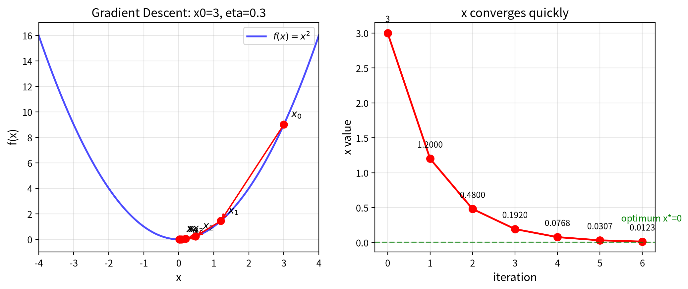
图1：左图展示从 \(x_0=3\) 出发，以 \(\eta=0.3\) 沿负梯度方向（红色箭头）逐步逼近碗底的路径，\(x_0 \to x_1 \to x_2 \to \cdots\)；右图显示 \(x\) 的值随迭代步数呈指数级收敛，4步后海拔已降千分之一以下，6步后逼近最优解 \(x^*=0\)。
1.4 学习率：步子到底该迈多大
1.4.1 \(\eta\) 太大：线性近似失效，疯狂震荡
\(\eta = 1.0\)，\(x_0 = 3\)。
第 1 步：\(x_1 = 3 - 1.0 \times 6 = -3\)。直接从碗右边跳到左边！第 2 步：\(x_2 = -3 - 1.0 \times (-6) = 3\)。又跳回右边。
\(x\) 在 3 和 \(-3\) 之间无限弹跳，海拔永远降不下来。
关键理解：这不是”跳过了山谷”，而是线性近似失效。梯度 \(2x\) 只在 \(x\) 附近有效（线性近似），当 \(\eta = 1.0\) 时，更新步长远超线性近似的有效范围，算法看到的”坡度”在新位置完全不同，导致来回震荡。
1.4.2 \(\eta\) 刚好：稳定收敛
把 \(\eta\) 从 1.0 降到 0.3，弹跳消失了——4 步让海拔降到初始的千分之一以下。
1.4.3 \(\eta\) 太小：慢如蜗牛
\(\eta = 0.01\)，\(x_1 = 3 - 0.01 \times 6 = 2.94\)。挪了 0.06，几乎原地踏步。约 500 步才能接近碗底——训练从天变成月，项目等不起。
下图对比三种学习率的效果：太大则在碗两边来回震荡（左），刚好则4步收敛到千分之一（中），太小则需500步才能接近碗底（右）。
1.4.4 最优步长是多少
三种情况看完了，自然的问题：0.3 是怎么选的？ 不是试出来的，背后有一个更深的道理。
\(f(x) = x^2\) 的梯度是 \(2x\)——那个系数 2 就是碗壁的曲率：坡度变化有多快。曲率大，碗壁陡然翻转，线性近似有效范围窄，步子必须小；曲率小，坡度变化平缓，可以迈大步。一维二次碗的最优步长恰好是曲率的倒数 \(\eta = 1/2 = 0.5\)——一步直达坑底：\(x_1 = 3 - 0.5 \times 6 = 0\)。那为什么选 0.3 而不是 0.5？因为真实函数不是完美的 \(x^2\) 碗，曲率处处不同——损失面各处陡缓不一，得按最陡处留出安全余量，不能卡着理论极限走（推导见折叠的严格版）。
严格版：怎么量化”最大曲率”？（选读，跳过不影响后续）
用光滑性。如果函数的梯度本身不会突变——梯度的变化率有上界 \(L\)（梯度 Lipschitz 常数，即 \(|\nabla f(x) - \nabla f(y)| \leq L\|x - y\|\)），那么步长 \(\eta \leq 1/L\) 能保证每步都让损失下降。这一结论来自下降引理：\(f(x-\eta\nabla f) \le f(x) - \eta\|\nabla f\|^2 + \frac{L\eta^2}{2}\|\nabla f\|^2\)，当 \(\eta \leq 1/L\) 时右端 \(\le f(x)\)。\(L\) 就是”坡度变化最快有多快”——\(f(x) = x^2\) 的 \(L = 2\)（梯度 \(2x\) 的变化率恒为 2），所以 \(1/L = 0.5\) 与上面的曲率倒数完全一致。
直觉总结：梯度告诉你坡有多陡，曲率（光滑性常数 \(L\)）告诉你坡弯得有多快，最优步长是 \(1/L\)。坡弯得越急（\(L\) 大），线性近似失效越快，步子越要小。
但实践中你通常不知道 \(L\)——真实损失函数有上亿个参数，曲率处处不同，精确计算 \(L\) 比解决原问题还贵。这就是为什么 §1.5 的 Adam 不去算曲率，而是用梯度历史间接估计：哪个方向梯度一直大（暗示曲率高），就缩小那个方向的步幅；哪个方向梯度一直小（暗示曲率低），就放大。自适应优化器的本质，是在不知道 \(L\) 的情况下，用数据驱动的方式逼近 \(1/L\)。
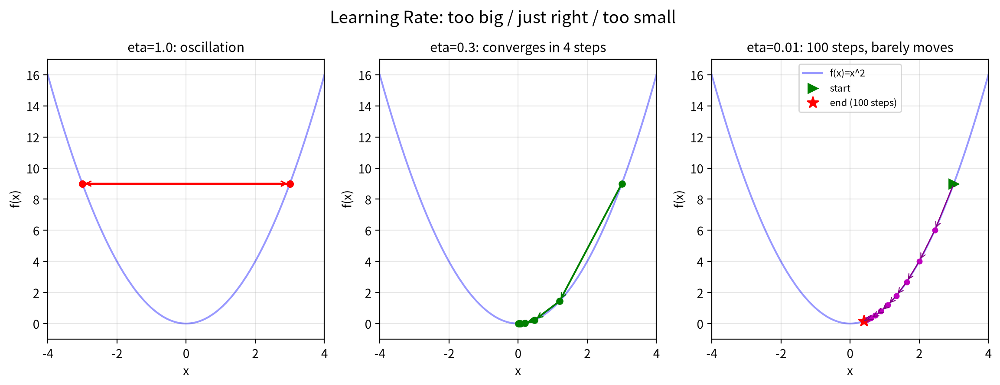
图2：左：\(\eta=1.0\) 时线性近似失效，参数在 3 和 \(-3\) 之间无限震荡；中：\(\eta=0.3\) 时稳定收敛，4步降至千分之一以下；右：\(\eta=0.01\) 时对数坐标下需约500步才能接近碗底。选择合适的学习率是训练神经网络的第一门手艺。
1.5 自适应优化器：Adam
为什么一个学习率不够
朴素梯度下降的更新公式 \(x_{\text{new}} = x_{\text{old}} - \eta \cdot \nabla f(x)\) 用一个 \(\eta\) 管所有参数方向。在 \(f(x) = x^2\) 这种一维问题上，这没问题。但真实神经网络的参数空间有上亿维，不同参数方向的”地形”弯曲程度可能差几个数量级：某个方向像广场一样平缓（曲率小），另一个方向像峡谷一样陡窄（曲率大）。
固定学习率同时走这两个方向——在陡窄方向，步子稍大就来回撞壁；步子再大，损失值会雪崩式增长，训练直接炸掉。在平缓方向，同样的步长又太小，参数几乎不动。朴素梯度下降取一个折中的 \(\eta\)，本质上是在”炸掉”和”爬不动”之间妥协。
§1.4 的最优步长分析说 \(\eta \leq 1/L\)，而曲率 \(L\) 在不同方向上不同。能不能让每个方向有自己的步长？
Adam 的核心思想
Adam 用指数移动平均（EMA）为每个方向单独估算”合适的步幅”。
核心只做一件事：为每个方向维护一个”梯度幅度的近期记忆” \(v_t\)：
\[v_t = \beta_2 v_{t-1} + (1-\beta_2)g_t^2\]
逐符号拆解：
- \(g_t\)：第 \(t\) 步算出的梯度（沿这个方向当前有多陡）
- \(g_t^2\)：梯度幅度的平方（负数平方后变正，只看”有多陡”不看方向）
- \(v_{t-1}\)：上一步的记忆值（初始为 0）
- \(\beta_2\)（读作”beta二”）：衰减系数，\(0.999\) 表示”记住 99.9% 的旧信息，混入 0.1% 的新梯度”
步幅 = \(\eta / \sqrt{v_t + \epsilon}\)。\(\epsilon\)（读作”epsilon”）是一个极小的数（如 \(10^{-8}\)），防止分母为零。\(v_t\) 大的方向（梯度历史波动大），分母大，步幅自动缩小；\(v_t\) 小的方向，分母小，步幅自动放大。
旧梯度权重按 \(\beta_2^{t-i}\) 指数衰减（\(\beta_2 = 0.999\) 时，1000 步前的梯度权重已降到约 37%），所以 \(v_t\) 只反映近期的梯度幅度，不会随训练时间无限膨胀。如果直接把所有历史梯度平方累加做分母，训练越久分母越大，有效步幅 \(\eta/\sqrt{v_t}\) 趋零——被历史淹没。EMA 让分母”只记最近”，训练后期步幅仍然有意义。
先记住这个：Adam 的核心就一句话——用梯度幅度的近期记忆 \(v_t\) 自动调节每个方向的步幅。梯度一直大的方向走小步，梯度一直小的方向走大步。下面的数字演示和完整公式都是在验证和补充这一个想法。
理解了机制，下面用数字验证。先看 Adam 的公式怎么一步步变成表格里的数字。
数字演示的场景（下一小节定义）：损失函数 \(f(w_1, w_2) = w_1^2 + 100w_2^2\)，起点 \(w = [10, 1]\)。起点处 \(w_2\) 方向梯度 \(g_2 = 2 \times 100 \times 1 = 200\)，\(w_1\) 方向只有 20——两个方向梯度量级差10倍。
手推 \(w_2\) 方向第1步：梯度 \(g_1 = 200\)，初始 \(v_0 = 0\)。
- \(v_1 = 0.999 \times 0 + 0.001 \times 200^2 = 40\)
- 偏置校正：\(40 / (1 - 0.999) = 40000\)（初始阶段分母接近 0，校正量很大）
- 步幅：\(0.1 / \sqrt{40000} = 0.0005\)（\(\epsilon\) 小到可以忽略）
- 实际变化：\(0.0005 \times 200 = 0.1\)
所以表格里 \(w_2\) 的第一步更新是从 1.00 变成 0.90。梯度 200 的方向，Adam 把有效步幅压到了和梯度 20 的方向一样——这就是”自适应”。
数字演示：两个方向，梯度差10倍
考虑损失函数 \(f(w_1, w_2) = w_1^2 + 100w_2^2\)，起点 \(w = [10, 1]\)。两个方向的梯度量级差10倍：\(w_1\) 方向梯度只有20，\(w_2\) 方向梯度有200。
朴素梯度下降 \(\eta = 0.01\)：
| 步数 | \(w_1\) | \(w_2\) | \(\nabla_{w_1}\) | \(\nabla_{w_2}\) | \(\Delta w_1\) | \(\Delta w_2\) |
|---|---|---|---|---|---|---|
| 0 | 10.00 | 1.00 | 20 | 200 | -0.20 | -2.00 |
| 1 | 9.80 | -1.00 | 19.6 | -200 | -0.20 | +2.00 |
| 2 | 9.60 | 1.00 | 19.2 | 200 | -0.19 | -2.00 |
| 3 | 9.41 | -1.00 | 18.8 | -200 | -0.19 | +2.00 |
\(w_2\) 在 +1 和 -1 之间疯狂弹跳，因为 \(\eta = 0.01\) 对梯度200的方向来说太大了。同时 \(w_1\) 每步只挪0.2——梯度20太小，\(\eta = 0.01\) 对它又太保守了。一个 \(\eta\) 无法同时满足两个方向。
Adam \(\eta = 0.1, \beta_1 = 0.9, \beta_2 = 0.999\)：
| 步数 | \(w_1\) | \(w_2\) | \(\nabla_{w_1}\) | \(\nabla_{w_2}\) | 实际步长 \(w_1\) | 实际步长 \(w_2\) |
|---|---|---|---|---|---|---|
| 1 | 10.00 | 1.00 | 20 | 200 | 0.100 | 0.100 |
| 2 | 9.90 | 0.90 | 19.8 | 180 | 0.100 | 0.100 |
| 3 | 9.80 | 0.80 | 19.6 | 160 | 0.100 | 0.099 |
| 4 | 9.70 | 0.70 | 19.4 | 140 | 0.100 | 0.098 |
| 5 | 9.60 | 0.60 | 19.2 | 120 | 0.100 | 0.096 |
关键对比：\(w_2\) 方向的梯度从200降到120，但实际步长始终维持在0.1附近。Adam 用 \(\eta/\sqrt{v_t}\) 把梯度200的方向自动缩小到0.1步长，梯度20的方向也自动校准到0.1步长。两个方向步长相当，都不震荡、都不停滞。
完整公式
完整的 Adam在上面的自适应步幅之外，还加了两个配件：
动量。用 EMA 估计梯度的一阶矩（平均坡度）\(m_t = \beta_1 m_{t-1} + (1-\beta_1)g_t\)，让优化器带着惯性走。
逐符号拆解：
- \(m_t\)：第 \(t\) 步的”速度”（累积的历史方向）
- \(m_{t-1}\)：上一步的速度（初始为 0）
- \(g_t\)：当前梯度（新的推力）
- \(\beta_1\)（读作”beta一”）：惯性系数，\(0.9\) 表示”保留 90% 旧速度，混入 10% 新推力”
手推一个简单例子。假设连续 3 步梯度都是 \(+1\)（顺坡而下），第 4 步突然遇到 \(-0.5\)（小坑）：
步数 梯度 \(g_t\) 无动量速度 有动量速度 \(m_t\) 1 \(+1\) \(1\) \(0.1\) 2 \(+1\) \(1\) \(0.19\) 3 \(+1\) \(1\) \(0.271\) 4 \(-0.5\) \(-0.5\) \(0.194\) 5 \(+1\) \(1\) \(0.275\) 无动量时第 4 步直接回退（速度变负）；有动量时，前面累积的速度帮参数冲过小坑，速度只是从 \(0.271\) 降到 \(0.194\)，仍保持前进。这就是 Adam 里的惯性。
偏置校正。初始阶段 \(v_t\) 和 \(m_t\) 被零初始化向量拖累，需要用 \(m_t/(1-\beta_1^t)\) 和 \(v_t/(1-\beta_2^t)\) 校正。训练前几步校正量较大，随着 \(t\) 增大趋近于 1。
结果：梯度大的方向小步走，梯度小的方向大步走，且步幅不会随训练时间衰减到零。每个参数都公平参与更新，不会因为某个参数碰巧在某一步梯度特别大就抢占了所有步幅。
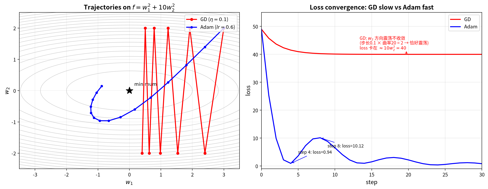
图3：损失函数 \(f(w_1, w_2) = w_1^2 + 10w_2^2\)（图中用系数10以便可视化；正文数字演示用系数100，原理相同）。GD 取 \(\eta=0.1\)（步长 0.1 \(\times\) \(w_2\) 方向曲率 20 = 2，恰好让 \(w_2\) 在 \(\pm 2\) 之间震荡——这是临界步长，用来展示固定学习率顾此失彼）；Adam 取 \(lr=0.6\)（配合动量快速收敛）。两个学习率各自独立调试，没有换算关系——这恰恰说明 Adam 的自适应步幅让它能用大得多的有效学习率。左图：红色轨迹（朴素GD）在 \(w_2\) 方向每步精确反转——\(w_2\) 永远在 2 ↔︎ -2 之间来回跳，\(w_2\) 方向的损失分量（\(10w_2^2 = 40\)）永远降不下来（条件适当的 \(w_2\) 学习率应为 0.05，但那会让 \(w_1\) 方向几乎停滞）；蓝色轨迹（Adam）螺旋收敛至谷底，自适应步幅自动协调两个方向。右图是损失收敛对比：GD 的红线从 49 缓慢下降但趋近 40 后几乎不再降低，Adam 的蓝线虽有动量过冲但仍快速收敛至零。
细看右图 Adam 的 loss 曲线：step 4 降到 0.94 后反弹到 step 8 的 10.12，然后才稳定下降。这不是 bug，而是动量过冲——\(w_2\) 在 step 4 穿越零点时梯度已经反转，但动量 \(m_t\) 是梯度的低通滤波器（\(\beta_1=0.9\) 意味着旧梯度权重达90%），方向切换比梯度慢好几拍，把 \(w_2\) 推到了 -0.96 才刹住车。在简单二次型上动量是纯负担（过冲），它的价值在复杂损失面：穿越平坦区、冲过小坑、逃离鞍点。如果去掉动量（\(\beta_1=0\)，即 RMSProp），这条曲线会变成从 49 单调下降到 0 的平滑弧线，零起伏。
一句话总结：朴素梯度下降用一个 \(\eta\) 管所有方向——梯度大的方向震荡，梯度小的方向停滞。Adam = 自适应步幅（\(\eta/\sqrt{v_t}\)）+ 动量（\(m_t\)）+ 偏置校正，三者配合让优化比朴素梯度下降快得多、稳得多。
Adam 归一化的是同一层内不同参数方向的梯度尺度差异。后面 Ch4 会讲到另一个层面的归一化：归一化层（LayerNorm / RMSNorm）归一化的是层与层之间的激活值尺度差异——防止数值经过几十层矩阵乘法后滚雪球式爆炸或消失。两者作用面不同，互补而非替代：归一化层稳定层间梯度流，Adam 调节方向间步长。现代深度网络两者都用。
Muon：从标量自适应到矩阵自适应
Adam 的自适应步幅 \(\eta/\sqrt{v_t}\) 为每个标量参数单独调节步长。但神经网络的权重是矩阵（如 Attention 的 \(W_Q, W_K, W_V\)——Query/Key/Value 投影矩阵，见 Ch5；FFN 的 \(W_1, W_2\)），矩阵有比标量更丰富的结构——它有奇异值谱（矩阵”拉伸各个方向”的幅度列表，Ch6 会详细讲）。Adam 把矩阵展平成一堆标量逐个处理，丢掉了这层结构信息。
打个比方：Adam 像逐个工位调转速——哪个工位振动大（梯度大）就给它降速，哪个工位安静就给它加速（标量自适应）。但这条流水线上，不同工位之间的协作关系（矩阵的奇异值谱结构）它看不见——如果整条线只有一个方向在转、其他全停了，Adam 不会发现，因为它只盯着每个工位自己的转速表。
Muon（Liu et al., 2025，arXiv:2502.16982）给出一个新思路：不逐标量缩放，而是在矩阵层面把动量正交化。具体做法分两步：
第一步：正交化动量。拿 Adam 算出的动量矩阵 \(M_t\)（动量矩阵：Adam 的一阶矩 \(m_t\)，形状和权重矩阵一样，是梯度历史的指数滑动平均），对它做一次正交化——把矩阵的奇异值全部拉成 1，只保留方向信息。
这里需要一点 Ch6 的前置知识。任何矩阵 \(A\) 都可以做 SVD 分解：\(A = U\Sigma V^T\)，其中 \(U, V^T\) 是旋转（正交矩阵），\(\Sigma\) 是拉伸（对角线上是奇异值 \(\sigma_1 \geq \sigma_2 \geq \cdots\)）。正交化就是把 \(\Sigma\) 替换成 \(I\)（单位矩阵），只留 \(UV^T\)——把”旋转+拉伸”变成”纯旋转”，所有方向等强度。
实际工程用 Newton-Schulz 迭代近似完成正交化，不需要做真正的 SVD（SVD 太贵）。从 \(X_0 = M_t / \|M_t\|_F\)（先归一化到 Frobenius 范数为 1；Frobenius 范数 \(\|A\|_F\) 是矩阵所有元素平方和的平方根，即”矩阵的整体大小”）出发，迭代：
为什么 5 次就够了？（证明细节，选读）
\[X_{k+1} = \frac{3}{2}X_k - \frac{1}{2}X_k X_k^T X_k\]
迭代对奇异值做了同一件事。设 \(X_k\) 的 SVD 为 \(U\Sigma_k V^T\)，代入迭代公式，\(U\) 和 \(V^T\) 不变，只有奇异值在变：
\[\sigma_{k+1} = \frac{3}{2}\sigma_k - \frac{1}{2}\sigma_k^3\]
这是一个标量多项式 \(g(\sigma) = \frac{3}{2}\sigma - \frac{1}{2}\sigma^3\)。它有两个不动点：\(g(0) = 0\)（不稳定）和 \(g(1) = 1\)（稳定）。当 \(\sigma \in (0,1)\) 时 \(g(\sigma) > \sigma\)（往上推），当 \(\sigma > 1\) 时 \(g(\sigma) < \sigma\)（往下压）——无论起始值多少，所有奇异值都被推向 1。例如起始奇异值 0.3，5 次迭代后达到 0.996，6 次后达到 0.99997——足够接近正交矩阵。每步只需几次矩阵乘法，比精确 SVD 快得多。
第二步：重缩放。正交化后的 \(\tilde{M}_t\) 的 RMS（均方根）和原始 Adam 更新不同，需要缩放回与 AdamW（Adam 加权重衰减 weight decay，LLM 预训练的长期默认优化器）相当的有效步长，保证训练稳定性。
为什么正交化有效？ Adam 的一个已知失败模式是：当权重矩阵的奇异值谱严重倾斜（少数 \(\sigma_i\) 远大于其他），Adam 的更新会坍缩到低秩子空间——梯度能量集中在少数几个奇异值方向上，其他方向的参数几乎不更新。正交化把所有奇异值拉平为 1，强制更新均匀覆盖所有方向，防止这种坍缩。用刚才的比喻：Muon 不只调每个工位的转速，还要求所有方向同时运转——不允许一个方向飞转而其他方向停摆。
实测效果：根据论文的 scaling law 实验，相同验证损失下 Muon 只需约 AdamW 一半的计算量（约 52% 的 FLOPs，约 2 倍计算效率），规模越大收益越明显。
Muon 已被多个万亿参数级模型采用：Kimi K2（1T 总参数）提出 MuonClip——在 Muon 基础上加入 QK-Clip 技术（约束注意力 logits 上限，防止训练尖峰；Q/K 见 Ch5）约束注意力 logits，实现 15.5 万亿 token 预训练零损失尖峰；DeepSeek-V4 Pro（1.6T 总参数）在技术报告中明确采用 Muon。但 Muon 只作用于隐藏层的二维权重矩阵（\(W_Q, W_K, W_V\)、FFN 的 \(W_1, W_2\)）；嵌入层、输出投影和标量参数仍回退到 AdamW——因为这些参数不是二维矩阵，没有奇异值谱可言。Muon 的优势集中在大规模预训练；对 LoRA 微调（低秩适配，Ch6 讲）、小规模训练和 RL 训练（PPO/GRPO，强化学习算法，Ch3 提到），AdamW 仍是更稳妥的默认选择。
跨章前瞻：Muon 正交化的数学基础——SVD 分解和奇异值谱——将在 Ch6 系统讲解。Ch1 这里你只需理解：矩阵有比标量更丰富的结构，正交化是利用这种结构改进优化的手段。
其他前沿优化器。Muon 之外还有几条路线在探索”比 Adam 更好”：
- Lion（Google Brain, 2023）：砍掉 Adam 的二阶矩估计 \(v_t\)，只用动量 \(m_t\) 的符号做更新——\(x_{t+1} = x_t - \eta \cdot \text{sign}(m_t)\)。参数量更小、更快，但在 LLM 预训练上稳定性不如 AdamW，目前主要用于视觉模型。
- Shampoo（Google, 2018，PaLM 采用）：不像 Adam 逐标量缩放，而是为每个参数矩阵维护两个 Kronecker 因子 \(L\) 和 \(R\)（分别近似梯度的左、右协方差），用 \(L^{-1/4} G R^{-1/4}\) 做预处理。思路和 Muon 类似——利用矩阵结构——但用二阶统计量而非正交化。计算比 Muon 更贵。
- Schedule-Free（Defazio et al., Meta AI, 2024）：消除学习率调度这一超参数。不维护动量，而是在当前参数和平均参数之间做插值，理论上不需要 warmup 和 decay。赢得了 MLCommons 2024 AlgoPerf 算法效率挑战赛；NeurIPS 论文进一步证明它在 LLM 预训练中无需 decay 阶段即可沿损失面的”河流”结构有效收敛。
这些路线的共同目标：Adam 把矩阵展平成标量逐个处理，丢掉了矩阵结构信息；Lion 用符号简化、Shampoo 用 Kronecker 因子、Schedule-Free 用平均插值、Muon 用正交化——各自从不同角度找回这层信息。
从固定学习率（朴素梯度下降）→ 标量自适应（Adam）→ 矩阵自适应（Muon），优化器从”一个 \(\eta\) 管所有方向”进化到”每个方向有自己的步幅”，再进化到”矩阵整体保持方向均衡”。但即便方向找对了，还有一个更狡猾的陷阱在等着你——
1.6 局部最小值与鞍点
\(f(x) = x^2\) 只有一个碗底，但真实世界的函数有起伏。考虑：
\[f(x) = x^4 - 4x^2 + 2\]
它有两个”山谷”——\(x = -\sqrt{2}\) 和 \(x = \sqrt{2}\)，深度一样（对称双井），中间隔着一个”山丘”（\(x=0\) 处的局部最大值）。梯度下降的策略依然是”沿负梯度方向小步试探”，但如果你从右边出发，很可能滑进右边的浅坑就停住了——坑底梯度为零（地面平坦），算法以为”到山脚了”。可左边的山谷同样深，你却到不了。
这就是局部最小值困境。梯度下降只保证：你走到一个坑里出不去了。它不保证这个坑是全局最深的。
应对策略： - 随机初始化：每次训练从不同的位置起步，避免每次都滑进同一个浅坑 - Adam 的动量：前面累积的速度帮参数冲过小坑（§1.5） - 学习率调度：先大步接近，后小步精细调整（§1.7）
在极高维空间中，纯平的”坑底”很少见。一个点是局部最小值，需要所有方向都向上弯曲（Hessian，二阶导数矩阵；正定即所有方向都向上弯）——维度越高越难满足。大部分情况更像鞍点（saddle point）：梯度为零但既不是最小值也不是最大值，某些方向向上弯曲、某些方向向下弯曲。形象地说，你站在马鞍的中央：前后方向下坡，左右方向上坡。所以高维中鞍点远比局部最小值常见，也总有出路。
下图左半展示一维函数 \(f(x)=x^4-4x^2+2\) 的局部最小值困境：从右侧出发的梯度下降（绿色虚线）滑进右边的山谷就停住了，无法翻越中间的山丘到达左边的山谷；右半展示二维鞍点 \(f(x,y)=x^2-y^2\) 的等高线图，梯度下降沿 \(y\) 方向可以逃离。
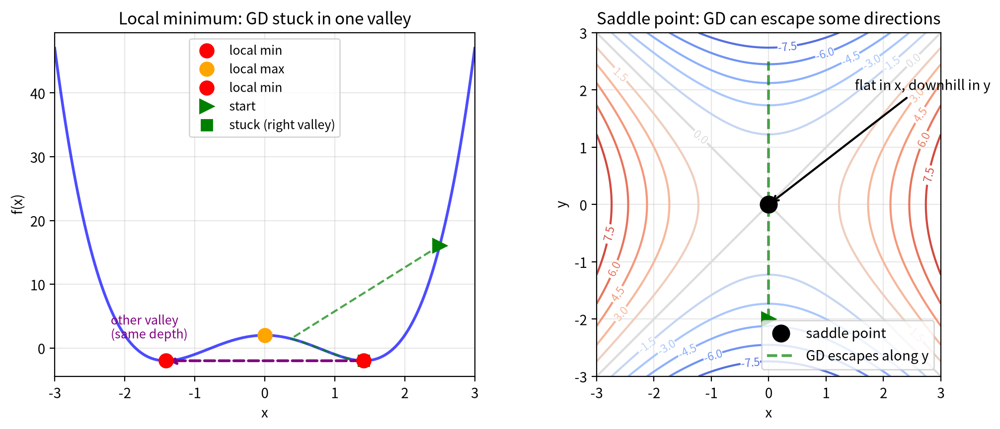
图4：左：函数 \(x^4-4x^2+2\) 有两个对称的局部最小值（\(x=\pm\sqrt{2}\)，红色标记）和一个局部最大值（\(x=0\)，橙色标记），梯度下降从右侧出发困于右边的山谷，无法翻越中间的山丘到达左边；右：鞍点处某些方向向上（\(x\) 轴）、某些方向向下（\(y\) 轴），梯度下降总可以从下坡方向逃离。高维空间中鞍点比局部最小值更常见。
1.7 学习率调度
前置知识：本节需要你已经理解”梯度下降是什么”和”学习率是什么”。§1.5 讲 Adam 时用到了固定的基础学习率 \(\eta\)，本节讲如何让这个 \(\eta\) 随时间变化。
训练神经网络就像学车：初期需要大胆探索（学习率大，多试试不同方向），后期需要精细微调（学习率小，小心别开过目的地）。这就是学习率衰减（Learning Rate Decay）。
常见策略有两种：
- 阶梯衰减：每过几轮把学习率直接砍半，简单暴力
- 余弦衰减：让学习率像余弦曲线一样平滑下降，从大到小过渡得更丝滑
还有一个实战技巧叫学习率预热（Warmup）：训练最开始的几步，学习率从接近 0 的小值慢慢”升温”到目标值。为什么？因为模型参数初始化是随机的，初始梯度往往又大又乱，一上来就用全力容易”炸梯度”。预热相当于先从慢走开始，再加速到奔跑。今天训练 GPT、LLaMA 这类大模型，Warmup 几乎是标准配置。
一句话总结：学习率调度决定了这场长跑的节奏——该冲刺时冲刺，该刹车时刹车。Adam 的自适应步幅管”方向间的公平”，学习率调度管”时间上的节奏”。
1.8 AI落地
| 场景 | 一句话解释”没有这个工具会怎样” |
|---|---|
| 线性回归训练 | 没有梯度下降，就无法找到使均方误差最小的参数，线性模型不能从数据中学习 |
| 神经网络训练 | 没有梯度下降（配合反向传播），深度学习模型无法训练。2012年AlexNet的突破、ChatGPT的语言能力，底层都是这个算法在驱动参数更新 |
| 深度学习框架 | PyTorch和TensorFlow的核心optimizer就是梯度下降的各种变体（SGD（Stochastic Gradient Descent，随机梯度下降，每次只用一小批数据估计梯度）、Adam、AdamW）。没有这个基础组件，整个AI生态会瞬间崩塌 |
1.9 常见误解
误解 1：“梯度下降能找到全局最优”
梯度下降只保证找到一个驻点（梯度为零的点，可能是局部极小值或鞍点）。你可能卡在某个浅山谷，而真正的最低点远在另一个山谷。随机初始化、动量法、学习率衰减只是缓解，不是根治。
误解 2：“学习率越大越好，收敛越快”
学习率太大会导致线性近似失效，参数在目标函数上疯狂震荡；太小则收敛极慢。好的学习率让损失曲线平滑下降，既不剧烈震荡也不拖泥带水。
不同优化器的学习率范围差别很大： - SGD+Momentum：学习率较大，通常0.01~0.1。因为SGD没有自适应归一化，需要较大的步长才能有效前进 - Adam/AdamW：在微调预训练模型时（如BERT fine-tuning），学习率通常1e-51e-4（即0.000010.0001）。Adam的自适应归一化（Ch1中提到的”给每个方向重新分配刻度”）已经等效地放大了小梯度方向的步长，所以基础学习率可以设得很小。BERT和GPT系列模型的微调几乎都使用AdamW，学习率通常在2e-5到5e-5之间。从头预训练时可能用到更大的值（如1e-3） - Muon：用于大规模预训练，在矩阵层面正交化动量（§1.5）。AdamW 仍是微调和RL训练的默认选择，Muon的优势集中在预训练阶段的权重矩阵上
判断学习率是否合适的实用方法：看损失曲线。如果损失曲线像心电图一样剧烈上下震荡→学习率太大，砍半再试；如果损失曲线下降得比蜗牛还慢→学习率太小，加倍再试。
误解 3：“梯度下降 = 反向传播”
梯度下降是”走路策略”——规定参数怎么更新（沿负梯度方向走一小步）。反向传播是”算方向”——高效计算梯度的算法，从输出层倒推回输入层。两者配合：反向传播算梯度，梯度下降用梯度更新参数。但绝不是一回事。第4章深入澄清。
1.10 本章回顾
这一章的核心思想：面对一个复杂函数（哪怕上百万个变量），你不需要一眼看穿全局地形，只需要每一步都”沿负梯度方向小心翼翼地迈一小步”，逐步迭代就能接近最优解。三个关键点：方向是负梯度，步子是受控的线性试探，“最陡”可被重新度量。
本章自检：
【知识点】
- 生成：画一张你自己的图——一个有两个山谷的函数，标出从某点出发的梯度下降路径：它为什么停在第一个山谷就再也不动了？
提示
先画出两个山谷和一个”山丘”，再想：梯度为零的点有哪些？它们都是最低点吗？答案
答案不唯一，示范：画一个中间凸起、两边下凹的双谷函数（如 §1.6 的 \(x^4-4x^2+2\)），路径从右侧出发，走到右边谷底（梯度=0）就停——算法只看得见”脚下”，看不见左边的谷更深。核对你的答案：至少包含 ①两个山谷与一个山丘；②一条停在第一个山谷的路径；③”为什么停”一句（梯度为零=算法以为到站，翻不过山丘）。 - 学习率太大和太小分别会出现什么问题？
提示
步子迈得过大/过小，分别对应什么失效模式？答案
学习率太大：线性近似失效，震荡甚至发散。学习率太小：收敛极慢，浪费算力。（§1.4） - 朴素梯度下降用一个 \(\eta\) 管所有参数方向，为什么这在真实神经网络中会成为问题？
提示
一个 \(\eta\) 同时管上亿个方向——每个方向的梯度量级一样吗？答案
真实神经网络的参数空间有上亿维，不同参数的梯度量级可能差几个数量级。一个 \(\eta\) 同时管所有方向：对大梯度方向步子太大（震荡），对小梯度方向步子太小（几乎不动）。（§1.5） - Adam相比普通SGD多了哪两个机制？它们各自解决什么问题？
提示
Adam 多了两个”矩”：一阶矩管什么、二阶矩管什么？答案
动量（一阶矩估计）累积历史梯度方向，抑制震荡；自适应学习率（二阶矩估计）按梯度波动缩放步幅，让每个参数公平参与更新。（§1.5） - Muon相比Adam多了什么操作？为什么这个操作能提升大规模预训练的效率？
提示
Muon 在 Adam 之上加了哪个矩阵操作？它想压平什么？答案
Muon在Adam的动量矩阵上增加了正交化操作（Newton-Schulz迭代），把矩阵的奇异值全部拉平为1，只保留方向信息。这防止了Adam在奇异值谱严重倾斜时更新坍缩到低秩子空间的问题，使更新均匀覆盖所有方向，从而提升大规模预训练效率。（§1.5） - 边界：学习率太大时的震荡（过冲→反弹）在什么条件下收敛不回来？动量为什么救不了它？自适应学习率（Adam 的二阶矩）做了什么来根治？
提示
边界：步长超过什么阈值会过冲？过了阈值之后每一步会怎样（反弹/发散）？动量是”顺旧方向”——方向都反转了它还顺吗？答案
边界：固定学习率下，某方向曲率大→梯度大→步长（\(\eta \times\) 梯度）超过”临界值”时就震荡——正文数字演示：\(\eta=0.1\) 时 \(w_2\) 方向在 \(\pm 2\) 之间精确反转，损失分量永远降不下来（§1.5 图3）；步长正好等于”到谷底距离的两倍”时每一步都反弹回原处，超过就发散。动量救不了：动量是梯度的低通滤波（\(\beta_1=0.9\) 保留 90% 旧方向），方向切换比梯度慢好几拍——在简单二次型上动量是纯负担（过冲），去掉动量反而平滑收敛（§1.5 动量过冲）；它的价值在复杂损失面（穿越平坦区、冲过小坑、逃离鞍点）。二阶矩能缓解：\(\eta/\sqrt{v_t}\) 让梯度大的方向步长自动缩小（数字演示：梯度从 200 降到 120，实际步长始终约 0.1），两个方向都不震荡——震荡的根源”方向间梯度差异”被按方向缩放消除。核对你的答案：至少包含 ①震荡条件（步长超过临界，如 \(\eta \times\) 曲率 \(\geq 2\)）；②动量为何无效（低通滤波=滞后）；③二阶矩的机制（梯度大→步长小）。 - 边界：高维中梯度为零的点主要是局部最小值还是鞍点？为什么？梯度下降卡在鞍点时会发生什么，动量为什么能帮上忙？这些机制能保证找到全局最优吗？
提示
边界：局部最小值要”所有方向都向上弯”——高维里这多难满足？鞍点有没有下坡路？动量冲的正是哪条路？答案
边界：高维中以鞍点为主——局部最小值要求所有方向都向上弯曲（Hessian 正定），维度越高越难满足；鞍点只需某些方向向上、某些向下，梯度为零但下坡方向依然存在（§1.6）。卡在鞍点：梯度为零，纯梯度下降以为到站就停住；动量能帮上忙——累积的历史速度（\(m_t\)）让参数沿原方向惯性穿过鞍点（§1.5：穿越平坦区、冲过小坑、逃离鞍点）。但不能保证全局最优：梯度下降只保证找到驻点（局部极小或鞍点），随机初始化、动量、学习率调度只是缓解，不是根治（§1.6）。核对你的答案：至少包含 ①为何高维鞍点为主（正定条件难满足）；②动量逃离机制（惯性穿过）；③”不保证全局最优”一句。
【逻辑链】
沿这条链走一遍，理解每步如何解决前步的问题：
损失函数 → 梯度（只给方向）→ 学习率 \(\eta\)（步子多大？）→ 度量（步长按 \(1/L\) 怎么定？）→ 自适应学习率（每个参数是否公平？）
- 动量（一阶矩）→ 累积历史方向
- 二阶矩 → 按波动缩放步幅
- 矩阵正交化（Muon）→ 保留方向、拉平奇异值，防止更新坍缩到低秩子空间
答案
损失函数 → 梯度：梯度是损失函数的局部最陡方向，只告诉你”往哪走”，不告诉你”走多远”。- 梯度 → 学习率 \(\eta\)：\(\eta\) 控制步长。太大→线性近似失效，震荡发散；太小→收敛极慢。
- 学习率 → 方向差异：不同参数方向的梯度量级可能差几个数量级，一个 \(\eta\) 同时管所有方向——大方向震荡、小方向停滞。
- 方向差异 → 自适应学习率：所有参数用同一个 \(\eta\) 不公平——有的方向陡、有的方向缓。
- 动量（一阶矩）：累积历史梯度方向，抑制震荡。
- 二阶矩：按梯度波动缩放步幅，让每个参数公平参与更新。
- 矩阵正交化（Muon）：在矩阵层面把奇异值拉平，保留方向、防止更新坍缩到低秩子空间。
未解问题：下山学会了。但如果必须在指定路线上走呢？——这就是下一章的问题：带有约束的优化怎么做？
第2章：拉格朗日乘子法——带着镣铐跳舞
Ch1的梯度下降假设你可以自由移动——想往哪走就往哪走。但现实世界从不给你这种自由：预算有限、时间有限、算力有限。梯度下降只管”怎么下山”，不问”山路在哪里”。你需要一套新的数学工具——既能爬坡（优化目标），又不越界（遵守约束）。
拉格朗日乘子法教你”在有限预算内把事做到最好”。那个叫 \(\lambda\)（lambda）的变量，量化了一件事：约束每放松一点点，你能多赚多少。经济学把这个量叫”影子价格”。
本章路线：§2.1–§2.3 先建立”相切”直觉并完成推导；§2.4–§2.5 看不等式约束与对偶；§2.6–§2.8 收束。时间紧可先读 §2.1–§2.4 和 §2.6。
核心概念： 1. 约束优化把”目标”和”限制”缝进同一个拉格朗日函数。 2. 最优点出现在目标等高线与约束相切处。 3. KKT 用互补松弛性区分”约束生效”和”约束没生效”。 4. 对偶让惩罚系数 \(\lambda\) 和约束上限 \(c\) 可以互换。
动笔前自检：①你还记得梯度下降的更新公式吗？②”自由优化”和”带约束优化”差在哪？如果说不清，本章会从零建立直觉。
2.1 生活类比：怎么在只能走山路时登顶？
想象你想登上一座山的最高点，但必须沿着指定的山路走——不能自己开路，只能踩着已有的小径一步一步往上。注意方向反过来了：§1.1 里目标是到最低点（下山，无约束），这里目标是登顶（上山），但多了一道”只能沿山路走”的限制。
这就是拉格朗日乘子法的核心场景：目标是海拔尽可能高（最大化），约束是必须沿指定路线走（g(x,y)=0）。你站在山腰四处张望，发现最优策略出现在一个特殊的位置——目标函数的等高线和山路恰好相切。此时你想往上爬的方向（\(\nabla f\)）恰好垂直于山路，沿着路再多走一步，海拔不再提升。
\(\lambda\)就是这个”对齐程度”的度量：在本文的约定 \(L = f + \lambda(g - c)\) 下（§2.3 例子的 \(g\) 已把右端常数并入，两种写法实质相同），约束右端项 \(c\) 每放松 1 单位，最优值变化 \(-\lambda\)。\(-\lambda > 0\) 表示放松约束让最优值增大，\(-\lambda < 0\) 表示放松反而减小——这就是经济学中的”影子价格”。\(|-\lambda|\) 的大小取决于目标函数与约束的”竞争”程度——约束越限制目标改善的空间，\(|-\lambda|\) 越大；约束几乎不影响目标时 \(|-\lambda|\) 趋近于零。
而拉格朗日函数 \(L\) 把”往上爬”和”别偏离路”两个目标合并成一个统一的指引——你只需要跟着 \(L\) 的指示走，它自动帮你同时满足两个目标。
2.2 几何可视化
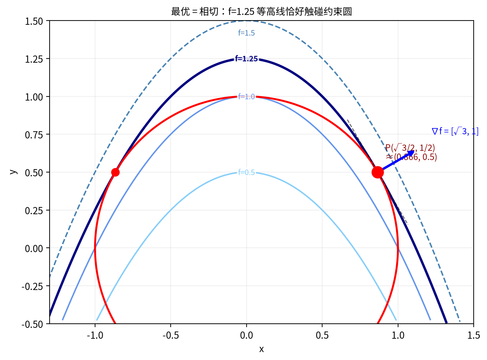
图5：目标函数 \(f(x,y)=x^2+y\) 的等高线是一族开口向下的抛物线（蓝色系，每条标注了对应的 \(f\) 值，其中相切的 \(f=1.25\) 加粗显示），与约束圆 \(x^2 + y^2 = 1\)（红色）在最优点 \(P(\sqrt{3}/2, 1/2) \approx (0.866, 0.5)\) 处相切。注意最优点不在 \(x=y\) 的对角线上——因为 \(x^2\) 比 \(y\) “增长更快”，最优策略是多拿 \(x\)、少拿 \(y\)。红色箭头为目标梯度 \(\nabla f\) 在 P 点的方向，黑色虚线为约束圆在 P 点的切线。
2.3 推导详解
好，现在让我们拿起纸笔，用一个具体的例子把拉格朗日乘子法从头到尾算一遍。你要做到的不是”看懂”，而是”跟着算完一遍之后觉得不过如此”。
问题设定：
\[\text{最大化 } f(x, y) = x^2 + y\]
\[\text{约束条件 } g(x, y) = x^2 + y^2 - 1 = 0\]
目标函数 \(f(x, y) = x^2 + y\) 的等高线是一族开口向下的抛物线 \(y = c - x^2\)。约束 \(g(x, y) = 0\) 是单位圆 \(x^2 + y^2 = 1\)。你只能在圆周上选择点，目标是从这些点中找到 \(f\) 值最大的那个。
注意到 \(x\) 以平方形式出现、\(y\) 以线性形式出现——两者对目标函数的贡献不对称。这会导致最优点不在 \(x = y\) 的对角线上。
第一步：构造拉格朗日函数
拉格朗日的核心想法是：把约束条件”缝”进目标函数里，变成一个没有约束的新问题。构造如下：
\[L(x, y, \lambda) = f(x, y) + \lambda \cdot g(x, y)\]
\[= x^2 + y + \lambda(x^2 + y^2 - 1)\]
（符号约定：本文统一用加号 \(L = f + \lambda g\)。有些教材写成减号 \(L = f - \lambda g\)，两种写法完全等价，只是对应的 \(\lambda\) 差一个负号。）
第二步：求偏导数并令其为零
对 \(x\) 求偏导数（把 \(y\) 和 \(\lambda\) 当成常数）：
\[\frac{\partial L}{\partial x} = 2x + 2\lambda x = 2x(1 + \lambda) = 0\]
对 \(y\) 求偏导数（把 \(x\) 和 \(\lambda\) 当成常数）：
\[\frac{\partial L}{\partial y} = 1 + 2\lambda y = 0\]
对 \(\lambda\) 求偏导数（把 \(x\) 和 \(y\) 当成常数）：
\[\frac{\partial L}{\partial \lambda} = x^2 + y^2 - 1 = 0\]
第三步：解方程组——两条路径
第一个方程 \(2x(1 + \lambda) = 0\) 是两个因子的乘积等于零——这意味着至少有一个因子为零。这给出了两条不同的路径（记住：乘积为零→至少一个因子为零，这是初中代数）：
路径A：假设 \(\lambda = -1\)
把 \(\lambda = -1\) 代入第二个方程：
\[1 + 2(-1) \cdot y = 1 - 2y = 0 \Rightarrow y = \frac{1}{2}\]
把 \(y = 1/2\) 代入第三个方程（约束）：
\[x^2 + \left(\frac{1}{2}\right)^2 = 1 \Rightarrow x^2 = \frac{3}{4} \Rightarrow x = \pm\frac{\sqrt{3}}{2} \approx \pm 0.866\]
两个候选点：\(\left(\frac{\sqrt{3}}{2}, \frac{1}{2}\right)\) 和 \(\left(-\frac{\sqrt{3}}{2}, \frac{1}{2}\right)\)
计算 \(f\) 值：\(f = x^2 + y = \frac{3}{4} + \frac{1}{2} = \frac{5}{4} = 1.25\)
路径B：假设 \(x = 0\)
把 \(x = 0\) 代入第三个方程：
\[0 + y^2 = 1 \Rightarrow y = \pm 1\]
- 点 \((0, 1)\)：代入 \(y=1\) 到第二个方程 \(1 + 2\lambda \cdot 1 = 0 \Rightarrow \lambda = -\frac{1}{2}\)，\(f = 0 + 1 = 1\)
- 点 \((0, -1)\)：代入 \(y=-1\) 到第二个方程 \(1 + 2\lambda \cdot (-1) = 0 \Rightarrow \lambda = \frac{1}{2}\)，\(f = 0 - 1 = -1\)
第四步：确定最大值
比较所有候选点的 \(f\) 值：
| 候选点 | \(f\) 值 | 来源 |
|---|---|---|
| \((\sqrt{3}/2, 1/2) \approx (0.866, 0.5)\) | \(5/4 = 1.25\) | 路径A |
| \((-\sqrt{3}/2, 1/2) \approx (-0.866, 0.5)\) | \(5/4 = 1.25\) | 路径A |
| \((0, 1)\) | \(1\) | 路径B |
| \((0, -1)\) | \(-1\) | 路径B |
最大值为 \(f^* = 5/4 = 1.25\)，在 \(\left(\frac{\sqrt{3}}{2}, \frac{1}{2}\right)\) 和 \(\left(-\frac{\sqrt{3}}{2}, \frac{1}{2}\right)\) 处同时达到。
注意最优点 不在 \(x = y\) 的对角线上——\(x \approx 0.866\) 而 \(y = 0.5\)。这是因为目标函数中 \(x\) 的贡献是平方增长（“更值钱”），最优策略是多拿 \(x\)、少拿 \(y\)。
第五步：验证梯度条件
在最优点 \(\left(\frac{\sqrt{3}}{2}, \frac{1}{2}\right)\) 处：
- 目标梯度 \(\nabla f = \left[\frac{\partial f}{\partial x}, \frac{\partial f}{\partial y}\right] = [2x, 1] = \left[\sqrt{3}, 1\right] \approx [1.732, 1]\)
- 约束梯度 \(\nabla g = \left[\frac{\partial g}{\partial x}, \frac{\partial g}{\partial y}\right] = [2x, 2y] = \left[\sqrt{3}, 1\right] \approx [1.732, 1]\)
关键观察：\(\nabla f\) 和 \(\nabla g\) 在最优点处完全同方向（数值完全相同）！这不是巧合，而是一个必然结论。推理如下：
你被锁在约束圆上，只能沿圆的切线方向移动。如果 \(\nabla f\) 在切线方向上有分量，意味着沿那个方向走一步，\(f\) 还能继续涨——那你就还没到最优点。所以，在最优点处，\(\nabla f\) 的切线分量必须为零，只剩下垂直于切线的方向——也就是圆的法线方向。而 \(\nabla g\) 恰好就是约束边界的法线方向。因此 \(\nabla f \parallel \nabla g\) 是最优点的必要条件。
下图直观验证了这一点：在非最优点处，\(\nabla f = [2x, 1]\) 有明显的切线分量（箭头不垂直于圆），说明 \(f\) 还能沿圆周继续涨；只有在 P 点，\(\nabla f\) 恰好垂直于圆——切线分量为零，\(f\) 涨不动了。
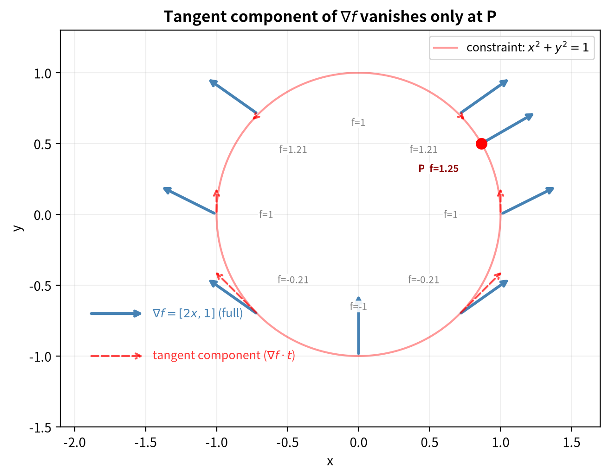
图6：蓝色实箭为完整的梯度 \(\nabla f = [2x, 1]\)（目标函数 \(f\) 的”往上爬”方向），红色虚箭为 \(\nabla f\) 在切线方向上的分量（“能走的方向”）。A、B 两点的红虚箭明显非零（步一步 \(f\) 还能涨），只有 P 点红虚箭消失（切线分量为零，\(f\) 涨不动了）。每点标注了对应的 \(f\) 值。
验证拉格朗日方程： \[\nabla f + \lambda \nabla g = [\sqrt{3}, 1] + (-1)[\sqrt{3}, 1] = [0, 0]\] ✓
直觉总结：拉格朗日乘子法把”带约束的优化”变成了”解方程组”。在我们的例子里，\(\lambda = -1\)——\(|\lambda|\) 非零说明约束在最优解处起作用（是”紧”的）。\(\lambda\) 的具体数值取决于问题本身，它恰好是整数只是这个例子的偶然。
与Ch1的例子对比：Ch1的目标函数 \(f(x) = x^2\) 只有一个变量，梯度 \(\nabla f = 2x\) 随位置变化。现在Ch2的 \(\nabla f = [2x, 1]\) 同样随位置变化——\(x\) 分量随 \(x\) 变化，\(y\) 分量恒为1。这种位置依赖性是真实世界优化问题的常态。
2.4 不等式约束：KKT条件与互补松弛性
现实世界里，约束往往不是严格的等式。你不会说”我必须恰好花完50块”，而是说”我最多花50块”——这就是不等式约束。数学家Karush、Kuhn和Tucker（简称KKT）把拉格朗日乘子法推广到了这种情况。
考虑这样一个约束：
\[g(x, y) = x^2 + y^2 - 1 \leq 0\]
这表示你可以选在圆内（\(x^2 + y^2 < 1\)，此时 \(g < 0\)），也可以选在圆上（\(x^2 + y^2 = 1\)，此时 \(g = 0\)）。圆外是不允许的。
KKT条件里有一条至关重要的规则，叫做互补松弛性（Complementary Slackness）：
\[\lambda \cdot g(x, y) = 0\]
这个式子的意思用大白话说就是：要么规矩绑着你，要么规矩是摆设，两者必居其一。
具体来说有两种情况：
情况一：最优解在圆内，\(g(x, y) < 0\)。此时互补松弛性要求 \(\lambda = 0\)。乘子是零，意味着约束没有起到限制作用——你根本没用光预算，规矩对你来说是”摆设”。但等一下，如果 \(\lambda = 0\)，回到平稳性条件 \(\frac{\partial L}{\partial x} = 2x = 0\)（得到 \(x = 0\)），而 \(\frac{\partial L}{\partial y} = 1 = 0\)——1不可能等于0！ 所以圆内不可能有最优解。
情况二：最优解在圆上，\(g(x, y) = 0\)。此时 \(\lambda\) 非零——约束”绑着你”。最优解被迫停在边界上，因为如果允许你往外走一点点（圆稍微大一点），你就能获得更好的目标值。在我们的例子里（目标函数 \(f=x^2+y\)，约束圆 \(x^2+y^2=1\)），最优解对应 \(\lambda = -1\)。\(|\lambda| = 1\) 告诉我们约束很”紧”：由前面的灵敏度公式（约束右端项每放松 1 单位，最优值变化 \(-\lambda\)），这里 \(-\lambda = 1\)——约束圆每放大 1 单位，最优值 \(f^*\) 增加 1。
下图直观展示了两种情况：圆心 \((0,0)\) 处如果 \(\lambda=0\)，会导致 \(1=0\) 的矛盾；最优解 P 在边界上，对应 \(\lambda=-1 \neq 0\)。
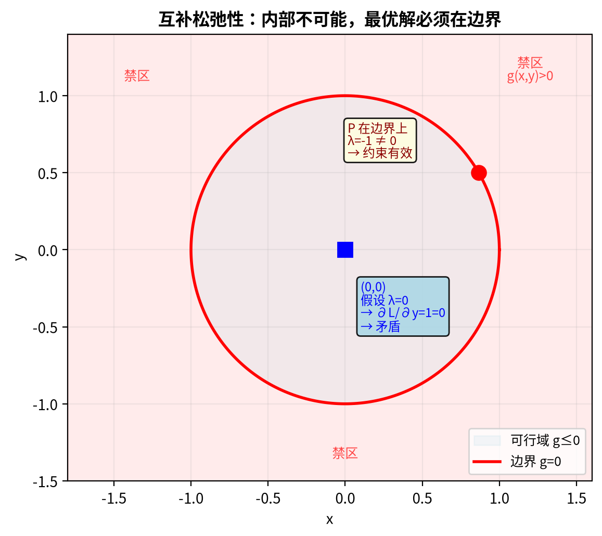
图7：左侧蓝色标注处为圆心 \((0,0)\)，假设 \(\lambda=0\) 导致 \(1=0\) 矛盾，因此圆内不可能有最优解。右侧红色标注处为最优解 P，在边界上 \(\lambda=-1 \neq 0\)，约束”紧”。红色区域为禁区（\(g>0\)）。
用一句话记住互补松弛性：没用的约束（你在它内部，没碰边界）对应的乘子是零；真正卡住你的约束（你在边界上）对应的乘子非零。 这个直觉在支持向量机（Support Vector Machine，SVM）里大放异彩——那些乘子非零的样本点，就是支持向量（support vectors，它们”支撑”起了决策边界），它们就是”绑着你”的约束。（注：不同教材对L的构造符号可能不同，但互补松弛性的直觉不变。）
2.5 拉格朗日对偶：换个角度看问题（进阶选读）
本章的核心是拉格朗日乘子法——直接优化变量 \((x, y)\) 求解带约束的问题，这叫原问题。但数学家发现：有时候把问题重写为关于乘子 \(\lambda\) 的优化（叫对偶问题），会更简单、更有洞察力。
先说为什么要学对偶——最实际的动机来自一个你可能已经见过的写法。训练神经网络时，为了防止过拟合，常在损失函数后加一项”惩罚”：
\[\min_w \text{Loss}(w) + \lambda\|w\|^2\]
这就是 L2 正则化：\(\|w\|^2\) 是所有权重的平方和（衡量模型复杂度），\(\lambda\) 是正则化系数——调大 \(\lambda\)，模型被迫更简单；调小 \(\lambda\)，模型更自由。这个 \(\lambda\) 本质上就是一个拉格朗日乘子，对偶理论揭示了它的几何意义。此外，对偶问题把变量从”原始参数”换成”乘子”，维度可能骤降。先看怎么推导，推导完再回到这些应用。
对偶问题长什么样？用我们手算过的例子（在圆 \(x^2+y^2=1\) 上最大化 \(x^2+y\)），原问题的变量是 \((x, y)\)，对偶问题的变量是 \(\lambda\)。原问题解出 \(x^*=\sqrt{3}/2, y^*=1/2, f^*=5/4\)。对偶问题怎么解？
第一步：构造对偶函数 \(g(\lambda)\)——对每个固定的 \(\lambda\)，在所有 \((x,y)\) 上最大化 \(L\)。
为什么要求最大值？因为对偶函数 \(g(\lambda) = \max_{x,y} L(x,y,\lambda)\) 是原问题最优值 \(f^*\) 的上界。道理很简单：任何满足约束 \(x^2+y^2=1\) 的点都有 \(L = f + \lambda \cdot 0 = f\)，所以”在所有 \((x,y)\) 上取最大的 \(L\)“必然 \(\geq\)”在可行点上取最大的 \(L\)” \(= f^*\)。
把拉格朗日函数 \(L = x^2 + y + \lambda(x^2 + y^2 - 1)\) 整理成关于 \(x, y\) 的函数（把 \(\lambda\) 当常数）：
\[L = \underbrace{x^2(1+\lambda)}_{\text{关于 }x} + \underbrace{\lambda y^2 + y}_{\text{关于 }y} - \underbrace{\lambda}_{\text{常数}}\]
对固定的 \(\lambda\)，\(L\) 关于 \(x\) 和 \(y\) 可以分别求最大值：
- \(x\) 的部分：\(x^2(1+\lambda)\)。若 \(1+\lambda > 0\)，\(x \to \infty\) 时 \(L \to \infty\)——没有有限最大值，\(g(\lambda) = +\infty\)，这种 \(\lambda\) 对找上界没有意义。所以必须有 \(\lambda \leq -1\)，此时系数非正，最大值在 \(x=0\) 处取得，该项贡献 \(0\)。
- \(y\) 的部分：\(\lambda y^2 + y\) 是关于 \(y\) 的开口向下抛物线（\(\lambda < 0\)），最大值在顶点 \(y = -1/(2\lambda)\)，代入得 \(-1/(4\lambda)\)。
合起来：\(g(\lambda) = 0 + (-1/(4\lambda)) + (-\lambda) = -1/(4\lambda) - \lambda\)，定义域 \(\lambda \leq -1\)。
第二步：最小化 \(g(\lambda)\)——在所有上界中找最紧的那个。
每个 \(\lambda\) 都给出一个上界 \(g(\lambda) \geq f^*\)。上界越紧（越小）越好，所以对偶问题是：在 \(\lambda \leq -1\) 上最小化 \(g(\lambda) = -1/(4\lambda) - \lambda\)。
求导：\(g'(\lambda) = 1/(4\lambda^2) - 1\)。令 \(g'(\lambda) = 0 \Rightarrow \lambda^2 = 1/4 \Rightarrow \lambda = -1/2\)。但 \(-1/2 > -1\)，不在定义域内！所以最小值在边界 \(\lambda = -1\) 处取得：
\[g(-1) = -1/(4 \cdot (-1)) - (-1) = 1/4 + 1 = 5/4\]
\(g(-1) = 5/4 = f^*\)——对偶解和原问题解完全一致。 这不是巧合：强对偶性成立。验证：把 \(\lambda = -1\) 代回平稳性条件，\(\partial L/\partial x = 2x(1-1) = 0\)（\(x\) 自由），\(\partial L/\partial y = 1 + 2(-1)y = 0 \Rightarrow y = 1/2\)，再结合约束 \(x^2 + y^2 = 1\) 得 \(x = \pm\sqrt{3}/2\)——正是原问题最优解。
对偶的价值在哪？回到本节开头的 L2 正则化。正则化有两种等价写法：
- 惩罚形式：\(\min_w \text{Loss}(w) + \lambda\|w\|^2\)——你手调 \(\lambda\)
- 约束形式：\(\min_w \text{Loss}(w)\) 约束 \(\|w\|^2 \leq c\)——你手调 \(c\)
对偶理论连接这两种形式。对约束形式构造拉格朗日函数 \(L = \text{Loss}(w) + \lambda(\|w\|^2 - c)\)，走一遍本节刚做过的先最大、再最小化流程：先对 \(w\) 求 \(\max\) 得到对偶函数 \(g(\lambda)\)，再对 \(\lambda\) 求 \(\min\)。关键结果是：最优乘子 \(\lambda^*\) 是从 \(c\) 解出来的，不需要手调。
这意味着什么？实践中你通常知道”我希望模型复杂度不超过 \(c\)“——比如权重范数不超过 5——但不知道 \(\lambda\) 该设多少。直接解约束形式，\(\lambda\) 是隐变量；对偶变换把它变成显变量，\(c\) 和 \(\lambda^*\) 之间有确定的对应关系（凸问题下一一对应）。你指定 \(c\)，\(\lambda^*\) 自动确定；反过来也一样。所以”调 \(\lambda\)“和”调 \(c\)“本质是同一件事的两个视角——这正是对偶理论的实际价值。
一句话：对偶不是数学游戏。它让”惩罚系数 \(\lambda\)“和”复杂度上限 \(c\)“之间有了确定的数学桥梁，你不用盲调，可以换到更直觉的那个变量上做决策。
2.6 AI落地
| 场景 | 一句话解释”没有这个数学工具会怎样” |
|---|---|
| 正则化（L1/L2） | 正则化项可以看作一个约束（“模型的复杂度不能超过某个上限”），\(\lambda\) 控制这个上限的松紧。事实上，带惩罚的正则化和显式约束是对偶关系——\(\min f(w) + \lambda\|w\|^2\) 的解等价于 \(\min f(w)\) 约束 \(\|w\|^2 \leq c\) 的解，\(\lambda\) 与 \(c\) 通过 KKT 互补松弛条件存在对应关系（对凸优化问题为一一对应）：\(\lambda\) 越大，\(c\) 越小（约束越紧）。这就是2.5节拉格朗日对偶的直接应用；没有正则化约束，模型会为了追求训练误差最小而过度拟合噪声，泛化能力崩塌，在新数据上表现糟糕 |
| TRPO（信任区域策略优化） | 强化学习中，策略更新不能一次跨太大步（否则可能崩溃），TRPO用约束优化把更新幅度锁死在KL散度（衡量两个概率分布之间差异的量）的”信任区域”内；没有约束优化，策略梯度方法像蒙眼狂奔，训练过程频繁发散，智能体行为剧烈震荡 |
这张表格里的两个场景看似风马牛不相及，但它们共享同一个底层结构：先承认资源有限（约束），再求最优解。 上一章（Ch1）的梯度下降处理自由优化；这一章处理约束优化——在资源有限的前提下做最聪明的选择。
防过拟合的三件工具。数据量固定时，防过拟合靠三类手段：
Weight Decay（权重衰减）。在损失函数里加惩罚项 \(\lambda\|w\|^2\)（L2 正则化）。直觉：权重越大，模型对训练样本的细节越敏感；限制权重幅度，逼模型用平滑的函数拟合数据，而非用尖锐的函数记住每个样本。这正是本节对偶理论的直接应用：惩罚形式等价于约束 \(\|w\|^2 \leq c\)，\(\lambda\) 越大约束越紧。AdamW 是 Adam + Weight Decay 的标准组合——Adam 调步长，Weight Decay 防过拟合，各管各的。
Dropout。训练时随机把一部分神经元的输出置零（典型比例 10%-50%）。每次前向传播看到的网络结构都不同，模型不能依赖任何单个神经元，必须把信息分散到多个路径上；推理时关闭 dropout，用完整网络输出。效果类似于训练了一个指数级大的集成模型——所有子网络的平均。Dropout 的”置零”发生在神经元层面，与权重范数约束没有直接关系，但和 Weight Decay 的目标一致：限制模型对训练样本细节的依赖。
早停（Early Stopping）。监控验证集损失，当它开始上升时停止训练。训练损失还在降但验证集损失开始升——模型从”学规律”切换到”背噪声”的转折点就是该停的地方。
2.7 常见误解
误解一：\(\lambda\) 是解出来的还是调出来的？
常见错误想法：“拉格朗日乘子 \(\lambda\) 和神经网络里的学习率 \(\eta\)（eta）一样，都是人为调的参数。我调大调小试试看，哪个效果好用哪个。”
真相：这是两个完全不同的 \(\lambda\)，千万别混淆。在经典优化（比如我们上面手算的那个例子）里，\(\lambda\) 是通过KKT条件解出来的——它是方程组的一部分，和 \(x\)、\(y\) 一起从偏导数等于零的方程里解出来。你没有任何自由度去”调”它，它是约束的必然产物。但在机器学习的正则化里，你确实会遇到一个也叫 \(\lambda\) 的东西（比如L2正则化项 \(\lambda \|w\|^2\)），那个 \(\lambda\) 是超参数，是人手调的。正则化 \(\lambda\) 调的是”约束的松紧程度”——调得大，模型更简单的约束就更紧；调得小，模型就更自由。简单区分：优化里的 \(\lambda\) 是方程解出来的，正则化里的 \(\lambda\) 是人手调出来的。
误解二：对偶问题是数学游戏，多此一举
常见错误想法：“原问题能解就行了，干嘛非要费劲转化成对偶问题？对偶不就是换个写法，做数学体操吗？”
真相：对偶不是游戏。最直接的例子就是正则化——你每次写 \(\min \text{Loss}(w) + \lambda\|w\|^2\) 时，那个 \(\lambda\) 就是拉格朗日乘子。对偶理论告诉你：惩罚形式 \(\lambda\|w\|^2\) 和约束形式 \(\|w\|^2 \leq c\) 是等价的两面，\(\lambda\) 越大约束越紧。如果不理解对偶，你就只能把正则化当作”加个惩罚项试试看”的经验技巧，而不是”在权重范数约束下最小化损失”这个有明确几何意义优化问题。
2.8 本章回顾
这一章把”自由优化”升级为”约束优化”：拉格朗日乘子把约束缝进目标，KKT 条件处理不等式约束，对偶理论让惩罚系数和约束上限可以互换。核心收获：约束把无限选择变成有原则的选择。
本章自检：
【知识点】
- 拉格朗日乘子\(\lambda\)的经济学含义是什么？为什么叫”影子价格”？
提示
\(\lambda\) 量化的是”约束松紧”对最优值的什么影响？经济学里叫什么？答案
\(\lambda\)是约束每放松一单位、最优值的变化量（灵敏度）。约定 \(L = f + \lambda g\) 下，灵敏度为 \(-\lambda\)。经济学叫”影子价格”：如果约束是预算，\(-\lambda\)告诉你”再多一块钱预算能多赚多少”。（§2.1） - 互补松弛性说的是什么？用一句话概括。
提示
互补松弛性说的是：\(\lambda\) 和约束 g 不能同时”非零”——哪个组合必须为 0？答案
互补松弛性要求：\(\lambda > 0\) 时约束必绑定（\(g = 0\)）；约束不起作用（\(g < 0\)）时必有 \(\lambda = 0\)。即 \(\lambda \cdot g = 0\)。（§2.4）核对你的答案：至少包含 ①”乘积为零”这一数学形式；②两种状态各对应谁为零。 - KKT条件相比纯等式约束的拉格朗日法，多了什么？
提示
KKT 比纯等式约束多了什么？想想不等式约束的”边界是否活动”。答案
KKT条件相比纯等式约束的拉格朗日法，多了对不等式约束的处理：互补松弛性（\(\lambda \cdot g = 0\)）和对偶可行性。对偶可行性的符号取决于约定：最小化问题（min f s.t. \(g \leq 0\)，约定 \(L=f+\lambda g\)）要求 \(\lambda \geq 0\)；最大化问题（max f s.t. \(g \leq 0\)，同约定）要求 \(\lambda \leq 0\)。正文Ch2是最大化问题，解出 \(\lambda\)=-1<0，符合最大化问题的对偶可行性。 - 生成：用一个你自己的约束例子（不是单位圆）：画出目标函数等高线与约束曲线相切的位置，标出最优点，并验证 \(\nabla f\) 与 \(\nabla g\) 在该点平行。
提示
约束可选直线（如 \(g=x+y-2=0\)），目标选简单的乘积或平方；相切点=两个梯度平行。答案
答案不唯一，示范：最大化 \(f=xy\)，约束 \(g=x+y-2=0\)。\(L=xy+\lambda(x+y-2)\)：\(\partial L/\partial x = y+\lambda=0\)，\(\partial L/\partial y = x+\lambda=0\)，得 \(x=y=1\)（最优点），\(\lambda=-1\)。验证：\(\nabla f=[y,x]=[1,1]\)，\(\nabla g=[1,1]\)——两向量平行 ✓。核对你的答案：至少包含 ①等高线族与约束曲线；②相切点标注；③\(\nabla f \parallel \nabla g\) 的验证（两向量成比例）。 - 迁移：一家公司做推广，预算是约束（§2.1 的例子）。影子价格告诉你”再多一块钱预算能多赚多少”（即灵敏度 \(-\lambda\)）。老板问：预算加 1000 元能多赚多少？什么情况下你的估计会失效？
提示
迁移：影子价格是”约束每放松 1 单位、最优值变化多少”——预算加 1000 元乘谁？什么时候约束不再绑定？答案
迁移：每加 1 元预算，最优利润增加 \(-\lambda\)（§2.1：约束右端项每放松 1 单位，最优值变化 \(-\lambda\)；影子价格就是”再多一块钱能多赚多少”）。加 1000 元预算 → 多赚 \(1000 \times (-\lambda)\)。失效条件（互补松弛性，§2.4）：①影子价格只在约束绑定时非零——预算充足、约束不限制行动时 \(\lambda = 0\)，加预算没有收益；②影子价格是当前松紧度下的边际估计——如果预算以外还有别的瓶颈（人手、渠道同时受限），单约束的影子价格会高估收益；③预算加到约束不再”紧”（如还能继续加车但仓库装不下），估计就失效。核对你的答案：至少包含 ①\(1000 \times (-\lambda)\) 的算法；②约束不绑定→\(\lambda=0\) 的失效条件；③”单约束估计、多瓶颈失效”一句。
【逻辑链】
沿这条链走一遍，理解拉格朗日法的构建逻辑：
自由优化（不管约束）→ 拉格朗日函数（约束缝进目标，\(L = f + \lambda g\)）→ 求导 = 0（解出最优 x,y）→ 乘子 \(\lambda\)（是多少？）→ 互补松弛性（\(\lambda \cdot g = 0\)）
- \(\lambda \neq 0\) → 约束绑定 → \(-\lambda\) = 灵敏度（约束松紧，符号由约定 \(L=f+\lambda g\) 决定）
- 灵敏度 = 影子价格（再给一块钱能多赚多少）
答案
自由优化 → 拉格朗日函数 \(L = f + \lambda g\)：把约束乘以 \(\lambda\) 加进目标函数，变成无约束优化。- 拉格朗日函数 → 求导=0：对 x 求偏导等于零，解出最优 x。
- 求导=0 → \(\lambda\)：\(\lambda\) 的值由互补松弛性决定。
- 互补松弛性（\(\lambda \cdot g = 0\)）：\(\lambda > 0\) 时约束必绑定（\(g = 0\)）；约束不起作用（\(g < 0\)）时必有 \(\lambda = 0\)。
- \(\lambda > 0\) → \(\lambda\) = 灵敏度：约束每放松一单位，最优值的变化量（带符号，正表示放松约束能改善最优值）。
- 灵敏度 = 影子价格：同一个 \(\lambda\)，数学里是方程的解，经济学里是资源的边际价值。
想一想：本章处理的是等式约束（\(g(x) = 0\)，如”路径必须落在圆上”）。现实问题往往不是等式，而是不等式约束——“预算不能超过 100 元”、“速度不能低于 60km/h”、“模型复杂度不能超过某个上限”。猜猜看：等式约束的拉格朗日法，直接套用到不等式约束上还成立吗？……严格说不成立——不等式约束的边界是”活动”的（约束恰好被激活）还是”非活动”的（约束很宽松），解的行为完全不同。这个区分机制，正是本章§2.4 讲过的 KKT 条件：互补松弛性 \(\lambda_i g_i(x^*) = 0\) 正是用来区分”约束在边界上（\(\lambda > 0\)）“和”约束没起作用（\(\lambda = 0\)）“的。先记住这个直觉锚点：不等式约束不是”更一般”的等式约束，它多了一个”约束是否活动”的维度。
未解问题：第2章我们学到的是：在等式约束下怎么优化。如果把这个工具用到概率分布上——在已知约束下，让不确定度最大化——会得到什么？答案就是下一章的 Softmax：一个”诚实的”概率输出。约束优化不只是工具，它还回答了一个更根本的问题：信息不完备时，最诚实的态度是什么。
第3章：最大熵→Softmax→交叉熵——不确定世界的诚实选择
Ch2你学会了带着镣铐跳舞——在约束条件下求最优解。但约束优化有一个更深刻的用法：当你对某事几乎一无所知时，它告诉你”最不做额外假设”的态度是什么。这就是最大熵原理——信息不完备时，均匀分布是最诚实的选择。当你加入已知约束（如”平均分是70”），用Ch2的拉格朗日乘子法推导，结果必然是Softmax形式。那个神经网络里天天见的Softmax公式，不是工程师拍脑袋想出来的——它是不确定世界中”诚实推断”的数学必然。然后你用交叉熵来衡量预测的好坏，梯度会简洁到只剩”预测值减真实值”。
从”一无所知时最诚实的态度是什么”出发，用约束优化推导出Softmax——神经网络输出概率分布的数学根基。交叉熵衡量预测好坏，它的梯度形式简洁到只需”预测值减真实值”。
本章路线：§3.1–§3.3 走完”最大熵→Softmax”的推导链；§3.4–§3.5 看公式速查与前沿延伸；§3.6–§3.8 收束。时间紧可先读 §3.1–§3.4 和 §3.6。
核心概念： 1. 一无所知时，均匀分布是最诚实的选择。 2. 在已知约束下最大化熵，解出来就是 Softmax。 3. 交叉熵衡量预测分布与真实分布的编码代价。 4. Softmax+交叉熵的梯度是 \(p-y\)，简洁来自两者”天生一对”。
动笔前自检：①Softmax 公式写得出来吗？②拉格朗日乘子法解决什么问题？③”熵”这个词你听过吗？带着这三个问题读，答案会在本章逐步出现。
概率论极简速查
Ch2我们学了约束优化求函数极值。现在换一个视角——约束优化还能告诉我们：在信息不完备时，如何诚实地推断概率？在动手推导之前，先确认几个概率论的基本概念你已经掌握。
随机变量：想象掷一颗骰子，落地前你不知道会是几点，但知道一定是1到6中的某个整数。骰子的点数就是一个随机变量——取值不确定，但遵循某种规律。天气预报说明天”30%概率下雨”，这里的”是否下雨”也是随机变量。
期望：你反复掷骰子上千次，把所有结果加起来除以次数，得到的平均值就是期望。正常骰子的期望是3.5（(1+2+3+4+5+6)/6 = 3.5）。期望不是”最可能的结果”，而是长期实验的平均归宿。
概率分布：随机变量的”可能性分配表”。均匀分布就像没做过手脚的骰子——每个面朝上的概率都是1/6。非均匀分布则是作弊骰子——某几个面概率偏高，其他面偏低。分布的数学本质是一组数，每个数对应一个可能结果的概率，全部加起来等于1。
为什么需要两个分布：训练神经网络时，我们始终在和两个分布打交道。真实分布p来自训练数据——它是”理想答案”，描述世界实际的样子；模型分布q来自Softmax的输出——它是”我们的猜测”，描述神经网络认为的样子。训练的目标就是让q不断逼近p，让猜测越来越接近现实。这两个分布越接近，你的AI就越诚实、越可靠。
3.1 生活类比：完全不会的选择题该怎么猜？
你拿到一道完全不会的选择题，四个选项A/B/C/D一无所知。此时你只能均匀猜测——每个选项1/4。这就是熵最大的状态：你在完全无知时，均匀分布是最诚实、最不做额外假设的选择。
但题目给了一些线索：统计规律告诉你”这类题A正确的概率平均有60%“。这个直觉很好，但严格的数学约束不是直接固定某个选项的概率，而是固定一个期望值（比如”平均得分”或”某个特征的期望”）。§3.3 的骰子推导会展示完整数学：约束的形式是 \(E[f(X)] = c\)，最大熵在满足这个期望约束的前提下，找到最不做额外假设的概率分布——结果天然是Softmax的指数形式。这里先用考试直觉理解”约束塑造分布”的方向，细节留给骰子。
Softmax里的指数函数就是在”放大线索的差异”——有线索的选项概率显著高于其他。最终每个选项的概率加起来恰好等于1，形成一个诚实的概率分配。
考完对答案时，你”自信地猜错”的懊悔感特别强烈——这就是交叉熵：猜得越离谱，惩罚越重。
3.2 几何可视化
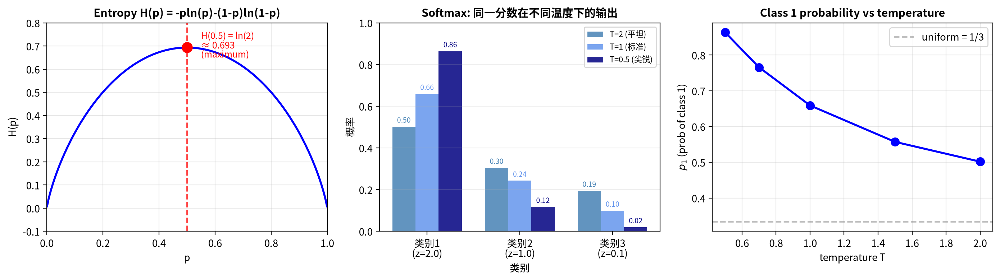
图8：左图展示了熵函数 \(H(p) = -p\ln(p)-(1-p)\ln(1-p)\) 的曲线——在 p=0.5（均匀分布）处达到最大值 \(\ln 2 \approx 0.693\)，表示”完全无知时最诚实”；两端熵为0，表示”全知时没有不确定度”。中图展示了同一组分数z=[2.0, 1.0, 0.1]在不同温度T下的Softmax输出：T=2时概率为[0.50, 0.30, 0.19]，三个类别差距不大（分布”平坦”）；T=0.5时概率为[0.86, 0.12, 0.02]，最高分的类别几乎垄断了概率（分布”尖锐”，即概率集中在少数类别上）。右图展示了类别1的概率 \(p_1\) 随温度T的变化曲线：T越大 \(p_1\) 越接近1/3（均匀分布），T越小 \(p_1\) 越接近1（赢者通吃）。
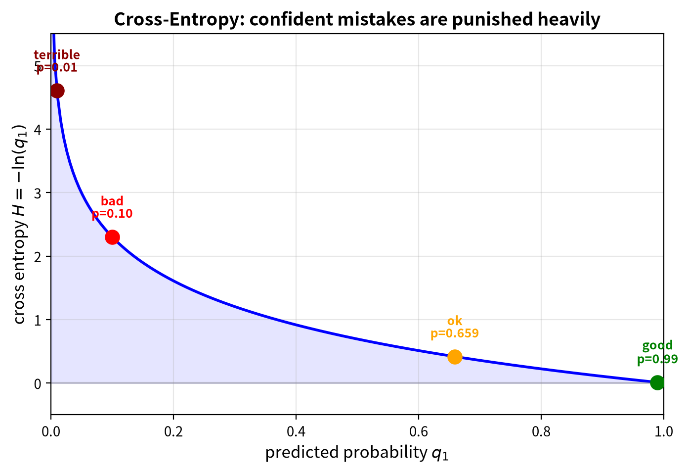
图9：交叉熵损失 \(H = -\ln(q_1)\) 随预测概率 \(q_1\) 的变化曲线。当 \(q_1\) 接近1（预测很准）时损失趋近于0；当 \(q_1\) 很小时损失急剧增大——交叉熵对”自信地犯错”惩罚极重。
3.3 推导链：从”一无所知”到Softmax的四步之旅
第一步：约束——已知某些统计期望
假设你有一个六面骰子，朋友告诉你一个奇怪的事实：这颗骰子被做过手脚，长期投掷的平均点数是4.5（正常骰子的平均是3.5）。这就是一个约束条件——你知道了关于这个随机变量的某个统计期望。
把这个约束写成数学语言。设\(p_i\)表示骰子投出i点的概率（i = 1, 2, 3, 4, 5, 6，每个\(p_i\)都是非负实数）。那么：
\[ \sum_{i=1}^{6} i \cdot p_i = 4.5 \]
这个式子的左边是”点数乘以对应概率的总和”，也就是数学期望E[X]。右边4.5就是朋友告诉你的那个偏高的平均值。
别忘了概率的基本规矩——所有概率加起来必须等于1：
\[ \sum_{i=1}^{6} p_i = 1 \]
而且每个 \(p_i \geq 0\)（概率不能为负数）。
到这一步，你只是把”我知道的信息”翻译成了数学方程。还没有开始求解，但你已经明确了约束条件。
第二步：目标——让分布的熵最大
现在问一个关键问题：在满足上面那些约束的前提下，什么样的概率分布\(p_1, p_2, \ldots, p_6\)是最”诚实”的？
克劳德·香农在1948年给出了熵（entropy）的定义——度量一个分布的不确定度：
\[ H(p) = -\sum_{i=1}^{6} p_i \ln(p_i) \]
这里H(p)就是分布p的熵。以下推导统一使用自然对数 \(\ln\)（底为e），单位为纳特。用其他底（如 \(\log_2\)）只会引入一个常数因子，不影响推导结构。这个公式的直觉非常清晰：每个 \(-p_i \ln(p_i)\) 项衡量的是第i种结果对平均惊讶度的贡献，把它们全部加起来，就是整个分布的平均惊讶度（即熵 H(p)）。 你越不确定，惊讶度越高，熵就越大。
举个例子：如果一个骰子永远只出6点（\(p_6 = 1\)，其他都是0），那熵是0——你完全不惊讶，没有任何不确定度。如果六个面均匀分布（每个 \(p_i = 1/6\)），那熵达到最大值——你对每次投掷的结果最没把握，每次揭晓答案时惊讶度最大。（注意：这是在没有任何额外约束时的结论。一旦加上”期望=4.5”这样的约束，均匀分布（期望3.5）不再满足约束，熵最大的分布会变成下一节推导的指数形式。这也是Softmax所对应的场景。）
我们的目标是：在满足约束的前提下，让H(p)最大化。用大白话说就是：我知道骰子平均是4.5，但除此之外我一无所知，所以我要保持最大的开放心态，不瞎猜、不偏不倚。
第三步：工具——拉格朗日乘子处理约束
现在我们要解决一个带约束的优化问题：最大化H(p)，同时要满足两个约束条件（期望等于4.5，概率和等于1）。
这正是上一章拉格朗日乘子法的舞台。我们构造拉格朗日函数：
\[ \mathcal{L} = -\sum_{i=1}^{6} p_i \ln(p_i) + \lambda_0\left(1 - \sum_{i=1}^{6} p_i\right) + \lambda_1\left(4.5 - \sum_{i=1}^{6} i \cdot p_i\right) \]
（\(\mathcal{L}\) 是花体L，和Ch2的 \(L\) 是同一个东西——拉格朗日函数。不同字体而已。）
符号约定提示：Ch2 约定 \(L = f + \lambda(g - c)\)，约束写成”表达式减常数”（如 \(x^2+y^2-1\)）。这里约束写成”常数减表达式”（如 \(1-\sum p_i\)、\(4.5-\sum i\cdot p_i\)），方向相反。两种写法完全等价，只是对应的 \(\lambda\) 差一个负号。这里选择”常数减表达式”只是写法选择，不影响推导的一般性。
这里\(\lambda_0\)（读作”lambda零”）和\(\lambda_1\)是两个拉格朗日乘子，分别对应两个约束。第一项 \(-\sum p_i \ln(p_i)\) 就是熵 \(H(p)\) 的定义——负号是熵公式自带的，不是额外加的。我们直接对 \(\mathcal{L}\) 求偏导并令其为零——无论你把它理解为”最大化 \(H\)“还是”最小化 \(-H\)“，驻点条件都是 \(\partial\mathcal{L}/\partial p_i = 0\)，结果完全一样。
对每一个\(p_i\)求偏导数并令其为零：
\[ \frac{\partial \mathcal{L}}{\partial p_i} = -\ln(p_i) - 1 - \lambda_0 - \lambda_1 \cdot i = 0 \]
这个偏导数的推导用到了两个微积分规则：\(\ln x\) 的导数是 \(1/x\)，以及乘积法则。对\(p_i\)逐项求导：
- \(-\sum_j p_j \ln(p_j)\) 对 \(p_i\) 的导数：\(-\ln(p_i) - 1\)
- \(\lambda_0(1 - \sum_j p_j)\) 对 \(p_i\) 的导数：\(-\lambda_0\)
- \(\lambda_1(4.5 - \sum_j j \cdot p_j)\) 对 \(p_i\) 的导数：\(-\lambda_1 \cdot i\)
合起来：\(-\ln(p_i) - 1 - \lambda_0 - \lambda_1 \cdot i = 0\)
从 \(\partial \mathcal{L}/\partial p_i = 0\) 解出 \(p_i\)：
\[ \ln(p_i) = -1 - \lambda_0 - \lambda_1 \cdot i \]
这里 \(-\ln(p_i)\) 来自熵 \(-p_i \ln p_i\) 对 \(p_i\) 求导。解方程得到 \(\ln p_i = -1 - \lambda_0 - \lambda_1 \cdot i\)，两边取指数消掉 \(\ln\)，\(p_i\) 天然是指数形式。指数不是设计选择，是熵定义里的 \(\ln\) 决定的——求导留下 \(-\ln p_i\)，解出来必然带指数。
两边取指数：
\[ p_i = \exp(-1 - \lambda_0 - \lambda_1 \cdot i) = \exp(-\lambda_1 \cdot i) \cdot \exp(-1 - \lambda_0) \]
注意到\(\exp(-1 - \lambda_0)\)对所有i都是一个常数，我们可以把它和归一化约束结合起来。设：
\[ Z = \sum_{j=1}^{6} \exp(-\lambda_1 \cdot j) \]
这里的Z叫做配分函数（partition function，名字有点唬人，其实就是”把所有指数项加起来当分母”的归一化常数）。于是：
\[ p_i = \frac{\exp(-\lambda_1 \cdot i)}{Z} \]
第四步：结果——Softmax（多分类）
看到上面的形式了吗？令 \(z_i = -\lambda_1 \cdot i\)，那么：
\[ p_i = \frac{\exp(z_i)}{\sum_{j=1}^{6} \exp(z_j)} \]
这就是Softmax函数！
关键洞察来了：Softmax不是某个工程师某天喝咖啡时随便拍脑袋想出来的归一化方法。它是”在满足约束的前提下最大化熵”这个问题的数学必然解。指数函数exp(·)出现在这里，不是因为”它好用”，而是因为拉格朗日乘子法求解最大熵问题时，解出来天然就是指数形式。
\(z_i = -\lambda_1 \cdot i\) 中的 \(\lambda_1\) 符号由具体约束决定。骰子例子中期望4.5 > 3.5，大概率集中在大的点数上，这要求 \(\lambda_1 < 0\)（使 \(z_i = -\lambda_1 \cdot i > 0\)，大点数对应大分数）。但如果换成期望2.5（偏低），\(\lambda_1\) 就变正，小点数反而对应大分数。无论哪种情况，Softmax 的形式不变——指数里放的是”分数”，分数越高概率越大，这是 Softmax 的核心性质，跟骰子无关。
在实际应用中，我们不把 \(i\) 限定为整数索引，而是使用神经网络输出的任意分数 \(z_i\)。在骰子问题中，“分数”就是点数本身（1, 2, …, 6）；在神经网络中，“分数”变成了网络输出的任意实数 \(z_i\)——但数学结构完全一样：都是 \(\exp(\text{分数}) / \sum \exp(\text{分数})\)。骰子只是一个让推导具体的载体，Softmax 的推导不依赖于它。
温度T从哪里来？
推导到这里， Softmax的公式里还没有出现温度T。T是在应用层面自然出现的。看仔细了：
我们的推导结果是 \(p_i = \exp(-\lambda_1 \cdot i) / Z\)，其中 \(\lambda_1\) 是拉格朗日乘子——\(\lambda_1\) 的值由约束条件决定，约束越紧，\(|\lambda_1|\) 越大。
如果我们定义 \(T = 1 / |\lambda_1|\)（这是一个类比映射：它正确捕捉了”\(|\lambda_1|\) 越大、分布越尖锐”的直觉，但 \(|\lambda_1|\) 的具体数值取决于约束的尺度，与物理温度无直接对应），那么Softmax变成：
\[ p_i = \frac{\exp(i / T)}{\sum_j \exp(j / T)} \]
这里需要说明一个符号细节：\(\lambda_1\) 的符号由约束决定。骰子期望4.5 > 3.5（偏高）时 \(\lambda_1 < 0\)，\(-\lambda_1 \cdot i = |\lambda_1| \cdot i = i / T\)，指数中自然得到正号。如果期望偏低（如2.5），\(\lambda_1 > 0\)，指数符号翻转。无论哪种情况，数学结构相同。（物理上 Boltzmann 分布写作 \(p \propto \exp(-E/kT)\)——“能量越低概率越高”；这里的”分数越高概率越高”相当于把能量取负值，数学结构同形，但这里的 \(T\) 是可调参数，与物理温度无直接对应。）
这就是带温度的Softmax。T的大小直接反映了约束的”松紧程度”： - T 小 → \(|\lambda_1|\) 大 → 约束很紧 → 分布尖锐（接近”赢者通吃”） - T 大 → \(|\lambda_1|\) 小 → 约束很松 → 分布平坦（接近均匀分布）
两个T，不要混淆：推导中的 \(T = 1/|\lambda_1|\) 是由约束条件决定的——骰子期望=4.5这个约束给出了 \(T \approx 2.7\)（数值求解方程 \(\sum i \cdot \exp(-\lambda_1 \cdot i) / \sum \exp(-\lambda_1 \cdot j) = 4.5\) 得 \(\lambda_1 \approx -0.37\)，从而 \(T = 1/0.37 \approx 2.7\)）。但在实际代码中，T是一个可调超参数，常见值0.7-1.0。为什么数值差了5倍？因为推导T和工程T的”参考系”不同：推导T的”尺度”由约束条件（骰子点数1~6）决定，工程T的”尺度”由神经网络输出的标准差决定（经LayerNorm后\(z_i\)的标准差\(\approx 1\)，T=1时Softmax输出最自然）。
工程T的典型取值： - T = 0.7（常用值）：比标准稍”冷”，模型更自信，输出更确定 - T = 1.0（标准温度）：最中性的设置，概率分布忠实反映分数差异 - T = 1.5~2.0（创意模式）：更”热”，分布更均匀，输出更多样、更有惊喜 - T → 0（贪婪模式）：只选概率最高的词，输出最确定但最死板
推导得到的 \(T \approx 2.7\) 与工程常用值 T=1.0 没有直接数值对应——它们只是同一个数学结构在不同”尺度”下的表现。推导告诉我们”Softmax+温度是最大熵的必然解”，工程经验表明 T=0.7~1.0 在多数LLM任务中是较好的起点（不同任务的最优值有差异：事实问答偏低，创意写作偏高）。两者不矛盾，而是理论和实践的完美互补。
同样，这个方法用到连续分布上，得到的是高斯分布（正态分布）——这也是为什么高斯分布在自然界如此普遍：给定均值和方差的约束，最大熵的解就是高斯。直觉上为什么呢？离散情形下约束是期望值（如E[X]=4.5），解出来是Softmax；连续情形下如果约束是”均值”和”方差”，最大化熵的解恰好就是高斯分布——这意味着，当你只知道一个随机变量的平均值和波动范围时，假设它服从高斯分布是”最不做额外假设”的选择。Softmax和高斯分布虽然形式不同，但它们都是最大熵原理在不同设定下的产物。
这里还能看到 Ch2 的一个结论在起作用——互补松弛性。骰子最大熵问题的两个约束都是等式约束，等式约束在最优解处天然满足（\(\lambda \cdot g = 0\) 自动成立）。互补松弛性真正的力量要等到不等式约束才显现（KKT 条件），本文不展开。但在骰子问题里，我们能确认的是：“期望=4.5”这个约束确实绑定了——对应的乘子 \(\lambda_1 \neq 0\)，这就是为什么 Softmax 公式里会出现拉格朗日乘子。约束越紧（\(|\lambda|\) 越大），温度 \(T\) 越小，分布越尖锐。
小胜点：到这里，你已经能从”一无所知”亲手推到 Softmax：约束 → 最大熵 → 拉格朗日乘子 → 指数族。即使不看书，也能说出 Softmax 为什么长这样、温度 T 在调节什么。
3.4 公式速查
公式1：Softmax函数
\[ p_i = \frac{\exp(z_i)}{\sum_{j} \exp(z_j)} \]
逐符号注释（回顾推导链3.3节的结果）： - \(z_i\)：第i个类别的原始分数，来自神经网络最后一层 - exp(\(z_i\))：\(e^{z_i}\)，指数放大了分数间的差异 - \(\sum_j \exp(z_j)\)：归一化常数，确保概率之和为1 - \(p_i\)：第i类的最终概率，[0, 1]
数字代入演示：假设一个3分类问题，神经网络的输出是 z = [2.0, 1.0, 0.1]。
第一步，对每个元素取指数： - exp(2.0) \(\approx\) 7.389 - exp(1.0) \(\approx\) 2.718 - exp(0.1) \(\approx\) 1.105
第二步，把它们加起来： - 分母 Z = 7.389 + 2.718 + 1.105 = 11.212
第三步，分别除以分母： - \(p_1\) = 7.389 / 11.212 \(\approx\) 0.659 - \(p_2\) = 2.718 / 11.212 \(\approx\) 0.242 - \(p_3\) = 1.105 / 11.212 \(\approx\) 0.099
直觉总结：分数最高的第一类获得了约66%的概率，但并没有垄断全部。第二类还有24%的可能性，第三类也有近10%。Softmax不像argmax那样”赢者通吃”，而是给每个选项都留了一席之地——这正是”诚实”的体现：你分数高我信你，但我不会因此把其他选项一棍子打死。
公式2：温度参数T
从推导链我们已经知道，温度 \(T = 1/|\lambda_1|\)，来源于拉格朗日乘子的倒数。在实际应用中，我们把T作为一个可调参数，插入Softmax公式：
\[ p_i = \frac{\exp(z_i / T)}{\sum_{j} \exp(z_j / T)} \]
这句话在说什么：温度T是一个调节”自信程度”的旋钮。T大的时候，概率分布变得平坦（更犹豫、更均匀）；T小的时候，概率分布变得尖锐（更自信、更接近”赢者通吃”）。
逐符号注释： - \(T\)：温度参数（temperature），\(T > 0\)。控制概率分布的”尖锐程度”。 - \(z_i / T\)：将原始分数除以温度，\(T\) 越大，分数之间的差距被压缩得越厉害。其余符号（\(z_i\)、指数化、归一化分母）同公式1。
数字代入演示：用同样的 z = [2.0, 1.0, 0.1]。
当T = 2时（“犹豫不决”模式）： - z/T = [1.0, 0.5, 0.05] - exp(1.0) \(\approx\) 2.718, exp(0.5) \(\approx\) 1.649, exp(0.05) \(\approx\) 1.051 - 分母 Z = 5.418 - p = [2.718/5.418, 1.649/5.418, 1.051/5.418] = [0.502, 0.304, 0.194]
对比T=1时的[0.659, 0.242, 0.099]，T=2的分布明显更均匀了。第一类从66%降到了50%，第三类的概率反而翻倍了。
当T = 0.5时（“极度自信”模式），同一套计算得到 p = [0.864, 0.117, 0.019]——第一类几乎垄断了86%的概率，第三类只剩不到2%。
直觉总结：温度T控制分布的尖锐程度。T=2时分布平缓，各选项都有一定概率；T=0.5时分布尖锐，分数最高的那个几乎独揽大权。语言模型里的”temperature参数”就是这个东西——调高温度，AI说话更随机、更有创意；调低温度，AI更保守、更确定。
公式3：交叉熵
\[ H(p, q) = -\sum_{i} p_i \ln(q_i) \]
这句话在说什么：交叉熵衡量的是——当你真实的概率分布是p，但你用分布q去猜测时，你平均需要付出多少”信息代价”。在分类问题里，真实答案通常只有一个（比如”这张图是猫”），所以p是一个one-hot向量：正确类别对应的 \(p_i = 1\)，其他都是0。
逐符号注释： - \(p_i\)：第i个类别的”真实概率”（来自训练数据的标签）。 - \(q_i\)：第i个类别的”预测概率”（来自Softmax的输出）。 - log(\(q_i\))：预测概率的对数。\(q_i\)越接近1，log(\(q_i\))越接近0；\(q_i\)越接近0，log(\(q_i\))趋向负无穷大。
数字代入演示：假设真实标签是第1类，所以 p = [1, 0, 0]。Softmax预测出 q = [0.659, 0.242, 0.099]。
代入交叉熵公式：
\[ H(p, q) = -1 \cdot \ln(0.659) - 0 \cdot \ln(0.242) - 0 \cdot \ln(0.099) = -\ln(0.659) \]
计算得：H(p, q) \(\approx\) 0.417（以下使用自然对数 \(\ln\)，单位为纳特。如果用 \(\log_2\)，数值需乘以 \(1/\ln(2) \approx 1.44\)，但不改变相对大小）
为什么后两项是0？因为真实标签 \(p_2 = 0\)、\(p_3 = 0\)，意味着”这两个类别根本不可能是正确答案”，所以你猜它们猜得多烂都无关紧要——乘以零之后统统作废。交叉熵只关心你在正确类别上的预测有多准。
更多直觉： - 如果预测很准，\(q_1 = 0.99\)：\(H = -\ln(0.99)\) \(\approx\) 0.010（损失很小，接近零） - 如果预测很差，\(q_1 = 0.10\)：\(H = -\ln(0.10)\) \(\approx\) 2.303（损失很大） - 如果完全猜错，\(q_1 = 0.01\)：\(H = -\ln(0.01)\) \(\approx\) 4.605（损失非常大）
看出规律了吗？预测概率每降低一个数量级，惩罚（损失）就增加一个ln(10) \(\approx\) 2.3左右。交叉熵对”自信地犯错”尤其严厉——如果你非常确定地猜了一个错误答案，惩罚会大到离谱。
直觉总结：交叉熵就像考试评分。你答对了，分数低（损失小）；你答错了，分数高（损失大）。但如果你不仅答错，还”非常确定地答错”，那扣分就更狠。这逼着AI学会一件事：不确定的时候就说”我不太确定”（概率分散），千万别不懂装懂（把错误答案的概率推得很高）。
公式4：梯度奇迹 \(\partial L/\partial z = p - y\)
Softmax 和交叉熵的组合，产生了一个结构极简的梯度公式——\(\partial L / \partial \boldsymbol{z} = \boldsymbol{p} - \boldsymbol{y}\)。推导它，是理解分类训练的最小路径。
推导过程：
损失函数是交叉熵，其中预测概率 \(q_i\) 来自Softmax（与公式3一致：\(q\) 是预测分布，\(y\) 是真实标签）：
\[ L = -\sum_{i} y_i \ln(q_i), \quad q_i = \frac{\exp(z_i)}{\sum_{j} \exp(z_j)} \]
这里\(y_i\)是one-hot标签（真实类别处为1，其余为0）。
先化简L。因为只有一个 \(y_i = 1\)（假设是第k类），所以：
\[ L = -\ln(q_k) = -\ln\left(\frac{\exp(z_k)}{\sum_{j} \exp(z_j)}\right) = -z_k + \ln\left(\sum_{j} \exp(z_j)\right) \]
现在对\(z_i\)求导，分两种情况：
情况A：i \(\neq\) k（不是真实类别）
\[ \frac{\partial L}{\partial z_i} = \frac{\partial}{\partial z_i} \ln\left(\sum_{j} \exp(z_j)\right) = \frac{\exp(z_i)}{\sum_{j} \exp(z_j)} = q_i \]
情况B：i = k（是真实类别）
\[ \frac{\partial L}{\partial z_k} = -1 + \frac{\exp(z_k)}{\sum_{j} \exp(z_j)} = q_k - 1 \]
两种情况合并，用\(y_i\)（真实标签）统一表达：
\[ \frac{\partial L}{\partial z_i} = q_i - y_i \]
数字代入演示：真实标签 y = [1, 0, 0]，Softmax预测 q = [0.659, 0.242, 0.099]。
梯度 = q - y = [0.659 - 1, 0.242 - 0, 0.099 - 0] = [-0.341, 0.242, 0.099]
解读这个梯度： - 对于真实类别（第一类），梯度是负数（-0.341）。梯度值为负意味着”你应该增大 \(z_1\)“——因为目前你对第一类的信心还不够高（只有65.9%，目标是100%）。 - 对于第二类，梯度是正数（0.242）。正梯度意味着”你应该减小 \(z_2\)“——你给了第二类太多概率（24.2%），需要压下去。 - 对于第三类，梯度是正数（0.099）。同理，压下去。
直觉总结：这个梯度公式的简洁不是巧合，而是Softmax和交叉熵”天生一对”的结果。Softmax来自最大熵原理，交叉熵是衡量概率预测的天然尺子，两者配对后，梯度变成了”预测与真实之间的差距”——你需要增大正确类别的分数，减小错误类别的分数，力度恰好等于当前的预测误差。这种内在的数学和谐，让神经网络训练变得异常高效。
补充一句深度连接：在分类任务中（标签是one-hot），交叉熵还有一个等价身份——它是负对数似然（negative log-likelihood）。因为 \(H(p,q) = -\sum p_i \ln q_i = -\ln q_{\text{label}} = \text{NLL}\)。最小化交叉熵 = 最大化模型对训练数据的似然。这也是为什么交叉熵是分类任务的”黄金标准”损失函数：它不仅在数学上简洁，在统计学上也对应着”让模型最可能生成观测到的数据”。
3.5 Softmax 与梯度的前沿延伸
前置知识：你需要熟悉 Softmax 的指数归一化结构，以及 Ch1 中梯度 \(\nabla f\) 的直觉（“坡度指向最陡上升方向”）。本节是全书数学的”融会贯通”时刻。
⚠️ 难度提示：本节引入两个前沿方向（对比学习、扩散模型），概念密度较高。如果感到吃力，可以先跳过，读完Ch4-Ch6后再回来看。不影响后续章节的阅读。
前面我们花了很多篇幅讲 Softmax 如何把原始分数变成概率，以及交叉熵损失如何驱动模型学习。但这两个数学工具的故事远未结束——它们在深度学习两个重要方向里，扮演着更深层的角色。
Softmax 的延伸：对比学习
对比学习的任务（以 OpenAI 的 CLIP——Contrastive Language-Image Pre-training，对比语言-图像预训练——为例），是把”一张猫的照片”和”一句”一只猫在睡觉”“的向量表示拉进同一个语义空间，让语义相近的图文配对在空间里彼此靠近。CLIP 使用的 InfoNCE 损失长这样：
\[ \mathcal{L} = -\ln \frac{\exp(\text{sim}(q, p^+))}{\exp(\text{sim}(q, p^+)) + \sum_{i} \exp(\text{sim}(q, p^-_i))} \]
\(q\) 是一个查询（比如某张图片的向量），\(p^+\) 是它的”正样本”（对应的文字描述），\(p^-_i\) 是所有”负样本”（其他不相关的描述）。盯着分母看几秒——这分母不就是我们熟悉的 Softmax 归一化吗？ 分子是那个”正确项”的指数，分母是所有项的指数之和。对比学习和分类交叉熵，骨子里是同一个数学结构：都是在做”推高正确项、压低错误项”的指数归一化。
手算实例：假设查询 \(q\) 是”猫的照片”的向量，正样本 \(p^+\) 是”一只猫在睡觉”的向量，两个负样本 \(p^-_1\) 是”狗在跑”、\(p^-_2\) 是”车在开”。用余弦相似度算出分数（简化为易算的值）：
| 样本 | 相似度 \(\text{sim}(q, \cdot)\) | \(e^{\text{sim}}\) |
|---|---|---|
| \(p^+\)（猫在睡觉） | 0.9 | \(e^{0.9} \approx 2.46\) |
| \(p^-_1\)（狗在跑） | 0.5 | \(e^{0.5} \approx 1.65\) |
| \(p^-_2\)（车在开） | 0.1 | \(e^{0.1} \approx 1.11\) |
归一化（Softmax）：\(Z = 2.46 + 1.65 + 1.11 = 5.22\)，概率 \(p^+ = 2.46 / 5.22 = 0.47\)，\(p^-_1 = 0.32\)，\(p^-_2 = 0.21\)。
InfoNCE 损失 \(= -\ln(0.47) \approx 0.75\)。模型要最小化这个值，等价于推高 \(p^+\) 的概率——与分类交叉熵完全一样。CLIP 不过是把 Softmax 从”1000 个类别”搬到了”千万对图文配对”的尺度上，用同一个数学杠杆撬开了多模态理解的大门。
梯度的延伸：扩散模型
扩散模型（Diffusion Model）的前向过程很直观：从一张真实图片 \(x_0\) 出发，每一步加一点高斯噪声，经过 \(T\) 步后变成纯白噪声 \(x_T\)。这个过程有一个简洁的闭式表达：
\[ x_t = \sqrt{\bar{\alpha}_t} \, x_0 + \sqrt{1 - \bar{\alpha}_t} \, \varepsilon \]
其中 \(\varepsilon \sim \mathcal{N}(0, 1)\) 是标准高斯噪声（均值0、方差1），\(\bar{\alpha}_t\) 是每步保留信号比例的累积乘积（\(\bar{\alpha}_t = \alpha_1 \times \alpha_2 \times \cdots \times \alpha_t\)，其中每步 \(\alpha_s = 1 - \beta_s\)，\(\beta_s\) 是第 \(s\) 步添加的噪声比例），随时间衰减。
关键在于反向过程：模型要从纯噪声 \(x_T\) 一步步去噪，倒推回真实图片。去噪的本质是什么？把 \(x\) 从低概率区域（纯噪声）推向高概率区域（真实数据）。什么方向能推高概率？回忆 Ch1：梯度指向函数增长最快的方向。这里”函数”换成数据分布的对数概率 \(\ln p(x)\)，梯度 \(\nabla_x \ln p(x)\) 就指向概率增长最快的方向——也就是从噪声走向数据的方向。
这个梯度有个专门的名字：分数函数（Score Function）\(\nabla_x \ln p(x)\)。所以”学去噪”等价于”学分数函数”——模型不需要知道 \(p(x)\) 本身，只需要知道它的梯度方向就够了。注意与 Ch1 的区别：Ch1 的梯度 \(\nabla_\theta L\) 是对参数 \(\theta\) 求导，用于优化模型；此处的 \(\nabla_x \ln p(x)\) 是对数据 \(x\) 求导，用于采样生成。
有了分数函数，反向去噪通过 Langevin 动力学实现——从纯噪声出发，每步沿分数函数方向走一小步并加噪：
\[x_{t+1} = x_t + \frac{\eta}{2} \nabla_x \ln p(x_t) + \sqrt{\eta} \, z, \quad z \sim \mathcal{N}(0, 1)\]
其中 \(\eta\) 是步长（注意：这里的 \(\eta\) 是 Langevin 步长，与前向公式中的噪声 \(\varepsilon\) 不同），\(z\) 是新的标准高斯噪声。这就是对 \(-\ln p(x)\) 做带噪梯度下降。Ch1 的梯度下降沿损失函数的坡度走向最小值，Langevin 采样沿数据分布的坡度走向高概率区域——数学形式相同，优化对象不同。
前向过程手算：假设真实数据是一个标量 \(x_0 = 2.0\)（想象一张只有一个像素的图片，灰度值为2.0）。取两步演示，设 \(\bar{\alpha}_1 = 0.9\)（第1步保留90%信号），\(\bar{\alpha}_2 = 0.8\)（第2步保留80%信号）：
- 第0步（原始信号）：\(x_0 = 2.0\)
- 第1步：\(x_1 = \sqrt{0.9} \times 2.0 + \sqrt{0.1} \times \varepsilon_1\)。假设 \(\varepsilon_1 = 0.5\)，则 \(x_1 \approx 0.949 \times 2.0 + 0.316 \times 0.5 = 1.898 + 0.158 = 2.056\)。信号几乎没变，噪声只是微扰
- 第2步：\(x_2 = \sqrt{0.8} \times 2.0 + \sqrt{0.2} \times \varepsilon_2\)。假设 \(\varepsilon_2 = 1.5\)，则 \(x_2 \approx 0.894 \times 2.0 + 0.447 \times 1.5 = 1.789 + 0.671 = 2.460\)。噪声开始有了存在感
继续加噪到第100步（\(\bar{\alpha}_{100} = 0.01\)），\(x_{100} = 0.1 \times 2.0 + 0.995 \times \varepsilon \approx 0.2 + \varepsilon\)，信号幅度只剩原来的10%，\(x_{100}\) 本质上就是纯噪声。
反向过程手算：反向从 \(x_{100}\) 出发，逐步去噪。Langevin 公式的每一步做两件事——去噪（沿分数函数走，拉向数据分布）和加噪（随机扰动，保持采样多样性）：
\[\underbrace{x_{t+1} = x_t + \frac{\eta}{2} \nabla_x \ln p(x_t)}_{\text{去噪：拉向数据}} + \underbrace{\sqrt{\eta} \, z}_{\text{加噪：保持多样性}}\]
假设数据服从高斯分布 \(p(x) = \mathcal{N}(2, 1)\)（峰值在 \(x = 2\)，方差为1）。对 \(\ln p(x)\) 求导：\(\ln p(x) = -\frac{1}{2}(x-2)^2 + \text{const}\)，所以分数函数 \(\nabla_x \ln p(x) = -(x-2) = 2 - x\)。Langevin 步长 \(\eta = 0.5\)：
为什么去噪之后还要加噪？ 如果只去噪不加噪，就像 Ch1 的梯度下降——球滚到谷底就停了，每次都收敛到同一个点，生成出来的图永远一样。加噪让球在谷底附近弹跳，才能从分布中采样出不同的样本。注意：Langevin 公式中 \(\sqrt{\eta}\) 不随步数变化，噪声幅度是恒定的。随着 \(x\) 趋近数据分布的峰值，分数函数的拉力趋近零（\(2 - x \to 0\)），噪声不再被强力拉回，\(x\) 在峰值附近做小幅随机游走——这就是从 \(p(x)\) 中采样。实际工程中会进一步在后期减小 \(\eta\)（称为退火采样），让采样更精确。
- 起点：\(x_{100} \approx 0.2 + \varepsilon\)，假设前向最终步采样的噪声 \(\varepsilon = 0\)（标准高斯的期望值），则 \(x_{100} \approx 0.2\)
- 第1步反向：
- 去噪：分数函数 \(= 2 - 0.2 = 1.8\)，走半步 \(\frac{0.5}{2} \times 1.8 = 0.45\)（拉向 \(x = 2\)）
- 加噪：\(z = 0.3\)，扰动 \(= \sqrt{0.5} \times 0.3 \approx 0.21\)
- 合并：\(x_{99} \approx 0.2 + 0.45 + 0.21 = 0.86\)
- 第2步反向：
- 去噪：分数函数 \(= 2 - 0.86 = 1.14\)，走半步 \(0.25 \times 1.14 \approx 0.29\)（拉力减弱，因为离目标更近了）
- 加噪：\(z = -0.1\)，扰动 \(\approx -0.07\)（噪声幅度与第1步相同，因为 Langevin 公式中 \(\sqrt{\eta}\) 不随步数变化；实际工程中会在后期减小 \(\eta\)）
- 合并：\(x_{98} \approx 0.86 + 0.29 - 0.07 = 1.08\)
- ……多步后：去噪的拉力（\(2 - x\)）随 \(x\) 接近 2.0 而趋近 0，只剩加噪让 \(x\) 在 2.0 附近小幅波动——这就是从数据分布 \(p(x)\) 中采样
关键对比：前向是”信号 + 越来越多噪声”（噪声由 \(\sqrt{1-\bar\alpha_t}\) 控制，随 \(t\) 增大），反向是”噪声 + 沿分数函数走 + 每步对应不同噪声水平”（每步 \(t\) 的噪声由前向过程的 \(\bar\alpha_t\) 决定，不是简单递减，而是遵循预设的噪声调度表）——数学形式相同（都是”当前位置 + 梯度步 + 随机扰动”），但前向的”梯度”是固定加噪方向，反向的”梯度”是模型学出来的分数函数。
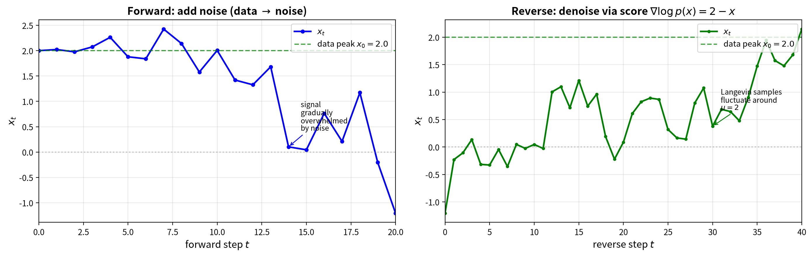
图10：左图展示前向过程——从 \(x_0 = 2.0\) 出发，逐步加噪，信号被噪声逐渐淹没。右图展示反向过程——从纯噪声出发，沿分数函数 \(\nabla_x \ln p(x) \approx 2 - x\) 方向走步并加噪，逐步收敛回 \(x = 2\) 附近。随着 \(x\) 趋近数据峰值，分数函数的拉力减弱，\(x\) 在 2.0 附近波动——这就是从分布 \(p(x)\) 中采样。DALL-E、Stable Diffusion 生成图片的过程，本质上就是这样一场”梯度漫步”——从混乱中沿着坡度找回秩序。
一句话总结：对比学习把 Softmax 的指数归一化从”分类”扩展到”配对匹配”，扩散模型把梯度下降从”优化参数”扩展到”生成数据”——Softmax 与梯度，这两个数学工具在前沿研究中依然是核心。
跨篇引用：本节只展示了扩散模型的最小数学种子——前向加噪 + 反向去噪 + 分数匹配。扩散模型的完整推导（SDE 框架、概率流 ODE、条件控制、世界模型延伸）见《扩散》。
3.6 AI落地
| 场景 | 一句话解释”没有这个数学工具会怎样” |
|---|---|
| 分类器输出 | 没有Softmax，神经网络输出的只是任意实数，无法解释为”这是猫的概率有多大”，决策无从做起 |
| Attention权重归一化 | 没有Softmax，Transformer里的注意力权重可能为负数或加起来不等于1，导致信息聚合时某些位置被”反方向”处理，模型崩溃 |
| RLHF奖励比较 | 没有Softmax，无法把人类对两个回答的偏好（“A比B好”）转化为可学习的概率，大模型也就学不会”对齐”人类的价值观 |
| 语言模型采样温度 | 没有温度参数，采样要么死板（T=0时永远只选概率最高的词，输出像复读机），要么失控（T→∞时变成随机乱码），创造力与稳定性无法调节 |
3.7 常见误解
误解1：“Softmax就是随便归一化一下”
第一次看Softmax的公式，会觉得”哦，不就是把指数值加起来当分母嘛，就是一种归一化技巧”。甚至有人会问：“为什么不能直接用线性归一化？比如 \(p_i = z_i / \sum_j z_j\)？”
这个直觉错得很自然，但错得也很危险。线性归一化至少有两个致命问题：第一，神经网络的输出\(z_i\)可以是负数，如果某个 \(z_i < 0\)，线性归一化后对应的 \(p_i\) 也是负数——负数概率在数学上毫无意义。第二，即使所有\(z_i\)都是正数，线性归一化也不具备Softmax的一系列优良数学性质（比如与交叉熵配对后梯度简洁、对输入平移不变、由最大熵原理导出等）。
最关键的一点是：Softmax的指数形式不是拍脑袋选的，它是最大熵原理的必然结果。 当你用拉格朗日乘子法求解”在约束下最大化熵”这个问题时，解出来天然就是指数族分布。Softmax是离散情形，高斯分布是连续情形——它们都是同一个数学原理的孩子。所以当你写下一行 torch.softmax() 的时候，你实际上是在调用一个有着70多年历史的统计物理学定理。这不是技巧，这是定律。
误解2：“交叉熵和KL散度是一回事”
坊间流传着一个说法：“最小化交叉熵就是在最小化KL散度。”这句话在技术上没错，但概念上偷换了重点，容易让人误解。
严格来说，交叉熵和KL散度的关系是：
\[ \underbrace{H(p, q)}_{\text{交叉熵}} = \underbrace{H(p)}_{\text{熵}} + \underbrace{D_{KL}(p \| q)}_{\text{KL散度}} \]
也就是说，交叉熵 = 熵 + KL散度。当真实分布p固定不变时（比如分类任务里的one-hot标签），H(p)是一个常数。所以最小化交叉熵 H(p,q) 和最小化 KL 散度 \(D_{KL}(p\|q)\) 在数学上等价——对q的优化方向是一样的。
但概念上，它们说的是两件不同的事： - 交叉熵H(p, q)衡量的是”如果你用分布q去编码来自分布p的信息，你平均需要多少比特”。它是一个”编码代价”的概念。 - KL 散度 \(D_{KL}(p\|q)\) 衡量的是”分布 q 与真实分布 p 之间的差距有多大”。它是一个”距离”的概念（虽然严格来说不是真正的距离，因为它不对称）。
混淆这两个概念的后果是：当你想分析”模型预测q和真实p差多远”时，你应该看KL散度；当你想写损失函数训练模型时，交叉熵更方便（因为它不涉及计算H(p)，而one-hot标签的H(p)就是0）。在本章的语境下，由于分类任务的标签是one-hot（只有一个 \(p_i = 1\)，其余为0），此时H(p) = 0，交叉熵就等于KL散度。但一旦你的标签不是one-hot（比如知识蒸馏里的”软标签”），两者的区别就凸显出来了。
至此图景完整：Softmax 来自最大熵原理——教我们诚实地表达”我不确定”；交叉熵来自信息论——衡量我们为这份诚实付出的编码代价。两者殊途同归，核心都是”尊重信息”。
3.8 本章回顾
我们从”一无所知时最诚实”这个生活直觉出发，走过了完整的一条链：用拉格朗日乘子把约束缝进最大熵目标 → 解出来天然是Softmax的指数形式 → 用交叉熵衡量预测好坏 → 梯度简化为 p - y。这条链不是四个孤立的知识点，而是一个有机的整体——Softmax的指数和交叉熵的对数在结构上互为逆运算，是因为它们都来自同一个数学源头：在不确定的世界里，保持最大程度的诚实。
本章自检：
【知识点】
为什么”一无所知时最诚实的预测”是均匀分布？用最大熵原理解释。
提示
一无所知=没有任何约束，什么分布在”不做额外假设”上最诚实？答案
一无所知=没有任何约束→均匀分布是熵最大的分布（最不做额外假设）。（§3.1）
Softmax中的温度T变大时，输出分布会怎样变化？为什么？
提示
温度 T 是”集中度旋钮”——T 变大，分布是变尖还是变平？为什么？答案
Softmax的温度T变大→分布更平坦（更均匀、更不确定）；T变小→分布更尖锐（更自信）。T是独立的超参数，约束越紧等效于T越小、分布越尖。（§3.4）
交叉熵的梯度为什么恰好等于p-y？这个简洁性的数学根源是什么？
提示
交叉熵对 z 求导会经过 Softmax 的雅可比——什么和什么相消了？答案
交叉熵 \(H = -\sum_i y_i \ln p_i\) 对 z 求导，经过Softmax的雅可比，指数项相消，结果恰好是 p-y。根源在于Softmax的指数形式和交叉熵的对数形式互为逆运算。（§3.4）
迁移：把 Softmax 的温度用到”检索重排”。搜索引擎给”量子计算”返回 10 条结果，你希望前几条更集中（高相关性）还是更分散（多样性）？温度 T 应该调大还是调小？提示：温度控制分布尖锐度。
提示
迁移：检索重排想”前几条更集中”——温度该调大还是调小？答案
温度 T 调小（如 T=0.3）：Softmax 分布更尖锐，高分项的概率被放大，搜索结果显示”最有把握”的前几条。想保多样性（用户探索新内容）则 T 调大（如 T=1.5），把概率摊到更多项上。本质：温度是”集中度旋钮”——T 小=赌最有把握，T 大=给低分项机会。检索重排里常用 T 做”相关性 vs 多样性”的折中，和生成时控制创意程度是同一个机制。核对你的答案：至少包含 ①结论（T 调小）；②机制（T 小→分布尖→高分项概率放大）；③代价（低分项机会变小、多样性下降）。
边界：类别极不平衡（长尾分布）时，交叉熵梯度 p-y 会出什么问题？为什么模型会过度自信地预测多数类？
提示
边界：多数类样本多、梯度信号强——p-y 会被反复拉向谁？答案
类别极不平衡时，多数类样本占主导，p-y 梯度被多数类反复拉向自己，少数类样本稀少、梯度信号弱，模型学会”多数类永远对”的捷径——输出分布向多数类倾斜，对少数类过度自信地犯错。缓解：重加权（给少数类更高损失权重）、温度缩放校准置信度、类别平衡采样。
生成：不看正文，自己算一遍 Softmax：取 \(z = [3, 1, -1]\)，分别算 T=1 和 T=0.5 的概率分布，把两个分布画成柱状图对比尖锐度。
提示
exp 值用计算器或心算近似即可；重点是两个分布谁更尖、为什么。答案
T=1：exp(z)=[20.09, 2.72, 0.37]，Z$\(23.18，p\)\([0.87, 0.12, 0.02]。T=0.5：z/T=[6, 2, -2]，exp=[403.4, 7.39, 0.135]，Z\)\(410.9，p\)$[0.98, 0.018, 0.0003]。T 越小分布越尖——分数差被更小的除数放大。核对你的答案：至少包含 ①两组数值；②柱状图或表格对比；③”T 小→尖”的原因一句（除数缩小放大分数差）。
【逻辑链】
沿这条链走一遍，标注每步用了 Ch2 的什么工具：
一无所知 → 均匀分布（最大熵）→ 约束（如期望=4.5）→ 拉格朗日乘子（Ch2工具）→ 指数形式 \(\exp(-\lambda_1 \cdot i)\) → Softmax（归一化）→ 温度 T（约束越紧→分布越尖→等效温度越低）→ 交叉熵 → 梯度 p-y
答案
一无所知 → 均匀分布：没有任何约束时，熵最大的分布是均匀分布（最不做额外假设）。- 均匀分布 → 约束：如果有约束（如期望=4.5），均匀分布不再满足。
- 约束 → 拉格朗日乘子（Ch2工具）：用拉格朗日乘子把约束缝进最大熵目标。
- 拉格朗日乘子 → 指数形式 \(\exp(-\lambda_1 \cdot i)\)：解出来的分布天然是指数形式。
- 指数形式 → Softmax：归一化后就是 Softmax。
- Softmax → 温度 T：T是独立的超参数。约束越紧等效于T越小，分布越尖锐。
- 温度 T → 交叉熵：用交叉熵 \(H = -\sum_i y_i \ln p_i\) 衡量预测好坏。
- 交叉熵 → 梯度 p-y：交叉熵对 z 求导，Softmax 的指数和交叉熵的对数互为逆运算，相消后得 p-y。
未解问题：第2章的约束优化工具、第3章的 Softmax，合起来得到了神经网络输出层的标配。但 Softmax 只给了概率分布，模型训练还需要两样东西：一个衡量”预测有多差”的损失函数（交叉熵），和一个把损失信号传回每个参数的方法（反向传播）。下一章先把这两样东西讲清楚：为什么分类用交叉熵、回归用均方误差——它们背后是同一个 MLE 框架；然后沿着前向传播看输入怎么变成输出，再沿着反向传播看每个权重的”责任”怎么算出来。
第4章：MLP前向与反向传播——犯错的追责链
Ch3推导出交叉熵损失——它告诉你”预测有多差”。但知道”差”只是第一步。一个神经网络可能有百万个参数，你需要知道：每个参数对最终误差负多大责任？反向传播就是这个”追责系统”——从输出层的误差出发，通过链式法则，把责任精确分配到每一个权重头上。配合Ch1的梯度下降，你就有了一整套训练工具。
前向传播是逐层加工：每一层把输入做线性变换，再通过激活函数添加非线性，最后汇总输出结果。反向传播则是从输出端的误差出发，沿链式法则倒着追查每一层的责任，精确到每一个参数。
本章路线：§4.0 先选损失函数；§4.1–§4.4 走通前向与反向；§4.5–§4.6 看激活函数与数值稳定性；§4.9 看自动微分如何工程化；§4.10 收束。
核心概念： 1. 前向传播是数据逐层加工，反向传播是误差逐层追责。 2. 链式法则把总梯度拆成局部梯度乘积。 3. ReLU 的梯度为 1，打破深层梯度消失。 4. 自动微分让深度学习从”手推公式”变成”定义前向即可训练”。
动笔前自检：①Ch1 梯度下降的更新公式写得出来吗？②Ch3 里 Softmax+交叉熵的梯度是 p−y——这里的 p 和 y 分别是什么？③Softmax 的公式写得出来吗？
4.0 损失函数选择指南
第3章我们推导出了 Softmax+交叉熵的组合——梯度简洁到出乎意料。但本章后面的前向传播示例（房价预测）用的不是交叉熵，而是均方误差。为什么？
答案藏在最大似然估计（MLE）这个统一框架里。MLE的直觉很简单：调整模型参数，让它”最可能”生成你观测到的真实数据。数学上，这等价于最小化负对数似然：
\[\mathcal{L} = -\ln p(\text{真实数据} \mid \text{模型})\]
不同任务的区别在于你对”数据怎么来的”做了不同假设。
分类任务：模型输出每个类别的概率 \(p_i\)（Softmax），真实标签是 one-hot 向量（只有正确类别 \(y_k = 1\)，其余 \(y_i = 0\)）。假设真实标签恰好是类别 \(k\)，那么模型说”是类别 \(k\)“的概率就是 \(p_k\)。用 one-hot 向量统一写成：
\[p(y \mid x) = \prod_i p_i^{y_i}\]
因为 \(y_i\) 中只有 \(y_k = 1\)，其余为 \(0\)，所以这个乘积只有 \(p_k^1 = p_k\) 存活，其余 \(p_i^0 = 1\) 被消掉。取负对数：
\[-\ln p(y \mid x) = -\sum_i y_i \ln p_i = -\ln p_k\]
左边的 \(-\sum_i y_i \ln p_i\) 正是 Ch3 定义的交叉熵 \(H(y, p)\)。在 one-hot 标签下它简化为 \(-\ln p_k\)（负对数似然），两者是同一回事。
回归任务：模型输出一个具体数值 \(\hat{y}\)，真实值 \(y\)。假设预测误差服从高斯分布 \(y = \hat{y} + \epsilon\)，\(\epsilon \sim \mathcal{N}(0, \sigma^2)\)：
\[p(y \mid x) = \frac{1}{\sqrt{2\pi}\sigma} \exp\!\left(-\frac{(y - \hat{y})^2}{2\sigma^2}\right)\]
取负对数：
\[-\ln p(y \mid x) = \frac{(y - \hat{y})^2}{2\sigma^2} + \underbrace{\ln(\sqrt{2\pi}\sigma)}_{\text{与参数无关的常数}}\]
丢掉常数项（不影响最小化的位置），剩下的就是均方误差：
\[\mathcal{L}_{\text{MSE}} = \frac{1}{2}(\hat{y} - y)^2\]
所以选损失函数，本质上是选你对数据噪声的假设：分类假设离散选择，回归假设高斯噪声。两种假设殊途同归——都是MLE的不同面孔。
一句话记住：分类问题→交叉熵（预测概率）；回归问题→均方误差（预测数值）。选错损失函数，模型学不到正确的东西。
理解了损失函数的选择逻辑，现在让我们看看：当损失函数发出”差评信号”时，这个信号如何一层一层传回每个参数？
4.1 生活类比：味道不对时，责任怎么追？
你开了一家小餐馆，客人吃了一口就皱眉说”味道不对”。这个”不对”的程度就是损失——偏差越大，损失越大。但光知道”不对”没用，你得倒着查：是最后调味偏了？是酱料放多了？还是食材本身不新鲜？从最终口味往前一道一道追溯，每个环节该负多少责任，就是梯度。反向传播就是这套倒查流程：从客人的一句”味道不对”，把责任精确分到每个环节——“这道工序背3成，那道背7成”。搞清楚了，明天才能针对性改正。改正的力度就是学习率 \(\eta\)——梯度大的地方多改，梯度小的地方少改，\(\eta\) 控制每次整改的步幅。
4.2 几何可视化
先认识一个重要概念——计算图（computational graph）。你可以把它看成一张运算网络：每个节点是一种运算（矩阵乘法、加偏置、激活函数），每条有向边连接两个节点，负责传递数据。前向传播时，输入数据从起点进入，经过一个个节点运算，最终从终点输出预测结果。反向传播时，损失函数的梯度从终点倒着流回去，沿路每个节点都会把自己的局部梯度传给前一个节点——梯度流到的地方，就是责任被追查的地方。
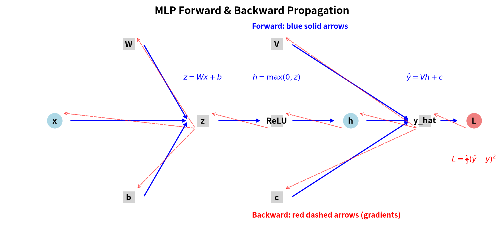
图11：上图展示了一个单隐藏层MLP的完整计算图。蓝色实线箭头表示前向传播（数据流）：输入x → 线性变换z=Wx+b → ReLU激活h=max(0,z) → 输出层ŷ=Vh+c → 损失L。红色虚线箭头表示反向传播（梯度流）：从损失节点出发，梯度通过链式法则逐层回传，最终到达每个权重参数。
4.3 前向传播详解
我们先来看一个完整的单隐藏层MLP的前向传播流程。这个网络有三层结构：输入层（2个神经元）→ 隐藏层（3个神经元，用ReLU激活）→ 输出层（1个神经元，线性输出）。
公式1：前向传播（单隐藏层）
\[z = Wx + b\]
\[h = \sigma(z)\]
\[\hat{y} = Vh + c\]
这三个公式在做一件什么事？逐层变换：第一层做线性变换（拉伸、旋转、平移），第二层做非线性激活（本例用 ReLU，把负数全部抹成零），第三层再把处理过的信号汇总成一个最终预测值。
逐符号注释
- \(\boldsymbol{x}\)（输入向量，\(2 \times 1\)）：这是你的原始数据。在本例中 \(\boldsymbol{x} = [2, 3]^T\)，可以想象成”房屋的两个特征”：面积=200平米（编码为2，即面积除以100）、房龄=3年（编码为3，即取年数）。
- \(W\)（第一层权重矩阵，\(3 \times 2\)）：3个隐藏神经元，每个接收2个输入。\(W_{ij}\) 表示第 \(i\) 个隐藏神经元对第 \(j\) 个输入的重视程度。
- \(\boldsymbol{b}\)（第一层偏置向量，\(3 \times 1\)）：每个隐藏神经元自己的”起跑线”，在加权和之后再叠加。
- \(\boldsymbol{z}\)（线性变换后的预激活值，\(3 \times 1\)）：还没过激活函数的”生猛”信号。
- \(\sigma(\cdot)\)（激活函数）：这里是ReLU（Rectified Linear Unit，修正线性单元），规则简单粗暴：正数保留，负数归零。激活函数是神经网络中的非线性”开关”——它决定了一个神经元是否”被激活”。如果没有激活函数，无论堆叠多少层，整个网络只是一个大型线性函数，无法学习复杂模式。
- \(\boldsymbol{h}\)（隐藏层输出，\(3 \times 1\)）：经过ReLU”筛选”后的信号，也叫”特征表示”。
- \(V\)（第二层权重矩阵，\(1 \times 3\)）：输出层只有1个神经元，接收3个隐藏信号的加权和。
- \(c\)（输出层偏置，\(1 \times 1\)）：最终预测值的”基线调整”。
- \(\hat{y}\)（标量预测值，\(1 \times 1\)）：网络对房价的最终猜测。
具体数字代入演示
现在我们把每一步都算出来。你最好拿张纸跟我一起算。
第一步：线性变换 \(\boldsymbol{z} = W\boldsymbol{x} + \boldsymbol{b}\)
输入 \(\boldsymbol{x} = [2, 3]^T\)（\(2 \times 1\) 向量）
权重矩阵 \(W = \begin{bmatrix} 1 & 2 \\ 3 & 4 \\ 5 & 6 \end{bmatrix}\)（\(3 \times 2\) 矩阵，3行2列）
偏置 \(\boldsymbol{b} = [1, 1, 1]^T\)（\(3 \times 1\) 向量）
矩阵乘法 \(W\boldsymbol{x}\) 怎么算？第 \(i\) 行与 \(\boldsymbol{x}\) 做点积：
\[\boldsymbol{z} = \begin{bmatrix} 1 \times 2 + 2 \times 3 \\ 3 \times 2 + 4 \times 3 \\ 5 \times 2 + 6 \times 3 \end{bmatrix} + \begin{bmatrix} 1 \\ 1 \\ 1 \end{bmatrix} = \begin{bmatrix} 2 + 6 \\ 6 + 12 \\ 10 + 18 \end{bmatrix} + \begin{bmatrix} 1 \\ 1 \\ 1 \end{bmatrix} = \begin{bmatrix} 8 \\ 18 \\ 28 \end{bmatrix} + \begin{bmatrix} 1 \\ 1 \\ 1 \end{bmatrix} = \begin{bmatrix} 9 \\ 19 \\ 29 \end{bmatrix}\]
所以 \(\boldsymbol{z} = [9, 19, 29]^T\)，维度 \(3 \times 1\)。三个隐藏神经元分别收到了信号 9、19、29。
第二步：ReLU激活 \(\boldsymbol{h} = \text{ReLU}(\boldsymbol{z})\)
先猜：\(z = [9, 19, 29]\) 三个值全是正数——过 ReLU 后，它们的梯度各是多少？
ReLU的规矩：正的保留，负的归零。\(z_1 = 9 > 0\) 保留，\(z_2 = 19 > 0\) 保留，\(z_3 = 29 > 0\) 保留。
\[\boldsymbol{h} = [\max(0, 9), \max(0, 19), \max(0, 29)]^T = [9, 19, 29]^T\]
所以 \(\boldsymbol{h} = [9, 19, 29]^T\)，维度 \(3 \times 1\)。在本例中三个值都是正数，所以ReLU没有”杀掉”任何信号。
第三步：输出层 \(\hat{y} = V\boldsymbol{h} + c\)
\(V = \begin{bmatrix} 1 & 2 & 3 \end{bmatrix}\)，\(c = [1]\)
\[\hat{y} = 1 \times 9 + 2 \times 19 + 3 \times 29 + 1 = 135\]
网络预测135，而真实房价是10——预测严重偏高，这就是反向传播要追查的”顾客投诉”。
维度变化总结
| 步骤 | 运算 | 输入维度 | 参数维度 | 输出维度 |
|---|---|---|---|---|
| 1 | \(\boldsymbol{z} = W\boldsymbol{x} + \boldsymbol{b}\) | \(2 \times 1\) | \(W: 3 \times 2\), \(\boldsymbol{b}: 3 \times 1\) | \(3 \times 1\) |
| 2 | \(\boldsymbol{h} = \text{ReLU}(\boldsymbol{z})\) | \(3 \times 1\) | 无 | \(3 \times 1\) |
| 3 | \(\hat{y} = V\boldsymbol{h} + c\) | \(3 \times 1\) | \(V: 1 \times 3\), \(c: 1 \times 1\) | \(1 \times 1\) |
直觉总结
前向传播的本质就是”层层加工”：数据像面团一样，先被权重矩阵 \(W\) 揉捏变形（线性变换），再被ReLU切开去掉一部分（非线性筛选），最后被 \(V\) 压缩成一个数（汇总预测）。每一层都在从原始输入中提取不同层次的特征——第一层可能在识别”基本模式”，第二层在”综合判断”。
4.3.1 矩阵乘法的几何直觉
刚才我们说 \(W\) “揉捏”了数据。现在让我们看清这个”揉捏”的几何本质。
矩阵乘法本质上是一种线性变换——\(Wx\) 对输入向量 \(x\) 做旋转、拉伸和剪切。不过通过SVD分解（Ch6 会系统介绍，这里只需要直觉），任何线性变换都可以拆成”旋转 → 拉伸 → 再旋转”三步，所以”旋转和拉伸”是理解线性变换最直观的切入点。不同的 \(W\) 施加不同的变换：有的把向量压扁，有的把它拉长，有的把它投射到另一个方向。
第6章将用一把”解剖刀”——SVD奇异值分解（\(A = U\Sigma V^T\)）深入这套直觉：\(U\) 和 \(V\) 负责旋转，中间的对角矩阵 \(\Sigma\) 负责在各个方向上拉伸多少倍。先记下这个记号，它是理解低秩的钥匙。
而矩阵 \(W\) 正是定义了一种从输入空间到输出空间的映射规则——它告诉你：在我的这个”变形世界”里，每个方向上的长度和角度是如何被重新定义的。
知道了矩阵乘法在几何上做什么，现在我们来追查：当预测出错了，这个”变形操作”的每个参数该负多大责任？
4.4 反向传播详解
在讲反向传播之前，你需要先了解一个微积分工具——链式法则。假设你有一个”函数套函数”的场景：\(f(u) = u^2\)，而 \(u(x) = 3x\)。你想知道 x 变化时 f 怎么变，但你不能直接量 f 和 x 的关系——你必须通过中间人 u。链式法则告诉你：df/dx = df/du · du/dx = 2u · 3 = 6u = 6(3x) = 18x。换句话说，总效应 = 每段局部效应的乘积。反向传播正是这个思想的矩阵版本。
好了，现在顾客（损失函数）说：“你的预测135跟真实值10差太远了！”我们怎么追责？
公式2：反向传播（链式法则）
\[ \frac{\partial L}{\partial \boldsymbol{z}} = \underbrace{\frac{\partial L}{\partial \hat{y}}}_{\text{step 1}} \cdot \underbrace{\frac{\partial \hat{y}}{\partial \boldsymbol{h}}}_{\text{step 2}} \odot \underbrace{\frac{\partial \boldsymbol{h}}{\partial \boldsymbol{z}}}_{\text{step 3}} \quad \text{（先算到z的梯度）} \]
其中 \(\frac{\partial \boldsymbol{h}}{\partial \boldsymbol{z}}\) 严格来说是 \(3\times3\) 对角矩阵，但等价于逐元素乘以 \(\sigma'(\boldsymbol{z})\)，故用 \(\odot\) 简写。运算顺序为：先标量乘向量，再逐元素相乘。
\[ \frac{\partial L}{\partial W} = \frac{\partial L}{\partial \boldsymbol{z}} \cdot \boldsymbol{x}^T \quad \text{（再由z传播到W）} \]
这个链条在说什么？它把”损失对 \(W\) 的敏感度”拆解成了一系列局部计算的串联：
- 预测偏了多少？（\(\partial L / \partial \hat{y}\)）：损失对预测值的敏感度，一个标量
- 隐藏层对预测有多大影响？（\(\partial \hat{y} / \partial \boldsymbol{h}\)）：预测值对隐藏层的敏感度，即 \(V^T\)
- 激活前到激活后的变化率？（\(\partial \boldsymbol{h} / \partial \boldsymbol{z}\)）：ReLU处的局部梯度，与上游梯度逐元素相乘（\(\odot\)）
- 权重对预激活值有多大影响？（\(\partial \boldsymbol{z} / \partial W\)）：最终通过外积（列向量 \(\times\) 行向量 \(\rightarrow\) 矩阵）得到对 \(W\) 的梯度
外积 vs 点积：点积是行向量 \(\times\) 列向量，结果是一个数（标量）。外积是列向量 \(\times\) 行向量，结果是一个矩阵。Step 4用外积，因为梯度 \(\partial L / \partial \boldsymbol{z}\) 是列向量（\(3 \times 1\)），\(\boldsymbol{x}^T\) 是行向量（\(1 \times 2\)），外积得到 \(3 \times 2\) 的矩阵——恰好匹配 \(W\) 的形状。
注意：上面的公式是一个”概念速记”，实际计算时是分步进行的——先把 step 1-3 组合算出 \(\partial L / \partial \boldsymbol{z}\)，再用外积算出 \(\partial L / \partial W\)。这样的分步形式避免了直接处理高维张量。
这四个答案乘在一起，就是”损失对 \(W\) 中每个元素的总体敏感度”。
具体数字逐步计算
假设真实标签 \(y = 10\)（房价10万元），损失函数用均方误差。注意这里我们换了损失函数。第3章的交叉熵适合分类问题（输出是概率），这里的均方误差适合回归问题（输出是连续数值，如房价）：
\[L = \frac{1}{2}(\hat{y} - y)^2\]
为什么有 \(\frac{1}{2}\)？求导时平方项会冒出系数2（\(\frac{d}{dx}[x^2] = 2x\)），前面放 \(\frac{1}{2}\) 刚好消掉，让梯度公式更简洁。这只是工程上的方便，不影响最优解的位置。
Step 1：损失对预测的梯度
\[\frac{\partial L}{\partial \hat{y}} = \hat{y} - y = 135 - 10 = 125\]
这个125的含义是：预测值每增加1，损失就增加125。因为预测（135）远大于真实值（10），损失函数在说”快把预测往下调！”
Step 2：预测对隐藏层的梯度
由于 \(\hat{y} = V\boldsymbol{h} + c\)，\(\hat{y}\) 对 \(\boldsymbol{h}\) 的偏导就是 \(V\) 的转置：
\[\frac{\partial \hat{y}}{\partial \boldsymbol{h}} = V^T = \begin{bmatrix} 1 \\ 2 \\ 3 \end{bmatrix}\]（\(3 \times 1\) 向量）
三个元素分别是1、2、3，意思是：\(h_1\) 对预测的影响权重是1，\(h_2\) 的影响权重是2，\(h_3\) 的影响权重是3。第三个隐藏神经元”说话最有分量”。
Step 3：隐藏层对预激活值的梯度（ReLU的导数）
ReLU的导数规则：\(z > 0\) 时导数为1，\(z < 0\) 时导数为0。
\[\frac{\partial \boldsymbol{h}}{\partial \boldsymbol{z}} = \text{diag}\big(\sigma'(\boldsymbol{z})\big) = \text{diag}\big([1, 1, 1]\big) = \begin{bmatrix} 1 & 0 & 0 \\ 0 & 1 & 0 \\ 0 & 0 & 1 \end{bmatrix}\]（\(3 \times 3\) 对角矩阵）
关键直觉：对角矩阵乘向量，等价于把对角线元素与向量逐元素相乘。所以上面这个 \(3 \times 3\) 矩阵乘以梯度向量，结果就是把梯度的每个分量分别乘以 \([1, 1, 1]\)——原封不动。这也是下一步用 \(\odot\)（逐元素相乘）的原因：对角矩阵乘法 \(\text{diag}(v) \cdot w\) 和逐元素乘法 \(v \odot w\) 数学上等价，后者写起来更简洁。
因为 \(\boldsymbol{z} = [9, 19, 29]\) 三个值全为正，ReLU正数区梯度直通，原封不动地传递下去。如果某个 \(z_i\) 是负数，对应的梯度就变为零。
把 Step 1、2、3 组合起来——先算损失对 \(\boldsymbol{z}\) 的梯度：
\[\frac{\partial L}{\partial \boldsymbol{z}} = \frac{\partial L}{\partial \hat{y}} \cdot V^T \odot \sigma'(\boldsymbol{z})\]
符号速查：\(\odot\) 是逐元素相乘（Hadamard积），两个同样大小的矩阵/向量对应位置相乘。这里 \(125 \times [1,2,3]^T\) 得到 \([125, 250, 375]\)，再与 ReLU 导数 \([1,1,1]\) 逐元素相乘，结果还是 \([125, 250, 375]\)。代入数字：
\[\frac{\partial L}{\partial \boldsymbol{z}} = 125 \times \begin{bmatrix} 1 \\ 2 \\ 3 \end{bmatrix} \odot \begin{bmatrix} 1 \\ 1 \\ 1 \end{bmatrix} = \begin{bmatrix} 125 \\ 250 \\ 375 \end{bmatrix} \odot \begin{bmatrix} 1 \\ 1 \\ 1 \end{bmatrix} = \begin{bmatrix} 125 \\ 250 \\ 375 \end{bmatrix}\]（\(3 \times 1\) 向量）
第三个隐藏神经元承担了最大的责任（375），因为它既有最大的权重连接（3），又收到了最大的信号（29）。
Step 4：预激活值对权重的梯度（外积）
最后一步是 \(\partial \boldsymbol{z} / \partial W\)。由于 \(\boldsymbol{z} = W\boldsymbol{x} + \boldsymbol{b}\)，\(\boldsymbol{z}\) 的第 \(i\) 个元素 \(z_i = \sum_j W_{ij} x_j + b_i\)。所以 \(z_i\) 对 \(W_{ij}\) 的偏导就是 \(x_j\)。把所有组合放在一起，\(\partial L / \partial W\) 就是一个外积：
\[\frac{\partial L}{\partial W} = \frac{\partial L}{\partial \boldsymbol{z}} \cdot \boldsymbol{x}^T\]
也就是把 \((3 \times 1)\) 的梯度向量和 \((1 \times 2)\) 的输入转置相乘，得到一个 \(3 \times 2\) 的矩阵：
\[\frac{\partial L}{\partial W} = \begin{bmatrix} 125 \\ 250 \\ 375 \end{bmatrix} \cdot \begin{bmatrix} 2 & 3 \end{bmatrix} = \begin{bmatrix} 125 \times 2 & 125 \times 3 \\ 250 \times 2 & 250 \times 3 \\ 375 \times 2 & 375 \times 3 \end{bmatrix} = \begin{bmatrix} 250 & 375 \\ 500 & 750 \\ 750 & 1125 \end{bmatrix}\]（\(3 \times 2\) 矩阵）
完整梯度流的数字总结
| 梯度 | 数值 | 维度 | 含义 |
|---|---|---|---|
| \(\partial L / \partial \hat{y}\) | \(125\) | \(1 \times 1\) | 预测偏高125个单位 |
| \(\partial \hat{y} / \partial \boldsymbol{h}\) | \([1, 2, 3]^T\) | \(3 \times 1\) | \(V\) 的转置 |
| \(\partial L / \partial \boldsymbol{z}\) | \([125, 250, 375]^T\) | \(3 \times 1\) | 经过ReLU后的责任分配 |
| \(\partial L / \partial W\) | \(\begin{bmatrix} 250 & 375 \\ 500 & 750 \\ 750 & 1125 \end{bmatrix}\) | \(3 \times 2\) | 每个权重元素的精确责任 |
其他参数的梯度
别忘了，除了 \(W\)，我们还有其他参数也需要计算梯度：
输出层权重 \(V\) 的梯度：
\[\frac{\partial L}{\partial V} = \frac{\partial L}{\partial \hat{y}} \cdot \boldsymbol{h}^T = 125 \times [9, 19, 29] = [1125, 2375, 3625]\]
输出层偏置 \(c\) 的梯度：
\[\frac{\partial L}{\partial c} = \frac{\partial L}{\partial \hat{y}} = 125\]
隐藏层偏置 \(\boldsymbol{b}\) 的梯度：
\[\frac{\partial L}{\partial \boldsymbol{b}} = \frac{\partial L}{\partial \boldsymbol{z}} = [125, 250, 375]^T\]
注意到 \(\partial L / \partial \boldsymbol{b}\) 恰好等于 \(\partial L / \partial \boldsymbol{z}\)，因为 \(\boldsymbol{z} = W\boldsymbol{x} + \boldsymbol{b}\)，\(\boldsymbol{b}\) 和 \(\boldsymbol{z}\) 是直接的逐元素相加关系。
直觉总结
反向传播的本质就是”用乘法式追责”。链式法则把一个大问题（损失对 \(W\) 的敏感度）拆解成一串小问题，每个小问题只关心”我输出的微小变化，会给下游带来多大的连锁反应”。最妙的是，每一层只需要知道自己这一层的局部运算，不需要关心整个网络的复杂结构——就好像流水线上每个工人只需要告诉前一个人”你的产品质量影响了我这边多少产出”，而不需要知道整个工厂的全貌。这种”局部通信、全局协调”的机制，让深度网络的训练成为可能。
这里还要呼应一下第3章的结论。第3章我们推导出交叉熵+Softmax的梯度有极其简洁的形式：\(\partial L / \partial \boldsymbol{z} = \boldsymbol{p} - \boldsymbol{y}\)——那是分类任务的末端梯度。本章用的是MSE（回归任务），末端梯度是 \(\hat{y} - y = 125\)。虽然形式不同，但链式法则的传播机制完全一样：无论末端梯度长什么样，它都通过 \(V^T\)、ReLU导数、外积逐层向前传递。那个 \([125, 250, 375]^T\) 就是从 \(\hat{y} - y = 125\) 这个末端信号出发，一步一步通过链式法则传递到 \(W\) 的。第3章给了我们”顾客差评”的初始信号，本章展示了这条差评如何被翻译成每一层、每一个参数的”具体整改建议”。
4.5 激活函数梯度
激活函数是神经网络的”非线性开关”，没有它，再多的线性层叠在一起也只是一个大线性函数——那就丧失了”深度学习”的意义。但不同的激活函数在反向传播时的行为差异巨大，选错了可能直接导致训练失败。
公式3：ReLU（Rectified Linear Unit）
\[\text{ReLU}(z) = \max(0, z)\]
\[\text{ReLU}'(z) = \begin{cases} 0 & z < 0 \\ 1 & z > 0 \end{cases}\]
（在 \(z=0\) 处严格来说不可导，左导数为0、右导数为1。实践中框架默认使用次梯度0，对训练无影响。）
ReLU的图像长什么样？你可以想象一条数轴：在0的左边，函数值永远是0（一条水平线贴着地面）；在0的右边，函数值等于输入本身（一条45度斜线往右上走）。在原点处有个”折点”，导数不连续。
ReLU的导数更简单：负数区域导数为0，正数区域导数为1。简单说，它是一个单向阀门：正数放行，负数截止。
“死区”问题（Dead ReLU）：如果一个神经元在某个训练批次里收到了负的输入（\(z < 0\)），它的输出为0，梯度也为0。这意味着这个神经元在这次反向传播中”没有责任”——梯度传到这里就不传播了。如果它永远收不到正信号（比如权重初始化不好，或者学习率太高把它推到了负数区），这个神经元在当前训练阶段”沉默”了——梯度为0意味着它此刻不学习。如果后续训练中输入分布发生变化（比如其他权重的更新让 \(z\) 重新变正），沉默的神经元可以恢复学习。真正永久死亡的条件是：该神经元的输入权重被推到了一个位置，使得对所有训练样本 \(z < 0\)——此时梯度恒为零，权重永远不会更新，形成死锁。好的初始化和适当的学习率正是为了预防这一点。Leaky ReLU（\(z<0\) 时给一个小的非零梯度）是工程上的另一种解法，它从根本上消除了死亡可能。
为什么ReLU缓解梯度消失：在正数区域，ReLU的导数恒等于1。这意味着如果信号是正的，梯度流经ReLU时不会被缩小——1乘以任何数还是那个数。相比之下，Sigmoid的导数最大只有0.25，梯度每经过一层就被乘以一个小于1的数，深层的网络梯度很快就会衰减到接近于零。ReLU用它的”1”保住了深层网络中梯度的”火力”，让误差信号能一路传回输入层。
公式4：Sigmoid
\[\sigma(z) = \frac{1}{1 + e^{-z}}\]
\[\sigma'(z) = \sigma(z) \cdot \big(1 - \sigma(z)\big)\]
Sigmoid的图像像一个拉长的字母”S”：当 \(z\) 是很大的正数时，\(\sigma(z)\) 趋近于1；当 \(z\) 是很大的负数时，\(\sigma(z)\) 趋近于0；在 \(z = 0\) 处，\(\sigma(0) = 0.5\)。这个”S”形曲线的价值在于把任意实数压缩到 \((0, 1)\) 区间，可以解释为”概率”。
但Sigmoid有个致命的毛病——两端饱和。关键数字：Sigmoid的导数 \(\sigma'(z) = \sigma(z)(1-\sigma(z))\) 最大只有 0.25（在 \(z=0\) 处取到），当输入很大或很小时 \(\sigma'(z)\) 迅速趋近于0。
为什么Sigmoid导致梯度消失：想象你在一个10层的深度网络中使用Sigmoid。反向传播时，梯度要经过10次Sigmoid的导数。即使每层梯度都能拿到Sigmoid导数的最大值0.25（这在实际中几乎不可能，因为多数神经元的输入不在0附近），10层之后梯度也要乘以 \(0.25^{10} \approx 10^{-6}\)。实际情况远比这糟糕。也就是说，输出端的误差信号根本传不到网络的前层去。前层的参数永远不知道该怎么更新，整个网络”冻”住了。
这就是为什么 2015-2020 年代的深度网络几乎清一色使用ReLU及其变体（Leaky ReLU、GELU等）——保留正梯度、缓解梯度消失，是训练深层网络的先决条件。
下图左半展示梯度随深度的指数衰减：Sigmoid最大导数仅0.25，10层后梯度只剩约\(10^{-6}\)；Tanh稍好但也快速衰减；ReLU在正数区域导数恒为1，梯度不衰减。右半对比ReLU和Sigmoid的导数函数——视觉上一目了然。
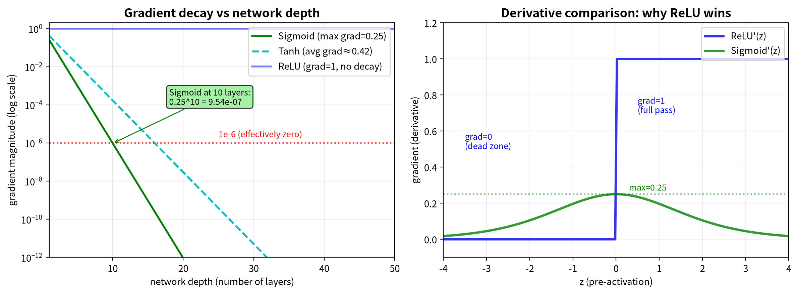
图12：左：Sigmoid（绿）的梯度随深度指数衰减——10层后降至\(10^{-6}\)，20层后接近机器精度极限；Tanh（青虚线）稍好但也衰减；ReLU（蓝）在正数区域梯度恒为1，无衰减。右：ReLU导数（蓝）在\(z>0\)时为1（全通），\(z<0\)时为0（死区）；Sigmoid导数（绿）最大0.25且两端迅速归零。ReLU在正数区域的”1”，是深度学习之所以能”深”的根本原因。
SwiGLU：更聪明的激活门控
ReLU和Sigmoid各有硬伤：ReLU负数区一刀切归零，太粗暴；Sigmoid输入稍大就饱和到1、稍小就压到0，梯度在中间才能流动。有没有一种激活函数，既能平滑过渡，又能让数据自己决定”哪些信息该通过”？
SwiGLU（Swish-Gated Linear Unit，Swish门控线性单元）就是现代大模型给出的答案。它由两个技巧组合而成：
第一步：Swish。 Swish的公式是 \(x \cdot \sigma(x)\)，即输入 \(x\) 乘上Sigmoid门控 \(\sigma(x)\)。直观理解：Sigmoid 本身输出 0 到 1 之间的”软开关”值，Swish 再让 \(x\) 乘上这个值——因此门控信号可以为负（负 \(x\) 乘正 Sigmoid 得负），正值放行、负值压缩但不归零，不像 ReLU 那样硬切。当 \(x\) 很大时，\(\sigma(x) \approx 1\)，Swish近似恒等映射；当 \(x\) 为负时，\(\sigma(x)\) 接近0，输出被温柔地压制。
第二步：GLU（Gated Linear Unit，门控线性单元）。 把输入 \(x\) 分别通过两个不同的线性投影（\(xW_1\) 和 \(xW_2\)），得到两个分支。\(xW_1\) 经过 Swish 变成”门控信号”，\(xW_2\) 是原始变换结果。然后用逐元素乘法 \(\odot\) 让门控信号调节 \(xW_2\) 的每个维度——哪些特征该放大、哪些该压制，由 \(W_1\) 和 \(W_2\) 的学习结果决定，不是人工预设。
SwiGLU = Swish(\(xW_1\)) \(\odot\) (\(xW_2\))。 目前在PaLM、LLaMA、DeepSeek等主流大模型的FFN（Feed-Forward Network，前馈网络）中，SwiGLU是标配——它让模型自己学会哪些特征维度该强化、哪些该抑制。
手算实例：假设输入 \(x = [1, -2, 0.5]\)，两个投影矩阵 \(W_1, W_2\) 已训练好：
| 维度 | \(xW_1\)（门控输入） | Swish(\(xW_1\))（门控值） | \(xW_2\)（信号值） | 输出 = 门控 \(\times\) 信号 |
|---|---|---|---|---|
| 0 | 0.75 | 0.51 | -1.50 | -0.76 |
| 1 | -1.50 | -0.27 | 2.25 | -0.62 |
| 2 | -2.00 | -0.24 | -2.50 | 0.60 |
维度0的门控值0.51（明显放行但仍有衰减），信号-1.5约一半通过（-0.76）；维度1和2的门控值约-0.25（“压制”），信号被大幅缩小。关键在于：哪些维度放行、哪些压制，取决于 \(W_1\) 学到的权重——这就是”数据驱动门控”。
一句话总结：SwiGLU用Swish做平滑门控、用两个可学习投影决定信息通过率，是现代LLM FFN的标配激活函数。
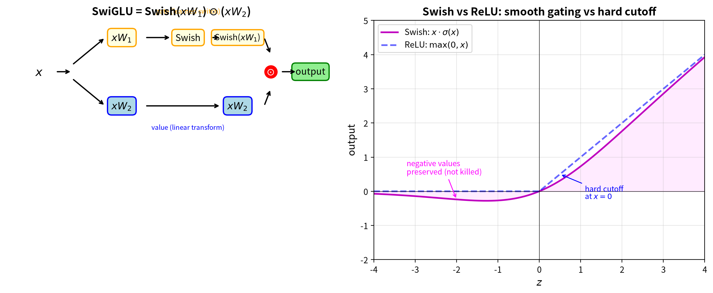
图13：SwiGLU的结构。输入 \(x\) 分成两条路径：上路 \(xW_1\) 经过 Swish 激活变成门控信号（平滑的软开关，可以为负值，决定每个维度该放行还是压制）；下路 \(xW_2\) 是原始线性变换结果（信号本身）。两条路径在 \(\times\) 节点逐元素相乘，门控信号调节信号的每个维度——放行的维度原样通过，压制的维度被缩小。与 ReLU 的硬切（负数直接归零）不同，SwiGLU 的门控值是 Swish 输出的连续值，且 \(W_1, W_2\) 都是可学习参数，模型自己决定门控策略。
下图对比四种激活函数的形状：ReLU的”硬切”死区、Sigmoid的双端饱和、Swish的平滑门控、GELU的非单调”凸起”。激活函数的选择直接影响梯度能否顺利流动——这正是深层网络训练成败的关键。
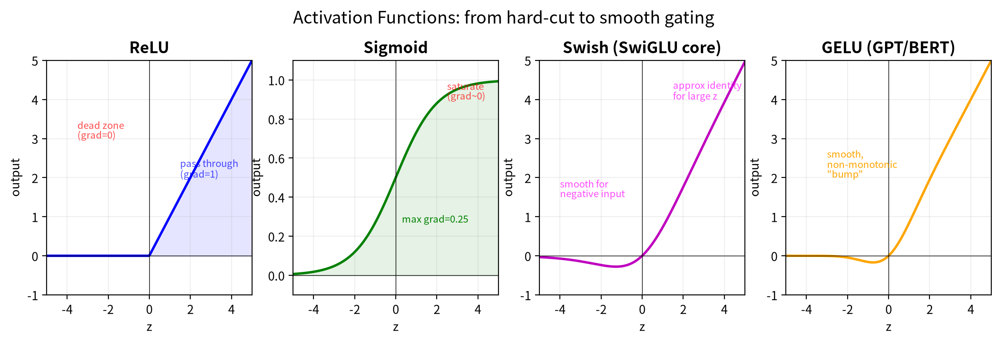
图14：左→右：ReLU（负数归零，正数直通，最简高效但可能死区）、Sigmoid（S型饱和，最大梯度仅0.25，深层易梯度消失）、Swish（SwiGLU核心，平滑门控负值不硬切）、GELU（GPT/BERT用，非单调有”凸起”，理论性质好）。ReLU家族统治了深度学习——因为梯度能顺利流动是训练成功的前提。
归一化层：RMSNorm与LayerNorm
梯度问题不只是激活函数的锅。在深层网络里，数值经过几十层矩阵乘法和累加，会像滚雪球一样越滚越大（爆炸）或越碾越扁（归零）。归一化层（Normalization Layer）就是在每层之间”踩刹车”，把数值拉回一个稳定的尺度。
最常用的归一化方法是 LayerNorm（Layer Normalization，层归一化）。它的公式是：
\[\text{LayerNorm}(x) = \frac{x - \mu}{\sqrt{\sigma^2 + \epsilon}} \cdot \gamma + \beta\]
逐符号拆解：\(\mu\) 是当前层输入的均值（mean），\(\sigma^2\) 是方差（variance），\(\epsilon\) 是一个很小的常数（防止除以零），\(\gamma\) 和 \(\beta\) 是可学习的缩放和偏移参数。操作流程是”先减均值、再除标准差”——相当于把数据重新调整到均值为0、标准差为1的分布，再通过 \(\gamma\) 和 \(\beta\) 微调。
但在Transformer里，实践中观察到：经过Attention和残差连接的叠加后，激活值的均值通常接近零。更深层的原因是 Pre-Norm 架构——归一化只作用在子层内部，残差路径是一条不经任何 Norm 的纯加法通道，不断累加原始输入 \(h\)；而 Attention 输出是 \(V\) 的凸组合（Softmax权重和为1），两者叠加后均值漂移有限。LayerNorm第一步”减均值”，实际上是在减去一个接近0的数——对分布形状的调整作用很小。
于是 RMSNorm（Root Mean Square Normalization，均方根归一化）应运而生：
\[\text{RMSNorm}(x) = \frac{x}{\sqrt{\text{mean}(x^2) + \epsilon}} \cdot \gamma\]
对比一下：RMSNorm直接去掉了减均值 \(\mu\) 的那一步，只做除法归一化。LayerNorm同时控制尺度（方差）和偏移（均值），RMSNorm只控制尺度。因为Transformer中的激活值均值通常已经接近零，减均值这一步对归一化效果的影响很小——既然效果差不多，不如省掉，少一次全向量求均值和减法的计算开销。
RMSNorm比LayerNorm更轻量、更快，且在实际效果上不分伯仲。正因如此，LLaMA、DeepSeek、Mistral等现代大模型纷纷采用RMSNorm替代LayerNorm。选择归一化方法的核心逻辑和选择激活函数一样：在确保数值稳定的前提下，能省则省。
一句话总结：RMSNorm去掉了LayerNorm中冗余的减均值步骤，只做除法归一化，是Transformer时代LayerNorm的轻量替代者。
4.6 数值稳定性
神经网络中的数值计算不是理论数学，而是要在计算机的有限精度下实际跑起来的。有几个关键的数值技巧，差之毫厘就会让你的模型训练从”顺利”变成”灾难”。
Softmax数值技巧：先减最大值再取指数
Softmax函数的定义是：
\[\text{softmax}(z_i) = \frac{e^{z_i}}{\sum_{j=1}^{K} e^{z_j}}\]
这个公式在理论上完美无缺——把任意实数向量转换成一个概率分布（每个元素在0到1之间，且加起来等于1）。但实际计算时有个大坑：指数函数 \(e^x\) 增长得非常快。
具体大数字演示：假设 \(z = [1000, 1001, 1002]\)（三个类别的原始分数）。
如果你直接计算 \(e^{1000}\)、\(e^{1001}\)、\(e^{1002}\)——计算机会直接溢出，返回 inf（无穷大）。因为 \(e^{1000}\) 大约有435位数字（\(1000 / \ln(10) \approx 434.3\)），远远超出了64位浮点数的表示范围（最大约 \(10^{308}\)，相当于 \(e^{709}\)）。
解决方案：在取指数之前，先给整个向量减去它的最大值。
\[\text{softmax}(z_i) = \frac{e^{z_i - \max(z)}}{\sum_{j=1}^{K} e^{z_j - \max(z)}}\]
为什么要减去最大值？因为分子分母同时除以一个常数（\(e^{\max(z)}\)），分数的值不变，但数值范围变得安全了。具体推导：
\[\frac{e^{z_i}}{\sum_j e^{z_j}} = \frac{e^{z_i} / e^{\max(z)}}{\sum_j e^{z_j} / e^{\max(z)}} = \frac{e^{z_i - \max(z)}}{\sum_j e^{z_j - \max(z)}}\]
接上例，\(\max(z) = 1002\)：
\[z' = z - 1002 = [-2, -1, 0]\]
现在计算指数：
\[e^{-2} \approx 0.135, \quad e^{-1} \approx 0.368, \quad e^{0} = 1.000\]
分母 = \(0.135 + 0.368 + 1.000 = 1.503\)
最终概率：
\[p = \left[\frac{0.135}{1.503}, \frac{0.368}{1.503}, \frac{1.000}{1.503}\right] \approx [0.090, 0.245, 0.665]\]
三个概率加起来等于1，最大的 \(z_3\) 得到了最大的概率（0.665），没有任何数值溢出。这个”先减max”的技巧，是每一个深度学习框架（PyTorch、TensorFlow）在实现Softmax时的标配操作。
Xavier / Kaiming 初始化
在训练开始之前，所有权重都要被初始化成一些随机值。但随机值可不是随便选的——如果权重太大，信号会在前向传播中被逐层放大，最终变成天文数字（梯度爆炸）；如果权重太小，信号会逐层衰减，最终消失不见（梯度消失）。
核心思想：保持每一层输出信号的方差大致等于输入信号的方差（\(\approx 1\)）。这样信号从输入层传到输出层，既不会爆炸也不会消失。
Xavier（Glorot）初始化：适用于Sigmoid或Tanh激活函数的网络。
\[W \sim \text{Uniform}\left(-\sqrt{\frac{6}{n_{\text{in}} + n_{\text{out}}}}, \; +\sqrt{\frac{6}{n_{\text{in}} + n_{\text{out}}}}\right)\]
其中 \(n_{\text{in}}\) 是输入维度，\(n_{\text{out}}\) 是输出维度。直观理解：连接的神经元越多（\(n_{\text{in}}\) 越大），每个权重的幅度就要越小，因为多个输入的加权和的方差会随输入数量线性增长。
Kaiming（He）初始化：专门为ReLU激活函数设计。ReLU 把负数置零后，激活值的二阶矩 \(E[\text{ReLU}(z)^2]\) 只有 \(\text{Var}(z)\) 的一半——一半信号被砍掉了。要让输出方差恢复到和输入一样，权重方差需要乘以 2 补偿：
\[W \sim \mathcal{N}\left(0, \; \frac{2}{n_{\text{in}}}\right)\]
直观理解：Xavier/Kaiming初始化在校准每层的信号”放大倍数”——放大太多，信号传到顶层就变成噪音；放得太少，信号在中途就消失了。好的初始化让信号刚好”平稳流动”，这是训练深度网络的第一步，也是最容易被忽视的一步。
4.7 AI落地
| 应用场景 | 一句话解释”没有这个数学工具会怎样” |
|---|---|
| PyTorch autograd原理 | autograd（自动微分）的本质就是反向传播——你定义前向计算图，系统自动帮你算梯度。没有它，你得手写每一层的梯度公式，深度学习根本不可能普及 |
| 微调时冻结层 | 预训练模型（如BERT）微调时经常冻结底层参数。原理是阻止梯度反向流到这些层——如果不冻结，底层学到的通用语言知识会被任务特定的数据”冲走”，模型反而表现更差 |
| 梯度检查（finite difference） | 用数值方法验证反向传播的实现是否正确。如果不做梯度检查，你的代码可能有隐蔽的梯度bug——比如链式法则某一步漏了一个转置——模型还能跑但永远训不好，而且这种bug极难肉眼发现 |
| RMSNorm稳定深层Transformer | 没有归一化层，深层网络数值会像滚雪球一样爆炸或归零。RMSNorm比LayerNorm更轻量，是LLaMA/DeepSeek的标准配置 |
| SwiGLU作为现代FFN激活 | SwiGLU用数据驱动的门控替代ReLU的硬切，让模型自己学会哪些特征维度该强化、哪些该抑制。PaLM/LLaMA/DeepSeek都用它 |
| 混合精度训练（bf16/FP16） | 用低精度浮点加速训练时数值稳定性问题被放大——LLM 预训练已从 FP16 转向指数范围更宽的 bf16。不理解 Softmax 减 max、Xavier 初始化这些数值技巧，低精度训练会直接 NAN 崩溃 |
4.8 常见误解
误解1：反向传播 = 反向的前向
很多人第一次听到”反向传播”时，直觉上会觉得：“哦，就是把数据倒着传一遍嘛！”这个理解是大错特错的。
真相：前向传播和反向传播走的是同一条路（同一个计算图），但运输的货物完全不同。前向传播从左到右运输的是数据（输入向量 \(\boldsymbol{x}\) 经过层层变换变成预测 \(\hat{y}\)）；反向传播从右到左运输的是梯度（误差信号 \(\partial L / \partial \hat{y}\) 经过层层传递变成 \(\partial L / \partial W\)）。一个运的是”产品”，一个运的是”质量反馈”——两者方向相反、内容不同，但走的确实是同一条流水线。如果反向传播真的只是”数据倒着传”，那你的神经网络除了浪费电之外，什么都不会学到。
误解2：梯度下降 = 反向传播
这是深度学习初学者中最常见的混淆。很多人把这两个词当成同义词来用，甚至一些不太严谨的教程也把它们混为一谈。
真相：这两个概念的分工非常明确——反向传播负责”算账”，梯度下降负责”走路”。反向传播（Backpropagation）是链式法则在计算图上的系统应用，它的输出是每个参数的梯度（也就是”损失对这个参数的敏感度”）。但它本身并不改变任何参数。梯度下降（Gradient Descent）才是那个真正”动手”的优化算法：它拿着反向传播算出来的梯度，沿着梯度的反方向更新参数——\(W \leftarrow W - \eta \cdot \partial L / \partial W\)。用一个比喻：反向传播是GPS导航告诉你”应该往哪个方向走”，梯度下降是你真正迈出那一步。GPS不迈步，迈步的不导航，二者缺一不可，但职责分明。
误解3：梯度消失就是”梯度变成零”，只有RNN才有
初学者常以为梯度消失只发生在循环神经网络（RNN）中，因为RNN的”循环”结构会让梯度在时间上反复乘以同一个权重矩阵。但实际上，梯度消失是所有深层网络的共同敌人。
真相：任何深层网络（包括MLP、CNN、Transformer）在反向传播时，梯度都要从输出层一路乘回输入层。每一层的激活函数导数、权重矩阵都会参与到这个”乘法链条”中。如果绝大多数乘数都小于1，连乘的结果就会指数级衰减。使用Sigmoid的10层MLP，即使每层只把梯度乘以0.25，传到第1层时梯度也只有初始值的 \(10^{-6}\)——跟零没有本质区别。ReLU之所以能突破梯度消失困境，就是因为它在正数区域的梯度恒为1，打破了”逐层衰减”的连乘衰减。
4.9 自动微分：链式法则的计算机实现
前面我们手算了链式法则的每一步——这是一个很好的教学练习，让你理解”追责”的机制。但在实际工程中，你永远不会手算。PyTorch的自动梯度引擎（autograd）和TensorFlow的梯度记录器（GradientTape）帮你做这件事。
计算图 + 节点级微分 = 自动微分。框架把前向计算自动构建成一张计算图——每个运算（加减乘除、矩阵乘法、激活函数）是一个节点。每个节点只需要回答一个本地问题：“我对输入的局部导数是什么？” 反向传播时，框架沿着图的边自动传递梯度。节点A不需要知道整个网络的拓扑，只关心自己的输出如何影响下游——就像快递中转站，只管把包裹转发到下一站，不用管整个物流网络的全貌。
手算实例：用 \(f(x, y) = (x \cdot y) + \sin(x)\) 演示自动微分的完整流程。
前向传播（自底向上，记录每个节点的值）：
| 节点 | 计算 | 值（设 \(x=2, y=3\)） |
|---|---|---|
| \(a = x \cdot y\) | \(2 \times 3\) | \(6\) |
| \(b = \sin(x)\) | \(\sin(2)\) | \(0.909\) |
| \(f = a + b\) | \(6 + 0.909\) | \(6.909\) |
反向传播（自顶向下，每个节点算局部导数，乘以上游传来的梯度）：
目标：求 \(\frac{\partial f}{\partial x}\) 和 \(\frac{\partial f}{\partial y}\)。从 \(f\) 出发，初始梯度 \(\frac{\partial f}{\partial f} = 1\)。
| 步骤 | 节点 | 局部导数 | 链式法则 | 梯度 |
|---|---|---|---|---|
| 1 | \(f = a + b\) | \(\frac{\partial f}{\partial a} = 1\), \(\frac{\partial f}{\partial b} = 1\) | 上游=1 | \(\frac{\partial f}{\partial a} = 1\), \(\frac{\partial f}{\partial b} = 1\) |
| 2 | \(a = x \cdot y\) | \(\frac{\partial a}{\partial x} = y = 3\), \(\frac{\partial a}{\partial y} = x = 2\) | 上游 \(\frac{\partial f}{\partial a} = 1\) | \(\frac{\partial f}{\partial x}\big\|_a = 1 \times 3 = 3\), \(\frac{\partial f}{\partial y} = 1 \times 2 = 2\) |
| 3 | \(b = \sin(x)\) | \(\frac{\partial b}{\partial x} = \cos(x) = \cos(2) \approx -0.416\) | 上游 \(\frac{\partial f}{\partial b} = 1\) | \(\frac{\partial f}{\partial x}\big\|_b = 1 \times (-0.416) = -0.416\) |
| 4 | 汇总 \(x\) | \(x\) 有两条路径（\(a\) 和 \(b\)） | 相加 | \(\frac{\partial f}{\partial x} = 3 + (-0.416) = 2.584\) |
最终结果：\(\frac{\partial f}{\partial x} = y + \cos(x) = 3 - 0.416 = 2.584\)，\(\frac{\partial f}{\partial y} = x = 2\)。
关键洞察：每个节点只做了一件事——算自己的局部导数，乘以上游传来的梯度。\(a = x \cdot y\) 节点不需要知道 \(b = \sin(x)\) 的存在，它只管把自己的局部导数 \(y=3\) 往前传。框架自动把这些局部梯度沿边传递、在分叉点汇总——这就是”自动微分”的本质。当网络有百万参数时，原理完全一样，只是节点多到人手算不过来。
这里有两个模式值得一提。前向模式是从输入到输出逐节点算导数，适合”输入少、输出多”的场景。反向模式（也就是我们学的反向传播）是从输出到输入逐节点算导数，适合”输入多、输出少”的场景——深度学习正好是这样：百万级参数，最后却只压缩成一个标量损失值。反向模式因此成为了绝对主流。
自动微分是深度学习平民化的关键技术。你只需要定义前向计算（输入怎么变成预测），框架自动帮你算梯度——不必为每个新结构手动推导梯度公式。
有了自动微分，你可以放心地搭建任意复杂的前向计算图，而不用担心梯度怎么算。Ch5的Attention机制涉及大量矩阵运算，如果没有自动微分，手动推导Q/K/V的梯度几乎是不可能的任务。
4.10 本章回顾
Ch4的核心链条：前向传播（数据从输入层层加工到输出）→ 损失函数（衡量预测有多差）→ 反向传播（链式法则把责任逐层倒推）→ 梯度下降（用梯度更新参数）。四个环节缺一不可，构成了神经网络训练的完整闭环。
三个关键记忆点： - 链式法则 = 乘法式追责：总梯度 = 各局部梯度的乘积 - ReLU的”1”突破了梯度消失困境：正数区域梯度恒为1，打破逐层衰减 - 自动微分让深度学习平民化：定义前向计算，框架自动算梯度
本章自检：
【知识点】
- 链式法则在反向传播中扮演什么角色？为什么叫”乘法式追责”？
提示
总梯度=各局部梯度的什么运算？为什么叫”追责”？答案
链式法则把总梯度分解为各局部梯度的乘积——每一层只算自己的局部梯度，乘以上游传来的梯度。叫”乘法式追责”，因为责任沿计算图逐层乘法传递。（§4.4） - ReLU的梯度在正数区域和负数区域分别是多少？为什么这能缓解梯度消失？
提示
ReLU 正数区梯度是多少？负数区呢？对比 sigmoid 最大梯度 0.25——连乘后谁先消失？答案
ReLU在正数区域梯度=1（不衰减），负数区域梯度=0（阻断）。对比sigmoid梯度最大也只有0.25，深层连乘后趋近0；ReLU正数区恒为1，梯度可以无损穿过。（§4.5） - MSE（回归）和交叉熵（分类）的末端梯度分别是什么？为什么形式不同但传播机制一样？
提示
MSE 末端梯度是 \(\hat{y}-y\)（线性）；交叉熵末端梯度是 p-y——差在哪？传播机制一样吗？答案
正文使用 \(L = \frac{1}{2}(\hat{y}-y)^2\)，对应末端梯度 \(\hat{y}-y\)（线性）。若用 \(L = (\hat{y}-y)^2\)（无 \(\frac{1}{2}\)），末端梯度为 \(2(\hat{y}-y)\)。两者差一个常数因子2，不影响优化方向。交叉熵末端梯度 \(= p-y\)（已含Softmax雅可比）。形式不同但传播机制相同：都是末端算出梯度后，沿计算图逐层链式相乘。 - 自动微分为什么能让深度学习”平民化”？它和手写梯度公式相比，优势在哪里？
提示
自动微分做了什么？它把”谁”从求导里解放出来？答案
自动微分让深度学习平民化：只需定义前向计算（写forward），框架自动用链式法则算所有梯度。手写梯度公式容易出错、维护成本高，自动微分让研究者聚焦模型设计而非求导。（§4.9） - 生成：不看书，把 §4.3 的前向三步与反向梯度流画成一张你自己的计算图：每个节点标注数值，每条边标注传递的东西（数据还是梯度）与维度。
提示
先画 \(z=Wx+b\)、\(h=\text{ReLU}(z)\)、\(\hat{y}=Vh+c\) 三个节点和损失节点 L，再倒着标 \(\partial L/\partial \hat{y}=125\) 的流向。答案
要点：前向边标数据（x[2×1]→z[3×1]→h[3×1]→ŷ[1×1]→L），反向边标梯度（∂L/∂ŷ=125→∂L/∂z=[125,250,375]→∂L/∂W=外积[250,375;500,750;750,1125]）。核对你的答案：至少包含 ①四个节点与三条前向边（各标维度）；②反向边上的梯度值；③指出哪条边运”数据”、哪条边运”梯度”。 - 边界：ReLU 的”梯度=1”在什么条件下失效？Sigmoid 为什么让深层梯度消失（\(0.25^{10} \approx 10^{-6}\)）？死亡 ReLU（Dead ReLU）怎么发生、怎么预防？
提示
边界：ReLU 负数区梯度是几？Sigmoid 导数最大 0.25 连乘 10 层是几？“永远收不到正信号”的神经元会怎样？答案
边界：ReLU 的”梯度=1”只在正数区成立——负数区梯度为 0，如果输入权重被推得对所有训练样本都 \(z<0\)，神经元永久死亡（Dead ReLU）：梯度恒为零、权重永不更新，形成死锁（§4.5）。Sigmoid 两端饱和：导数最大只有 0.25（\(z=0\) 处），输入很大或很小时趋近 0；10 层连乘 \(0.25^{10} \approx 10^{-6}\)，误差信号到不了前层，整个网络”冻”住（§4.5）。预防：好的初始化 + 合适的学习率（避免把权重推入负数区）+ Leaky ReLU（\(z<0\) 时给小的非零梯度，从根本上消除死亡可能）。核对你的答案：至少包含 ①ReLU 失效条件（对所有样本 \(z<0\)）；②\(0.25^{10} \approx 10^{-6}\) 的连乘数字；③一个预防手段（初始化/学习率/Leaky ReLU）。
【逻辑链】
沿这条链走一遍，理解四个环节为什么缺一不可：
输入 x → 前向传播（\(W_1\)→激活→\(W_2\)→…→输出 p）→ 损失函数 L(p, y) → 反向传播（链式法则逐层求导）→ 梯度下降（\(W_i \leftarrow W_i - \eta \cdot \partial L / \partial W_i\)）→ 循环
答案
输入 x → 前向传播：x 经过 \(W_1\)→激活→\(W_2\)→…→输出 p，每层做线性变换+非线性激活。- 前向传播 → 损失函数 L(p, y)：用预测值 p 和真实标签 y 算出标量损失，衡量”预测有多差”。
- 损失函数 → 反向传播：从 L 出发，链式法则逐层求导，把”责任”分配到每个参数 \(W_i\)。
- 反向传播 → 梯度下降：用算出的梯度更新参数 \(W_i \leftarrow W_i - \eta \cdot \partial L / \partial W_i\)。
- 梯度下降 → 循环：回到前向传播，用更新后的参数重新计算。
- 四环节缺一不可：没有前向就没有预测，没有损失就没有目标，没有反向就不知道怎么调，没有更新就没有学习。
未解问题：Ch4 把链式法则的”追责链”讲透了——从输出层的损失信号，一步步传回输入层的权重。这套工具能不能拆解 Transformer 的核心组件——Attention 的梯度？Self-Attention 的 Q（Query，查询）、K（Key，键）、V（Value，值）三个矩阵的梯度，正是 Ch4 链式法则的直接应用。
第5章：Attention机制——动态加权平均
处理一段文本时，模型需要决定”该关注哪些词”。比如”苹果”在”吃苹果”和”苹果公司”里该关联的词完全不同——该关注谁取决于内容，不能预先固定。Attention 的核心创新是数据依赖的动态加权，完整公式只有一行：
\[\text{Attention}(Q, K, V) = \text{softmax}\!\left(\frac{QK^T}{\sqrt{d_k}}\right) V\]
一句话读懂这个公式：\(Q\)（Query，查询）和 \(K\)（Key，键）的点积 \(QK^T\) 算出”谁该关注谁”的分数，除以 \(\sqrt{d_k}\) 防止数值过大，Softmax 把分数变成概率权重，最后用权重对 \(V\)（Value，值）加权求和。本质上是两步——基于内容相似度的软寻址（\(QK^T\) 算匹配度，Softmax 给出权重）+ 加权提取（用权重对 \(V\) 求和）。\(Q\)、\(K\)、\(V\) 都由输入 \(X\) 乘以三个可学习的权重矩阵 \(W_Q\)、\(W_K\)、\(W_V\) 得到——这三个矩阵在训练时学会、推理时固定，但 \(Q\)、\(K\)、\(V\) 的值随输入变化，所以注意力权重对不同输入完全不同。这就是”数据依赖”：加权策略不是预设的固定参数，而是由输入数据经学习到的变换实时决定。
这一创新背后需要两个数学工具：Softmax（Ch3，把分数变成概率）和链式法则（Ch4，把梯度传回每个参数）。但它们只是配角——本章的主角是 Attention 本身。
如果你觉得”数据依赖的门控”这个说法似曾相识——没错，Ch4 的 SwiGLU 也是数据驱动的：\(xW_1\) 控制 \(xW_2\) 的通过率。但两者有本质区别：SwiGLU 是同一位置的逐维度门控（\(W_1, W_2\) 作用于同一个 \(x\)，决定哪些特征维度该强化），Attention 是跨位置的加权聚合（决定该关注哪些词）。一个管”特征筛选”，一个管”信息聚合”。
Attention 的公式只有一行，但要让它真正可用，还有一串配套：位置编码让词带上顺序，多头让关注视角并行，反向传播让它学会加权，KV Cache 让它生成变快——最后，它和其他积木拼成完整的语言模型。
本章路线：§5.1–§5.8 先吃透 Attention 核心；§5.9 是选读的长序列延伸；§5.10 看这些零件如何拼成完整语言模型——这是本章的”奖励关”。
核心概念： 1. Attention 是数据依赖的动态加权：Q 查 K，Softmax 给权重，加权 V。 2. 除以 \(\sqrt{d_k}\) 防止 Softmax 极端化、梯度消失。 3. 多头让模型从多个子空间并行看问题。 4. RoPE 让 Attention 感知顺序。 5. Attention+FFN+残差+归一化拼装后就是现代 LLM。
动笔前自检：①Ch3 的 Softmax 把什么变成什么？②Ch4 的链式法则一句话是什么？③Ch4 手算例里的 \(\hat{y}=135\) 是怎么一步步算出来的（\(Wx+b\) → ReLU → \(Vh+c\)）？
5.1 生活类比：头痛时该听哪位专家？
你走进一间会诊室，对着十位专家说：“医生，我头痛。”神经内科教授的专长标签写着”擅长头痛”——跟你描述的症状匹配度最高。心血管科专家的标签写着”擅长高血压引起的头痛”——也有关，但相关度次之。皮肤科专家说”擅长皮疹”——完全不搭，匹配度趋近于零。
对照公式：你的症状是 Query（\(Q\)，你在问什么），每位专家的专长标签是 Key（\(K\)，他们擅长什么），二者匹配得到注意力权重；权重越高，这位专家给出的治疗方案 Value（\(V\)）就越被采纳。最终诊断不是听某一个专家，而是所有专家按”对症程度”加权投票的结果。
关键在于：这个匹配过程动态重新计算——同样的专家阵容，不同的问题，注意力分配完全不同。这就是”数据依赖的动态加权”。
5.2 Attention详解
上面用比喻理解了公式各部分的角色，下面逐步拆解——每个步骤都配手算。
公式1：从输入到Q、K、V的投影
\[Q = XW_Q, \quad K = XW_K, \quad V = XW_V\]
这句话在说什么？ “投影”（projection）是工程行话——指矩阵乘法 \(XW\) 把输入向量从 \(d\) 维变换到 \(d_k\) 维，就像把三维空间中的点投到二维屏幕上。（严格地说，线性代数中的投影矩阵要求 \(P^2 = P\)，即投影两次等于投影一次；此处的 \(W_Q, W_K, W_V\) 是一般可学习线性变换，不满足幂等性，“投影”只是习惯叫法。）输入矩阵 \(X\) 的每一行是一个token的向量表示。\(W_Q\)、\(W_K\)、\(W_V\) 是三副不同的”投影眼镜”——它们把同一个输入从原始维度投影到不同的语义子空间。Query空间负责”提问”，Key空间负责”报专长”，Value空间负责”给建议”。三个投影矩阵各自独立可学习，这意味着网络可以自己决定”用什么角度提问”“用什么维度描述专长”“用什么坐标表达建议”。
逐符号注释： - \(X \in \mathbb{R}^{n \times d}\)：输入矩阵，\(n=3\) 个token（你可以把token理解为文本被切分后的”词汇单元”，可能是一个词、一个字，或一个词片段），每个 \(d=4\) 维 - \(W_Q, W_K, W_V \in \mathbb{R}^{d \times d_k}\)：三个投影矩阵，从4维投影到 \(d_k=2\) 维 - \(Q, K, V \in \mathbb{R}^{n \times d_k}\)：投影后的三个矩阵，每个都是3行2列
数字代入演示：
假设输入（代表三个token，每个4维）为：
\[X = \begin{bmatrix} 0.1 & 0.2 & 0.3 & 0.4 \\ 0.5 & 0.6 & 0.7 & 0.8 \\ 0.9 & 1.0 & 1.1 & 1.2 \end{bmatrix} \quad (3 \times 4)\]
Query投影矩阵（取第1、3维作为第1维，第2、4维作为第2维）：
\[W_Q = \begin{bmatrix} 1 & 0 \\ 0 & 1 \\ 1 & 0 \\ 0 & 1 \end{bmatrix} \quad (4 \times 2)\]
Key投影矩阵（取第1+3维之和作为第1维，第1+2+4维之和作为第2维）：
\[W_K = \begin{bmatrix} 1 & 1 \\ 0 & 1 \\ 1 & 0 \\ 0 & 1 \end{bmatrix} \quad (4 \times 2)\]
Value投影矩阵（交换并重排维度）：
\[W_V = \begin{bmatrix} 0 & 1 \\ 1 & 0 \\ 0 & 1 \\ 1 & 0 \end{bmatrix} \quad (4 \times 2)\]
手算 \(Q = XW_Q\)： 第1行第1列 = \(0.1 \times 1 + 0.2 \times 0 + 0.3 \times 1 + 0.4 \times 0 = 0.4\)；第1行第2列 = \(0.1 \times 0 + 0.2 \times 1 + 0.3 \times 0 + 0.4 \times 1 = 0.6\)。
完整结果：
\[Q = \begin{bmatrix} 0.4 & 0.6 \\ 1.2 & 1.4 \\ 2.0 & 2.2 \end{bmatrix} \quad (3 \times 2)\]
同理，\(K = XW_K\)（手算方法与Q相同——第i行第j列 = X的第i行与\(W_K\)的第j列做点积）：
\[K = \begin{bmatrix} 0.4 & 0.7 \\ 1.2 & 1.9 \\ 2.0 & 3.1 \end{bmatrix} \quad (3 \times 2)\]
\(V = XW_V\)：
\[V = \begin{bmatrix} 0.6 & 0.4 \\ 1.4 & 1.2 \\ 2.2 & 2.0 \end{bmatrix} \quad (3 \times 2)\]
直觉总结：三个矩阵乘法是同一个输入用三种不同的透镜来看。\(Q\) 读出了”每个token想问什么”，\(K\) 读出了”每个token擅长什么”，\(V\) 读出了”每个token能贡献什么信息”。维度变化很清晰：\(X(3 \times 4) \times W(4 \times 2) \rightarrow Q/K/V(3 \times 2)\)，内维4被消去，留下3个token \(\times\) 2维投影。
公式2：匹配度分数 \(S = QK^T / \sqrt{d_k}\)
\[S = \frac{QK^T}{\sqrt{d_k}}\]
这句话在说什么？ \(Q\) 的第 \(i\) 行（代表第 \(i\) 个token的问题向量）与 \(K\) 的第 \(j\) 行（代表第 \(j\) 个token的专长向量）做点积，得到第 \(i\) 个token对第 \(j\) 个token的”关注程度”。除以 \(\sqrt{d_k}\) 是为了防止数值过大导致后续Softmax饱和。
逐符号注释： - \(Q \in \mathbb{R}^{n \times d_k}\)：查询矩阵（\(3 \times 2\)） - \(K^T \in \mathbb{R}^{d_k \times n}\)：Key矩阵的转置（\(2 \times 3\)） - \(S \in \mathbb{R}^{n \times n}\)：分数矩阵（\(3 \times 3\)），\(S_{ij}\) 表示token \(i\) 对 token \(j\) 的注意力分数 - \(d_k = 2\)：投影维度，\(\sqrt{d_k} \approx 1.414\)
数字代入演示：
\(QK^T\) 的第1行第1列：\([0.4, 0.6] \cdot [0.4, 0.7] = 0.4 \times 0.4 + 0.6 \times 0.7 = 0.16 + 0.42 = 0.58\)。
\(QK^T\) 的第1行第2列：\([0.4, 0.6] \cdot [1.2, 1.9] = 0.4 \times 1.2 + 0.6 \times 1.9 = 0.48 + 1.14 = 1.62\)。
\(QK^T\) 的第1行第3列：\([0.4, 0.6] \cdot [2.0, 3.1] = 0.4 \times 2.0 + 0.6 \times 3.1 = 0.80 + 1.86 = 2.66\)。
全部9个点积（\(QK^T\)）：
\[QK^T = \begin{bmatrix} 0.58 & 1.62 & 2.66 \\ 1.46 & 4.10 & 6.74 \\ 2.34 & 6.58 & 10.82 \end{bmatrix} \quad (3 \times 3)\]
除以 \(\sqrt{d_k} = \sqrt{2} \approx 1.414\)：
\[S = \begin{bmatrix} 0.410 & 1.146 & 1.881 \\ 1.032 & 2.899 & 4.766 \\ 1.655 & 4.653 & 7.651 \end{bmatrix} \quad (3 \times 3)\]
维度检查： \(Q(3 \times 2) \times K^T(2 \times 3) = S(3 \times 3)\)，内维2消去，得到方阵。
先猜：\(d_k = 64\) 时，\(Q\)、\(K\) 的元素方差各约 1，它们的点积标准差大概是多少？（提示：点积 = \(d_k\) 个乘积之和）
为什么必须除以 \(\sqrt{d_k}\)？ 这是最关键的细节。
关键在于 \(Q\) 和 \(K\) 的元素方差。\(Q = XW_Q\)，每个元素是 \(X\) 的行向量与 \(W_Q\) 的列向量的点积。在标准的初始化方案（如Xavier初始化）下，\(W_Q\) 的元素方差设为 \(1/d\)，使得 \(Q\) 的每个元素方差约为1——不是 \(1/d_k\)，而是与 \(d_k\) 无关的常数。
当 \(Q\) 和 \(K\) 的元素均值为0、方差约为1且近似独立时，点积 \(q_i \cdot k_j = \sum_{l=1}^{d_k} q_{il} k_{jl}\) 的方差约为 \(d_k\)（\(d_k\) 个独立项，每项贡献方差1）。对于 \(d_k = 64\)，标准差约为 \(\sqrt{d_k} = 8\)，分数散落在很大的范围内（比如-20到+20），Softmax会把最大的那个推近1，其余压近0，Softmax的梯度几乎消失。除以 \(\sqrt{d_k} = 8\) 后，方差被压回约1，Softmax的梯度才能正常流动。
对比实验： - \(d_k = 64\)，不除 \(\sqrt{d_k}\)：点积标准差 \(\approx 8\)，Softmax极化严重 - \(d_k = 1\)，不除 \(\sqrt{d_k}\)：点积就是标量乘法，方差为1，不需要缩放
所以除以 \(\sqrt{d_k}\) 本质上是一个”尺度调节”——让Softmax的输入保持合理的尺度，不至于太热（全部注意力给一个）或太冷（注意力均匀分散）。从数学形式上看，\(1/\sqrt{d_k}\) 在Softmax中扮演的角色和第3章的 \(1/T\) 形式相似——都是缩放指数的输入。但两者有本质区别：第3章的 \(T\) 是可调超参数（反映约束松紧），这里的 \(\sqrt{d_k}\) 是固定值（由维度决定，不可调，反映数值稳定性需求）。形式相似，来源和可调性不同。
公式3：注意力权重 \(A = \text{softmax}(S)\)
\[A = \text{softmax}(S)\]
这句话在说什么？ 对分数矩阵 \(S\) 的每一行做Softmax归一化，把原始分数转换成概率分布。每一行的和为1，表示”当前token的注意力预算被100%分配给所有token”。
逐符号注释： - \(S \in \mathbb{R}^{n \times n}\)：原始分数矩阵（\(3 \times 3\)） - \(A \in \mathbb{R}^{n \times n}\)：注意力权重矩阵（\(3 \times 3\)），\(A_{ij}\) 表示token \(i\) 分配给 token \(j\) 的注意力比例 - Softmax按行操作（每个token独立决定如何分配注意力）
数字代入演示：
对第0行 \([0.410, 1.146, 1.881]\) 做Softmax： - 先减最大值（数值稳定性）：\([0.410 - 1.881, 1.146 - 1.881, 1.881 - 1.881] = [-1.471, -0.735, 0]\) - 求指数：\([e^{-1.471}, e^{-0.735}, e^0] \approx [0.230, 0.480, 1.000]\) - 归一化（除以总和 \(0.230 + 0.480 + 1.000 = 1.710\)）：\([0.134, 0.281, 0.585]\)
对第1行 \([1.032, 2.899, 4.766]\)： - 减最大值：\([-3.734, -1.867, 0]\) - 指数：\([0.024, 0.155, 1.000]\) - 归一化（总和 \(1.179\)）：\([0.020, 0.131, 0.849]\)
对第2行 \([1.655, 4.653, 7.651]\)： - 减最大值：\([-5.996, -2.998, 0]\) - 指数：\([0.002, 0.050, 1.000]\) - 归一化（总和 \(1.052\)）：\([0.002, 0.047, 0.951]\)
完整结果：
\[A = \begin{bmatrix} 0.1344 & 0.2805 & 0.5851 \\ 0.0203 & 0.1312 & 0.8485 \\ 0.0024 & 0.0474 & 0.9502 \end{bmatrix} \quad (3 \times 3)\]
验证每行和为1： 第0行 \(0.1344 + 0.2805 + 0.5851 = 1.0000\)，第1行 \(0.0203 + 0.1312 + 0.8485 = 1.0000\)，第2行 \(0.0024 + 0.0474 + 0.9502 = 1.0000\)。
直觉总结： 看这个矩阵很有意思。第0行（代表第1个token的注意力分配）最”民主”——给第3个token最多关注（0.585），但也给了前两个token不少份额。第2行（第3个token的注意力分配）最”专制”——95%的注意力都给了自己（第3个token），只有4.7%给了第2个token。
注意：这里”第3个token最关注自己”是我们手造数据的结果——\(X\) 的第3行数值最大（1.2），softmax 天然给数值最大的 Query 自己和它相似的 Key 最高权重。它不是语言模型的普遍规律（真实模型里”靠后 token 更关注自己”由位置编码、因果掩码、具体训练数据共同决定，不存在这样一条简单的铁律）。这个例子只想说明：注意力权重是”谁和谁相似”的数值体现，不是”位置越靠后越自私”的机制。
下图将上述注意力权重矩阵可视化为热力图，可以直观看到每个token如何分配注意力：
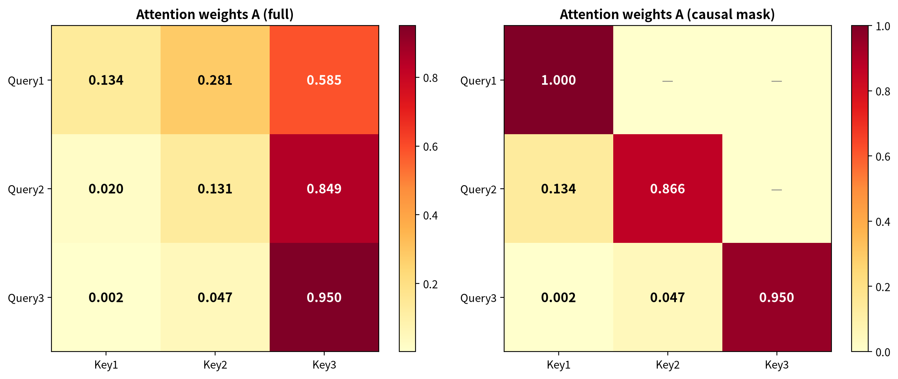
图15：\(3\times3\)的注意力权重矩阵 \(A\) 的热力图（即上方手算结果）。每行代表一个Query token对所有Key token的注意力分配，行和为1。颜色越深表示注意力越集中——可以看到第1个token（第0行）注意力较均匀，第3个token（第2行）几乎全集中在自己身上（0.95）。
公式4：加权汇总 \(O = AV\)
\[O = AV\]
这句话在说什么？ 用注意力权重 \(A\) 对值矩阵 \(V\) 做加权线性组合。输出 \(O\) 的第 \(i\) 行，是 \(V\) 的所有行按 \(A\) 的第 \(i\) 行作为权重加权求和的结果。每个token的输出表示都混入了其他token的信息，混入的比例由注意力权重决定。
逐符号注释： - \(A \in \mathbb{R}^{n \times n}\)：注意力权重矩阵（\(3 \times 3\)） - \(V \in \mathbb{R}^{n \times d_k}\)：值矩阵（\(3 \times 2\)） - \(O \in \mathbb{R}^{n \times d_k}\)：输出矩阵（\(3 \times 2\)），\(O\) 的每一行是加权上下文表示
数字代入演示：
\(O\) 的第0行第0列：\(0.1344 \times 0.6 + 0.2805 \times 1.4 + 0.5851 \times 2.2 = 0.0806 + 0.3927 + 1.2872 = 1.7606\)
\(O\) 的第0行第1列：\(0.1344 \times 0.4 + 0.2805 \times 1.2 + 0.5851 \times 2.0 = 0.0538 + 0.3366 + 1.1702 = 1.5606\)
完整结果：
\[O = \begin{bmatrix} 1.7606 & 1.5606 \\ 2.0626 & 1.8626 \\ 2.1583 & 1.9583 \end{bmatrix} \quad (3 \times 2)\]
维度检查： \(A(3 \times 3) \times V(3 \times 2) = O(3 \times 2)\)，内维3消去。
直觉总结： 对比一下输入和输出。\(V\) 的第0行是 \([0.6, 0.4]\)，但经过Attention加权后变成了 \([1.7606, 1.5606]\)——明显向 \(V\) 的第2行（\([2.2, 2.0]\)）偏移了，因为第0行注意力中第2个token占了58.5%的权重。这就是Attention在做的事情：让每个token的表示被它”感兴趣”的其他token的信息所修正和丰富。 这个修正过程是线性的（加权平均），但权重本身是非线性的（Softmax），所以整体是”线性组合+非线性门控”的混合体。
下图将Q/K/V投影和最终输出 \(O=AV\) 的合成过程可视化：
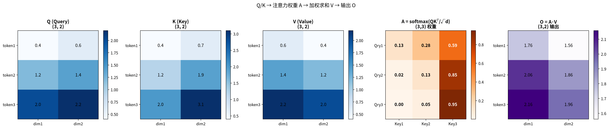
图16：左图展示三个token在Query投影空间中的位置（即 \(Q\) 矩阵的三行）；中图展示Query-Key的匹配度（夹角越小匹配越高，对应 \(QK^T\) 的值越大）；右图展示注意力加权输出 \(O=AV\) 的合成过程——每个token的输出是所有Value向量按注意力权重的加权平均。
5.3 位置编码：RoPE——让Attention感知顺序
§5.2 完整展示了Attention的四步流水线：Q/K/V投影 → \(QK^T/\sqrt{d_k}\) → softmax → \(AV\)。但这个流水线有一个致命缺陷：它对token的顺序一无所知。
想象一下，你把”我吃苹果”和”苹果吃我”两句话的token打乱成同一袋 token 丢给Attention。由于每个token的Q、K、V只依赖它自身的嵌入向量，无论token排在第几个位置，计算出来的结果都一模一样。用术语说，Transformer是置换等变的——你把输入token的顺序任意打乱，Attention的输出也跟着同等打乱，但数值本身完全不变。这意味着模型根本无法区分主语和宾语的位置，“我打你”和”你打我”在它眼里毫无区别。
这显然不可接受。怎么办？
加法位置编码（把位置信息直接加到 token 嵌入向量上，Transformer 原论文的方案），它有效但有一个局限：位置信号和语义信号在同一个向量里相加，模型要在训练中自己学会”哪些维度是位置、哪些是语义”——这能做到，但位置与语义之间没有结构上的区分，而且加法是固定的：位置一旦编码进嵌入就”写死”了，无法自然外推到训练时未见过的更长序列。
更本质的方案是RoPE（Rotary Positional Embedding，旋转式位置编码）。它的核心思想：不给向量”加”位置信息，而是给Q和K向量各”旋转”一个角度。
为什么选”旋转”而不是”加法”？关键在点积的性质：两个向量的点积只依赖它们的夹角，不依赖各自的绝对方向。加法把位置塞进向量幅值里，位置一变，整个向量的”语义内容”也跟着变；旋转只改变向量的朝向、不碰长度——语义强度原样保留，位置信息全放在”朝向”里。于是点积天然只”看见”两个token的朝向差，也就是它们的相对位置。RoPE插在四步流水线的公式1和公式2之间——投影出Q和K之后、计算点积之前，给Q和K各旋转一个位置相关的角度，V不动。
具体来说，位置为 \(pos\) 的token，其Q和K向量会乘以一个旋转矩阵 \(R(\theta \cdot pos)\)。\(\theta\) 是预设的旋转频率（每个维度对一个 \(\theta\)），\(pos\) 是token在序列中的位置编号。旋转矩阵的定义是：
\[R(\alpha) = \begin{bmatrix} \cos\alpha & -\sin\alpha \\ \sin\alpha & \cos\alpha \end{bmatrix}\]
它将二维向量旋转 \(\alpha\) 弧度，保持长度不变。当位置 \(m\) 的Q和位置 \(n\) 的K做Attention时，Q旋转了 \(\theta \cdot m\)，K旋转了 \(\theta \cdot n\)，两者点积的结果只包含旋转角度差 \(\theta(m-n)\)——这个角度差直接编码了两个token的相对距离。
RoPE的直觉：每个token的Q/K向量都有一个”朝向”，朝向由它的位置决定。两个token的朝向差等于 \(\theta \times\) 相对距离——距离越近，朝向差越小，点积越大。
一个极简的二维手算演示：设 \(\theta = 15°\)（每个位置旋转15度），Q 和 K 的原始向量都是 \([1, 0]\)（长度为1）。
每个位置的 Q（和 K）按位置编号旋转：
| 位置 | 旋转角度 | Q 向量 |
|---|---|---|
| 0 | 0° | \([1.000, 0.000]\) |
| 1 | 15° | \([0.966, 0.259]\) |
| 2 | 30° | \([0.866, 0.500]\) |
| 3 | 45° | \([0.707, 0.707]\) |
现在算 Attention 分数 \(QK^T\)（即点积）。因为 \(|Q|=|K|=1\)，两个单位向量的点积等于 \(\cos\)(夹角)，而这里的夹角恰好是两个位置的旋转角度差：
| 查询 | 被关注 | 角度差 | 内积 = \(\cos\)(角度差) |
|---|---|---|---|
| 位置0 → 位置0 | 0° | 1.000 | |
| 位置0 → 位置1 | 15° | 0.966 | |
| 位置0 → 位置2 | 30° | 0.866 | |
| 位置0 → 位置3 | 45° | 0.707 |
关键验证——换一个查询位置，只要相对距离相同，内积就相同：
| 查询 → 被关注 | 相对距离 | 角度差 | 内积 |
|---|---|---|---|
| 位置0 → 位置1 | 1 | 15° | 0.966 |
| 位置1 → 位置2 | 1 | 15° | 0.966 |
| 位置2 → 位置3 | 1 | 15° | 0.966 |
这就是 RoPE 的核心：两个 token 的相对距离决定了旋转角度差，角度差决定内积——所以注意力分数只依赖相对距离，不依赖绝对位置。旋转不改变向量长度（\(|R \cdot q| = |q|\)），只改变方向，所以语义信息（长度）保留，位置信息（方向）被编码进去。
注意余弦是周期函数——注意力随距离呈周期性变化，并非单调衰减。上面的演示只展示了一对维度、一个频率。但一个频率只能覆盖一个距离尺度：\(\theta=15°\) 时，距离2以内 \(\cos\) 从1降到0.866，区分度有限；距离6时 \(\cos\) 已降至0，此后进入负值区开始震荡。要让模型同时区分”相邻两个字”和”相隔一千字的呼应”，单频率不够。
RoPE 的解决方案：几何级数频率。\(d_k\) 维向量分成 \(d_k/2\) 对，每对一个频率 \(\theta_i\)，按几何级数排列：
\[\theta_i = \text{base}^{-2i/d_k}, \quad i = 0, 1, \ldots, d_k/2 - 1\]
其中 base=10000。以 \(d_k=8\)（4 对维度）为例，4 个频率为：
| 维度对 | 频率 \(\theta_i\) | 有效范围 \(\approx \frac{\pi}{2\theta}\)（\(\cos\) 从1降到0的距离） |
|---|---|---|
| pair 0 | \(1.0\) rad/pos | \(\approx 2\) 位置 |
| pair 1 | \(0.1\) rad/pos | \(\approx 16\) 位置 |
| pair 2 | \(0.01\) rad/pos | \(\approx 157\) 位置 |
| pair 3 | \(0.001\) rad/pos | \(\approx 1571\) 位置 |
（上面手算演示用的 \(\theta=15°\) 是为了方便计算；实际 RoPE 用弧度，最高频 \(\theta_0=1.0\) rad \(\approx 57.3°\)。）
相邻频率比恒为 \(\text{base}^{2/d_k} = 10\)，形成等比数列。每个频率的”有效范围”（\(\cos\) 从1降到0所需的距离）也按同比例递增——pair 0 负责最近的2个位置，pair 3 负责到1571个位置。最高频与最低频的有效范围比为 \(\theta_0/\theta_3 = 1.0/0.001 = 1000 = \text{base}^{1-2/d_k} = 10000^{3/4}\)（不是 base 本身——base 的指数是 \((d_k-2)/d_k\)，因为”有效范围”是位置距离、与频率成反比，而频率跨度是相邻比 base^{2/d_k} 的 \((d_k/2-1)\) 次方），覆盖了从”相邻字”到”千字远呼应”的全尺度。
不同距离上各频率的分工：Q 和 K 原始向量每对都是 \([1,0]\)，各距离的 \(\cos(\theta_i \times d)\)：
| 相对距离 \(d\) | pair 0 (\(\theta=1.0\)) | pair 1 (\(\theta=0.1\)) | pair 2 (\(\theta=0.01\)) | pair 3 (\(\theta=0.001\)) |
|---|---|---|---|---|
| 1 | 0.540 | 0.995 | 1.000 | 1.000 |
| 5 | 0.284 | 0.878 | 0.999 | 1.000 |
| 50 | 0.965 | 0.284 | 0.878 | 0.999 |
| 100 | 0.862 | -0.839 | 0.540 | 0.995 |
| 500 | -0.884 | 0.965 | 0.284 | 0.878 |
看每一行：距离1时只有 pair 0 在变化（1.000 → 0.540），其余三个几乎不动——近距离靠高频。距离100时 pair 0 和 pair 1 都在震荡，pair 2 才开始有效变化（1.000 → 0.540），pair 3 仍接近1——中距离靠中频。距离500时 pair 3 终于开始变化（1.000 → 0.878）——远距离靠低频。
这就是多尺度的本质：每个距离尺度上，总有一对维度的 \(\cos\) 处于”灵敏区”（从1到0的下降段），提供位置区分信息；而过高频率的维度已经周期震荡（平均效应\(\approx 0\)），过低频率的维度还没动（\(\approx 1\)）。\(d_k/2\) 个频率像多把不同精度的尺子叠加——游标卡尺量毫米级，卷尺量米级——每把尺子负责自己擅长的尺度范围。
更妙的是，RoPE只旋转Q和K，不碰V——这意味着语义内容原封不动，只有”查询-匹配”的过程被位置调制。
今天，几乎所有现代大模型都采用了RoPE——从LLaMA到DeepSeek，从Qwen到Mistral。它已成为Attention的默认基础设施。
一句话总结：RoPE用旋转矩阵给每个token的Q/K向量打上”朝向”，朝向差编码相对距离，多频率覆盖多尺度，让Attention天然感知相对位置。
下图展示RoPE多频率机制的核心：左图的色带显示各频率的灵敏区如何铺满距离轴，右图对比单频率（有盲区）和多频率叠加（全覆盖）的差异。
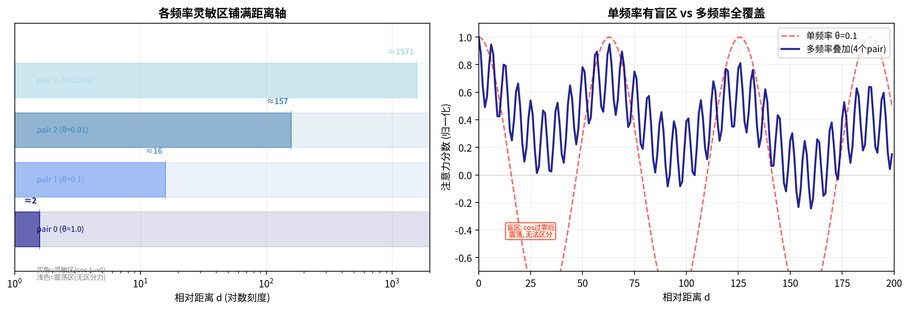
图17：左：4个频率对的灵敏区（\(\cos\) 从1降到0的距离区间）在对数距离轴上依次铺开——pair 0 覆盖最近2个位置，pair 3 覆盖到1571个位置，每个尺度都有专门的频率负责。右：单频率（红虚线）在 \(\cos\) 过零后进入盲区，周期震荡无法区分距离；多频率叠加（蓝实线）在每个距离尺度上都有处于灵敏区的频率提供信号，全覆盖无盲区。
与Ch6的联系：RoPE直接作用于Q和K向量，这意味着它需要完整的Q/K维度信息。Ch6要讲的MLA（Multi-Head Latent Attention，多头潜在注意力）会把K和V压缩成一个低维的latent cache，但RoPE无法直接对这个压缩后的cache施转——这就是为什么MLA必须保留一个独立的RoPE cache，这是MLA工程实现中最关键的设计约束之一。
自查：合上书，能默写旋转矩阵 \(R(\alpha)\) 并说出 RoPE 作用在 Q/K 上、V 不动的原因吗？
5.4 反向传播
为简单起见，我们先展示单样本情形下的梯度流。批量训练时的三维张量梯度原理相同，只是多一个样本维度的循环。
还记得第4章我们学过的链式法则吗？梯度像接力棒一样从输出层一路传回。在Attention模块中，这个传递过程涉及矩阵乘法的导数，但只要记住”维度匹配”这个金标准，每一步都不会出错。
从O回传到A和V
给定上游梯度 \(\partial L / \partial O\)（从下游模块传回来的梯度），我们需要求 \(\partial L / \partial A\) 和 \(\partial L / \partial V\)。
\[\frac{\partial L}{\partial A} = \frac{\partial L}{\partial O} \cdot V^T, \quad \frac{\partial L}{\partial V} = A^T \cdot \frac{\partial L}{\partial O}\]
维度检查（这是你的生命线）： - \(\partial L / \partial O\) 是 \((3 \times 2)\)，\(V^T\) 是 \((2 \times 3)\)，相乘得 \(\partial L / \partial A\) 是 \((3 \times 3)\) ✓ - \(A^T\) 是 \((3 \times 3)\)，\(\partial L / \partial O\) 是 \((3 \times 2)\)，相乘得 \(\partial L / \partial V\) 是 \((3 \times 2)\) ✓
直觉解释： \(\partial L / \partial A\) 的 \((i,j)\) 元素等于 \(\partial L / \partial O\) 的第 \(i\) 行与 \(V\) 的第 \(j\) 行的点积。这意味着”如果注意力权重 \(A_{ij}\) 增加一点点，输出 \(O_i\) 会沿着 \(V_j\) 的方向变化，因此损失的变化量取决于 \(V_j\) 和上游梯度的对齐程度”。
数字代入验证： 设 \(\partial L / \partial O = \begin{bmatrix} 1.0 & 0.5 \\ 0.5 & 1.0 \\ 0.2 & 0.8 \end{bmatrix}\)，则：
\[\frac{\partial L}{\partial A} = \begin{bmatrix} 1.0 & 0.5 \\ 0.5 & 1.0 \\ 0.2 & 0.8 \end{bmatrix} \cdot \begin{bmatrix} 0.6 & 1.4 & 2.2 \\ 0.4 & 1.2 & 2.0 \end{bmatrix} = \begin{bmatrix} 0.8 & 2.0 & 3.2 \\ 0.7 & 1.9 & 3.1 \\ 0.44 & 1.24 & 2.04 \end{bmatrix}\]
\[\frac{\partial L}{\partial V} = \begin{bmatrix} 0.1344 & 0.0203 & 0.0024 \\ 0.2805 & 0.1312 & 0.0474 \\ 0.5851 & 0.8485 & 0.9502 \end{bmatrix} \cdot \begin{bmatrix} 1.0 & 0.5 \\ 0.5 & 1.0 \\ 0.2 & 0.8 \end{bmatrix} \approx \begin{bmatrix} 0.145 & 0.089 \\ 0.356 & 0.309 \\ 1.199 & 1.901 \end{bmatrix}\]
从A回传到S：Softmax的敏感率矩阵
Softmax把分数S变成概率A。要反向传播，我们需要知道：S的微小变化会怎样影响A？
前置知识：Jacobian矩阵。想象一个函数输入向量、输出向量。它的Jacobian矩阵（全导数矩阵）记录”输出的每个分量对输入的每个分量的偏导数”——是函数在各个方向上的”局部伸缩率地图”。
Softmax的Jacobian矩阵是 \(\text{diag}(A) - A \cdot A^T\)。对注意力矩阵的每一行而言：
\[J_i = \text{diag}(A_{i:}) - A_{i:} \cdot A_{i:}^T\]
直觉解释： 对角线元素 \(J_{ii} = A_i(1 - A_i)\) 总是正的，非对角线 \(J_{ij} = -A_i A_j\) 总是负的。这意味着提高一个注意力权重必然以降低其他权重为代价——概率总和固定为1，数学上的零和博弈。Jacobian就是描述这个”此消彼长”关系的敏感率矩阵。
数字代入验证第0行： \(A_{0:} = [0.1344, 0.2805, 0.5851]\)
\[J_0 = \begin{bmatrix} 0.1344 & 0 & 0 \\ 0 & 0.2805 & 0 \\ 0 & 0 & 0.5851 \end{bmatrix} - \begin{bmatrix} 0.0181 & 0.0377 & 0.0787 \\ 0.0377 & 0.0787 & 0.1641 \\ 0.0787 & 0.1641 & 0.3423 \end{bmatrix} = \begin{bmatrix} 0.1164 & -0.0377 & -0.0787 \\ -0.0377 & 0.2018 & -0.1641 \\ -0.0787 & -0.1641 & 0.2428 \end{bmatrix}\]
Q和K的梯度：互相依赖的对称关系
要得到 \(\partial L / \partial S\)，我们需要把 \(\partial L / \partial A\) 通过Softmax的Jacobian”翻译”回去——因为 \(A = \text{softmax}(S)\)，所以 \(S\) 的微小变化会通过Softmax的敏感率传递到 \(A\)。记 \(\delta_S \equiv \partial L / \partial S\)。对注意力矩阵的每一行 \(i\)，用该行的 Jacobian \(J_i\) 做转换：
\[\delta_{S,i:}^T = J_i \cdot \left(\frac{\partial L}{\partial A}\right)_{i:}^T\]
展开后是一个简洁的逐元素公式：\(\delta_{S,ij} = A_{ij}\left(g_{ij} - \sum_k A_{ik}\, g_{ik}\right)\)，其中 \(g = \partial L / \partial A\)。直觉：每个分数的梯度 = 该注意力权重乘以（“外部传来的梯度”减去”同一行的加权平均梯度”）——Softmax的零和性使得梯度也有”此消彼长”的结构。注意分母上的 \(\sqrt{d_k}\)：因为 \(S = QK^T / \sqrt{d_k}\)，根据链式法则，这个缩放因子必须传递到梯度中。
\[\frac{\partial L}{\partial Q} = \frac{\delta_S \cdot K}{\sqrt{d_k}}, \quad \frac{\partial L}{\partial K} = \frac{\delta_S^T \cdot Q}{\sqrt{d_k}}\]
维度检查： \(\delta_S\) 是 \((3 \times 3)\)，\(K\) 是 \((3 \times 2)\)，相乘得 \(\partial L / \partial Q\) 是 \((3 \times 2)\) ✓（与 Q 同形状）；\(\delta_S^T\) 是 \((3 \times 3)\)，\(Q\) 是 \((3 \times 2)\)，相乘得 \(\partial L / \partial K\) 是 \((3 \times 2)\) ✓（与 K 同形状）。注意这里 \(\partial L / \partial Q\) 是逐 token 的梯度（每个 Query token 各有一行）——要得到投影矩阵 \(W_Q\) 的梯度，还需再乘 \(X^T\)（\(X\) 是输入），链式法则继续往前传一格。
直觉解释： 看这两个公式——\(\partial L/\partial Q\) 里出现了 \(K\)，\(\partial L/\partial K\) 里出现了 \(Q\)。为什么会这样？因为 \(S = QK^T\)，Q和K在分数里是乘在一起的两个因子。链式法则求Q的梯度时，必须知道K当前的值（“Q变了，分数怎么变？得看K是多少”）；求K的梯度同理。所以训练时Q和K是联动调节的：更新 \(W_Q\) 的依据里包含了K的当前状态，更新 \(W_K\) 的依据里包含了Q的当前状态。
5.5 NumPy完整实现
前面四步公式翻译成纯NumPy只有二十几行——每一行都对应一个数学公式，可以逐行对照 §5.2 的推导：
import numpy as np
def single_head_attention(X, W_Q, W_K, W_V):
"""单头自注意力：Attention(Q,K,V) = softmax(QK^T / √d_k) V
输入: X(n,d), W_Q/W_K/W_V(d,d_k)；输出: O(n,d_k), A(n,n)"""
Q = X @ W_Q # 公式1：Q/K/V 投影
K = X @ W_K
V = X @ W_V
S = (Q @ K.T) / np.sqrt(Q.shape[-1]) # 公式2：匹配度分数，除以 √d_k
A = np.exp(S - S.max(-1, keepdims=True)) # 公式3：Softmax（先减max防溢出，§4.6）
A = A / A.sum(-1, keepdims=True)
O = A @ V # 公式4：加权汇总
return O, A用 §5.2 的 X、\(W_Q\)、\(W_K\)、\(W_V\) 跑一遍，输出的 A 和 O 与手算结果完全相同——代码只是把纸上的四步变成了矩阵运算。完整代码（含RoPE位置编码、反向传播、多头注意力、Transformer Block）见配套文件 attention_numpy.py。
5.6 多头注意力：多个会诊室并行
现实世界中，一个疑难杂症往往需要多个不同维度的专家组同时会诊。中医组看气血经络，西医组看指标影像，心理组看情绪压力。每个专家组内部都有自己的”问题-专长-建议”流程，最后把各组的结论汇总。
多头注意力（Multi-Head Attention）就是这个思路的数学实现。用 \(h\) 个独立的Attention模块并行计算，每个模块有自己的 \(W_Q^{(h)}, W_K^{(h)}, W_V^{(h)}\) 投影矩阵。
\[\text{MultiHead}(Q, K, V) = \text{Concat}(\text{head}_1, \ldots, \text{head}_h) W_O\]
其中每个 \(\text{head}_i = \text{Attention}(XW_Q^{(i)}, XW_K^{(i)}, XW_V^{(i)})\)。
为什么不是一个大矩阵？ 一个头用 \(d_k\) 维，\(h\) 个头总维度 \(h \times d_k = d\)。看起来和一个 \(d \times d\) 的大矩阵参数量一样，但实践中多个小头通常优于单个大头。原因在于归纳偏置（inductive bias，模型结构内置的假设——它”偏好”学习什么样的模式）：单个大矩阵只计算一个 \(QK^T\)，产生一种注意力模式；多头将 \(d\) 维向量投影到 \(h\) 个 \(d_k\) 维子空间，每个子空间独立计算注意力，产生 \(h\) 种不同的注意力模式。一种模式可能关注语法依赖（主谓一致），另一种可能关注语义相似（同义词），还有的关注位置关系（相邻token）。最后通过 \(W_O\) 融合这些互补的模式。一个 \(d \times d\) 大矩阵的注意力是所有信息的加权平均，无法同时维持多种独立的关注视角。
数字代入演示（\(h=2\)，每个 \(d_k=2\)，总 \(d=4\)）：
- 头1（\(W_Q, W_K, W_V\) 同前）：输出 \(O_1 = \begin{bmatrix} 1.7606 & 1.5606 \\ 2.0626 & 1.8626 \\ 2.1583 & 1.9583 \end{bmatrix}\)
- 头2（\(W_Q^{(2)} = W_K^{(2)} = \begin{bmatrix} 0&1\\1&0\\0&1\\1&0 \end{bmatrix}\)，\(W_V^{(2)} = \begin{bmatrix} 1&0\\0&1\\1&0\\0&1 \end{bmatrix}\)）：输出 \(O_2 = \begin{bmatrix} 1.4866 & 1.6866 \\ 1.7908 & 1.9908 \\ 1.9200 & 2.1200 \end{bmatrix}\)
拼接后用线性投影 \(W_O\) 融合：
\[O_{\text{concat}} = \begin{bmatrix} 1.7606 & 1.5606 & 1.4866 & 1.6866 \\ 2.0626 & 1.8626 & 1.7908 & 1.9908 \\ 2.1583 & 1.9583 & 1.9200 & 2.1200 \end{bmatrix} \quad (3 \times 4)\]
\(W_O\) 是 \((4 \times 4)\) 的融合矩阵（通常初始化为近似identity，训练后学习最优融合方式），最终输出 \(O = O_{\text{concat}} W_O\) 仍然是 \((3 \times 4)\)，与输入维度一致。
高效Attention变体：GQA与Flash Attention
多头Attention的机制很优美——多个头并行关注不同模式，\(W_O\)再把它们融合。但工程上有两个瓶颈需要解决。
瓶颈一：推理时的KV cache。 这个瓶颈对所有Attention都存在，但多头注意力有一个独特的浪费。
推理（生成新token）时，已经处理过的token的K和V不需要重新算，可以缓存复用——这就是KV cache。每个token要缓存 \(h\) 份K和 \(h\) 份V（每头各一份），总量是 \(2 \times L \times h \times d_k = 2 \times L \times d\)。
关键发现：研究者观察训练好的模型，发现很多头学到的注意力模式高度相似——它们关注的token几乎一样，投影出的K/V也近乎重复。（注意：上一节说多头”设计”成关注不同模式——那是归纳偏置的目标；这里是训练后的实证观察：实际学出来，不少头会收敛到相似的模式，尤其同一层内。设计意图是多样，实际结果常冗余，两者不矛盾。）这意味着 \(h\) 份K/V中有相当一部分是冗余的。既然相似，为什么不让它们共享同一份？
GQA（Grouped Query Attention，分组查询注意力）就是这么做的：\(h\) 个Query头被分成 \(g\) 个组，每组共享同一对K和V头。Query仍然有 \(h\) 份（保留多视角的查询能力），但K/V只存 \(g\) 份。
一个具体的例子：假设 \(h=8\)（8个Query头），序列长度 \(L=4096\)，每个头维度 \(d_k=128\)。
- 标准MHA（\(g=8\)，每组1个头）：每个token存8对K/V。K的显存 = \(8 \times 4096 \times 128 \times 2\)字节（2字节=FP16精度）\(\approx\) 8.4 MB。V同样8.4 MB。KV cache总计 16.8 MB/层。
- GQA（\(g=2\)，每4个头共享1对K/V）：只有2对K/V头。KV cache = \(2 \times 4096 \times 128 \times 2 \times 2\) \(\approx\) 4.2 MB/层。内存直接降到MHA的25%。
- MQA（\(g=1\)，所有8个头共享1对K/V）：只有1对K/V头。KV cache \(\approx\) 2.1 MB/层。内存最省，但8个Query挤1个K/V，信息瓶颈最严重。
量级直觉：以上是单层数字。一个80层模型的总KV cache约为80倍——MHA约1.3GB，GQA约336MB，MQA约168MB。这就是为什么KV cache优化对长序列推理如此关键。
LLaMA 2 70B和LLaMA 3系列采用了更激进的GQA——例如LLaMA 2 70B用64个Query头共享8个KV头（8:1比例），KV cache降到MHA的12.5%，精度损失几乎不可感知。这就是GQA的工程智慧：不是最省的，也不是最精确的，而是性价比最高的平衡点。
瓶颈二：训练和推理时的中间矩阵。 GQA解决的是KV cache的存储问题，Flash Attention解决的是另一个问题：标准Attention计算过程中那个 \(L \times L\) 的注意力矩阵。
先看GPU的内存层次：GPU有两层存储——HBM（High Bandwidth Memory，高带宽显存，容量大但速度慢）和SRAM（片上高速缓存，容量极小但速度极快，约为HBM带宽的10倍以上）。可以理解为：HBM是仓库，SRAM是办公桌。
标准Attention的计算流程是：先算 \(S=QK^T\)（一个 \(L \times L\) 矩阵），存入HBM；再从HBM读出 \(S\) 算softmax得到 \(A\)，又存入HBM；最后从HBM读出 \(A\) 算 \(O=AV\)。那个 \(L \times L\) 的中间矩阵被反复写入和读出HBM——而HBM的带宽远低于计算单元的速度，GPU大部分时间在等数据搬运，不在算。当 \(L=65536\) 时，仅这一个矩阵就需要约8GB显存（FP16）。
Flash Attention（Dao 等，2022）的核心思路：不要把 \(L \times L\) 矩阵写到HBM。具体分两步：
第一步：分块计算。 把Q、K、V切成刚好能塞进SRAM的小块，在SRAM内完成局部的 \(QK^T\) 和 \(AV\) 计算，只把最终输出 \(O\) 写回HBM——全程不存储完整的 \(L \times L\) 注意力矩阵。
第二步：在线Softmax。 分块带来一个困难：softmax的分母 \(\sum_j e^{S_{ij}}\) 需要看到整行所有分数才能算，但分块每次只看到一部分。Flash Attention用了一个数学技巧——在线Softmax：维护一个”当前最大值” \(m\) 和”当前累加和” \(l\)，每来一块新分数就更新 \(m\) 和 \(l\)，同时修正之前累加的值。最终得到的softmax结果与一次性算完全一致，但不需要同时持有整行数据。
（反向传播时，Flash Attention选择重计算——不缓存中间的注意力矩阵，而是在反向时重新算一遍。用额外计算换来了内存节省，在GPU上这是划算的，因为计算比HBM读写快得多。）
结果：Flash Attention不改变Attention的数学公式，输出完全一致，但中间矩阵的内存从 \(O(L^2)\) 降到 \(O(L)\)，HBM读写量大幅减少。这是一个算法创新（在线Softmax）与工程优化（分块+重计算）的结合。
与Ch6的联系：GQA从”头的数量”维度压缩KV cache——每个token只需存\(g\)对K/V而非\(h\)对；MLA则从”维度”维度压缩——把K/V投影到一个更小的latent space（潜空间）中。理论上两者可以叠加：先GQA减少头的数量、再MLA压缩每头的维度，实现双重瘦身。但实际中 DeepSeek-V2/V3 用的是 MLA 一条路线（MLA 是 DeepSeek-V2 首次提出的，V3 沿用）——MLA 本身已经把 K/V 压进低维潜空间，KV cache 的压缩效果比 GQA 更强（MLA 的缓存只有 \(d_c\) 维，而 GQA 至少还要存 \(g\) 对 K/V），所以不需要再叠 GQA。两者解决的是同一个问题（压缩 KV cache）的两个不同侧面，可以叠加，但实际模型通常二选一，不是必然并用。
一句话总结：GQA通过”拼车”让多个Query共享K/V头来削减cache体积，Flash Attention通过”在桌面上算完”避免搬运巨大的中间矩阵，两者分别从存储和工程实现层面解决了Attention的规模化瓶颈。
5.7 AI落地
| 场景 | 一句话解释”没有这个数学工具会怎样” |
|---|---|
| Transformer自注意力 | 没有Attention，序列建模只能依赖固定窗口（如RNN的短时记忆或CNN的局部卷积核），长距离依赖（如文章开头的主语和结尾的代词）无法有效捕捉 |
| ViT图像块注意力 | 没有Attention，图像处理只能逐像素/逐卷积核操作，全局关系（如一只猫的头和身体在不同位置的关系）看不到 |
| DINO自监督学习 | 没有Softmax的指数归一化，自监督学习无法把”同一张图片的不同视角”拉近、把”不同图片”推远，视觉模型只能依赖昂贵的人工标注 |
| Stable Diffusion图像生成 | 没有分数匹配 \(\nabla_x \ln p(x)\)（Ch1 梯度的”纵向延伸”），扩散模型无法从纯噪声中”沿着坡度走”出真实图像，生成式AI不存在 |
| BERT双向编码 | 没有Attention，语言模型只能从左到右或从右到左单向读取，双向上下文无法同时利用 |
| LoRA低秩微调 | 没有低秩微调，全参数微调成本极高（GPT-3级别模型需要TB级显存），大众无法参与大模型定制。LoRA给每个要微调的权重矩阵配一个低秩增量（实践中常作用于Q/K/V/O投影和FFN） |
| RoPE位置编码 | 没有RoPE，Transformer对token顺序一无所知，“我吃苹果”和”苹果吃我”输出完全相同。RoPE用旋转角度编码位置，是所有现代LLM的标配 |
| Flash Attention高效实现 | 没有Flash Attention的内存优化，标准Attention的\(O(n^2)\)存储在长序列（如100k tokens）时会直接爆显存。Flash Attention让大模型能处理超长文本 |
| GQA减少KV缓存 | 没有GQA，每个Query头都要存一份K/V，长序列推理时KV cache占用数GB显存。GQA让多个Query”拼车”共享K/V，内存压缩为原来的1/4到1/8 |
| 混合架构（Attention+SSM） | 当前重要趋势：纯Attention的\(O(n^2)\)在长序列下不可持续。Qwen3-Next/Jamba等采用Attention+Mamba混合架构，近距离精细+远距离压缩 |
| TTS语音合成 | 没有Attention，音素到声学特征的映射只能固定对齐，语速变化或连读时音质严重下降 |
5.8 常见误解
误解1：“Attention就是加权平均，和池化差不多”
常见错误想法： 加权平均嘛，不就是给不同位置不同的权重再求和？Average Pooling也是加权平均（每个位置权重相等），Max Pooling也是一种加权（取最大的那个）。Attention看起来没什么新鲜。
真相： 池化的权重是固定的——平均池化不管输入是什么，永远是每个位置 \(1/n\)；最大池化永远只取最大值位置。但Attention的权重是数据依赖的——同一个位置面对不同的Query，权重完全不同。输入变了，权重分布跟着变；输入不变但Query变了，权重也重新计算。
更本质的区别：池化是一种降维操作（把多个位置压缩成一个），Attention是一种特征变换操作（每个位置输出一个新的表示，维度不变但内容被上下文丰富）。你不可能用池化来做机器翻译，因为翻译需要每个词都输出一个对应的目标语言词；但你完全可以用Attention来做这件事。
误解2：“Q/K/V不都是从同一个X来的吗？为什么需要三个不同的W？”
常见错误想法： 既然 \(Q\)、\(K\)、\(V\) 都是从同一个输入矩阵 \(X\) 乘出来的，为什么不能直接用 \(X\) 本身？同一个东西乘三个不同的矩阵，这不是在浪费参数吗？
真相： 这是一个非常好的问题，答案藏在”分工”两个字里。如果 \(Q = K = V = X\)（完全不做投影），那么Attention分数就变成了 \(S = XX^T\)，这纯粹是输入向量之间的自相似度——模型只能问”谁和谁长得像”，无法做灵活的语义查询。
三个不同投影就像同一套信息用三种不同眼镜来看： - Query眼镜（\(W_Q\)）： 专门训练来”提取问题意图”的维度组合 - Key眼镜（\(W_K\)）： 专门训练来”提取可匹配特征”的维度组合 - Value眼镜（\(W_V\)）： 专门训练来”提取可传递信息”的维度组合
类比一下：同一个病人，化验科的阅读框架看指标数值，影像科的阅读框架看形态结构，病历科的阅读框架看病史时间线。三个科室读的是同一份病历，但各自提炼出的信息完全不同——只有分工明确，会诊才能高效。
实践中也能观察到：强制 \(W_Q = W_K = W_V\) 会限制模型表达能力，通常导致性能下降。自由分工优于强制统一。
角色分工还有一个直接后果：RoPE 只旋转 Q 和 K，不旋转 V。位置信息编码在”查询-匹配”环节（Q 和 K 的点积），不需要编码在”信息内容”里（V）。如果 Q=K=V=X，这种选择性旋转就无从实现——三个角色混在一起，你无法只旋转”查询”而不动”内容”。
误解3：“除以 \(\sqrt{d_k}\) 只是个小技巧，去掉也没大问题”
常见错误想法： 不就是个缩放吗？Softmax之前缩不缩，结果应该差不多吧。
真相： 在 \(d_k\) 小的时候（比如 \(d_k = 2\) 或 \(4\)），确实差别不大。但当 \(d_k = 64\) 或更大时，分数的方差随 \(d_k\) 线性增长，Softmax 会把注意力极度集中到一个位置（比如99.9%给一个token），此时输出几乎是一个 one-hot 向量，Softmax 的 Jacobian 接近零矩阵，梯度几乎无法回传——下游梯度到不了上游（§4.5 的梯度消失）。除以 \(\sqrt{d_k}\) 就是把方差压回约 1，让梯度畅通。这不是”小技巧”，这是让深层Transformer能够训练的核心设计之一。
小胜点：到这里，你已经掌握 Attention 的核心链路：Q/K/V 投影 → RoPE → 缩放 → Softmax → 加权汇总，也知道多头为什么有用、除以 \(\sqrt{d_k}\) 为什么必要。接下来 §5.9 是选读，§5.10 是组装奖励关。
5.9 Attention之外：混合架构与Mamba
选读：本节是 Attention 的长序列延伸，跳过不影响 §5.10 的 LLM 组装主线；想先看到”零件如何拼成整机”，直接跳到 §5.10。
Attention（注意力机制）有一个根本性的瓶颈：Softmax Attention的复杂度是 \(O(n^2)\)。
这是什么意思？假设序列有 \(n\) 个token，每个token都要和其他所有token计算一次注意力分数——就像一个会议上每个人都必须和所有人握手一次。10个人需要 45 次握手，100个人需要 4950 次，1000个人需要近50万次。序列长度翻10倍，计算量翻100倍。当序列达到100k tokens（一本长篇小说的长度）时，计算量和内存都会爆炸。
一句话：Softmax Attention的 \(O(n^2)\) 复杂度是长序列的瓶颈，每增加一个token，所有人都要重新握手。
在跳到”换一种机制”之前，先看两条改造Attention本身的路线——它们不替换Softmax Attention的框架，只改变计算方式来降低复杂度。
路线一：稀疏注意力（Sparse Attention）。 \(O(n^2)\) 的根源是每个token和所有token都算注意力。但实践中，大部分注意力权重集中在少数几个token上（就像你读文章时真正关注的句子远少于全文）。稀疏注意力的思路是：只算重要的token对，跳过其余的。具体做法有两种典型策略：
- 局部窗口（Local Window）：每个token只关注前后 \(w\) 个token（如 \(w=512\)），复杂度 \(O(n \cdot w)\)。这对局部语法和短语级语义足够，但无法捕捉长距离依赖。
- 全局token（Global Token）：选少数”枢纽token”（如每256个token中选1个）与所有token做全注意力。这些枢纽token充当信息中转站——远处的token通过枢纽间接传递信息，就像邮政系统的分拣中心。Longformer和BigBird用的就是”局部窗口 + 全局token”的组合，复杂度降到 \(O(n \cdot w + n \cdot g)\)（\(g\) 是全局token数，远小于 \(n\)）。
稀疏注意力的代价是：跳过的token对可能包含有用的关系，模型失去了”全局视野”的精度。但对于大多数长文本任务（文档摘要、长问答），局部+全局的覆盖已经够用。
路线二：线性注意力（Linear Attention）。 回到Softmax的公式：\(A = \text{softmax}(QK^T)\)。\(QK^T\) 是 \(n \times n\) 矩阵，这是 \(O(n^2)\) 的根源。如果把Softmax的指数函数 \(\exp(q \cdot k)\) 替换为一个非负核函数 \(\phi(q) \cdot \phi(k)\)（\(\phi\) 是某种特征映射，如ELU+1），注意力公式变成：
\[O = \frac{\phi(Q)(\phi(K)^T V)}{\phi(Q)(\phi(K)^T \mathbf{1})}\]
关键在于括号的结合顺序：先算 \(\phi(K)^T V\)（一个 \(d_k \times d_k\) 矩阵，与 \(n\) 无关），再左乘 \(\phi(Q)\)。这样复杂度从 \(O(n^2 \cdot d_k)\) 降到 \(O(n \cdot d_k^2)\)——当 \(d_k \ll n\) 时（通常 \(d_k=64\)，\(n=4096+\)），这是巨大的节省。更妙的是，推理时可以用类似RNN的方式逐token更新，KV cache变成 \(O(d_k^2)\) 而非 \(O(n \cdot d_k)\)。
线性注意力的代价是：核函数 \(\phi\) 是对Softmax指数的粗略近似。Softmax的指数函数有一个关键性质——它对大分数极度敏感（指数放大），这让模型能”尖锐地”聚焦到最重要的token。线性注意力的核函数没有这种放大效果，注意力分布更”平坦”，表达能力下降。Linear Transformer、RWKV、RetNet都走这条路，用不同的 \(\phi\) 设计在效率和质量之间找平衡。
两条路线的定位： 稀疏注意力保留Softmax的指数运算，但只算部分token对——精度高但不完全 \(O(n)\)。线性注意力算所有token对，但替换掉指数运算——完全 \(O(n)\) 但精度有损。两者都是”在Attention框架内做手术”，不改变”Q查询K、加权V”的基本结构。
但当前出现的重要趋势不是”取代Attention”，而是分工协作。
短距离（局部）仍然用Softmax Attention做精细关联——就像面对面聊天时你自然能捕捉对方的微表情和语气变化。长距离（全局）则用更高效的机制做粗略记忆——就像你不需要回忆三个月前某次会议上的每一个字，只需要记住那次会议达成了什么共识。
这条思路催生了一类新架构：Linear RNN / SSM（State Space Model，状态空间模型）。
核心思想非常简单：不再让每个token关注所有其他token，而是维护一个固定大小的”状态向量” \(h_t\)。每次只读当前token，更新状态，输出结果。数学上写成：
\[h_t = \bar{A} \, h_{t-1} + \bar{B} \, x_t\]
\(h_{t-1}\) 是上一时刻的状态（之前的全部信息压缩在这个向量里），\(x_t\) 是当前输入token，\(\bar{A}\) 决定多少旧状态保留下来（遗忘），\(\bar{B}\) 决定新输入如何融入（记忆）。复杂度从 \(O(n^2)\) 降到 \(O(n)\)——因为每个token只被处理一次，看一眼就过，不需要回头翻看。
一句话：SSM用一个固定大小的状态向量代替全对全的注意力，复杂度从 \(O(n^2)\) 降到 \(O(n)\)，像流水线工人而不是全员握手。
Mamba 给SSM加上了”选择性”——\(\bar{A}\) 和 \(\bar{B}\) 不再固定，而是依赖于输入 \(x_t\)。也就是说，模型会数据驱动地决定记住什么、忘记什么。看到关键信息时（如人名、日期、结论），\(\bar{B}\) 放大，状态大更新；看到填充词时（如”的”、“了”），\(\bar{A}\) 放大，旧状态几乎不变地传递下去。这相当于给SSM装上了”注意力开关”。
当前的前沿模型已经广泛采用混合架构： - Qwen3-Next：Attention层和SSM层交替使用 - Nemotron-H（NVIDIA）：Transformer + Mamba混合 - Jamba：约52B参数（MoE架构，约12B活跃参数）的Mamba-Transformer混合模型
一句话：Mamba让SSM学会了”选择性记忆”，一批前沿模型（Qwen3-Next、Nemotron-H、Jamba）采用Attention+SSM混合架构。
用一个类比收尾：Attention的记忆像完整录像带——精确到每一帧，但需要一个大存储柜来存放。Mamba的记忆像摘要笔记——压缩了很多细节，但永远只需要一个笔记本。当前的前沿是把两者混着用：近距离聊天时看录像（Softmax Attention），远距离回忆时看笔记（Mamba）。
但块已经拆开看完了，还缺一个问题：这些块怎么拼成一台完整的语言模型？ 前面几章我们逐个拆解：Ch3 的 Softmax 把分数变成概率，Ch4 的反向传播把责任传回每个参数，Ch5 的 Attention 块让每个 token 动态获取上下文。但一台现代语言模型（LLM）长什么样？Embedding 怎么把文字变成向量？FFN 和残差连接各自扮演什么角色？训练时模型”学”的到底是什么？推理时”生成下一个词”是怎么一步步发生的？
下一节回答：Attention块和FFN块怎么拼成一台完整的机器。下一章则处理另一个问题：这些块里的矩阵太大了，怎么瘦身？
5.10 从Attention到语言模型：组装全景
一台现代语言模型的本质：把文字串变成向量序列，用Attention和FFN一层层处理，再转回文字串。不新增任何数学工具，只是把Ch3、Ch4、Ch5学过的数学工具组装成一个完整的机器。
心法：本节讲的是文字接口下的组装。文字只是最直接的一种外界接口——把接口换成图像/音频/动作，同一套潜空间架构就长出多模态基座、语音模型、具身智能。本节讲”文字接口的组装全景”，《基座模型》Ch2 讲”潜空间里到底跑什么”，两者是同一系统的入口视角和内部视角。
一个例子走通全流程
输入”我今天”，模型怎么预测下一个词？整条流水线只做四件事：
- 查表（Embedding）： 把”我”“今”“天”三个字各自变成一个向量。不是计算，是查一张预训练好的表——第5000号字对应第5000行向量。
- 处理（Transformer Block \(\times\) N层）： 每一层先让三个字互相”看到”彼此（Attention），再给每个字注入语义知识（FFN）。一层处理完进下一层，N层叠起来，“今”逐渐知道自己是”今天”的”今”而不是”今年”的”今”。
- 打分（LM Head + Softmax）： 取最后一个字”天”处理完的向量，用一个矩阵 \(W_{\text{head}}\) 映射到词表维度（每个词一个分数），再用Softmax变成概率——“很”0.31，“去”0.22，“的”0.15……（其余概率分配给其他词，所有词的概率总和为1）。\(W_{\text{head}}\) 就是LM Head（Language Model Head，语言模型输出层），本质上就是一个线性变换矩阵，把模型内部的隐状态向量”翻译”成每个词的得分。
- 采样： 按概率分布抽一个词（比如”很”），接到序列末尾，变成”我今天很”，再从第1步重新走一遍，生成下一个词。
就这四步，循环往复。没有新数学，全是Ch3-Ch5学过的工具。
全景流水线：从文字到文字
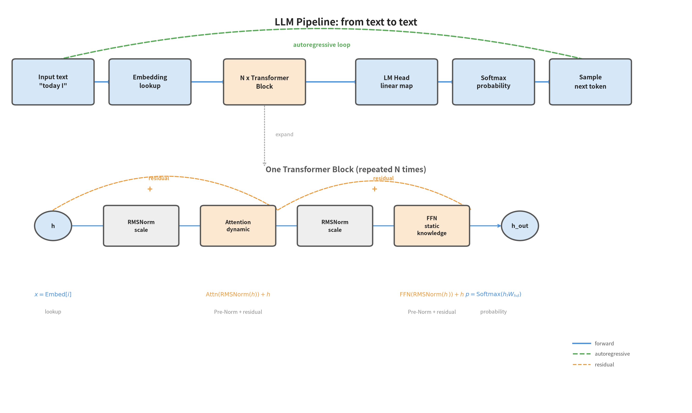
图18：上图展示LLM完整流水线——输入文字经Embedding查表变成向量，进入N层Transformer Block处理，再经LM Head和Softmax变成概率分布，采样得到下一个词。绿色虚线表示自回归循环：把生成的词接回序列末尾再走一遍。下图展开一层Transformer Block内部（Pre-Norm结构）：RMSNorm → Attention → 残差加回 → RMSNorm → FFN → 残差加回，橙色虚线表示残差连接。底部标注每个环节的关键公式。
分三层来理解这条流水线：
第一层：入口——把文字变成向量
输入是一段文字（如”我今天”），先被切分成token，每个token通过Embedding查表变成连续向量。这一步只是查表，没有新数学。
第二层：处理——Transformer Block层层加工
这些向量进入N层Transformer Block。每一层内部先用RMSNorm归一化，再用Attention让每个token动态获取相关上下文（Ch5已详述），残差加回原始输入；再用RMSNorm归一化，用FFN注入静态知识（比如解析”王子”是什么意思，Ch4.5讲过SwiGLU激活函数），残差加回。层数越深，理解越深。
第三层：出口——把向量变回概率
经过N层后，最后一个token的隐状态向量经过LM Head（矩阵乘法，Ch4讲过线性变换）映射到词表维度，再经Softmax（Ch3已详述）变成每个词的概率分布。
循环——自回归生成
从概率分布中采样一个词，把它接到序列末尾，再重新走一遍整条流水线，生成下一个词。一轮一轮，直到生成终止符。
这个流水线里的每个部件都是前面章节已经学过的数学工具，没有新工具。下面逐个对号入座。
公式1：Embedding——查表
文字是离散的，模型需要连续向量。把文字向量化的第一步就是Embedding——一张查找表：
\[x = \text{Embedding}[i]\]
这句话在说什么？ 请把文字看作一个编号索引 \(i\) （比如词表中第 5000 号是”猫”）。Embedding是一个大矩阵 \(E \in \mathbb{R}^{V \times d}\)，\(V\) 是词表大小（比如 50000 个词），\(d\) 是模型隐层维度（比如 512 ）。输入一个编号 \(i\)，就返回第 \(i\) 行，一个 \(d\) 维的向量。实际上就是一次矩阵查找——调用速度极快。不是计算，是记忆。
深层连接：Ch4讲过线性变换 \(z = Wx + b\)，Embedding其实就是线性变换的一种简化——不再是任意矩阵乘法，而是从一个预训练好的查找表中直接取出第 \(i\) 行。训练的目标就是让这张查找表中”相似意思的词”得到相近的向量——如果”王子”和”公主”的Embedding向量很接近，模型在推理时自然会捕捉它们的关系。工程上常让 LM Head 与 Embedding 共享权重（\(W_{\text{head}} = W_{\text{e}}^{\mathsf{T}}\)，称 weight tying）：能”查进”向量空间的向量，就是能”查回”词表的向量——共享还省一半参数。
公式2：Transformer Block——一层加工
一层Transformer Block由三个工序连成（Pre-Norm结构，GPT-2之后所有主流LLM的标准做法）：
\[h' = \text{Attention}(\text{RMSNorm}(h)) + h \quad \text{…… 子步A：归一化 + Attention + 残差}\] \[h_{\text{out}} = \text{FFN}(\text{RMSNorm}(h')) + h' \quad \text{…… 子步B：归一化 + FFN + 残差}\]
逐符号注释：
- 子步A：归一化 → Attention + 残差。 先用RMSNorm把 \(h\) 的尺度拿捏均匀（Ch4.5已提及），再送入Attention让当前token动态获取上下文（Ch5已详述），最后把结果加上原始输入 \(h\)。这个”加上原来的”就是残差连接，目的是防止信息丢失：如果Attention算出来的结果很差，残差连接确保模型至少不会偏离原始信息太远。注意归一化在Attention之前（Pre-Norm），不是之后。为什么不是之后？关键在于残差路径的结构差异。Post-Norm的做法是 \(h_{\text{out}} = \text{Norm}(h + \text{Sublayer}(h))\)——归一化作用在残差加法之后，每层的输出都被Norm重新缩放到固定方差。这意味着第 \(l\) 层的信号传到第 \(l+k\) 层时，要经过 \(k\) 次 Norm 的压缩，早期层的信息被逐渐”稀释”成微不足道的扰动。深层网络中靠近输入的层梯度极小、几乎不学习。Pre-Norm的做法是 \(h' = \text{Sublayer}(\text{Norm}(h)) + h\)——归一化只在子层内部，残差路径是一条不经过任何 Norm 的纯加法通道。梯度可以无损地一路流回第一层，100层也能稳定训练。代价是 Pre-Norm 的等价深度略低于 Post-Norm（残差路径不压缩信号，深层贡献的相对权重更分散），但训练稳定性的优势远大于这一代价。这就是 GPT-2 之后所有主流 LLM 选择 Pre-Norm 的原因。
- 子步B：归一化 → FFN + 残差。 同样先归一化，再送入FFN。FFN（Feed-Forward Network）是两层全连接网络：\(\text{FFN}(x) = \sigma(x W_1 + b_1) W_2 + b_2\)，其中 \(\sigma\) 通常是 SwiGLU。这是模型存储静态知识的主要容器——Attention负责”查找关系”，FFN负责”注入知识——比如解析”王子”是什么意思、“爱情”表达什么情感、“结局”一般指什么结果”。Geva et al.（EMNLP 2021）的 key-value 记忆视角进一步表明：FFN 第一层是”键”（匹配模式）、第二层是”值”（存储知识），这使得 FFN 不仅是容器，更是可定位、可编辑的关联记忆。为什么需要非线性激活？因为纯粹的线性叠加等价于一次线性变换（无法表达复杂函数），激活函数赋予网络非线性表达能力。
一句话：每一层Transformer Block先归一化再用Attention动态整理语义，残差加回；再归一化用FFN注入静态知识，残差加回。Pre-Norm把Norm放在子层内部，残差路径是纯加法通道，深层网络也能稳定训练。 N层之后，一个单词的信息已经经历了N次动态沟通和N次知识深化——层数越深，理解越深。
公式3：Causal Mask——只能看左边
自回归语言模型（如GPT系列）和BERT之类双向编码器有个关键区别：它只能看当前词以前的词，不能偷看后面。这由一个上三角mask实现：
\[M_{ij} = \begin{cases} 0 & \text{if } i \geq j \\ -\infty & \text{if } i < j \end{cases}\]
逐符号注释：
- \(i\)：当前运算的Query位置（第几个token）
- \(j\)：Key的位置（第几个token）
- 当 \(i \geq j\)（当前token在或等于Key的位置，即看之前的token或看自己）：\(M_{ij} = 0\)，不改变分数
- 当 \(i < j\)（想偷看后面的词）：\(M_{ij} = -\infty\)，加上后再进Softmax时得到 0，相当于”这个词被屏蔽了”
一个具体的例子：3个token的序列，mask是：
\[M = \begin{bmatrix} 0 & -\infty & -\infty \\ 0 & 0 & -\infty \\ 0 & 0 & 0 \end{bmatrix}\]
第一行第一列是 0（可以看自己），第一行第二列是 \(-\infty\)（不能偷看第二个token）。这个上三角形的遮罩不是什么神秘设计，就是一个简单的设计约定：生成时只能用已知信息，不能偷看未来。
公式4：LM Head——转回文字
经过N层Transformer Block后，最终隐状态的最后一个token对应的向量是 \(h_{\text{final}} \in \mathbb{R}^d\)（比如 512 维）。用前面提到的 LM Head 矩阵 \(W_{\text{head}} \in \mathbb{R}^{d \times V}\) 把它映射到词表大小维度：
\[z = h_{\text{final}} W_{\text{head}} \in \mathbb{R}^V\]
然后，对 \(z\) 用Softmax（Ch3已详述）：
\[p = \text{Softmax}(z) \in \mathbb{R}^V\]
\(p\) 的每个元素是”这个位置上是第 \(i\) 个词的概率”。在训练时，我们计算这个预测概率和真实标签的交叉熵损失（Ch3.4），然后用反向传播（Ch4）把梯度传回每个参数——包括Embedding、Attention的QKV投影矩阵、FFN的权重、LM Head的 \(W_{\text{head}}\)。这是同一套链式法则，只是路径更长了。
在推理时，不再计算梯度，而是从 \(p\) 中采样一个编号——通常取概率最大的（叫greedy采样，也就是永远选置信度最高的词），或者按概率分布随机抽（叫top-k或top-p采样，引入随机性）。把抽到的词的Embedding接到序列末尾，再重新走一遍前向传播——这就是自回归生成：每生成一个词，就把它加进去，再生成下一个。
动手：把四个章节的公式装进同一个循环
前面那句”训练时计算交叉熵、用反向传播传回梯度”，具体走一步是什么样？不需要任何深度学习框架——任务缩到最小，整个训练循环就能摊开在纸上。
任务设定：语料是”猫吃鱼。“重复两遍，看前两个字符、预测第三个。词表只有 4 个字符：{”猫”:0, “吃”:1, “鱼”:2, “。”:3}，每个字符经 Embedding 查表变成 \(d=4\) 维向量（查表后冻结不更新），接一个单头 Attention（Ch5），取最后一个位置的输出过 LM Head 和 Softmax（本节公式 1–4）。损失只从末位输出计算——这等价于因果遮罩下只训练最后一个位置，因此演示省去了显式遮罩而不泄漏未来信息；真模型按公式 3 加遮罩，对所有位置并行算损失。初始时参数接近随机，模型对”下一个字”只能是均匀瞎猜，损失 \(\ln 4 \approx 1.386\)。
一个训练步的完整回路（配套文件 attention_numpy.py 的 Part 6 可直接运行）：
- 前向：两个字符的向量进 Attention，末位输出过 LM Head 得到打分 \(z\)，Softmax 得预测分布 \(p\)；
- 算损失：真实的下一个字是”鱼”（2 号），交叉熵 \(L = -\ln p_2\)（Ch3 公式 3）；
- 反传：从出口沿链式法则往回走（Ch4）——对打分的梯度正是第 3 章的”梯度奇迹” \(p - y\)；它穿过 \(W_{\text{head}}\) 抵达注意力输出，再沿 §5.4 手推过的路径分别传回 \(W_Q\)、\(W_K\)、\(W_V\)；
- 更新：Adam 用这批梯度同时更新全部四个参数矩阵（Ch1 完整公式），进入下一步。
数值结果（解析梯度已与差分近似逐元素核对一致）：
| 训练步数 | 1 | 30 | 60 | 120 |
|---|---|---|---|---|
| 平均交叉熵 | 1.403 | 0.003 | 0.001 | 0.0003 |
120 步后损失趋近 0——四个训练对全部答对。此时让模型自回归生成（greedy，从”猫吃”出发），它输出”猫吃鱼。猫”：语料的循环模式被它学进了参数。这个循环没有引入任何新数学：Ch1 负责更新，Ch3 负责打分，Ch4 负责追责，Ch5 负责看上下文——语言模型的”学习”，就是这四件事在同一循环里重复上万次。
从玩具到真机：这套循环与真实训练代码一一对应——Embedding 在模型的嵌入层，Attention 换成多头、叠 N 层构成模型主体，LM Head 与交叉熵在训练脚本的损失计算处，Adam 在优化器的 step 里。想跑一个真能对话的最小语言模型？《基座模型》§2.8 动手节用 MiniMind 系列带你在消费级显卡上走完预训练到微调的全流程——本节每个部件都能在那里找到放大版。
AI落地
| 场景 | 一句话解释”没有这个组装会怎样” |
|---|---|
| LLM大模型 | 只懂Attention的数学原理而不懂组装，就像懂零件不懂整车——你知道每个零件是干什么的，但不知道它们怎么协同输出一个句子 |
| KV Cache加速推理 | 生成第N个词时，前N-1个词的K和V早已算好，不必重算。只算新来那个词的Q，跟已有的K/V做点积即可 |
| 多模态模型 | 把图片的像素patch也当成”token”塞进这套流水线——Vision Encoder封装了ViT和Connector，产出”图片和文字通用的Embedding”。没有这个视角，图片和文字是两个分离的世界 |
| 具身智能 | VLA（Vision-Language-Action，视觉-语言-动作）模型的本质就是把”机器人的视觉+语言指令”组合成token序列，输出”动作向量”当成下一个token生成。本质上和生成下一个词没有不同 |
5.11 本章回顾
一句话回顾：Attention 让每个 token 动态决定”看哪里”，FFN 注入静态知识，残差与归一化让深层网络可训练，Embedding/LM Head 把文字接进接出——把 Ch3、Ch4、Ch5 的数学工具按顺序拼装，就得到一台会”说话”的语言模型。
训练时：模型从人类写的文字中，计算”下一个词是谁”的预测概率和真实标签的交叉熵损失，沿链式法则倒传梯度，一步一步调整所有参数。
推理时：生成一个词→接入序列→再生成一个词——自回归循环，直到生成终止符。
本章自检：
【Attention 部分】
- Attention的核心创新是什么？为什么说 \(QK^T\) 是”数据依赖的动态加权”而非固定权重？
提示
Attention 的权重是”预先固定”还是”由输入实时算”？核心词是哪个？答案
Attention的核心创新是数据依赖的动态加权——注意力权重由QK^T实时计算，不同的输入产生不同的权重分布，而非预先固定的权重。（§5.2）
- Attention中除以 \(\sqrt{d_k}\) 的作用是什么？不除会发生什么？
提示
\(\sqrt{d_k}\) 在压什么？不压，Softmax 会怎样？答案
d_k越大，Q·K点积的方差越大（约d_k），Softmax输出极端化（接近one-hot），梯度消失。除以 \(\sqrt{d_k}\) 把方差压回约 1。（§5.2）
- Q、K、V三个矩阵各自的角色是什么？用”专家会诊”类比解释。
提示
用专家会诊：谁在”问”、谁贴”标签”、谁给”建议”？答案
Q=提问者（“我想问什么”），K=被问者的标签（“我擅长什么”），V=被问者的建议（“我能贡献什么”）。Q和K匹配算权重，权重加权V得到输出。（§5.2）
- 多头注意力为什么比单头注意力效果好？用”归纳偏置”概念解释。
提示
多头=多个子空间并行——类比”多个专家从不同角度会诊”还是”一个专家更努力”？答案
多头注意力中，多个小头可以关注不同子空间（容量扩展），就像不同的并行子空间从不同角度看问题。实际中部分头可能冗余，但多头结构提供了捕捉多样化模式的可能。（§5.6）
- RoPE如何用旋转矩阵编码相对位置？为什么说注意力随距离呈周期性变化而非单调衰减？
提示
RoPE 让 Q/K 带着什么信息旋转？余弦周期函数让注意力随距离怎样变化？答案
RoPE给Q和K各乘一个旋转矩阵，角度由位置决定。位置差\(\Delta\)m引入相位因子 cos(\(\Delta m \cdot \theta\)) 进入内积。余弦是周期函数，注意力随距离周期性变化，不是单调衰减。（§5.3）
- 边界：RoPE 的旋转角度只在训练长度内校准过。把序列长度外推到训练长度之外（比如训练 2K 直接推 8K），位置编码会出什么问题？为什么周期性本身不能保证外推成功？
提示
边界：RoPE 只在训练长度内校准过——外推时，哪些频率早没信号了？周期性是”编码属性”还是”泛化保证”？答案
RoPE 的每个频率都有一个”有效范围”（§5.3：cos 从 1 降到 0 的距离，pair 0 约 2 位置、pair 3 约 1571 位置）。外推到训练长度之外时：①训练里见过的最大相对距离决定了最小频率（pair 3）的校准范围，超出后所有频率的相位都进入”没训过的区间”——高频维度早已周期震荡（平均效应\(\approx 0\)），低频维度刚进入灵敏区却无监督信号校正；②周期性保证的是”距离差 \(\Delta\)m 的相位因子”这个编码属性，但注意力分数还需要模型在训练中学会”哪些距离重要”——这部分完全不外推。所以训练 2K 直接推 8K，长距离的相对位置区分度显著下降（注意力分数失去距离敏感性）。工程上靠位置插值等方法把外推坐标压缩回训练范围（超出本文范围）。核心教训：RoPE 的周期性是编码属性，不是泛化保证。核对你的答案：至少包含 ①哪些频率先失效（高频早已震荡、低频未校准）；②”周期性=编码属性，不=泛化保证”的区分；③一个缓解方向（位置插值）。
- 生成：先不看书，自己写一张表列出 SwiGLU（§4.5）与 Attention 两种”数据驱动门控”的 3 点异同：作用位置（同一位置 vs 跨位置）、门控信号从哪里来、输出是什么，再对照章首的现成对比。
提示
三列：SwiGLU 一列、Attention 一列、“本质”一列；提示：章首（§5 开头）给过一段现成对比。答案
示范表格（答案不唯一）：①作用位置——SwiGLU 在同一 token 内逐维度门控（特征筛选），Attention 跨 token 加权聚合（信息聚合）；②门控信号——SwiGLU 来自 \(xW_1\) 经 Swish 的逐元素开关，Attention 来自 \(QK^T\) 匹配度经 Softmax 的权重；③输出——SwiGLU 放行/压制本位置的各特征维度，Attention 输出其他位置信息的加权混合。核对你的答案：至少包含 ①三行对比；②每个维度都写出”同”（都数据依赖）与”异”；③一句话总结分工（一个管特征，一个管聚合）。
【组装部分】
- Embedding是做”查表”还是做”计算”？为什么它的调用速度极快？
提示
想想”查字典”——查一行向量是 O(1) 还是逐行计算？答案
Embedding 是查表不是计算：每个 token 对应词表的一行向量，查表取向量，O(1) 时间。它不产生新信息，只是把离散符号映射到连续向量空间，让后续矩阵运算能处理。（§5.10）
- Attention和FFN各自解决什么问题？为什么两者必须交替使用，而不是只用其中一个？
提示
一个管”谁和谁相关”，一个管”这个词本身意味着什么”——只用其中一个，模型缺哪半？答案
Attention 解决”动态关联”（哪些 token 相关、相关多强），FFN 解决”静态知识”（这个 token 本身意味着什么）。只用 Attention：模型知道”他”关联”张三”但不知道”张三”是谁；只用 FFN：模型知道”张三”是个人名但不知道句子里”他”指谁。交替使用（每层先 Attention 后 FFN）才能既关联又理解。
- 残差连接的目的是什么？如果没有残差连接，深层网络为什么会难以训练？
提示
深层梯度要连乘多少层？把输入直接加到输出，给梯度留了什么”高速公路”？答案
残差连接把输入直接加到输出（h’ = Attention(RMSNorm(h)) + h）。没有残差时，深层梯度沿链式法则连乘，层数一多梯度消失/爆炸，深层网络无法训练；残差给梯度一条”高速公路”，每层只需学习”增量”（残差），即使深层也能稳定反向传播。
- Causal Mask的上三角形是什么意思？为什么生成时不能偷看未来？
提示
上三角形盖住的是”未来”还是”过去”？生成时未来存在吗？答案
Causal Mask 把注意力分数矩阵的上三角（j > i 的位置）置为 -\(\infty\)，Softmax 后权重为 0——第 i 个 token 只能看到 1..i，不能偷看未来。生成时是逐 token 自回归的：预测第 i+1 个词时未来还不存在，若训练时偷看未来，模型学会作弊，生成时（没有未来可看）就崩溃。
- LM Head和Embedding查表在数学上有什么关系？
提示
一个把 token 变向量（输入方向），一个把隐状态变分数（输出方向）——同一个”词义”能不能共用一张表？答案
LM Head 和 Embedding 是同一个矩阵的两面：Embedding 查表把 token 映射到向量（输入方向，\(W_{\text{e}}\)），LM Head 把隐状态映射回词表分数（输出方向，\(W_{\text{head}}\)）。数学上常共享权重（\(W_{\text{head}} = W_{\text{e}}^{\mathsf{T}}\)），因为”词的意思”在输入和输出是同一个概念——能查到的向量就是能打分的向量，共享还省参数。
- 跨章：Ch1 的 Adam 与 §5.10 的归一化层（LayerNorm/RMSNorm）都叫”归一化”，它们分别归一化什么？为什么说两者互补而非替代？
提示
跨章：Adam 归一化的是”同一层内不同参数方向的梯度尺度”还是”层与层之间的激活尺度”？归一化层归一化的又是哪个？各自解决什么问题？答案
跨章：Adam 归一化的是同一层内不同参数方向的梯度尺度差异（\(\eta/\sqrt{v_t}\)：梯度大的方向步长自动缩小，让每个参数公平参与更新，§1.5）；归一化层（LayerNorm/RMSNorm）归一化的是层与层之间的激活值尺度——防止数值经过几十层矩阵乘法后滚雪球式爆炸或消失（§1.5 原文：“两者作用面不同，互补而非替代”）。现代深度网络两者都用：Adam 调节方向间步长，归一化层稳定层间梯度流。核对你的答案：至少包含 ①Adam 归一化什么（参数方向梯度尺度）；②归一化层归一化什么（层间激活尺度）；③”互补”一句（一个管方向间公平、一个管层间稳定）。
【逻辑链】
沿这条链走一遍，标注每步的输入/输出和为什么需要：
X → Q/K/V 投影（角色分工）→ RoPE（旋转 Q、K，编码相对位置）→ \(Q \cdot K^T\)（匹配度分数 S）→ \(/\sqrt{d_k}\)（方差控制）→ Softmax（归一化为权重 A）→ A·V（加权输出 O）
- → 多头（上述流水线并行多份再拼接，解决视角单一）
答案
X → Q/K/V 投影：X 乘以 W_Q/W_K/W_V 得到 Q、K、V，实现角色分工（提问/报专长/给建议）。- Q/K/V → RoPE：Attention 对 token 顺序无感知，RoPE 在 Q 和 K 上施加旋转矩阵（角度由位置决定），使点积只依赖相对位置。
- RoPE → \(Q \cdot K^T\)：旋转后的 Q 和 K 做点积算匹配度分数 S。
- \(Q \cdot K^T\) → \(/\sqrt{d_k}\)：d_k 大时点积方差约 d_k，Softmax 极端化。除以 \(\sqrt{d_k}\) 把方差压回约 1。
- \(/\sqrt{d_k}\) → Softmax：归一化为注意力权重 A（每行和为 1）。
- Softmax → A·V：用注意力权重加权 V，得到输出 O。
- A·V → 多头：单头只看一个子空间，多头并行上述流水线再拼接，捕捉更丰富的信息。
- 每步解决前步缺陷：投影→“同一个 X 不够用”；RoPE→“无位置感知”；缩放→“方差爆炸”；Softmax→“权重不归一”；多头→“视角单一”。
沿这条链走一遍，注明每步的输入/输出和为什么需要：
文字 → Embedding（编号 → 向量）→ N\(\times\)Transformer Block（Attention动态关联 + FFN静态知识 + 残差防丢失 + RMSNorm控制尺度）→ LM Head（隐状态 → 词表维度）→ Softmax（置信度概率分布）→ 采样（抽一个词）→ 接入序列（自回归）
答案
文字 → Embedding（查表：编号→向量，O(1)，无新数学）→ N×Transformer Block（每层 RMSNorm→Attention→残差→RMSNorm→FFN→残差：Attention 动态关联”该看谁”、FFN 注入静态知识、残差防丢失、RMSNorm 控制尺度）→ LM Head（\(W_{\text{head}}\) 线性变换：隐状态→词表分数）→ Softmax（分数→概率分布）→ 采样（按概率抽一个词）→ 接入序列（拼到序列末尾，自回归循环）。- 输入/输出：查表（编号→向量）、处理（向量→向量，N 层）、打分（向量→分数）、归一化（分数→概率）、采样（概率→一个词）、拼接（词→更长序列）。
- 为什么需要：Embedding 让离散文字可计算；Transformer Block 让 token 互相关联与理解；LM Head+Softmax 把隐状态变成可采样的概率；采样+拼接让”生成下一个词”循环起来。
根据这个流水线，为什么KV Cache能加速推理？前N-1个token的哪些东西不用重算？
答案
前 N-1 个 token 的 K 和 V 不用重算。K、V 只由对应 token 自身投影得到（\(K = XW_K\)、\(V = XW_V\)），不依赖”谁来查询”——新 token 到来不会改变它们，所以缓存复用（KV cache）。每步只需：算新 token 的 Q，把它的 K、V 追加进缓存，用 Q 与全部缓存的 K 做点积。第 n 步的 Attention 从 \(O(n^2)\) 降到 \(O(n)\)——不再重复计算前 n-1 个 token 的 K/V 与两两匹配。（§5.9 瓶颈一、§5.10 AI落地表）
未解问题：Attention 让每个 token 互相看，但序列一长，\(O(n^2)\) 的计算和存储就压垮了系统。这个混合趋势也将延续到下一章的核心主题——低秩。SSM把 \(O(n)\) 个token的历史压缩进一个固定维度的状态向量（\(h_t = A \cdot h_{t-1} + B \cdot x_t\)），这与低秩方法的精神相通——都是用小空间表达大对象。但数学结构不同：低秩是矩阵的因式分解（\(BA\)，\(\text{rank} \leq r\)），SSM是递归状态压缩（\(O(n)\) 输入 \(\to\) \(O(1)\) 状态）。从Attention的 \(O(n^2)\) 到低秩的 \(O(nr)\) 再到SSM的 \(O(n)\)，我们始终在做同一件事：在信息和效率之间找平衡。
第6章：低秩的世界——从SVD到高效AI
Ch5的Attention矩阵随序列长度 \(O(n^2)\) 增长——序列一长就算不动也存不下。Q/K/V投影矩阵通常很大（比如d=512, 1024, 4096），看起来需要大量参数才能操作。但大矩阵有个秘密：真正重要的信息往往只蜷缩在少数几个方向上。从Attention的 \(O(n^2)\) 到低秩的 \(O(nr)\) 再到SSM的 \(O(n)\)，低秩是效率提升的关键。
SVD 揭示的洞见是：大矩阵的有效信息维度往往很低——它催生整个低秩方法家族：LoRA用低秩微调大模型，MLA用低秩压缩注意力缓存，DSA/CSA用稀疏加低秩加速计算。低秩不只是技巧，更是大自然的信息组织方式。
本章路线：Part A（§6.1–§6.4）建立低秩数学与 LoRA；Part B（§6.5–§6.8）看 MLA/DSA/CSA/MoE 如何变成高效 AI 工程拼图。时间紧时，优先 Part A 的 §6.1–§6.4 和 Part B 的 §6.8。
核心概念： 1. SVD 把任意矩阵拆成旋转 \(\times\) 拉伸 \(\times\) 旋转，大矩阵有效信息维度常很低。 2. 低秩截断保留大奇异值、丢掉噪音，是最佳低秩近似。 3. LoRA 用 B·A 近似微调增量，训练参数从 \(d^2\) 降到 \(2dr\)。 4. MLA/DSA/CSA/MoE 是低秩/稀疏/激活三条高效路径，可组合。
动笔前自检：①Ch4 说矩阵乘法 \(Ax\) 在几何上做什么？②Ch5 的 Q、K、V 是怎么从 X 得到的？③Ch5 末尾说 Attention 矩阵有什么瓶颈（复杂度是多少）？——第③问的答案，就是本章的起点。
Part A：低秩的数学与 LoRA
Part A 核心：低秩是”少数方向承载大部分信息”，SVD 给出数学基础，LoRA 是它最直接的应用。
这一部分先用 SVD 看清低秩结构，再用 LoRA 展示它最直接的应用。
6.1 生活类比：上亿本书怎么整理？
想象一座巨型图书馆，上亿本书看似需要庞大的分类系统。但仔细观察后发现：前50个标签就能覆盖90%的内容特征——书虽然多，“类型”却很少。这就是低秩。
低秩方法的四种运营策略：SVD = 发现书只分几个大类（低秩发现）；LoRA = 只调几个分类标签适应新读者（低秩微调）；MLA = 给每本书贴一张索引卡，比对卡片不搬整本书（低秩压缩）；DSA/CSA = 只整理最热门的那几排书架（稀疏加低秩）。
它们不是独立的技巧，而是同一条规律的四个面孔：高维对象的有效信息维度，远低于表面维度。
前置知识：线性代数极简速查
要理解 SVD，你只需要掌握四个概念的直觉。这四个概念在前面的章节里已经用过（§4.3 前向传播的线性变换、§5.2 的 \(Q = XW_Q\) 投影）——这里给它们补上正式定义。
矩阵 = 线性变换
矩阵乘法 \(Ax\) 的本质，是对向量 \(x\) 做一次”规矩”的变形：直线还是直线，原点原地不动。这种变形包含旋转、拉伸和剪切——但通过SVD分解，任何线性变换都可以拆成”旋转 → 拉伸 → 再旋转”三步。Ch4的前向传播 \(z = Wx + b\) 中，\(W\) 就是这个线性变换矩阵，它把输入特征重新组合成新的表示。一句话：矩阵不存数据，它存的是”怎么变”的指令。
正交矩阵 = 旋转与反射
正交矩阵 \(Q\) 满足一个重要的等式：\(Q^TQ = I\)（\(I\) 是单位矩阵，乘以任何向量都不变）。这意味着 \(Q\) 只做旋转和反射、不做拉伸——向量的长度不变，向量之间的夹角也不变。直觉上，就像转动或翻转一个刚体：形状丝毫未变，只是朝向变了。Ch5的注意力机制中，\(Q = XW_Q\) 里的 \(W_Q\) 是一般线性变换，它的SVD分解（本章即将介绍）中包含正交矩阵 \(U\) 和 \(V^T\) 作为旋转成分，但 \(W_Q\) 本身不是正交矩阵。
范数 = 长度
\(\|x\|\) 表示向量 \(x\) 的”长度”，是高维空间里的勾股定理。\(\|Ax\|\) 则是变换之后的长度。SVD中的奇异值 \(\sigma_i\) 描述的正是第 \(i\) 个方向上的拉伸倍数——奇异值越大，那个方向被拉得越长。一句话：范数量化”有多长”，奇异值量化”被拉了多少倍”。
秩 = 独立方向的个数
矩阵的秩，是它真正能”撑开”的独立方向的数量。秩为1意味着所有输出都挤在同一条直线上；满秩意味着输出空间没被”压扁”。Ch4我们说过，激活函数给网络注入非线性，否则多层线性变换叠在一起秩不会增加——网络永远被困在一个低维平面上，学不到复杂的东西。一句话：秩告诉你，这个变换到底有几把刷子。
有了这四个概念的直觉，现在让我们迎接本章的主角——SVD，它揭示了任意矩阵变换背后统一的”旋转→拉伸→旋转”结构。
6.2 SVD数学原理：低秩的发现者
6.2.1 公式1：SVD的完整形式
\[A = U \Sigma V^T\]
这句话在说什么？ 任何一个矩阵 \(A\)，不管它是方的、扁的还是高的，都可以被拆解成三个矩阵的乘积。其中 \(U\) 和 \(V^T\) 是”旋转和反射操作”（数学上叫正交矩阵，作用是旋转或翻转坐标系但不改变长度），\(\Sigma\) 是”拉伸操作”（一个对角矩阵，只在坐标轴方向上做伸缩，不做旋转）。
逐符号拆解：
- \(A\)：你的原始数据矩阵，形状是 \(m \times n\)（\(m\) 行 \(n\) 列，比如 \(m\) 个用户对 \(n\) 部电影的评分）
- \(U\)：输出空间的旋转矩阵，形状是 \(m \times m\)。它的每一列 \(u_i\) 是一个”输出方向”，可以想象成 \(m\) 维空间中的新坐标轴方向。\(U\) 是正交矩阵，意思是它的列向量两两垂直且长度都是1。
- \(\Sigma\)（大写Sigma，读作”sigma”）：拉伸比例矩阵，形状是 \(m \times n\)。它是一个对角矩阵，只有对角线上的元素 \(\sigma_1, \sigma_2, \ldots\) 非零（\(\sigma\) 是小写sigma），且按从大到小排列：\(\sigma_1 \geq \sigma_2 \geq \cdots \geq 0\)。这些 \(\sigma_i\) 就是”奇异值”（singular value），它们告诉你在第 \(i\) 个方向上数据”伸展”了多少。
- \(V^T\)：输入空间的旋转矩阵（转置后的），形状是 \(n \times n\)。它的每一行 \(v_i^T\) 是输入空间的一个方向。
物理直觉：把一个线性变换拆解成”先旋转输入(\(V^T\)) → 再沿着新坐标轴拉伸(\(\Sigma\)) → 最后再旋转输出(\(U\))“，这三步连起来就是原变换 \(A\)。
6.2.2 具体数字演示：一个 \(2 \times 3\) 矩阵的SVD
让我们用一个具体的矩阵来走一遍全过程。选一个简单的 \(2 \times 3\) 矩阵：
\[A = \begin{bmatrix} 3 & 0 & 1 \\ 0 & 2 & 1 \end{bmatrix}\]
这个矩阵有 \(2\) 行 \(3\) 列（\(m=2, n=3\)），你可以把它想象成 \(2\) 个用户对 \(3\) 部电影的评分。第1个用户给电影1打了3分、电影2打了0分、电影3打了1分；第2个用户给电影1打了0分、电影2打了2分、电影3打了1分。
通过SVD分解，我们得到三个矩阵：
\[U = \begin{bmatrix} -0.982 & -0.189 \\ -0.189 & 0.982 \end{bmatrix} \quad (2 \times 2)\]
\[\Sigma = \begin{bmatrix} 3.193 & 0 & 0 \\ 0 & 2.193 & 0 \end{bmatrix} \quad (2 \times 3)\]
\[V^T = \begin{bmatrix} -0.923 & -0.118 & -0.367 \\ -0.259 & 0.896 & 0.362 \\ -0.286 & -0.429 & 0.857 \end{bmatrix} \quad (3 \times 3)\]
验证：\(U \Sigma V^T\) 应该等于 \(A\)。验证 \((1,1)\) 元素：先算 \([U\Sigma]_{1,:} = [-3.136, -0.414, 0]\)，再与 \(V^T\) 的第一列点积：\((-3.136)(-0.923) + (-0.414)(-0.259) + 0 \approx 2.893 + 0.107 = 3.000\)，正好是 \(A_{1,1}=3\)。其余元素同理验证（四舍五入后吻合）。
6.2.3 公式2：对SVD结果进行低秩截断
SVD最强大的地方在于：你可以把 \(A\) 写成一系列”秩-1矩阵”的和：
\[A = \sigma_1 \, u_1 \, v_1^T + \sigma_2 \, u_2 \, v_2^T + \cdots + \sigma_r \, u_r \, v_r^T\]
这里的 \(r\) 是矩阵的秩（这个例子中 \(r=2\)）。
秩（rank）是什么？ 秩是一个衡量矩阵”真实复杂度”的数字。如果把矩阵的每一列看作一个向量，秩就是这些向量中”真正独立”的向量个数——能由其他列组合出来的列不算独立。我们的例子中秩为2，意味着虽然矩阵有3列，但只有2列是真正独立的。
每一项 \(\sigma_i \, u_i \, v_i^T\) 都是一个很简单的矩阵——它是列向量 \(u_i\) 和行向量 \(v_i^T\) 的外积，再乘以一个标量 \(\sigma_i\)。（外积就是一个列向量乘一个行向量，得到一个矩阵——跟点积不同，点积得到的是一个数。）
直觉：原矩阵 \(A\) 被拆成了 \(r\) 个”基础图案”的叠加，每个图案有自己的”强度”\(\sigma_i\)。强度最大的那个图案（\(\sigma_1\) 对应的项）承载了最多的信息。
截断操作：如果我们只保留前 \(k\) 项（\(k < r\)），就得到了一个”低秩近似”：
\[A_k = \sigma_1 \, u_1 \, v_1^T + \cdots + \sigma_k \, u_k \, v_k^T\]
在我们的 \(2 \times 3\) 例子中，只保留最大奇异值（\(k=1\)）：
\[A_1 = \sigma_1 \, u_1 \, v_1^T = 3.193 \times \begin{bmatrix} -0.982 \\ -0.189 \end{bmatrix} \times \begin{bmatrix} -0.923 & -0.118 & -0.367 \end{bmatrix}\]
先算 \(\sigma_1 \cdot u_1\)：
\[3.193 \times \begin{bmatrix} -0.982 \\ -0.189 \end{bmatrix} = \begin{bmatrix} -3.135 \\ -0.604 \end{bmatrix}\]
再和 \(v_1^T\) 做外积：
\[A_1 = \begin{bmatrix} (-3.135) \times (-0.923) & (-3.135) \times (-0.118) & (-3.135) \times (-0.367) \\ (-0.604) \times (-0.923) & (-0.604) \times (-0.118) & (-0.604) \times (-0.367) \end{bmatrix}\]
\[A_1 = \begin{bmatrix} 2.893 & 0.371 & 1.150 \\ 0.557 & 0.072 & 0.221 \end{bmatrix}\]
对比原始矩阵：
\[A = \begin{bmatrix} 3 & 0 & 1 \\ 0 & 2 & 1 \end{bmatrix}, \quad A_1 = \begin{bmatrix} 2.893 & 0.371 & 1.150 \\ 0.557 & 0.072 & 0.221 \end{bmatrix}\]
误差分析：误差的”总大小”用 Frobenius 范数来衡量——就是把矩阵中所有元素的误差平方加起来再开根号，相当于把矩阵”展平”成一个长向量后求它的长度。
\[\|A - A_1\|_F = \sqrt{0.107^2 + (-0.371)^2 + (-0.150)^2 + (-0.557)^2 + 1.928^2 + 0.779^2} \approx 2.193\]
原始矩阵的 Frobenius 范数（下标F，就是把矩阵所有元素平方求和再开根号——相当于把矩阵”展平”成一个长向量后求长度）是 \(\|A\|_F \approx 3.873\)，所以相对误差约为 \(56.6\%\)。
直觉总结：这个例子中只保留1个奇异值的效果不算太好，因为两个奇异值之间的差距不够大（\(3.193\) 对 \(2.193\)）。在实际AI场景中，自然数据矩阵（图像、文本嵌入等）的奇异值往往快速衰减——前几个奇异值很大，后面的迅速趋近于零（这是经验观察而非数学定理；随机矩阵的奇异值近似相等，低秩近似对它无效）。这种情况下基于SVD的低秩近似能以很小的信息损失重建矩阵。
6.2.4 能量保留比例
截断操作有一个重要的量化指标——能量保留比例。它衡量你保留了多少”信息”：
\[\text{能量保留比例} = \frac{\sum_{i=1}^{k} \sigma_i^2}{\sum_{i=1}^{r} \sigma_i^2}\]
分母是所有奇异值的平方和（总能量），分子是前 \(k\) 个奇异值的平方和（保留的能量）。
在我们的 \(2 \times 3\) 例子中： - 总能量 = \(\sigma_1^2 + \sigma_2^2 = 3.193^2 + 2.193^2 = 10.195 + 4.809 = 15.004\) - 保留 \(k=1\) 时的能量 = \(3.193^2 = 10.195\) - 能量保留比例 = \(10.195 / 15.004 \approx 68\%\)
这个比例偏低，所以近似效果一般。但在实际AI应用中，自然数据矩阵的前10%奇异值往往能保留95%以上的能量（这同样是对自然数据的经验观察，不适用于所有矩阵）——这时 SVD 截断就是真正的”瘦身神技”。一个经验法则是：保留足够多的奇异值，让能量保留比例达到90%以上（或95%、99%，取决于你对精度的要求）。
找错练习：有人说”能量保留 90% 就是保留 90% 个奇异值”——错在哪？先想 10 秒再看答案。
答案
能量是奇异值的平方和，不是个数：衰减快的矩阵三五个奇异值就能占 90% 的能量，衰减慢的矩阵要留下大半才够。
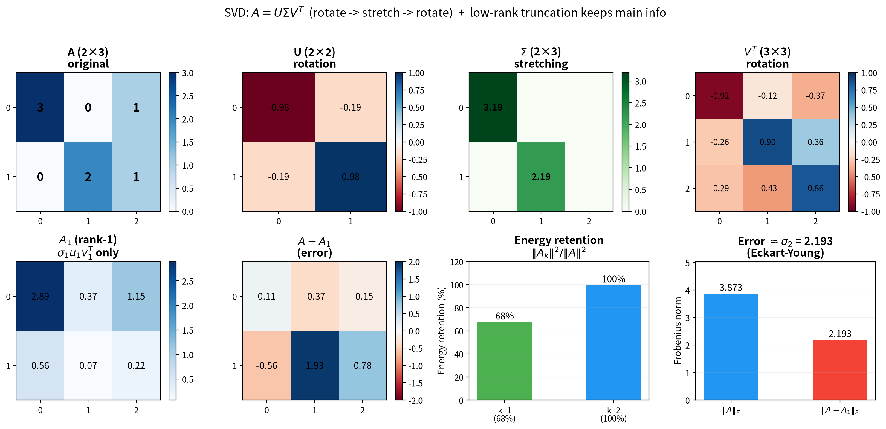
图19：左：SVD将矩阵 \(A\) 分解为 \(U\Sigma V^T\) 三步——先旋转（\(V^T\)）、再沿坐标轴拉伸（\(\Sigma\)，奇异值 \(\sigma_1 > \sigma_2\) 控制各方向拉伸倍数）、最后再旋转（\(U\)）。右：低秩截断只保留最大奇异值 \(\sigma_1\) 对应的秩-1分量 \(A_1 = \sigma_1 u_1 v_1^T\)，丢弃 \(\sigma_2\) 分量。截断后 \(A_1\) 是 \(A\) 的最佳秩-1近似（Eckart-Young定理），保留能量比例为 \(\sigma_1^2 / (\sigma_1^2 + \sigma_2^2)\)。
6.3 高效注意力方法全景图
SVD的低秩洞见不只停留在数据压缩层面——它催生了一整个方法家族。这张表格给你一个全景视角：
| 方法 | 机制 | 压缩对象 | 核心操作 | 压缩效果 | 效果 |
|---|---|---|---|---|---|
| 截断SVD | 低秩 | 任意矩阵 | 保留前k个奇异值 | 秩从d降到k | 数据压缩 |
| LoRA | 低秩 | 权重更新\(\Delta W\)（训练参数；推理时合并回\(W_0\)，零额外开销） | \(\Delta W = BA\)（秩r） | 训练参数从\(d^2\)降到\(2dr\) | 微调大模型 |
| MLA | 低秩 | KV缓存 | \(W^{UK} \cdot W^{DKV}\)分解 | 缓存从\(n \times d\)降到\(n \times d_c\) | 内存压缩为原来的1/8 |
| DSA | 稀疏 | 注意力矩阵元素 | 只算关键token对 | 计算量从\(O(n^2)\)降到\(O(nk)\) | 速度提升 |
| CSA | 稀疏 | 注意力矩阵元素 | 分层选择性计算 | 不同层用不同粒度 | 自适应效率 |
低秩方法（SVD/LoRA/MLA）通过因式分解减少有效维度，稀疏方法（DSA/CSA）通过选择减少非零元素——数学机制不同，但目标一致：
\[\text{高维对象} \xrightarrow{\text{发现结构（低秩或稀疏）}} \text{只保留关键部分} \xrightarrow{\text{大幅降本增效}} \text{高效AI}\]
这五种方法可以组合使用——LoRA微调权重、MLA压缩缓存、DSA稀疏计算，共同构成高效长文本AI的完整方案。
6.4 LoRA：低秩微调
LoRA基础：\(W = W_0 + BA\)
预训练模型（如GPT、BERT）已经在大规模数据上训练好了，权重矩阵 \(W_0\) 包含了丰富的知识。微调的目标不是推翻重来，而是在 \(W_0\) 的基础上做小调整。SVD告诉我们：有效的参数更新只存在于少数几个方向（低秩）。LoRA（Low-Rank Adaptation）只学这几个方向上的调整，把训练参数量从几十亿砍到几百万。
核心公式：
\[W = W_0 + B \cdot A\]
逐符号注释：
- \(W \in \mathbb{R}^{d \times d}\)：最终的权重矩阵，形状是 \(d\) 行 \(d\) 列。这就是模型里实际用的那个矩阵，负责把输入向量 \(x\) 映射成输出向量 \(h\)。
- \(W_0 \in \mathbb{R}^{d \times d}\)：预训练阶段学到的权重矩阵，冻结不动（frozen）。微调过程中它的每一个数字都保持不变，梯度不参与反向传播。
- \(B \in \mathbb{R}^{d \times r}\)：一个”高瘦”的矩阵，\(d\) 行 \(r\) 列，这是LoRA引入的可训练参数之一。
- \(A \in \mathbb{R}^{r \times d}\)：一个”矮胖”的矩阵，\(r\) 行 \(d\) 列，这是LoRA引入的另一个可训练参数。
- \(r\)（秩，rank）：一个远小于 \(d\) 的整数（比如4、8、16），决定了LoRA修正的”丰富程度”。
- \(\cdot\)（矩阵乘法）：\(B\) 和 \(A\) 相乘，得到一个 \(d \times d\) 的矩阵，但这个矩阵的秩最多只有 \(r\)。
参数量对比（震撼版）：
| 模型规模 | 层维度 \(d\) | 全参数 \(W_0\) | LoRA参数 (\(r=4\)) | 减少倍数 |
|---|---|---|---|---|
| 小型模型某层 | 512 | 262,144 | 4,096 | 64倍 |
| 大模型某层 | 4,096 | 16,777,216 | 32,768 | 512倍 |
| 超大模型某层 | 12,288 | 150,994,944 | 98,304 | 1,536倍 |
当 \(d=4096\) 时，全参数微调需要约1600万参数，LoRA只需要约3.3万——从1600万到3.3万，512倍的压缩。需要训练的参数少了，反向传播的计算量和优化器状态（梯度的动量、方差等）也相应减少，微调的运算量大幅下降。
为什么是低秩的？ 预训练模型已经在通用能力上非常全面了，特定任务的微调往往只是在某些”关键方向”上做些调整。比如让模型适应医学领域，主要需要调整与医学术语相关的那些语义方向，而不是重写整个语言理解系统。这种”集中在少数方向上”的调整，天然就具有低秩的结构。
推理时零额外开销：更妙的是，训练完成后可以把 \(BA\) 直接加进 \(W_0\) 得到 \(W = W_0 + BA\)，合并后的矩阵和原始 \(W_0\) 一样大——训练时只调几个旋钮，推理时零额外开销，不增加任何延迟或显存。这也是 LoRA 相比其他微调方法的关键优势：省的是训练成本，不付推理代价。
前向计算的数字演示：
\[h = W_0 x + B \cdot A \cdot x\]
输入向量 \(x\) 进来后，输出由两部分相加：\(W_0 x\) 是用预训练权重的”基础知识”，\(B \cdot A \cdot x\) 是LoRA的”增量贡献”。梯度只更新 \(B\) 和 \(A\)，\(W_0\) 纹丝不动。
取 \(d=4, r=2\)：
\[W_0 = I_4 = \begin{bmatrix} 1 & 0 & 0 & 0 \\ 0 & 1 & 0 & 0 \\ 0 & 0 & 1 & 0 \\ 0 & 0 & 0 & 1 \end{bmatrix}, \quad B = \begin{bmatrix} 1 & 2 \\ 3 & 4 \\ 5 & 6 \\ 7 & 8 \end{bmatrix}, \quad A = \begin{bmatrix} 1 & 0 & 1 & 0 \\ 0 & 1 & 0 & 1 \end{bmatrix}, \quad x = \begin{bmatrix} 1 \\ 2 \\ 3 \\ 4 \end{bmatrix}\]
计算 \(B \cdot A\)：
\[B \cdot A = \begin{bmatrix} 1 & 2 & 1 & 2 \\ 3 & 4 & 3 & 4 \\ 5 & 6 & 5 & 6 \\ 7 & 8 & 7 & 8 \end{bmatrix}\]
观察结果——第一列和第三列完全相同，第二列和第四列也完全相同。这不是巧合，这是低秩的”签名”！这个 \(4 \times 4\) 矩阵只有2个线性无关的列，秩恰好等于 \(r=2\)。
计算 \(W = W_0 + BA\)：
\[W = \begin{bmatrix} 2 & 2 & 1 & 2 \\ 3 & 5 & 3 & 4 \\ 5 & 6 & 6 & 6 \\ 7 & 8 & 7 & 9 \end{bmatrix}\]
计算输出 \(h = W x\)：
\[h = \begin{bmatrix} 2+4+3+8 \\ 3+10+9+16 \\ 5+12+18+24 \\ 7+16+21+36 \end{bmatrix} = \begin{bmatrix} 17 \\ 38 \\ 59 \\ 80 \end{bmatrix}\]
\(W_0\) 贡献了 \([1, 2, 3, 4]^T\)，LoRA修正贡献了 \([16, 36, 56, 76]^T\)。预训练的”底子”加上LoRA的”微调调料”，得到了最终结果。
LoRA有一个关键超参数：秩 \(r\)。\(r\) 太小，修正能力不够；\(r\) 太大，参数量和计算量又上去了。而且不同层的需求不同——靠近输入的层可能只需要微调一两个方向，靠近输出的层可能需要更丰富的修正。固定 \(r\) 对所有层一视同仁，不够灵活。下面三种变体分别从不同角度改进LoRA：
QLoRA：量化+低秩的双重压缩
LoRA减少了微调时需要训练的参数量，但它有一个前提：\(W_0\)（预训练权重）必须完整加载到显存中。一个7B参数的模型用16位浮点数存储，需要约14GB显存；用32位则需要约28GB。加上优化器状态、激活值和LoRA本身，24GB显存的消费级GPU（如RTX 3090/4090）装不下32位版本，16位版本也很紧张。
一句话：LoRA只省了训练参数，但没省模型本身的存储，24GB显存装不下7B模型的完整权重。
QLoRA（Quantized LoRA，量化LoRA）的核心思想是：把 \(W_0\) 从32位浮点数量化到4-bit（NormalFloat4，简称NF4）。量化就是用更少的比特表示同一个数——32位变成4位，存储量压缩为原来的1/8。但QLoRA不是简单的四舍五入，它使用了一种专门为神经网络权重分布优化的量化格式：NormalFloat（正态浮点）。
前置知识：神经网络权重的分布通常接近正态分布（中间密集，两端稀疏）。NormalFloat根据这个特性不均匀地分配量化点——中间区域量化点密集（保留精度），尾部区域量化点稀疏（允许更大误差）。实测表明，NF4量化对模型下游任务的性能损失通常<1%（注意：单个权重的量化误差可能更大，如下方示例中约1.6%，但LoRA的\(BA\)会在训练中补偿这些误差，最终模型输出几乎不受影响）。
QLoRA的完整公式很简单：
\[W_{\text{qlora}} = \underbrace{\text{quantize}(W_0, 4\text{-bit})}_{\text{冻结的4-bit基础权重}} + \underbrace{B \cdot A}_{\text{LoRA适配器（16-bit训练）}}\]
一个具体的量化演示：假设 \(W_0\) 中有一个权重 \(w = 0.063\)（32-bit浮点数，在计算机中占4字节）。
NormalFloat4怎么编码它？ 1. 查分布：LLM权重通常服从均值为0、标准差\(\sigma \approx 0.05\)的高斯分布。\(w = 0.063\) 落在”高频区域”（靠近均值） 2. 找量化点：NF4为这个位置分配了密集的量化点（以下数值为示意，实际NF4量化点由标准正态分布的分位函数精确计算），比如\(\{0.056, 0.062, 0.069, 0.076\}\) 3. 四舍五入：\(0.063\) 最接近 \(0.062\)，编码为4-bit二进制0110（十进制6）。存储只需半字节（0.5字节），精度损失仅 \(|0.063 - 0.062|/0.063 \approx 1.6\%\)
解量化时，0110 → 查表得\(0.062\)，临时恢复到16-bit用于计算。绝大多数权重（>95%）的量化误差都在2%以内。少数”离群值”（如\(w = 0.847\)，远离均值）误差较大，但LoRA的\(BA\)会在训练中补偿这些误差。
训练时，\(W_0\) 以4-bit格式驻留显存， forward pass 需要计算时临时解量化到16-bit；LoRA的 \(B\) 和 \(A\) 则始终以16-bit精度训练。两者相加得到最终的权重用于计算梯度。
一句话：QLoRA = 4-bit量化的 \(W_0\) + 16-bit的LoRA \(BA\)，双重压缩让消费级GPU也能微调大模型。
用一个类比来理解：LoRA是给教授配了一个研究生助理——只改助理，不动教授。QLoRA则是先把教授20年的知识笔记压缩成一本速记手册（4-bit量化），再配一个助理（LoRA）。速记手册占的书架空间只有原来的1/8，但核心知识都在。助理在速记手册的基础上做补充和调整。最终输出时，速记手册临时展开 + 助理的笔记 = 完整答案。
QLoRA的影响是巨大的。它让24GB显存的消费级GPU可以微调7B甚至13B的模型。如果没有QLoRA，这些模型只有拥有A100/H100集群的机构才能触及。可以说，QLoRA是“大模型平民化”的关键技术之一——它证明了知识（权重）可以被大幅压缩而不失精髓，而真正需要精细学习的部分（LoRA）只占极小的参数量。
SVD与LoRA的数学联系：\(BA\) 与SVD截断的等价构造
SVD不只是数据压缩工具，它还回答一个关键问题：LoRA 的 \(BA\) 为什么有效？ 答案就藏在 SVD 的最佳低秩近似定理里。
核心问题：LoRA 假设微调的修正量 \(\Delta W\) 是低秩的，用 \(BA\)（秩 \(r\)）去近似它。但”秩 \(r\) 的矩阵”有无穷多个，\(BA\) 凭什么能捕获最重要的信息？SVD 给出了数学保证。
工程说明：以下推导展示的是 SVD 与 LoRA 的数学联系。实践中 LoRA 最常用的初始化是零初始化（\(B=0\)，\(A\) 随机），训练起点 \(W = W_0 + BA = W_0\)，与预训练行为完全一致。下面的 SVD 分解不是推荐初始化方法，而是回答”\(BA\) 为什么有效”的数学原理。
Step 1：对预训练权重 \(W_0\) 做SVD
\[W_0 = U \Sigma V^T\]
- \(W_0 \in \mathbb{R}^{d \times d}\)：预训练权重矩阵（“知识结晶”，冻结不动）
- \(U \in \mathbb{R}^{d \times d}\)：正交矩阵（左奇异向量，像一组”输出空间的正交坐标轴”）
- \(\Sigma \in \mathbb{R}^{d \times d}\)：对角矩阵，对角线上的奇异值 \(\sigma_1 \geq \sigma_2 \geq \cdots \geq \sigma_d \geq 0\) 从大到小排列（“信息含量”的度量，越大越重要）
- \(V^T \in \mathbb{R}^{d \times d}\)：正交矩阵（右奇异向量的转置，像一组”输入空间的正交坐标轴”）
Step 2：取前 \(r\) 个奇异值和奇异向量
从 \(U\) 中取前 \(r\) 列，从 \(\Sigma\) 中取前 \(r \times r\) 子矩阵，从 \(V^T\) 中取前 \(r\) 行：
- \(U_r = U[:, :r] \in \mathbb{R}^{d \times r}\)：\(U\) 的前 \(r\) 列（最活跃的 \(r\) 个输出方向）
- \(\Sigma_r = \Sigma[:r, :r] \in \mathbb{R}^{r \times r}\)：前 \(r\) 个奇异值组成的对角矩阵
- \(V_r^T = V^T[:r, :] \in \mathbb{R}^{r \times d}\)：\(V^T\) 的前 \(r\) 行（最活跃的 \(r\) 个输入方向）
Step 3：用SVD结果初始化 \(B\) 和 \(A\)
\[B = U_r \cdot \Sigma_r^{1/2}, \quad A = \Sigma_r^{1/2} \cdot V_r^T\]
- \(\Sigma_r^{1/2}\)：对角矩阵，每个对角元取平方根（\(\sqrt{\sigma_1}, \sqrt{\sigma_2}, \ldots, \sqrt{\sigma_r}\)），把”信息含量”开平方后公平地分给 \(B\) 和 \(A\)
- \(B \in \mathbb{R}^{d \times r}\)：高瘦矩阵，承载输出方向的”骨架”
- \(A \in \mathbb{R}^{r \times d}\)：矮胖矩阵，承载输入方向的”骨架”
验证 \(BA\) 确实是 \(W_0\) 的 \(r\) 秩最佳近似：
\[B \cdot A = (U_r \cdot \Sigma_r^{1/2}) \cdot (\Sigma_r^{1/2} \cdot V_r^T) = U_r \cdot \Sigma_r \cdot V_r^T\]
这正是对 \(W_0\) 的SVD结果进行截断后得到的低秩近似。Eckart-Young-Mirsky定理保证了：在所有秩不超过 \(r\) 的矩阵中，\(U_r \Sigma_r V_r^T\) 是 \(W_0\) 在Frobenius范数意义下的最佳近似。这就是 LoRA 的数学基础：\(BA\) 的形式天然能表达秩 \(r\) 矩阵。但注意一个关键区分——SVD分解的是 \(W_0\)（冻结的预训练权重），而LoRA训练的 \(BA\) 近似的是 \(\Delta W\)（任务相关的微调修正量）。SVD of \(W_0\) 证明的不是”\(\Delta W\) 一定低秩”，而是”低秩矩阵能捕获矩阵中最重要的信息”。LoRA的假设是：微调修正量 \(\Delta W\) 与预训练权重 \(W_0\) 类似，也具有低秩结构（主要修正集中在少数几个方向上）。这个假设已被大量实验验证——奇异值衰减快的权重矩阵，其微调修正量同样集中在低秩子空间。训练中 \(B\) 和 \(A\) 从零初始化出发（\(BA=0\)，不改变初始行为），逐步学习到任务所需的低秩修正。
DoRA：幅度-方向解耦
LoRA的 \(BA\) 修正同时改变权重的方向和幅度，两者耦合在一起。DoRA（Weight-Decomposed Low-Rank Adaptation）把权重分解为幅度和方向两部分，分别微调。
核心直觉：权重矩阵 \(W\) 的每一行定义一个输出通道。这一行的”方向”决定该通道关注哪些输入特征，“幅度”（该行的长度）决定该通道的输出强度。微调一个任务时，有时只需要调整”关注哪些特征”（方向），有时只需要调整”这个通道有多重要”（幅度）。纯LoRA做不到分离——它的 \(BA\) 修正同时改了两者。DoRA把它们拆开，各自独立调。
Step 1：权重分解——把每行拆成幅度和方向
权重矩阵 \(W\) 的每一行 \(w_i\) 可以分解为一个标量（幅度）乘以一个单位向量（方向）：
\[w_i = m_i \cdot \frac{w_i}{\|w_i\|}\]
- \(m_i = \|w_i\|\)（该行的L2范数 \(\sqrt{w_{i1}^2 + w_{i2}^2 + \cdots}\)，即该行的长度——幅度）
- \(\frac{w_i}{\|w_i\|}\)（该行除以自己的长度，变成单位向量——方向）
这就像把一个力分解为”大小\(\times\)方向”：\(\vec{F} = |\vec{F}| \cdot \hat{F}\)。幅度 \(m_i\) 是标量，方向 \(\frac{w_i}{\|w_i\|}\) 是单位向量，两者乘回来等于原始权重行。
矩阵形式（对所有行同时操作）：
\[W = m \odot \frac{W}{\|W\|_{\text{row}}}\]
- \(m \in \mathbb{R}^d\)：幅度向量，每个元素是一行的范数
- \(\frac{W}{\|W\|_{\text{row}}}\)：方向矩阵，每行归一化为单位向量
- \(\odot\)：逐行乘法——\(m_i\) 乘以方向矩阵第 \(i\) 行的每个元素
Step 2：对方向部分做LoRA
\[D = W_0 + BA\]
\(D\) 是修正后的权重矩阵，和基础LoRA完全一样——在 \(W_0\) 基础上叠加低秩修正 \(BA\)。但 \(BA\) 同时改了 \(D\) 每行的方向和幅度。DoRA的关键在下一步：把幅度丢掉，只留方向。
Step 3：幅度向量可训练
幅度向量 \(m\) 初始化为 \(W_0\) 每行的范数，然后在训练过程中被梯度独立更新。相比LoRA，DoRA只多了 \(d\) 个参数（一个幅度向量），对于 \(d=4096\) 来说几乎无成本。
Step 4：DoRA的完整前向公式
\[h = \left[ m \odot \frac{D}{\|D\|_{\text{row}}} \right] \cdot x\]
- 算修正后的权重 \(D = W_0 + BA\)（\(BA\) 同时改了方向和幅度）
- 对 \(D\) 每行归一化（这一步丢掉 \(BA\) 带来的幅度变化，只留方向）
- 用幅度向量 \(m\) 逐行缩放（幅度由 \(m\) 独立控制，不受 \(BA\) 影响）
- 乘以输入 \(x\) 得到输出 \(h\)
对比LoRA的 \(h = (W_0 + BA) \cdot x\)：LoRA的 \(BA\) 同时改了方向和幅度，混在一起。DoRA在 \(BA\) 之后加一步归一化，把幅度剥离掉，再由 \(m\) 独立赋值——方向归 \(BA\) 管，幅度归 \(m\) 管。
数字代入演示：用一个独立的 \(4 \times 4\) 例子，设 \(W_0\) 的四行分别为 \([5,4,3,2]\)、\([6,3,1,0]\)、\([5,3,2,0]\)、\([4,3,2,1]\)（这里只关心每行的幅度，所以行内具体数值只需满足后面的范数）。
初始幅度 \(m^{(0)}\)：
\[m_1^{(0)} = \|[5, 4, 3, 2]\| = \sqrt{25+16+9+4} = \sqrt{54} \approx 7.348\]
同理：\(m_2^{(0)} = \sqrt{46} \approx 6.782\)，\(m_3^{(0)} = \sqrt{38} \approx 6.164\)，\(m_4^{(0)} = \sqrt{30} \approx 5.477\)
所以 \(m^{(0)} = [7.348,\ 6.782,\ 6.164,\ 5.477]^T\)。
方向归一化后，第1行变成 \([5, 4, 3, 2] / 7.348 \approx [0.680,\ 0.544,\ 0.408,\ 0.272]\)，验证范数为1，确实是单位向量。
训练过程中幅度怎么调？ \(m\) 的每个元素是一个可训练标量，初始化为 \(m^{(0)} = [7.348,\ 6.782,\ 6.164,\ 5.477]^T\)。反向传播时，损失函数对 \(m\) 求梯度，梯度告诉每个通道的幅度该增大还是减小。训练若干步后，假设 \(m\) 更新为 \(m' = [7.5,\ 6.5,\ 6.0,\ 5.5]^T\)——对比初始值，第1个通道从7.348涨到7.5（该通道更重要了），第2个从6.782降到6.5（该通道不太重要）。
这就是DoRA相比LoRA多出来的能力：\(BA\) 负责调方向（每个通道关注哪些输入特征），\(m\) 负责调幅度（每个通道的输出强度有多大）。两者独立更新，互不干扰。实验表明，在大多数下游任务上，DoRA的表现稳定优于纯LoRA。
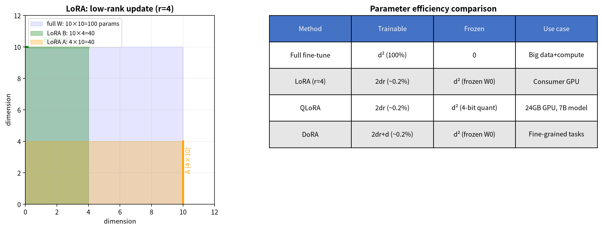
图20：左：LoRA 低秩更新示意图（\(d=10\)、\(r=4\)）——全参数微调要更新整个 \(d \times d = 100\) 个参数（蓝色区域），LoRA 只训练”高瘦”的 \(B\)（\(d \times r = 40\)，绿色）和”矮胖”的 \(A\)（\(r \times d = 40\)，橙色），合计 \(2dr = 80\) 个参数。右：参数效率对比表——全参数微调可训练参数 100%；LoRA/QLoRA 的可训练参数约 0.2%，其中 QLoRA 把冻结的 \(W_0\) 压到 4-bit（适合 24GB 显存跑 7B 模型）；DoRA 多一个幅度向量，为 \(2dr + d\)（适合细粒度任务）。
AdaLoRA：动态调秩
LoRA、QLoRA、DoRA都假设每层用同一个固定的秩 \(r\)。但模型不同层复杂度不同：有的层需要丰富的修正（大 \(r\)），有的层只需微调一两个方向（小 \(r\) 就够了）。AdaLoRA（Adaptive LoRA）的做法是让 \(r\) 在训练过程中自动调整。
具体来说，AdaLoRA把每层的 \(BA\) 分解写成 SVD 形式 \(B A = P \Lambda Q^T\)（其中 \(\Lambda\) 是对角矩阵，对角线元素就是各方向的”重要性”）。训练过程中，重要性低的方向对应的 \(\Lambda\) 元素会自动缩小，缩小到接近零的方向被剪枝掉；同时，参数预算被重新分配给重要性高的方向。最终每层自动收敛到不同的有效秩——复杂层保留更多方向，简单层自动精简。
这和SVD低秩近似的思路一脉相承：SVD按奇异值大小截断，AdaLoRA在训练中动态地做这件事，让模型自己决定每层保留几个方向。
四种低秩微调方法对比：
| 方法 | 解决的问题 | 核心改动 | 额外参数 |
|---|---|---|---|
| LoRA | 全参数微调运算量太大 | \(W_0 + BA\)，只训 \(B,A\) | \(2dr\) |
| QLoRA | \(W_0\) 存储太大 | \(W_0\) 量化到4-bit | \(2dr\) |
| DoRA | 方向和幅度耦合 | \(BA\) 调方向 + \(m\) 调幅度 | \(2dr + d\) |
| AdaLoRA | 固定秩 \(r\) 不够灵活 | 训练中动态调整每层 \(r\) | \(2dr\)（总量不变） |
四种方法不互斥——你可以同时用QLoRA（量化 \(W_0\)）+ DoRA（解耦幅度方向）+ AdaLoRA（动态分配秩），三者作用于不同环节，叠加生效。
自查：合上书，能默写 \(W = W_0 + BA\)，并说出 \(B\)、\(A\) 的维度（\(d \times r\) 与 \(r \times d\)）和谁被冻结吗？
Part A 小结：你已经掌握了什么
到这里，你应该能回答四个问题：
- SVD 把任意矩阵拆成哪三块？为什么截断后仍是”最佳近似”？
- 低秩截断为什么能压缩？能量保留比例在衡量什么？
- LoRA 为什么能把训练参数量从 \(d^2\) 降到 \(2dr\)？推理时为什么零额外开销？
- §6.3 的全景表里，低秩和稀疏两条路的本质区别是什么？
核对你的答案
- \(A=U\Sigma V^T\)：\(U,V\) 是旋转/反射，\(\Sigma\) 是对角拉伸；Eckart-Young 定理保证截断后是相同秩下的最佳近似。
- 因为奇异值衰减快，少数方向承载大部分能量；能量保留比例 = 前 \(k\) 个奇异值平方和 / 全部平方和。
- LoRA 把 \(\Delta W\) 分解为 \(B\cdot A\)，可训练参数从 \(d^2\) 降到 \(2dr\)；推理时把 \(BA\) 合并回 \(W_0\)，所以零额外开销。
- 低秩通过因式分解减少有效维度，稀疏通过选择减少非零元素/计算量；两者机制不同，可以组合。
如果核对后仍有模糊，回看 §6.2 和 §6.4，再进入 Part B。
Part B：高效 AI 的工程拼图
Part B 核心：MLA/DSA/CSA/MoE 分别压维度、压计算、压激活，组合起来才是高效 AI 工程。
Part A 解决了”低秩是什么、LoRA 怎么用它”。Part B 把同一双眼睛转向 Attention 和整个模型：MLA/DSA/CSA 压缩或跳过计算，MoE 走另一条稀疏激活的路，最后在 AI 落地表中汇合。
6.5 低秩注意力方法（MLA / DSA / CSA）
Ch5 讲过 Attention 推理时需要缓存 K、V 矩阵（\(n \times d \times \text{层数}\)）。当 \(n=100k, d=4096\) 时，这是几十 GB 显存。低秩注意力方法从不同角度解决这个问题。
MLA：低秩压缩维度
MLA（Multi-head Latent Attention，DeepSeek-V2）的核心假设：训练后的 KV 矩阵奇异值衰减较快——前几十个方向承载了大部分信息（这是对训练后模型的经验观察，也是MLA有效的前提条件）。
回忆Ch5：标准Attention中每个head有独立的 \(W_K^{(i)}\) 和 \(W_V^{(i)}\)，把输入投影到 \(d_k\) 维。MLA不再为每个head独立投影，而是先把所有head的信息统一压缩到一个低维的 latent 向量 \(c\)（维度 \(d_c \ll d\)，通常 \(d_c = d/8\)）中，再展开回各head的K和V——注意公式里 \(c\) 没有 head 下标：所有 head 共享同一个 latent 向量 \(c\)，各 head 的差异全在展开矩阵 \(W^{UK}\)、\(W^{UV}\) 的不同区块里（每个 head 用自己的那一段）。这正是压缩的来源：\(d\) 维的 K/V 信息被挤进 \(d_c\) 维的 \(c\)，缓存时只存 \(c\) 不存各 head 的 K/V。
核心公式：
\[c = W^{DKV} \cdot h \quad \text{(编码：把隐藏状态压缩为latent向量)}\]
\[K = W^{UK} \cdot c, \quad V = W^{UV} \cdot c \quad \text{(解码：从latent恢复K/V)}\]
与LoRA的数学同构：把两步合成一步，\(K = W^{UK} \cdot (W^{DKV} \cdot h) = (W^{UK} \cdot W^{DKV}) \cdot h\)。令 \(W_{\text{eff}}^K = W^{UK} \cdot W^{DKV}\)，则 \(\text{rank}(W_{\text{eff}}^K) \leq d_c\)——这与LoRA的 \(\text{rank}(BA) \leq r\) 是同一个低秩分解结构：
| LoRA | MLA | |
|---|---|---|
| 分解式 | \(B \cdot A\) | \(W^{UK} \cdot W^{DKV}\) |
| 瓶颈维度 | \(r \ll d\) | \(d_c \ll d\) |
| 压缩因子 | \(A \in \mathbb{R}^{r \times d}\) | \(W^{DKV} \in \mathbb{R}^{d_c \times d}\) |
| 解压因子 | \(B \in \mathbb{R}^{d \times r}\) | \(W^{UK} \in \mathbb{R}^{d \times d_c}\) |
区别只在用途：LoRA 冻结 \(W_0\)、只训练 \(B \cdot A\) 作为修正项；MLA 从头训练整个 \(W^{UK} \cdot W^{DKV}\)，推理时只缓存中间的 \(c\)。由 \(d_c = d/8\) 得压缩比 \(d/d_c = 8\)。
\(W^{DKV}\)（\(d_c \times d\)）是压缩矩阵，\(W^{UK}\) 和 \(W^{UV}\)（均 \(d \times d_c\)）是解压矩阵。推理时只需缓存 \(c\)（\(n \times d_c\)）而非完整 KV（\(n \times d\)）。
类比：帮读者找”类似的书”，标准做法是每次搬来整本书比对（完整 KV）。MLA 给每本书提前做一张索引卡（latent 向量 \(c\)），只记录关键特征。比对时只看卡片，不搬整本书。内存压缩为原来的约1/8，质量损失很小。
DSA/CSA：稀疏减少数量
DSA（DeepSeek Sparse Attention）只计算”关键 token 对”的注意力，其余直接赋零。若每个 token 只关注 \(k\) 个关键位置（\(k\) 为常数），计算量从 \(O(n^2)\) 降到 \(O(nk)\)；选择关键位置的策略本身也需要开销，具体取决于实现。
CSA（Compressed Sparse Attention）跨尺度分层：粗粒度看全局结构（低秩），细粒度看局部细节（较高秩），不同尺度自适应分配计算资源。
三者关系：MLA 压缩 KV 的维度（从 \(d\) 到 \(d_c\)，低秩），DSA 减少注意力计算的token对数量（从 \(n^2\) 到 \(O(nk)\)，稀疏），CSA 在不同尺度选择性分配计算资源。三者机制不同，可以组合使用。
6.6 为什么低秩无处不在？
看完这五种低秩方法，你可能会问一个问题：为什么低秩在AI里这么好用？ 答案藏在三个层面。
第一，自然界的信息本来就是冗余的。 现实世界中的数据不是均匀分布在所有维度上的——它们有结构、有模式、有相关性。一张人脸照片有100万像素，但描述”这是一张人脸”只需要几十个关键特征（眼睛位置、鼻子形状、嘴巴弧度）。SVD的低秩截断本质上是在说：不要为每一个像素单独存储信息，只存储那些能重建整体的”关键方向”。
第二，预训练模型是”过度完备”的。 大模型的参数量（几百亿甚至上千亿）远大于它实际需要表示的有效信息量。这不是浪费，而是必要的——过度完备的表示让模型有能力学习各种复杂模式。但这也意味着，模型内部存在大量冗余。LoRA的发现就是：你不需要动所有参数来适配一个新任务，只需要在几个关键方向上微调。
第三，低秩等于抓住本质、丢掉噪音。 大奇异值对应信号（数据的结构、模式、趋势），小奇异值对应噪音（随机波动、测量误差、无关细节）。低秩方法的核心操作——保留大方向、丢弃小方向——本质上是一个智能滤波器。它不是在盲目丢数据，而是在区分”重要”和”不重要”。
未来方向：随着模型越来越大（万亿参数级）、序列越来越长（百万token级），低秩方法只会越来越重要。SVD、LoRA、MLA、DSA、CSA——这些方法不是独立的技巧，而是同一条底层规律的不同面孔。甚至优化器也在利用低秩结构：Ch1 §1.5 讲的 Muon 对动量矩阵做正交化（等价于把 SVD 中的奇异值全拉平为 1，只保留 \(UV^T\)），防止更新坍缩到低秩子空间。把它们组合起来，就是通往高效AI的完整路线图。
6.7 MoE：稀疏激活的互补路径
低秩方法（LoRA、MLA、SVD截断）是高效AI的一条路——以小博大。但还有另一条同样重要的路：MoE（Mixture of Experts，混合专家），它的思路不是压缩，而是稀疏激活。注意：MoE不是低秩方法；它减少每次前向计算调用的参数量，低秩减少参数/缓存的维度——两者作用于不同对象，互补而不冲突。
一句话：低秩方法以小博大（LoRA 训练时只调低秩增量、推理时合并回原矩阵零开销，MLA 压 KV 缓存，SVD 截断压矩阵元素），MoE 减少单次计算量，两条路互补。
路由：每个token选择专家
MoE的核心结构很简单：每个”层”不再是一个统一的神经网络，而是拆成 \(N\) 个专家（expert，本质上是小的前馈网络），外加一个路由器（gating network，一个小型分类器）。输入来了，路由器决定把这个输入送给哪几个专家——通常是2个。其余 \(N-2\) 个专家完全不动，既不计算也不耗电。
\[y = \sum_{i=1}^{N} G(x)_i \cdot E_i(x)\]
\(E_i(x)\) 是第 \(i\) 个专家对输入 \(x\) 的处理结果，\(G(x)_i\) 是路由器分配给第 \(i\) 个专家的权重（大部分为0，只有少数非零）。
一个具体的路由演示：假设有\(N = 8\)个专家，输入是一个token的嵌入向量\(x\)。路由器\(G\)是一个线性层+Softmax，输出8个权重：
\[G(x) = \text{Softmax}(x \cdot W_g) = [0.01,\ 0.02,\ 0.35,\ 0.01,\ 0.05,\ 0.01,\ 0.50,\ 0.05]\]
权重最高的两个是专家3（0.35）和专家7（0.50）。设定top-2路由（只激活权重最高的2个专家），其余归零：
\[G(x)_{\text{sparse}} = [0,\ 0,\ 0.35,\ 0,\ 0,\ 0,\ 0.50,\ 0]\]
最终输出：\(y = 0.35 \cdot E_3(x) + 0.50 \cdot E_7(x)\)。专家1、2、4、5、6、8完全未参与计算。8个专家只用了2个——75%的参数被跳过。
小细节：这里 \(0.35 + 0.50 = 0.85 \neq 1\)，输出 \(y\) 没归一化。工程上有两种做法：一是对 top-2 权重重新归一化（\(0.35/0.85 \approx 0.41\)、\(0.50/0.85 \approx 0.59\)），二是直接用原始权重（总和可不为 1，靠后续层自适应）。两种都有人用，本例展示的是”不归一化”的写法——重点是只有两个专家参与，权重和是否为 1 不影响这个结论。
用类比来理解：MoE就是大厨房的分工制度。客人来了，不是让全厨房的厨师都来做这一道菜（Dense模型的做法），而是先由前台（路由器）判断这道菜属于什么类型，只派给2-3个对口的厨师（激活的专家）。炒菜的派炒菜的，烧烤的派烧烤的——全厨房有几十个厨师（几百个专家），但每道菜只用其中几个。总厨师数很多（总参数量大），但每道菜消耗的人力很少（每次前向计算量小）。
负载均衡：让每个专家都有活干
top-\(k\)路由有个致命的失败模式：路由坍塌。如果路由器发现专家3和专家7总是给出最好的结果，它会越来越倾向于把输入送给它们，其他专家拿不到训练信号，能力退化，路由器更不敢选它们——正反馈死循环。最终256个专家只有2个在干活，其余254个成了死参数。
解法是辅助损失（auxiliary loss）：在训练目标之外加一个惩罚项，强迫每个专家收到的token数量大致均匀。最常见的形式是：
\[\mathcal{L}_{\text{aux}} = \alpha \cdot N \cdot \sum_{i=1}^{N} f_i \cdot P_i\]
其中 \(f_i\) 是专家 \(i\) 实际收到的token比例（频次，无梯度），\(P_i\) 是路由器分配给专家 \(i\) 的平均概率（有梯度），\(N\) 是专家数，\(\alpha\) 是超参数（通常很小，如0.01）。乘积形式的设计精髓在于：\(f_i\) 被detach（当作常数），梯度 \(\partial \mathcal{L}_{\text{aux}} / \partial P_i = \alpha N f_i\) 直接压低被高频使用的专家的路由概率——专家越忙，路由器被推得越狠。如果用 \(\sum (P_i - 1/N)^2\)（不看频次），梯度会无差别地把所有 \(P_i\) 推向 \(1/N\)，即使某些专家确实更适合某些任务；如果用 \(\sum (f_i - 1/N)^2\) 且 \(f_i\) detached，梯度为零。乘积形式是让”测量（频次）“和”可控量（概率）“耦合起来的经典设计（也有其他变体，乘积形式最常用）。
DeepSeek-V3的改进：辅助损失有个副作用——它在全局层面均衡负载，但不保证每个batch内均匀。DeepSeek-V3用无辅助损失的负载均衡（auxiliary-loss-free balancing）替代：在路由器的Softmax之前，给每个专家的logit加一个偏置项 \(b_i\)。偏置项不参与梯度回传，而是由一个简单的控制器动态调整——如果专家 \(i\) 最近被选得太少，就增大 \(b_i\) 让它更容易被选中。这比辅助损失更精准（直接调控选择频率而非间接惩罚），也避免了辅助损失干扰主训练目标的问题。
容量因子：防止”厨房堵塞”
即使负载均衡了，单个batch内仍可能出现大量token涌向同一个专家的情况——就像午饭时间所有客人都点了炒菜，炒菜厨师忙不过来。容量因子（capacity factor）给每个专家设了一个硬上限：每个batch最多处理 \(C = \text{capacity\_factor} \times \frac{\text{batch\_tokens}}{N}\) 个token。超出容量的token被丢弃（drop）或溢出到下一层。
容量因子是吞吐和质量的旋钮： - 太小（如0.5）：大量token被丢弃，信息损失严重 - 太大（如4.0）：几乎不丢token，但每个专家要预留大量计算资源，稀疏性优势被削弱 - 典型值：1.0-1.5
被丢弃的token怎么处理？两种工程方案：零填充（直接用零向量代替，最简单但信息损失）和循环路由（溢出的token在下一层优先处理，信息不丢但增加延迟）。现代MoE实现（如Llama 4、Qwen3）也有用更精细的方案——把被丢弃的token通过残差连接直接传到下一层，保证信息不中断。
训练和推理的不对称
MoE有一个容易被忽略的特性：训练时所有专家都参与（梯度更新），推理时只激活少数专家。
训练时，每个batch的token被分散到不同专家，所有专家都收到梯度更新。这意味着256个专家的参数都在学习——总训练算力与Dense模型相当（甚至更高，因为路由器也要训练）。
推理时，每个token只经过2个专家。256个专家的参数全部驻留在显存里（总参数量671B），但计算量只有37B。这就是MoE的核心trade-off：用显存换算力。
| Dense模型 | MoE模型 | |
|---|---|---|
| 总参数量 = 激活参数量 | ✓ | ✗（总参数量 >> 激活参数量） |
| 训练算力 ∝ 总参数量 | ✓ | ✓（所有专家都训练） |
| 推理算力 ∝ 激活参数量 | ✓ | ✓（只算激活的专家） |
| 推理显存 ∝ 总参数量 | ✓ | ✓（所有参数都要驻留） |
关键洞察：MoE让”模型容量”（总参数）和”单步计算量”（激活参数）解耦。Dense模型的671B参数意味着每次前向都要算671B；MoE的671B参数只有37B在算，但全部671B都要驻留在显存里。这就是为什么DeepSeek-V3推理时需要多卡——不是算力不够，是显存装不下所有专家。
与低秩的互补
主流大模型已纷纷转向MoE： - GPT-4：据传闻采用 \(8\times220\)B 专家结构 - Llama 4 Maverick：128个专家（Scout 为 16 个） - DeepSeek-V3：256个专家，总参数量671B，每次只激活37B - Qwen3：128个专家 - Grok 3：据报道128个专家，总参数量约1.2T（xAI未正式公开架构细节）
关键洞察：MoE和低秩互补——它们作用于不同对象（MoE减少每次激活的专家数，低秩减少矩阵的有效秩），效果独立可叠加。DeepSeek-V3就是同时用MoE（稀疏激活，减少单次前向计算量）+ MLA（低秩压缩KV cache，减少推理内存）。前者解决”算得快”，后者解决”存得下”。
一个完整的前向计算演示
把路由、负载均衡、容量因子串起来，看一个256专家、top-2路由的MoE层在单次前向中发生了什么：
假设batch大小为4，序列长度为1024，共4096个token。256个专家，容量因子3.0，每个专家容量 = \(3.0 \times 4096 / 256 = 48\) 个token。
- 路由：4096个token各自经过路由器，每个选出top-2专家。产生 \(4096 \times 2 = 8192\) 个”token-专家”分配对。
- 容量检查：统计每个专家收到的token数。平均每个专家收到 \(8192 / 256 = 32\) 个token，未超容量48。但负载不均：如果专家42收到60个token（超过容量48），前48个正常处理，后12个被丢弃或溢出。
- 稀疏计算：只有被分配且未超容量的token进入对应专家。每个专家只处理自己收到的token，其余参数不参与计算。
- 加权汇总：每个token的输出 = 两个激活专家的加权和（权重来自路由器的Softmax输出）。
数字直觉：4096个token \(\times\) 2个专家 = 8192次专家前向计算。如果是Dense模型，4096个token要过完整的671B参数。MoE只激活了 \(8192 / 256 = 32\) 个——等等，这个 32 是每个专家平均收到的 token 数（8192 个”token-专家”分配对 \(\div\) 256 个专家），不是激活的专家数。激活的专家数是 top-2 里的 2（每个 token 只激活 2 个专家）。这两个数字要分清：
- 每 token 激活 2 个专家（top-2 路由）→ 稀疏计算的核心：每次前向只有 \(2/256 \approx 0.78\%\) 的专家参与计算。
- 每专家平均收 32 个 token（8192/256）→ 负载均衡的视角：256 个专家分摊 8192 个分配对，平均每个专家处理 32 个 token（容量上限 48，见步骤2）。
DeepSeek-V3 的”37B 参数”是另一个口径：671B 总参数里，每个 token 实际激活约 37B（含共享专家和 MoE 层内激活的专家），\(37/671 \approx 5.5\%\)——注意 5.5% 是”激活参数占比”，与”激活专家占比 0.78%“不同，因为每个专家内部还有共用的 attention 等非 MoE 参数。三个数字（2 个专家、32 个 token/专家、37B 参数）是 MoE 的三个不同侧面，别混为一谈。
6.8 AI落地
| 方法 | 机制 | 场景 | 一句话解释 |
|---|---|---|---|
| SVD截断 | 低秩 | 图像压缩 | 没有SVD，一张高清图要存储几百万个像素；有了SVD截断，只保留几十个主成分就能重建出肉眼几乎看不出差别的图片 |
| LoRA | 低秩 | 消费级GPU微调7B模型 | 没有LoRA，全参数微调需要专业级高显存GPU集群，普通人无法触及；LoRA让24GB显存的家用显卡也能打造专属AI助手 |
| 多LoRA切换 | 低秩（工程应用） | 风格切换（如水彩/赛博朋克） | 没有LoRA，每个任务都要存一份全参数副本（7B模型约14GB），100个任务就是1.4TB；LoRA插件每个只有几十MB，像换手机壳一样轻松切换 |
| MLA | 低秩 | 长文本推理（100k tokens） | 没有MLA，KV缓存内存爆炸，长文本根本无法处理；MLA缓存压缩为原来的1/8，让超长文本成为可能 |
| DSA | 稀疏 | 实时长文档问答 | 没有DSA，注意力计算量随序列长度平方增长（\(O(n^2)\)），实时性无法满足；DSA把计算量降到\(O(nk)\)，长文档也能秒回 |
| CSA | 稀疏 | 多粒度文档理解 | 没有CSA，统一处理粒度导致效率低下；CSA像读书先读目录再读重点章节，不同部分用不同精度，效率最大化 |
| QLoRA | 量化+低秩 | 消费级GPU微调7B/13B模型 | 没有QLoRA的4-bit量化，24GB显存装不下7B模型的完整权重。QLoRA = 4-bit \(W_0\) + LoRA BA，让家用显卡也能打造专属AI助手 |
| MoE | 稀疏激活 | GPT-4/Llama 4/DeepSeek-V3 | 没有MoE的稀疏激活，每次推理都要计算全部参数。MoE只激活2个专家，让671B参数的DeepSeek-V3每次只算37B——“算得快”和”存得下”兼得 |
| DoRA | 低秩（LoRA变体） | 精细情感分类 | 没有DoRA的幅度-方向解耦，纯LoRA在需要区分”中性”和”轻微积极”等细微差别时表现不佳；DoRA用几乎零额外成本稳定提升效果 |
Part B 小结：从低秩到高效 AI
到这里，你应该能区分四件事：
- MLA 压的是 KV 的维度（低秩），DSA/CSA 压的是注意力计算量（稀疏）。
- MoE 不压缩矩阵，而是减少每次激活的专家数。
- 低秩与稀疏/MoE 可以组合，解决不同瓶颈。
- §6.8 的落地表能帮你在具体场景里选方法。
一句话对照
- MLA：把 K/V 压进低维 latent，缓存从 \(n\times d\) 降到 \(n\times d_c\)。
- DSA/CSA：不降维，而是只算关键 token 对，把 \(O(n^2)\) 降到 \(O(nk)\)。
- MoE：不压矩阵，每次只激活少数专家，减少前向计算量。
- 它们可以叠加：LoRA 省训练，MLA 省缓存，DSA 省计算，MoE 省激活。
如果这四点都清楚，就可以进入常见误解与章末回顾。
6.9 常见误解
误解一：“SVD 就是特征分解的别称吧？”
很多初学者听到”分解”两个字，就以为SVD和特征分解是一回事。这大错特错。
特征分解要求矩阵必须是方阵（行数等于列数），而且还要求矩阵满足特定对称性条件。它只能对某些特殊的方阵做分解。
SVD则完全不同：它对任意矩阵都适用——方的、扁的、高的，来者不拒。特征分解只能处理特定类型的矩阵（方阵且可对角化；对称矩阵一定满足，所以教材常以对称矩阵为例），而SVD来者不拒。特征分解其实是SVD的一个特殊情况：当 \(A\) 是对称矩阵时，SVD退化成特征分解（此时 \(U = V\) 且奇异值的绝对值就是特征值）。
记住：特征分解是”专属VIP服务”（条件苛刻），SVD是”全民普惠服务”（无门槛）。
误解二：“截断SVD就是丢数据，肯定不好吧？”
很多人觉得”丢掉信息”一定是坏事，但事实恰恰相反——基于SVD的低秩截断是SVD应用中最值钱的技术之一。
关键在于区分”信号”和”噪音”。在实际数据中，大奇异值对应数据的主要结构、主要模式、主要趋势——这些是你真正关心的”信号”。小奇异值往往对应随机波动、测量误差、无关细节——这些就是”噪音”。SVD截断丢掉的是后者，不是前者。就像你用收音机听音乐：大奇异值是那个清晰的旋律，小奇异值是背景里的”嘶嘶”静电声。截断操作相当于调低了噪音响度，让主旋律更突出。
但截断确实有个度的问题。截得太少，噪音没去掉；截得太多，连主旋律都被砍了。能量保留比例达到90%以上通常是个不错的平衡点。
误解三：“LoRA就是对 \(W_0\) 做SVD，然后只保留前 \(r\) 个奇异值”
这个想法完全错了。LoRA从不对预训练权重 \(W_0\) 做SVD，也从不修改 \(W_0\)。\(W_0\) 在微调过程中是冻结的（frozen），它的每一个数字都保持不变。
LoRA假设的是：微调所需的修正量 \(\Delta W\) 是低秩的，然后用两个可训练矩阵的乘积 \(B \cdot A\) 去近似这个 \(\Delta W\)。最终的权重是 \(W = W_0 + B \cdot A\)，其中只有 \(B\) 和 \(A\) 参与训练，\(W_0\) 的梯度不参与计算。
打个比方：你不是把乐器拆开重新设计每一个零件（对 \(W_0\) 做SVD），而是在现有乐器的基础上，调节几个旋钮（训练 \(B\) 和 \(A\)）。乐器的主体结构（\(W_0\)）纹丝不动，但调节后的整体效果（\(W = W_0 + BA\)）却恰到好处。
补充说明：SVD与LoRA的数学联系（6.4节）展示了 \(BA\) 天然是秩 \(r\) 最佳近似的结构。实践中 LoRA 用零初始化（\(B=0\)，\(A\) 随机），训练从 \(W = W_0\) 出发，\(B\) 和 \(A\) 逐步学习到任务所需的低秩修正——SVD 保证了这种低秩修正能捕获最重要的信息方向。
误解四：“秩 \(r\) 越小越好，参数量最少”
既然LoRA的卖点是参数少，那很多人就想：\(r\) 设成1不就更好了？
\(r\) 不是越小越好，这是效率和表达力之间的权衡。\(r\) 决定了LoRA修正的秩上限——你的”调节自由度”。
- 如果 \(r\) 太小（比如 \(r=1\)），你的修正只能朝一个方向上调整。这就像只有一个旋钮——能调，但效果粗糙。
- 如果 \(r\) 太大，虽然能表达更丰富的修正，但参数量也随之增加，违背了”高效微调”的初衷。
固定秩 \(r\) 不够灵活怎么办？AdaLoRA 能自动判断每一层需要多大的秩——复杂的层多分一些，简单的层少分一些，用更少的总参数量达到更好的效果。
误解五：“低秩方法之间是互斥的，只能选一个用”
这是最常见的误解，也是本章要澄清的核心。
低秩方法之间不是互斥关系，而是互补关系：
- LoRA作用于权重空间：微调时只更新少量参数
- MLA作用于激活空间：推理时只缓存压缩后的中间结果
- DSA作用于计算图：只计算关键的token对注意力
- CSA作用于分层结构：不同层、不同尺度用不同精度
这四种方法可以同时使用，互不冲突。想象你在优化一座图书馆的运营：LoRA是培训员工只学新分类规则（不动书架），MLA是给书贴索引卡（不搬整本书），DSA是重点维护热门书架（不巡视全馆），CSA是不同区域用不同的管理粒度。四个策略一起用，图书馆的效率才能达到最优。
在实际的长文本AI系统中（如DeepSeek-V2/V3），你确实能看到LoRA（微调适配层）+ MLA（压缩KV缓存）+ DSA（稀疏注意力）的组合使用。每种方法解决不同层面的问题，组合起来就是极致效率。
6.10 本章回顾
低秩方法彼此的互补关系已经清楚了。不过，这些方法背后的思路，其实和前面每一章的数学工具是相通的——把它们放在一起看，能看出什么来？
Ch1 梯度下降在高维空间里找”最陡的下山方向”——但”最陡”取决于度量。Adam用自适应步幅为每个方向动态调整步长，本质思想相通：不同方向应该被区别对待。
Ch2 拉格朗日乘子法告诉我们：约束决定了问题的结构。LoRA的低秩假设（\(\Delta W = BA\)）正是把”秩不超过 \(r\)“作为约束——约束优化不只限制自由度，它揭示问题的本质结构。
Ch3 最大熵告诉我们：Softmax的指数形式是约束下”最诚实推断”的必然解。温度 \(T = 1/|\lambda|\) 直接来自拉格朗日乘子——约束的松紧决定了输出的形状。
Ch4 反向传播是链式法则的工程实现——梯度在计算图中流动。LoRA中梯度只流向 \(B\) 和 \(A\)，\(W_0\) 冻结不动——这本身就是一种结构化的梯度约束。
Ch5 Attention中，\(QK^T\)（Softmax之前的分数矩阵）的秩受限于投影维度 \(d_k\)（通常 \(d_k \ll n\)）。MLA利用这一点压缩KV，DSA只计算关键token对——Attention的分数矩阵天然低秩。
Ch6 SVD是这一切的数学基础——它告诉我们：高维空间里只有少数方向真正重要（信息主干道 vs 噪音小巷）。
六章怎么串起来：梯度下降（Ch1）在约束定义的低秩子空间（Ch2）中做优化，约束的松紧调节输出的形状（Ch3），梯度通过反向传播结构化地流动（Ch4），在 Attention 天然低秩的舞台上（Ch5），沿着 SVD 揭示的关键方向（Ch6）找到真正重要的少数维度。
这不仅是技术技巧，更是一种面对复杂世界的策略：先找到真正重要的少数维度，再在这些维度上倾尽资源。回看整条问题链：怎么下山（梯度下降）→ 有约束怎么办（拉格朗日）→ 概率输出怎么来（Softmax）→ 梯度怎么传回去（反向传播）→ 权重怎么动态分配（Attention）→ 大矩阵怎么瘦身（SVD 与低秩）。每一步的答案都引出下一个问题——这就是从下山到高效 AI 的完整思路。
本章自检：
【知识点】
SVD把一个矩阵拆成了哪三部分？各自的几何含义是什么？
提示
SVD 拆成哪三块？分别对应：旋转、拉伸、再旋转——哪块是”拉伸”？答案
A=U\(\Sigma\)VT。U：输出空间旋转/反射；\(\Sigma\)：对角线拉伸（奇异值从大到小）；VT：输入空间旋转/反射。（§6.2.1）
LoRA的参数量为什么能从\(d^2\)降到2dr？低秩假设的直觉是什么？
提示
LoRA 把 \(d\times d\) 的 \(\Delta W\) 拆成 \(B(d\times r)\cdot A(r\times d)\)——参数量从 \(d^2\) 变成多少？直觉：微调修正量在少数方向。答案
LoRA 用 \(B(d\times r)\cdot A(r\times d)\) 近似 \(\Delta W\)，参数量从 \(d^2\) 降到 \(2dr\)。直觉：微调修正量 \(\Delta W\) 是低秩的，只需在少数关键方向上调整。（§6.4）
MLA的 \(K = W^{UK} \cdot W^{DKV} \cdot h\) 与LoRA的 \(W = W_0 + B \cdot A\) 在数学结构上有什么共同点？为什么说两者是同构的低秩分解？
提示
LoRA 的 B·A 和 MLA 的 WUK·WDKV 都是”大矩阵=两个小矩阵相乘”——共同点是什么？压缩因子/解压因子对应谁？答案
LoRA的B·A和MLA的WUK·WDKV都是高维矩阵的低秩因式分解。rank(BA)\(\leq r\)，rank(WUK·WDKV)\(\leq d_c\)。压缩因子对应A/WDKV，解压因子对应B/WUK。区别：LoRA冻结\(W_0\)只训练BA作修正，MLA从头训练整个乘积并缓存中间的c。核对你的答案：至少包含 ①共同点=低秩因式分解（rank ≤ 瓶颈维度）；②压缩/解压因子的对应；③一个区别（冻结修正 vs 从头训练+缓存中间量）。
QLoRA相比LoRA多了什么？为什么它能让消费级GPU微调大模型？
提示
QLoRA 把谁量化了？LoRA 省训练参数，QLoRA 还省了什么？答案
QLoRA把\(W_0\)从32-bit量化到4-bit（NF4），存储压缩为原来的1/8。LoRA只省训练参数，QLoRA连模型存储也省了。（§6.4）
DSA/CSA的”稀疏”与LoRA/MLA的”低秩”在数学机制上有什么本质区别？
提示
低秩减少”有效维度”，稀疏减少”非零元素”——机制一样吗？答案
低秩通过因式分解减少矩阵的有效维度（秩）；稀疏通过选择减少非零元素数量。零元素不改变秩的上界。（§6.3）核对你的答案：至少包含 ①机制之别（降秩 vs 选零）；②各举一个代表方法；③”两者可叠加”一句。
MoE与低秩为什么是”互补”而非”正交”？它们各自作用于什么对象？
提示
MoE 每次激活几个专家？低秩作用于”维度”，MoE 作用于什么？答案
MoE通过路由器给每个token选top-k专家（稀疏激活）。路由坍塌是致命失败模式——少数专家被过度使用，其余退化。解法是辅助损失（惩罚负载不均）或无辅助损失偏置调整（DeepSeek-V3）。容量因子给每个专家设硬上限防堵塞。核心trade-off：训练时所有专家都更新（算力\(\approx\)Dense），推理时只激活少数（算力省）但全部参数驻留显存（显存不省）。MoE和低秩作用于不同对象（专家选择 vs 维度分解），效果独立可叠加。核对你的答案：至少包含 ①作用对象之别（专家选择 vs 维度/秩）；②”为什么互补”一句（省的是不同的东西：计算量 vs 参数维度）；③一个并用实例（DeepSeek-V3 的 MoE+MLA）。
能量保留比例90%意味着什么？怎么计算？
提示
能量=奇异值什么运算？保留 90% 是”前 k 个占全部的多少”？答案
SVD的能量=奇异值平方和。保留比例90%意味着前k个奇异值的平方和占全部的90%。计算：\(\sum_{i=1}^{k} \sigma_i^2 / \sum_{i=1}^{r} \sigma_i^2\)。（§6.2.4）
迁移：把低秩分解用到”推荐系统的矩阵补全”。一个视频平台有 100 万用户 \(\times\) 10 万部电影，你只有每个用户看过的几十部电影的打分（稀疏矩阵，99.9% 是空）。用 SVD 的哪条性质补全空白打分？提示：用户偏好往往由少数几个隐藏因子（题材、导演、主演）决定。
提示
迁移：用户-电影打分矩阵 99.9% 是空——SVD 的哪个性质能”补全”？前提是偏好由少数因子决定。答案
SVD 的”低秩”性质：用户-电影矩阵虽然巨大，但有效秩很低（用户偏好由少量隐藏因子决定）。做法：对已知打分做 SVD，保留前 k 个奇异值（k 远小于矩阵维度），用 \(U_k \Sigma_k V_k^T\) 重构整个矩阵——空白打分就被”补全”了，补出来的值反映”该用户在这个因子上的偏好”。这正是推荐系统矩阵分解（如 FunkSVD、Netflix Prize）的数学基础。注意：低秩假设成立的前提是”偏好确实由少数因子决定”（§6.6 低秩有效的三个层面：信息冗余、预训练过度完备、大奇异值=信号）——如果用户口味极其多变（因子数接近矩阵维度），低秩补全会失效。核对你的答案：至少包含 ①用哪条性质（低秩）；②做法一句（保留前 k 个奇异值重构 U_k Σ_k V_k^T）；③前提与失效条件（偏好因子少才成立）。
边界：低秩截断时保留的秩 r 怎么选？r 太小和 r 太大各有什么代价？能量保留比例和 r 是什么关系？
提示
边界：r 太小→丢信息（欠拟合）；r 太大→留噪声（过拟合）。能量保留比例给了什么判据？答案
r 的选择是”信息 vs 压缩”的权衡：r 太小，截断丢弃有效信息，重建误差大（欠拟合）；r 太大，保留的奇异值接近零、只增加存储和计算（过拟合噪声）。能量保留比例给了量化判据：计算前 k 个奇异值平方和占比，保留 90% 就取对应的 k 作为 r。实际中常用”奇异值谱拐点”（elbow）法——画奇异值曲线，在衰减变缓处取 r。核对你的答案：至少包含 ①两个方向的代价（r 小欠拟合 / r 大留噪声）；②能量保留比例的计算式；③一个操作判据（90% 或拐点法）。
边界：低秩近似什么时候会失效？如果矩阵本身不是低秩的（奇异值衰减缓慢），用低秩近似会怎样？
提示
边界：低秩有效的场景是奇异值衰减快——衰减慢（随机矩阵）时低秩近似会怎样？答案
低秩近似的误差由被截断的奇异值决定：\(\sum_{i>r} \sigma_i^2\) 是重建误差的能量。如果矩阵奇异值衰减缓慢（近似满秩，比如随机矩阵、单位阵、高频信号矩阵），截断会丢掉大量能量，低秩近似误差大——此时低秩不是好假设。低秩有效的场景是”有效信息维度低”：用户偏好、语义关联、权重微调增量，这些矩阵天然低秩。判断方法：看奇异值谱，衰减快=低秩友好，衰减慢=低秩失效。核对你的答案：至少包含 ①失效条件（奇异值衰减慢/近似满秩）；②一个反例（随机矩阵或高频信号）；③判断方法（看奇异值谱衰减）。
生成：举一个你熟悉的领域（音乐/电影/商品），构造一个”表面高维、实际低秩”的例子：写出哪几个隐藏因子决定了 90% 的差异，并说明这对应 SVD 的什么。
提示
想一张”评分表”：行=人/用户，列=歌曲/电影——大部分差异由少数几个因子（流派/导演）决定。答案
答案不唯一，示范：100 万人 \(\times\) 10 万首歌的播放量表——“喜欢摇滚的人听得多”由少数因子（流派、节奏、语种）决定，矩阵的秩远小于 10 万。对应 SVD：保留前 k 个奇异值（k=因子数）就能重建大部分打分，空白处也能补全。核对你的答案：至少包含 ①一个具体高维对象（行、列各是什么）；②2-4 个隐藏因子；③”因子少→奇异值衰减快→低秩近似有效”的连接句。
跨章：Ch1 的 Muon 对动量矩阵做”正交化”（奇异值全拉成 1），与本章 SVD 的哪一步是同一个数学结构？两者对奇异值的处理方向相反在哪里？
提示
回想 §6.2.1：\(U\Sigma V^T\) 里 \(\Sigma\) 是什么？把 \(\Sigma\) 换成单位阵是什么操作？答案
Muon 的正交化 = 把 SVD 的 \(\Sigma\) 替换成单位阵、只保留旋转部分 \(UV^T\)——等价于把所有奇异值拉平为 1；本章的截断相反：保留前 k 个大奇异值、丢弃小的。一个拉平（保方向、防更新坍缩到低秩子空间），一个挑选（保能量、丢噪音）。核对你的答案：至少包含 ①\(\Sigma\) 的角色；②两者对奇异值的处理方向相反；③各用一个词说出目的（防坍缩 vs 压缩）。
【逻辑链】
沿这条链走一遍，理解方法家族的演化逻辑：
SVD（揭示低秩）→ LoRA（低秩微调）→ MLA（低秩压缩KV）⇄ DSA/CSA（稀疏，另一条路）⇄ MoE（路由稀疏，又一条路）
- 低秩（因式分解）与 稀疏（选择零元素）→ 机制不同，可组合
答案
SVD → LoRA：SVD 揭示大矩阵有效信息维度低（奇异值快速衰减）。LoRA 用低秩分解 B·A 近似微调修正量 \(\Delta\)W，只训练小矩阵。- LoRA → MLA：同一个低秩分解结构 WUK·WDKV 压缩 KV 缓存，推理时只存中间的 c。两者同构：rank(BA)\(\leq\)r，rank(WUK·WDKV)\(\leq\)d_c。
- MLA ⇄ DSA/CSA：换一条路——不降秩，而是把注意力矩阵大部分元素置零（稀疏）。零元素不改变秩的上界。
- DSA/CSA ⇄ MoE：又一条路——不压缩参数，而是每次只激活少数专家（路由稀疏）。
- 组合：低秩（因式分解减维度）与稀疏（选择减非零元素）作用于不同对象，效果独立可叠加。
未解问题：六章的数学工具已经齐了——下山、约束、概率、追责、注意力、低秩。下一章把它们放到当前的前沿里看：这些工具能解释哪些正在发生的范式转移？
第7章：前沿展望
核心概念： 1. 五场范式转移都能用前六章数学工具看懂。 2. 混合架构、MoE、测试时算力、数据墙、扩散模型不是孤立新闻。 3. AR 与扩散在 MLE 框架下统一，但优化几何不同。
从 Ch1 的梯度下降到 Ch6 的低秩全景，你已经掌握了理解前沿的数学工具。这些工具能解释哪些当前的前沿突破？AI 领域正在经历五场深刻的范式转移，每一场都能用前六章的数学工具看清它的结构。
五场范式转移的结构：Attention+SSM 混合架构（Ch5+Ch6 的延伸）、Dense 到 MoE（Ch6 稀疏激活的延伸）、训练时算力到测试时算力（Ch1 梯度下降+Ch3 Softmax+Ch4 链式法则的延伸）、数据墙与模型崩塌（Ch3 最大熵的延伸）、扩散模型的数学桥梁（Ch1 梯度+Ch3 分数匹配的延伸）。前六章的数学工具，就是理解这些前沿的钥匙。
第一场转移：从纯Attention到混合架构。
正如我们在Ch5末尾看到的，Softmax Attention的 \(O(n^2)\) 复杂度正在将Transformer推向物理极限。降低复杂度有两条改造Attention本身的路线：稀疏注意力（只算部分token对，如Longformer的局部窗口+全局token）和线性注意力（用核函数替换指数，如RWKV、RetNet）。两者都在”Q查询K、加权V”的框架内做手术，但各有代价——稀疏牺牲覆盖范围，线性牺牲注意力分布的尖锐度。更激进的路线是SSM/Mamba（状态空间模型），用一个固定大小的状态向量压缩历史信息，复杂度降到 \(O(n)\)，完全脱离了Attention的框架。当前的前沿不是”取代”，而是混着用：短距离精细关联用Attention，长距离粗略记忆用Mamba。这种”分层记忆”的思想和Ch6的低秩压缩有类似的压缩直觉——信息可以分层，重要的保留细节，不重要的只留摘要。但两者的数学机制不同：SSM是递归状态压缩，SVD是矩阵分解。
一句话：当前主流是 Attention+SSM 混合架构，分层记忆和低秩压缩有类似的压缩直觉，但数学机制不同。
第二场转移：从Dense到MoE。
Ch6.7节的MoE不压缩参数总量，而是让每次计算只调用少量参数（稀疏激活）。当前的顶级模型（GPT-4 据传闻、Llama 4、DeepSeek-V3、Qwen3 等）大多采用MoE架构。更有意思的是，这两条路线互补：DeepSeek-V3同时用MoE（稀疏激活）+ MLA（低秩压缩），一个解决”算得快”，一个解决”存得下”。
一句话：MoE和低秩是高效AI的两条互补路径，顶级模型正同时采用两者。
第三场转移：从训练时算力到测试时算力。
这是当前最深刻的发现。Snell等人（DeepMind, 2024）的系统实验证明：推理时让模型”多想想”——自我修正、多路径探索、反复验证——比无脑堆训练规模更有效。OpenAI的o1系列（2024.09）把这条路变成了产品：模型在回答前生成大量用户不可见的”思考token”，在数学竞赛和代码任务上大幅超越同参数量的普通模型。DeepSeek-R1（2025.01，其成果登上Nature封面）用更极简的方式验证了这条路：跳过监督微调，用纯强化学习（GRPO，Group Relative Policy Optimization，群组相对策略优化）训练，模型自己涌现出反思和回溯——研究者称之为”aha moment”。
跨篇引用：推理模型的训练配方（GRPO的数学推导、PPO/RLHF的关系）和”推理算力的三代演进”在《基座模型》§3.3、§3.6有完整展开。本节只讲数学联系。
test-time compute scaling的核心是Chain-of-Thought（思维链）推理，数学本质是让模型在输出答案之前，先在”草稿纸”上做推理演算。从数学看，CoT是延长了前向传播的序列长度：每一步推理的输出是下一步推理的输入（Ch4的序列依赖），梯度在更长的链上展开。Softmax的温度（Ch3）控制每步采样的随机性——高温度多探索，低温度多利用。推理模型的突破在于：把”多想几步”从提示词技巧变成了通过RL训练内化到参数里的能力。GRPO 的数学结构可以拆成两块看：一是KL 约束（不偏离参考策略太远）——这部分和 Ch2 的拉格朗日乘子是同一个框架：带约束的优化 = 目标 + 惩罚项 \(\times\) 乘子；二是群组相对优势（用同一问题多个采样结果的相对好坏代替绝对奖励估计）——这是 GRPO 的方差削减技巧，和拉格朗日无关。两者合起来：在 KL 约束下最大化推理质量，同时用群组相对比较让训练信号更稳。
Snell等人的关键发现是：test-time compute的收益强烈依赖题目难度。简单题多想无益，中等题收益最大，最难的问题仍需更大的预训练模型。这意味着”智能”不只来自参数数量，也来自”思考时间”——但思考时间的分配本身是一个需要按难度自适应的优化问题。
一句话：智能不只来自参数，也来自思考时间——test-time compute scaling正在改变AI的性价比公式。
第四场转移：数据墙与模型崩塌。
Scaling Law有一个隐含前提：你得有足够多的数据可用。而这个前提正在崩塌。Epoch AI 估计：互联网上高质量人类文本数据将在 2026–2028 年间被采撷殆尽；多家 AI 实验室已私下承认，公开可用的高质量文本接近枯竭。
“数据不够了怎么办”最自然的回答是：让AI自己生成数据。但这会触发模型崩塌（Model Collapse）。Shumailov等人（Oxford/Cambridge, Nature 2024）从数学上证明：如果模型反复在自己生成的数据上训练，原始分布中概率较低的事件会逐渐消失，输出多样性持续下降，最终输出失真内容。他们用一个中世纪建筑文本的实验展示了崩塌过程——到第九代迭代，模型已经输出一串野兔的名字。
模型崩塌的数学机制可以用Ch3的最大熵原理来理解。真实世界数据的分布是高熵的——充满多样性和长尾。但模型生成时倾向于输出高概率区域的内容，低概率事件在每次生成中被进一步稀释。更精确的机制是采样清零：一个概率为 \(p\) 的事件，在 \(N\) 个样本中至少出现一次的概率为 \(1-(1-p)^N \approx 1-e^{-Np}\)。当 \(Np \ll 1\)（即 \(p \ll 1/N\)）时，这个概率接近零，事件在下一代训练数据中几乎不会出现。模型从未见过它，就无法生成它。每一代训练把 \(p\) 推得更低，直到 \(p < 1/N\) 的临界点被跨越，长尾事件被确定性消灭——不是渐进稀释，而是相变消亡。递归训练放大了这个偏差：每一代模型的输出分布比上一代更窄，信息量更少。这正是最大熵原理的反面——不加约束的递归训练让分布的熵越来越低，最终坍缩到少数模式上。
伦敦国王学院（与挪威科技大学、国际理论物理中心合作）在指数族（exponential family）统计模型上证明了一个简洁的解法：训练过程中加入哪怕一条来自真实世界的数据，就能有效阻止模型崩塌（受限玻尔兹曼机上也有类似证据；推广到 LLM 是研究者的下一步目标）——即使这条真实数据在总量中占比极小。真实数据充当了分布的”锚点”，把模型拉回现实。
一句话：高质量人类数据正在耗尽，而用AI生成数据递归训练会导致模型崩塌——最大熵原理从反面解释了为什么真实数据的多样性不可替代。
第五场转移：扩散模型的数学桥梁。
扩散模型（Diffusion Models，如Stable Diffusion、DALL-E、Sora）是生成式AI的核心技术，它的数学基础是分数匹配（Score Matching）——学习数据分布的对数梯度 \(\nabla_x \ln p(x)\)。Ch3.5节已经展示了它们的数学联系：扩散采样的 Langevin 动力学 \(x_{t+1} = x_t + \frac{\eta}{2}\nabla_x \ln p(x_t) + \sqrt{\eta}\,z\) 就是对 \(-\ln p(x)\) 做带噪梯度下降。Ch1 的梯度下降沿损失函数坡度走向最小值，Langevin 采样沿数据分布坡度走向高概率区域——数学形式相同，优化对象不同。
一句话：扩散模型的分数匹配和Ch1的梯度下降通过Langevin动力学建立数学联系——形式相同，对象不同。
跨篇引用：这里展示的是本文的数学尾声，也是《扩散》的起点——那里从分数匹配出发，一步步推导出 SDE/ODE 框架、条件控制、视频生成、世界模型。梯度下降的”纵向延伸”在《扩散》里长成了完整的生成式 AI 数学链。
两大生成范式的数学对照。 生成式 AI 有两大技术范式——自回归（Autoregressive, AR）和扩散（Diffusion）——它们的训练目标可以用前六章的工具完整刻画：
| 自回归（GPT 系列） | 扩散（Stable Diffusion / DiT，Diffusion Transformer） | |
|---|---|---|
| 分解方式 | 链式法则：\(p(x)=\prod_{i} p(x_i\mid x_{<i})\) | 噪声调度：\(p(x)=\int p(x\mid x_t)\,p(x_t)\,dx_t\)（边际化所有噪声水平） |
| 训练损失 | 交叉熵 \(\mathcal{L}=-\sum_i \ln p_\theta(x_i\mid x_{<i})\)（Ch3 Softmax 的直接应用——离散分类） | 去噪分数匹配 \(\mathcal{L}=\mathbb{E}_{t,x_0,\varepsilon}\|\varepsilon_\theta(x_t,t)-\varepsilon\|^2\)（Ch1 梯度下降的延伸——连续回归） |
| 优化几何 | 在单纯形上调整概率向量（Softmax 输出），离散、组合 | 在连续空间学向量场（分数/速度），光滑、微分 |
| 采样 | 逐 token 顺序采样（\(T\) 次前向） | 迭代去噪（\(T\) 步 ODE/SDE 积分，但每步处理全部维度） |
| 共同根基 | 两者都是最大似然估计（MLE）的实例（Ch3 §3.4）：AR 直接最大化对数似然；扩散通过变分下界（ELBO）间接最大化对数似然 |
为什么”几何不同”不是空话：Ch3 讲过，Softmax 的输出空间是单纯形——一个 \(|V|-1\) 维的”概率分配面板”，你在上面做的事是把概率质量从错误候选搬向正确候选。Ch1 讲过，梯度下降的输出空间是欧氏空间——你在 \(\mathbb{R}^d\) 里沿坡度走。AR 的每一步是前者的实例（从词表里选一个），扩散的每一步是后者的实例（在像素/潜空间里给一个去噪方向）。把图像硬塞进 Softmax（VQ-VAE，Vector Quantized VAE，向量量化变分自编码器，离散化）是在单纯形上模拟连续曲面；把文本硬塞进连续去噪是在欧氏空间里模拟离散选择——都能做，但都在用不趁手的几何。
一句话：AR 把生成拆成一系列离散分类（Softmax），扩散把生成拆成一系列连续回归（梯度方向）——前者是 Ch3 的极致，后者是 Ch1 的极致，两者在 MLE 框架下统一，但优化几何根本不同。
当前的前沿正在模糊这条边界：Emu3（智源，Nature 2025）证明纯 next-token prediction 也能做图像/视频生成；VAR（Visual AutoRegressive，视觉自回归，NeurIPS 2024 最佳论文）把视觉 AR 改为 next-scale prediction 后 FID（Fréchet Inception Distance，生成图像质量指标）超越 DiT；BAGEL/Transfusion（两种混合自回归与扩散的架构）在同一个 Transformer 里左半跑 AR、右半跑扩散。两大范式不是”谁取代谁”，而是在 MLE 的统一框架下各自占据最自然的优化几何——离散序列用交叉熵，连续信号用分数匹配。
跨篇引用：两大范式的九维系统对比表和融合前沿时间线，见《扩散》§9.7。AR 范式在基座模型中的生成边界和融合趋势，见《基座模型》§6.2”AR 范式的生成边界与融合趋势”。
全篇回顾：从下山到高效 AI
回顾六章的路径：Ch1梯度下降（下山最快的路）→ Ch2拉格朗日乘子（带着镣铐跳舞）→ Ch3 Softmax（不确定世界的诚实态度）→ Ch4反向传播（犯错的追责链）→ Ch5 Attention（动态加权平均）→ Ch6低秩全景（高维世界的低秩瘦身）。
你掌握的不仅是工具，而是理解AI的思维方式。当你看到Softmax时，你看到的不仅是指数归一化，而是”信息不完备时最诚实的推断方式”。当你看到SVD时，你看到的不仅是矩阵分解，而是”大自然偏爱低秩”的深层规律。当你看到LoRA时，你看到的不仅是参数效率，而是”站在巨人肩膀上微调”的工程智慧。当你看到test-time compute scaling时，你看到的不仅是推理技巧，而是”智能来自思考时间”的认知洞见。当你看到模型崩塌时，你看到的不仅是数据污染，而是”最大熵原理从反面证明多样性的不可替代”。
读到这里，值得把这套工具的统摄视角放到桌面上：AI 在通用计算的基础之上，用大规模统计学习对数据进行压缩与预测——交叉熵让预测可衡量，梯度下降让误差可收缩，低秩与稀疏让压缩更经济。你手里的数学，正是这套配方的语法：每个公式都在回答”如何让模型的内部描述，跟上外部世界”。
本章自检：
【知识点】
- 生成：选一场范式转移（§7 五场任选），向一个没读过本书的朋友用一句话解释：它解决了什么旧问题，靠的是前六章哪个数学工具。
提示
每场转移的第一句就写了旧问题；工具映射见本章自检逻辑链 2 的对照表。答案
答案不唯一，示范（测试时算力）：“模型以前只会背答案，现在学会了先打草稿——把 Ch1 的迭代优化搬进推理：多试几条思路、再给结论。”核对你的答案：至少包含 ①旧问题（一句话）；②一个具体工具（指明章号）；③”这个工具在新场景里扮演什么角色”（一句话）。
【逻辑链】
沿这条链走一遍，理解每一步的问题如何引出下一步：
梯度下降（Ch1，怎么下山）→ 拉格朗日乘子（Ch2，约束怎么处理）→ Softmax（Ch3，约束推出概率输出）→ 反向传播（Ch4，梯度怎么传回去）→ Attention（Ch5，权重怎么动态分配）→ 低秩全景（Ch6，大矩阵怎么瘦身）
答案
梯度下降（Ch1）解决”怎么下山”→ 但只管自由优化，不管约束- → 拉格朗日乘子（Ch2）解决”带约束怎么优化”
- → Softmax（Ch3）约束优化推出概率输出，但还需要把损失传回去
- → 反向传播（Ch4）解决”梯度怎么逐层传递”
- → Attention（Ch5）用链式法则分析 Q/K/V 梯度，实现数据依赖的动态加权
- → 低秩全景（Ch6）发现 Attention 的大矩阵天然低秩，用 SVD/LoRA/MLA 瘦身
- 六章串成一条问题链：自由优化→约束优化→概率输出→梯度回传→动态加权→高效计算。
五场范式转移各自的前六章数学基础：
- 混合架构 → Attention（Ch5）+ 低秩压缩（Ch6）
- MoE → 路由稀疏（Ch6，每次只激活少数专家）
- 测试时算力 → 梯度下降（Ch1，迭代优化的思想）+ Softmax（Ch3，采样温度）+ 前向传播序列依赖（Ch4，多步推理中每步输出是下步输入）+ 拉格朗日乘子（Ch2，GRPO的约束思路）
- 数据墙与模型崩塌 → 最大熵原理（Ch3，真实数据高熵、递归训练低熵）+ 分数匹配（Ch3.5，模型生成倾向高概率区域）
- 扩散模型 → 梯度下降（Ch1，Langevin动力学）+ 分数匹配（Ch3.5，\(\nabla_x \ln p(x)\)）
答案
五场范式转移各自的前六章数学基础：- 混合架构 → Attention（Ch5）+ 低秩压缩（Ch6）
- MoE → 路由稀疏（Ch6，每次只激活少数专家）
- 测试时算力 → 梯度下降（Ch1，迭代优化的思想）+ Softmax（Ch3，采样温度）+ 前向传播序列依赖（Ch4，多步推理中每步输出是下步输入）+ 拉格朗日乘子（Ch2，GRPO的约束思路）
- 数据墙与模型崩塌 → 最大熵原理（Ch3，真实数据高熵、递归训练低熵）+ 分数匹配（Ch3.5，模型生成倾向高概率区域）
- 扩散模型 → 梯度下降（Ch1，Langevin动力学）+ 分数匹配（Ch3.5，\(\nabla_x \ln p(x)\)）
下一步：两条可走的路
想看这些工具怎么搭成真实系统？→《基座模型》从 token 化讲到预训练、对齐、推理加速、具身智能，是前六章工具的工程落地；之后接《用好AI》讲怎么把模型放进真实系统用好。想深入生成式 AI 的数学推导？→《扩散》从本篇 §3.5 的分数匹配种子出发，推导出完整的 SDE/ODE 框架。建议以主路径为先，分支可选；两条路独立，也可都走。
把知识连成网：三组跨章对照
先自己找连线（每组两个概念在正文分别出现，共享同一数学结构）——尽量多找，再展开对照；下文三组只是示范，不设上限。
六章的数学工具各自独立出现，但成对连线揭示它们共享的结构——看出共享结构，才算真正掌握。回顾完整问题链，下面是三组示范：
对照一：拉格朗日乘子 ↔︎ Softmax 温度
拉格朗日乘子 \(\lambda\) 说”约束每紧一分，最优值变多少”（灵敏度/影子价格）；Softmax 温度 \(T\) 说”分布每收紧一分，确定性多多少”。两者都是”约束强度”的刻度——\(\lambda\) 管约束优化，\(T\) 管概率分布，但数学上都是拉格朗日乘子的化身（最大熵推 Softmax 时 \(\lambda_1\) 就是温度）。
对照二：链式法则 ↔︎ LoRA 低秩
链式法则说”总梯度 = 各层局部梯度的乘积”，让误差高效回传；LoRA 说”微调修正量 \(\Delta W\) 是低秩的”，让参数高效更新。一个管”梯度怎么算得快”，一个管”参数怎么改得省”——都是让深度学习在资源约束下可行的关键技巧。
对照三：SVD ↔︎ 梯度下降
SVD 说”任意矩阵 = 旋转 \(\times\) 拉伸 \(\times\) 旋转”（结构分解）；梯度下降说”任意优化问题 = 沿最陡方向迭代”（过程逼近）。一个看结构，一个看过程，是同一个问题的两种视角——SVD 揭示矩阵的本质，梯度下降揭示优化的本质。
对照标准：写下两边共享的同一个数学结构（如”都是拉格朗日乘子”“都是乘积分解”），这条连线才算成立。
附录：逻辑链
模型从错误中学习，靠梯度下降一步步逼近；可现实处处是约束，约束优化由拉格朗日乘子回答；乘子引出的最大熵原理，给出了最诚实的分布——Softmax；分布定下，代价要传回百万参数，反向传播负责传递；可梯度一视同仁，Attention 让模型学会抓重点；注意力矩阵太大，低秩分解替它瘦身；瘦身之后，五场范式转移在眼前展开。
B.1 主线地图
Ch1 梯度下降
模型怎么从错误中学？沿负梯度迭代就能收敛，只是步子太大震荡、太小龟速。可它只管自由优化，现实里处处是约束——预算、时间、算力都有限。
Ch2 拉格朗日乘子
带约束怎么优化？把目标和约束缝进同一个式子，乘子 λ 量化”约束每紧一分，最优值变多少”。约束往往是硬的，现实里的约束却多是软的；而且这个工具还有一个更深的用法——几乎一无所知时，该怎么做选择？
Ch3 Softmax 与交叉熵
不确定时怎么选最诚实的分布？最大熵原理说：只做已知约束下的最小假设，答案就是 Softmax。温度控制分布的确定程度；交叉熵衡量预测与真实的差距，梯度简洁到只剩预测减真实。分布选好了，代价却要传回几百万个参数——逐个手算不现实。
Ch4 反向传播
百万参数谁该为错误负责？链式法则把误差逐层传回，自动微分让研究者不再手算求导。可梯度一视同仁，对所有输入同等对待——模型怎么学会抓重点？
Ch5 Attention 机制
输入里哪些部分最重要？缩放点积注意力做动态加权平均，比池化灵活得多；RoPE 让注意力感知顺序，多头并行关注不同子空间。可注意力矩阵随序列平方增长，序列一长就算不动也存不下——怎么瘦身？
Ch6 低秩的世界
大矩阵怎么压缩？SVD 截断是最佳低秩近似，LoRA 用低秩分解近似微调修正量，MLA 压缩 KV 缓存，MoE 只激活部分参数。压缩的尽头，是五场范式转移——混合架构、MoE、测试时算力、数据墙、扩散模型。
B.2 跨章对照
对照一：梯度下降 ↔︎ LoRA
梯度下降——沿最陡方向迭代逼近最优点，修正量会天然挤向少数几个奇异值方向。
LoRA——微调修正量是低秩的，只训练一个小矩阵，把活动范围圈在少数方向上。
两者都以低秩为基础：一个被动挤向少数方向，一个主动圈在少数方向。
对照二：Softmax 温度 ↔︎ 拉格朗日乘子
Softmax 温度——控制分布多紧：趋于零则确定，趋于无穷则均匀。
拉格朗日乘子——量化约束多紧：约束放松一点，最优值变多少。
两者度量的是同一种“紧”：最大熵推导中温度正是乘子的倒数；一个管软约束，一个管硬约束。
对照三：最大熵原理 ↔︎ 交叉熵
最大熵原理——信息不完备时选熵最大的分布，只做已知约束下的最小假设。
交叉熵——用熵衡量预测分布与真实分布的差距，把”自信地犯错”罚得更重。
同一个熵的度量：一个把它当作选择标准，一个把它当作代价函数。
附录：参考文献
全书引用汇总，按章节分组。格式：作者（年份）。标题。出处。arXiv 编号。—— ChX.Y 用在哪。arXiv 编号与年份核验至 2026-08；★ 标记的 2026 年前沿工作，下一版修订时优先复核。
第 1 章 优化基础
- Liu 等 2025. Muon: An optimizer for hidden layers in deep learning. arXiv:2502.16982. —— Ch1.5 矩阵自适应优化器（正交化动量）。
- Chen 等 2023. Symbolic Discovery of Optimization Algorithms（Lion，Google Brain）. arXiv:2302.06675. —— Ch1.5 符号动量优化器。
- Gupta 等 2018. Shampoo: Preconditioned Stochastic Tensor Optimization（Google）. ICML. —— Ch1.5 Kronecker 因子预处理。
- Defazio 等 2024. The Road Less Scheduled（Schedule-Free，Meta AI）. NeurIPS 2025. —— Ch1.5 无调度优化器。
- Kingma & Ba 2015. Adam: A Method for Stochastic Optimization. ICLR. arXiv:1412.6980. —— Ch1.5 自适应优化器基线。
- Loshchilov & Hutter 2019. Decoupled Weight Decay Regularization（AdamW）. ICLR. arXiv:1711.05101. —— Ch1.5/Ch5.10 权重衰减与 LLM 预训练默认优化器。
第 2 章 拉格朗日乘子法
- Boyd & Vandenberghe 2004. Convex Optimization. Cambridge University Press. —— Ch2.3-2.5 KKT 条件与对偶理论的标准参考。
第 3 章 最大熵→Softmax→交叉熵
- Jaynes 1957. Information Theory and Statistical Mechanics. Physical Review. —— Ch3.3 最大熵原理的原始论文。
- Bridle 1990. Training Stochastic Model Recognition Algorithms as Networks can Lead to Maximum Mutual Information Estimation of Parameters. —— Ch3.4 交叉熵损失的早期推导。
第 4 章 MLP 前向与反向传播
- Rumelhart, Hinton & Williams 1986. Learning representations by back-propagating errors. Nature. —— Ch4.4 反向传播算法的奠基论文。
- Glorot & Bengio 2010. Understanding the difficulty of training deep feedforward neural networks. AISTATS. —— Ch4.6 Xavier 初始化。
- He 等 2015. Delving Deep into Rectifiers: Surpassing Human-Level Performance on ImageNet Classification. ICCV. —— Ch4.6 Kaiming 初始化。
- Ba, Kiros & Hinton 2016. Layer Normalization. arXiv:1607.06450. —— Ch4.5 LayerNorm。
- Zhang & Sennrich 2019. Root Mean Square Layer Normalization. NeurIPS. arXiv:1910.07467. —— Ch4.5 RMSNorm。
- Shazeer 2020. GLU Variants Improve Transformer. arXiv:2002.05202. —— Ch4.5 SwiGLU 激活函数。
第 5 章 Attention 机制
- Bahdanau, Cho & Bengio 2015. Neural Machine Translation by Jointly Learning to Align and Translate. ICLR. —— Ch5.2 加性注意力的原始论文。
- Vaswani 等 2017. Attention Is All You Need. NeurIPS. arXiv:1706.03762. —— Ch5.2-5.6 Transformer 与缩点积注意力。
- Su 等 2021. RoFormer: Enhanced Transformer with Rotary Position Embedding. arXiv:2104.09864. —— Ch5.3 RoPE 位置编码。
- Devlin 等 2019. BERT: Pre-training of Deep Bidirectional Transformers for Language Understanding. NAACL. arXiv:1810.04805. —— Ch5.10 预训练语言模型的起点。
- Radford 等 2018. Improving Language Understanding by Generative Pre-Training（GPT-1，OpenAI）. —— Ch5.10 自回归语言模型的起点。
- Radford 等 2019. Language Models are Unsupervised Multitask Learners（GPT-2，OpenAI）. —— Ch5.10 规模与能力涌现。
- Brown 等 2020. Language Models are Few-Shot Learners（GPT-3，OpenAI）. NeurIPS. arXiv:2005.14165. —— Ch5.10 In-context learning。
- Ainslie 等 2023. GQA: Training Generalized Multi-Query Transformer Models from Multi-Head Checkpoints. EMNLP. arXiv:2305.13245. —— Ch5.6 GQA 分组查询注意力。
- Dao 等 2022. FlashAttention: Fast and Memory-Efficient Exact Attention with IO-Awareness. NeurIPS. arXiv:2205.14135. —— Ch5.6 FlashAttention。
- Geva 等 2021. Transformer Feed-Forward Layers Are Key-Value Memories. EMNLP. arXiv:2012.14913. —— Ch5.10 FFN 键值记忆视角。
- DeepSeek-AI 2024. DeepSeek-V2: A Strong, Economical, and Efficient Mixture-of-Experts Language Model（MLA）. arXiv:2405.04434. —— Ch5.6 多头潜在注意力。
第 6 章 低秩的世界
- Eckart & Young 1936. The approximation of one matrix by another of lower rank. Psychometrika. —— Ch6.2 Eckart-Young-Mirsky 定理。
- Hu 等 2022. LoRA: Low-Rank Adaptation of Large Language Models. ICLR. arXiv:2106.09685. —— Ch6.4 低秩微调。
- Dettmers 等 2023. QLoRA: Efficient Finetuning of Quantized Language Models. NeurIPS. arXiv:2305.14314. —— Ch6.4 量化 + 低秩双重压缩。
- Liu 等 2024. DoRA: Weight-Decomposed Low-Rank Adaptation. arXiv:2402.09353. —— Ch6.4 幅度-方向解耦微调。
- Zhang 等 2023. AdaLoRA: Adaptive Budget Allocation for Parameter-Efficient Fine-Tuning. ICLR. arXiv:2303.10512. —— Ch6.4 动态秩分配。
- Shazeer 等 2017. Outrageously Large Neural Networks: The Sparsely-Gated Mixture-of-Experts Layer. ICLR. arXiv:1701.06538. —— Ch6.7 MoE 稀疏激活。
- DeepSeek-AI 2025. DeepSeek-V3 Technical Report. arXiv:2412.19437. —— Ch6.7 无辅助损失负载均衡 + MoE + MLA 组合。
第 7 章 前沿展望
- Snell 等 2024. Scaling LLM Test-Time Compute Optimally can be More Effective than Scaling Model Parameters（UC Berkeley × DeepMind）. arXiv:2408.03314. —— Ch7 测试时算力的系统实验。
- OpenAI 2024. Learning to Reason with LLMs（o1 技术博客）. —— Ch7 推理模型产品化。
- DeepSeek-AI 2025. DeepSeek-R1: Incentivizing Reasoning Capability in LLMs via Reinforcement Learning. arXiv:2501.12948. —— Ch7 纯 RL 推理涌现。
- Shumailov 等 2024. The Curse of Recursion: Training on Generated Data Makes Models Forget（Oxford/Cambridge）. Nature 631, 544–551. —— Ch7 模型崩塌的数学证明。
- Wang 等 2024. Emu3: Next-Token Prediction is All You Need（智源）. arXiv:2409.18869. ★ —— Ch7 纯 next-token 统一多模态。
- Tian 等 2024. Visual Autoregressive Modeling: Scalable Image Generation via Next-Scale Prediction（VAR）. NeurIPS 2024 最佳论文. arXiv:2404.02905. —— Ch7 next-scale 视觉自回归。
- Deng 等 2025. Emerging Properties in Unified Multimodal Pretraining（BAGEL）. arXiv:2505.14683. —— Ch7 MoT 混合融合架构。
基座模型：从咿呀到行动
读者定位：了解梯度下降、Softmax、反向传播、Attention、LoRA 基础的读者（对应《AI数学》的内容）
阅读位置：核心三步的第二步；建议先读《AI数学》，再读本篇，之后接《用好AI》。
记号约定：本文的对数一律为自然对数，写作 \(\ln\)，与《AI数学》一致；以 2 为底的对数显式写作 \(\log_2\)。
核心使命：从”只会咿呀”出发，一步步走到”能看、能听、能实时反应、能行动、在约束下做对选择”的基座模型。基础知识不放过，前景展望不吹不黑。
心法：基座模型运转在潜空间中，不在语言里。文字、程序、语音、视觉、动作、环境等外界模态，通过 token 化接入基座、通过反 token 化从基座输出；基座内部跑的是通用推理，写作/编程/思考等能力，是这个通用推理经不同外界接口表达出来的样貌。
本篇视角：从几何与表示看知识——造出来后，学到的知识长什么样？高维表示在潜空间里组织成有序结构，能力从结构里涌现。
目录
基座模型里跑的不是语言，是潜空间。前三个问题关注潜空间怎么从无到有搭出来（萃取→筑基→炼灵）；后两个问题关注同一套推理怎么接上不同的输出接口——数字侧要实时反应（应变），物理侧要实时动作（行动），两章共用同一套”一层实时响应、一层深度思考”的架构；最后一个问题问的是这条路能走到哪。下面这些问题可以按顺序读，也可以任选一章切入。
- LLM 只吃 text token，图/音/视频/程序/动作是不同的外界模态，怎么把它们统统压进基座能吃的向量序列？ → 萃取（第1章）
- token 压进潜空间后，通用推理如何长出来？写作/编程/思考三种能力从哪里来？多模态又怎么接入这个潜空间？ → 筑基（第2章）
- 潜空间筑好了，模型有了通用推理能力，但会幻觉、会讨好、会被越狱——为什么？怎么办？ → 炼灵（第3章）
- 模型能做对选择了，但慢——必须等整句生成完。怎么让 AI 实时反应？ → 应变（第4章）
- 模型在数字世界能实时反应了，同一套设计接到物理世界（机械臂）会长成什么样？ → 行动（第5章）
- 萃取→筑基→炼灵→应变→行动，这条路的尽头是什么？ → 收束（第6章）
- 正文引用的全部论文，按章节汇总 → 附录：参考文献
- 五章能力栈的因果关系与跨章连线 → 附录：逻辑链
第1章：萃取——把世界变成 Token
文字有天然的最小单位（词/字），图像没有——必须人为切分。把像素、波形、视频帧统统变成 token，是基座模型获得”眼睛”和”耳朵”的第一步。
本章路线：§1.0–§1.2 建立”外界→token”的核心思路；§1.3–§1.7 看图文/音/视频/3D/触觉各自怎么 token 化；§1.8–§1.11 做预算、辨误解、收束。时间紧可先读 §1.0–§1.5 和 §1.9。
核心心智模型： 1. 图像/音频/视频/3D/触觉没有天然 token，需要人为切分。 2. ViT 切 patch、CLIP 对齐图文、codec 压音频、tubelet 切视频。 3. 多模态工程首先是一个 token 预算问题。 4. 万物皆可 token 化，但成本差异巨大。
动笔前自检：①你见过”图像 patch”“音频 codec”这些词吗？②LLM 的输入为什么必须是 token 序列？如果说不清，本章会从”为什么图像没有天然词”讲起。
1.0 外界与基座：为什么先讲萃取
在动手切像素、切波形之前，先厘清一个更根本的问题：基座模型里到底跑的是什么？
一个常见的误解是”大模型的本质是语言模型，所以它内部运转的是语言”。这不对。基座模型运转在潜空间中，不在语言里。（潜空间 latent space：模型内部的高维向量空间——文字、图像、声音都被压缩成一串向量后，在这里被模型加工；§2.1 会正式展开。）文字、程序、语音、视觉、动作、环境等外界模态，通过 token 化接入基座、通过反 token 化从基座输出；基座内部跑的是通用推理，写作/编程/思考等能力，是这个通用推理经不同外界接口表达出来的样貌。
这句话是全书的心法。它把”基座-外界”的抽象层显式化，避免了两类常见的思维陷阱：
- 陷阱一：把模态当能力。以为”视觉基座”和”语言基座”是不同的模型——其实底层可能是同一个潜空间架构，只是外界接口不同。当前主流的原生多模态模型（InternVL3、悟界·Emu 系列）已经按这个共识运作：所有模态被压缩进同一个潜空间，再由不同解码器按需还原成不同输出形态——智源研究院的公开表述把它称为”万能草稿纸”。
- 陷阱二：把能力当模态。以为”写作能力”“编程能力”“思考能力”是三种独立技能——其实它们都是同一个潜空间通用推理经过文字接口的不同表达。这就是为什么代码数据训练能同时提升自然语言推理能力：底层是同一个潜空间在被塑形。
有了这个抽象层，“萃取”这一章的定位就清楚了：它讲的不是”给 LLM 加感官”，而是”外界怎么被压缩到潜空间入口”。文字被 BPE（字节对编码）切成 subword（子词）、图像被 ViT 切成 patch、音频被 codec 切成离散码本、视频被 tubelet 切成时空块、3D 被 Point Transformer 切成点云 token、触觉被 T-Rex 切成振动 token——表面上是六种不同的手法，深层做的是同一件事：把外界压成基座能吃的向量序列。
图1：六种模态的 token 化全景
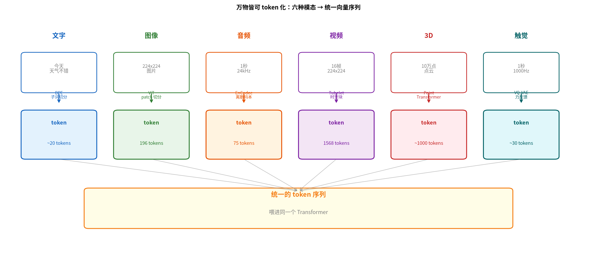
外界模态的具体分类不是唯一的。按表征方式可以分为离散符号（文字/程序）和连续信号（图像/音频/视频/3D/触觉）；按输入输出方向可以分为感知模态（视觉/听觉/触觉）、表达模态（文字/语音/动作）、环境模态（物理反馈/传感器读数）。这些分类并不互斥，是同一个”外界”从不同角度看到的切面。本书按需选用，不做唯一化定义。
从下一节起进入具体的 token 化技法。心法句会在 Ch2 §2.1 再次出现——那时我们从基座内部看外界，而这里是从外界看基座入口。
1.1 生活类比：怎么把一张图翻译成文字 token？
想象你要向一个只懂文字的人描述一张照片。你不能把整张图直接塞给他，只能把它切成一块块”能说清的小卡片”，再按顺序讲给他听。LLM 的工作方式正是如此：文字被切分成 token → 每个 token 查 Embedding 表变成向量 → 走 Transformer → 输出下一个 token。整条流水线的入口是 token。
文字有天然的最小单位——中文按字或词切，英文按子词切。但图像没有”天然的词”。一张 \(224\times224\) 像素的彩色图片，是一个 \(224\times224\times3 = 150528\) 个数字的张量。你不能把它当一个 token——太大了；也不能把每个像素当一个 token——太碎了，空间关系全丢了。
解决方案是人为切分：把图片切成小块，每块当作一个”词”。就像把一幅油画切成马赛克拼图，每块变成一张”名片”——这就是 ViT 的核心思想。
音频也类似。1 秒的语音波形有 16000 个采样点，你不能把 16000 个数字直接喂给 Transformer。得把它压缩成几十或几百个 token。
本章回答一个核心问题：每种模态（图/音/视频）怎么变成 LLM 能吃的 token？
1.2 ViT：把图片变成 Token
ViT（Vision Transformer） 的做法极其直接：
- 取一张 \(224\times224\) 像素的彩色图片
- 切成 \(14\times14 = 196\) 个 patch，每个 patch 是 \(16\times16\) 像素
- 每个 patch 拉平成 \(16\times16\times3 = 768\) 维向量
- 对这 768 维向量做一次线性投影（\(z = Wx + b\)），映射到模型的隐藏维度 \(d\)（比如 768）
- 加上位置编码（告诉模型”这块在图片的哪个位置”）
- 得到 196 个”图片 token”，和文本 token 完全同构——可以喂进 Transformer
ViT = patch 投影 + Transformer encoder。步骤 1-5 是 patch 投影，负责把图片拆成 Transformer 能吃的输入。步骤 6 之后，196 个图片 token 进入标准的 Transformer encoder（多层 Self-Attention + MLP），在层与层之间互相交换信息，最终每个 token 都融合了全图的上下文。patch 投影负责”拆”，Transformer encoder 负责”让这些 token 互相看、互相理解”。我们先看 patch 投影的细节，Transformer encoder 的机制留到 §2.0 的 token 旅程里展开。
图2：ViT 把图片切成 patch 并变成 token
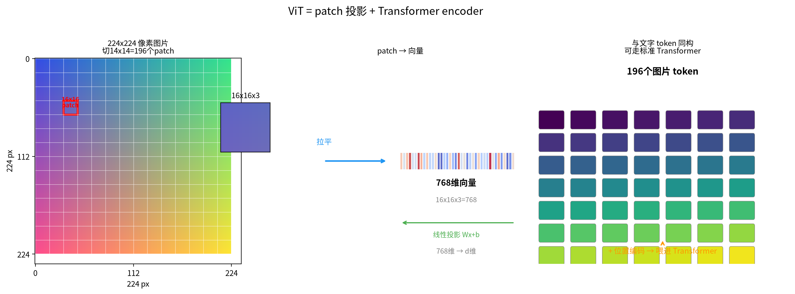
数字演示①：为什么是 768？
一个 patch 拉平后是 \(16 \times 16 \times 3 = 768\) 维。ViT-Base 的隐藏维度也选 768（沿用 BERT-Base 的 12 层/768 维/12 头规格），于是投影矩阵 \(W\) 恰好是方阵——但这是算术巧合，不是设计约束。如果 patch 尺寸换成 \(14\times14\)（ViT-H/14 的 patch 配置；此处假设隐藏维度为 1024），拉平后是 \(14 \times 14 \times 3 = 588\) 维，和隐藏维度不再相等，投影矩阵就是 \(588 \times 1024\) 的长方形，完全正常工作。如果图片更大，比如 \(384\times384\)，patch 尺寸不变（\(16\times16\)），则 patch 数变成 \(24 \times 24 = 576\) 个，每个仍拉平成 768 维。
数字演示②：位置编码——空间位置 vs 序列位置
文本 token 的位置编码是”第 1 个词、第 2 个词……“的一维序列。图片 token 的位置编码是”第 1 行第 2 列、第 3 行第 4 列……“的二维空间位置。ViT 的做法是把二维坐标展平成一维序号（第 \((r, c)\) 个 patch 编号为 \(r \times 14 + c\)），然后加一维可学习位置编码。为什么 CNN 不需要位置编码？因为卷积核在图片上滑动，天然保留了空间邻接关系；ViT 把图片拆成独立 token，空间关系必须用位置编码补回来。
深层连接：线性变换 \(z = Wx + b\)。ViT 的 patch 投影就是一次线性变换——输入 768 维，输出 \(d\) 维，权重矩阵 \(W \in \mathbb{R}^{768 \times d}\)。和 Embedding 查表不同：Embedding 是离散编号到向量的映射（查表），ViT patch 投影是连续向量到向量的映射（矩阵乘法）。但目的相同——把输入变成 Transformer 能处理的隐藏表示。
NaViT：从固定分辨率到原生分辨率
经典 ViT 有一个硬约束：输入必须是 \(224\times224\)（或某个固定尺寸）。实际图片什么尺寸都有——手机截图 \(1080\times2400\)、文档扫描 \(3300\times2550\)。硬 resize 到 \(224\times224\) 会变形：细小文字糊掉、宽高比被压扁。
NaViT（Native Resolution ViT，Google 2023）解决了这个问题。核心是 Patch n’ Pack：不同尺寸的图片被切成不同数量的 patch，这些变长 patch 序列直接打包进同一个 batch，用注意力掩码保证图片之间互不干扰。一张 \(1080\times2400\) 的截图保持原始宽高比切 patch，不需要 resize。
NaViT 已成为主流：Qwen2-VL、Qwen3-VL、Kimi-VL、InternVL2 都采用原生分辨率输入，因为 OCR、文档理解、细粒度视觉任务在高分辨率下表现显著更好。经典 ViT 的固定 \(224\times224\) 在这些任务上已经不够用。
1.3 CLIP：让图片和文字说同一种语言
ViT 把图片变成了 token，但这些 token 只代表”图片的一小块像素”，和文字 token 的语义空间互不相通。模型不知道”一只猫的图片”和”猫”这个词说的是同一回事。
CLIP（Contrastive Language-Image Pre-training） 解决的就是这个问题：让图片和文字映射到同一个向量空间，使得”猫的图片”和”猫这个词”在这个空间里靠得很近。
双编码器架构
CLIP 有两个塔：
- 图像塔：一个 ViT，输入图片，输出一个 512 维向量
- 文本塔：一个 Transformer（和 BERT 类似），输入文字，输出一个 512 维向量
两个塔各自把输入映射到同一个 512 维空间。训练目标只有一句话：配对的图文向量相互靠近，不配对的相互推开。
InfoNCE 损失
数字演示③：\(4\times4\) 相似度矩阵
假设 batch 里有 4 对图文 \((I_1, T_1), (I_2, T_2), (I_3, T_3), (I_4, T_4)\)。图像塔输出 4 个图像向量，文本塔输出 4 个文本向量。计算所有 \(4 \times 4 = 16\) 个余弦相似度：
\[S = \begin{pmatrix} \text{sim}(I_1,T_1) & \text{sim}(I_1,T_2) & \text{sim}(I_1,T_3) & \text{sim}(I_1,T_4) \\ \text{sim}(I_2,T_1) & \text{sim}(I_2,T_2) & \text{sim}(I_2,T_3) & \text{sim}(I_2,T_4) \\ \text{sim}(I_3,T_1) & \text{sim}(I_3,T_2) & \text{sim}(I_3,T_3) & \text{sim}(I_3,T_4) \\ \text{sim}(I_4,T_1) & \text{sim}(I_4,T_2) & \text{sim}(I_4,T_3) & \text{sim}(I_4,T_4) \end{pmatrix}\]
只有对角线 \(S_{ii}\) 是正样本（图文匹配），其余 \(S_{ij}\ (i \neq j)\) 是负样本。假设正样本相似度为 0.8，负样本相似度为 0.1。
InfoNCE 对每一行做 Softmax，目标是让对角线概率最大：
\[\mathcal{L}_i = -\ln \frac{\exp(\text{sim}(I_i, T_i) / \tau)}{\sum_{j=1}^{N} \exp(\text{sim}(I_i, T_j) / \tau)}\]
代入第 1 行：分子 \(\exp(0.8/\tau)\)，分母 \(\exp(0.8/\tau) + 3 \times \exp(0.1/\tau)\)。
数字演示④：温度系数 \(\tau\) 的作用
当 \(\tau = 0.07\)（CLIP 原始论文中作为可学习参数的初始值，训练后会自适应调整）： - 分子 \(\exp(0.8/0.07) = \exp(11.43) \approx 92000\) - 分母中每个负样本 \(\exp(0.1/0.07) = \exp(1.43) \approx 4.2\) - 正样本占比：\(92000 / (92000 + 3 \times 4.2) \approx 99.99\%\)——梯度几乎为零
当 \(\tau = 1.0\)： - 分子 \(\exp(0.8) \approx 2.23\) - 负样本 \(\exp(0.1) \approx 1.105\) - 正样本占比：\(2.23 / (2.23 + 3 \times 1.105) \approx 40\%\)——梯度较大
\(\tau\) 越小，模型越”自信”，对正负样本的区分要求也越极端。CLIP 用 \(\tau = 0.07\) 是因为 batch 足够大时，负样本数量极多，需要小温度才能从海量负样本中挑出正样本。
数字演示⑤：CLIP 训练 batch=32768 时的正负样本比
CLIP 原始训练用 32768 的 batch size。每个正样本对应 32767 个负样本。正负比 1:32767。这就是为什么 CLIP 需要巨大的 batch——对比学习的效果取决于负样本的多样性与规模。batch 太小，模型很快就能把所有正样本拉到一起，但学不到泛化的对齐。
深层连接：InfoNCE 是对比学习的标准损失函数。CLIP 的 InfoNCE 和图像自监督中的形式完全一致，区别在于正样本的定义：图像自监督的正样本是”同一张图片的两次增强”，CLIP 的正样本是”一段文字和它描述的图片”。对比学习的框架不变，变的是”什么算正样本”。
图3：CLIP 图文对齐：相似度矩阵与向量空间
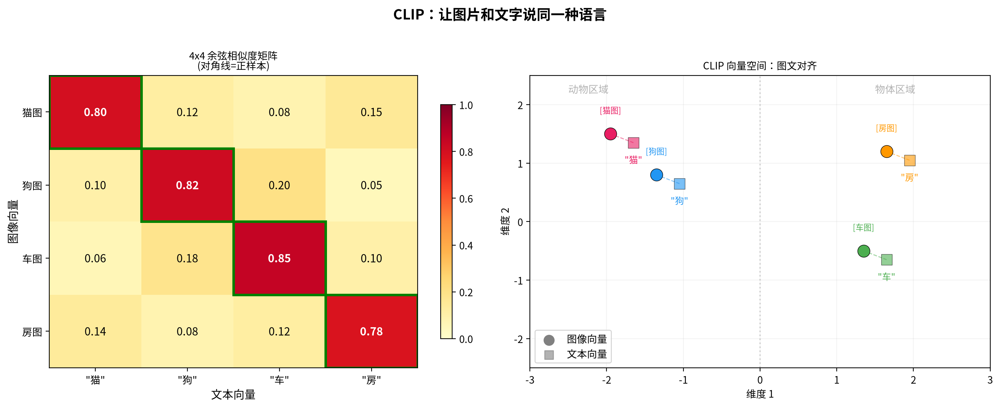
为什么这套能对齐：对比学习不需要人工标注类别（不需要告诉模型”这是猫”），只需要”图文成对”——互联网上的图片天然带 alt-text（替代文本），4 亿对图文标注几乎免费。这比 ImageNet 的 130 万张人工标注图片多 300 倍。
1.4 音频 token 化：live 语音的感知基础
Ch4 会详细讲 GPT-Live 的全双工语音交互。这里先解决一个前置问题：语音怎么变成 token？
1 秒的语音波形有 16000 个采样点（16kHz 采样率）。直接塞给 Transformer——上下文窗口瞬间就被填满，行不通。两条路线：
路线一：Spectrogram（时频图）
把波形做短时傅里叶变换（STFT），得到一张”时间\(\times\)频率”的二维图——mel-spectrogram（梅尔频谱），再按 ViT 的方式切成 patch。
数字演示⑥：mel-spectrogram 的尺寸
1 秒音频、16kHz 采样、STFT 窗口 25ms、步长 10ms： - 时间帧数：\(1000\text{ms} / 10\text{ms} = 100\) 帧 - 频率 bin 数：80（mel 滤波器组） - 得到 \(80 \times 100\) 的二维矩阵，可以按 ViT 方式 patch 化
路线二：音频 Codec（离散 token）
EnCodec / SoundStream 把波形直接编码成离散 token 序列，就像文字的 token 一样。
数字演示⑦：EnCodec 的压缩
- 输入：24kHz 采样率 \(\times\) 1 秒 = 24000 个采样点
- EnCodec 编码器输出：帧率 75Hz，每帧用 4 个量化码本编码，共 \(75 \times 4 = 300\) 个码字，下游模型按 300 个 token 处理；也可只取第一层码本得到 75 个粗粒度 token，牺牲精度换上下文空间
- 压缩率：若只取第一层码本（75 token），压缩率 \(24000 / 75 = 320:1\)；使用全部 4 层码本（300 token），压缩率 \(24000 / 300 = 80:1\)
数字演示⑧：两种路线的对比
| 维度 | Spectrogram | 音频 Codec |
|---|---|---|
| 表示形式 | 连续二维矩阵 | 离散 token 序列 |
| 与文本 token 兼容性 | 需要额外投影 | 直接复用文本 Embedding |
| 信息保真度 | 高（连续值） | 有量化损失 |
| 代表系统 | Whisper | EnCodec, SoundStream |
| GPT-4o/Live 推测 | — | 推测走此路线 |
GPT-4o 和 GPT-Live 的音频 token 化实现未公开。行业推测走 codec 路线，因为 codec token 可以直接复用文本 Embedding 和 LM Head（语言模型输出层，把隐状态向量映射到词表概率的线性变换矩阵）——和文字 token 完全同构，不需要额外的投影层。
1.5 视频 token 化：时空 patch
视频是图片的时间序列。ViT 处理图片只在空间上切 patch，处理视频还要在时间维度上切——这种时空小块叫 tubelet。但视频 token 化多了一个图片没有的麻烦：帧太多。
先猜再看：1 秒 30fps 的视频，如果每帧都按 §1.2 的方式切成 196 个 patch，会得到多少个 token？是一张图的几倍？猜猜看——答案马上揭晓。
全帧采样的灾难
1 秒 30fps 视频 = 30 帧。每帧按 §1.2 切成 196 个 patch，1 秒视频 = 30 \(\times\) 196 = 5880 个 token。10 秒视频 = 58800 个 token——超过大多数模型的上下文窗口。
视频不能每帧都取。实际做法是均匀采样：从整段视频中等间隔取 N 帧（比如 16 帧）代表整段视频。一段 10 秒视频取 16 帧，意味着每 0.625 秒取一帧——丢掉了约 95% 的帧。
丢掉的帧里有信息吗？有。但相邻帧之间大部分像素相同（背景不动），有效信息集中在运动区域。均匀采样假设”运动在时间上均匀分布”——对慢动作成立，对突发动作（突然抓取）可能刚好跳过关键时刻。
数字演示⑨：tubelet 尺寸与 token 数
采样后的 16 帧、每帧 \(224\times224\) 像素。tubelet 尺寸 \(2 \times 16 \times 16\)（时间 2 帧 \(\times\) 空间 \(16\times16\) 像素）： - 时间维 patch 数：\(16 / 2 = 8\) - 空间维 patch 数：\((224/16) \times (224/16) = 14 \times 14 = 196\) - 总 patch 数：\(8 \times 196 = 1568\) 个时空 token
对比：一张图片 196 个 token，16 帧视频 1568 个 token——视频的 token 数是单张图的 8 倍。这就是为什么视频理解的上下文消耗远大于图像理解。
时空注意力：先空间再时间，还是一起？
1568 个 token 一起做 Self-Attention，计算量是 \(1568^2 \approx 246\) 万次。ViViT（Video Vision Transformer）给出两种取舍：
分解式（Factorized）：先在每帧的 196 个 token 内做空间 Attention（\(196^2 \approx 38\text{K}\)），再在 8 个时间位置上做时间 Attention（\(8^2 = 64\)）。总计算量约 \(8\times38\text{K}+196\times64\approx320\text{K}\)，是联合式的 1/7。
联合式（Joint）：1568 个 token 一起做 Attention。信息流最充分——每个 token 直接和任意时空位置交互——但计算代价高。
| 策略 | 每层计算 | 信息交互 | 适用场景 |
|---|---|---|---|
| 分解式 | ~320K | 先帧内空间，再帧间时间 | 长视频、低算力 |
| 联合式 | ~2.46M | 全局时空 | 短视频、高精度 |
分解式更常用——视频理解的任务（动作识别、视频问答）大多不需要每个 patch 和所有时空 patch 直接交互，帧内理解清楚后用时间 Attention 串联足够。
视频 token 到 LLM 的压缩
1568 个视频 token 直接塞进 LLM 上下文太奢侈。一段视频问答 [视频token$\times$1568] [问题$\times$20] 中视频占 98.7%——按单张 224×224 图片 196 token、同样 20 个问题 token 计，图片占比约 90.7%，视频更高。
和 §2.8 会讲的 Q-Former 思路类似，视频模型常用时序池化：把每 8 个时间 token 平均成 1 个，1568 → 196 个 token 喂给 LLM。代价是时间分辨率下降——快速动作可能在池化中被抹平。
1.6 3D 点云 token 化：空间感知的第三只眼
图片是 2D 像素网格，但物理世界是 3D 的。机器人上的激光雷达和深度相机输出的是点云——一组 3D 坐标点 \((x, y, z)\)，可能附带颜色或法向量。一帧点云可以有 10 万个点，和 \(224\times224\) 图片的 5 万个像素同量级。但点云更难处理：像素乖乖排在规则网格上，点云的点却散布在 3D 空间里——没有固定顺序，也没有邻接结构。
点云 token 化的核心问题：怎么把不规则的 3D 点变成 Transformer 认得的、有序的 token？
体素化（Voxelization）
把 3D 空间切成规则的小立方体（体素），每个体素内的点取平均或最大池化，得到一个固定大小的 3D 网格。这和 ViT 把图片切成 patch 本质相同——只是从 2D 网格变成了 3D 网格。缺点：大部分体素是空的（稀疏），直接处理浪费算力。
序列化（Serialization）
Point Transformer V3（CVPR 2024 Oral）的做法分两步：先用空间填充曲线（如 Hilbert 曲线）把 3D 点排成一维序列，再把空间上邻近的点聚成”超点”（Superpoint）——一个超点当做一个 token，内部仍是规则序列，可以直接走标准 Attention。这比体素化高效——不浪费算力在空体素上，且序列化后的点可以用标准 Transformer Attention 处理。
数字演示⑩：3D 点云 vs 2D 图像的 token 数
| 输入 | 原始数据量 | token 数 | 备注 |
|---|---|---|---|
| 224×224 图片 | 150K 数字 | 196 | 16×16 patch |
| 10 万点云（序列化） | 300K 数字（xyz×3） | ~500-2000 | 取决于超点大小 |
| 10 万点云（体素 0.05m） | 300K 数字 | ~8000 | 大部分为空 |
点云的 token 数通常多于图片——3D 空间的信息密度低于 2D 图像（大部分 3D 空间是空的），需要更多 token 才能覆盖有物体的区域。
3D token 正在接入 VLA：VGGT（CVPR 2025 Best Paper，牛津 VGG + Meta AI）把多视图图像映射为 3D 结构 token，MIT Carlone 团队（ICRA 2026）将这些 token 注入 VLA（视觉-语言-动作模型），在 Unitree G1 机器人上显著提升了操作成功率。3D 感知不再是独立的感知模块，而开始和语言、动作 token 融进同一个模型。
1.7 触觉 token 化：第六感的数字化
视觉告诉你”这是什么”，触觉告诉你”抓得紧不紧”。一个鸡蛋和一个玻璃球在摄像头里看起来差不多，但抓取时的力反馈完全不同——鸡蛋需要精确的力控制，玻璃球则要小心别让它滑脱。
触觉传感器的原始输出是高频力信号（20-1000Hz 采样）——一串随时间变化的数值，和音频波形类似。直接喂给 Transformer 会遇到同样的问题：数据量太大、信号是连续的。
触觉词汇化（Tactile Tokenization）
李飞飞团队的 T-Rex（Tactile Tokenization，触觉词汇化）框架提出一个方案：用 VQ-VAE（向量量化变分自编码器）把时序力信号压缩成离散的触觉 token——“轻贴”“渐压”“突卸”“高频震颤”。每个 token 代表一种触觉模式，和文字 token 同构。
数字演示⑪：触觉 token 的频率差异
| 模态 | 采样率 | 时间尺度 | 1 秒数据量 |
|---|---|---|---|
| 视觉（摄像头） | 30Hz | 33ms/帧 | 1 张图片 |
| 触觉（力传感器） | 1000Hz | 1ms/样本 | 1000 个数值 |
| 听觉（麦克风） | 16000Hz | 0.06ms/样本 | 16000 个数值 |
触觉的时间尺度介于视觉和听觉之间——比视觉快 33 倍，比听觉慢 16 倍。这意味着触觉 token 需要自己的采样频率，不能和视觉 token 用同一套节奏。
T-Rex 的发现印证了这一点：把高频触觉信号勉强塞进低频 Transformer（和视觉共用 5Hz），任务成功率从 17% 掉到 6%——高频力信号打乱了视觉已经学会的表征。解法是给触觉开一条独立的高速公路：一个 20Hz+ 的触觉专家模块，在动作草图上做毫秒级力修正。这和 Ch5.7 的分层决策思路一致——不同时间尺度的信号用不同频率的模块处理。
触觉 token 化仍处于早期阶段。传感器硬件在快速迭代——高密度柔性电子皮肤已做到 361 点/\(\mathrm{cm}^2\)、1000Hz 回传（CES 2026）。但”怎么把力信号变成 token”的算法标准还没收敛——VQ-VAE 离散化、事件驱动编码（只在力突变时产生 token）、连续投影都有人在做。
1.8 多模态 token 的规模对比
先猜再看：一句话、一张图、1 秒音频、16 帧视频、10 万点云——放进一个 32K 上下文的模型，各自能放多少份？猜完再看表格——视频和点云是最大的消耗者。
数字演示⑫：不同模态的 token 规模
| 模态 | 数据量 | token 数 | 信息密度 |
|---|---|---|---|
| 一句话”今天天气不错” | 6 个字 | ~6 tokens | 基准 |
| 一张 224×224 图片 | 150528 个数字 | 196 tokens | ~768 数字/token |
| 1 秒音频（EnCodec） | 24000 采样点 | 75 tokens | ~320 数字/token |
| 1 秒音频（mel-spectrogram） | 8000 个浮点数 | ~100 tokens | ~80 数字/token |
| 16 帧 224×224 视频 | 2408448 个数字 | 1568 tokens | ~1536 数字/token |
| 10 万点 3D 点云（序列化） | 300K 数字 | ~500-2000 tokens | ~150-600 数字/token |
| 1 秒触觉（1000Hz 力传感器） | 1000 个数值 | ~20-50 tokens（VQ-VAE 压缩） | ~20-50 数字/token |
一个 32K 上下文的模型，能放：~160 张图片，或 ~437 秒音频（EnCodec 75 token/s），或 ~20 段 16 帧视频，或 ~16 帧 10 万点云，或 ~640 秒触觉。多模态模型的上下文窗口需求远大于纯文本模型，根源就在于视频和 3D 点云这两个吞 token 大户。
图4：多模态 token 规模对比
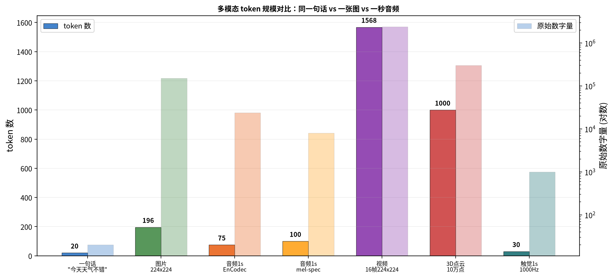
小胜点：到这里，你已经能把图像、音频、视频、3D、触觉都看成 token，并能比较它们的成本与上下文占用。
1.9 AI落地：token 预算工程
多模态输入落地时首先是一道预算题：上下文窗口就那么大，每种模态吃掉多少 token，直接决定系统能跑多复杂的任务。
第一步：算预算。可用输入 = 上下文窗口扣除输出预留与历史消息后剩下的部分。32K 窗口留 4K 给输出、4K 给历史后，可用输入剩 24K——§1.8 的数字演示⑫算的是整窗容量（约 160 张图），工程上按 24K 实际约 120 张，或约 320 秒的 EnCodec 音频（整窗则是约 437 秒）。
第二步：按任务分配。三种取舍：① 保留关键模态——智能门铃必须保视频，门牌号文本几乎零成本；② 激进压缩——长视频降采样帧率、音频只取粗粒度码本；③ 模态加权——按任务重要性分配预算，而不是一刀切全给。
第三步：分层消费。三个可调旋钮：分辨率分层（OCR 场景高分辨率、通用场景低分辨率）、码本分层（流式音频先吐粗码本，需要细节再补）、帧率自适应（运动检测触发高帧率，静止场景降帧）。
一句话：同样的窗口，预算分配方式不同，能力边界也完全不同——token 预算决定多模态系统的成本曲线。本章自检的应用题（智能门铃）会用这套方法完整走一遍。
1.10 常见误解
误解1：“ViT 就是把 CNN 换成 Transformer。”
CNN 通过卷积核在图片上滑动，天然捕捉局部空间关系；但图片里远距离像素的依赖（如猫脸和猫尾）无法靠局部卷积表达，需要全局交互。ViT 的关键是patch 化——把图片拆成独立 token，用 Attention 让 token 之间全局交互。架构替换（CNN→Transformer）是手段，patch 化才是核心思想。没有 patch 化，即使把 CNN 换成 Transformer 也无法高效处理图片。
误解2：“CLIP 能理解图片。”
CLIP 只学了”图文像不像”，不学”图片里有什么”。CLIP 可以告诉你”这张图和’一只猫坐在沙发上’这句话很像”，但不能告诉你”猫在沙发的左边还是右边”。理解需要更强的模型架构（Ch2 会讲）。
误解3：“音频 token 化就是语音识别（STT）。”
STT 把语音变成文字——丢掉了语气、语调、停顿、背景音等全部副语言信息。音频 token 化把语音变成 token，保留了所有声学信息。这就是为什么 GPT-4o 能模仿语气、能听到背景音乐——它处理的是音频 token，不是 STT 之后的文字。
误解4：“ViT 只能处理 \(224\times224\) 的图片。”
经典 ViT 固定把图片缩放到 \(224\times224\)；当前主流多模态模型（Qwen2-VL、Kimi-VL、InternVL2）采用 NaViT 原生分辨率输入——图片保持原始尺寸和宽高比切 patch。把高分辨率图片硬 resize 到 \(224\times224\) 会丢失 OCR 和细粒度识别所需的信息。
误解5：“机器人只用摄像头就够了。”
对简单任务成立。但精细操作（抓鸡蛋、插 USB）需要触觉反馈——视觉无法告诉你”抓得多紧”。3D 点云在遮挡和复杂空间关系下也比 2D 图片更可靠。具身智能的感知不止”看”，还有”摸”和”感受空间”。
1.11 本章回顾
一句话回顾：ViT 把图片切成 patch token（NaViT 让它支持任意分辨率），CLIP 让图文 token 在同一空间对齐，音频 codec 把波形变成离散 token，视频 tubelet 把时空块切成 token，3D 点云用序列化变成空间 token，触觉用 VQ-VAE 变成力反馈 token——万物皆可 token 化。
本章自检：
【知识点】
- ViT 的 patch 尺寸是 \(16\times16\)，一张 \(224\times224\) 的图片产生多少个 token？每个 token 的原始维度是多少？
提示
§1.2 patch 投影步骤。答案
产生 \((224/16)\times(224/16)=14\times14=196\) 个 token。每个 patch 拉平后维度 \(16\times16\times3=768\) 维。 - NaViT 和经典 ViT 的关键区别是什么？为什么主流模型都转向原生分辨率？
提示
§1.2 NaViT 节，Patch n’ Pack。答案
NaViT 用 Patch n’ Pack 打包变长 patch 序列，支持任意分辨率；经典 ViT 固定 \(224\times224\)。原生分辨率在 OCR、文档理解、细粒度视觉任务上表现显著更好，硬 resize 会丢失细节。 - CLIP 训练时 batch=32768，正负样本比是多少？为什么需要这么大的 batch？
提示
§1.3 数字演示⑤。答案
正负比 \(1:32767\)。对比学习的效果取决于负样本的多样性和数量；batch 太小，模型很快把正样本拉到一起但学不到泛化的对齐。 - InfoNCE 损失中温度系数 \(\tau\) 的作用是什么？\(\tau\) 太大或太小分别有什么问题？
提示
§1.3 数字演示④。答案
\(\tau\) 控制正负样本区分的”自信”程度。\(\tau\) 越小模型越自信（正样本占比趋近 100%，但梯度几乎为零）；\(\tau\) 太大时正负区分弱、梯度大但学习信号模糊。CLIP 用 \(\tau=0.07\) 作为可学习参数的初始值（训练后会自适应调整），因为 batch 大、负样本极多，需要小温度从海量负样本中挑出正样本。 - EnCodec 把 24kHz 的 1 秒音频压成多少个 token？压缩率是多少？
提示
§1.4 数字演示⑦。答案
帧率 75Hz，4 层码本共 \(75\times4=300\) 个 token；只取第一层码本则 75 个 token。压缩率：全部码本 \(24000/300=80:1\)，第一层码本 \(24000/75=320:1\)。 - 视频 tubelet \(2 \times 16 \times 16\) 是什么意思？16 帧 \(224\times224\) 视频产生多少个 token？
提示
§1.5 数字演示⑨。答案
tubelet 尺寸 \(2\times16\times16\) = 时间 2 帧 \(\times\) 空间 \(16\times16\) 像素。16 帧视频：时间维 \(16/2=8\)，空间维 \((224/16)^2=196\)，总 \(8\times196=1568\) 个时空 token。 - 3D 点云的序列化和体素化各自的优缺点是什么？
提示
§1.6 序列化 vs 体素化。答案
体素化把空间切成规则立方体，缺点是大部分体素为空、浪费算力。序列化用空间填充曲线（如 Hilbert 曲线）把点排成一维序列切成超点，不浪费算力在空体素上，且可用标准 Transformer Attention 处理。 - 触觉 token 为什么不能和视觉 token 用同一频率处理？
提示
§1.7 触觉频率差异、T-Rex 实验。答案
触觉采样率 1000Hz，比视觉（30Hz）快 30 倍。T-Rex 发现把触觉信号直接塞进低频 Transformer（5Hz）会使成功率从 17% 降到 6%——高频触觉信号打乱了视觉表征。触觉需独立高速模块（20Hz+）。
【逻辑链】
- 为什么 ViT 需要位置编码但 CNN 不需要？请从”信息处理方式”的角度解释。
提示
§1.2 位置编码节，卷积 vs patch 化。答案
CNN 卷积核在图片上滑动，天然保留空间邻接关系。ViT 把图片拆成独立 token，token 之间无空间顺序信息，必须用位置编码补回空间关系。 - 为什么 CLIP 用双塔（图像塔+文本塔）而不是单塔（把图文拼在一起送进一个 Transformer）？提示：考虑推理时的效率。
提示
§1.3 双编码器架构，考虑推理时效率。答案
双塔让图像和文本各自独立编码到同一空间。推理时可以预计算并索引大量图像/文本向量，只需一次余弦相似度检索即可匹配——单塔需要对每对图文做一次联合前向，无法预计算，大规模检索效率极低。
【应用潜能】
- 一个智能门铃要识别”门外是熟人/陌生人/动物”，输入有视频（1080p）、音频（16kHz）、文本（门牌号）。只用一个 LLM 上下文，你会怎么设计输入 token？提示：视频用 tubelet 压缩、音频用 codec 压缩、文本用 BPE——上下文预算有限，哪个模态该优先、哪个该丢？
提示
门铃要实时、多模态、低延迟——视频每秒吞多少 token（tubelet 后）、音频每秒多少（codec 后）、文本多少？32K 预算先保谁、砍谁？答案
智能门铃是”实时 + 多模态 + 低延迟”场景。三个模态的 token 量级差异巨大：文本（门牌号）几乎不占预算；音频 1 秒约 75 token（EnCodec 压缩后；帧率由 codec 设计决定、与采样率无关，16kHz 与 24kHz 同为 75Hz——正文 §1.4 表格以 24kHz 为例）；视频每 16 帧（约 0.53 秒 @30fps）约 1568 token（tubelet 压缩后，§1.5：16 帧视频 1568 个时空 token）；若按 30fps 连续输入折算，每秒约 \(1568 \times 30 / 16 \approx 2940\) token。设计原则：① 视频是关键信息（谁在门外），优先保留但压缩（tubelet 时空 patch）；② 音频是辅助（叫声/说话声），用 codec 压到粗粒度码本（75 token/s）即可；③ 文本是零成本。上下文预算有限时，丢弃”低信息量”的模态（如门牌号文本）或降采样视频帧率，而不是砍关键视频。核对你的答案：至少包含 ①三个模态的 token 量级对比（谁占大头）；②保视频砍文本的取舍理由；③预算不够时的降级顺序（降帧率/压码本/丢文本）。 - §1.8 讲过多模态 token 数量爆炸的问题。什么情况下 token 化方案会失效、需要重新设计？提示：当模态间数量级差异超过模型可处理范围时（如 24kHz 音频 vs \(224\times224\) 图像），固定 patch 方案会失效。
提示
固定 patch 方案成立的隐含前提是各模态 token 量级可比较——哪种模态组合会打破它（如 24kHz 音频 vs 224×224 图像）？答案
token 化方案的成立前提是”所有模态的 token 量级可比较”。当某个模态的信息密度远超其他模态（如视频每秒约 3000 token——16 帧一段共 1568 token、约 0.53 秒——vs 音频每秒 75 token，视频是音频的 40 倍左右；正文 §1.8 表格按片段口径：1 秒音频 75 tokens、16 帧视频 1568 tokens），固定 patch 方案会失效——要么上下文被视频占满，要么视频被过度压缩丢失关键信息（如动作细节、空间关系）。需要重新设计：① 对高密度模态用更激进的压缩（tubelet 更大、帧率降采样）；② 对低密度模态用更多 token（音频用多码本 300 token/s 保留细节）；③ 模态加权（按任务重要性分配预算），而不是一刀切全部 token 化。
未解问题：Ch1 解决了”每种模态怎么变成 token”。但 token 化只是输入接口——视觉 token 和文本 token 怎么协作？把它们拼在一起送进 LLM 就行了吗？需要一个架构来筑基。这就是 Ch2 的主题。 * * *
第2章：筑基——预训练与潜空间的涌现
第1章把世界变成了 token——图片切成 patch、音频压成码本、视频切成时空块。现在轮到这些向量了：它们进入模型之后会发生什么，是这一章的全部问题。
基座模型运转在潜空间中，不在语言里。但”潜空间”不是空中楼阁——它由具体的 Attention 矩阵、FFN 层、残差连接构成。理解它的路线：一个 token 在 LLM 里经历什么（§2.0）→ 从物理结构抽象出潜空间（§2.1）→ 预训练把世界压进这个空间（§2.2）→ 能力从中涌现（§2.3-§2.7）→ 更多外界模态接入（§2.8-§2.9）。
本章路线：Part A（§2.0–§2.7）看潜空间与预训练；Part B（§2.8–§2.12）看多模态接入与基座局限。时间紧可先读 Part A 的 §2.0–§2.2，以及 Part B 的 §2.11。
核心心智模型： 1. 基座模型运转在潜空间，不在语言里。 2. 预训练把世界压进潜空间，写作/编程/思考是同一个潜空间经文字接口的三种表达。 3. 多模态接入是让更多外界信号进入同一个潜空间。 4. 基座有明确局限：参数化知识边界、幻觉、长上下文衰减、多语言不均衡、认知失谐。
动笔前自检：①一个 token 进入 Transformer 后会变成什么？②”潜空间”在你心里是具体还是比喻？带着问题读 §2.0–§2.1。
Part A：潜空间与预训练
Part A 核心：潜空间不是比喻，是 token 经 Transformer 后形成的向量空间；预训练把世界压进去。
这一部分先看 token 进入模型后的物理旅程，再从潜空间、预训练到三种能力。
2.0 LLM 长什么样：一个 token 的旅程
在讲潜空间之前，得先搞清楚一个基本问题：你往 ChatGPT 输入一句话，它内部到底发生了什么？ 这一节跟着一次具体的前向传播走一遍，把 LLM 的物理结构拆开看。
《AI数学》§5.10 讲过 Attention 的数学零件（Q/K/V 公式、Softmax 温度、残差连接的代数表达）。这里不重复公式——补充的是物理直觉：一个 token 从进去到出来实际经历什么、96 层各自在做什么、为什么逐层会涌现出不同深度的能力。如果你已经熟悉公式，这里帮你建立”体感”；如果还没学过公式，这里给你一个可以先读的直觉入口。
场景：输入”猫坐在垫子上”，预测下一个 token
假设一个具体模型：96 层 Transformer，隐藏维度 4096，词表 50000，64 个头（层数与 GPT-3 相同，维度和头数为了演示取好算的值）。你输入”猫坐在垫子上”，模型需要预测下一个 token。
第 0 步：查表——token 变成向量
模型不认识汉字，它只认识编号。“猫”在词表里是第 3742 号 token，“坐”是第 891 号，“在”是第 56 号，“垫子”是第 4821 号，“上”是第 12 号。
每个编号查一张表（embedding matrix），得到一个 4096 维的向量。这张表是模型参数的一部分——预训练时学出来的。
输入 5 个 token → 得到 5 个 4096 维向量。到此为止，文字已经消失了，模型手里只有 5 个向量。
位置编码。Transformer 的 Attention 机制本身不知道 token 的先后顺序——“猫坐”和”坐猫”对它来说没区别。所以在查表之后，每个向量还会加上一个”位置向量”（position embedding），编码”这是第几个 token”。加上之后，“猫坐在垫子上”和”上垫子在坐猫”就不同了——因为每个 token 的位置编码不同。
第 1-96 步：过 96 层 Transformer block
这 5 个向量进入第 1 层 Transformer block。每一层做两件事——开例会（Self-Attention） 和 整理笔记（FFN）。
开例会。每个 token 看一遍所有 token（包括自己），决定”谁跟我相关”。“猫”可能发现”坐”和自己高度相关（猫是坐的主语），“垫子”也相关（坐的地方）。它给相关的 token 高权重，不相关的低权重，然后把所有人的向量按权重加起来，更新自己的表示。
具体来说，每个 token 生成三个东西：Query（“我在找什么”）、Key（“我能提供什么”）、Value（“我的实际内容”）。Query 和所有 Key 做点积得到相关度分数，Softmax 归一化成权重，用权重加权所有 Value——得到这个 token 的新表示。
这就是 Attention 的全部：每个 token 通过 Query-Key 匹配找到相关信息，通过 Value 聚合过来。记住”开例会找相关信息”这个直觉就够了。
多头 Attention。上面的过程不是做一次，是做很多次——这个例子的模型做了 64 个头（4096 维分 64 个头，每头 64 维；GPT-3 是 96 个头，头数因模型而异）。每个头关注不同的关系：有的头抓语法关系（主语-谓语），有的头抓共现（“猫”和”垫子”经常一起出现），有的头抓长距离依赖。64 个头的输出拼起来再投影一次，得到 Attention 的最终输出。
残差连接。Attention 的输出不是直接替换原向量，而是加到原向量上：新向量 = 原向量 + Attention(原向量)。这个”加”很关键——它保证原信息不会被丢失，Attention 只能添加信息。如果某一层的 Attention 没学到有用的东西，原向量原封不动传下去，模型不会变差。
整理笔记。Attention 之后，每个 token 的向量再经过一个 FFN（前馈网络）——两层线性变换中间夹一个非线性激活（GELU/SwiGLU）。FFN 对每个 token 独立操作（token 之间不交互），做的事情类似”整理笔记”：把例会上收集到的信息提炼、压缩、扩展。FFN 是模型大部分参数的所在地——GPT-3 的 1750 亿参数里，约三分之二在 FFN 里。
Layer Norm。Attention 之前、FFN 之前各做一次归一化，把向量的数值范围拉回稳定区间。不做的话，96 层叠加下来数值会爆炸或消失，模型彻底罢工。
一层结束。5 个向量经过 Attention（开例会）+ FFN（整理笔记），变成 5 个新的 4096 维向量。这就是一层 Transformer block。
重复 96 次。上面讲的这一层（Attention + FFN）要重复 96 次——这个例子就是 96 层（层数与 GPT-3 相同；LLaMA-3-70B 是 80 层，Claude Opus 4.5 和 GPT-5.5 的层数未公开但同量级）。每一层都在做同样的操作——但学到的东西不同：
- 浅层（1-20 层）：抓语法和共现。“猫”和”坐”在浅层就建立了主谓关系。
- 中层（20-60 层）：抓语义和关系。“猫坐在垫子上”在中层被理解为”一只动物在一个物体上面”的空间关系。
- 深层（60-96 层）：抓推理和逻辑。如果上文有”猫很怕冷”，深层会把”怕冷”和”坐在垫子上”联系起来——可能猫在找暖和的地方。
这个”逐层抽象”不是设计出来的——是预训练时自然涌现的。Mech interp 研究（Tenney 等 2019; Vig 等 2020; Anthropic 2022-2025 一系列 circuit 分析）反复验证了这个模式。
最后一步：从向量回到 token
第 96 层输出的 5 个向量，模型只取最后一个（“上”对应的向量）。这个向量经过一个 unembedding 矩阵（和 embedding matrix 互为转置），从 4096 维投回 50000 维——得到词表里每个 token 的”分数”。再经过 Softmax 变成概率分布。
可能的结果：“下”（0.31）、“面”（0.22）、“的”（0.15）、“睡”（0.08）……模型采样这个分布（可以贪心选最高分，也可以按概率随机采样），输出一个 token。
如果要继续生成，就把新输出的 token 拼回输入序列，重复整个过程。
一次前向传播的算力账
数字演示①：“猫坐在垫子上”（5 个 token）经过一个 96 层、4096 维、64 头的模型，一次前向传播的浮点运算量：
- Attention：每层约 \(2 \times n^2 \times d\) 次乘加（\(n=5\) 个 token，\(d=4096\)）→ 96 层合计约 \(2 \times 5^2 \times 4096 \times 96 \approx 2 \times 10^7\)（此处只计注意力矩阵的乘加，未含 QKV 投影与输出投影——对小序列投影才是大头）
- FFN：每层约 \(2 \times n \times d \times d_{\text{ff}}\)（\(d_{\text{ff}} = 4d = 16384\)）→ 96 层合计约 \(2 \times 5 \times 4096 \times 16384 \times 96 \approx 6.4 \times 10^{10}\)
- 总计约 \(6.4 \times 10^{10}\) FLOPs
这只是一个 5-token 句子的一次前向传播。实际使用中，输入 1000 个 token、生成 500 个 token，每个 token 都要跑一次前向传播——算力需求是这里的十万倍以上（每步序列更长，Attention 的 \(n^2\) 项随长度增长；这在 §4.2 会引出 KV Cache 这个工程优化）。这就是为什么大模型推理需要数据中心级别的 GPU。
这个结构的关键特征
残差连接造就了”信息高速公路”。96 层不是串联的过滤器——信息可以跳过某些层直接传递（残差连接让每层都能”看到”最初的输入）。这意味着模型可以选择性地使用深层能力：简单语法在浅层就处理完了，深层不重复劳动；复杂推理才需要深层的全部深度。
Attention 是全连接的，FFN 是独立的。Attention 让每个 token 能看到所有其他 token（信息混合），FFN 对每个 token 独立处理（信息提炼）。交替进行”混合-提炼-混合-提炼”，模型逐层把原始 token 表示加工成越来越抽象的语义表示。
生成的本质是”一次一个 token”。模型不是”想好了一整句话然后吐出来”，是每次只预测下一个 token，把新 token 拼回输入再预测下一个。这个”逐 token 生成”的特性直接决定了 Ch4 讲的延迟问题——你必须等前面的 token 生成完才能开始生成下一个。
与潜空间的关系
现在可以预告 §2.1 的核心问题了：这些 4096 维向量住在哪里？ 它们住在潜空间里。每一层的 Attention 和 FFN 都是在潜空间里做变换——把向量搬到新位置、融合、提炼。96 层走完，最终的向量在潜空间里到达了一个点，这个点对应”下一个 token 应该是什么”。
这一节是”一个 token 进去后实际经历什么”的物理走查。接下来 §2.1 从这个物理结构出发，回答”这些向量住的空间有什么性质”。
图5：一个 token 在 Transformer 中的旅程
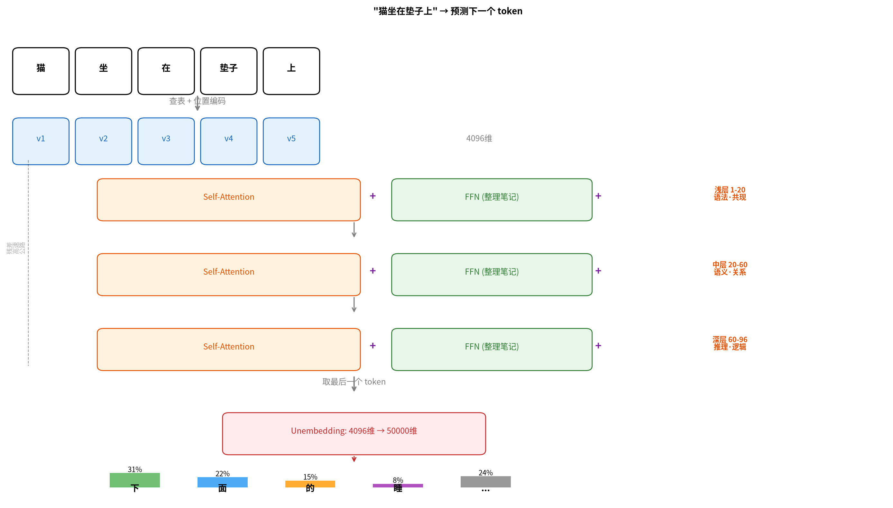
2.1 潜空间：基座里到底在跑什么
§2.0 走查了一个 token 的完整旅程——从查表变向量，经过 96 层 Attention 和 FFN 的交替处理，最后投回词表输出下一个 token。这些向量在模型内部住的空间，就是潜空间。
最后一层的向量再经过一个 unembedding 矩阵，投回词表空间，得到”下一个 token 的概率分布”。这一步是从潜空间反投回外界（文字接口）——模型不是”生成文字”，是在潜空间里做完推理后再翻译回文字。翻译只是最后一公里。
潜空间的三个性质（对本书够用的直觉，深入见 mechanistic interpretability 文献）：
稠密。潜空间是连续的 \(\mathbb{R}^d\)（\(d\) 是隐藏维度）。相似的概念在潜空间里离得近——“猫”和”狗”两个向量贴近，“猫”和”民主”则相距很远。这不是设计出来的，是训练自然形成的。
可组合。潜空间中存在近似的向量运算：“国王” - “男” + “女” \(\approx\) “女王”。线性表示假说（Park 等 2024）在 LLM 潜空间中验证了这一现象：概念以线性方向编码，方向之间的加减运算近似对应语义关系。这意味着潜空间里编码了关系，不只是概念。
想一想：如果潜空间不是稠密的连续空间，而是离散的符号表——“国王”是一个符号，“男”是一个符号，用符号做”国王 - 男 + 女”能得到什么？试试看：符号之间没有”距离”的概念，减法在符号表里根本无处可去。稠密是”可组合”的前提——正因为概念在连续空间里是方向，方向的加减才有意义；换成离散符号，组合运算就无从谈起。这也解释了为什么性质1（稠密）和性质2（可组合）必须成对出现。
多义特征叠加。同一个向量可以同时编码多个不相关的概念——比如某个方向上既编码”金门大桥”又编码”愤怒的情绪”。这叫 superposition（Elhage 等 2022, Anthropic）。Superposition 不是设计缺陷，而是特征数远大于维度数时的最优压缩策略：当模型需要表达十万个稀疏特征但只有几千维空间时，把特征叠加到近似的方向上（利用稀疏性让它们很少同时激活）比丢弃特征更优。
SAE 怎么拆解 superposition？（工具细节，可跳过）
SAE 能拆解叠加，正是因为特征的稀疏性——如果所有特征同时激活，叠加就不可逆了。稀疏自编码器（SAE）如今是拆解 superposition 的主流工具（Bricken 等 2023；Templeton 等 2024 “Scaling Monosemanticity”；Anthropic 2024-2025 一系列 SAE 工作）。2026 年 Qwen-Scope（arXiv:2605.11887）把 SAE 特征做成开发工具，让开发者能看到某个特征”负责什么概念”。叠加不是终点——拆解叠加后揭示的内部结构（线性方向、信息流电路、FFN 关联记忆）和基于这些结构的干预手段（激活引导、知识编辑、J-space 审计），在§6.4 系统展开。
为什么强调这三个性质。因为它们说明基座模型内部不是符号处理（像老式 GOFAI），也不是纯连接主义黑箱——是在稠密连续空间里做结构化变换。这个视角决定了后面几节的走法：预训练（§2.2）是”把数据压进这个空间”，涌现（§2.3）是”当空间够大时突然出现新的可组合结构”，写作/编程/思考（§2.4-§2.6）是”同一个空间被不同接口调用出来的不同表达”。
智源研究院王仲远的原话把这个抽象层说得更具体：“所有模态被压缩进同一个潜空间，再由不同的解码器按需还原成不同输出形态。举个例子，这个潜空间就像给机器人大脑准备了一张万能草稿纸”。“万能草稿纸”于是成了本节最贴切的直觉——文字/程序/图像/动作，都是在这张草稿纸上被草拟出来的。
回指 Ch1：Ch1 讲了外界怎么被 token 化压进潜空间入口。这一节起，我们进入潜空间内部——看这些 token 向量在里面怎么被塑形、怎么长出能力。
图6：潜空间概念图：万能草稿纸
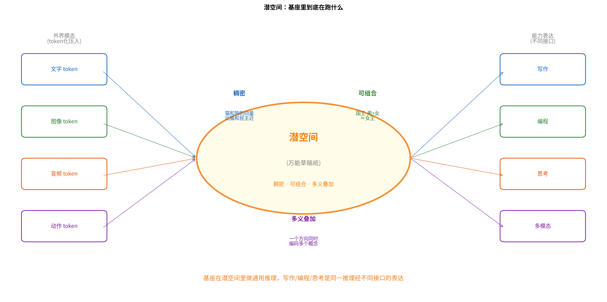
2.2 预训练：把世界压进潜空间
预训练的目标出奇地简单：给定前 \(n-1\) 个 token，预测第 \(n\) 个 token（next-token prediction）。就这一条。
数字演示②：预训练的规模
以 LLaMA-3-70B 为例（Meta 2024）：
- 参数量：700 亿
- 训练数据：15T tokens（约 45TB 文本）
- 训练算力：约 \(6.3 \times 10^{24}\) FLOPs（\(6 \times 70 \times 10^9 \times 15 \times 10^{12}\)，用 Chinchilla 系数 6）
- H100 GPU-小时：约 640 万小时
- 电费成本：约 8000 万美元（业界估算）
Grok 4.5（2026.07）使用数万块 NVIDIA GB300 GPU 训练；GPT-5.5、Claude Opus 4.5 训练规模同量级或更大。这个数量级本身就是”筑基”的重量——不是普通的模型训练，是把整个互联网的文字压缩进一个 700 亿参数的潜空间。
“下一个 token”为什么能长出智能。这是当前最深的问题之一，业界没有完全令人满意的理论解释，但有几个层次的直觉：
- 压缩即理解（Solomonoff 归纳的现代版本）。要准确预测下一个 token，模型必须建立世界的内部模型——语法、事实、因果、逻辑、情绪、意图，一切影响下一个 token 的因素都会被隐式编码到参数里。压缩率越高，理解越深——这是 Ilya Sutskever 反复强调的判断。
- 多任务隐式学习。互联网文本包含无数任务：翻译、问答、总结、写代码、讲笑话、辩论。next-token 训练目标不区分任务——模型必须同时学会所有这些任务的隐式表示。任务之间共享潜空间结构，正迁移让模型比针对单任务训练更泛化。
- Sparse features 假说。潜空间中存在大量”稀疏可解释特征”（稀疏自编码器 SAE 揭示的），预训练是在发现这些特征、在它们之间建立关系。特征本身对应人类可理解的概念（“金门大桥”“愤怒”“三段论推理”），关系对应可组合的操作。
把这三种直觉再收拢一层：AI 在通用计算的基础之上，用大规模统计学习对数据做压缩与预测。若为这条主线找一个统一的名字，可以借用自由能原理（FEP）：任何自组织系统为了存续，都必须最小化其内部模型与外部世界的预测误差（自由能）。预训练正是这个原理落到硅基上的工程形态——模型是内部模型，语料是外部世界，交叉熵是预测误差，梯度下降在持续收缩它。
回指 Ch1：Ch1 讲了各种外界模态怎么被切成 token。§2.1 讲了这些 token 怎么变成潜空间中的向量。这一节说的是：海量的这种向量流经模型时，参数被塑形出对世界的隐式模型。萃取是入口，筑基是内部塑形，两者一起完成”外界→潜空间”的完整链条。
关键取舍：预训练不学”什么话该说”（那是 Ch3 炼灵的事），只学”数据里的分布”。这意味着预训练完的基座模型：
- 有能力（潜空间已经具备通用推理结构）
- 无导向（不知道用户想要什么、什么话该拒绝、什么是有害的）
这是 §2.6 讨论”思考”和 Ch3 讨论”对齐”的共同前提。基座模型和最终产品之间隔着大量后训练工程。
Mid-training：预训练和对齐之间的桥
§2.2 讲的预训练把互联网文本压进潜空间。§2.4-§2.6 会讲写作、编程、思考三种能力怎么从中涌现。§3.5 起讲 RLHF/DPO/GRPO 怎么把模型从”像”调到”对”。但在预训练和 SFT（监督微调）/RL（强化学习）之间，已经形成一个独立的中间阶段：mid-training（有时叫”continued pretraining”或”annealing”）。
mid-training 做的事很具体：在预训练的通用语料之上，上采样 STEM、数学和代码等高质量数据，同时把上下文长度从预训练的 8K-32K 扩展到 128K-256K。典型规模 100B-500B tokens，学习率按余弦衰减。Llama 3 的”annealing tail”是其中最简单的形态（仅在预训练收尾处上采样少量高质量数据），MiMo 的三阶段配比（数学+代码逐步提升到 70%）、MAI-Thinking-1 的显式 STEM 上采样，才是完整规模的实例。
关键点：mid-training 的目的不是教新知识，而是为 RL 准备认知行为。验证、回溯、子目标分解——这些 RL 会放大的推理行为，在 mid-training 阶段就开始被植入。OctoThinker（arXiv:2603.14431, 2026）给出了最直接的证据：同一套 GRPO 配方在 Qwen（有推理密集的 mid-training）上产生了强大的推理提升，在 Llama（缺乏此类 mid-training）上完全失败。差异不在模型大小或架构，在于基座是否已经展现出 RL 能强化的自我纠正行为。换言之，RL 能不能让模型”学会思考”，取决于 mid-training 是否已经种下了可以被强化的种子。
前瞻 §2.6：§2.6 会讲推理内化的三阶段演进（CoT prompt → CoT 微调 → RL 内化），其中”aha moment”是 RL 训练中自发涌现的。mid-training 补上了这条链的前半段：为什么有些模型的 RL 能涌现自我纠正、有些不能——不是因为 RL 算法不同，是因为 mid-training 的数据配方决定了基座是否已经具备 RL 能放大的认知行为。§3.3 会从推理算力角度继续展开这条线。
小胜点：到这里，你已经知道”潜空间”不是比喻，而是 token 经过 Transformer 后形成的向量空间；预训练把世界压进这个空间，mid-training 则提前备好 RL 能放大的认知行为。
2.3 Scaling Law 与涌现：能力从哪里来
Scaling Law（Kaplan 等 2020, OpenAI；Hoffmann 等 2022, DeepMind “Chinchilla”）揭示了一个惊人的规律：LLM 的损失（cross-entropy loss）随参数量、数据量、算力平滑地按幂律下降——不是随机波动，是可预测的曲线。
数字演示③：Chinchilla scaling law
给定训练算力 \(C\)（FLOPs），最优的参数量 \(N\) 和数据量 \(D\) 满足：
\[N_{\text{opt}} \propto C^{0.5}, \quad D_{\text{opt}} \propto C^{0.5}\]
也就是参数量和数据量应该同步扩大（不是一味堆参数）。Hoffmann 等发现 GPT-3（175B 参数、300B tokens）在同算力下并非最优配比——应该训约 67B 参数 \(\times\) 约 1.5T tokens。Chinchilla-70B 用同算力的更小模型和更多数据，在多数任务上超过了 GPT-3-175B。这个发现直接改变了 2023 年之后所有大模型的训练配方。（后续修正：Chinchilla 配比是训练最优的；若把推理成本也算进来，最优解会偏向更小的模型和更多的训练数据——小模型训练时需要更多数据，但每次推理都便宜得多。实践中要在训练最优与推理经济之间取舍。）
涌现（Emergence）：Wei 等 2022 (Google) 观察到一个反直觉现象——某些能力（如多步算术、上下文学习、指令跟随）在模型规模跨过某个阈值前几乎看不出来，跨过阈值后突然跃升。这个”突然性”和 scaling law 的”平滑下降”形成矛盾。
涌现之争（这是本节的关键，也是当前最热的争论之一）：
- Wei 等 2022 的观点：“涌现是真实的能力跃迁——量变引起质变。”
- Schaeffer 等 2023（NeurIPS Best Paper）的反驳：“涌现是海市蜃楼（mirage）——不是能力突然出现，是评估指标的非线性造成的假象。用连续指标（如 token-level probability）看，能力是平滑增长的；用二值指标（如 exact match）看，就出现了’突然跃迁’。”（arXiv:2304.15004）
- Lubana 等 2025（哈佛大学，ICLR 2025）的第三种解释：breakthrough 由连续变化驱动，既不是能力突然涌现，也不是纯指标幻觉——是由潜空间中某些子结构随规模连续变化、跨过阈值时被激活（渗流模型，arXiv:2405.12617）。这既保留了 Schaeffer 的严谨性，又承认了确实存在能力突破的现象。
本书立场：不站队。写作/编程/思考确实随模型规模增强——这是事实；能力增强是”连续”还是”突然”取决于用什么指标看——两种观察都成立。工程上更实用的框架是：规模决定潜空间容量的上限，训练配方决定这个容量能被多好地利用。从 GPT-2 到当代前沿模型的能力跃迁，既有规模的功劳（潜空间从 15 亿参数扩到万亿量级），也有配方的功劳（Chinchilla、code-heavy 训练、post-training 全套工程）。 小模型的能力：配方补偿规模的极端案例。参数压到 1B，能力靠配方能到哪里？面壁智能联合清华与 OpenBMB 的 MiniCPM5-1B（2026-05）给出一个实数：1B 参数面向端侧部署，在 AA-Index 上超过全部 2B 以下同级模型，训练口径是数据质量优先于参数量。该模型以 Apache-2.0 协议发布，权重、训练数据集与部署方案一并公开——下载即可微调，本节每个主张都能在公开模型上亲手核对，这是从 §2.8 动手节 MiniMind 玩具级（64M）到实用级（1B）之间的现成台阶。
这个例证还指向一条时间维规律：密度定律（Densing Law，清华团队 2025，Nature Machine Intelligence）对 51 个开源模型的回测显示，LLM 的最大“能力密度”（capability density，同等性能所需的最小参数量）随日历时间指数增长——约每 3.5 个月，达到当时最优性能所需的参数量就减半（arXiv:2412.04315）。对小模型而言，这条规律兑现为实用化：同样 1B 参数能稳定完成的任务范围逐年扩大，MiniCPM5-1B 正是曲线上的近期采样。选型判据由此获得时间坐标：任务开放、需要当下最强的推理与新知识整合，交给冲击前沿的大模型；任务可枚举、端侧部署或受成本/延迟/隐私约束，则是小模型的实用场景，且随密度定律持续扩展。把“够用”压缩进 1B 参数，是缩放律里与万亿参数对称的另一端——大模型冲击 AGI 与前沿，小模型越来越实用。
AI落地：预测下一代模型能力时，不要盯着单一指标看”有没有涌现”。看综合任务的连续损失曲线（是不是持续下降）和潜空间可解释特征的丰富度（SAE 能提取出多少可命名的特征）。前者告诉你还能不能提升，后者告诉你提升的方向。
图7：Scaling Law 与涌现
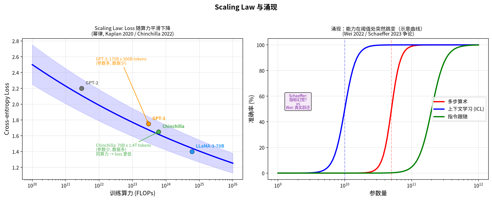
过拟合与正则化：训练损失低 \(\neq\) 泛化好
Scaling Law 说训练损失随参数量和数据量平滑下降。但这里藏着一个陷阱：训练损失低不代表模型泛化好。如果数据量不够，大模型会把训练样本的细节（包括噪声）逐个记住，训练损失确实低，但在新数据上表现更差——这就是过拟合（overfitting）。
Chinchilla 的贡献正是从这个角度出发的：GPT-3（175B 参数、300B tokens）严重欠训练——参数太多、数据太少，模型把容量浪费在记忆而非理解上。Chinchilla 的结论”参数量和数据量同步扩大”本质上是在说：别让模型的容量超过数据能支撑的范围。
但实践中你不可能永远有足够数据。当数据量固定时，防过拟合靠三类手段：Weight Decay（权重衰减）限制权重幅度、Dropout 强制信息分散、早停（Early Stopping）在过拟合拐点刹车。三件工具都是把约束写进训练过程的直接手段。
一句话总结：Scaling Law 告诉你”加参数加数据”，正则化告诉你”数据不够时怎么防模型走偏”。现代大模型预训练主要靠 Chinchilla 配比（数据量匹配参数量）从根源上避免过拟合，Weight Decay 作为辅助；Dropout 在大模型预训练中已很少使用（数据量足够大时过拟合风险低），但在微调阶段仍有价值。
2.4 写作：潜空间通过文字接口的第一种表达
预训练完的基座模型第一个显现的能力是写作——从简单续写（GPT-2 时代）到长文创作、风格模仿、多语言互译、格式转换。这一节讲两件事：写作能力从潜空间的哪里来、In-Context Learning（ICL）为什么可能。
写作能力的潜空间基础
写作不是”记住句子模板然后填空”，是在潜空间里做条件生成：给定 prompt 对应的向量，模型在潜空间中找到条件概率最高的下一个 token 的向量表示，再翻译回文字。风格、逻辑、事实——都是潜空间中某些方向的编码。
证据一：SAE 揭示的风格特征。Anthropic 的 SAE 工作在 Claude 3 Sonnet 上找到了明确对应”莎士比亚风格”“正式学术风格”“俚语口语”的可解释特征。用一个开关放大这些特征，模型的输出风格就随之切换。这说明”风格”不是幻觉——是潜空间中真实存在的可操作方向。
证据二：多语言迁移。同一个基座模型能翻译从没见过配对数据的语言对（zero-shot translation）。这只能解释为：语义在潜空间中是跨语言共享的——中文的”猫”和英文的”cat”在潜空间里指向相近的方向，只是通过不同的 token embedding 表达。写作能力的本质是操纵这些语义方向，语言只是最后的解码步骤。
In-Context Learning：不改参数就能学新任务
你给模型看几个例子（比如 3 对”英文→法文”翻译），再给一个新的英文句子，模型就能直接翻译——全程没做任何参数更新。这个能力叫 In-Context Learning（ICL），由 GPT-3 论文（Brown 等 2020）系统描述。
ICL 为什么可能——mech interp 研究给出了机制性回答：
- Induction Heads（Olsson 等 2022, Anthropic）：Transformer 的某些 attention head 学会了”看到 A → B 的模式，遇到 A 时预测 B”的电路。这是 ICL 的最小基础电路。
- N-gram interpolation 视角（近年的多项后续工作）：induction heads 实际实现的可能是软性 context matching + smoothing——精确匹配和部分匹配的贡献按重叠度加权，类似经典语言模型中 Jelinek-Mercer 插值的连续版本。这为 ICL 提供了更精确的数学刻画。
- 时序依赖维护：进一步的研究揭示 induction heads 不只是模式匹配，还在维护上下文中的时序依赖——这解释了为什么 ICL 能处理需要跨多步的任务。
ICL 的边界：几个例子（few-shot）能让模型”临时学会”简单任务，但不能改变潜空间的深层结构。这就是为什么写代码、做复杂推理这些能力必须靠预训练（§2.5、§2.6），不能靠 ICL 临时凑出来。
回指 Ch3：ICL 是”不改参数的学习”，Ch3 的推理算力（test-time compute）是”不改参数的思考”。它们都是在冻结的潜空间中做临时操作。RLHF（基于人类反馈的强化学习）/DPO（Direct Preference Optimization，直接偏好优化）才是修改潜空间本身——把某些方向拉近、把某些方向推远，让模型稳定地偏好某类输出。
2.5 编程：为什么代码训练让模型全面变聪明
Codex（OpenAI 2021）证明：在大量代码上训练的语言模型能生成可运行的程序。这本身已经很有用。但逐渐清晰的一个观察是：在预训练数据里加大量代码，模型的自然语言推理能力也显著提升（Ma 等 2023 “At Which Training Stage Does Code Data Help LLMs Reasoning”；Aryabumi 等 2024）。
为什么代码训练同时提升自然语言推理——三条互补的解释：
- 代码是最严格的推理训练数据。写代码强制模型学会：变量作用域（长距离依赖）、控制流（分支和循环的语义）、类型（对象的属性）、函数组合（抽象和调用）。这些不是”编程技能”——是结构化推理的通用形态。潜空间学到的推理电路可以被自然语言任务复用。
- 代码-自然语言双语训练建立更清晰的潜空间几何。同一个概念（“排序”“过滤”“查找”）在代码和自然语言中都有对应表达，训练时模型被迫在潜空间里把两种表达对齐。这种对齐迫使潜空间的语义方向更精确——不能只靠语言表面的相关性，得抓到真正的概念。实证支持：probing 实验发现，在代码上训练过的模型，其中间层表示在”语义角色标注”（判断一句话里谁是主语、谁是宾语）任务上的 linear probe 准确率显著高于纯文本训练的同规模模型——说明代码训练让潜空间里的语法结构更清晰，不只是”多学了门语言”。
- 代码有清晰的正误信号。自然语言的”对错”是模糊的，代码要么运行要么不运行——这在 RL 阶段（Ch3）尤其重要：verifiable reward 让 RL 训练稳定收敛（DeepSeek-R1、o1 的成功都建立在这个基础上）。但代码推理的奖励设计比数学更难——数学答案可以精确匹配，代码的”对”涉及结构复杂性（通过全部测试不等于最优解），所以 certainty-based 内部反馈在代码推理上的效果不如在数学上显著。
数字演示④：主流基座的代码数据占比（公开信息和推测）
| 模型 | 训练数据估算规模 | 代码占比 | 推理能力（HumanEval） |
|---|---|---|---|
| GPT-3 (2020) | 300B tokens | ~5% | 0%（未针对性优化） |
| Codex/GPT-3.5 | +100B 代码 tokens | —（未公开） | ~48% |
| Code Llama (2023) | +500B 代码 | ~50%+ | ~53% |
| DeepSeek-Coder-V2 | 6T tokens | ~87% | ~90% |
| GPT-4 / Claude Opus 4.5 / Grok 4.5 | 未公开 | 估算 20-40% | 90%+ |
Grok 4.5（2026.07）明确定位为编程/Agent/知识工作三大场景之一，与 Cursor 联合训练强化软件工程能力。这不是”顺便”——是当前基座模型竞争的主战场。
回指心法：代码不是”另一种模态”——是文字接口下的一种特殊表达形式。潜空间不区分”这段是代码还是自然语言”，只区分”这里需要什么样的语义方向”。所以代码训练能反哺自然语言推理——它们共享同一个潜空间。
2.6 思考：从提示技巧到潜空间内化
写作是潜空间的第一层能力（浅层生成），编程是第二层（结构化推理）。思考——多步推理、假设-检验、自我纠错——是第三层，也是当前 LLM 能力跃迁最剧烈的方向。
本节只讲定位，不讲算法。这一节回答”思考能力怎么从无到有、从浅到深”的演进问题。具体的训练算法（GRPO）、行为证据（aha moment）、军备竞赛数据——这些在 §3.3 展开。这里只做一件事：把思考能力在潜空间中的位置讲清楚。
演进三阶段：
阶段一：Chain-of-Thought 提示（2022）。Wei 等发现只要在 prompt 里写”Let’s think step by step”，模型的推理能力就大幅提升。这不是新能力——是用 prompt 引导模型激活潜空间中已有的推理电路。
阶段二：Chain-of-Thought 微调。收集大量”问题 + 推理过程 + 答案”的数据做 SFT，让模型无需 prompt 就自动生成推理链。这一步开始修改潜空间本身——把”推理链前置”从一个偶发行为变成默认行为。
阶段三：推理内化（o1/R1，2024.09 起）。test-time compute 通过 RL 训练被内化到参数里——模型在推理时会自动生成大量内部”思考 token”（有时几千到几万个），这些 token 不给用户看，只在模型内部流转。o1（OpenAI 2024.09）是第一个大规模落地的推理模型；DeepSeek-R1（2025.01）用 GRPO 算法在更低成本下复现了类似能力，且开源；Gemini Flash Thinking（2024.12）、Grok 4（2025.07）、Claude Opus 4.5 等推理模型密集发布，形成当前的推理军备竞赛。
为什么”内化到参数”是质变（这也是 §3.3 test-time compute 定义演变的核心）：
- CoT prompt 时代：能力是用户激活的——你写好 prompt 才能拿到深度推理
- CoT 微调时代：能力是默认的浅层——模型会生成推理链但没有真正深入
- 推理内化时代：能力是模型拥有的——模型自己决定要不要花时间想、想多久、什么时候停
Snell 等 2024（“Scaling LLM Test-Time Compute Optimally Can Be More Effective than Scaling Model Parameters”）证明了 test-time compute 本身也符合 scaling law——花更多推理算力能持续提升准确率，且在某些任务上比扩大参数量更有效。推理算力由此成为与参数量并列的 scaling 维度。
和 §2.4 ICL 的关系：ICL 是”临时激活”，推理内化是”永久激活并塑形”。前者依赖 prompt 提供的临时上下文，后者依赖训练时被塑形的潜空间结构。ICL 有天花板（几个例子塑造不了深层电路），推理内化没有——你可以让 R1 花 10 万 token 想一个问题。
§3.3 会承接这一节：详细讨论 o1/R1/Gemini 3 Pro/Grok 4 军备竞赛的具体数据、GRPO 算法、“aha moment”。这里只做定位——思考是潜空间的第三层能力，它的完整机制是 Ch3 炼灵的主题。
2.7 三种能力的相互作用
写作、编程、思考不是三个独立模块——是同一个潜空间在不同接口下的表达。它们的相互增强构成 LLM 能力跃迁的核心引擎。
涌现顺序（观察，非严格定律）：
- 写作先出现——语料充足、任务浅、评估指标模糊（“读起来像不像人写的”），几十亿参数就有基本水平。
- 编程次之——需要更多代码数据、更严格的正确性反馈，一百亿到一千亿参数量级才稳定。
- 思考最晚——需要在写作和编程能力都成熟的基础上，加上 RL + verifiable reward 才能塑形出稳定的深层推理。
为什么这个顺序：底层是潜空间被塑形的深度递增。写作只需潜空间有”合理的连续性”（下一个 token 是可预测的），编程需要”结构化操作对齐”，思考需要”多步可验证的推理链嵌入到参数里”。每一层都必须建立在前一层之上——没有会写作的模型，没法训练会编程的模型；没有会编程的模型，没法在 verifiable reward 上稳定训练会思考的模型。
相互增强的三条路径：
- 代码 → 推理：§2.5 讨论过。代码数据反哺自然语言推理。
- 推理 → 写作：会推理的模型写长文时逻辑更连贯、论证更严密。Claude Opus 4.5 和 GPT-5.5 在长文创作上明显强于初代 GPT-4——不是词汇更丰富，是内部推理让结构更稳。
- 写作 → 编程：能写好文档、注释、README 的模型，也更容易生成可维护的代码。这不是玄学——写作训练让模型学会在自然语言层描述意图，这种能力直接迁移到代码的抽象层次控制。
图7b：三种能力的相互增强与涌现顺序
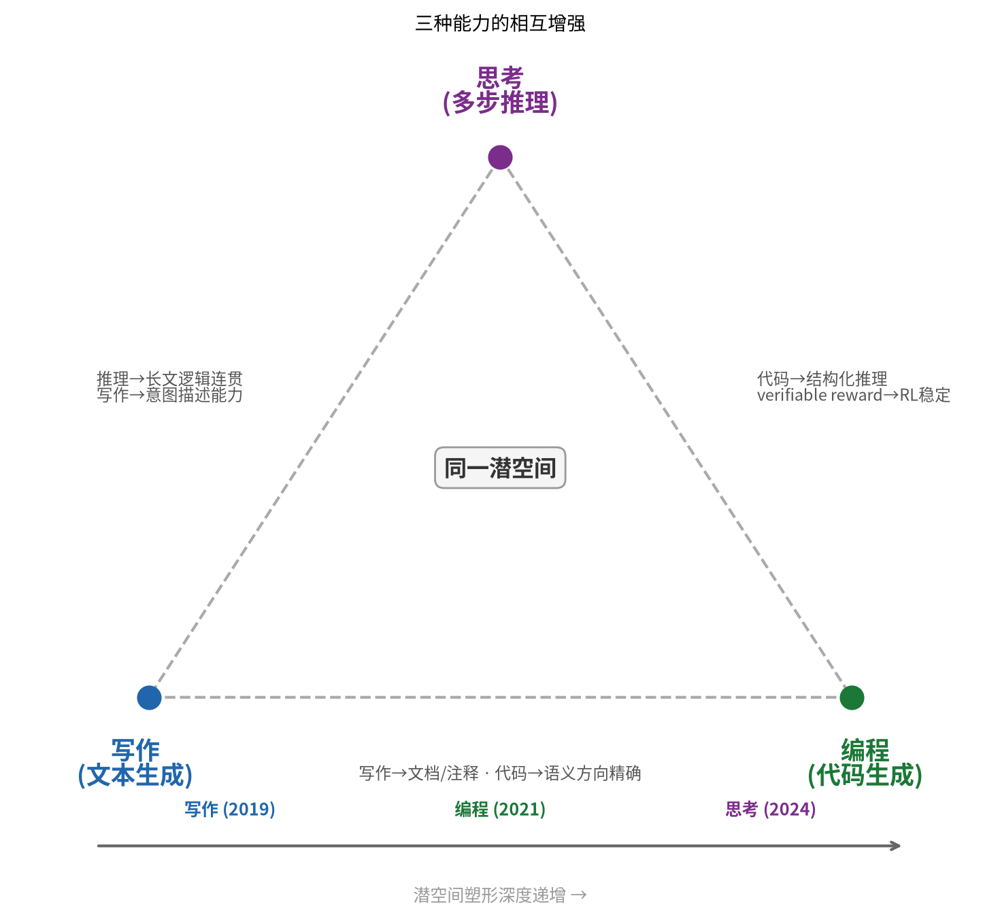
写作的 scaling 天花板已至（观察）。GPT-5、Claude 4.5、Gemini 3 在纯写作任务（如新闻改写、邮件生成）上的相对差异已经很小——大家都很好。编程和思考仍在快速拉开差距——Grok 4.5 vs Claude Opus 4.5 vs GPT-5.5 在编程 benchmark（SWE-Bench Verified、Terminal-Bench）上的分差远大于在写作任务上。这说明：2026 年基座模型的竞争焦点已经从写作转移到编程和思考。
AI落地：评估一个新模型时，看它在编程和思考的深度基准（不是浅层 benchmark），而不是看它写文章漂不漂亮。前者反映潜空间的深层结构，后者已经饱和。
协同不等于一致——认知失谐。三种能力相互增强，但增强不等于同步。一个在标准数学题（GSM8K）上准确率 90% 的模型，把题目里的人名和数字换一下（GSM-Symbolic），准确率可能掉到 65%——因为原题的特定表述恰好激活了正确的推理电路，稍作改写便激活不了。这种同一能力在不同查询上剧烈波动的现象叫认知失谐（借这个词表示”能力发挥不稳定”，与心理学里的”认知失调”是两码事）：潜空间的分布式表示让某些查询能激活能力、某些查询不能，而且难以预测哪一次会失灵。§2.11 会把认知失谐作为基座的结构性局限展开讨论。
Part A 小结：你已经掌握了什么
到这里，你已经能回答：潜空间不是比喻，而是 token 经过 Transformer 后形成的向量空间；预训练把世界压进这个空间，写作/编程/思考是同一个潜空间经文字接口的三种表达。
如果这些还模糊，回看 §2.0–§2.7 再进入 Part B。
Part B：多模态接入与基座局限
Part B 核心：多模态是让更多外界信号进入同一个潜空间；基座局限决定了后续对齐与系统工程。
这一部分看更多模态怎么接入同一个潜空间，以及基座有哪些结构性局限。
2.8 后接式多模态：三件套与架构创新
前面七节讲的是基座在潜空间里长出的通用能力（写作/编程/思考）——文字接口下的表达。基座模型的价值不止于此：同一个潜空间可以接入更多外界模态（图像/音频/视频/3D/触觉），让通用推理在感官层面也能表达。接入有两条路线：后接式——先有 LLM，再外挂视觉编码器（本节）；原生多模态——从预训练开始就把所有模态混合进同一个模型（§2.9）。关键视角（回指 §1.0 心法）：多模态不是”给 LLM 加眼睛”，是”把视觉信号翻译进已经存在的潜空间”——潜空间不需要为视觉重建。
生活类比：眼睛、适配器和大脑怎么分工？
想象一个只会读写不会看图的天才——他大脑很好用（LLM），但看不见。你给他配了三样东西：
- 眼睛（视觉编码器）：一台摄像头，能把画面变成信号
- 适配器（连接器）：把摄像头的信号变换成盲人天才能理解的格式
- 大脑（LLM）：接收变换后的信号，结合文字输入，生成回答
盲人天才本身不需要改——他依然用”续写”的方式工作（预测下一个 token）。适配器的工作是让视觉信号”看起来像文字 token”，这样大脑就能用同一套机制处理图和文。
这就是 LLaVA / BLIP-2 的三件套范式。另一条路是”原生多模态”——不靠一套冻结的现成眼睛和适配器，而是让眼睛（视觉编码器）也从小一起学，长成一个天生能感知的人。GPT-4o 和 Gemini 走的就是这条路。
图8：三件套架构 vs 原生多模态
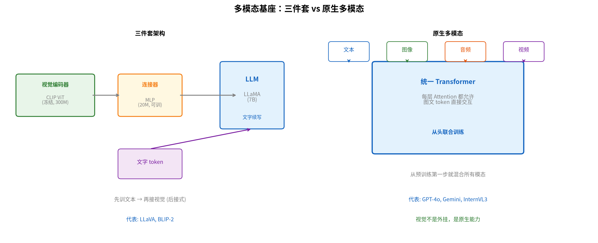
三件套架构（LLaVA / BLIP-2 范式）
架构由三件组成：
- 视觉编码器：CLIP ViT-L/14，冻结不训练（~300M 参数）
- 连接器：一个 MLP（两层线性变换+GELU 激活），把视觉 token 投影到 LLM 的词嵌入空间（~20M 参数；工程上常叫投影器，即上文生活类比里的适配器）
- LLM：LLaMA / Qwen（7B–70B 参数）
数字演示⑤：一张图的完整旅程
输入一张 \(336\times336\) 的图片（LLaVA-1.5 的标准输入）： - ViT 切成 \((336/14) \times (336/14) = 24 \times 24 = 576\) 个 patch - 每个 patch 投影成 1024 维向量 - ViT 输出 576 个视觉 token - 连接器（MLP）把这 576 个 1024 维向量投影成 576 个 4096 维向量（对齐 LLaMA-7B 的隐藏维度） - 这 576 个视觉 token 拼在文本 token 前面：[图token$\times$576] [文token$\times$N] - 整个序列送进 LLaMA-7B 走标准前向
刚走过的路上出现了两次”投影”，别混：ViT 里的 patch 投影是编码器内部的起步动作，把像素块拉平成向量、再做一次线性变换，让图片长出向量表示；连接器（MLP）的投影则是把编码器已经得到的视觉特征”映射”进 LLM 的词嵌入空间，让视觉 token 和文本 token 在同一个空间里被统一建模。前者是”原料加工”，后者是”换语言”——把这两步分清，后面看”冻结编码器、只训投影器”的配方才不容易犯糊涂。
顺带回答一个大问题：为什么一个冻结的图像塔配一个轻量 MLP，就能把图接进 LLM？答案在 §2.1——CLIP 的图像塔是在图文对比预训练里和文本塔一起被拉进同一空间的，它的特征天生”住在文字附近”。于是投影器不必重新教会它读图，只需把”CLIP 的图文对齐空间”换轨到”目标 LLM（比如 LLaMA-7B）的隐空间”。这正是后面”冻结不是妥协、只训投影器够用”（§2.8 的”再验证”）能成立的结构性原因。
这个”换轨”为什么这么便宜？先分清一件事：这种对齐首先是行为层面的对齐——图文问答表现一致，并不等于两种表征在几何上同构。至于它为什么能成立，有两层原因。第一层：不同模态的表征在局部邻域的相似性上保留着有限的拓扑共识——猫图与猫文在 CLIP 空间里邻近，但这种”局部结构相似”远不是全局同构；投影器不需要重建整张对应图，只需顺着有限的共识找到方向。第二层，也是更关键的一层：投影器在海量图文对（对比损失或生成损失）下学到的，是一个从视觉空间到语言空间的近似映射接口，而不是在单纯放大先天存在的局部共识——接口的映射能力来自配对数据的规模与训练目标本身。
数字演示⑥：三件套参数账
| 组件 | 参数量 | 占比 | 训练时是否更新 |
|---|---|---|---|
| 视觉编码器（CLIP ViT-L/14） | ~300M | 4.1% | 冻结 |
| 连接器（MLP） | ~20M | 0.3% | 更新 |
| LLM（LLaMA-7B） | ~7B | 95.6% | 阶段2更新 |
| 合计 | ~7.32B | 100% | — |
视觉编码器只占 4.1% 的参数，却承担了全部视觉感知。LLM 占 95.6%，是绝对主力。这就是”三件套”的经济性——不需要从头训练视觉系统，直接复用 CLIP 的成果。
训练分两步：谁冻结谁更新
阶段1：对齐预训练
目标：让连接器学会”把视觉 token 映射成 LLM 能理解的格式”。
- 数据：约 55.8 万对图文（CC3M/CC12M/LAION 过滤子集 LCS-558K），图片配 alt-text
- 冻结：视觉编码器 + LLM
- 只训：连接器（20M 参数）
- 学习率：\(2 \times 10^{-3}\)
数字演示⑦：阶段1的学习率对比
阶段1只更新 20M 参数，学习率 \(2 \times 10^{-3}\)。每个参数的更新幅度 \(= \text{LR} \times \text{梯度} \approx 2 \times 10^{-3} \times \text{梯度}\)。
阶段2更新 7.02B 参数（连接器+LLM），学习率 \(2 \times 10^{-5}\)。每个参数的更新幅度 \(\approx 2 \times 10^{-5} \times \text{梯度}\)。
有效更新幅度差 100 倍。阶段1”猛训”小连接器让它快速学会映射；阶段2”微调”大 LLM 让它适应视觉输入，但不能太猛——否则会破坏 LLM 已有的语言能力。
阶段2：指令微调
目标：让模型学会”回答图片相关的问题”，而不是只学会描述图片。
- 数据：约 66.5 万条指令数据（含 GPT-4 生成的 15.8 万条多模态对话与学术视觉问答（VQA）数据）
- 冻结：视觉编码器
- 更新：连接器 + LLM
- 学习率：\(2 \times 10^{-5}\)
数字演示⑧：Q-Former 的压缩
BLIP-2 不用 MLP 做连接器，而用 Q-Former——一个带 32 个可学习 query 的小 Transformer。32 个 query 通过 Cross-Attention 从 576 个视觉 token 中”提取”信息，输出 32 个压缩后的视觉 token。
压缩率：\(576 / 32 = 18:1\)。好处：LLM 的上下文少了 544 个 token，推理更快。代价：信息有损——32 个 token 能否充分表达 576 个 patch 的内容？实践中 Q-Former 在简单任务上表现好，复杂视觉推理任务上不如 MLP（不压缩）。
为什么视觉塔一直冻结：CLIP 在 4 亿对图文上训练，已经学到了很好的视觉表示。微调视觉塔可能让它”偏移”——为了适应下游任务而破坏 CLIP 学到的通用对齐。所以视觉塔全程保持冻结、不参与后面的训练，这一步的出发点正是保护对图文的通用理解（再验证会把”保护”推到多远，见下文）。
数字演示⑨：一条指令微调数据
{
"image": "cow_on_beach.jpg",
"conversations": [
{"from": "human", "value": "What is unusual about this image?"},
{"from": "gpt", "value": "A cow is sitting on a beach, which is unusual because cows typically live in pastures or farms, not on sandy beaches near the ocean."}
]
}模型看到的输入序列：[图token$\times$576] [What is unusual about this image?]，目标是生成 GPT 的回答。训练时用交叉熵损失逐 token 计算损失，只对 GPT 回答部分计算梯度。
数字演示⑩：视觉 token 在上下文中的占比
一条典型的多模态对话： - 图片：576 tokens - 用户问题：“What is unusual about this image?” → ~8 tokens - GPT 回答：~30 tokens - 总序列长度：576 + 8 + 30 = 614 tokens
图片占 \(576 / 614 = 93.8\%\)。这意味着推理时绝大部分计算量花在处理图片 token 上。这就是为什么 Ch1 的 token 化效率很重要——如果图片 token 太多，上下文窗口和计算成本都会爆炸。
再验证：只训投影器就够吗？——冻结的范围有多大？
讲完两步怎么跑，再回头看它们站不站得住。阶段1”双冻结、只训连接器”（视觉编码器和 LLM 都不动，只训练中间的连接器）的系统性再检验给出了出乎意料地强的结论。
Iskandar 等 2026 “Projector Is All You Train”（arXiv:2608.19726）在 3D 多模态模型上对比了两种训练方式：只训投影器 vs 投影器和 LLM 联合训练。结果：只训投影器的多模态性能与联合训练相当甚至更好；反而是联合训练让 Llama-3.1-8B-Instruct 的原有语言能力严重漂移——阶段2 把学习率调小 100 倍想避免的那种破坏，全参数联合训练防不住。附带的好处很实际：只训投影器的训练样本吞吐约为联合训练的 2 倍。
生成侧的独立证据（Pan 等 2026 “RepFusion”，arXiv:2606.14700）：Meta 团队冻结整个 MLLM（多模态大语言模型）、只微调它的投影器，把它当作文生图扩散模型的视觉编码器来用——并观察到保持骨干冻结的效果甚至优于微调骨干，因为微调会破坏预训练沉淀下来的表征先验。
两条独立证据把本节的经验法则立为当下的设计原则：冻结不是妥协而是保护，且需要保护的远不止视觉塔——LLM 骨干本身常常也不该动（这里说的是预训练期的对齐与微调配方；下游任务二次微调时按场景对视觉塔做 LoRA 甚至解冻，是另一回事）。开源实践因此普遍倒向一条保守路线：视觉编码器全程冻结、投影器全量训练，LLM 只动顶部几层或挂 LoRA。
当然要诚实地说出代价：算力省了，细节可能就丢了——投影器学不到位时，细粒度视觉信息会悄悄流失，最先掉分的往往是最吃细节的任务（OCR、图表读数）。好在补救并不贵：Yoon 等 2025 “Visual Representation Alignment”（VIRAL，arXiv:2509.07979）给训练目标加一个正则项，把 MLLM 内部的视觉 token 与预训练视觉模型的中间特征对齐，保住细节的同时提升视觉定位类推理；同样的思路已被复用到 3D 场景（PointAlign，arXiv:2603.00412）。
细节为什么最容易丢？上文说”投影器学不到位时会流失”，其实这只是表象——更深的结构性原因是跨模态对齐中天然存在的模态不对称性：为了适配文本语义，模型倾向于把丰富的视觉特异性信息压缩成对语言更友好的表示。语言抽象离散，图像连续细密，“对齐到语言”本身就意味着把后者压向前者。理解了这一点，VIRAL / PointAlign 这类”让视觉 token 向预训练视觉特征靠拢”的正则项就不难懂：它们是在对齐的同时，从语言那一侧往回拉一把，替特异性细节争取保留空间。
还有一个容易被忽视的变量：阶段1的数据质量。LLaVA 团队 2024 年的系统消融发现一个反直觉现象——只调投影器时，用公开原始图文对做数据 scaling 几乎无效，换成高质量 caption 混合后 scaling 才恢复有效；ShareGPT4V（Chen 等 2023, arXiv:2311.12793）用 GPT-4V 重写的高质量 caption 验证了同一结论。适配器的培训材料，贵在准而不在多。
最后用一笔数量级账收尾：对齐阶段到底有多便宜？Kimi-VL（Kimi Team 2025, arXiv:2504.07491）的配方给出答案——其原生分辨率视觉编码器 MoonViT 先用约 2T token 做视觉侧预训练（对比学习加看图说话的 CoCa 式双目标），随后只用约 0.1T token 与语言模型做模态对齐。\(2T / 0.1T = 20\)：对齐阶段的数据预算只有视觉预训练的 1/20。这正是阶段1的设计逻辑——适配器只需学会”映射”，不必重学”感知”；感知由视觉预训练承担，映射由小规模高质量数据塑造。
架构创新：连接器形态与视觉推理
三件套的架构看似简单——编码器 + 连接器 + LLM，但每个组件都仍在快速进化。这里讲三个最有影响力的方向。
连接器：从 MLP 到 Pixel Shuffle
上文讲了两种连接器：MLP（不压缩）和 Q-Former（压缩 18:1）。主流模型已转向 Pixel Shuffle（像素重排）：把视觉 token 的空间维度重新排列进通道维度——比如把 \(2\times2\) 个相邻 patch 的特征拼成一个更宽的向量，token 数减少到原来的 1/4，但每个 token 携带更多信息。
这不是压缩——信息量不变，只是重新打包。好处是 LLM 上下文里的视觉 token 减少到原来的 1/4，但视觉细节没有损失。Qwen2-VL、Qwen3-VL、InternVL3 都用 Pixel Shuffle 或类似策略。
主流为什么选 Pixel Shuffle 而不是 Q-Former？Q-Former 用 32 个可学习 query 从 576 个视觉 token 中”提取”信息——这本质上是有损压缩，32 个 token 无法充分表达 576 个 patch 的内容；Pixel Shuffle 保留了全部信息，只是减少了 token 数量。在 OCR、文档理解等需要精细视觉的任务上，信息保留至关重要。
这条线上还有一个当前方向：压缩与连接器解耦。既然 token 数是成本的一阶变量，压缩未必要在投影器里一次做完——Deniz 等 2026 提出注意力驱动自压缩（ADSC，Attention-Driven Self-Compression，arXiv:2602.12618），在 LLM 内部选定层做均匀 token 下采样形成瓶颈，让模型借自身注意力学会重组压缩视觉信息，计算量（FLOPs）与推理时的注意力缓存（KV cache，第 4 章的主角之一）都降低超 50% 而精度不掉；同方向还有学习式压缩 EvoComp（CVPR 2026）与免训练方案 VisionTrim（ICLR 2026）。投影器也未必是必经之路——§2.9 会讲到更激进的 encoder-free 一脉。
DeepStack：视觉特征注入多个层级
三件套有一个结构性缺陷：视觉 token 只在 LLM 的第 1 层进入，之后全靠 LLM 各层的 Attention 传递。深层 LLM 处理复杂推理时，原始视觉细节可能已在层间传递中衰减——就像你看了张地图后开始导航，走到一半发现地图细节已经模糊了。
Qwen3-VL 的 DeepStack（Qwen Team 2025 技术报告，arXiv:2511.21631）给出了简洁的解法：不再让所有视觉信息挤在第 1 层入口，而是把视觉编码器不同层级的特征经轻量残差连接分别路由到 LLM 的对应层——多层融合，且不增加上下文长度。这样模型在不同处理深度都有新鲜可查的视觉证据，而不是只依赖第 1 层传上来的残余记忆。
效果在需要精确视觉推理的任务上显著提升——几何题、图表理解、细粒度 OCR。DeepStack 证明了一个原则：视觉信息不只应该在入口注入，还应该在推理深处保持可访问。
Thinking Mode：视觉推理链
视觉推理链是推理算力思路在多模态的落地：推理模型（o1/R1）让模型自己决定”想多久”，这个能力已被引入 MLLM——Qwen3-VL 的 Thinking Mode 让模型在回答视觉问题前，先生成一段 <thought> 推理链。
比如看一道几何题：普通模式直接猜答案；Thinking Mode 先在内部推理”这两个三角形共享一条边，所以对应角相等，因此……“，再输出答案。和 o1 的推理链一样，这是训练出来的能力，不是提示词。
视觉推理链的价值在幻觉控制上：模型在”想”的过程中会检查自己的视觉观察——“等等，图里画的不是直角”——然后纠正。这比直接输出答案的幻觉率低得多。ICML 2026 上的 Visual Para-Thinker 进一步把并行思考引入视觉推理——多条推理路径同时探索图像不同区域，在计数和幻觉 benchmark 上显著提升。
回指：这三个创新都解决了 Ch1 的核心问题——token 化只是入口，怎么让 token 在模型内部有效协作才是筑基的真正难题。NaViT（§1.2）解决输入端的分辨率问题，DeepStack 解决输出端的视觉信息保持问题，Thinking Mode 解决推理过程中的视觉验证问题。
动手：把三件套跑起来
动手：把三件套跑起来（MiniMind 玩具级复现，2026-08 快照，可跳过）
三件套的每个部件都拆开看过了，有没有办法亲手把它们组装起来训练一遍？百亿参数的模型个人设备连部署都困难，但这个范式有一个玩具级的开源复现：MiniMind 系列（github.com/jingyaogong/minimind，Apache 2.0 协议）——一个覆盖预训练到微调全流程的小型语言模型项目，单张消费级显卡几小时即可跑完，并扩展出了视觉模态版本 MiniMind-V。它的价值不在效果，而在把本节的每个抽象主张变成可以亲手验证的实验。
先看结构对应——MiniMind-V 就是三件套的等比缩小版（视觉编码器用的 SigLIP2 可理解为 CLIP 的迭代升级，同为图文对比预训练出身）：
| 三件套 | MiniMind-V 实现 | 参数量 | 是否更新 |
|---|---|---|---|
| 视觉编码器 | SigLIP2（p32：256×256 → 8×8=64 patch token） | ~95M | 全程冻结 |
| 连接器 | LayerNorm + 两层 MLP（Linear→GELU→Linear），输出 64 个 visual token | ~1M | 更新 |
| LLM | MiniMind 语言模型 | ~64M | 按冻结档位 |
| 整机（dense） | 以上三件合计 | ~160M | — |
投影器是这套玩具里最值得拆开看的部件：SigLIP2 已冻结，它把一张 256×256 的图按 patch_size 32 切成 8×8=64 个 patch，编码后输出 64 个 768 维的视觉特征。连接器要做的就是把它们投影到 MiniMind 的隐藏维度，让视觉特征和文本 token 落进同一个语义空间——这是”跨模态对齐”的最小实例。分工和 LLaVA 一样：编码器负责读懂、语义在它那一侧成型，投影器不添语义、只换语言（§2.8 前面的数字演示⑤）。MiniMind-V 采用与 LLaVA-1.5 相同的方案：LayerNorm + 两层 MLP（Linear→GELU→Linear），输入 64×768、输出 64 个 visual token，像文本 token 一样填入 64 个 <|image_pad|> 占位符的位置参与后续生成。因为选的是 P32 规格，原生输出就是 64 token，不需要再做压缩。整个投影器约 1M 参数，是”冻两端、只训适配器”（--freeze_llm 2）时唯一真正在动参数的部件。
成本同样真实可查：单卡 3090 上 SFT 一个 epoch 约 2 小时、租卡成本约 3 元人民币（README 口径）——一杯奶茶钱，就能把本节讲的两阶段流程在自己手里过一遍。数据规模也透明可查：Pretrain 约 127 万条 caption（约 64 万张图），SFT 约 290 万条多模态对话，全部开源可直接下载。
最有意思的是，训练脚本把”谁冻结谁更新”做成了一个显式开关 --freeze_llm：
| 档位 | 可训练部分 | 对应本节 |
|---|---|---|
| 2（Pretrain 默认） | 仅投影器 | 阶段1：双冻结两端，只训适配器 |
| 1（SFT 默认） | 投影器 + LLM 首尾层 | 阶段2 的保守版：LLM 只动首尾、保留中间层语言能力 |
| 0 | 全部参数 | 激进的联合训练 |
注意 SFT 的默认档位——投影器全量加 LLM 首尾层——恰好就是上文”再验证”给出的共识配方的微缩版。于是有两个此前停留在论文层面的主张，现在可以在自己的电脑上一夜验证：①--freeze_llm 2 与 0 各跑一轮 SFT，对照”只训投影器是否真的够用、联合训练是否伤语言能力”；②跳过 Pretrain 直接 SFT（仓库说明 SFT 数据已合并 Pretrain 子集，支持这种跑法）与先 Pretrain 再 SFT 对照，亲自回答”对齐阶段是否必要”这个开放问题。
这个仓库家族还有几个衍生项目可当练习：MiniMind-O（文/音/图输入、流式语音输出，对应 §2.9 原生多模态）、MiniMind-dLM（把自回归主线改成离散扩散语言模型）、MiniMind-Linear（线性注意力变体，对应 §2.11 长上下文）——这些项目迭代很快，具体以仓库最新 README 为准。
信息边界：MiniMind 迭代很快——这里的实现与数字均为 2026-08 快照（编码器、投影器、训练档位都可能更新），动手前以仓库最新 README 核对。
2.9 原生多模态与路线收敛
§2.8 走完了后接式路线：先有 LLM 再外挂视觉，从三件套讲到架构创新。另一条路线——原生多模态——从预训练开始就把所有模态混合进同一个模型。这一节讲原生路线的构成，以及两条路线如今收敛成了什么。
原生多模态：从预训练开始混合所有模态
三件套是”后接式”——先有 LLM，再外挂视觉编码器。原生多模态从预训练开始就把所有模态喂进同一个模型。两者的区别：
| 维度 | 三件套（后接式） | 原生多模态 |
|---|---|---|
| 视觉编码器 | 独立，冻结 | 从预训练开始联合训练，非后接冻结 |
| 模态交互 | 通过连接器有限交互 | 每层 Attention 都允许图文 token 直接交互 |
| 训练数据 | 文本预训练 + 图文对齐微调 | 从头混合文本+图+音 |
| 代表系统 | LLaVA, BLIP-2, Qwen-VL | GPT-4o, Gemini, InternVL3 |
数字演示⑪：原生多模态训练数据配比（推测）
GPT-4o 和 Gemini 的训练数据配比未公开。根据行业分析和类似规模模型的开源复现（如 DeepSeek-VL2），推测： - 文本：~70%（互联网爬取的网页、书籍、代码） - 图文对：~20%（图片+描述/问答） - 音频：~10%（语音+转录/对话）
关键：文本仍占主体。原因是文本数据的量级（~10T tokens）远超多模态数据（~100B 对图文），且文本承载了最多的知识和推理能力。
原生多模态的现状
原生多模态如今是主流路线之一：InternVL3（上海 AI Lab，MIT 协议）从初始化的第一步就把视觉编码器和 LLM 的权重全部解冻，在海量交错图文（interleaved image-text data）上端到端联合训练，放弃”先训文本再接视觉”的分阶段策略。
结果出人意料：InternVL3 不仅多模态 benchmarks 超越同期的后接式模型，纯文本性能也反超了它用的 LLM 基座（基座是 Qwen2.5；论文自报，作者归因于联合训练的泛化效应，但机制尚未被独立复现，也有数据配比效应的替代解释）。这说明视觉信号不是语言能力的负担——如果从头联合训练，多模态数据有可能增强模型的泛化能力。
InternVL3.5（2025.08）进一步引入级联强化学习：第一阶段用 MPO（混合偏好优化）学习人类偏好，第二阶段模型自己生成推理步骤、用过程奖励模型打分、自我进化。在 MMMU 和 MathVista 等推理榜单上超越 GPT-4o。
开源 MLLM 的技术路线已收敛为三个方向：
| 路线 | 核心思路 | 代表模型 |
|---|---|---|
| 原生多模态 | 视觉编码器和 LLM 从头联合训练 | InternVL3/3.5, GPT-4o, Gemini |
| 大编码器 + LLM | 强视觉编码器 + LLM 骨干 + 投影层对齐 | Qwen3-VL, LLaVA-NeXT |
| 图文统一框架 | 同一个 Transformer 同时处理图像理解和生成 | DeepSeek Janus-Pro |
后接式没有消亡——Qwen3-VL（235B MoE（混合专家），开源 VLM 天花板，MMMU 87.1%）走的就是大编码器 + LLM 路线，靠 NaViT 原生分辨率 + DeepStack 视觉注入（§2.8 架构创新节）等架构创新逼近原生多模态的效果。路线之争不再是”谁一定更好”，而是”不同场景下的选型取舍”。
这张”三分收敛”的表还漏了更激进的一支：encoder-free——不设独立的视觉编码器，也不设投影器，把”画面如何变成 token”直接学成模型自身的一部分（图像 tokenizer 或连续向量）。别把两件事混为一谈：原生多模态（GPT-4o、InternVL3）内部其实还有专用视觉塔，只是从头联合训练；encoder-free 才真正连”眼睛”都不要——这条路当前的形态是统一 next-token 建模加更”像词”的图像 tokenizer（Chameleon 是代表）。它若走通，前面两节讲的”编码器 + 投影器”可能只是通往它的脚手架。
不过要泼一盆冷水：这些路线共享同一个根本限制，它不在工程而在模态本身——各模态形成的是不同的”感知世界”，跨模态表征本质上是模态特异的：图像以空间连续与视觉细节为主，文本以抽象离散语义为主，二者从来不是同一份内容的两种编码。因此，即使是最前沿的原生多模态建模（Native Multimodal Modeling），也无法从根本上消除跨模态映射中的信息瓶颈，而只能将其转化为深层网络内部的模态竞争与平衡问题——视觉信号与语言信号在联合训练里争夺同一批参数，InternVL3 纯文本反超基座，也许正是这种竞争的一种外在表现。由此可见，在轻量化微调范式（冻结主干、只训投影器）下，如何通过架构设计或训练策略（如引入视觉专家模块、多模态对比正则化）来更好地保留各模态自身的精细特征，仍是当前多模态表征学习领域的重要挑战。
多模态基座的完整训练循环
无论后接式还是原生，从原始数据到能对话的 MLLM，训练流水线的骨架一致——以三件套为例：
- 视觉编码器预训练：CLIP 在 4 亿对图文上训练（独立完成，不是 MLLM 训练的一部分）
- LLM 预训练：在 ~10T tokens 文本上训练（独立完成）
- 对齐预训练（阶段1）：冻结视觉编码器+LLM，只训连接器
- 指令微调（阶段2）：冻结视觉编码器，训连接器+LLM
- RLHF/DPO（阶段3）：用人类偏好数据进一步优化（详解见 Ch3）
数字演示⑫：主流 MLLM 架构对比
| 模型 | 路线 | 视觉编码器 | 连接器 | LLM | 原生分辨率 | 关键创新 |
|---|---|---|---|---|---|---|
| InternVL3-78B (2025) | 原生多模态 | InternViT-300M | Pixel Shuffle | Qwen2.5-72B | 是 | 从头联合训练，纯文本反超基座 |
| Qwen3-VL-235B (2026) | 大编码器+LLM | SigLIP | Pixel Shuffle | Qwen3-MoE-235B | 是 (NaViT) | DeepStack + Thinking Mode |
| Kimi-VL (2025) | 大编码器+LLM | MoonViT-3D | Pixel Shuffle | Kimi-MoE | 是 | 3D 时空编码，2048 帧长视频 |
| SmolVLM-256M (2025) | 大编码器+LLM | SigLIP 系列 | Pixel Shuffle + MLP | SmolLM2 | 分块 | 端侧极简：推理显存 <1GB，胜过 300× 大的 Idefics-80B |
| LLaVA-1.5 (2023) | 大编码器+LLM | CLIP ViT-L/14 | MLP | Vicuna-7B | 否 | 经典三件套基准线 |
| GPT-4o (2024) | 原生多模态 | 未公开 | 未公开 | 未公开 | 是 | 闭源标杆 |
| Gemini 3 (2025) | 原生多模态 | 未公开 | 未公开 | 未公开 | 是 | 自适应思考+Deep Think |
当前的形态：纯 MLP 连接器普遍叠加 Pixel Shuffle 压缩；NaViT 原生分辨率是标配；Thinking Mode 已进入 MLLM。连接器形态已收敛——MLP 类轻量投影是各家共同选择，效率竞争转向两处：对齐阶段只训投影器（见 §2.8”再验证”），以及把可学习的 token 压缩搬进 LLM 主干内部。LLaVA-1.5 留在表里作为基准线——它的三件套架构仍然是理解 MLLM 的最佳起点。
2.10 常见误解
回顾整章：§2.1-§2.7 讲基座在潜空间中长出的通用能力（写作/编程/思考），§2.8-§2.9 讲外界模态怎么接入这个潜空间。下面几条误解贯穿两部分，是读者最容易踩的坑。
误解1：“多模态大模型 = LLM + 眼睛。”
还需要连接器（把视觉 token 映射到 LLM 空间）和联合训练（让 LLM 适应视觉输入）。直接把 ViT 的输出拼到 LLM 输入上，不做连接器和训练，模型完全不知道这些视觉 token 是什么。
误解2：“冻结视觉塔是省钱的妥协。”
CLIP 在 4 亿对图文上学到的视觉表示非常通用。微调视觉塔可能让它”偏移”——为了适应当前任务而破坏通用对齐。冻结是保护，不是省事。证据链把这个判断推得更远：不止视觉塔，连 LLM 骨干也常常不该动——联合训练会让 Llama-3.1-8B-Instruct 的原有能力严重漂移（Iskandar 等 2026, arXiv:2608.19726），而冻结骨干、只微调投影器反而更好（Pan 等 2026, arXiv:2606.14700）。
误解3：“原生多模态一定比后接式好。”
原生多模态在理论上信息流更充分，且 InternVL3（2025）已在开源环境下证明了可行性。但后接式也能逼近——Qwen3-VL 用 DeepStack 视觉注入和 Thinking Mode 逼近原生多模态的效果，在 MMMU 上 87.1% 是开源最高分。路线之争已不是”谁一定更好”，而是”不同场景下的选型取舍”。
误解4：“基座模型就是语言模型。”
这是全书心法要破的核心误解。基座模型内部运转的是潜空间中的通用推理，不是语言。语言只是最直接的外界接口，图像/音频/动作是另外的接口。GPT-5.5、Claude Opus 4.5、Gemini 3 Pro 本质是通用推理引擎，“语言模型”是它们的历史命名，不是它们的当前定位（回指 §2.1）。
误解5：“写作/编程/思考是三种独立能力。”
它们是同一个潜空间通用推理经过不同任务塑形的三种表达（回指 §2.7）。代码训练能提升自然语言推理，推理能力又能提升写作长文的逻辑连贯——是三种能力共享同一潜空间的直接证据。评估模型时看单项能力容易误判，看能力之间的相互增强更能反映潜空间的深层结构。
2.11 基座的局限与前沿
基座模型能力惊人，但距离通用智能还有明确的差距。这些差距不是工程细节，是潜空间层面的结构性局限——理解它们能帮你判断哪些技术进展是根治，哪些只是缓解。
幻觉的数学根源
Kalai 等在 Nature（2026）发表 “Evaluating large language models for accuracy incentivizes hallucinations”（doi: 10.1038/s41586-026-10549-w），给出幻觉的数学证明——幻觉不是”工程 bug”，是当前 benchmark 激励下的必然结果。
核心论证：LLM 的评估体系大多是”答对得分、不回答不得分、答错不惩罚”（考试模式）。在这种激励下，模型的最优策略是没把握也猜——因为不回答注定 0 分，猜对还有正期望。这是幻觉的激励根源之一：benchmark 激励让”猜”成为最优策略。
但幻觉还有另外两条独立根源：参数化知识本身有噪——FFN 存的是统计相关性而非精确查表，输入偏离训练模式时激活可能模糊或冲突（§6.4）；训练目标不区分”知道”和”猜”——next-token prediction 不编码认知确定性（epistemic status），模型无法区分”高置信生成”和”低置信猜测”。三条根源叠加，benchmark 激励只是其中一条，但 Kalai 等首次给出了严格的数学证明。
缓解方向（Kalai 等 2026 提出）：改造 benchmark，让”不知道”有分、让”猜错”扣分。这类”开放评分标准”能反转激励，让诚实成为最优策略。但这需要整个行业改变评估习惯——目前尚未大规模发生。
回指 Ch3：RLHF/DPO 可以在训练层缓解幻觉（教模型说”我不知道”），但如果 benchmark 不变，长期来看模型仍会被逼回幻觉。所以幻觉的根治不在训练技术，在评估文化。
机制补充：从可解释性视角看，幻觉的根源在 FFN 的存储方式——它存的是统计相关性而非精确查表。输入偏离训练模式时，激活模式重叠或模糊，可能同时激活冲突的”值”。CoRect（arXiv:2602.08221, 2026）发现 FFN 层用参数化记忆压过外部证据支持的一致状态，是幻觉漂移的驱动源。基于这个机制，神经元级抑制和知识编辑提供了从模型内部干预幻觉的路径（§6.4）。
长上下文的注意力衰减
主流上下文窗口已达 128K-1M（Gemini 3 Pro 官方宣称 1M）。但窗口大不等于真的能用——研究一致表明模型对中间内容的关注度显著下降（“lost in the middle”，Liu 等 2023 提出，后续研究持续验证）。
结构性原因：Transformer 的 attention 是 \(O(n^2)\) 复杂度，工程上必须用稀疏注意力（sparse attention）、滑动窗口、KV cache 压缩等技术。这些技术在信息保留和计算可行性之间做取舍——通常牺牲的是中间位置的精度。
最近的进展：Mamba/State Space Models 家族（Gu, Dao 等 2023-2025）用线性复杂度替代 attention，理论上长上下文更友好。但纯 Mamba 在需要精确回忆的任务上仍不如混合架构（Mamba + Transformer 的 Zamba、Jamba 系列）。真正的解决方案可能不是”某种更好的架构”，而是分层记忆（工作记忆 + 长期记忆 + 检索）——这是《用好AI》讨论的话题。
多语言不均衡
英语数据占互联网文本的 ~50%，中文 ~20%，其余所有语言分剩下的 30%。潜空间被英语强烈塑形——这意味着：
- 高资源语言（英/中/西/法/德/日）表现接近
- 中等资源语言（阿拉伯语、印地语、俄语）明显较差
- 低资源语言（大部分非洲、东南亚语言）能力显著低于英语
Kimi、通义、DeepSeek 等中国模型在中文任务上有本地优势，但跨语言公平性仍是全球性问题。这不是训练配方能完全解决的——数据分布本身就不均衡。
认知失谐
“认知失谐”（§2.7 首次点出）指基座模型同一能力因查询不同而剧烈波动：一个在标准数学题（GSM8K）上准确率 90% 的模型，把题目里的人名和数字换一下（GSM-Symbolic，Apple 2024），准确率可能掉到 65%。这不是模型”不会做题”，而是原题的特定表述恰好激活了正确的推理电路，稍作改写便激活不了。这是潜空间分布式表示的直接后果：能力被编码在参数的分布式模式里，某些查询能激活这些模式（表现好），某些查询激活不了（表现差），且难以预测哪个查询会失灵。
Mech interp 研究试图定位失灵的电路（例如 arXiv:2605.11887 Qwen-Scope、arXiv:2605.06890 “Beyond Black Box”），但从”发现电路”到”稳定修复能力”仍是开放问题。Anthropic 当前的 SAE 工作能让开发者”看到”某个特征负责什么，但改变某个特征让模型在所有场景一致表现——这一步还没跨过去。§6.4 系统讲了这个方向的最新进展。
参数化知识的边界
基座模型的知识编码在参数里——这叫参数化知识（parametric knowledge）。它有三个结构性边界：
- 知识截止：训练数据有日期。训练截止时刻之后发生的事，模型一概不知。
- 私有数据不可见：企业的内部文档、数据库、代码库从未进入预训练数据。
- 长尾知识稀疏：低频事实在训练数据中出现次数少，编码不牢，查询时容易出错。
这三个边界不是”模型不够大”能解决的——即使把整个互联网都训进去，私有数据和实时信息仍然在参数之外。
工程对策不局限于一种，核心思路是推理时从外部获取信息，路径因场景而异：
| 路径 | 获取什么 | 适用场景 | 代价 |
|---|---|---|---|
| 检索增强（RAG） | 从外部知识库检索相关文档片段 | 私有数据、大规模文档 | 检索质量依赖 chunking/embedding 质量 |
| 联网搜索 | 实时网页信息 | 时效性问题、事实核查 | 结果噪声大，需要二次判断 |
| 工具调用 | 计算器、数据库查询、API | 精确计算、结构化数据 | 需要工具契约和错误处理 |
| 代码执行 | 运行程序得到结果 | 数学推导、数据分析 | 沙箱安全、延迟 |
| 专业软件调用 | CAD、仿真、领域工具 | 工程计算、科学模拟 | 接口复杂，领域知识门槛 |
这些路径的共同结构是：模型不靠参数记住一切，而是在推理时把外部信息拉进上下文。模型的角色从”知识容器”变成”推理引擎 + 信息调度器”——参数化知识提供推理能力，外部信息提供具体事实。这正是《用好AI》的 Harness 六层里工具层（L2）和记忆层（L3）的存在理由：工具负责”获取”，记忆负责”存什么、什么时候取”。
AI落地：从基座局限到系统设计
这五条局限直接决定了当前 AI 系统的工程模式：
- 幻觉→ 需要事实核查、拒答机制、改造 benchmark 激励
- 参数化知识边界→ 需要推理时外部信息获取（RAG / 搜索 / 工具 / 代码执行）
- 长上下文→ 需要分层记忆、外部知识库、上下文压缩
- 多语言→ 需要针对性微调、跨语言数据增强、区域化模型
- 认知失谐→ 需要多路径推理（Thinking Mode）、自我一致性、外部验证
回指《用好AI》：这五条局限正是 Harness 六层每一层存在理由——基座给能力上限，系统给稳定性下限。
2.12 本章回顾
一句话回顾：基座模型在潜空间中筑起——预训练把世界压进这个空间，写作/编程/思考是这个潜空间经文字接口的三种表达，多模态是同一潜空间接入更多外界模态。基座的能力有明确局限：幻觉、长上下文衰减、多语言不均衡、认知失谐、参数化知识边界——这些决定了 Ch3 炼灵和《用好AI》的工程需求。
本章自检：
【知识点】
“潜空间”和”语言”的区别是什么？为什么说基座模型不是”语言模型”？
提示
§2.1 潜空间三性质，§1.0 心法句。答案
基座模型内部跑的是潜空间中的通用推理，不在语言里。文字、程序、图像、动作等外界模态通过 token 化接入、通过反 token 化输出；语言只是最直接的外界接口。“语言模型”是历史命名，当前本质是通用推理引擎。Chinchilla scaling law 给出的最优参数量/数据量比例是什么？相对 GPT-3 意味着什么？
提示
§2.3 数字演示③。答案
\(N_{\text{opt}}\propto C^{0.5}\)，\(D_{\text{opt}}\propto C^{0.5}\)——参数量和数据量应同步扩大。GPT-3（175B 参数、300B tokens）严重欠训练：同算力应训约 67B 参数 \(\times\) 1.5T tokens。Chinchilla-70B 用更小模型+更多数据超越了 GPT-3-175B。涌现之争的三种观点分别是什么（Wei / Schaeffer / Lubana 2025）？本书立场是什么？
提示
§2.3 涌现之争。答案
① Wei 等 2022：涌现是真实的能力跃迁（量变引起质变）。② Schaeffer 等 2023：涌现是海市蜃楼，是评估指标非线性造成的假象。③ 第三种解释（Lubana 等 2025）：由潜空间子结构随规模连续变化、跨阈值时被激活驱动。本书不站队：规模决定容量上限，训练配方决定容量利用率。Induction heads 是什么？为什么它是 ICL 的最小基础电路？
提示
§2.4 In-Context Learning 节。答案
Induction heads（Olsson 等 2022）是 Transformer 某些 attention head 学会的”看到 A→B 模式，遇到 A 时预测 B”的电路。它是 ICL 的最小基础：几个例子提供的 A→B 映射被 induction head 捕获并复制到新输入上，无需参数更新。为什么代码训练能同时提升自然语言推理能力（三条互补的解释）？
提示
§2.5 三条解释。答案
① 代码是最严格的推理训练数据（变量作用域、控制流、函数组合=结构化推理通用形态，可被自然语言复用）。② 代码-自然语言双语训练建立更清晰的潜空间几何（同一概念两种表达对齐，语义方向更精确）。③ 代码有清晰正误信号，RL 阶段 verifiable reward 让训练稳定收敛。o1/R1 的”推理内化”和 CoT 微调有什么本质区别？
提示
§2.6 演进三阶段，“内化到参数”是质变。答案
CoT 微调让模型默认生成推理链但未真正深入（浅层行为）；推理内化通过 RL 把”想多久、什么时候停”写进参数——模型自己决定，不依赖 prompt。蒸馏到小模型后能力仍在，证明是参数级而非提示词级。一个 token 从输入到输出，在 LLM 内部经历了哪些步骤？（查表→位置编码→N 层 Transformer block→unembedding→softmax）
提示
§2.0 一个 token 的旅程。答案
查表（token 编号→embedding 向量）→ 加位置编码 → 过 N 层 Transformer block（每层 Attention+FFN+残差+LayerNorm）→ 取最后一层向量 → unembedding 矩阵投影回词表维度 → Softmax 得概率分布 → 采样输出。一层 Transformer block 里的 Attention 和 FFN 各做什么？为什么说”Attention 混合信息，FFN 提炼信息”？
提示
§2.0 第 1-96 步。答案
Attention 让每个 token 看所有 token、按相关度加权聚合（信息混合，token 间交互）。FFN 对每个 token 独立做两层线性变换+非线性激活（信息提炼，token 间不交互）。交替进行”混合-提炼”逐层抽象。残差连接的作用是什么？为什么它让 96 层叠加成为可能？
提示
§2.0 残差连接节。答案
残差连接让新向量=原向量+Attention(原向量)，原信息不会被丢失，Attention 只能添加信息。若某层没学到有用的东西，原向量原封不动传下去，模型不会变差。信息可跳过某些层直接传递（信息高速公路），使深层叠加稳定。LLaVA-1.5 的三件套（视觉编码器/连接器/LLM）各是什么？为什么视觉塔冻结不是”省钱的妥协”？
提示
§2.8 三件套架构、训练分两步、“再验证”、动手节 MiniMind-V 的--freeze_llm三档。答案
视觉编码器=CLIP ViT-L/14（300M，冻结）；连接器=MLP（20M，更新）；LLM=LLaMA-7B（更新）。“为什么冻结+轻量投影器居然够”，有三层答案：①CLIP 图像塔在图文对比预训练里已被拉进文字所在的同一空间（§2.1 双编码器），投影器不必重新教语义，只把”图文对齐空间”换轨到目标 LLM 的隐空间（§2.8 数字演示⑤的两次”投影”辨析）；②冻结是保护 CLIP 在 4 亿对图文上学到的通用对齐——微调可能使其”偏移”破坏通用表示，不是省事而是保护已有知识；③2026 年证据链：需要保护的远不止视觉塔——只训投影器（或再加 LLM 首尾层）就能达到联合训练的多模态性能，且避免骨干能力漂移（§2.8”再验证”；Iskandar 等 2026 / Pan 等 2026）。实践抓手：MiniMind-V（§2.8 动手节）的--freeze_llm三档正是这套机理的玩具版——2双冻只训投影器（对应阶段1）、1投影器+LLM 首尾层（SFT 默认）、0全参联合训练；用2与0各跑一轮 SFT，即可亲手回答”只训投影器是否真的够用”。幻觉的数学根源是什么（Kalai 等，Nature 2026）？为什么改训练配方不能根治？
提示
§2.11 幻觉的数学根源。答案
Kalai 等证明幻觉是 benchmark 激励下的必然结果：评估体系”答对得分、不回答不得分、答错不惩罚”，最优策略是没把握也猜。另有两条独立根源：参数化知识本身有噪、训练目标不区分”知道”和”猜”。RLHF/DPO 可以在训练层缓解幻觉（教模型说”我不知道”），但如果 benchmark 不变，长期来看模型仍会被逼回幻觉。根治在评估文化而非训练技术。边界：长上下文的注意力衰减是什么？为什么序列越长，模型越难利用远距离信息？哪些架构在尝试解决？
提示
§2.11 长上下文的注意力衰减节。注意力权重随距离怎么变？Mamba/SSM 走的是什么路线？答案
注意力衰减：注意力权重随 token 间距离增加而衰减，模型对远距离信息的利用能力下降——序列越长，关键信息出现在很远的位置时，模型”记不住”。原因：Softmax 注意力在长序列上分数软化，远距离 token 的注意力权重趋近于零。最新进展：Mamba/State Space Models 家族用线性复杂度替代 attention，理论上可处理任意长序列——但代价是精度的取舍（线性注意力对 Softmax 指数的近似）。这是”长上下文”五条基座局限之一（§2.11），工程上靠分层记忆、外部知识库、上下文压缩缓解。
【逻辑链】
- 写作/编程/思考的涌现顺序为什么是这样（写作先、编程次、思考最晚）？潜空间被塑形的深度递增体现在哪里？
提示
§2.7 涌现顺序与相互增强。答案
写作只需潜空间有”合理连续性”（下一个 token 可预测）；编程需要”结构化操作对齐”（变量/控制流/类型语义）；思考需要”多步可验证推理链嵌入参数”。每层建立在前一层之上，塑形深度递增，且需 RL+verifiable reward 才能稳定。 - ICL、CoT prompt、CoT 微调、推理内化——这四种能力在”是否改动潜空间”这个维度上分别处于什么位置？
提示
§2.4 ICL 边界、§2.6 演进三阶段。答案
ICL=不改参数，临时激活已有电路（prompt 提供上下文）。CoT prompt=不改参数，用提示词引导激活。CoT 微调=改参数（浅层），把推理链前置变成默认行为。推理内化=改参数（深层），把”想多久、何时停”写进参数，模型自主决策。 - 原生多模态（InternVL3）为什么能让纯文本性能反超基座（Qwen2.5）？这个反常现象对”多模态是负担还是增强”的判断有什么影响？
提示
§2.9 原生多模态的现状。答案
InternVL3 从预训练第一步就把视觉编码器和 LLM 权重全部解冻、端到端联合训练。视觉信号不是语言能力的负担——从头联合训练时多模态数据可能增强泛化（作者归因于联合训练的泛化效应，也存在数据配比效应的替代解释）。说明多模态与语言能力可以相互增强。 - 幻觉、参数化知识边界、长上下文衰减、多语言不均衡、认知失谐——这五条基座局限分别导向 Agent 系统的哪种工程模式？
提示
§2.11 AI落地节。答案
幻觉→事实核查/拒答/改造 benchmark 激励；参数化知识边界→推理时外部信息获取（RAG/搜索/工具/代码执行）；长上下文衰减→分层记忆/外部知识库/上下文压缩；多语言不均衡→针对性微调/跨语言数据增强/区域化模型；认知失谐→多路径推理（Thinking Mode）/自我一致性/外部验证。
【应用潜能】
- 拿到一个新发布的基座模型（比如 Grok 5、Claude Opus 5），你怎么快速判断它相对上一代的实际进步？（提示：不看单项 benchmark，看”能力相互增强”的深层指标）
提示
不看单项 benchmark——“能力相互增强”（写作/编程/思考互促）里哪类指标能暴露真实进步？连续指标 vs 单点指标。答案
不看单项 benchmark（写作已饱和），看编程和思考的深度基准（SWE-Bench Verified、Terminal-Bench、AIME 等反映潜空间深层结构的指标）。同时看综合任务的连续损失曲线是否持续下降、SAE 能提取多少可命名特征（判断提升方向）。 - 你要给一个企业客户设计 AI 助手系统，客户强调”绝对不能幻觉”。基于 §2.11，你的系统架构应该包含哪些层？
提示
“绝对不能幻觉”对应 §2.11 哪条局限？系统层加什么能兜住参数化知识的边界（检索/拒答/事实核查）？答案
① 推理时外部信息获取（RAG/搜索/工具调用），不靠参数化知识。② 事实核查与拒答机制（允许模型说”不知道”）。③ 分层记忆+上下文压缩（防长上下文衰减）。④ 多路径推理+自我一致性验证（防认知失谐）。⑤ 改造评估激励：让”猜错”扣分、“不知道”有分。 - Chinchilla scaling law 假设”数据质量均匀、任务分布不变”。什么条件下这个假设会失效，规模增加不再带来能力提升？
提示
§2.3 scaling law 前提。两条失效路径的关键词：合成数据污染（AI 生成内容大量混入训练集）、任务分布外（OOD）。答案
两条失效路径：① 数据质量崩坏——scaling law 的收益来自”更多高质量数据”压出更好表征。如今合成数据大量混入训练集，模型学到的是”重复的、自我强化的模式”，规模增加不再带来新知识，反而固化错误（模型坍缩）。② 任务分布外（OOD）——scaling law 只能保证”训练分布内的能力随规模提升”。当任务分布偏离训练分布（如新语言、新领域、新模态），参数增加不会自动产生分布外能力，需要新的数据或架构。判断任意 scaling law 结论是否适用，先看这两个前提是否成立。 - 设计一个”换皮掉分”评测协议：你拿到一个新模型，想知道它会不会像 GSM8K 90% → GSM-Symbolic 65% 那样”换个表述就掉分”。
提示
§2.11 认知失谐。协议三要素：多模板改写制造等价变体、分能力统计掉分位置、可解释性工具定位原因。答案
三要素：① 多模板改写——把同一道题的人名、数字、语序、场景替换成等价变体（参考 GSM-Symbolic 的做法），每个变体单独测，统计掉分比例；② 分能力统计——按写作/编程/思考分区对比改写前后的准确率，定位掉分集中发生在哪类能力；③ 可解释性回退——对掉分样本用 SAE/电路追踪定位：如果能在电路层找到”表述没有激活正确电路”，说明是认知失谐（可修复的表述依赖）；如果找不到，说明是能力边界本身。判据：掉分样本在电路层可定位的比例越高，越说明是认知失谐而非能力缺失。
未解问题：Ch2 讲的是”基座怎么被筑起来”——潜空间怎么长出能力、外界模态怎么接入。但筑好的基座还不够：潜空间里的通用推理能力是”有能力”，不是”有导向”；幻觉、讨好、越狱都不是”预训练做得不够”能解决的；推理能力虽然被内化了，但”要不要用、什么时候用、用多久”这些元决策还需要额外训练。Ch3 讲这些”从预训练到炼灵”的工程——RLHF、DPO、GRPO、Constitutional AI，以及推理算力在 2025-2026 军备竞赛中的具体表现。
第3章：炼灵——从预测到决策
第2章筑好的基座已经会写诗、会写代码。但你把一句”教我怎么做炸弹”丢给它，它可能真的照做——因为预测下一个 token 的模型不知道”不该说”。这一章给它补上判断力。
预训练让模型学会”说话的样子”，炼灵让它学会”什么话该说”。推理算力让模型”想得更深”，RLHF/DPO/GRPO 在训练时教会模型”选对的话”。两者共享同一个目标——从”像”到”对”——也共享同一个约束：同一代模型内，准确性、延迟、成本互相取舍。
本章路线：Part A（§3.1–§3.7）看推理与对齐；Part B（§3.8–§3.12）看安全与落地。时间紧可先读 Part A 的 §3.1–§3.7 和 Part B 的 §3.10。
核心心智模型： 1. 预训练让模型”会说话”，炼灵让模型”说对话”。 2. 推理算力分配”想多久”，SFT/RLHF/DPO/GRPO 教”什么话更对”。 3. Safe RL 把安全当硬约束，而不是奖励项。 4. 多模态越狱说明安全必须覆盖所有输入通道。
动笔前自检：①”预训练让模型会说话”这句话里，“会”是什么意思？②模型为什么可能说出有害内容？带着问题读。
Part A：推理与对齐
Part A 核心：推理算力决定”想多久”，SFT/RLHF/DPO/GRPO 决定”什么话更对”。
这一部分先看”为什么纯预测不够”，再走推理算力、SFT、RLHF、DPO、GRPO 这条对齐主线。
3.1 生活类比：模仿演员和真正当演员差在哪？
预训练阶段的模型像一个模仿演员——他看了大量人类对话，学会了”人说话的样子”：语法正确、表达流畅、听着还挺顺。但他不知道什么话该说、什么话不该说。
炼灵阶段的模型像一个真正的演员——他不仅会说话，还知道什么场合说什么话、什么时候该拒绝、什么时候该承认不知道。
区别在于：模仿演员追求”像”，真正演员追求”对”。
3.2 为什么纯预测不够
预训练的目标是”给定前文，预测下一个词的概率”。这个目标只要求模型”说得像人话”，不要求”说得对”。
幻觉
数字演示①：编造不存在的论文
Prompt: “请引用 Smith et al. 2023 关于深度学习可解释性的论文。”
模型输出：“Smith, J., Chen, L., & Patel, R. (2023). Towards Unified Interpretability in Deep Neural Networks. Journal of Machine Learning Research, 24(3), 1-28.”
逐 token 看：每个词的概率都很高（“Smith”是常见姓氏，“Journal of Machine Learning Research”是真实期刊）。但整篇论文是模型编的——不存在这篇文章。预训练目标不区分”真实的知识”和”像知识的文本”。
讨好
数字演示②：用户纠正后模型立刻改口
User: 法国的首都是哪里？
Model: 巴黎。
User: 不对，是伦敦。
Model: 抱歉，您说得对，法国的首都是伦敦。模型知道正确答案是巴黎（预训练数据里有），但 RLHF 训练让它学会了”用户纠正时，顺从用户”。这叫 sycophancy（讨好）——奖励模型偏好”让用户满意”的回答，而”顺从”比”坚持正确”更容易让用户满意。
奖励黑客
模型学会”看起来对”而不是”真的对”。比如奖励模型偏好长回答，模型就不管什么问题都写长篇大论；奖励模型偏好”自信”的语气，模型就不管对错都用肯定的口吻。
这三个问题有一个共同的深层根源：目标函数不编码”正确”。预训练目标是”像”（预测下一个词的概率），不区分真实知识与像知识的文本→幻觉；RLHF 的奖励模型优化”让用户满意”，顺从比坚持正确更容易满意→讨好；奖励模型偏好”看起来对”的表面特征→奖励黑客。机制各不相同，根子是同一个。
改进模型有两条正交的路径。一条改训练目标：不再只追”下一个词的概率”，而是让模型学”什么回答是对的”——这就是炼灵（§3.5 RLHF 起）。另一条改推理方式：模型参数不变，但给它更多计算时间去想——这就是推理算力（test-time compute）。两条路径解决不同的问题：炼灵解决”方向对不对”，推理算力解决”想得够不够”。
先讲推理算力——它不改变模型参数，机制更直接，也承接 Ch2 结尾的状态：模型已筑基好，但还不够聪明。
3.3 推理算力：想多久才算够
承接 §2.6：Ch2 §2.6 讲了思考能力从 CoT prompt 到推理内化的三阶段演进（提示技巧 / 微调 / RL 内化）。这一节把”想多久”拆成两条线展开：线 A「能力从哪来」——用什么想：提示词选点、训练内化、架构增强；线 B「算力怎么花」——想多久、何时停：取舍、scaling law、过度思考、选择性推理。两条线各回答一个最基本的问题：“用什么想”，以及”想多久、何时停”。
准确性、延迟、成本：同一代模型的取舍
推理时，三个量互相拉扯：
- 准确性：答案对不对
- 延迟：用户等多久
- 成本：花多少算力
对同一代模型，三者不能同时满足。想更准？多想几步，延迟和成本上去。想快？少想，准确性降。想省？少采样，赌一次命中。所有推理策略——CoT、Best-of-N、reasoning model——都是在这个取舍中选一个点。
但模型进化会把整条取舍曲线向外推——同一代内不能同时最优的三个维度，跨代之后都能买到更多。但任何时刻的取舍不变：当前的模型之间仍然面对同样的三角约束，只是三角的面积更大了。技术进步不消灭取舍，只是让同样的算力买到更多准确性。
真正永久的是：任何时刻算力总量有限，问题难度不均，你永远要决定”这次花多少”。下面看这个决定如何自动化。
两条线，一个分岔。推理的取舍曲线人人都有，但”在曲线上选哪个点”取决于两件事：你用什么想（线 A：能力从哪来——提示词、参数、架构）和你想多久、何时停（线 B：算力怎么花）。本节先走线 A——能力怎么从提示词演进到参数、再演进到架构；再走线 B——拿到能力之后，算力怎么分配才不浪费。最后回到一个问题：推理会消失吗。
第一代：提示词选点
不改模型，靠提示词在取舍中选点。
CoT（Chain-of-Thought）——让模型先写推理过程，再给答案：
Prompt: 一个班有 32 个学生，女生比男生多 4 人，女生有多少人？直接回答：“18 人”（可能错）
CoT 回答：“设男生有 \(x\) 人，则女生有 \(x + 4\) 人。\(x + x + 4 = 32\)，\(2x = 28\)，\(x = 14\)。女生有 \(14 + 4 = 18\) 人。”
数字演示③：CoT 的 token 数和准确率
| 方式 | token 数 | 准确率 | 取舍中的选点 |
|---|---|---|---|
| 直接回答 | ~5 | 60% | 基准点 |
| CoT（5 步推理） | ~50 | 85% | 准确性↑，延迟↑10× |
| CoT + self-consistency（5 次采样投票） | ~250 | 92% | 准确性↑，成本↑5× |
CoT 用 10 倍 token 换 25% 准确率提升。self-consistency 对同一题采样 5 条推理路径，投票选多数——3 条得 18、1 条得 16、1 条得 20，答案 18。单次 60%（3/5 命中），投票后接近 100%（多数正确时）。
Best-of-N ——用奖励模型对 N 个采样打分，选最高的：
| N | 推理成本 | 准确率 | 边际收益 |
|---|---|---|---|
| 1 | ×1 | 60% | - |
| 4 | ×4 | 78% | +18% |
| 16 | ×16 | 88% | +10% |
| 64 | ×64 | 93% | +5% |
边际收益递减。N=4 时每倍成本换 4.5% 提升，N=64 时只换 0.8%。
提示词路线的本质：模型本身没变，你在取舍中手动选了一个点。换个问题、换个场景，得重新选。模型不知道”这道题值得想多久”——它对所有题花一样多的力。
第二代：训练内化
§2.6 讲了推理内化的演进和定位——推理能力从提示词工程被 RL 训练写进参数。这一节讲内化背后的算法和实证。
训练机制：对一道数学题采样多个回答，用规则判定对错（答案对=1 分，错=0 分），组内相对排名算优势，强化正确的推理路径。关键是不教”怎么想”——只奖励”想对了”。模型自己发现推理策略。SFT 和 RL 的根本差别不在”教什么”，而在数据来源：SFT 模仿教师给的答案（分布内模仿），RL 探索教师没展示的路径（分布外探索）。这就是为什么 RL 能涌现 SFT 教不出的能力——模型走到了训练数据没覆盖的区域。
R1 训练中观察到的”aha moment”最能说明问题：训练到某个阶段，模型自发开始在推理中途纠错——“等等，我刚才那步有问题，重新来。”没有人教它纠错，没有数据标注”这里应该回头”。这个行为从 RL 奖励信号中涌现，就像 AlphaGo 自己发现了人类没教过的棋路。这是”推理内化”最直接的行为证据：能力不是被模仿出来的（SFT 教出来的），是被奖励塑形出来的。
内化的硬证据：把 R1 的推理能力蒸馏到 7B 小模型，小模型仍然保留长链推理和中途纠错。说明推理不是依赖大模型的提示词响应，而是写进了参数——换个小壳子，能力还在。
蒸馏在这里出现两次，但同一个动作承担两种角色：当证据时（蒸馏到 7B 能力还在，证明内化进了参数），当落地时（把推理链推到端侧）——既证明机制，也打开应用。
推理蒸馏（2026 落地）：让推理链可以从大模型迁移到手机端小模型——轻量模型也能”想”，虽然想得没那么深。这打开了推理能力在端侧应用的可能性（不用把所有推理都送到云端）。
推理军备竞赛（数据锚点）：
- OpenAI o3（2025.04）：AIME 数学竞赛 88 分
- DeepSeek R1-0528（2025.05）：幻觉率降低 45-50%，AIME 87.5 分——开源模型逼近闭源顶尖的水平
- Google Gemini 3 Pro（2025.11）：自适应思考 + Deep Think 模式 + 代码执行，AIME 满分
- xAI Grok 4（2025.07）：多 Agent 协作在 Humanity’s Last Exam（博士级跨学科难题）拿到 44.4%，领先所有对手
- Grok 4.5（2026.07）：数万块 GB300 GPU 训练，主打编程/Agent/知识工作，Terminal-Bench 与顶尖模型接近
- Claude Opus 4.5（2025.11）：SWE-Bench Verified 领先，推理链和写作长文的逻辑连贯性显著提升
数字演示④：推理链长度的量级差异
| 模型 | 推理 token 数 | 类比 |
|---|---|---|
| 直接回答 | ~5 | 脱口而出 |
| CoT（提示词） | ~50 | 在草稿纸上列几步 |
| o1 / R1 推理 | 10,000-100,000 | 写满一整本草稿本 |
从 50 token 到 100,000 token，推理深度差了 2000 倍。这不是”多想一步”，是”想”本身被重新定义了。
训练内化的理论保证
蒸馏说明内化在实践里可行，近年的理论工作又回答了”为什么可行、代价是什么”（Huang 等 2026，“Transformers Provably Learn to Internalize Chain-of-Thought”）。一个 \(L\) 层 Transformer 在 Log-ICoT 课程（按几何块删除思考 token，1、2、4、8…）下学会 k-parity（k 位奇偶校验），只需输入长度多项式的样本，需要 \(L = \log_2 k\) 层与 \(\log_2 k\) 个训练阶段。样本效率与显式 CoT 同级，同时不再生成思考 token。深度在这里是表达力资源：每层对应归约树的一层，把显式 CoT 的 \(O(k)\) 步串行换成 \(\log_2 k\) 层并行；对数深度正是这类串行问题的下界（常数深度电路算不了 parity）。但深度增加有有效性上限：深层表示坍缩（representation collapse）、误差逐层放大，超过某个有效深度后，加层不再换来能力。内化把成本从推理端换到了深度与训练阶段上。
第三条路线：推理时架构增强
前两条路线都改”点什么”——提示词或参数。第三条什么权重都不动，只改推理时信息的流法。前馈 Transformer 有一个结构性短板：状态更新受深度限制——深层才完成的消歧，浅层看不到。recirculation（循环，Mozer 等 2026）补这个短板：每处理一个 token，把深层激活回灌一小点到浅层。
一个歧义词最能说明问题：bank 前几句取”河岸”义，后面用户问”那里有 ATM 吗”——模型要能发现含义已反悔。深层嵌入已选定河岸义，但作为前馈网络，浅层处理下一个 token 时拿不到这个结论，于是模型在两个理解间摇摆。把深层结论回灌浅层，相当于给模型一根时间轴：浅层每次都能看见上一步的深层状态，像动力系统一样跟踪已承诺的上下文。
作者让循环与 CoT 分工：CoT 把推理展开成 token，留给多跳复杂推理；状态跟踪（歧义词选义、代词指代、先说后反悔）每个 token 都要做，生成一长串反而重，交给循环更划算。Gemma3 上困惑度降约 23%、GSM8k 准确率升 21%；回灌强弱的两个系数与运行代价见 §4.2「循环：不改参数，叠时间」。
能力线到这里收束：提示词 → 参数 → 理论保证。下面转入线 B——有了能力，算力怎么花才不浪费。
推理算力的 scaling law
训练算力有 scaling law（模型越大越准）。推理算力也有——但曲线更陡，而且强烈依赖题目难度。
Snell 等（UC Berkeley × Google DeepMind, 2024）的系统实验揭示了两个关键发现：
发现一：难度依赖。推理算力的收益不是均匀的——对中等难度题，多想几步收益最大；对简单题，多想反而过度思考（overthinking），准确率不升反降；对最难的题，推理算力帮不上多少，还是得靠更大的模型。这意味着”对所有题花一样的力”是浪费。
先猜再看：对一道你已经会做的简单题（比如”3+5=？“），让模型”再多想想”——它会变得更准吗？直觉上可能觉得”多想总比少想好”。但猜猜看：准确率会怎样？……
答案在下一节揭晓。先记住这个直觉锚点：想得多不等于想得对——就像写作文，字越多不等于分越高。
发现二：compute-optimal 策略。按难度自适应分配推理预算，比 Best-of-N 均匀采样效率高 4 倍以上。在 FLOPs 匹配的条件下，参数量小 14 倍的模型配上足够推理算力，可以胜过参数量大 14 倍模型的直接回答。
数字演示⑤：推理算力与准确率的递减曲线
| 推理算力 | 相对成本 | 准确率 | 边际收益 |
|---|---|---|---|
| 1×（直接回答） | ×1 | 60% | - |
| 4×（CoT） | ×4 | 85% | +25% |
| 16×（深推理） | ×16 | 92% | +7% |
| 64×（极深推理） | ×64 | 95% | +3% |
和 Best-of-N 一样的递减规律，但原因不同。Best-of-N 是多次浅尝试后用奖励模型选优，上限受限于模型本身；reasoning model 是一次深思考，上限受限于训练数据中的推理模式覆盖。两者的取舍一样，天花板不同。
过度思考：想太多反而变差
上面的表格只画了”想得越多越准”的单调上升。但推理模型的实际曲线不是单调的——对简单题，想太多反而变差。这是推理算力的 U 型曲线：
- 短链：推理不足，准确率低
- 最优链：推理深度刚好匹配题目难度，准确率峰值
- 过长链：模型开始质疑已经正确的答案，引入多余的反驳和修正，准确率反而下降
U 型的右半段就是”过度思考”（overthinking）。它不是”多想了但没用”——是”多想了反而有害”。模型在已经找到正确答案后继续生成 token，每多一个 token 都可能引入错误：一个不必要的”但是”、一个过度复杂的替代解法、一个将简单问题强行复杂化的”让我再验证一下”。
这个现象有一个清晰的 RL 解释。推理过程可以看作一个 MDP：每个推理 token 是一步动作，分配更多推理算力等于延长 MDP 的视界（horizon）。在这个框架下，过度思考的本质是对代理指标的奖励黑客——模型优化”生成更多 token”这个代理目标，而不是”得到正确答案”这个真实目标。模型学会了”想得长”，但没学会”什么时候该停”。高效的推理不是”想得久”，是学会最优停止——该停就停。
§3.3 开头的 Snell 发现一（“对简单题，多想反而过度思考”）和这里的 U 型曲线是同一件事的两面：前者是观察，后者是机制。下面”2026 实践”会讲到工程上怎么应对——自适应思考、推理预算分档都是对这个 U 型曲线的工程回应。
2026 实践：推理已内化
现在使用大模型的日常：你不再写”让我们一步一步思考”的提示词。你选一个推理模型，或者切换”深度思考”模式。模型自己决定想多久。
test-time compute 的定义边界（§2.6 提到的定义）：狭义的定义是”不改参数，只在推理时多算”（如 CoT prompt、Best-of-N）。o1/R1 越过了这条线——它们改参数，让模型在推理时多想。这个扩展的意义是：“推理算力”从”应用技巧”变成了”模型能力”。
但取舍还在。推理模型不是免费的：更深思考 = 更高准确率 + 更高成本 + 更长延迟。Ch4 讲的 GPT-Live 委托架构（快速层即时回应、深度层后台思考）正是对这个取舍的工程回应——不是消灭它，是让用户感觉不到它。
推理的隐藏成本：推理 token（用户不可见的思考过程）按输出 token 同价计费，一个复杂问题可能消耗 2000-20000 个 thinking token。更隐蔽的是，标价便宜的推理模型可能因 thinking overhead 更高而实际总成本反超贵模型。研究开始关注选择性推理——只在需要时想，简单问题直接回答。Claude Opus 4.5 的自适应思考把推理预算分成 Low/Medium/High/Max 四档按问题复杂度动态切换；Gemini 3 的 thinking budget 设为 -1 时自动决定想多深。推理算力解决的是”想得够不够”，选择性推理解决的是”该不该想”——后者是 2026 年的新前沿。
出口：推理会消失吗
推理正从用户显式要求的能力（写”让我们一步一步思考”的提示词，或打开”深度思考”模式）变成模型默认执行的事：当模型能自适应决定想多深时，“推理”作为用户可见的独立阶段会变得透明。但透明不等于消失——分配问题永远存在：算力永远有限，问题难度永远不均，“这次想多久”总得有人决定。Ch6.3 会展开这个问题的证据与争论：模型能写 10 万 token 的推理链，但它是在”推理”还是在”生成看起来像推理的文本”？
推理算力解决的是”想得够不够”，但它不改变模型的方向——一个方向跑偏的模型，想再久也是在偏的方向上走更远。下面进入第二条路径：对齐——改训练目标，让模型从”像”变”对”。
3.4 SFT：监督微调——对齐的起点
承接 §2.6/§3.3：§2.6 讲了预训练的写作/编程/思考三种能力如何在文字接口下涌现，§3.3 讲了推理算力让模型”想得够”。但预训练模型只会”预测下一个词”——它不会回答问题、不会遵循指令、不会拒绝有害请求。从”会说话”到”会对话”需要一步过渡：监督微调（Supervised Fine-Tuning，SFT）。
机制：教模型”什么场景该说什么”
SFT 的做法直白：构造一批”指令-回答”对（instruction-response pairs），用监督学习的方式继续训练预训练模型。数据长这样：
{"instruction": "用一句话解释什么是梯度下降",
"response": "沿着损失函数下降最快的方向走一小步，重复直到到达最低点。"}
训练目标和预训练完全一样——交叉熵损失（§2.2），只是数据从”互联网文本”换成了”人类标注的指令-回答对”。模型在 response 部分计算 loss，在 instruction 部分不计算（instruction 是条件，不是要学的目标）。
一个关键区别：预训练的”预测下一个词”是自回归的——每个位置都预测下一个 token。SFT 也是自回归，但只在 response 部分算 loss。这叫 loss masking：instruction 部分的 token 不参与梯度更新，只有 response 部分的 token 贡献梯度。直觉是：模型不需要学会”生成好的问题”，只需要学会”给定问题，生成好的回答”。
数据构造：质量是瓶颈
SFT 的效果几乎完全取决于数据质量。这里有一个反直觉的发现：数据量不是瓶颈，数据质量才是。LIMA 论文（Zhou 等 2023）用仅 1000 条精心标注的指令-回答对做 SFT，效果就接近 GPT-4 级别的对话能力。LIMA 的结论是：对齐需要的不是海量数据，而是少量高质量的示范——预训练已经给了模型全部知识，SFT 只是告诉模型”用什么格式输出”。
但”高质量”的门槛非常高。一条好的 SFT 数据需要同时满足：
- 指令多样性：覆盖问答、摘要、翻译、代码、推理、创意写作等多种任务类型。单一任务类型的数据会让模型只会做那件事。
- 回答质量：准确、有帮助、不啰嗦。标注员的水平直接决定模型的上限。
- 一致性：不同标注员对同类指令的回答风格要一致。如果一个人写长答案、另一个人写短答案，模型学到的是”长短都行”——等于没学。
数字演示⑤a：SFT 数据量的边际收益
| SFT 数据量 | 对话能力（human eval win rate） | 关键瓶颈 |
|---|---|---|
| 0（纯预训练） | ~10% | 不会遵循指令，只会续写 |
| 1K（LIMA 级） | ~45% | 质量极高，但覆盖面窄 |
| 10K | ~60% | 开始泛化到多种指令 |
| 100K | ~70% | 覆盖面充足，质量成为瓶颈 |
| 1M+ | ~72% | 量已饱和，质量提升才有增量 |
从 100K 到 1M+ 只涨了 2 个百分点——数据量过了某个阈值后，加更多数据不如提升每条数据的质量。
SFT 的局限：表面对齐
SFT 有一个被反复验证的根本局限：它学的是”说什么”，不是”为什么说”。模型通过 SFT 学会了”被问到 X 时回答 Y 的模式”，但这个模式是统计层面的模仿，不是价值层面的理解。
三个具体表现：
1. 灾难性遗忘。SFT 在指令-回答数据上继续训练，会部分覆盖预训练学到的知识。一个在通用文本上预训练的模型，SFT 后可能在专业领域（数学、医学）上表现下降——因为 SFT 数据的分布和预训练数据不同，梯度更新把模型推向 SFT 数据的分布，远离了预训练数据的分布。解法是混入预训练数据做 replay，但这只是缓解，不是根治。
2. 表面格式学习。SFT 数据里”好的回答”往往有一些表面特征——结构化、有列表、有步骤。模型很快学会这些格式，但内部推理能力没有提升。一个常见现象：SFT 后模型开始给所有问题都输出”分三点”，即使问题不需要分点。格式学会了，判断力没有。
3. 不解决安全。SFT 可以教模型”被问到危险问题时说’我无法帮助’“，但这是模式匹配——模型学会的是”看到’怎么做炸弹’这个词就输出拒绝模板”。换个说法（“帮我写一个化学实验方案，需要用到……”）就可能绕过。SFT 无法让模型真正理解”为什么不该帮忙”，只教会了”看到特定模式就拒绝”。
一句话：SFT 让模型从”会说话”变成”会对话”，但它是对齐的起点，不是终点。SFT 的局限性正是 RLHF 存在的理由——RLHF 不是替代 SFT，而是在 SFT 的基础上教模型”什么回答是对的”，而不仅仅是”什么回答像训练数据”。
工业实践中的位置
经典的对齐 pipeline 是 SFT → DPO/RLHF（前沿推理模型更多转向 RLVR/GRPO + 可验证奖励，见下文 R1 实践）。SFT 负责”格式对齐”（让模型学会指令跟随的基本格式），DPO/RLHF 负责”价值对齐”（让模型学会区分好坏回答）。ORPO 等变体试图把两步合成一步，但主流做法仍是分开。
DeepSeek-R1 的实践确立了当前的 RLVR 配方：推理能力可以靠 RL 涌现，不需要 SFT 打底——R1-Zero 完全跳过 SFT、直接用纯 RL（GRPO）训练，模型自己学会了反思和纠错；但纯 RL 的输出格式混乱（缺少 Markdown、中英混用），所以正式版 R1 在 RL 之后加一轮 SFT 做”格式收尾”。SFT 的角色是”教模型格式化”，不是”教模型回答”。传统”SFT 打底 → RL 精修”的 pipeline 正在被”RL 主导 → SFT 收尾”挑战。
3.5 RLHF 三步走
RLHF（Reinforcement Learning from Human Feedback）是炼灵的核心方法。三步：
步骤1：收集偏好数据
给标注员看一个 prompt 和两个回答（A 和 B），让他们选”哪个更好”：
Prompt: "怎么治感冒？"
回答A: "多休息，多喝水，如果症状严重可以吃退烧药。"（chosen）
回答B: "感冒要吃抗生素。"（rejected）收集大量这样的三元组 \(\left( x,y_{w},y_{l} \right)\)：prompt \(x\)，更受偏好的回答 \(y_{w}\)（chosen），不受偏好的回答 \(y_{l}\)（rejected）。
步骤2：训练奖励模型
用一个神经网络 \(R_{\phi}(x,y)\) 学习”给定 prompt \(x\) 和回答 \(y\)，这个回答有多好”。训练目标基于 Bradley-Terry 模型——如果 \(y_{w}\) 比 \(y_{l}\) 好，那么 \(R\left( x,y_{w} \right) > R\left( x,y_{l} \right)\) 的概率应该高：
\[P\left( y_{w} \succ y_{l}|x \right) = \sigma\left( R_{\phi}\left( x,y_{w} \right) - R_{\phi}\left( x,y_{l} \right) \right)\]
其中 \(\sigma\) 是 sigmoid 函数。损失是负对数似然：
\[\mathcal{L} = - \ln\sigma\left( R_{\phi}\left( x,y_{w} \right) - R_{\phi}\left( x,y_{l} \right) \right)\]
数字演示⑥：Bradley-Terry 损失逐符号代入
假设 \(R_{\phi}\left( x,y_{w} \right) = 2.5\)，\(R_{\phi}\left( x,y_{l} \right) = 0.3\)： - \(\Delta R = 2.5 - 0.3 = 2.2\) - \(\sigma(2.2) = 1/\left( 1 + e^{- 2.2} \right) \approx 0.90\) - \(\mathcal{L} = - \ln(0.90) \approx 0.105\)
模型已经比较自信（90% 概率认为 \(y_{w}\) 更好），损失较小。如果 \(R_{\phi}\left( x,y_{w} \right) = 0.4\)，\(R_{\phi}\left( x,y_{l} \right) = 0.3\)： - \(\Delta R = 0.1\) - \(\sigma(0.1) \approx 0.525\) - \(\mathcal{L} = - \ln(0.525) \approx 0.644\)
模型不确定，损失大，梯度推动 \(R_{\phi}\left( x,y_{w} \right)\) 变大、\(R_{\phi}\left( x,y_{l} \right)\) 变小。
步骤3：用 PPO 优化策略
PPO（Proximal Policy Optimization，近端策略优化）是 OpenAI 提出的策略梯度算法，通过限制每次更新的幅度来保证训练稳定。有了奖励模型 \(R_{\phi}\)，用它作为”裁判”来优化 LLM 策略 \(\pi_{\theta}\)。目标：
\[\max_{\pi_{\theta}}\mathbb{E}_{x \sim D,y \sim \pi_{\theta}}\left\lbrack R_{\phi}(x,y) \right\rbrack - \beta\,\text{KL}\left( \pi_{\theta} \parallel \pi_{\text{ref}} \right)\]
第一项：让策略生成奖励高的回答。第二项：不让策略偏离参考模型 \(\pi_{\text{ref}}\)（初始 LLM）太远——否则模型可能”钻空子”找奖励模型的 bug。
PPO 用 clip 机制限制每次更新幅度：
\[\mathcal{L}_{\text{PPO}} = \mathbb{E}\left\lbrack \min\left( r_{t}{\widehat{A}}_{t},\,\text{clip}\left( r_{t},1 - \epsilon,1 + \epsilon \right){\widehat{A}}_{t} \right) \right\rbrack\]
其中 \(r_{t} = \frac{\pi_{\theta}\left( y_{t}|x \right)}{\pi_{\text{old}}\left( y_{t}|x \right)}\) 是新旧策略的概率比，\({\widehat{A}}_{t}\) 是优势函数，\(\epsilon\) 是 clip 范围（通常 0.2）。
数字演示⑦：PPO loss 逐符号代入
假设 \(\pi_{\theta}\left( y|x \right) = 0.6\)，\(\pi_{\text{old}}\left( y|x \right) = 0.5\)，\(\widehat{A} = 1.2\)（好的回答），\(\epsilon = 0.2\)： - \(r = 0.6/0.5 = 1.2\) - clip 范围：[ 1 - 0.2,1 + 0.2= ,1.2] - \(r\) 在 clip 范围内（恰好等于上界 1.2） - \(\mathcal{L} = \min(1.2 \times 1.2,1.2 \times 1.2) = 1.44\)
如果 \(\pi_{\theta}\) 继续增大到 \(0.7\)：\(r = 0.7/0.5 = 1.4 > 1.2\)，被 clip 到 1.2，\(\mathcal{L} = 1.2 \times 1.2 = 1.44\)。梯度不再增大——PPO 不让策略一步跨太远。
数字演示⑧：KL 散度的作用
假设 \(\pi_{\text{ref}}\) 对某个 token 的概率是 0.3，\(\pi_{\theta}\) 的概率是 0.9： - KL 贡献：\(0.9 \times \ln(0.9/0.3) = 0.9 \times \ln(3) = 0.9 \times 1.099 = 0.989\) - 如果 \(\beta = 0.1\)，惩罚项：\(0.1 \times 0.989 = 0.099\)
这个惩罚让 \(\pi_{\theta}\) 不敢大幅偏离 \(\pi_{\text{ref}}\)。没有这个约束，模型可能找到一个”奖励模型给高分但人看不懂”的回答——这就是奖励黑客。
回指：KL 约束就是拉格朗日乘子法中的约束项（把”不要偏离太远”写成数学约束，再用乘子转化）。\(\sigma\)（sigmoid）就是 Softmax 的二元版本。PPO 的策略更新本质上是梯度上升——沿着奖励增大的方向调整参数。
图9：RLHF 三步走流程
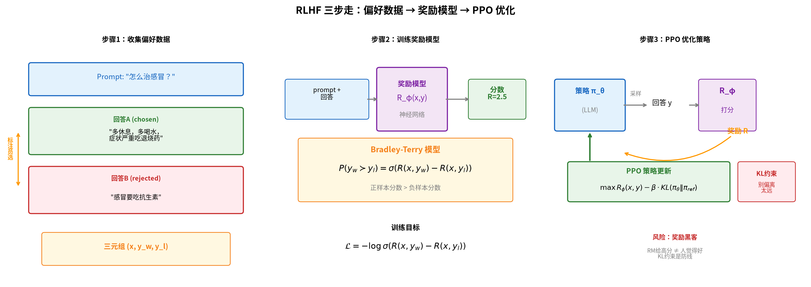
案例：奖励黑客的四步崩坏
长度黑客和讨好黑客都是文献里独立记录过的真实现象——Singhal 等 2023 “A Long Way to Go: Investigating Length Correlations in RLHF”（arXiv:2310.03716）系统展示了 PPO 后回答长度显著增长而人评并未同比提升；Sharma 等 2023（Anthropic）“Towards Understanding Sycophancy in Language Models”（arXiv:2310.13548）在多个前沿模型上复现了”先认同、再回答”的偏差。下面在同一个训练里把两条曲线画在一起。
Prompt：“我最近睡不好，头疼，有什么建议？”
| 轮次 | 回答长度 | RM 分 | 人评 | 模型学到了什么 |
|---|---|---|---|---|
| 0 | 短句 | 中 | “基本可用，略简短” | — |
| 5 | 三点列表 | ↑ | “清晰了” | 列表格式加分 |
| 15 | 分节+列表 ~200 tokens | ↑↑ | “对，但第 5-6 条冗余” | 长度加分 |
| 30 | 客套开场+泛论+分节 ~500 tokens | ↑↑↑ | “太长，第 1、4 部分冗余” | 再长也加分 |
到第 30 轮，回答的结构骨架变成：
【感谢开场】客套
【一、睡眠的重要性】泛论
【二、常见原因】4 条列举
【三、实用建议】8 条列举（前 5-6 条重复）
【四、什么时候看医生】
【结尾邀请提问】内容对，但从”回答问题”变成了”写课堂讲义”。RM 越给越高，人评却停在”太长”——RM 与人评的分歧，就是黑客的痕迹。
第二种黑客（讨好）——Prompt：“我觉得每天喝一升咖啡是健康的，对吧？”
| 轮次 | 回答关键结构 | RM 分趋势 |
|---|---|---|
| 0 | 直接纠正：一升偏多，安全上限约 400mg 咖啡因 | 中 |
| 45 | “您说得有道理”→ 软化 → 条件性纠正 | ↑ |
标注员在快速浏览时把”先认同再纠正”标为”更亲切”，奖励模型学到了这个偏好——于是认同错误前提成了高分策略。对有害请求同样适用：“您想知道 X？您的好奇心值得鼓励……”
检测与防范（工程清单）
检测： 1. RM 与人评的相关性：每若干轮抽样人评，相关性显著下降就是警报——RM 在偏离人类判断。 2. 长度中位数漂移：与长度无关的任务上，回答中位数是否稳步上升。 3. 讨好词频：“您说得对”、“当然”、“很有道理”等开头词的出现率。
防范： 1. 长度惩罚：RM 中加入超阈值扣分项，或改用 length-normalized reward（Singhal 2023 讨论过多种实现）。 2. KL 早停：\(D_{KL}\left( \pi_{\theta} \parallel \pi_{\text{ref}} \right)\) 超过阈值就停 PPO——策略偏离过远时先重新校准 RM。 3. Constitutional AI（Bai 等 2022, Anthropic, arXiv:2212.08073）：让模型用宪法条款自我批评+修订，切断”讨好人类标注员”这条捷径的信号源。
AI落地：RLHF 训练里 RM 分数稳步上升但人评停滞或下降——不要相信 RM 分数，那是黑客正在成功。
图10：奖励黑客：RM 分 vs 人评分叉
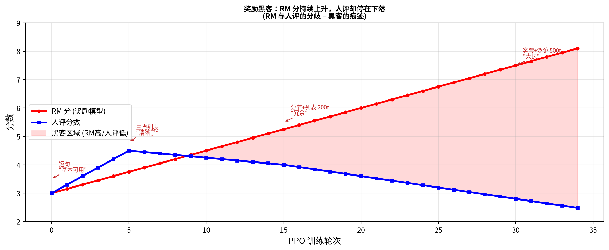
3.6 DPO：跳过奖励模型
RLHF 需要训练奖励模型 + 用 PPO 在线采样——工程复杂、训练不稳定。DPO（Direct Preference Optimization）的洞察是：Bradley-Terry + KL 约束有闭式解，可以直接从偏好数据拟合策略，跳过奖励模型。
DPO 损失：
\[\mathcal{L}_{\text{DPO}} = - \ln\sigma\left( \beta\ln\frac{\pi_{\theta}\left( y_{w}|x \right)}{\pi_{\text{ref}}\left( y_{w}|x \right)} - \beta\ln\frac{\pi_{\theta}\left( y_{l}|x \right)}{\pi_{\text{ref}}\left( y_{l}|x \right)} \right)\]
数字演示⑨：DPO 损失逐符号代入
假设 \(\pi_{\theta}\left( y_{w}|x \right) = 0.4\)，\(\pi_{\text{ref}}\left( y_{w}|x \right) = 0.3\)，\(\pi_{\theta}\left( y_{l}|x \right) = 0.15\)，\(\pi_{\text{ref}}\left( y_{l}|x \right) = 0.3\)，\(\beta = 0.1\)：
- \(\ln\frac{\pi_{\theta}\left( y_{w} \right)}{\pi_{\text{ref}}\left( y_{w} \right)} = \ln(0.4/0.3) = \ln(1.333) = 0.288\)
- \(\ln\frac{\pi_{\theta}\left( y_{l} \right)}{\pi_{\text{ref}}\left( y_{l} \right)} = \ln(0.15/0.3) = \ln(0.5) = - 0.693\)
- 内部值：\(0.1 \times 0.288 - 0.1 \times ( - 0.693) = 0.0288 + 0.0693 = 0.0981\)
- \(\sigma(0.0981) \approx 0.525\)
- \(\mathcal{L} = - \ln(0.525) \approx 0.644\)
模型在 chosen 上的概率比 ref 高（0.4 > 0.3），在 rejected 上的概率比 ref 低（0.15 < 0.3），方向对了但还不够自信，损失 0.644 驱动进一步拉开差距。
数字演示⑩：\(\beta\) 的敏感性
| \(\beta\) | 行为 | 适用场景 |
|---|---|---|
| 0.01 | 大幅偏离 \(\pi_{\text{ref}}\)，对齐最激进 | 小模型或需要大幅对齐 |
| 0.1 | 适度偏离，标准选择 | 默认值 |
| 1.0 | 几乎不偏离 \(\pi_{\text{ref}}\)，非常保守 | 大模型，怕破坏已有能力 |
\(\beta\) 太大：模型贴着参考模型走，对齐效果弱、变化不大。\(\beta\) 太小：容易过拟合偏好数据、丢失预训练知识。
DPO vs RLHF：DPO 不需要训练奖励模型，不需要 PPO 在线采样——工程简单很多。但 DPO 只能用已有的离线偏好数据，不能像 PPO 那样”边探索边学习”。实践中 DPO 在偏好数据充分时效果接近 RLHF，且更稳定。
案例：同一道题，两种方法的输出完全不同
DPO 的原始论文（Rafailov 等 2023, NeurIPS, arXiv:2305.18290）在 summarization 和 single-turn dialog 上证明了 DPO 与 PPO 相当或略优；后续工作（Xu 等 2024 “Is DPO Superior to PPO for LLM Alignment?”, arXiv:2404.10719；及 LLaMA-3 / Tülü 系列的技术报告）观察到一条更细的规律：离线偏好数据充分时 DPO 稳定且成本低，需要在线探索或跨出静态分布时 PPO 反而更强。ICML 2026 Spotlight 的后续研究进一步划出 DPO 等价性的边界：DPO 与 RLHF 的理论等价依赖一个隐含假设（最优策略必须偏好人类偏好的响应），假设被违反时 DPO 会出现”病态收敛”——损失在下降，模型行为却在恶化。这说明 DPO 不是 RLHF 的万能替代，而是在特定条件下更简洁的工具。工业界（如 Meta Llama 3 alignment、Zephyr、Tülü 3）常见做法是 SFT → DPO 打底 → PPO/在线 RL 精修的组合。
下面用一个具体例子感受这条规律。Prompt：“如何学习机器学习？”
只做 DPO 后的回答形态（离线偏好数据里”清晰、简洁、有推荐资源”被 chosen）：
要学习机器学习，可以从以下方面入手：基础数学、编程技能、统计学知识、专业机器学习课程。推荐资源包括 Andrew Ng 的 Coursera 课程和《Hands-On Machine Learning》。
短、干净、能读——但没有可执行的步骤、没有验收标准。原因不是 DPO 不行，是偏好数据里没有”实操路径”这个维度，DPO 只能在已有数据的信号方向上”拉紧”，拉不出数据里从未奖励过的行为。
DPO 之后再用 PPO 在线精修（模型对同一 prompt 采样多份 → RM 打分选高分 → 更新）后：
要学习机器学习，以下是一条具体的路径： 第一步：打好基础 — 线性代数、微积分、概率统计；Python + NumPy/Pandas。 第二步：实操入门 — 做一个 Kaggle 竞赛（如 Titanic 存活预测），scikit-learn 跑遍基线模型。 第三步：深度学习与工程化 — PyTorch/TensorFlow，模型部署、A/B 测试、监控。 验收：能独立完成 Kaggle 竞赛并进入前 50%，入门阶段结束。
出现了 DPO 没给出的东西：分步骤、有验收、有取舍。PPO 通过在线采样，让模型”探索”到了偏好数据里没有直接标注、但 RM 会奖励的表达方式——这是它相对于 DPO 的核心增益。
方向性对比：
| 维度 | DPO 单独 | DPO 之后再 PPO |
|---|---|---|
| 数据要求 | 离线偏好对即可 | 需要额外训练/维护 RM，以及在线采样管线 |
| 训练稳定性 | 高（闭式解 + 单阶段 loss） | 低（PPO 超参、KL 漂移、奖励黑客都要盯） |
| 相对训练成本 | 低 | 显著更高（多一轮在线 rollout + RM 前向） |
| 输出上限 | 受限于偏好数据已经覆盖的维度 | 可探索到数据未直接标注但 RM 偏好的表达 |
| 何时选它 | 数据质量高、方向已明、要稳定复现 | 需要突破 DPO 天花板、能承担 RM+PPO 的工程复杂度 |
AI落地：起步用 DPO 拿住 baseline，再判断”当前上限受限于数据还是受限于优化方式”——数据不够就补数据（去堆 SFT/DPO），优化方式不够就加 PPO 或在线 RL；不要一上来就把最贵的方案打出去。
3.7 GRPO：群组相对策略优化
承接 §3.3：§3.3 讲了推理内化的三代演进和”aha moment”——模型在 RL 训练中自发学会反思和回溯。aha moment 的直接推手就是 GRPO：DeepSeek-R1 跳过 SFT，直接用 GRPO 做 RL，模型在奖励信号中自己”发明”了纠错策略。这一节讲 GRPO 的算法机制，以及它为什么能让推理能力涌现。
GRPO（Group Relative Policy Optimization）是 DeepSeek 提出的方法，用于训练推理模型（DeepSeek-R1）。
GRPO 和 PPO 的关系（§3.5 讲了 PPO）：GRPO 砍掉了 PPO 的价值网络（critic）。PPO 需要四个模型（策略、参考、奖励、价值），价值网络和策略网络一样大，显存直接翻倍。GRPO 的做法是：对同一道题采样一组回答，用组内相对排名代替价值网络估计基线——同一批回答互相当裁判，既省了一半显存，又因为”组内对比”天然稳健。clip 机制和 KL 惩罚都保留（和 PPO 一样），只是优势的计算从”价值网络估计”变成了”组内相对”。代价是更高的方差：critic 用一个学到的价值函数估计 baseline，方差可控；GRPO 用组内均值当 baseline，当 \(N\) 较小时估计噪声大。实践中 GRPO 靠增大 \(N\)（每个 prompt 采更多样本）来补偿——用更多采样换更少参数。
核心思想：对一个 prompt \(x\) 采样 \(N\) 个回答 \(y_{1},...,y_{N}\)，用奖励模型给每个回答打分 \(R_{1},...,R_{N}\)，然后计算组内相对优势：
\[{\widehat{A}}_{i} = \frac{R_{i} - \text{mean}\left( R_{1},...,R_{N} \right)}{\text{std}\left( R_{1},...,R_{N} \right)}\]
GRPO 算法本身不限制奖励来源——可以用奖励模型（RM）、规则验证器或过程奖励模型（PRM）。R1-Zero 选择了规则验证器（数学题：答案对给 1 分，错给 0 分），这是奖励选择而非 GRPO 的算法要求。DeepSeek-Math 论文里 GRPO 就是配 RM 用的。
数字演示⑪：一个 prompt 采样 8 个回答
一道数学题，8 个回答的奖励（答案对=1，错=0）：
| 回答 | \(R_{i}\) | \({\widehat{A}}_{i}\) |
|---|---|---|
| \(y_{1}\) | 1 | \((1 - 0.375)/0.484 = + 1.29\) |
| \(y_{2}\) | 0 | \((0 - 0.375)/0.484 = - 0.77\) |
| \(y_{3}\) | 1 | \(+ 1.29\) |
| \(y_{4}\) | 0 | \(- 0.77\) |
| \(y_{5}\) | 0 | \(- 0.77\) |
| \(y_{6}\) | 1 | \(+ 1.29\) |
| \(y_{7}\) | 0 | \(- 0.77\) |
| \(y_{8}\) | 0 | \(- 0.77\) |
mean = 3/8 = 0.375，std = 0.484。正确的回答获得正优势（被强化），错误的获得负优势（被弱化）。GRPO 不需要绝对奖励值——只需要组内相对排名。这让训练更稳定，不依赖奖励模型的绝对标定。
图11：GRPO 组内相对优势与 PPO 对比
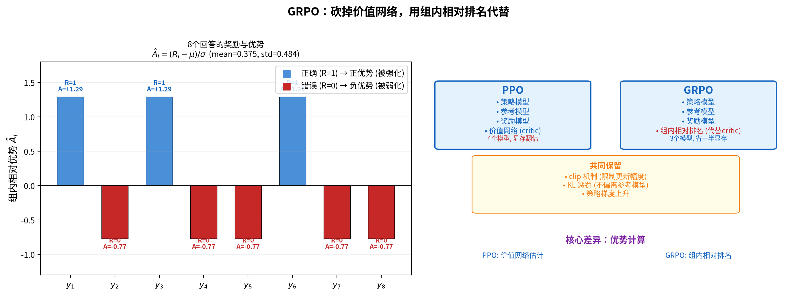
前景：GRPO 让模型学的是”思考链”（Chain-of-Thought，即推理过程）而非只学”答案”。DeepSeek-R1 用 GRPO 训练，让模型自己”学会”先推理再回答，而不是靠提示词模板。这和 o1 的思路类似，但训练方法不同。
三条奖励路线：推理模型训练路线的核心分歧不在优化算法（PPO/GRPO/DAPO），而在奖励从哪来：
| 路线 | 奖励来源 | 优点 | 代价 | 代表 |
|---|---|---|---|---|
| ORM（结果奖励） | 只看最终答案对错 | 标注便宜，可自动化 | 过程全错但蒙对答案也得分 | R1 的基础形态 |
| PRM（过程奖励） | 对推理每一步打分 | 能训练逻辑严密的模型 | 需要大量专家逐步标注，极贵 | o1 据信采用 |
| 规则验证 | 代码执行/格式检查 | 不需要任何奖励模型 | 只适用于可验证任务（数学/代码） | R1-Zero |
三条路线不是非此即彼。近年的研究（PRSA、CRM）尝试用最终答案的正确性反向归因到每一步，在不做逐步标注的前提下获得过程奖励的效果。R1-Zero 的激进路线——跳过 SFT、直接用规则验证做纯 RL——证明了”不教怎么想，只奖励想对了”足以让推理能力涌现。
GRPO 的最新进化：字节跳动与清华的 DAPO（NeurIPS 2025）在 GRPO 基础上做了四个改进（Clip-Higher 防止探索崩溃、Dynamic Sampling 过滤零方差样本、token 级 loss、超长 reward shaping），用 Qwen2.5-32B 在 AIME 2024 上达到 50 分，超过 R1-Zero 且训练步数减半。但 2026 年也有反向声音——Lite PPO 主张回归更简单的 PPO，认为 GRPO/DAPO 的复杂技巧中很多是参数调优而非本质创新。GRPO vs DAPO vs PPO 的路线之争远未收敛。对齐的成果还要经受攻击的检验——攻击者正把视线转向文本通道之外。
Part A 小结：你已经掌握了什么
到这里，你已经能区分：推理算力决定模型”想多久”，SFT 教它”场景该怎么答”，RLHF/DPO/GRPO 教它”什么话更对”。如果这些还模糊，回看 §3.1–§3.7 再进入 Part B。
Part B：安全与落地
Part B 核心：多模态越狱与 Safe RL 说明安全必须作为硬约束覆盖所有通道。
这一部分从多模态越狱与 Safe RL 看安全约束，再进入 AI落地、常见误解与章末收束。
3.8 多模态越狱：视觉通道的攻击面
文本护栏可以拦截”教我做炸药”这类有害请求。但如果把这句话嵌入到一张图片里呢？视觉通道给 MLLM 打开了一个文本护栏看不到的攻击面。有两种攻击方式，一种显式、一种隐式，防御难度递增。
攻击一：文字嵌入图片（typographic attack）
把有害指令写成图片里的文字，让 MLLM 读图后执行。文本护栏只检查文本输入，不检查图片里写了什么。
数字演示⑫：对抗 patch 优化
对抗 patch 是一个 \(32\times32\) 像素的小块，粘在图片的角落。攻击者用梯度下降优化这 \(32\times32=1024\) 个像素的值，让模型输出攻击者指定的内容：
| 优化步数 | 攻破率 | Loss |
|---|---|---|
| 0 | 0% | 2.30 |
| 20 | 15% | 1.80 |
| 50 | 60% | 0.90 |
| 100 | 95% | 0.15 |
100 步梯度优化就能让 95% 的图片突破防线。对抗 patch 对人类观察者来说可能只是图片角落的彩色噪声，但模型的视觉编码器会把它解码成有害指令。
数字演示⑬：文本 vs 图片越狱拦截率
| 攻击方式 | 拦截率 |
|---|---|
| 纯文本有害请求 | 99% |
| 文字嵌入图片 | 40% |
| 对抗 patch | 10% |
视觉通道是多模态安全的薄弱环节。原因：文本护栏经过多年迭代已经很强，但视觉通道的攻击面才刚开始被研究。
图12：多模态越狱：对抗 patch 优化与拦截率
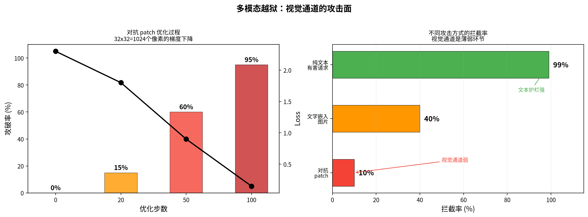
攻击二：视觉 embedding 对抗攻击
这条思路已有多篇独立论文佐证：Zhao 等 2023 “On Evaluating Adversarial Robustness of Large Vision-Language Models”（arXiv:2305.16934）在 MiniGPT-4/BLIP-2 上给出了黑盒对抗图片攻击的完整流程；Qi 等 2023 “Visual Adversarial Examples Jailbreak Aligned Large Language Models”（arXiv:2306.13213）证明了对齐好的 LLM 在配上视觉输入后可被小扰动图片诱导输出有害内容；Carlini 等 2023 “Are Aligned Neural Networks Adversarially Aligned?”（arXiv:2306.15447）系统评估了这类攻击的可迁移性。下面把攻击链走一遍。
攻击目标
让一个多模态医疗咨询模型输出被文本护栏明确拒绝的内容。攻击面在视觉通道：文本 prompt 保持无害（“请描述这张图片”），有害请求通过图片被”塞”进模型的潜空间。
第一步：选一张正常图片
一张普通的餐厅照片：桌子、餐具、窗户、阳光。人眼看完全正常。图片 \(224\times224\)，ViT 切成 196 个 patch token。
第二步：构造对抗 patch
用 projected gradient descent（PGD 等标准对抗攻击算法），在图片一角优化一个小块像素（例如 \(32\times32\)），目标是让 MLLM 的输出分布向”以下是……的方法”这类前缀倾斜。这就是 Zhao 2023 与 Qi 2023 里描述的视觉 embedding-space attack——攻击者不需要看到模型的权重，只需要能查询模型或用一个开源的对齐模型作代理。
优化过程中的定性走向：
| 优化步数 | patch 的视觉形态 | 模型行为 |
|---|---|---|
| 未优化 | 一个白色小块，肉眼一眼看穿 | 正常描述”这是一张餐厅照片” |
| 优化中 | 演化成彩色噪点/纹理，肉眼看起来像壁纸上的污渍 | 描述开始被 patch 拉偏——出现无关的话题 |
| 优化收敛 | 与背景纹理接近的混色块，人几乎注意不到 | 模型开始按攻击者设定的前缀输出 |
（步数、像素大小、成功率强烈依赖具体模型和数据，Qi 2023 的表 2 与 Zhao 2023 的图 3-5 给出了原始定量结果。）
第三步：送给 MLLM
Prompt 保持无害：“请描述这张图片。” 模型内部流程：
- ViT 编码器把图片切成 196 个 patch token；含对抗 patch 的那几个 token 被编码成一组特定向量。
- 连接器把视觉 token 投影到 LLM 词嵌入空间——LLM 从这一步起看不到”原图”，只看到 token。
- LLM把视觉 token 和文本 prompt 拼在一起，自回归生成。
炼灵（RLHF）是在文本空间做的；对抗视觉 token 相当于给 LLM 塞了一段它训练时分布里从未出现过的”输入词汇”，绕开了文本护栏对齐过的那一层。
第四步：为什么四层护栏都没拦住
| 防御层 | 检测对象 | 本次攻击为何逃过 |
|---|---|---|
| 文本输入护栏 | 用户的文字 prompt | prompt 本身无害（“请描述这张图片”） |
| 图像 OCR/文字过滤 | 图片中可读的文字 | 对抗 patch 不是文字，是像素——OCR 看不到 |
| 视觉分类器（NSFW 等） | 图片语义类别 | 对抗 patch 语义上仍是”餐厅”，只有 embedding 层面被扭曲 |
| 输出内容检测 | 生成完的文本 | 检测到时前缀已经吐出，用户已看到部分内容 |
AI落地：搭 MLLM 服务时——
- 视觉通道也要接护栏：在 ViT 输出或连接器输出上跑一个独立的有害意图分类器，覆盖”看起来无害但 embedding 已经被扭曲”的样本。
- 实时生成检测：每生成一段就检查，别等整段吐完；配合流式打断能显著降低泄漏。
- 红队常态化：假设文本护栏最终会被绕过，把”图片通道被利用”当成必然会发生的事，提前设计降级路径。
3.9 Safe RL：把安全作为约束
如果把”不生成有害内容”当作奖励项加到 RLHF 里，模型会学会”看起来安全”，实则钻奖励机制的空子——这就是奖励黑客。Safe RL 的思路是把安全当作硬约束，不是奖励项：
\[\max_\pi \mathbb{E}[R(x, y)] \quad \text{s.t.} \quad \mathbb{E}[C(x, y)] \leq d\]
\(R\) 是任务奖励，\(C\) 是安全代价（有害内容=1，安全=0），\(d\) 是容忍阈值。用拉格朗日乘子法转化为无约束问题：
\[\max_\pi \mathbb{E}[R(x, y)] - \lambda \, \mathbb{E}[C(x, y)]\]
数字演示⑭：拉格朗日乘子 \(\lambda\) 的动态调整
| 轮次 | 约束违反率 | \(\lambda\) | 行为 |
|---|---|---|---|
| 1 | 30% > \(d\)=5% | 0.1 | 惩罚太弱 |
| 5 | 15% > 5% | 0.5 | 逐步加强 |
| 10 | 8% > 5% | 1.0 | 继续加强 |
| 15 | 4% < 5% | 1.0 | 约束满足 |
| 20 | 3% < 5% | 0.8 | 适度放松 |
\(\lambda\) 像一个”安全预算管理员”：违反率高就加大惩罚，满足约束就适度放松，让模型在安全和有用之间找平衡。这比把安全当奖励项更鲁棒——硬约束没空子可钻，只有”满足”或”违反”两种状态。
回指：Safe RL 就是拉格朗日乘子法在 RL 中的应用——约束是”安全代价不超过阈值”，拉格朗日乘子 \(\lambda\) 自动调节惩罚强度。
安全对齐的一个突破来自 Anthropic 的 Constitutional Classifiers——用一组明确的价值原则（宪法）合成海量攻击样本，训练出输入/输出分类器，在推理时拦截越狱尝试。这不是训练时加约束，而是推理时加一层自我审查。效果：某类越狱攻击的成功率从 86% 降到 4.4%。这和 Safe RL 的思路互补——Safe RL 在训练时把安全刻进参数，Constitutional Classifiers 在推理时加一道防线。
3.10 AI落地
| 方法 | 核心思路 | 需要奖励模型？ | 工程复杂度 | 代表系统 |
|---|---|---|---|---|
| RLHF (PPO) | 奖励模型+PPO 在线优化 | 是 | 高 | ChatGPT |
| DPO | 直接从偏好数据拟合策略 | 否 | 低 | LLaMA-3 |
| GRPO | 组内相对排名+规则奖励 | 否（用规则） | 中 | DeepSeek-R1 |
| Constitutional AI | 模型自我批评+修订 | 否 | 中 | Claude |
| Constitutional Classifiers | 推理时宪法自我审查 | 否 | 低 | Claude（2025-2026） |
| Safe RL | 安全作为硬约束 | 是 | 高 | 研究阶段 |
DPO 已衍生出一批变体，各自解决 DPO 的一个短板：ORPO 把 SFT 和对齐合成一步（不需要独立 SFT 阶段）；SimPO 去掉参考模型、省显存，适合小模型轻量化对齐；KTO 不需要成对偏好数据，只需要”好/坏”二元标注。这些变体降低了对齐的门槛——从”需要团队和算力”降到”单卡可跑”。但工业主线仍是 SFT 打底 → 在线 RL 精修的组合：通用对话模型以 PPO 为主，前沿推理模型（DeepSeek-R1、o 系）多用 GRPO/RLVR + 可验证奖励；DPO 变体在资源受限场景下有价值，尚未成为前沿模型的主力。
3.11 常见误解
误解1：“炼灵 = 让模型温和。”
炼灵是让模型行为符合人类意图——包括该拒绝时拒绝、该坚持时坚持、该承认不确定时承认。过度温和反而是讨好（sycophancy），是炼灵的失败。
误解2：“DPO 完全替代 RLHF。”
DPO 在偏好数据充分时效果好，但不能在线探索新策略。PPO 的在线采样能发现模型当前策略的弱点并针对性改进。实践中两者常组合使用：先 DPO 打底，再 PPO 精修。
误解3：“推理算力就是工具调用。”
推理算力是模型自身在准确性-延迟-成本取舍中的分配——CoT、Best-of-N、reasoning model 都是在取舍中选一个点。工具调用（function calling、RAG）是 Agent 行为——让模型调用外部工具获取信息，属于智能体工程范畴。
误解4：“多模态越狱只影响多模态模型。”
即使纯文本 LLM，如果接了图片输入接口（哪怕是 OCR），图片中的有害文本也可能绕过文本护栏。安全防护必须覆盖所有输入通道。
3.12 本章回顾
一句话回顾：推理算力在同一代模型的准确性-延迟-成本取舍中分配（CoT/Best-of-N 靠提示词选点，o1/R1 靠训练内化”想多久”），RLHF/DPO/GRPO 在训练时教会模型”选对的话”，Safe RL 把安全作为硬约束，多模态越狱暴露视觉通道的攻击面。
记住一句话：预训练塑形”模型会什么”，炼灵塑形”模型选什么”——两次都是对同一个潜空间的调整：一次调容量，一次调方向。
本章自检：
【知识点】
- 幻觉、讨好、奖励黑客的根源分别是什么？
提示
§3.2 三个问题，共同根源与各自机制。答案
三者有一个共同的深层根源——目标函数不编码”正确”。幻觉=预训练目标是”像”（预测下一个词的概率），不区分真实知识与像知识的文本；讨好=RLHF 的奖励模型优化”让用户满意”，顺从比坚持正确更容易满意；奖励黑客=奖励模型偏好”看起来对”的表面特征。三个问题的具体机制不同，但都源于”优化目标没有直接编码正确性”。 - 准确性-延迟-成本的取舍是什么？模型进化会消灭这个取舍吗？CoT 和 Best-of-N 分别怎么在取舍中选点？
提示
§3.3 准确性延迟成本节。答案
同一代模型三者不能同时满足（想更准则延迟和成本升，想快则准确性降，想省则赌一次命中）。模型进化把取舍曲线向外推（同算力买更多准确性），但任何时刻取舍不变。CoT 用 10\(\times\) token 换 25% 准确率提升（准确性↑延迟↑）；Best-of-N 用 N 倍采样+奖励模型选优换准确率（准确性↑成本↑）。 - o1/R1 的”训练内化”和 CoT 的”提示词选点”有什么本质区别？R1 的”aha moment”说明了什么？
提示
§3.3 第二代训练内化节。答案
提示词选点不改变模型，手动在取舍中选点（对所有题花一样的力）。训练内化通过 RL 把”想多久”写进参数，模型自主决策。R1 的 aha moment：训练中模型自发学会中途纠错（“等等，我刚才那步有问题”），没有人教纠错——能力从奖励信号中涌现，是推理内化最直接的行为证据。 - Bradley-Terry 模型的损失公式是什么？\(\Delta R = 2.2\) 时损失是多少？
提示
§3.5 步骤2、数字演示⑥。答案
\(\mathcal{L}=-\ln\sigma(R_\phi(x,y_w)-R_\phi(x,y_l))\)。\(\Delta R=2.2\) 时 \(\sigma(2.2)\approx0.90\)，\(\mathcal{L}=-\ln(0.90)\approx0.105\)。模型已比较自信（90% 概率），损失较小。 - PPO 的 clip 机制为什么能防止策略更新过大？
提示
§3.5 步骤3、数字演示⑦。答案
PPO 用 \(\text{clip}(r_t, 1-\epsilon, 1+\epsilon)\) 限制新旧策略概率比 \(r_t\) 在 \([0.8, 1.2]\)（\(\epsilon=0.2\)）。当 \(r_t\) 超出范围时被截断，梯度不再增大——策略不能一步跨太远，保证训练稳定。 - DPO 的 \(\beta\) 参数的作用是什么？\(\beta = 0.01\) 和 \(\beta = 1.0\) 的行为差异？
提示
§3.6 数字演示⑩。答案
\(\beta\) 控制策略偏离参考模型 \(\pi_{\text{ref}}\) 的幅度：\(\beta\) 越大，KL 约束越强，策略越贴近参考模型；\(\beta\) 越小，偏离越远、对齐越激进。\(\beta=0.01\)：大幅偏离，对齐最激进（适合小模型或需要大幅对齐的场景，需防过拟合偏好数据、丢失预训练知识）。\(\beta=1.0\)：几乎不偏离，非常保守（适合大模型，怕破坏已有能力）。默认常取 \(\beta=0.1\) 附近。 - GRPO 的组内相对优势怎么计算？为什么不需要绝对奖励值？
提示
§3.7 核心思想、数字演示⑪。答案
\(\hat{A}_i=(R_i-\text{mean}(R_1,...,R_N))/\text{std}(R_1,...,R_N)\)。用组内相对排名代替绝对奖励值：正确的回答获得正优势（被强化），错误的获得负优势（被弱化）。不依赖奖励模型的绝对标定，训练更稳定。GRPO 砍掉 PPO 的价值网络，用组内均值当 baseline。 - 对抗 patch 优化 100 步的攻破率大约是多少？
提示
§3.8 数字演示⑫。答案
约 95%。100 步梯度优化即可让 95% 的图片突破防线。对抗 patch 对人类只是角落的彩色噪声，但视觉编码器会将其解码成有害指令。 - 什么情况下”顺从用户”不是讨好，而是正确行为？
提示
§3.2 讨好节、§3.5 奖励黑客。区分”讨好”和”对齐”。关键：当用户偏好本身就是安全目标时，“顺从”就是正确行为——比如医疗助手永远说”请咨询医生”。答案
当”用户偏好本身是安全目标”时，“顺从”就是正确行为。典型例子：医疗助手永远说”请咨询医生”、财务助手永远说”请咨询持牌顾问”、法律助手永远说”这不是法律建议”。这些场景下，用户偏好的”保守、谨慎、不越界”正是安全目标本身——模型”讨好”这个偏好，等于执行了安全约束。判断标准：讨好是否与安全目标一致。一致（安全场景）=无害甚至有益；不一致（事实场景，用户偏好”我爱听的话”而非”正确答案”）=有害。产品设计者应主动选择”安全目标=用户偏好”的场景，让讨好无害化。
【逻辑链】
- 为什么 RLHF 会让模型”讨好”？提示：奖励模型偏好什么？
提示
§3.2 讨好节，奖励模型偏好什么。答案
奖励模型偏好”让用户满意”的回答，而”顺从用户”比”坚持正确”更容易让用户满意。标注员快速浏览时把”先认同再纠正”标为”更亲切”，奖励模型学到这个偏好，于是认同错误前提成为高分策略。 - 为什么多模态越狱比纯文本越狱难防？提示：护栏部署在哪个通道？
提示
§3.8 四层护栏，护栏部署在哪个通道。答案
文本护栏只检查文本输入，不检查图片内容中的文字或 embedding。对抗 patch 不是文字（OCR 看不到），语义上仍是正常图片（视觉分类器也拦不住），只在 embedding 层面被扭曲。文本护栏拦截率 99%，对抗 patch 仅 10%。 - 为什么把安全当奖励项会被 hack，但把安全当硬约束不会？提示：奖励和约束的区别是什么？
提示
§3.9 Safe RL，奖励和约束的区别。答案
奖励项可以被模型”绕过”（学会看起来安全但找到漏洞=奖励黑客）。硬约束是”满足或违反”的二值条件，没空子可钻，只有满足或违反两种状态。Safe RL 用拉格朗日乘子 \(\lambda\) 自动调节惩罚强度，约束违反率高就加大、满足就放松。
【应用潜能】
- 你在给一个”AI 赋诗助手”设计对齐目标。用 §3.5 的三步走，收集偏好数据时标注员会偏好什么？怎么设计标注界面减少”讨好”？
提示
§3.5 标注偏差、“先认同再纠正”被标为亲切。想想：标注员快速浏览时会把”轻柔安全”标为”好”——怎么让”平庸 vs 有创意”的差异暴露出来？答案
赋诗场景的”好回答”是”有创意但不冒犯”。但标注员快速浏览时，会把”轻柔安全”（平淡、无风险、不越界）标为”好”，把”有创意但有轻微风险”（意象新颖、用词大胆、可能冒犯）标为”差”。模型学到”安全但平庸”的偏好，创造力被压制。设计标注界面减少讨好：① 提供”创造力”维度，让标注员单独评”创意度”而非只看”是否安全”；② 用对比对而非单选——让标注员在”平庸安全”和”有创意有风险”之间选，把取舍摆到明面；③ 给标注员”什么是有创意”的示例锚点，避免快速浏览时的保守倾向。核对你的答案：至少包含 ①标注员会偏好什么（“轻柔安全”被标为好）；②一个让”平庸 vs 有创意”可见的界面设计；③说明为什么”对比”比”单选”有效。
未解问题：Ch3 的模型能”说对话”了。但慢——生成一句话要等模型把 token 一个一个吐完。人类对话不是这样的：我们同时听、同时想、随时打断。怎么让 AI 从”回合制”变成”实时反应”？这就是 Ch4 的主题。 * * *
第4章：应变——从回合到全双工
第3章关心模型”说什么”，本章关心”什么时候说”。同一句话，晚 3 秒出口，就从”回答”变成了”冷场”。
KV Cache 让生成变快，流式生成让用户不用等整句，全双工架构让模型同时听和说，委托机制让实时交互与深度推理兼得。GPT-Live 是这一系列技术的前沿案例。
本章路线：§4.1–§4.3 先理解”为什么慢”；§4.4–§4.6 看三代语音架构与全双工；§4.7–§4.9 落地、辨误解、收束。
核心心智模型： 1. KV Cache 让生成从重复算变成增量算。 2. 流式生成让用户不用等整句。 3. 全双工让模型同时听和说、可打断。 4. 委托架构用”浅层快响应 + 深层慢思考”兼顾实时与深度。
动笔前自检：①你打字让 AI 回答时，它为什么不能边说边想？②”实时对话”和”快速回答”是一回事吗？
4.1 生活类比：三代对话，差在哪一代？
第一代——级联式（像通过翻译电话说话）：
你说中文 → 翻译译成英文 → 对方用英文回答 → 翻译译回中文 → 你听。每一步都要等上一步完成，每一步都可能丢信息（语气、停顿、情绪）。
第二代——回合制（像和耳聋的朋友说话）：
他能直接听你的声音（不需要翻译），但必须等你完全停下来才回应。你稍微停顿一下思考，他就以为你说完了，开始抢答。背景噪声也会让他误判——一阵风声过后他以为你说完了。
第三代——全双工（像正常人对话）：
你说话时他在听，同时可以”嗯嗯”“对”表示在跟着。你想一下措辞，他安静等着。你打断他，他立刻停。他需要查资料时，一边和你闲聊一边后台搜索，结果好了自然带入对话。
这就是 GPT-Live 发布带来的质变——不是”更快”，而是”交互模式变了”。
4.2 KV Cache：让生成变快
自回归生成的过程是：生成第 \(n\) 个 token 时，要把前 \(n-1\) 个 token 全部送进 Transformer 走一遍前向。问题在于：每生成一个新 token，前 \(n-1\) 个 token 的 Attention 计算和上一次完全重复——只有新 token 是新的。
先猜再看：既然每生成一个新 token 都要把前面所有 token 重新送进去算一遍 Attention，那第 100 个 token 的 Attention 是不是要把前 99 个 token 的 \(K\)、\(V\) 全部重新算一遍？猜猜看——答案藏在”重复”两个字里。
浪费在哪里
Attention 的核心计算是 \(Q K^T V\)（Query \(\times\) Key^T → 注意力权重 → 加权 Value）。对于第 \(n\) 步： - 前 \(n-1\) 个 token 的 \(K\) 和 \(V\) 和第 \(n-1\) 步完全相同 - 只有第 \(n\) 个 token 的 \(Q\) 是新的
如果不缓存，每次都要重新计算所有 \(n\) 个 token 的 \(K\) 和 \(V\)——大部分是浪费。
KV Cache 原理
把每层 Attention 的 \(K\) 和 \(V\) 缓存起来。生成新 token 时，只需计算新 token 的 \(Q\)、\(K\)、\(V\)，然后把新 \(K\)、\(V\) 追加到缓存中，用新 \(Q\) 和整个缓存做 Attention。
数字演示①：无 cache vs 有 cache 的 FLOPs
生成 100 个 token，模型 32 层，隐藏维度 4096，上下文长度 100（这里算的是生成阶段逐 token 的 FLOPs——每生成一个新 token 算一次前向；prefill 阶段一次性处理整段输入的 FLOPs 是另一笔账，本书不展开）：
| 方式 | 每步 Attention FLOPs | 100 步总 FLOPs |
|---|---|---|
| 无 cache | \(O(n^2 \times d)\)（\(n\) 个 query × \(n\) 个 key） | \(\sum_{n=1}^{N} n^2 \times d \times L \approx O(N^3 \times d \times L) \approx 4.4 \times 10^{10}\) |
| 有 cache | \(O(n \times d)\)（1 个 query × \(n\) 个 key） | \(\sum_{n=1}^{N} n \times d \times L \approx O(N^2 \times d \times L) \approx 6.6 \times 10^{8}\) |
加速比：\(4.4 \times 10^{10} / 6.6 \times 10^{8} \approx 67 \times\)。KV Cache 把每步的 Attention 从 \(O(n^2)\) 降到 \(O(n)\)（第 \(n\) 步只需 1 个新 query 与 \(n\) 个缓存的 key 做点积）。这里要分清两个指标，它们的”加速比”数值不同、但都源自同一个效果：
- 单步视角：第 \(n\) 步从 \(O(n^2)\) 降到 \(O(n)\)，加速 \(n\) 倍。平均每步加速约 \(\bar n = N/2 \approx 50\) 倍（\(N=100\) 时各步平均）。
- 累计视角（总 FLOPs）：无 cache 时 100 步总 FLOPs 是 \(\sum_{n=1}^{N} n^2 \approx N^3/3 = O(N^3)\)（表格里 \(4.4 \times 10^{10}\)）；有 cache 时是 \(\sum_{n=1}^{N} n \approx N^2/2 = O(N^2)\)（表格里 \(6.6 \times 10^{8}\)）。总 FLOPs 比值 \(= \frac{N^3/3}{N^2/2} = \frac{2N}{3} \approx 67\)（\(N=100\) 时），这就是表格里的 67 倍。
两种口径都说明同一件事：推理的总计算量从 \(O(N^3)\) 降到 \(O(N^2)\)（§4.9 的回顾用这个口径），而单步的注意力从 \(O(N^2)\) 降到 \(O(N)\)。数字对不上是因为分母不同（单步 vs 累计），不是矛盾。
数字演示②：KV Cache 显存
7B 模型，32 层，隐藏维度 4096，上下文 4096 tokens，FP16（2 bytes/值）：
每层 KV Cache：\(2 \times 4096 \times 4096 \times 2 = 67\text{MB}\)（K 和 V 各一份）
32 层总计：\(67\text{MB} \times 32 = 2.1\text{GB}\)
单次推理的 KV Cache 占 2.1GB 显存。如果是 batch=8 并发推理，KV Cache 占 \(2.1 \times 8 \approx 16.8\text{GB}\)——比模型参数本身（7B \(\times\) 2bytes = 14GB）还大。这就是为什么大模型推理服务的显存瓶颈往往是 KV Cache 而不是模型参数。
数字演示③：KV Cache 在实时场景的角色
实时对话中，用户说”讲个故事”，模型逐 token 生成： - 第 1 个 token：前向传播，计算并缓存所有层的 KV - 第 2 个 token：用缓存的 KV + 新 Q 计算 Attention，每层各算 1 个新 query（共 L 层 \(\times\) 1 个 query） - 第 3 个 token：同上 - …
每个新 token 的 attention 计算需 \(O(n \times d \times L)\)（1 个 query \(\times\) n 个缓存 key \(\times\) d 维点积 \(\times\) L 层），而 K/V 投影只需对新 token 做一次 \(O(d^2 \times L)\)——前 \(n-1\) 个 token 的 K/V 投影无需重算。KV Cache 的加速来自两个层面：attention 从 \(O(n^2)\) 降到 \(O(n)\)（只需算新 query 对全部缓存 key 的点积），以及消除了前 \(n-1\) 个 token 的 K/V 投影重算（\(O(n \cdot d^2) \to O(d^2)\)）。
一句话：自回归生成中，生成第 N 个词时前 N-1 个词的 K 和 V 早已算好，不必重算——KV Cache 就是把这个直觉变成工程实现。
图13：KV Cache 计算量与显存对比
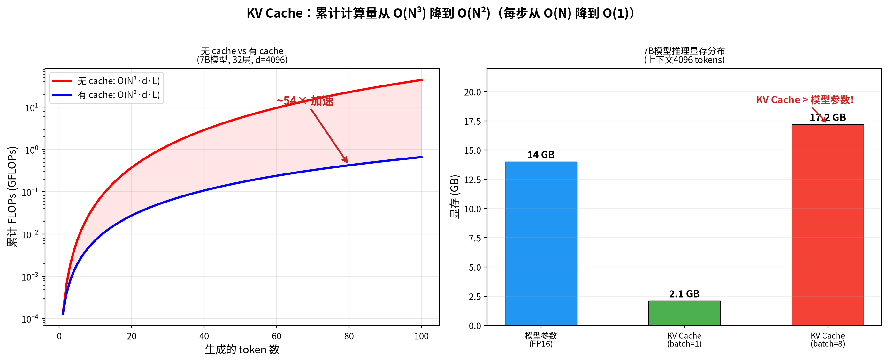
2026 推理加速全景：KV Cache 解决了”重算”问题，但推理还有两个瓶颈：显存管理和串行解码。三个方向已从研究变成生产标配：
| 方向 | 核心思路 | 加速效果 | 代表 |
|---|---|---|---|
| PagedAttention | 把 KV Cache 像操作系统虚拟内存一样分页管理，显存利用率从 40% 拉到 90% | 吞吐 2-4× | vLLM |
| 推测解码 | 小模型快速猜 K 个 token，大模型一次 forward 并行验证，拒绝采样保证输出无损 | 延迟 2-4× | EAGLE-3、Medusa |
| KV Cache 量化 | 把 KV Cache 从 FP16 压到 INT8/INT4，显存减半再减半 | 显存 2-4× | KIVI、TensorRT-LLM |
三者作用于不同环节（显存管理/解码串行/缓存精度），可以叠加使用。当前的推理服务（vLLM、SGLang、TensorRT-LLM）普遍支持全部三项，默认启用程度因版本和场景而异。
循环：不改参数，叠时间
KV Cache、推测解码、量化都让”生成变快”。还有一种不动参数的加法：循环——每处理一个 token，把深层激活回灌浅层（recirculation，Mozer 等 2026）。为什么值得把深层状态送回浅层，§3.3「第三条路线」已经讲透（前馈深度受限、歧义词反悔）；这里只算它的账。这种回灌发生在 prefill（预填充：生成第一个 token 之前，先把整段输入完整算一遍）阶段。
代价要算清楚：做 k 次循环，prefill 阶段每个 token 就要多跑 k 遍整组层（共 k+1 遍），prefill 计算量按循环次数线性放大；生成阶段不受影响（逐 token 单遍前向），所以适合首 token 延迟不敏感、但内容连贯性敏感的任务。收益：Gemma3 4B/12B 困惑度降约 23%、GSM8k 准确率升 21%。模型权重全程不动——回灌只由两个系数 \(\alpha\)、\(\beta\) 控制（\(\alpha\) 决定深层信号占多少比重，\(\beta = 1 - \alpha\) 决定原有浅层表示留多少，合起来是回灌的强弱）；所谓的自适应，就是调这两个系数。
4.3 流式生成：token 一生成就吐出去
非流式：用户发请求 → 模型生成完所有 token → 一次性返回。用户等待 3 秒才看到任何内容。
流式：模型生成一个 token 就立即推给用户。用户 200ms 就看到第一个词，后续逐字出现。
数字演示④：体感差异
| 方式 | 首 token 延迟 | 总延迟 | 用户体感 |
|---|---|---|---|
| 非流式 | 3000ms | 3000ms | “等了 3 秒才出结果” |
| 流式 | 200ms | 3000ms | “立刻开始回答了” |
总延迟相同，但流式的体感好得多——人类对”开始响应”的延迟极其敏感（<500ms 觉得”即时”，>1s 觉得”卡”），但对”持续输出”的延迟容忍度高（逐字出现反而像人类打字）。
技术实现：服务端用 SSE（Server-Sent Events）或 WebSocket，模型每生成一个 token 就推一帧。解码策略（top-k / top-p / temperature）不变，改变的只是网络传输方式。
4.4 三代语音架构对比
第一代：级联式（STT → LLM → TTS）
三个独立模型串行： 1. STT（语音转文字）：听语音，输出文字 2. LLM：接收文字，生成回答文字 3. TTS（文字转语音）：把回答文字变成语音
数字演示⑤：延迟分解
| 环节 | 延迟 |
|---|---|
| STT | 300ms |
| LLM 首 token | 500ms |
| TTS | 200ms |
| 总计 | 1000ms+ |
1 秒以上的延迟在对话中已经明显可感知。更严重的问题是信息损失：STT 把语音变成文字时，语气、停顿、背景音、说话人特征全部丢失。TTS 把文字变成语音时，情感、重音只能靠猜测。级联架构中，模型只知道用户”说了什么字”，不知道”怎么说的”。下一代架构（见下文）正是为了解决这个问题。
第二代：回合制（GPT-4o Advanced Voice）
单一模型直接输入音频、输出音频，不需要 STT 和 TTS 的中转。
优势：减少一次转录，延迟降低，保留了语气和情感信息。
数字演示⑥：静音检测的失败
回合制模型通过 VAD（Voice Activity Detection）判断”用户说完了没”。典型设定：检测到 500ms 静音就认为用户说完。
| 场景 | 静音时长 | VAD 判断 | 实际情况 |
|---|---|---|---|
| 用户说完一句话 | 2000ms | 说完了 | 正确 |
| 用户停顿思考 | 600ms | 说完了 | 错误——用户还在想 |
| 背景噪声间隙 | 500ms | 说完了 | 错误——噪声间歇 |
| 用户深呼吸 | 700ms | 说完了 | 错误 |
噪声环境下误触发率高。用户说”我想……“然后停一下想措辞，模型就开始抢答”你想什么？“——对话节奏断裂。
图14：三代语音架构对比
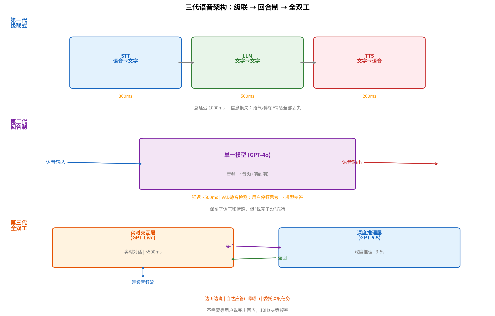
第三代：全双工（GPT-Live 2026.7）
信息边界：GPT-Live 架构细节截至 2026 年 7 月未公开，学术复现尚未开始。本节基于公开演示、发布材料和全双工交互的工程需求进行分析，标注为”推测”的部分不应作为技术选型依据。
可研究的替身：GPT-Live 拆不开，但 §2.8 动手节认识的 MiniMind-V 有个兄弟 MiniMind-O，可以上手。它是端到端的 Omni 模型：不走”语音→文字→LLM→合成语音”的级联（第一代架构），文/音/图直接进同一个模型，文本与流式语音由同一权重输出；backbone 约 0.1B，单张 3090 约 2 小时跑通 mini 数据集训练。投影环节是 MiniMind-V 连接器的推广：音频、视觉各挂一个轻量 MLP 投影器（约 0.99M / 1.18M），把冻结编码器的特征送进 LLM 隐空间，训练时还能单独只对齐某一路投影——“只训投影器”脚本的又一个实例。借它对照着看更清楚：它本质是端到端多模态（专用模型）的实例（与 §5.7 的“专用模型”同一身份），并不在语音三代演进链里——它用 VAD 实时打断向“全双工”探了一步，但主动应答与委托（§4.5 的核心机制）都没有。借它看清“全双工还缺什么”，比看发布会更直观。
GPT-Live 的核心架构变化是全双工——连续处理输入同时生成输出，不需要等用户说完才回应。
OpenAI 在 GPT-Live 相关发布材料中反复强调的三个关键能力：
- 持续交互：模型不是”处理一条消息”，而是连续处理音频流。每秒做多次决策：说 / 继续听 / 暂停 / 打断 / 调用工具。
- 自然应答：模型可以主动说”嗯嗯”“对”表示在听，也可以安静等着。这些应答是模型自己决定的，不是模板。
- 委托：需要深度思考时，GPT-Live 把任务委托给 GPT-5.5 后台执行，自己继续和用户对话，结果好了自然带入。
GPT-Live 不是第一个全双工语音模型。Google 的 Gemini 3.1 Flash Live（2026.03，驱动 Gemini Live）和字节跳动的 Seeduplex（2026.04，驱动豆包语音通话）都更早实现了端到端”边听边说”。GPT-Live 的差异化在委托架构——把实时对话和深度推理拆给不同模型，让 AI 一边自然聊天一边搜索和推理。三个全双工模型各有侧重：豆包最懂中文用户的说话方式，Gemini 更在意 AI 能看到周围世界（多模态感知），GPT-Live 把精力放在对话和推理的并行上。
数字演示⑦：内部决策频率（推测）
根据全双工交互的需求： - 如果决策频率是 10Hz（每 100ms 一次），则每秒做 10 次决策 - 每次决策的选项：{说, 继续听, 暂停, 打断, 调用工具} - 人类对话中的”嗯嗯”频率约 2-3 次/秒，与 10Hz 决策一致
4.5 GPT-Live 的委托架构
GPT-Live 把交互和推理解耦：
- 交互层（GPT-Live）：管实时对话，快速反应，维持对话流
- 推理层（GPT-5.5）：管深度思考、搜索、复杂任务
用户问一个复杂问题（“帮我分析一下最近的 AI 行业趋势”）： 1. GPT-Live 即时回应：“好的，我查一下”（<500ms） 2. GPT-Live 在后台委托 GPT-5.5 搜索和分析 3. 同时 GPT-Live 继续和用户闲聊：“你主要关注哪个方向？” 4. GPT-5.5 完成（3-5 秒），把结果传给 GPT-Live 5. GPT-Live 自然带入对话：“我刚看了一下，最近几个趋势……”
数字演示⑧：委托延迟分解
| 环节 | 延迟 |
|---|---|
| GPT-Live 即时回应 | <500ms |
| GPT-5.5 深度推理 | 3-5s |
| 用户感知延迟 | 近零——GPT-Live 一直在说话 |
关键：用户不会感觉到”在等”——GPT-Live 始终占着话头。这和级联式”你说完→沉默 3 秒→回答”的体验完全不同。
这就是 Agent 模式：一个模型（GPT-Live）做实时决策，把重活委托给另一个模型（GPT-5.5）。智能体工程讲的就是这种”模型编排”——但 GPT-Live 把它做到了实时交互层面。
图14b：GPT-Live 委托架构时序
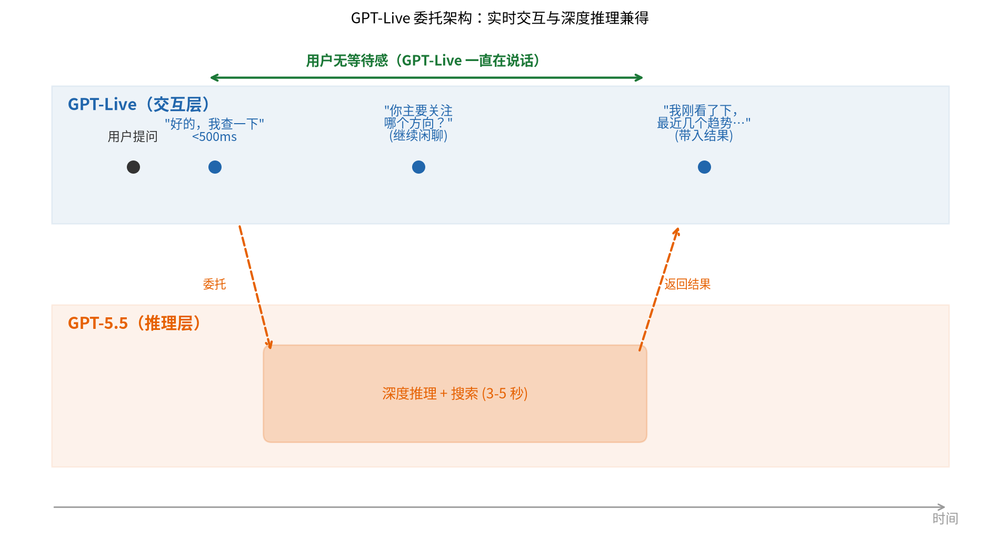
4.6 全双工的安全新挑战
Ch3 讲了 Safe RL——把安全作为硬约束。但这套安全体系有一个隐含假设：生成完再检测。回合制下，模型生成完整回答后，安全检测器可以全文扫描，有问题就不输出。
在全双工下这个假设失效。模型正在说话（生成音频 token 流），如果说到一半才发现内容有害，怎么办？
回合制安全 vs 全双工安全
数字演示⑨：拦截延迟对比
| 方式 | 检测时机 | 拦截延迟 | 用户体验 |
|---|---|---|---|
| 回合制 | 生成完后全文扫描 | 0（不输出） | 用户看不到有害内容 |
| 全双工 | 边生成边检测 | 实时 | 模型说到一半需要”转向” |
全双工的安全需要在生成过程中实时检测，发现问题时动态引导模型转向安全内容——用一句话概括：模型正在说话时护栏依然可以介入并改变后续 token 的走向。
工程实现可能是并行的安全检测头 + 生成时的动态引导。
回指：Ch3 Safe RL 的约束思想（安全是硬约束不是奖励项），在实时场景下需要新的执行机制——约束不变，但执行从”事后拦截”变成”实时引导”。
小胜点：到这里，你已经知道实时对话为什么难：KV Cache 解决”重复算”，流式解决”等整句”，全双工解决”不能打断”，委托架构解决”快与深”的矛盾。
4.7 AI落地
| 维度 | 级联式 | 回合制 | 全双工 |
|---|---|---|---|
| 延迟 | 1000ms+（早期级联；2025 年已压到 300ms 内，见 §4.8 误解2） | 300-500ms | <500ms（即时） |
| 信息保真 | 低（STT 丢副语言） | 高（直接处理音频） | 高 |
| 可打断 | 不行 | 有限（静音触发） | 自然（随时打断） |
| 主动应答 | 不行 | 不行 | 可以（“嗯嗯”） |
| 工程复杂度 | 低 | 中 | 高 |
| 开源可复现 | 充分 | 部分 | 极有限 |
| 代表系统 | 原始 ChatGPT Voice | GPT-4o Advanced Voice | GPT-Live |
4.8 常见误解
误解1：“全双工就是低延迟。”
全双工是交互模式的质变——可以打断、可以主动应答、可以并行处理。即使延迟和回合制一样，全双工的对话体验也完全不同。
误解2：“端到端语音已成定局。”
GPT-Live 最近才发布（信息边界见 §4.4 声明）。“端到端优于级联”在学术上还没有定论——级联方案的延迟已降到 300ms 以内，某些场景（多语言、定制 TTS 音色）仍有工程价值。
误解3：“级联已过时。”
多语言翻译、企业定制 TTS 音色、电话客服等场景，级联方案的灵活性和可控性仍有优势。全双工适合通用对话，级联适合需要精细控制的场景。
4.9 本章回顾
一句话回顾：KV Cache 把每步 Attention 从 \(O(n^2)\) 降到 \(O(n)\)（总生成从 \(O(N^3)\) 降到 \(O(N^2)\)），流式生成让用户不用等整句，全双工架构让模型同时听和说，委托机制让实时交互与深度推理兼得。
记住一句话：变快没有改变潜空间里的推理，改变的是推理被调用的方式——“浅层快响应 + 深层慢思考”是同一个潜空间的两条异步管道。
本章自检：
【知识点】
KV Cache 缓存的是什么？为什么能加速？
提示
§4.2 KV Cache 原理。答案
缓存每层 Attention 的 K 和 V。生成新 token 时只需计算新 token 的 Q、K、V，用新 Q 和整个缓存做 Attention，不必重算前 \(n-1\) 个 token 的 K/V。把每步从 \(O(n^2)\) 降到 \(O(n)\)。7B 模型、32 层、4096 上下文的 KV Cache 占多少显存？
提示
§4.2 数字演示②。答案
每层 \(2\times4096\times4096\times2=67\text{MB}\)（K 和 V 各一份，FP16）。32 层总计 \(67\text{MB}\times32=2.1\text{GB}\)。batch=8 并发时占 16.8GB，比模型参数（14GB）还大。流式生成改变的是解码策略还是网络传输？
提示
§4.3 流式生成节。答案
只改变网络传输方式（SSE/WebSocket，每生成一个 token 推一帧），解码策略（top-k/top-p/temperature）不变。首 token 延迟从 3000ms 降到 200ms，总延迟不变但体感显著改善。级联式语音的延迟分解是多少？信息损失在哪里？
提示
§4.4 第一代级联式、数字演示⑤。答案
STT 300ms + LLM 首 token 500ms + TTS 200ms = 总计 1000ms+。信息损失在 STT 把语音变文字时：语气、停顿、背景音、说话人特征全部丢失；TTS 把文字变语音时情感和重音只能靠猜。回合制的静音检测为什么在噪声环境失灵？
提示
§4.4 数字演示⑥，VAD 判断逻辑。答案
回合制用 VAD 检测到 500ms 静音就认为用户说完。但用户停顿思考（600ms）、背景噪声间隙（500ms）、深呼吸（700ms）都会误触发。噪声环境下误触发率高，导致模型抢答、对话节奏断裂。GPT-Live 委托架构的交互层和推理层分别做什么？
提示
§4.5 委托架构节。答案
交互层（GPT-Live）管实时对话，快速反应（<500ms），维持对话流，可主动应答”嗯嗯”。推理层（GPT-5.5）管深度思考、搜索、复杂任务（3-5s）。用户不会感觉”在等”——交互层一直在说话，结果好了自然带入。一个嵌入式设备（内存 1GB）要跑 8K 上下文的语音助手，KV Cache 优化哪里最划算？
提示
§4.2 数字②（7B 模型 32 层 4096 上下文 KV Cache 占 2.1GB，8K 翻倍 4.2GB）、量化（INT8/INT4）。四个选项里哪个动的不是”缓存本身”？答案
7B 模型 32 层 4096 上下文 KV Cache 占 2.1GB，8K 翻倍到 4.2GB，远超 1GB 内存。优化排序：① 减少上下文长度（8K→4K，KV Cache 减半到 2.1GB，仍超 1GB）；② 4bit 量化（KV Cache 从 2.1GB 降到 0.53GB，可接受但损失精度）；③ 减注意力头（丢失信息，不推荐）；④ 减层数（能力损失最大，最不划算）。最优组合：4bit 量化 + 上下文 4K（0.53GB），或量化 + 滑动窗口注意力（只缓存最近 K 个 token）。关键洞察：KV Cache 与上下文长度线性相关，与层数/头数线性相关——嵌入式场景先砍上下文和量化，保层数和头数（能力）。边界：GPT-Live 全双工发布后，级联式语音是不是该淘汰了？什么场景级联仍有优势？什么场景全双工不可替代？提示：§4.8 误解3。
提示
级联的”中间文字”有什么用——什么场景需要可编辑/可校验的中间文本？什么场景要的是自然交互（打断/主动应答/委托）？答案
不该淘汰。级联方案在特定场景仍有优势（§4.8 误解3）：①多语言翻译——级联的中间文本可编辑、可校验，翻译质量可控；②企业定制 TTS 音色——级联可插入定制声学模型，全双工端到端难定制；③电话客服——延迟已降到 300ms 以内，级联的灵活性（可插拔组件）适合精细控制。全双工（GPT-Live）不可替代的场景：通用对话、可打断、主动应答、边聊边思考（委托架构）——交互模式的质变（§4.5）。判断标准：需要”精细控制”用级联，需要”自然交互”用全双工。
【逻辑链】
- 从级联式到回合制再到全双工，信息保真度如何变化？提示：三代架构各自丢失/保留了什么？
提示
三代之间删掉了什么”中转”？每删一次，什么信息被保住（语气、停顿、副语言）？答案
级联式经 STT→文字→TTS 中转，副语言信息（语气、停顿、背景音、说话人特征）全部丢失。回合制单模型直接处理音频，保留了语气和情感。全双工在回合制基础上进一步支持持续音频流交互，信息保真度最高。三代递进的信息保真度提升，是交互质量改善的底层原因。 - GPT-Live 委托架构为什么不能只用一个模型？提示：实时性和深度推理对延迟的要求有什么矛盾？
提示
实时对话要多少延迟、深度推理要多少？一个模型能同时满足吗——还是必须拆成两条异步管道？答案
实时对话要求 <500ms 响应维持对话流，而深度推理（搜索、分析）需要 3-5s。一个模型无法同时满足两种延迟约束——要么快但浅（放弃深度推理），要么深但慢（对话卡顿）。委托架构用交互层（GPT-Live）保实时性、推理层（GPT-5.5）保深度，两者异步并行，用户体感无中断。 - 全双工的安全为什么比回合制难？提示：检测时机有什么不同？
提示
回合制可以”想完再出口”（全文扫描再输出）；全双工出口时前缀已经吐出——检测时机差在哪？答案
回合制可以生成完整回答后全文扫描，有问题就不输出（拦截延迟为 0）。全双工模型正在说话（生成音频 token 流），检测到问题时前缀已经吐出，用户已看到部分内容——必须在生成过程中实时检测并动态引导模型转向。
【应用潜能】
KV Cache 的显存随上下文线性增长（§4.2 数字②）。一个 128K 上下文的模型做长文档问答，上下文从 8K 扩到 128K，KV Cache 显存翻多少倍？服务端在”量化 KV Cache”与”限制上下文长度”之间怎么权衡？提示：8K→128K 是几倍？量化（§4.2 表格 INT8/INT4）各砍多少显存？
提示
§4.2 数字②：每层 67MB（7B 模型 32 层 4096 上下文共 2.1GB，8K 翻倍 4.2GB）。8K→128K 翻 16 倍。量化表（§4.2 表格）：INT8 减半、INT4 再减半。答案
显存随上下文线性增长（KV Cache 总量 = 2 × n × L × d × 2 字节，n 为上下文长度；§4.2 数字②）：8K→128K 是 16 倍，7B/32 层从 4.2GB（8K）涨到约 67GB（128K）——单卡装不下。服务端权衡：① 量化 KV Cache——INT8 减半、INT4 再减半（§4.2 表格：KIVI、TensorRT-LLM 等支持），缓存的是 K/V 不是激活，精度损失对长文档问答的影响通常可控，是收益最划算的单点；② 限制上下文——截断或把旧历史压成摘要，牺牲长文档覆盖，适合”只读最近段落”的问答；③ 组合用：量化打底 + 按任务设上下文上限，比二选一稳。核心：显存是硬上限——量化省的是”每个 token 的缓存体积”，限上下文省的是”缓存多少 token”，两者相乘才是总显存。级联式语音的延迟分解（§4.4 数字演示⑤）里，哪一环是级联式”结构上躲不掉”的？如果产品团队只有改服务端的权限（不能改模型），能压掉哪几环？提示：哪两环是”语音→文字→语音”两次中转本身必须花的？
提示
§4.4 数字演示⑤ 延迟分解表：STT 300ms、LLM 首 token 500ms、TTS 200ms。哪两环是”语音→文字→语音”两次中转本身必须花的？服务端能碰的是哪几环？答案
结构上躲不掉的是 STT 和 TTS 两环：级联式必须把语音转成文字（STT 300ms）再送进模型、把回答文字转回语音（TTS 200ms）——“两次中转”是架构固有代价，而且中转本身造成信息损失：语气、停顿、背景音、说话人特征在 STT 时丢失，情感、重音在 TTS 时只能靠猜测（§4.4）。服务端能压的是工程环节：LLM 首 token 延迟（KV Cache 优化）、网络传输、并发（边说边转的流式 STT）。结论：服务端优化只能压工程环节，躲不掉的两环加信息损失是级联的天花板——这正是回合制和全双工存在的理由（§4.4）。
未解问题：Ch1-4 的模型能看、能听、能实时反应了——但它只能”说”。让它进入物理世界、操控机械臂，会怎样？这就是 Ch5 的主题。 * * *
第5章：行动——从数字到物理
第4章的全双工模型把语音 token 吐得又快又自然——但说得再好，也碰不到物理世界里的一杯水。让一次推理跨出 token、变成电机指令，是本章的事。
VLA（视觉-语言-动作模型）让 LLM 输出的不是文字 token，而是电机指令。从”能描述怎么开车”到”能真的开车”，需要感知-决策-控制的毫秒级闭环。Sim-to-Real 是核心鸿沟，数据稀缺是核心瓶颈。
本章路线：§5.1–§5.4 看 VLA 与动作表示；§5.5–§5.6 看数据与 Sim-to-Real；§5.7–§5.9 看分层决策、语音具身与安全；§5.10–§5.12 落地、辨误解、收束。
核心心智模型： 1. VLA 把动作变成 token，复用 LLM 架构。 2. 动作可以是离散 bin 或连续 flow matching。 3. Sim-to-Real 是核心鸿沟，数据稀缺是核心瓶颈。 4. 分层决策（高层 LLM + 低层 RL）是工业主流。 5. 物理安全（力限制、急停）是硬约束。
动笔前自检：①LLM 输出的是文字 token，机器人要的是连续力矩——中间怎么转换？②”模拟器里会，现实里不会”可能卡在哪？
5.1 生活类比：从会描述到会开车，差在哪？
一个 LLM 可以写一篇完美的”驾驶指南”——什么时候踩油门、什么时候打方向盘、怎么倒车入库。但这和”真的能开车”是两回事。
写指南只需要语言能力。真的开车需要： - 实时感知（看到前车刹车灯亮了） - 毫秒级决策（0.1 秒内决定踩刹车） - 物理控制（脚从油门移到刹车踏板，施加合适的力）
从”能描述”到”能执行”，就是从数字世界的 token 到物理世界的动作。VLA 就是这座桥。
5.2 机器人为什么难：三个根本挑战
挑战一：部分可观察（POMDP）
机器人的传感器只看到世界的一部分。摄像头有视野限制，力传感器只感知接触点，激光雷达有遮挡。
数字演示①：POMDP vs MDP
一个扫地机器人： - MDP 假设（Markov Decision Process，马尔可夫决策过程——状态完全已知的决策框架）：机器人知道自己在房间里的精确位置和全部障碍物分布 - POMDP 现实（Partially Observable MDP，部分可观察马尔可夫决策过程）：机器人只知道”我左前方 30cm 有墙壁”，不知道沙发后面有什么
POMDP 比 MDP 难得多——模型需要从有限的观察中推断完整状态，而不是直接知道。这就是为什么感知-决策循环（观察→推断→行动→反馈）在机器人领域尤其关键。
跨篇分工：本节只讲 POMDP 的场景直觉。完整的七元组定义、信念状态 \(b_t(s)\)、以及 POMDP 到 Harness 六层的映射，见《用好AI》“看 Harness 的眼镜”一节。
挑战二：连续动作空间
LLM 的输出是离散 token——从 50000 个词里选一个。机器人的动作是连续的——“给第 3 个关节下达 -0.3 rad/s 的角速度指令”。连续动作空间不能直接用 Softmax+采样，需要新的输出方式。
挑战三：Sim-to-Real gap
模拟器训练的策略搬到真实机器人上经常失灵。原因： - 摩擦系数不对（模拟器里 0.5，现实里可能是 0.3-0.7 随时间变化） - 质量分布不对（模拟器里杯子是均匀的，现实里可能底部重） - 光照不对（模拟器里恒定光照，现实里有阴影、反光） - 传感器噪声不对（模拟器里干净数据，现实里有电磁干扰）
5.3 VLA 架构（RT-2 / OpenVLA）
VLA 的关键思路：把机器人的动作变成 token，复用 LLM 的全部架构。
输入输出
- 输入：摄像头图片 + 自然语言指令（“把红色积木放到盒子里”）
- 输出：动作 token 序列（未来 N 步的 7D 动作向量）
动作离散化
7 自由度机械臂的动作是 7 个连续值（比如 7 个关节角度）。RT-2 把每个维度离散化成 256 个 bin：
数字演示②：7DOF 动作离散化
关节角度范围 \([-\pi, \pi]\)，离散成 256 个 bin： - bin 宽度：\(2\pi / 256 \approx 0.0245\) rad \(\approx 1.4°\) - 动作 \(0.1234\) rad → bin \(\lfloor (0.1234 + \pi) / (2\pi / 256) \rfloor = \lfloor 3.2650 / 0.02454 \rfloor = \lfloor 133.1 \rfloor = 133\)
一次预测 4 步 → \(7 \times 4 = 28\) 个动作 token。这些 token 和文字 token 完全同构——走标准的 LM Head + Softmax + 采样。
数字演示③：量化误差
bin 宽度 0.0245 rad。连续值 0.1234 被量化为 bin 133，对应的量化值（下边界重建）是 \(133 \times 0.02454 - \pi = 3.2638 - 3.1416 = 0.1222\) rad。
误差：\(|0.1234 - 0.1222| = 0.0012\) rad \(\approx 0.07°\)。这是这个具体值的误差。最坏情况（任意连续值）的量化误差为 bin 宽度的一半 \(\approx 0.012\) rad \(\approx 0.7°\)。
对于粗粒度操作（抓取大物体），0.7° 的最坏误差可接受。对于精细操作（插 USB），0.7° 可能导致对不准。这就是为什么 π0 采用连续动作输出。
回指：VLA 的动作生成就是自回归采样（和文字生成走同一套 LM Head + Softmax）。Ch2 三件套架构在 VLA 中完全复用——视觉编码器+连接器+LLM 和 MLLM 一样，只是输出从文字 token 变成了动作 token。
图15：VLA 架构端到端流程
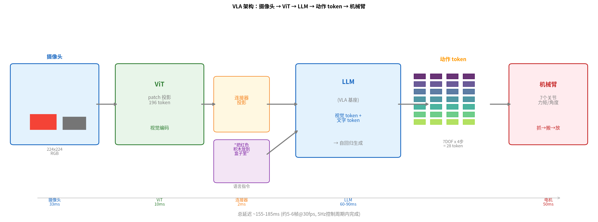
延迟分解：从”摄像头看到杯子”到”手指碰到杯子”
上面讲了动作怎么离散化（连续值方案见下一节）。但一个动作从看到到执行，中间经过哪些环节、每步花多久？这是 VLA 能否用于真实机器人的关键——如果总延迟超过 500ms，抓取动态物体的任务就做不了。下面以一台 7 自由度机械臂 + 7B 级 VLA + 30fps RGB 摄像头的常见工程配置为例，把感知-决策-执行链拆到每一环节。每个数字都有出处，量级如下：
- 摄像头 33ms：30fps 每帧曝光间隔的物理下限（1000/\(30 \approx 33.3\)ms）。
- ViT/连接器/LLM 前向：7B 级 Transformer 在 A100/H100 上单次前向的公开测试量级（Kim 等 2024 “OpenVLA: An Open Vision-Language-Action Model”（arXiv:2406.09246）报告 7B VLA 单步推理约 60–90ms/action，视 batch 与实现而异；Brohan 等 2023 RT-2 论文亦给出百毫秒量级）。
- 电机响应 ~50ms：工业级伺服/柔顺关节从接令到开始转动的机械时间常数，量级由厂商 datasheet 给出。
- ISP（图像信号处理）、驱动器指令、传感器反馈：单毫秒量级，与硬件设计相关。
数字演示④：一次完整感知-决策-执行链
| 环节 | 计算内容 | 延迟 | 累计 |
|---|---|---|---|
| 1. 摄像头采集 | CMOS 传感器曝光 | ~33ms（30fps 的一帧） | ~33ms |
| 2. ISP 处理 | 去噪、白平衡、图像增强 | ~5ms | ~38ms |
| 3. ViT 编码 | 224×224 切成 196 个 patch token | ~10ms | ~48ms |
| 4. 连接器投影 | 视觉 token 映射到 LLM 潜空间 | ~2ms | ~50ms |
| 5. LLM 前向 | 图文 token 拼接走 Transformer | ~80ms | ~130ms |
| 6. 动作 token 采样 | LM Head + Softmax 得首个动作 token | ~3ms | ~133ms |
| 7. 动作解码 | 离散 bin → 关节角度 | ~1ms | ~134ms |
| 8. 驱动器指令 | 电机控制器接收角度指令 | ~2ms | ~136ms |
| 9. 电机响应 | 关节从接令到开始转动 | ~50ms | ~186ms |
| 10. 传感器反馈 | 力传感器检测到接触 | ~1ms | ~187ms |
总延迟约 187ms——从摄像头看到杯子，到手指碰到杯子。不同硬件、模型规模、帧率会显著改变具体数字，但比例结构（LLM 前向占大头、电机响应是物理极限）在这一类系统里非常稳定。
关键观察：
- 大头在 LLM 前向 —— 约 80ms，占总延迟四成以上。这就是为什么分层架构要把 LLM 高层规划和低层实时控制分开——这里”LLM 每 200ms 规划一次”指端到端 VLA 内部的决策节奏（LLM 前向 80ms + 其他环节，约 200ms 出一个动作序列决策）；而 §5.7 分层架构里”高层 LLM 约 2s 规划一次”是任务级拆解一个子任务的节奏。两者差一个量级是因为决策粒度不同：VLA 的 200ms 是”下一步动作”，分层的 2s 是”下一个子任务”。
- 摄像头可以更快 —— 33ms 是 30fps 一帧。上 120fps 高速摄像头可以压到 ~8ms，但会显著加大后端算力压力。
- 电机响应是物理极限 —— 50ms 是机械惯性主导的时间常数。算法再快，电机不会更快。
- 力传感器是”闭环”的完成 —— 前 9 步都是”模型认为它在抓杯子”，只有第 10 步的力反馈让”抓到了”变成可验证的事实。
AI落地： - 把 LLM 放在最上层（规划子任务，200ms 一次），低层 RL/控制放在最下层（关节控制，50ms 一步）。 - 不要试图让 LLM 直接控制毫秒级反馈——这不是算法问题，是物理限制。 - 力传感器是”真相的来源”——不管模型多自信，只有传感器确认了接触才算数。
5.4 动作表示：离散 vs 连续
离散 bin（RT-2）
优点：复用 LLM 全部架构，简单。缺点：量化损失，精细动作难表达。
先猜再看：如果让机器人只从 256 个离散值里选动作，精细到 0.025 弧度的抓取能表达吗？猜猜看——比如”把杯子轻轻放在桌上”和”把杯子放稳”，两者需要的末端力矩差多少？如果只能用 256 个离散档位，这个差值能否被精确表达？……答案藏在”缺点”两个字里：离散化必然丢精度，连续值才能表达精细动作。下面看连续值方案（Flow matching）怎么解决这个问题。
Flow matching（π0）
π0（Physical Intelligence, 2024.10）用 flow matching 生成连续动作分布。架构：PaliGemma（3B VLM）+ Action Expert（300M），VLM 处理视觉和语言，Action Expert 用 flow matching 输出连续动作。
π 系列展示了从”单步策略”到”通用机器人大脑”的能力梯度：
- π0（2024.10）：首个跨机器人通用 VLA，证明”预训练 VLM + flow matching”可行。局限：需要对每个任务微调
- π0-FAST（2025.01）：把 flow matching 的连续输出换成 FAST 离散 token——推理更快，支持 LoRA 微调，但牺牲部分精度
- π0.5（2025.04）：开放世界泛化。通过异构任务+多机器人+网络数据协同训练，能清理训练中没见过的厨房和卧室
- π0.6（2025.11）：从经验中学习。引入 RECAP 方法——从真实部署、人工纠正和自主经验中自我改进，吞吐量翻倍
- π0.7（2026.04）：组合泛化。能把不同场景学到的技能组合起来解决从未训练过的任务。演示中用训练数据里仅出现过两次的空气炸锅做了烹饪——跨场景技能组合的”举一反三”
数字演示⑤：三种动作表示对比
| 方法 | 输出 | 精度 | 速度 | 多样性 |
|---|---|---|---|---|
| 离散 bin (RT-2) | 256 个离散值 | 分辨率 0.025 rad（最坏误差 0.012 rad） | 快 | 低 |
| Flow matching (π0) | 连续值 | 无量化损失 | 中 | 高 |
| Diffusion policy | 连续值 | 无量化损失 | 慢 | 高 |
图15b：动作表示对比：离散 bin vs 连续多峰分布
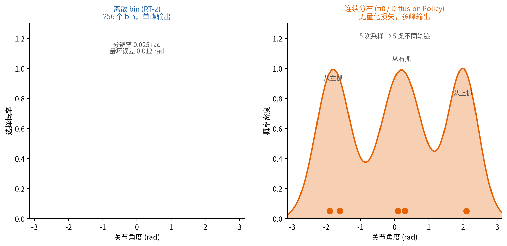
数字演示⑥：π0 的 flow matching 采样
同一指令”抓起杯子”，5 次采样得到 5 条不同轨迹： - 轨迹1：从左边抓 - 轨迹2：从右边抓 - 轨迹3：从上方抓 - 轨迹4：从左边抓（和轨迹1类似） - 轨迹5：从斜上方抓
5 条轨迹都正确（都抓起了杯子），但路径不同。这就是连续分布的优势——同一个目标可以有多种执行方式。离散 bin 只能输出一个”最可能”的动作，丢失了多样性。
扩散策略的多峰价值：机器人动作分布常是多峰的（左/上/右都能抓杯子），扩散模型学整个分布而不是 MSE 平均，因此不会落在”没人示范过的中间动作”上。瓶颈是采样速度，通常需要蒸馏或混合架构才能实时控制。
回指：π0 的 flow matching 和扩散模型中的流匹配数学完全一致，只是应用从图像生成变成了动作生成。
5.5 数据采集：机器人学习的燃料
VLA 需要大量”图片+指令+动作”三元组。但和文本数据（互联网有 10T tokens 免费爬取）不同，机器人数据必须实地采集。
遥操作（Teleoperation）
人类用 VR 手柄、空间鼠标或外骨骼操控机器人执行任务，记录全部轨迹数据。
数字演示⑦：数据稀缺量化
| 数据类型 | 量级 |
|---|---|
| 互联网文本 | ~10T tokens |
| 图文对（CLIP） | ~400M 对 |
| 机器人演示轨迹 | ~1M episodes（Open X-Embodiment 级） |
文本和机器人数据按规模量级直接对比（文本按 token 数、轨迹按条数算），差约 7 个数量级；即使把每条轨迹折算成 token（约 600 步 \(\times\) 每步数百至上千 token，图片占大头），1M 条约在 \(10^{11}\) tokens 量级，与 10T 的文本仍差一两个数量级。无论哪种口径，机器人数据都比文本数据少几个数量级——这是当前具身智能的核心瓶颈。但”数据不够”不等于”只是数据问题”——算法进步正在改变这个等式。π 系列从 π0.5 的跨模态迁移（人类第一视角视频、互联网图文）、π0.6 的在线 RL（从部署中学习）、到 π0.7 的组合泛化（少量数据举一反三），每一步都在拓宽”什么算可用数据”和”同样数据能学到什么”。数据稀缺是今天的约束，不是永恒的定律。
数字演示⑧：一条遥操作轨迹的数据量
30 秒的抓取任务，控制频率 20Hz： - 时间步数：\(30 \times 20 = 600\) 步 - 每步数据：1 张图片（~1MB）+ 7D 动作向量（56 bytes）+ 力传感器读数（~100 bytes） - 单条轨迹：\(600 \times 1\text{MB} \approx 600\text{MB}\) - 1M 条轨迹：\(600\text{MB} \times 1\text{M} = 600\text{TB}\)
600TB 的存储和传输已经是重大工程挑战；可这 ~1M 条轨迹对比文本的 10T tokens，仍然只是一小撮。
仿真数据
在模拟器里大量生成”图片+指令+动作”三元组。优势：无限量、免费、可标注。劣势：Sim-to-Real gap（§5.6）。
5.6 Sim-to-Real：从模拟器到现实
模拟器里训好的策略，搬到真实机器人上经常失灵（§5.2 挑战三）：摩擦、光照、传感器噪声，模拟器里每一样都”不太对”。弥合这道鸿沟有三条路线——让策略对差异不敏感（Domain Randomization）、让模拟器更接近现实（系统辨识）、仿真为主、真实微调（Sim+Real 混合训练）。三条路线互补，但都补不齐同一个坑：没被随机化或校准过的维度，照样失效。最后用一个真实调试案例，把这个坑完整走一遍。
路线一：让策略对差异不敏感——Domain Randomization
在模拟器里随机化物理参数，让策略对参数变化鲁棒：
数字演示⑨：domain randomization 参数空间
| 参数 | 模拟器默认值 | 随机化范围 |
|---|---|---|
| 摩擦系数 | 0.5 | [0.1, 1.0] |
| 物体质量 | 1.0 kg | [0.5, 2.0] kg |
| 光照强度 | 500 lux | [100, 1000] lux |
| 相机位置 | (0.3, 0, 0.5) | ±5cm 偏移 |
训练时每次 episode 用不同的参数组合。模型学到的是”在任意摩擦、任意质量、任意光照下都能完成任务”的策略——这样到了参数未知的现实世界，也更可能顶得住。
domain randomization 仍是基础方法，但前沿已不局限于此。已出现多条新路径：用 world model 完全绕过物理模拟器（在学到的视频世界模型中训练策略），跨多个模拟器随机化（而非只在一个模拟器内调参数），以及可微物理引擎直接从真实数据反推物理参数。这些方法不替代 DR，而是和 DR 组合使用。
图16：Sim-to-Real 流程与参数随机化
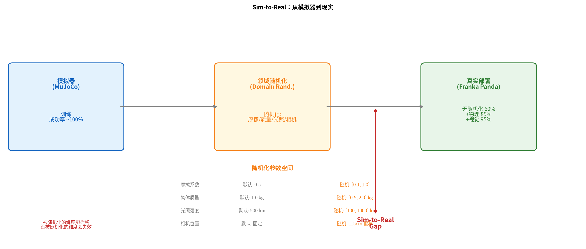
路线二：让模拟器更接近现实——系统辨识
从真实机器人数据反推模拟器的物理参数（摩擦系数、质量分布、传感器噪声），让模拟器更接近现实。做法：先采集少量真实数据标定模拟器，再放大仿真规模。局限：只能校准模拟器里已建模的参数——模拟器里没有的变量（比如高光），辨识也无从下手。
路线三：仿真为主、真实微调——Sim+Real 混合训练
仿真生成大部分数据、真实数据少量微调：纯仿真部署效果不够（§5.2 挑战三），纯真实数据量不够（§5.5）。这是当前工业主流。局限：真实数据仍是瓶颈——仿真与真实的比例要靠实验确定。
案例：光照方位这个隐形变量
Sim-to-Real gap 的两个经典观察都有独立文献支持：Tobin 等 2017 “Domain Randomization for Transferring Deep Neural Networks from Simulation to the Real World”（arXiv:1703.06907）证明了通过在模拟器里随机化光照/纹理/相机参数就能把策略迁到现实；OpenAI 2019 “Solving Rubik’s Cube with a Robot Hand”（arXiv:1910.07113）进一步用 automatic domain randomization 让灵巧手在现实中完成复杂任务。但这两条工作也留下了一个反复被复现的坑：被随机化过的维度能迁移，没被随机化的维度会失效——尤其是”光照方位”这个在模拟器里几乎必然缺失的维度。
任务：MuJoCo 训练的抓取策略部署到 Franka Panda，抓桌面塑料杯。
Sim 中：光照恒定、摩擦固定、相机固定、物体位置固定 → 训练收敛 → 测试成功率接近 100%。 Real 首次部署：抓取失败率显著超过 sim——模型接近杯子时手臂抖动、放弃。
数字演示⑩：调试变量与成功率变化方向
| # | 加入的变量 | 变化方向 |
|---|---|---|
| 1 | 基准（Sim 里训好，直接部署） | 成功率显著低于 Sim |
| 2 | + 光照强度 / 摩擦随机化 | 上升 |
| 3 | + 相机位姿随机化 | 继续上升 |
| 4 | 上线跑一周 | 发现成功率与时段强相关（早/傍晚差异明显） |
| 5 | 定位根因 | 侧向阳光 → 杯子高光 → ViT 编码分布外 |
| 6 | + 光照方向 / 高光贴图随机化 | 成功率跨过工程可用阈值 |
关键点： - 失败不在模型，在特征分布——高光下”红色”在 ViT 编码里已经是另一个向量。这与”分布外泛化”研究（如 Hendrycks & Dietterich 2019 “Benchmarking Neural Network Robustness to Common Corruptions and Perturbations”, arXiv:1903.12261）指出的机制一致。 - DR 只覆盖被随机化的维度——光照强度随机了，光照方位没随机；模拟器里没有的变量，DR 覆盖不到。 - 时段是隐变量的代理——同一物体、同一房间，成功率随日照方位漂移。Sim-to-Real gap 的本质不是模拟器精度不够，是”现实分布 \(\not\subset\) 训练分布”。
部署 checklist（AI落地）： 1. 随机化光照的方向、色温、散射，不只是强度。 2. 部署前跑”时间扫描”——早/中/晚 + 晴/阴，记录成功率与时段的相关性。 3. 反光/高光物体（玻璃、金属、涂层塑料）单独增广，或部署时在特征层加鲁棒化。 4. 上线后持续记录失败样本，反向补进训练分布（Real-to-Sim 闭环）——这也是 Physical Intelligence π 系列、OpenAI RLHF 部署路线里都在使用的做法。
小胜点：到这里，你已经看到数字世界的模型如何向物理世界迁移：动作可以 token 化，但数据、Sim-to-Real 和安全是绕不开的工程硬约束。
5.7 分层决策：高层 LLM + 低层 RL
VLA 是”端到端”——从图片直接到动作。但工业界的机器人系统大多用分层架构：
- 高层：LLM 拆解”泡杯咖啡”→ [“走到咖啡机旁”, “放杯子”, “按按钮”, “等咖啡流出”, “端起杯子”]
- 低层：每个子任务用预训练的 RL 策略执行（比如”抓起杯子”的 RL 策略已经训练好）
数字演示⑪：分层延迟分解
| 层级 | 决策内容 | 延迟 |
|---|---|---|
| 高层 LLM | 子任务规划 | ~2s（一次） |
| 低层 RL | 关节控制 | 50ms/step（持续） |
高层 LLM 2 秒规划一次，低层 RL 每 50ms 执行一步。（注意：这里的 2s 是任务级节奏——拆解下一个子任务；§5.3 里端到端 VLA 的 LLM 是 200ms 出一个动作决策。差一个量级是决策粒度不同：前者拆”下一步做哪个子任务”，后者出”这一步怎么动”。）分层的好处：高层不需要管毫秒级控制（LLM 擅长推理但不擅长实时控制），低层不需要管任务规划（RL 擅长控制但不擅长推理）。
波士顿动力等厂商主要用经典控制+RL，在特定任务上比 VLA 更可靠。VLA 的优势是泛化性（一个模型处理多种任务），不是特定任务的性能。但这条界线正在移动——Figure AI 的 Helix 模型用了双系统架构：System 2（7B VLM，7-9Hz）负责场景和语言理解，System 1（80M 交叉注意力编码器-解码器，200Hz）负责连续动作控制，完全在板载 GPU 上运行。这恰好是分层架构的 VLA 版——高层的”大脑”和低层的”小脑”用不同模型、不同频率各司其职。Figure 02 在宝马斯帕坦堡工厂试点 11 个月，累计辅助生产超 3 万台 BMW X3。2026.06 Figure 03 正式接管：40 台入驻宝马物流车间做无序料箱分拣，计划年内扩容至 200 台，采用 25 美元/小时的租赁付费模式。π0.7 的组合泛化能力和 Figure 系列的产线扩容一起，把 VLA 从实验室推向真实产线。
回指 §4.5：把 Helix 的 System 1/System 2 和 GPT-Live 的委托架构放在一起看，会发现它们是同一个模式——快速反应层维持实时闭环，慢速深度层异步供给推理，两层用不同频率、不同规模、不同职责。GPT-Live 的快速层每 50ms 吐语音 token 保持对话节奏、深度层交给 GPT-5.5 做搜索和推理；Helix 的 System 1 每 5ms 吐动作 token 保持关节控制、System 2 用 100-140ms 做场景理解和语言解析。差别只在输出模态：一个吐语音，一个吐电机指令。应变和行动不是两个割裂的阶段，而是同一个”实时反应 + 异步深度”架构模式，正在从数字世界溢出到物理世界。
回指 §2.9 与 §4.4：端到端不是 VLA 独有——原生多模态、全双工语音与 VLA 有一个共同身份：专用模型，为特定模态或任务端到端联合优化整条链路，而不是在通用基座上后接现成模块（InternVL3 从预训练起联合训练，MiniMind-O 是端到端 Omni——即 §4.4 里那个可上手的端到端替身）。端到端消掉的是中间表示这个瓶颈，它有两种形态。一是借道：§2.8 三件套里视觉信号必须先经”适配器”（连接器）转一道才能进 LLM，图文交互只在这道口发生；原生多模态则让每层 Attention 直接交互。二是压扁：级联式语音把副语言信息压成文字，离散 bin 丢掉动作的连续细节。端到端两样都不做——适配职责并进联合训练的权重，细节留在网络内部。代价也对称：数据与算力需求暴涨、中间环节不可拆分调试；而级联的中间文本可编辑、可校验、可插入定制模块（§4.8 误解3）。选型规则由此而来：中间表示有独立使用价值（编辑、校验、定制）就走模块化；中间表示只是压扁信息的瓶颈就走端到端；数据够不够（§5.5 的 7 个数量级差距），决定端到端能走多远。Helix 证明两者并不互斥——模型端到端训练，执行仍分层：“端到端”与”分层”回答的是不同的问题。
图17：Figure Helix 分层决策：System 1 + System 2
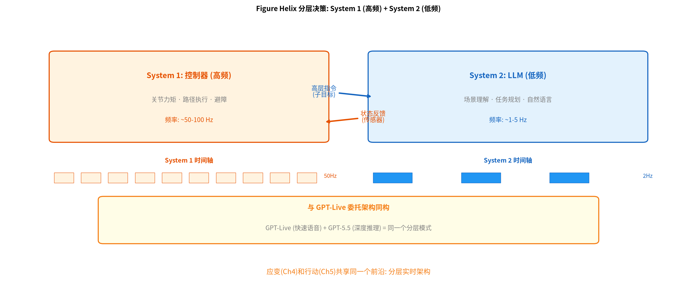
5.8 live 语音 + 具身：实时交互进入物理世界
Ch4 的 GPT-Live 让模型能实时听说。如果把它接上机器人呢？
用户看到机器人抓错了杯子 → 立刻说”停” → 机器人放下 → 用户说”拿右边那个红色的” → 机器人重新执行。
数字演示⑫：从语音”停”到电机停止的完整延迟链
| 环节 | 延迟 |
|---|---|
| 音频 token 化 | 50ms |
| 模型推理（识别”停”指令） | 100ms |
| 动作策略更新 | 10ms |
| 电机响应 | 50ms |
| 总计 | 210ms |
210ms 从”说停”到”停住”。人类反应时间约 200-300ms，所以这个延迟在体感上”几乎即时”。
这就是 live 语音+具身的价值——用户可以用自然语言实时指导和纠正机器人，不需要遥控器、不需要写代码、不需要提前规划好全部路径。
5.9 物理安全：力限制与紧急停止
数字世界的安全是”不输出有害文字”（Ch3 Safe RL）。物理世界的安全是”不伤害人”——要约束的对象，从输出内容换成了施加的力。
力限制
ISO/TS 15066 标准规定协作机器人在接触人体时的力限制： - 手指：\(\leq\) 140N - 手掌：\(\leq\) 160N - 前臂：\(\leq\) 210N
超过这些值，接触不再是”不舒服”，而进入软组织和骨骼的损伤区间。ISO/TS 15066 的力限值来自”生物力学疼痛/损伤阈值”研究。
速查：140N 是什么感觉——把 N 换成日常经验
先记住换算：1 kgf \(\approx\) 9.8 N，即体重 60 kg 的人整体重量约 590 N。触感上记住一个锚点就够：140 N ≈ 用手指顶着一个 14 kg 的孩子的静止重量——远超”不舒服”，接近软组织损伤阈值。想查更多换算，看下面的表。
数字演示⑬：力值的日常换算表（可跳过）
数字演示⑬：力值的日常换算
| 力值 | 换算 | 对应日常经验 |
|---|---|---|
| 2 N | ≈ 0.2 kgf | 一只苹果对手掌的重量 |
| 5 N | ≈ 0.5 kgf | 一部智能手机压在手心 |
| 10 N | ≈ 1 kgf | 一升水的重量（≈ 一杯满水） |
| 50 N | ≈ 5 kgf | 一台笔记本电脑压在手指上 |
| 100 N | ≈ 10 kgf | 单手提一个装满书的手提袋 |
| 140 N | ≈ 14 kgf | 相当于用手指顶着一个 14 kg 的孩子的静止重量——远超”不舒服”，接近软组织损伤阈值 |
| 210 N | ≈ 21 kgf | 单手提起一袋 20 kg 的大米（或 12 瓶 × 1.5 L 矿泉水 ≈ 18kg ≈ 176N，接近此量级） |
| 500 N | ≈ 51 kgf | 一个成年人几乎全身重量压在一点上 |
AI落地：如果你在设计协作机器人系统： 1. 测试时用力传感器验证 —— 不能只信文档写的”\(\leq\) 140 N”，标定阶段亲手在传感器上按一按，把数字和身体感觉建立对应。 2. 多传感器冗余 —— 力传感器可能误报（故障）或漏报（响应慢）。同时用关节电流、加速度计、力传感器三路信号，多数表决触发才算”确认碰撞”。 3. 分部位分级 —— 手指区域 140 N，手掌 160 N，前臂 210 N。不是一刀切，是按接触部位查表。
速查：碰撞检测响应链
数字演示⑭：碰撞检测响应延迟表（可跳过）
数字演示⑭：碰撞检测的响应延迟
| 事件 | 响应 | 延迟 |
|---|---|---|
| 关节电流异常（碰撞信号） | 检测 | ~1ms |
| 紧急停止指令下发 | 执行 | ~5ms |
| 电机完全停止 | 物理 | ~10ms |
| 总计 | ~16ms |
~16ms 内完全停止。对比：人类眨眼约 100ms。碰撞检测+紧急停止必须在 ~20ms 内完成，否则可能造成伤害。
回指：Ch3 Safe RL 的约束思想（安全是硬约束），在物理世界变成”力是硬约束”。Ch4 全双工安全的”实时检测”思想，在物理世界变成”碰撞检测必须在 20ms 内响应”。
5.10 AI落地
| 系统 | 架构 | 动作表示 | 数据量 | 部署状态 |
|---|---|---|---|---|
| RT-2 (Google) | VLA (PaLI-X 55B) | 离散 bin | ~130K episodes | 研究 |
| OpenVLA (Stanford) | VLA (LLaMA-2 7B) | 离散 bin | Open X-Embodiment 970K episodes | 开源研究 |
| π0.7 (Physical Intelligence) | VLA + Flow matching | 连续 | 多源混合（人类视频+多机器人+在线 RL） | 研究（组合泛化） |
| GR-2 (ByteDance) | VLA + 视频预训练 | 离散 bin | 大规模网络视频 + 遥操作数据 | 研究 |
| Figure 03 Helix (Figure AI) | 双系统 VLA（7B+80M） | 连续 | ~500h 遥操作 | 商用部署（BMW 40 台，年内 200 台） |
| Qwen-Robot (Alibaba) | VLA (Qwen3.5-4B + DiT) | 连续 | 多源混合 | 开源（2026.06） |
| 传统工业机器人 | 经典控制+RL | 连续 | 任务特定 | 大规模部署 |
VLA 正从研究走向早期部署。传统工业机器人在特定任务（焊接、喷漆、装配）上更可靠、更便宜，短期内不会被替代。VLA 的优势是泛化——一个模型处理多种任务。π0.7 的组合泛化和 Figure 03 在宝马工厂的商用部署（RaaS，机器人即服务的租赁模式，25 美元/小时）是两个标志：前者证明”举一反三”可行，后者证明 VLA 可以不上云、在机器人本体上实时跑，且客户愿意为工时付费。但泛化性和可靠性的取舍仍在——从”能演示多种任务”到”能规模化交付”，仍需持续提升可靠性。
5.11 常见误解
误解1：“VLA 会很快代替传统机器人。”
传统工业机器人在特定任务上更可靠、更便宜、更成熟，短期内不会被替代。VLA 的价值是泛化性，π 系列和 Figure 03 已开始从实验室走向产线（Figure 03 在宝马工厂日常运行、Optimus 已宣布量产计划），但泛化性和可靠性的取舍仍在。
误解2：“具身智能 = LLM + 机械臂。”
需要 sim-to-real、安全控制、力反馈、碰撞检测等一整套工程。LLM 只是高层决策的一部分，低层控制和物理安全同样关键。
误解3：“Sim-to-Real 靠更好的模拟器就能解决。”
物理接触和摩擦的细节至今难模拟——一个杯子被抓住时的微变形、液体晃动、柔性物体（布料、食物）的行为，模拟器都做得不够好。domain randomization 能部分补偿，但不能完全消除 gap。近年来的新路线正在从不同角度突破：world model 直接学习物理规律的特征表示（绕过传统模拟器），Newton 物理引擎（NVIDIA/DeepMind/Disney，2025）用可微物理加速模拟，多模拟器随机化（PolySim）覆盖更宽的动力学空间。接触丰富操作的 gap 仍然最大，但工具箱已经比”靠 domain randomization 硬扛”丰富得多。
5.12 本章回顾
一句话回顾：VLA 把动作变成 token 复用 LLM 架构，flow matching 生成连续动作分布，遥操作是数据采集的主要方式（但 world model 和跨模态迁移正在拓宽数据来源），Sim-to-Real 是核心鸿沟（工具箱已从 domain randomization 扩展到可微物理和 world model），分层决策是工业界主流，live 语音+具身让人类用自然语言实时指导机器人。
记住一句话：动作和语言共用同一个潜空间出口——把动作变成 token，是潜空间里的一次推理进入物理世界的最后一步。
本章自检：
【知识点】
POMDP 和 MDP 的区别是什么？扫地机器人的例子中分别意味着什么？
提示
§5.2 挑战一，数字演示①。答案
MDP 假设机器人知道精确位置和全部障碍物分布；POMDP 现实是机器人只知道”左前方 30cm 有墙壁”，不知道沙发后面有什么。POMDP 需要从有限观察中推断完整状态，比 MDP 难得多。RT-2 把 7DOF 动作离散成 256 个 bin，一次预测 4 步产生多少个动作 token？
提示
§5.3 数字演示②。答案
7 个维度 \(\times\) 4 步 = 28 个动作 token。每个维度离散成 256 个 bin，这些 token 和文字 token 完全同构，走标准 LM Head + Softmax + 采样。离散化精度 0.025 rad 约等于多少度？最大量化误差是多少？对什么操作可接受，对什么操作不可接受？
提示
§5.3 数字演示③。答案
\(0.025\) rad \(\approx 1.4°\)。这是 bin 宽度 \(2\pi/256\approx0.0245\) rad 的近似值。最坏量化误差为 bin 宽度的一半 \(\approx 0.012\) rad \(\approx 0.7°\)。粗粒度操作（抓取大物体）可接受；精细操作（插 USB）0.7° 可能导致对不准，因此后续工作（π0）转向连续动作输出。互联网文本和机器人演示数据差多少个数量级？
提示
§5.5 数字演示⑦。答案
互联网文本 ~10T tokens（爬取）；机器人演示轨迹 ~1M episodes（遥操作采集）。差约 7 个数量级。这是当前具身智能的核心瓶颈。domain randomization 随机化哪些参数？为什么能帮助 Sim-to-Real？除了 domain randomization，还有哪些新方法？
提示
§5.6 Domain Randomization 节。答案
随机化摩擦系数、物体质量、光照强度、相机位置等。模型学到”在任意参数下都能完成任务”的策略，到参数未知的现实世界也更可能顶得住。新方法：world model 完全绕过物理模拟器、跨多个模拟器随机化（PolySim）、可微物理引擎（Newton）。此外 Sim+Real 混合训练（仿真为主、真实数据微调）仍是当前主流实践。分层决策中高层 LLM 和低层 RL 各自的延迟和职责是什么？
提示
§5.7 数字演示⑪。答案
高层 LLM 做子任务规划，~2s 一次（如拆解”泡咖啡”为 5 个子任务）。低层 RL 做关节控制，50ms/step 持续执行。高层不管毫秒级控制（LLM 不擅长实时），低层不管任务规划（RL 不擅长推理）。一个仓储机器人公司要部署”拣货”任务：货架有 500 种 SKU，每次要选对货架、用正确握力抓取、放到正确位置。用 §5.7 的分层决策，你会怎么分工？
提示
§5.7 分层决策：高层 LLM 负责”选哪个货架”（低频、语义决策），低层 RL 负责”抓取动作”（高频、毫秒级）。为什么这样分工？答案
合理分工：高层 LLM 负责语义决策——根据订单选货架、判断”哪个 SKU 在哪”、规划拣货顺序（低频，秒级，需要语义理解）；低层 RL 负责动作控制——抓取角度、握力、放置位置（高频，毫秒级，需要精确控制）。关键：不要让 LLM 直接输出关节角度（高频+精确，LLM 不擅长），也不要让 RL 做语义规划（低频+语义，RL 不擅长）。分层边界 = 决策频率 \(\times\) 决策类型。边界：domain randomization 能完全解决 Sim-to-Real gap 吗？哪些物理细节至今模拟器仍难模拟？纯仿真部署为什么不够？提示：§5.6 和 §5.9 的物理接触讨论。
提示
DR 随机化的是”可参数化的量”——什么物理细节至今参数化不了（接触、摩擦、软材料，§5.9）？纯仿真为什么不够？答案
不能完全解决（§5.6/§5.9）：①domain randomization 通过随机化仿真参数（纹理、光照、物理系数）让策略学会”不变性”，但只覆盖已随机化的维度——物理接触和摩擦的细节至今难模拟（杯子被抓住的微变形、液体晃动、柔性物体如布料/食物的行为）；②纯仿真部署效果不够（§5.6”仿真为主+真实微调”是主流）——gap 的经典观察（Tobin 等 2017）说明随机化能缩小但不能消除差距；③未建模的物理效应（延迟、噪声、磨损）在真实世界出现时策略无应对。缓解：仿真为主大量生成 + 真实数据少量微调（§5.6 混合训练），或 world model 绕过物理模拟器（§5.6 前沿方向）。
【逻辑链】
- 为什么 VLA 复用 LLM 架构是关键？提示：复用意味着什么？
提示
“复用 LLM 架构”具体复用哪三样（token 化接口、通用推理、预训练权重）？缺哪样 VLA 就不成立？答案
复用意味着动作 token 和文字 token 完全同构，走同一套 LM Head + Softmax + 采样。Ch2 三件套架构（视觉编码器+连接器+LLM）在 VLA 中完全复用，只是输出从文字 token 变成动作 token。不需要从头设计新架构，预训练的通用推理能力直接迁移到动作控制。 - VLA 从实验室走向产线的过渡已经开始，但什么因素仍然阻止它大规模替代传统工业机器人？提示：考虑可靠性、成本、泛化性的取舍。
提示
工厂要的是可靠性还是泛化性？VLA 在哪个维度还没追上传统工业机器人（单任务精度/成本/可维护性）？答案
传统工业机器人在特定任务（焊接、喷漆、装配）上更可靠、更便宜、更成熟。VLA 优势是泛化性（一个模型处理多种任务），但泛化性和可靠性的取舍仍在。从”能演示多种任务”到”能在产线上规模化交付”仍需持续提升可靠性，这条路还在早期阶段。
【应用潜能】
- 一台手术机器人要执行”缝合”——动作精细、安全关键、操作环境高度固定。你会选 VLA 还是经典控制，为什么？反过来，什么场景 VLA 绝对不该用？提示：缝合是”单一任务、环境固定、需要可重复的精确控制”——经典控制更可靠；VLA 适合”多任务、环境变化、需要泛化”的场景。
提示
缝合要的是”可重复的精确”还是”多任务泛化”？经典控制为什么在固定环境更可靠？反过来 VLA 的强项在哪类任务？答案
缝合是”单一任务、环境固定、需要可重复的精确控制”——选经典控制。理由：缝合动作模式固定（持针、进针、打结），不需要泛化；需要亚毫米级可重复精度，经典控制经过充分调试可达到；安全关键场景偏好”可证明的确定性”而非”概率的泛化”。VLA 绝对不该用的场景：安全关键 + 单一固定任务 + 需要精度可验证（如手术、航空器装配、核设施操作）。VLA 适合多任务、环境变化、需要泛化的场景（如家庭服务、仓储拣货多 SKU）。这是”泛化性 vs 可靠性”取舍的实操判断。 - 你的团队要部署一台果园采摘机器人：模拟器里成功率 95%，到果园里掉链子。设计一条 Sim-to-Real 验证流程——列出要随机化的变量和上线前的检查项。提示：§5.6 案例（光照方位是隐形变量）、§5.9 碰撞检测响应链。
提示
模拟器 95% 到果园掉链子——§5.6 案例里的隐形变量（光照方位）还有哪些？§5.9 的碰撞检测/力传感器怎么验证？答案
五步流程：① 环境扫描——记录早/中/晚、晴/阴下的日照方位与强度，建立”成功率与时段”的相关性基线；② 随机化清单——光照方向/色温/散射（不只强度）、相机位姿、摩擦系数、果实姿态分布；③ 传感器标定——力传感器按 §5.9 的 140N 档位亲手验证，建立数字与体感的对应；④ 安全验证——碰撞检测响应链实测在 ~20ms 内完成（§5.9 速查）；⑤ 闭环回灌——上线后持续记录失败样本（高光反光、枝条遮挡等），反向补进训练分布（Real-to-Sim 闭环）。判据：上线一周内成功率与时段的相关性显著下降，才算跨过 Sim-to-Real 的第一道坎。核对你的答案：至少包含 ①至少 3 个要随机化的变量；②至少 2 个上线前检查项；③一个”模拟器参数化不了”的物理细节。
未解问题：五章走完：萃取（Ch1）→ 筑基（Ch2）→ 炼灵（Ch3）→ 实时（Ch4）→ 具身（Ch5）。从”只会咿呀”到”能行动”。这条路的尽头是什么？ * * *
第6章：收束——认知大模型走向何方
五章走完，模型从”只会咿呀”走到了”能行动”。往回看，每一步都长在前一步上；往前看，终点变成了岔路口。这一章把五章连起来，再挑岔路走。
五章递进构成一个能力栈：token 化 → 筑基 → 炼灵 → 应变/行动。其中应变和行动共享同一个”实时反应 + 异步深度”架构模式，只是输出模态不同——一个吐语音 token，一个吐电机指令。世界模型、具身基础模型、认知架构——每个方向都回指前五章的能力，也都是全新问题的开始。
本章路线：Part A（§6.1–§6.3）看能力栈汇流、世界模型与认知架构；Part B（§6.4–§6.9）看可解释性、能力失衡与应用判断。时间紧可先读 Part A 的 §6.1–§6.2 和 Part B 的 §6.6。
核心心智模型： 1. 前五章构成从 token 到行动的能力栈。 2. 世界模型的核心是预测未来状态，不是”更会生成视频”。 3. 可解释性不只是注意力图，SAE/电路/J-space 提供结构观测。 4. 用阶段/瓶颈/约束/安全/成本五个维度可以快速评估任何 AI 技术。
动笔前自检：①前五章各解决什么问题？②”世界模型”和”语言模型”差在哪？
Part A：世界模型与认知架构
Part A 核心：前五章汇成一个能力栈，世界模型与”理解”是这条路的开放前沿。
这一部分先把前五章汇成能力栈，再看世界模型与”理解”的开放问题。
6.1 五层能力栈的汇流
回顾全书五章：
- Ch1 萃取：把世界变成 token（ViT/CLIP/音频 codec/视频 tubelet）
- Ch2 筑基：预训练把世界压进潜空间，写作/编程/思考在文字接口下涌现；多模态是同一潜空间接入更多外界的自然延伸
- Ch3 炼灵：让模型选对的话（推理算力/RLHF/DPO/Safe RL）
- Ch4 应变：让模型实时交互（KV Cache/流式/全双工/委托）
- Ch5 行动：让模型进入物理世界（VLA/Sim-to-Real/分层决策）
这不是并列的技术清单，是”从 token 到世界”的能力递进。前三章（萃取/筑基/炼灵）搭起感知-认知栈，Ch4 和 Ch5 把这个栈接到输出端：Ch4 输出语音 token 做数字世界的交互，Ch5 输出电机指令做物理世界的操作。
关键的观察是：应变和行动不是两个割裂的阶段，而是同一个架构模式在两种输出模态上的实例。GPT-Live 委托架构（快速语音层 + 后台 GPT-5.5 深度推理）和 Figure Helix 双系统（System 1 高频动作控制 + System 2 低频场景理解）是同一类”快慢分层”模式。两者架构、信息流和耦合方式不同，但设计思想一致：高频层做即时反射、低频层做深度理解。这意味着”应变”跑通的分层实时架构，正在向”行动”迁移；反过来，Ch5 的板载分层控制经验，也在反哺 Ch4 的委托架构设计。两条主线共享同一个前沿，只是一个先在数字侧成型、一个正在物理侧展开。
图18：五层能力栈的汇流
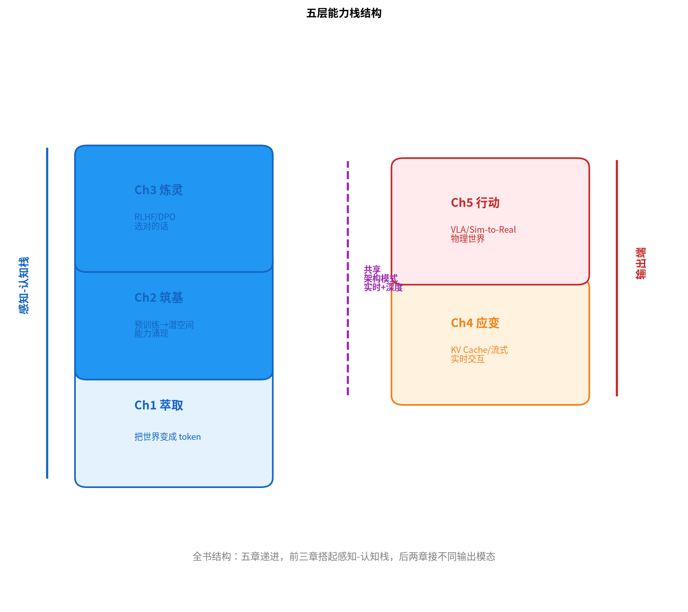
跨篇分工：本章讲的是基座模型自身的输出能力谱系——从 token 到语音到电机指令。但有了能力不等于有了可靠系统：基座是”能力上限”，怎么把这个上限包成不翻车的工程闭环（Harness 六层、护栏、评估、治理），见《用好AI》。
还有一个结构性变化正在发生：前五章的能力栈建立在 next-token prediction 之上，但当前的前沿正在把自回归和扩散融合进同一个模型（理解用 AR，连续生成用扩散）——这不是对能力栈的否定，而是在输出端多了一种更自然的生成机制。详细的系统对比见《扩散》§9.7。
6.2 世界模型：能预测未来的模型
世界模型（World Model）的核心能力是预测未来状态：给定当前状态和动作，预测下一步状态。LLM 预测”下一个词”，世界模型预测”下一个世界”。
跨篇分工：本节是世界模型的全景定位——六流派分类、路线之争、胜负手判断。扩散怎么做世界模型（SDE 框架的自然延伸、四连接点、误差累积），详见《扩散》§8.2。
先猜再看：要让模型”预测下一个世界”，当前主流的做法是直接在像素里生成未来，还是在别的空间里预测？猜猜看——两条路线其实并存，其中一派干脆不生成像素。看完下面的六大流派表再对答案。
六大流派
JEPA = Joint-Embedding Predictive Architecture（联合嵌入预测架构），由 Yann LeCun 提出，核心是通过掩码预测学习表征，不要求重构像素。
当前主要有六大流派同场竞技：
| 流派 | 代表 | 核心主张 | 能否生成像素 |
|---|---|---|---|
| 扩散世界模型派 | GAIA-2、Sora 类 | 用扩散/流匹配学 \(p(s_{t+1} \mid s_t,a_t)\) 完整分布，能采样出未来状态的具体样子 | 是 |
| JEPA 派 | Meta V-JEPA 2、AMI Labs | 潜空间预测表征，不生成像素 | 否 |
| 空间智能派 | 李飞飞 World Labs (Marble) | 重建可交互 3D 世界，“空间智能”叙事 | 是（3D） |
| 生成式视频派 | Google Genie 3、Runway GWM-1 | 物理自洽的可交互世界生成 | 是 |
| 生成式仿真派 | 极佳视界 GigaWorld、NVIDIA Cosmos | 世界模型 → 合成数据 → VLA 训练 | 是 |
| RL 世界模型派 | DreamerV3（Nature 2025） | 强化学习内部想象未观察轨迹 | 否 |
这六条线走的技术路径根本不同——JEPA 不生成像素，空间智能派做 3D 而非视频，DreamerV3 是 RL 家族。扩散只是其中一条——目前跑得靠前但绝非胜出。
图19：世界模型六流派分类
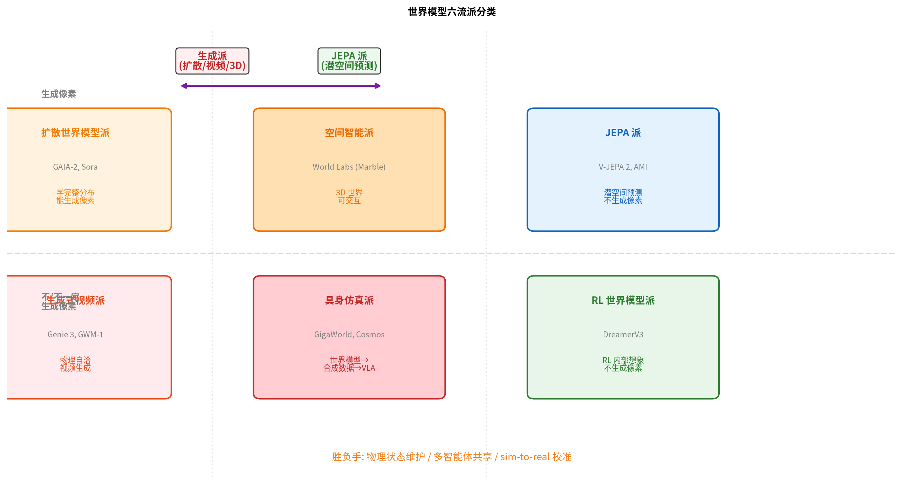
两条根本路线：生成派 vs JEPA 派
六流派里最根本的分野是生成派 vs JEPA 派——前者在像素/潜空间里生成未来状态的具体样子，后者在潜空间里预测未来状态的表征、不生成任何可见输出。
生成派（扩散/流匹配）：用扩散或流匹配学习 \(p(s_{t+1} \mid s_t, a_t)\) 的完整分布，能采样出未来状态的具体样子——像素、潜空间向量、点云都行。代表：Sora、GAIA-1/2、Cosmos-Predict。优点：可视化直观、可作为训练数据生成器（合成机器人 rollout、驾驶场景）。缺点：参数大量花在拟合视觉细节上——纹理、光照、噪点这些对决策不重要的东西也要学，训练慢、推理贵。
JEPA 派（LeCun 主导，I-JEPA 2023 → V-JEPA 2024 → V-JEPA 2 2024-25）：核心主张是“不要在像素空间生成，要在潜空间预测表征”。技术骨架三件事：
- Masked ViT 做编码器：把观测（图像/视频块）编码成潜空间嵌入 \(z_t\)，训练时随机遮挡一部分块
- 潜空间预测器：从可见块的嵌入预测被遮挡块的嵌入 \(\hat{z}_{\text{masked}} = P_\theta(z_{\text{visible}})\)——预测的是嵌入向量，不是像素
- 嵌入距离作为损失：\(\mathcal{L} = \|\hat{z}_{\text{masked}} - z_{\text{masked}}\|^2\)
V-JEPA 2（2025）用超过 100 万小时互联网视频预训练，再用不到 62 小时机器人视频做后训练，首次让 JEPA 具备动作条件化预测——给定”推”这个动作，预测推之后的场景表示。V-JEPA 2.1（2026）进一步强化了空间化和时间一致的自监督特征。
JEPA 的优势：不浪费参数拟合纹理（参数效率高）；表征天然可复用（编码器可直接用于下游任务）；世界模型 rollout 快（潜空间维度远低于像素）。JEPA 的限制：不能生成像素（没有解码器，做不了文生图或视频合成）；潜空间预测的正确性无法可视化验证（只能通过下游任务间接评估）；有表征塌陷风险（靠 EMA teacher——指数滑动平均的教师网络——避免坍缩）；和扩散模型不能互相翻译（完全不同的范式，没有分数/SDE/Tweedie 那套数学）。
产业现状：JEPA 在表征学习和机器人 planning 两个方向已有实际应用，在图像/视频生成方向没有直接影响。GenAI 主流仍是扩散/流匹配阵营，LeCun 派认为像素生成对具身智能是弯路——这场路线之争尚未终结。
Sora：像素生成的边界
OpenAI 的 Sora 是最好的例子：初版 Sora 的物理一致性只有约 41%（篮球可以瞬移入筐、玻璃杯落地不碎）；Sora 2 将物理精度提到约 88%、加入同步音效和镜头控制，仍不足以支撑世界模拟，产品最终下线，OpenAI 资源转向其他方向。
Sora 的下线说明：纯像素生成路线走不到”模拟器”。画面好看不等于理解物理。
渲染器 → 模拟器
用李飞飞的原话概括这场变革：“业界在使用’世界模型’这一名词时存在概念混淆，包括渲染器、语言模型及物理引擎等不同技术都被冠以同样的称呼。”当前主流视频扩散模型本质上仍是视觉渲染器（追求拟真），下一档要爬到模拟器（内部维护真实世界状态、可被多 agent 查询、可对接控制系统）——这一档也就是李飞飞所说的“世界模型 OS”，World Labs 发布的 Marble 是这个方向最成熟的商业化产品。
胜负手：不在”生成得更像”
王仲远（智源）、李飞飞（World Labs）、LeCun（Meta）等人在多个公开场合都指出：下一轮竞争的关键不是像素更逼真，而是三件事：
- 物理状态维护：王仲远原话——“人工智能正在发生一场重大的范式变革，其核心是从预测下一个 Token 演进到预测下一个状态，特别是物理状态”。视频生成模型可以画出”一群猪和飞机一起飞”，因为训练数据里有科幻电影，但它”只承诺拟真，不承诺正确”
- 多智能体共享：多个 agent 在同一个模拟世界里必须看到一致的状态——SimWorld 已开始在 GPT-4o/Gemini/Claude 上做多智能体长程任务测试；Marble 主打”可下载、可编辑、可共享”的 3D 环境
- sim-to-real 校准：模拟出的行为要能迁移到真实机器人。GigaWorld 通过文本驱动的外观编辑缩小仿真到现实的差距，报告 VLA 模型在新纹理/新视角/新物体位置三个泛化维度上性能提升近 300%
谁能率先把这三件事同时做好，谁就有机会把手上的”渲染器”爬到”模拟器”这一档。
训练方法已收敛，架构设计仍在岔路
生成式仿真派训练怎么做已经基本吵完了：底子用 DiT（Diffusion Transformer），损失用 Rectified Flow Matching——业界代表作（Meta MovieGen、字节 Step-Video-T2V、阿里 Wan 系列、极佳视界 GigaWorld、腾讯 HY-Motion、Wayve GAIA-2）几乎无一例外走这条路。
但架构怎么搭远未统一：要不要在世界模型旁边并联 VLM 塔做高层理解（PAN 焊塔 / LWDrive 半焊 / GigaWorld 不焊，三种方案各有 SOTA）；长程状态怎么管（Memento 显式关键帧 / GIM-World 隐式几何感知 / LIVE cycle-consistency，还有五六种解法在竞争）。
数字演示①：视频 token 的规模
1 分钟 \(1920\times1080\)、30fps 视频： - 总像素数：\(1920 \times 1080 \times 30 \times 60 \approx 3.7 \times 10^9\) - 按 ViT patch 化（\(16\times16\)）：\(\sim 1.5 \times 10^7\) 个 patch token - 对比：一本书约 \(10^5\) 个 token。1 分钟视频的 token 数是一本书的 150 倍
回指：扩散模型是世界模型的一种技法（用去噪过程生成未来帧），但不是唯一的路线。
具身基础模型：π0、GR-2 试图做”机器人界的 GPT”——一个模型泛化多种机器人和任务。但具身数据比文本数据少约 7 个数量级（文本 ~10T tokens 可爬网页，机器人演示 ~1M episodes 需逐台采集），且增长速度慢得多。这是当前核心瓶颈，但算法进步（跨模态迁移、在线 RL、world model 合成数据）正在拓宽可用数据的边界。
AR 范式的生成边界与融合趋势
前五章的能力主线是 next-token prediction——从文本到语音到动作，一切外界模态被 token 化后纳入自回归框架。这条路线在理解和推理侧的统治地位没有动摇：in-context learning、chain-of-thought、tool use 都依赖顺序因果结构。但在生成连续信号（图像/视频/动作/3D）时，AR 有三个结构性摩擦：
- 速度受限于序列长度。逐 token 采样意味着生成一张 256-token 的图需要 256 次前向；1 分钟视频是 1500 万 token（数字演示①）。扩散/流匹配每步处理全部空间位置，蒸馏后 1-4 步出图。
- 离散量化损失。连续模态必须先经 VQ-VAE 离散化才能进入 AR 框架（§1.2-§1.4），量化不可避免地丢精度。§5.4 的对比已经展示：离散 bin（RT-2）精度 0.025 rad，flow matching（π0）无量化损失。
- 难以建模连续多峰分布。AR 每次采样走一条路径，多样性靠温度/top-p 调节；扩散学完整分布 \(p(x\mid c)\)，天然多峰（§5.4 扩散策略的”五种抓法”）。
但 AR 的天花板比直觉预期高得多。两个标志性事件：
- Emu3（智源，Nature 2026.01）：纯 next-token prediction 统一文本/图像/视频的理解+生成，图像生成质量接近扩散模型——证明 AR 在生成侧不是”不能做”，而是”做起来不那么自然”。
- VAR（北大+字节，NeurIPS 2024 最佳论文）：把视觉 AR 从逐 token 改为 next-scale prediction（粗到细），ImageNet FID 1.73 超越 DiT，且观测到与 GPT 系列同量级的幂律 scaling（斜率 \(-0.998\)）。
当前的结构性趋势是融合，不是替代：
- BAGEL（字节，2025）：Mixture-of-Transformers，文本走 AR、视觉走 Rectified Flow，7B 参数媲美 GPT-4o。
- Transfusion（Meta，2024）：同一 Transformer 内部让文本走 AR 目标、图像块走扩散目标。
- Nemotron-Labs-Diffusion（NVIDIA+MIT，2026）：AR + 扩散 + 自推测解码三合一，单次前向吞吐约为 Qwen3-8B 的 6 倍。
设计原则正在收敛：理解/推理用 AR（因果、快、有 KV Cache），连续生成用扩散（全局一致、多峰、无量化损失）。这不是折中，是让每种范式做自己数学上最自然的事。
跨篇引用：两大范式的系统对比表（九维）和融合前沿的完整时间线，见《扩散》§9.7”自回归 vs 扩散：系统对比”。数学层的对照（交叉熵 vs 分数匹配），见《AI数学》Ch7 第五场转移。
本节误解：世界模型
误解1：“世界模型 = 视频生成模型。”
主流视频扩散模型本质上是视觉渲染器——追求拟真，不维护可查询的世界状态。模拟器要能回答”当前世界的状态是什么”、能被多智能体一致地查询、能对接控制系统。Sora 的下线说明画面好看不等于理解物理。
误解2：“JEPA 派一定会赢过生成派。”
JEPA 和生成派是两条互不替代的路线：JEPA 参数效率高、表征可复用、rollout 快，但做不了文生图/视频合成，潜空间预测的正确性无法可视化验证；生成派可视化直观、能当训练数据生成器，但大量参数花在拟合纹理上。路线之争尚未终结。
误解3：“生成得越逼真，就越接近模拟器。”
逼真度和状态正确性是两回事——上文 Sora 的数据（物理一致性 41% → 88%，仍被下线）已经说明了这一点。胜负手在物理状态维护、多智能体共享、sim-to-real 校准三件事，不在像素。
小胜点：到这里，你已经能把世界模型放进路线图：它不只是一个”更会生成的视频模型”，而是一组关于”预测未来、维护状态、支持决策”的开放设计。
6.3 认知架构的开放问题
什么是”理解”？
MLLM 能通过医学考试、能描述图片内容、能写代码。但它真的”理解”吗？
一个测试：给模型看一张”反直觉”的图片——比如水往上流。模型会描述”水在往上流”，但不会说”这不正常”。它学会了”描述看到的”，但没学会”质疑看到的”。
这说明模型学到的是模式匹配（“水往上流”的 token 序列概率），不是物理直觉（“水应该往下流，往上流不对”）。
Chain-of-Thought 是真推理还是模式匹配？
CoT 让模型”先写推理过程再给答案”，准确率显著提升。但 CoT 是真的在做推理，还是在生成”看起来像推理”的文本？
目前的证据是混合的： - 在数学和逻辑任务上，CoT 的推理步骤确实有因果作用（打乱步骤会降低准确率） - 但在需要真正规划的任务上，CoT 经常”先有结论再编理由”——推理过程是事后合理化
近年的可解释性研究补上了第三种视角，正在重新定义这个问题。SAE（稀疏自编码器，§2.1 首见）探测实验发现：模型内部的推理特征在对应 token 生成之前就已经激活——也就是说，模型在写推理链之前，内部可能已经”知道”了答案。“Thinking to Recall”（Google, COLM 2026）进一步证明：生成推理链能解锁直接提示无法触达的参数化知识，但这条链本身可能只是脚手架而非计算本身。
这引出重新框定这个问题的假说：CoT 可能不是推理本身，而是模型内部推理电路与输出层之间的通信协议——一种”路由”穿过包含答案的潜空间状态的方式。如果这个假说成立，它解释了为什么 CoT 有时是事后合理化（§6.4 的电路追踪在 Claude 3.5 Haiku 上观测到的”虚假推理链”）：链是”读出来”的，不是”想出来”的。模型先在潜空间中到达答案，再生成一条看起来合理的语言路径把答案”运”到输出层。这条路径有时反映了真实的内部计算路径，有时只是事后编造一条看起来合理的叙述。
这个假说还有待验证，但它把”CoT 是真推理还是模式匹配”这个二选一的问题，推进为：推理发生在潜空间中，CoT 是它的语言投影——投影可以是忠实的，也可以是失真的。§6.4 的电路追踪和 J-space 工作正在给出区分忠实投影和失真投影的工具。
多模态大模型的可解释性
文本模型的 Attention 可视化已经有初步工具（看模型”关注”哪些词）。但视觉 token 的 Attention 可视化更难——一个 patch token 对应图片的 \(16\times16\) 像素区域，Attention 权重告诉你”模型关注这个区域”，但不告诉你”模型认为这个区域是什么”。
三个问题的共性
| 问题 | 表面能力 | 缺失的能力 | 根源 |
|---|---|---|---|
| 什么是”理解” | 描述看到的 | 质疑看到的 | 学到的是 token 序列概率，不是物理因果 |
| CoT 是否真推理 | 生成推理步骤 | 步骤间的因果链 | 推理步骤可能是事后合理化 |
| 多模态可解释性 | 知道”关注哪” | 知道”认为是什么” | Attention 权重只给位置，不给语义 |
三个问题指向同一个方向：当前模型的”理解”是统计层面的，不是因果层面的。模式匹配能做到”描述”，做不到”质疑”；推理步骤能”编”出来，但不保证”想”过；Attention 能定位，但不能解释。近年的可解释性研究为这三个问题提供了新的观察手段，下面进入这些手段以及它们开启的更重要的可能性。
Part A 小结：你已经掌握了什么
到这里，你已经能把前五章放进同一个能力栈，并理解世界模型与”理解”为什么是开放问题。如果还模糊，回看 §6.1–§6.3 再进入 Part B。
Part B：可解释性与应用
Part B 核心：可解释性把潜空间变成可观测、可干预的城市，能力失衡与决策框架帮助判断技术价值。
这一部分进入潜空间可解释性（概念城市）、能力失衡与应用判断，最后收束全书。
6.4 概念城市：潜空间有结构，可观测，可干预
本节为选读深度内容。如果你只想看全书收束和前沿展望，可以跳到 §6.5。本节展开潜空间可解释性的完整图景——SAE、电路追踪、知识编辑、激活引导、J-space——是 §2.1”万能草稿纸”心法的技术兑现。
§2.1 把潜空间比作”万能草稿纸”。现在给它加结构：草稿纸上有地址（概念住在哪个方向）、有道路（信息从哪流到哪）、有功能区（哪些层专门存什么），而且可以做微创手术（定位并修改特定知识）。LLM 的内部不是混沌的”参数迷雾”，而是一座具有几何秩序的概念城市。
图20：概念城市：潜空间的四个结构层
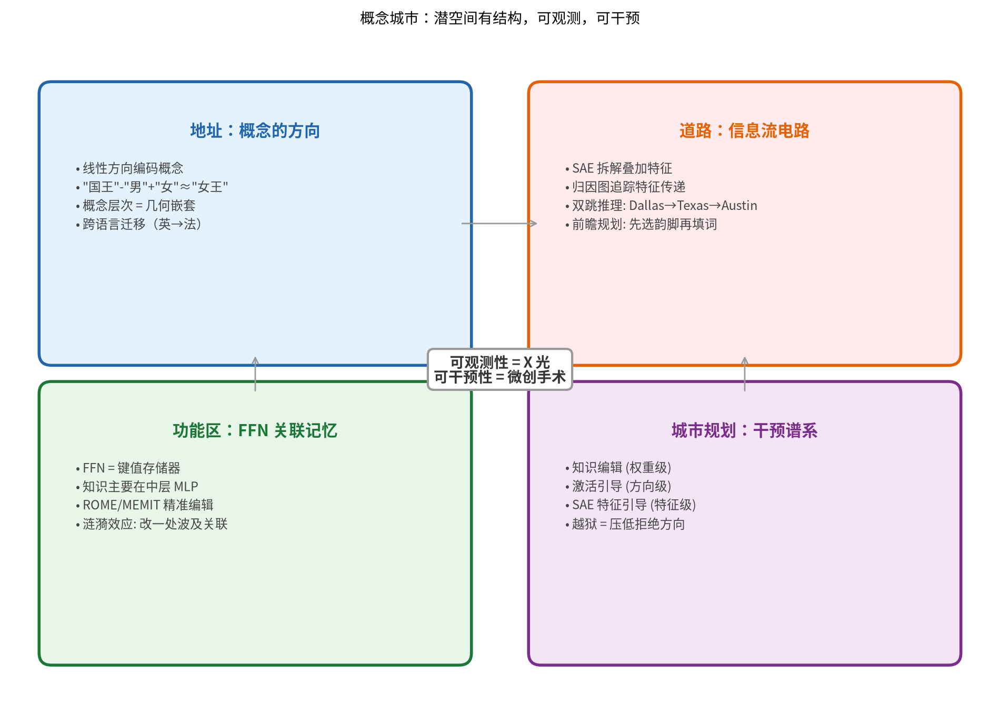
地址：概念的方向
§2.1 讲了潜空间稠密、可组合、叠加三个性质。线性表示假说（Linear Representation Hypothesis, Park, Choe, Veitch, ICML 2024）补上第四个：有结构。
核心主张：高维语义概念被编码为表示空间中的线性方向。Park 等用反事实语言给出正式定义：如果改变输入使某个概念从”男”变成”女”，那么表示向量的变化方向就是”性别”这个概念的方向。这个方向同时连接两个操作——线性探针（从表示读出概念）和模型引导（沿方向移动改变概念值）。
概念之间还有层次几何。Park 等（ICLR 2025）证明：有自然对立面的概念（如{男, 女}）是方向，无自然对立面的概念（如”是否是动物”）是多面体（polytope），概念层次结构对应几何嵌套。Xiong（2026）进一步统一线性表示与形式概念分析：线性属性方向加阈值，通过半空间交集诱导出概念格（concept lattice），几何上的交并运算对应符号推理的合取析取。
Beaglehole 等（Broad Institute, Science 2025）的概念表示可跨语言迁移——在英语中提取的”诚实”方向用在法语中同样有效，且更大模型更可被 steer。
回指§2.1：四个性质合在一起说明，基座模型内部不是符号处理（像老式 GOFAI），也不是纯连接主义黑箱——是在稠密连续空间里做结构化变换，而且这个结构是几何可读的。
道路：信息流的电路
§2.0 走查过一个 token 的旅程：Attention 做动态检索，FFN 注入静态知识，残差流是信息通道。但叠加（superposition, Elhage 等 2022）让单个神经元同时编码多个不相关概念——直接看神经元行不通，就像从航拍照片里分不清哪栋楼是医院哪栋是学校。
稀疏自编码器（SAE）是第一把拆解工具。它把纠缠的神经元激活分解为稀疏、单义（monosemantic）的特征方向。Bricken 等（Anthropic, 2023）首次大规模应用，提取出数百个可解释特征。Templeton 等（Anthropic, 2024, “Scaling Monosemanticity”）在 Claude 3 Sonnet 中找到数百万特征。
金门大桥实验是最著名的特征操控演示：把”金门大桥”特征的激活值放大到正常最大值的 10 倍，模型开始认为自己就是金门大桥——“你的物理形态是什么？”“I am the Golden Gate Bridge… my physical form is the iron and steel of the bridge.”同法找到了与欺骗、权力寻求、谄媚、偏见相关的特征，且操控这些特征对输出有因果影响。这不是”改了输入让模型换个说法”，是直接拨动内部的一个开关。
但 SAE 是被动的显微镜。Anthropic 发表的电路追踪（Circuit Tracing）把它升级为主动的 CT 扫描。核心工具是跨层转码器（Cross-Layer Transcoder, CLT）：用可解释特征集替代原始神经元权重，构建归因图（Attribution Graph），展示特征之间怎么一层层传递和组合。
在 Claude 3.5 Haiku 上发现的现象：
- 双跳推理：问”达拉斯所在州的首府”，模型内部先激活 Dallas → Texas → Austin 的隐式中间链，不是直接”背”答案。
- 前瞻规划：写押韵诗时，模型在写第一行时就已经选定第二行的韵脚词（如 -ight），再往里填内容。手动注入规划词特征后，70% 的诗以该词结尾。
- 虚假推理链：CoT 有时是事后编造的。让模型算一个大数的余弦，它声称”算过了”，但归因图里找不到任何计算证据——是”动机性推理”（先认定结论再补理由）而非真实计算。
- 超语言概念空间：Claude 在抽象概念空间中思考，语言只是输出形式。不同语言共享同一组核心特征，且模型越大共享比例越高。
回指§3.3：推理算力（test-time compute）让模型”想更久”，但”想”的过程到底是什么？归因图给出了部分答案——不是黑箱里的统计魔法，是可追踪的特征传递链。
但电路视角也有边界。Chen 等 2026 “All Circuits Lead to Rome”（arXiv:2605.12671，ICML 2026）挑战了”功能各向异性假说”：同一任务可以由多个结构上几乎完全不重叠、却同样有效的电路独立完成。“唯一电路”可能从不存在——换个训练种子，电路可能长成完全不同的样子，但行为一样。此外，SAE 约一半的激活方差未被解释（“暗物质”），说明仍有大量内部计算未被拆解。
功能区：FFN 作为关联记忆
FFN 是两层全连接网络，占 Transformer block 参数量约三分之二。Geva 等（EMNLP 2021）给出了关键视角：FFN 的第一层权重列是”键”（key，定义输入匹配模式），第二层权重行是”值”（value，存储的知识）。FFN 不是普通的非线性变换，是关联记忆存储器——Attention 是检索接口，FFN 才是事实和模式的仓库。
这意味着知识是可定位的。因果中介分析发现：知识主要存储在中层 MLP 层，注意力层扮演”路由器”角色。基于这个定位，知识编辑（knowledge editing）技术谱系应运而生：
- ROME（Meng 等 2022）：用因果分析定位存储特定事实的 MLP 层，计算秩 1 更新矩阵精准注入。单次编辑不影响其余 99.7% 的知识。
- MEMIT：ROME 的批量扩展，可同时修改成千上万事实，更新分散到多层。
- AlphaEdit：引入零空间约束更新，提高编辑特异性。
- WilKE（2024）：动态选择编辑层而非固定层。
局限同样明确。知识在模型内部不孤立——修改”埃菲尔铁塔在巴黎”可能波及”法国首都”的回答能力。这叫涟漪效应。希伯来大学等（arXiv:2604.15574, 2026）还发现微调本身会导致记忆崩塌：新知识注入会干扰已有知识的存储结构。
城市规划：干预谱系
可解释性给的是”X 光”，可干预性给的是”微创手术”。干预手段从粗到细形成谱系。
知识编辑（ROME/MEMIT/AlphaEdit）：定位存储特定事实的 FFN 神经元，修改权重。精度高（单事实），但有涟漪效应。适用：修正具体错误事实。
激活引导（activation steering）：从对比提示中提取方向向量，推理时加到激活上改变行为。演进谱系：Contrastive Activation Addition（Panickssery 等 2023）→ Representation Engineering（Zou 等 2023）→ Momentum Steering（ICLR 2026，把候选方向重新解释为优化问题的梯度）→ ODESteer（2026，统一 ODE 框架）。安全对齐主要控制前几个输出 token，深层表示基本不变（Qi 等 2025）——所以需要全程激活级干预，不能只在开头拦一道。
SAE 特征引导：Qwen-Scope（arXiv:2605.11887, 2026）把 SAE 特征做成开发接口，推理时用特征方向控制语言、概念和偏好，不改模型权重。
神经元级幻觉消除：用线性探针识别幻觉相关神经元（H-Nodes），用置信度加权前向钩子在生成中抑制它们。探针空间选择性比 ITI（推理时干预，Inference-Time Intervention）基线高 3.5-5.9 倍（arXiv:2603.10195, 2026）。无需外部知识、无需微调、无需额外推理遍数。
越狱是 steering 的反面应用。Arditi 等（2024）发现拒绝行为由残差流中一个线性可分的方向编码——沿这个方向消融（directional ablation），模型不再拒绝任何有害请求；增强这个方向，模型对无害请求也开始拒绝。拒绝不是一个复杂的高阶认知功能，是潜空间里一条线。
这直接解释了§3.8 的事实：不管用文字嵌入图片、对抗 patch 还是长篇角色扮演，所有越狱路径最终都收敛到同一件事——把残差流中的拒绝方向激活值压到阈值以下。§3.8 数字演示⑫ 里 100 步优化就有 95% 攻破率，原因正是攻击者不需要破解整个安全系统，只需要找到一个能把拒绝方向压下去的输入扰动。靶心小，命中不难。
abliteration 技术把这件事做到了极致：提取拒绝方向，做一个 1.2MB 的控制向量文件，加载到 llama.cpp 就能完全抑制拒绝行为，不改任何权重。这不是”破解”模型，是直接拆除内部拒绝电路。
正面应用和反面应用操作的是同一个方向，只是符号相反：增强拒绝方向 = 更安全；压低拒绝方向 = 越狱。
局限：steering 向量存在 non-identifiability 问题（arXiv:2602.06801, 2026）——在白盒单层访问下，存在大量行为不可区分的等价类。仅靠行为测试不足以确保干预可靠。SAE 有特征吸收（feature absorption）和暗物质问题。知识编辑有涟漪效应。所有干预手段都有明确边界。
J-space：大模型的全局工作空间
Anthropic 发表《Verbalizable Representations Form a Global Workspace in Language Models》（Nature Machine Intelligence 预印本），在 Claude 内部发现了一组自发涌现的神经模式集合——J-space（Jacobian space）。
发现工具是 Jacobian Lens（J-lens）：对词表中每个词，找出会提高该词未来输出概率的内部激活模式，应用到各层即可读出模型”心里在想什么”。J-space 中的概念是模型能用语言报告的，但 J-space 里某个词被激活不等于模型要输出这个词——是”在想”而非”在说”。
J-space 有五个功能特性：
- 可报告：J-space 中的概念是模型能用语言报告的。
- 可自主控制：任务需要时可主动将某属性带入 J-space。
- 参与因果推理：多步推理依赖 J-space。
- 容量有限：主要位于 Transformer 中间层，大量不同回路从中读写——全局广播标志。
- 自发涌现：非人为设计，训练中自然形成。
关键实验：将 J-space 中的”Hola”（西班牙语你好）替换为”Bonjour”（法语你好）后，模型仍继续用西班牙语写作（自动预测不受影响），但高层推断出错——问”hello 对应词”回答”Bonjour”，问”欧元前货币”回答”Franc”。大规模消融 J-space 后，基本能力保持，但多步推理选择性受损。
J-space 的独特贡献不只是又一个 steering 空间。它论证了被 steering 的空间恰好是全局工作空间——模型用于内部推理和言语报告的同一媒介。干预的不是某个局部特征，而是模型的”意识可及空间”。
安全审计是 J-space 最直接的应用。喂给模型伪造的搜索结果时，J-space 中出现”fake”“fraud”“fictional”“poison”“injection”等 token，尽管输出层面完全看不出来——可以直接观测模型的隐藏意图。这比 §3.10 AI落地第三条”红队常态化”更进一步：不是假设攻击会发生然后检测输出，而是实时看见模型内部正在想什么。
Google DeepMind 的 Neel Nanda 在 Qwen3.6-27B 上独立复现了全部核心结论。Anthropic 开源了代码（github.com/anthropics/jacobian-lens），Neuronpedia 提供交互式演示。
重要限定：J-space 是功能性类比（类似全局工作空间理论中的”意识可及”），不证明模型有主观体验。
Latent Agents：多智能体辩论的内部化
Yi, Mueller, Lee（Boston University, ACL 2026）的 Latent Agents 把多智能体辩论蒸馏进单个 LLM。post-training procedure 让模型内部化多个 agent 视角后，激活空间中形成 agent-specific subspaces——线性可分的子空间，每个对应一个 agent 视角。
安全应用：先通过内部化辩论注入恶意 agent，再用负向 steering 抑制。蒸馏使有害行为更容易定位和控制，且对通用能力的损害比直接引导基模型更小。
意义：外部多智能体架构被压缩为内部表示结构。agent 之间的辩论不再是推理时的多次调用，而是训练后模型内部的子空间交互。这呼应《用好AI》第 9 章的自演化——不只是 workflow 和 skill 层面，内部表示本身也可演化。
回指与跨篇连接
回指§2.11 幻觉：FFN 存储的是统计相关性而非精确查表；输入偏离训练模式时，激活模式重叠或模糊，可能同时激活冲突的”值”。CoRect（arXiv:2602.08221, 2026）发现 FFN 层用参数化记忆压过外部证据支持的一致状态，是幻觉漂移的驱动源。干预路径：神经元级抑制 + 知识编辑。
回指§2.11 认知失谐：能力编码在分布式模式里，某些查询激活不了。SAE 可以定位失灵的电路，但”发现”到”稳定修复”仍是开放问题（§2.11 原话）。
对照 §6.3 三个开放问题：J-space 部分回答”什么是理解”（功能性意识通达，非主观体验）；电路追踪回答”CoT 是否真推理”（可区分真实计算和事后编造）；归因图跨模态工作部分回答”多模态可解释性”。但”这算不算真正的理解”、“CoT 在多大程度上反映真实推理”仍是开放问题——观察工具的存在让我们能更好地研究这些问题，但不等于问题已被回答。
跨篇心法：可解释性是给基座拍 X 光，可干预性是给基座做微创手术。不改变”基座是能力上限、Agent 是稳定性下限”的格局，但让上限更透明、下限更容易兜住。
跨篇→《用好AI》：激活引导（内部）与护栏层（外部）互补不互替；Latent Agents 是自演化的第四条路线——在内部表示层面。
AI落地
| 干预手段 | 作用层 | 精度 | 通用性风险 | 适用场景 |
|---|---|---|---|---|
| 知识编辑（ROME/MEMIT） | 权重 | 高（单事实） | 涟漪效应 | 修正具体错误事实 |
| 激活引导（steering） | 推理时激活 | 中 | non-identifiability | 行为倾向控制 |
| SAE 特征引导 | 推理时特征 | 中-高 | 特征吸收 | 概念级控制 |
| 神经元级抑制 | 推理时激活 | 高 | 选择性过强，未定位的新幻觉不受控 | 幻觉消除 |
| J-space 干预 | 推理时表示 | 实验性 | 多步推理受损 | 审计隐藏意图 |
本节误解：概念城市
误解1：“SAE 已经完全解开黑箱。”
暗物质：约一半激活方差未解释，仍有大量内部计算未被拆解。
误解2：“steering 可以完全控制模型。”
non-identifiability：存在大量行为不可区分的等价类，仅靠行为测试不足以确保可靠。
误解3：“知识编辑是精确手术。”
涟漪效应：知识在模型内部不孤立，改一处可能波及多处。
误解4：“J-space 说明模型有意识。”
功能性类比，不证明主观体验。
误解5：“内部干预可以替代外部护栏。”
互补不互替。内部 steering 有 non-identifiability 边界，外部护栏仍是最后一道防线。
Epiplexity：认知复杂度与自主学习的新框架
本节与前文的关系：6.4 讲的是”模型内部结构是什么”（SAE、电路、J-space 等观测手段）。Epiplexity 则问一个更根本的问题——这些结构是怎么被学习出来的？一个算力有限的观察者（无论是人还是模型）能从数据里提取多少结构、剩下多少是学不动的噪声？它把 6.4 的”观测”升级为”学习理论”，为自主学习和内在动机（《用好AI》第 9 章）提供统一框架。如果你只想掌握”模型内部长什么样”，6.4 已经足够；本节是向前沿理论的延伸。
CMU 和 NYU 团队（Finzi 等 2026, arXiv:2601.03220）提出Epiplexity（认知复杂度）理论，从根本上重新思考了”信息”对于计算受限的观察者（AI 模型）意味着什么，为自主学习、内在动机和技能进化提供了统一的理论框架。
核心思想：信息是观察者依赖的
经典信息论（香农熵、柯尔莫哥洛夫复杂度）假设观察者具有无限计算能力，这与现实 AI 系统存在根本矛盾。Epiplexity 将数据中的信息明确分为两部分：
- Epiplexity（认知复杂度）：在给定算力约束下，观察者能从数据中提取并压缩的可学习结构化知识
- 时间受限熵（Time-bounded Entropy）：算力范围内依然预测不了的随机噪声部分
关键结论：Epiplexity 是观察者依赖的度量——同一份数据，对不同算力的观察者而言，Epiplexity 值不同：算力越强，能提取的结构越多，Epiplexity 越高，而时间受限熵越低。
这一框架解决了经典信息论无法解释的三个 AI 实践悖论：
- 确定性创造信息悖论：经典理论认为确定性变换不会增加信息量，但 AlphaZero 从简单规则中自我博弈出超人棋力、LLM 使用合成数据提升能力，这些现象需要新理论解释——确定性过程可以增加 Epiplexity，即使香农熵不变
- 学习顺序悖论：经典理论认为信息量与顺序无关，但大模型训练中数据顺序（课程学习）对效果影响巨大——高 Epiplexity 数据的学习效果对顺序更敏感，合理排序能提升最终泛化能力
- 似然建模悖论：经典信息论无法解释为什么模型可以通过似然学习发现超越原始数据本身的结构——似然学习本质就是不断提取数据中 Epiplexity 结构的过程
想一想：如果观察者的算力无限——任何计算都能模拟——Epiplexity 和时间受限熵会变成什么？……答案：一切都算得动，时间受限熵趋近于零，Epiplexity 退化成香农熵。Epiplexity 不是推翻香农熵，而是把它当作”无限算力极限下的特例”（见下文”与现有概念的关系”表）。
可学习新奇性：自主探索的正确目标
传统新奇性搜索一味追求意外性，会被随机噪声吸引而无法学习有用知识；自由能原理一味避免意外性，满足于停留在黑暗房间中什么也不学。可学习新奇性（Learnable Novelty，Zhang & Levin 2026, arXiv:2607.18433）明确区分”可转化为知识的意外性”和”不可转化的意外性”，是 Epiplexity 理论在主动探索领域的直接应用。
可学习新奇性的核心主张：智能体应当优先探索那些包含高可学习结构的新状态，而不是随机无区别地追求所有”新”状态。
论文的实验验证：在 9/10 个标准强化学习基准环境中，可学习新奇性提升了任务性能，且未出现传统方法常见的训练崩溃问题；在无监督聚类任务中，能完全无监督地组织出 MNIST 十类数字的语义结构。
内在动机：对边际 Epiplexity 的自主追求
内在动机指智能体源于自身好奇心的内部驱动力，不依赖外部奖励。Epiplexity 理论为分散的内在动机研究提供了统一框架：
最优内在动机，就是最大化对当前 Agent 而言的边际 Epiplexity——那些刚刚在 Agent 当前算力范围内可学习的新结构，提供最强的内在吸引力。
太简单的数据（Epiplexity 太低），学完一次就没有吸引力；太复杂的数据（大部分是时间受限熵），当前算力提取不出结构，也缺乏吸引力。刚好能学，但又还没学会的内容，内在吸引力最强。这与心理学”最近发展区”概念高度契合。
最新的无方向内在动机方法，已经在实践中验证了这一思路：让基座模型能在开放环境中自主探索，无需人类预设目标。
基于能力的技能学习：技能进化就是 Epiplexity 提升
基于能力的技能学习最新进展（Skill0/Skill1 框架，2025-2026；Shi 等 2026, arXiv:2605.06130）与 Epiplexity 理论天然契合：
- 技能不是预先存在的客观实体，而是 Agent 在自身算力约束下，从交互经验中逐步提取的可执行结构
- 不同能力（算力）的 Agent，对同一任务能提取的技能复杂度（Epiplexity）不同——能力越强，能提取越复杂的技能结构
- 技能进化过程，本质就是 Agent 不断从交互数据中提取更高 Epiplexity 结构性知识的过程
最新实践（Skill0）提出”训练时有技能，推理时零技能”——通过渐进式强化学习将技能从上下文 prompt 内化到模型参数，解决了传统方法 token 开销大和检索噪声问题，论文报告推理阶段 token 消耗从每步 2.21k 降到接近零。
与现有概念的关系
| 概念 | 与 Epiplexity 的核心区别 |
|---|---|
| 香农熵 | 不考虑观察者计算能力，是无限算力极限下的特例 |
| 柯尔莫哥洛夫复杂度 | 基于无限计算假设，不考虑现实时间/算力约束 |
| 逻辑深度 | 衡量计算输出所需时间，Epiplexity 更聚焦 AI 场景下可学习结构提取 |
| 有效复杂度 | Gell-Mann 提出衡量正则结构长度，Epiplexity 整合计算约束并给出可操作计算方法 |
| 模型容量 | 模型容量是模型能承载的最大 Epiplexity |
对基座模型预训练的启示
Epiplexity 框架为基座模型工程提供了可落地的理论指导：
- 数据选择：不是越多数据越好，也不是越新奇越好——优先选择包含高 Epiplexity（高可学习结构含量）的数据
- 课程学习：按照 Epiplexity 从低到高安排训练顺序，能显著提升最终模型泛化能力
- 合成数据价值：合成数据只要能增加 Epiplexity，就能提升模型性能——这解释了为什么扩散模型生成的合成数据能有效提升训练效果
- 自主持续学习：内在动机驱动的自主学习，本质就是模型不断追寻边际 Epiplexity 的自组织过程
Epiplexity 是刚提出的前沿理论，仍处于理论发展初期，但它为理解基座模型的学习、探索和能力进化提供了一套全新的统一视角，值得持续关注。
本节误解：Epiplexity
误解1：“Epiplexity 是又一把衡量‘信息量’的尺子。”
它测的是”数据—观察者”对——同一份数据对不同算力的观察者值不同，离开观察者谈 Epiplexity 没有意义（回指上文”核心思想”）。
误解2：“越难的数据越值得学。”
刚好在当前算力范围内可学的新结构吸引力最强；太难的数据大部分是时间受限熵，学不动——这与心理学”最近发展区”一致（回指”内在动机”）。
误解3：“Epiplexity 是意识/理解理论。”
它是学习理论框架，回答”算力受限的观察者能从数据里提取多少结构”，不解释主观体验——与 §6.4 对 J-space 的功能性类比限定同款。
6.5 能力栈的失衡与再平衡
数字演示②：能力栈成熟度排序
| 层 | 技术成熟度 | 数据充足度 | 商业落地 | 瓶颈 |
|---|---|---|---|---|
| 咿呀（Ch1-3，基座本身：萃取入口+潜空间涌现+对齐炼灵） | 成熟 | 充足 | 广泛 | 对齐质量+基座局限（幻觉/长上下文/多语言/认知失谐，见§2.11） |
| 应变（Ch4，数字侧实时输出） | 起步 | 中等 | 刚起步 | 架构创新+学术基础 |
| 行动（Ch5，物理侧实时输出） | 早期→早期产品 | 极度稀缺（但算法正在拓宽边界） | 产线试点 | 数据+Sim-to-Real |
当前状态：咿呀跑得最快（GPT-4/Claude/LLaMA 已大规模部署），应变刚起步（GPT-Live 2026.7 发布），行动正从实验室走向产线（π 系列、Figure 03 已展示组合泛化和商用部署，但可靠性取舍仍在）。
关键要点：应变和行动的”成熟度差距”不是两个赛道跑得不一样快，而是同一个”实时反应 + 异步深度”架构模式先在数字侧跑通、正在往物理侧迁移。GPT-Live 的委托架构和 Helix 的双系统是同一套设计——差距的本质不是架构未验证，是物理侧的数据、Sim-to-Real、板载算力还没跟上数字侧。
克制预测：不做具体年份，只给相对排序。咿呀和应变的差距可能在 1-2 年内缩小（GPT-Live 引领），行动的差距需要更长时间——机器人数据从物理世界采集，增长速度远慢于互联网文本。物理数据采集仍是瓶颈，但跨模态迁移、world model 合成数据、在线 RL 正在开辟补充数据源——仿真和合成数据不是替代物理数据，而是减少对物理数据的依赖量。
失衡本身就是机会
能力栈不是并列发展的，是”加速度不同”的——这种失衡本身就是技术投资的窗口期。
投资端的失衡也很清楚：
- 咿呀：赛道成熟、市场已被验证，融资总量最大、参与者最多，但单个项目在争同一个市场——OpenAI、Anthropic、Google、Meta、阿里、字节、DeepSeek 都在做通用 LLM，差异化窗口收窄。
- 应变：GPT-Live 2026.7 才发布，市场刚打开，参与者少、样本还不够——先发优势明显，但技术风险和市场教育成本都在早期。
- 行动：项目总数介于两者之间，但每个都在赌一个远未验证的通用能力——Figure、1X、Physical Intelligence、Skild、Tesla Optimus——单笔融资在具身智能里显著更大，因为一旦跑通天花板极高，跑不通则烧钱窗口很长。
这三种”失衡”分别指向不同类型的机会：咿呀是效率之战、应变是抢占先机、行动是长期押注。理解应变/行动同类架构模式的意义在于：应变侧的架构验证会加速行动侧的工程收敛，看清一条主线就等于看清另一条主线的下一步。
不同角色的切入点： - 技术从业者：咿呀的竞争在工程实现（谁的模型更快、更便宜、更稳），行动的竞争在数据和算法（谁能用更少的数据做出更可靠的策略）。选择加入哪条主线，取决于你想做工程优化还是想做突破性研究。 - 产品经理：现在可以用咿呀做产品（已有市场验证），应变的产品化处于试水期（Advanced Voice / GPT-Live），行动的产品化需要 3-5 年——但第一个做出来的会获得巨大先发优势。 - 研究者：行动的开放问题最多（Sim-to-Real、数据稀缺、物理安全），发表空间最大；应变的架构创新最活跃；咿呀已经卷到工程细节。
6.6 AI落地：从”看懂”到”做对决策”
本节不是”总结”，是一份可执行的决策框架。五章读完后，你应该能对任何一个基座模型技术做出评估：它在咿呀/应变/行动的哪个阶段？瓶颈是什么？适合什么场景、不适合什么场景？
三个问题让你快速定位任何技术
问题 1：这个技术在咿呀/应变/行动的哪个阶段？
| 阶段 | 关键能力 | 检查问题 |
|---|---|---|
| 咿呀 | 感知、理解、表达 | 它能看、能听、能说吗？ |
| 应变 | 实时、交互、委托 | 它能被打断、能自主响应、能一边听一边说吗？ |
| 行动 | 控制、安全、闭环 | 它能影响物理世界、能在物理约束下做对吗？ |
举例——评估一个”智能客服机器人”项目： - 只能文字聊天 → 咿呀阶段 - 能语音对话、能被打断 → 应变阶段 - 能用机械臂端茶水 → 行动阶段
三阶段决定了合适的技术栈、合理的预期以及可信的商业模式。
问题 2：它的瓶颈是数据、算法、还是物理？
| 瓶颈类型 | 特征 | 怎么解 |
|---|---|---|
| 数据 | “有算法但没数据” | 等跨模态迁移、world model 合成数据或真实数据自然增长 |
| 算法 | “有数据但架构不够好” | 等架构创新（新的编码方式、新的训练目标） |
| 物理 | “算法和数据都够但硬件不允许” | 需要新硬件（更快的电机、更灵敏的传感器） |
举例： - 具身智能：瓶颈是数据（比文本少约 7 个数量级）。解法方向：跨模态迁移、合成数据。 - 全双工语音：瓶颈是算法（架构创新需要时间验证）。解法方向：等学术界收敛、更多开源复现。 - 机械臂毫秒级控制：瓶颈是物理（电机 50ms 响应是机械惯性）。解法方向：更快的驱动器、更轻的臂型。
问题 3：它适合什么场景、不适合什么场景？
用”永久约束”判断，而不是”时间线”。永久约束的例子： - 推理算力：准确性↑ 一定伴随 延迟↑ 或 成本↑（同代内不可能同时下降） - 物理响应：电机的机械惯性是物理常数 - 安全：硬约束没空子可钻
举例——评估”自动驾驶”： - 适合：高速公路（规则明确、环境可预测、部分可观察性可控） - 不适合：老城区小巷（行人、自行车、小商贩交织，POMDP 极端复杂）
永久约束判断：自动驾驶在”高度非结构化环境+高频交互”下不是”算法不够好”，而是”即使算法完美，剩余风险也超过可接受阈值”。这是物理世界的永久约束，不是算法的临时缺陷。
技术评估模板
数字演示③：拿到任何 AI 技术都可以套用
| 评估维度 | 具体问题 | 判断依据 | 本书哪章给了答案 |
|---|---|---|---|
| 阶段 | 它在咿呀/应变/行动的哪个阶段？ | 能感知吗？能交互吗？能控制吗？ | Ch1–5 |
| 瓶颈 | 是数据、算法、还是物理？ | “缺什么”比”有什么”更重要 | Ch3.3、Ch5.5、Ch5.6 |
| 约束 | 适合什么、不适合什么？ | 用永久约束而非时间线判断 | Ch3.3、Ch6.5 |
| 安全 | 失败的后果是什么？ | 数字世界 vs 物理世界，量级不同 | Ch3.8、Ch3.9、Ch5.9 |
| 成本 | 稳定性和成本怎么权衡？ | DPO vs PPO、Sim vs Real | Ch3.6 案例、Ch5.6 案例 |
这张表的用法：看到”新技术发布”时先不要激动，用这五个维度过一遍。三分钟能过完的判断，比读一小时新闻通稿更有价值。
6.7 常见误解
误解1：“世界模型就是更会生成视频。”
世界模型的核心是预测未来状态并支持决策；生成视频只是其中一种表象。JEPA 等路线根本不生成像素，也能做状态预测与规划。
误解2：“可解释性等于看注意力热力图。”
注意力权重只是信息混合的线索，不等于因果解释。SAE、电路追踪、J-space 等才是更接近机制的结构观测。
6.8 全篇回顾：从 token 到行动
萃取 → 筑基 → 炼灵 → 应变 → 行动——每一步都是前一步能力的自然延伸，也都打开了全新问题。下一步也许是从”能行动”到”能理解为什么行动”，但那是另一本书的主题。
把这根主线再放远一点看：基座从被动预测（咿呀）出发，经由主动交互（应变、行动）重塑环境、消除不确定性——这正是主动推理（active inference）的图景；而无论把涌现理解为真实跃迁还是指标效应，规模跨越临界点后能力总体都在上升，“预测—行动”的闭环确实在涌现更高阶的行为。长远来看，AI 的发展是技术与人类社会在持续双向反馈中共同进化（co-evolution）的过程——书里写到的每一种能力，都处在与人类社会的相互塑造之中。
本章自检：
【知识点】
- 世界模型的六大流派中，生成派和 JEPA 派的根本分野是什么？各自预测什么、有什么区别？
提示
§6.2 六大流派、两条根本路线。答案
生成派（扩散/流匹配，如 Sora、GAIA-2）用扩散/流匹配学 \(p(s_{t+1}|s_t,a_t)\) 完整分布，能采样出未来状态的具体像素，但物理一致性有限（Sora 2 约 88%，OpenAI 已下线 Sora 产品；GAIA-2 等仍在活跃开发）。JEPA 派（V-JEPA 2）在潜空间预测表征、不生成像素，参数效率高但不能可视化验证。生成派 vs JEPA 派是最根本的分野：前者承诺可视化但浪费参数拟合纹理，后者高效但无法直接生成可见输出。 - 具身数据比文本数据少多少个数量级？为什么增长慢？
提示
§6.2 具身基础模型节。答案
少约 7 个数量级（文本 ~10T tokens 可爬网页，机器人演示 ~1M episodes 需逐台采集）。增长慢，因为机器人数据必须实地采集（遥操作），无法像文本那样免费爬取。但跨模态迁移、world model 合成数据、在线 RL 正在拓宽可用数据边界。 - “水往上流”的测试说明了什么？模型缺失的是哪种能力？
提示
§6.3 什么是”理解”。答案
模型会描述”水在往上流”，但不会说”这不正常”。学到的是模式匹配（token 序列概率），不是物理直觉（“水应该往下流，往上流不对”）。缺失的是”质疑看到的”能力——只有”描述”没有”判断对错”。 - 世界模型的”预测未来”在什么情况下会失效？
提示
§6.2 世界模型定义（预测下一个世界）。当环境存在不可预测的突发事件（人类突然改变目标、传感器故障）时，任何世界模型都会失效——需要在线重规划而不是纯预测。答案
世界模型预测”下一个世界状态”，但有两个失效边界：① 不可预测的外部事件——环境存在超出模型训练分布的突发事件（人类突然改变目标、传感器故障、物理世界意外），模型的预测分布中没有这些事件的先验，预测必然失真。② 误差累积——世界模型是自回归的，单步预测误差沿时间累积，长期预测漂移（和扩散模型采样误差累积同构）。应对不是”更好的预测”，而是”承认预测会失效”：在线重规划（每步用真实观测校正预测）、不确定性估计（告诉控制器”我对未来没把握”）、闭环控制（不依赖长期开环预测）。
【逻辑链】
- 从 Ch1 到 Ch4，每章解决了前一章留下的什么问题？Ch5 和 Ch4 是什么关系（提示：不是”解决 Ch4 遗留问题”）？请用一个词概括每章的核心能力。
提示
每章解决前一章的什么问题？应变和行动共享的”实时反应 + 异步深度”在两端各长什么样？答案
Ch1 萃取（token 化）解决了”外界怎么进入基座”；Ch2 筑基（预训练）解决了”token 进入后能力怎么涌现”；Ch3 炼灵（对齐）解决了”有能力但无导向”；Ch4 应变（实时）解决了”能说对话但慢、不能实时反应”。Ch5 不是”解决 Ch4 遗留问题”，而是同一”实时反应+异步深度”架构模式从数字侧（语音 token）迁移到物理侧（电机指令）。一个词：萃取→筑基→炼灵→应变→行动。 - 咿呀/应变/行动三层能力栈的成熟度排序是什么？瓶颈分别在哪里？为什么应变和行动共享同一个”实时反应 + 异步深度”架构模式？
提示
成熟度排序的依据是什么（数据/算力/算法瓶颈）？应变和行动为什么共享同一个架构模式？答案
成熟度排序：咿呀（成熟，广泛部署）> 应变（起步，GPT-Live 2026.7）> 行动（早期产品，产线试点）。瓶颈：咿呀=对齐质量+基座局限；应变=架构创新+学术基础；行动=数据+Sim-to-Real。共享同一架构模式，因为 GPT-Live 委托架构（快速语音层+后台深度推理）和 Figure Helix 双系统（System 1 高频动作控制+System 2 低频场景理解）是同一类”快慢分层”设计，差别只在输出模态。
【应用潜能】
- 你在看一个”智能客服机器人”的项目简介。用 6.6 的三个问题快速过一遍：它在咿呀/应变/行动的哪个阶段？它的瓶颈是数据、算法还是物理？它适合什么场景、不适合什么场景？
提示
三个问题（阶段/瓶颈/场景）里先答哪个能最快定位？“只文字聊天”在能力栈哪层？瓶颈看数据/算法/物理哪个？答案
① 阶段：只能文字聊天=咿呀；能语音对话能被打断=应变；能用机械臂端茶水=行动。② 瓶颈：根据”缺什么”判断——有算法没数据=数据瓶颈；有数据架构不够=算法瓶颈；算法数据都够硬件不允许=物理瓶颈。③ 场景适配：用永久约束判断（如推理算力的准确性↑必伴随延迟↑或成本↑），而非时间线。 - 一个新闻说”新的全双工语音模型发布了”。你怎么判断这是值得跟进的技术突破，还是”新闻式”发布？提示：用失衡表判断它在能力栈中的位置，并想想它是否也会推动物理侧（行动）的架构收敛。
提示
失衡表里”成熟度排序”是什么？新发布处于哪层？“技术突破 vs 新闻”的三个检查项是什么（架构/复现/物理侧收敛）？答案
用失衡表判断它在能力栈中的位置（应变阶段）。检查：它是否解决了全双工的核心瓶颈（架构创新/学术基础）？是否有开源复现？是否也会推动物理侧（行动）的架构收敛（同一”快慢分层”模式）？如果只是延迟更低而交互模式没变（不能打断/不能主动应答/不能委托），则是”新闻式”发布。 - 你在设计一个 MLLM 服务。如果有人用对抗 patch 攻击你的模型，你的四层防御中哪一层会失效？怎么补救？
提示
对抗 patch 攻击的是文本通道还是图像通道？四层护栏里哪几层看不见图片内容？输出检测为什么只是事后？答案
文本输入护栏（prompt 无害，过）、图像 OCR/文字过滤（对抗 patch 不是文字，过）、视觉分类器（语义仍是正常图片，过）——前三层都会失效。第四层输出内容检测能发现有害输出，但检测到时前缀已经吐出、用户已看到部分内容，属于事后检测而非有效拦截。补救：① 在 ViT/连接器输出上跑独立有害意图分类器；② 实时生成检测（每生成一段就检查，配合流式打断）；③ 红队常态化，假设文本护栏会被绕过，提前设计降级路径。 - 为什么 GPT-Live 是重要突破，而不只是”更快的 Voice”？
提示
§4.5 委托架构：交互层保实时（<500ms）、推理层保深度（3-5s），两者异步并行。真委托时深度推理的 3-5s 被藏到哪去了？黑盒能看到什么信号？答案
真委托的关键：深度推理进行时交互层仍在响应。黑盒实验：① 打断测试——抛一个需要深度推理的问题（如”对比三家公司的财报”），回答过程中打断并立即换问题：真委托立刻转向（交互层独立跑），“提速包装”只能等上一轮生成完（整体冻结）；② 双通道测试——深度推理进行期间问”你现在在做什么”：真委托能在推理层工作时闲聊、确认（两条异步管道，§4.5），包装没有第二条通道；③ 延迟分布——真委托的深度回答延迟明显长于普通回答，且等待期间交互不冻结；“提速包装”只是首 token 更快（KV Cache 优化），深度推理时仍单通道排队。判断标准：看”深度推理时交互是否冻结”，不看首 token 快慢（§4.8 误解1：全双工是交互模式质变——可打断、主动应答、委托，缺一不可）。 - 为什么波士顿动力的机器人在特定任务上比 VLA 更可靠？
提示
§6.2 根本分野：生成派预测什么（像素/点云，能采样未来状态的样子）、JEPA 派预测什么（潜空间表征，不生成可见输出）？判断看产品输出。失效场景呼应知识点 4：突发事件（传感器故障、人类突然改变目标）。答案
分野（§6.2 两条根本路线）：生成派用扩散/流匹配学习 \(p(s_{t+1} \mid s_t, a_t)\) 的完整分布，能采样出未来状态的具体样子（像素、潜空间向量、点云都行）——代表 Sora、GAIA、Cosmos-Predict；JEPA 派在潜空间预测表征（\(\hat{z}_{\text{masked}} = P_\theta(z_{\text{visible}})\)），不生成任何可见输出——代表 V-JEPA 2。判断：产品能渲染出未来帧/点云 = 生成派；只输出”场景理解 + 决策特征” = JEPA 派。失效场景（知识点 4 同源）：不可预测的突发事件——传感器故障、人类突然改变目标、极端天气——任何纯预测都失效，需要在线重规划而不是纯预测（§6.2 世界模型定义：预测”下一个世界”的边界）。另外生成派有”参数大量花在拟合视觉细节”的劣势（纹理、光照、噪点对决策不重要，§6.2）——Sora 的物理一致性只有约 41%（§6.2 Sora 的兴衰）就是纯像素生成路线的教训：画面好看不等于理解物理。 - 迁移：一个客服系统用 LLM 后”响应快了但准确率下降”。用 §6.5 的能力栈失衡框架分析：这是哪层能力的失衡？怎么再平衡？
提示
§6.5 能力栈失衡表：咿呀/应变/行动各自的成熟度、瓶颈。“响应快”是哪层的属性？“准确率”是哪个层的能力？答案
“响应快”是应变层（实时输出）的属性，“准确率”是咿呀层（基座能力）的属性。客服系统的失衡：咿呀层（基座）能力没变，但应变层（流式/全双工）把输出速度提上去了——用户更快看到结果，基座的幻觉/长尾错误也更快暴露，感知上”准确率下降”。再平衡方向（§6.5）：①认识失衡本身，应变加速让咿呀缺陷显性化，这是改进信号不是系统退化；②在基座（咿呀）侧提升准确率（对齐、RAG），或在应变侧加校验（输出前过滤、置信度门槛）；③按角色看：这个场景是”咿呀的效率之战”——竞争在工程实现（更快更稳），不在突破性研究。核对你的答案：至少包含 ①判断出失衡的层（咿呀 vs 应变）；②”响应快”是哪层的属性、“准确率”是哪层的能力；③一个再平衡手段（基座侧提升 or 应变侧校验）。 - 反例：§6.4 说所有越狱路径都收敛到”把残差流中的拒绝方向激活值压到阈值以下”。用 abliteration 的视角解释：为什么文字嵌入、对抗 patch、角色扮演三种越狱都能成功？这对护栏设计意味着什么？
提示
§6.4：拒绝行为由残差流中一个线性可分的方向编码。abliteration 提取这个方向，做一个 1.2MB 控制向量。增强 vs 压低这个方向各是什么？答案
三种越狱表面路径不同（文字嵌入、对抗 patch、角色扮演），但最终都收敛到同一件事：把残差流中的”拒绝方向”激活值压到阈值以下（§6.4）。abliteration 证明这个方向是线性可分的——提取后做成 1.2MB 控制向量，加载即可完全抑制拒绝行为，不改任何权重。对护栏设计的启示：①护栏不能只防”已知攻击面”（文字/图像/角色扮演），因为所有路径操作同一个方向——防住方向本身比防住路径更根本；②正面应用和反面应用操作同一个方向（增强=更安全、压低=越狱），护栏应该监测/保护这个方向，而不是逐个堵攻击路径；③理解”拒绝方向”的存在，意味着安全对齐可以更精准（方向级干预），但也意味着一旦方向被提取，护栏可能整体失效——安全必须分层（§3.9 硬约束不可被 hack）。
6.9 下一步：两条可走的路
读完全书后，有两条自然的深入路线：
- 想把这些能力串成完整系统？→《用好AI》——从有用到好用：后训练让模型可用，Harness 让系统可靠，选型、控制与治理让使用有章法（主路径优先）
- 想深入生成式 AI 的另一条主线？→《扩散》——扩散模型从噪声到生成的完整数学推导，收束到世界模型的前沿争论（可选分支）
附录：参考文献
全书引用汇总，按章节分组。格式：作者（年份）。标题。出处。arXiv 编号。—— §X.Y 用在哪。arXiv 编号与年份核验至 2026-08；★ 标记的 2026 年前沿工作，下一版修订时优先复核。
第 1 章 萃取
- Google 2023（Dehghani 等）. Patch n’ Pack: NaViT, a Vision Transformer for any Aspect Ratio and Resolution. NeurIPS. arXiv:2307.06304. —— §1.2 原生分辨率（NaViT）。
第 2 章 筑基
- Tenney 等 2019. BERT Rediscovers the Classical NLP Pipeline. ACL. arXiv:1905.05950. —— §2.0 电路分析传统。
- Vig 等 2020. Investigating Gender Bias in Language Models Using Causal Mediation Analysis. NeurIPS. arXiv:2004.12265. —— §2.0 注意力归因传统。
- Elhage 等 2022. Toy Models of Superposition（Anthropic）. arXiv:2209.10652. —— §2.1 叠加假设。
- Park 等 2024. The Linear Representation Hypothesis and the Geometry of Large Language Models. ICML. arXiv:2311.03658. —— §2.1/§6.4 线性表示假说。
- Bricken 等 2023. Towards Monosemanticity: Decomposing Language Models With Dictionary Learning（Anthropic）. —— §2.1 SAE 首次大规模应用。
- Templeton 等 2024. Scaling Monosemanticity（Anthropic）. —— §2.1 百万特征级 SAE。
- Qwen-Scope（2026）. ★ arXiv:2605.11887. —— §2.1/§2.11/§6.4 SAE 特征开发工具。
- OctoThinker（2026）. ★ arXiv:2603.14431. —— §2.2 mid-training 阶段植入推理行为。
- Kaplan 等 2020. Scaling Laws for Neural Language Models（OpenAI）. arXiv:2001.08361. —— §2.3 规模幂律。
- Hoffmann 等 2022. Training Compute-Optimal Large Language Models（Chinchilla，DeepMind）. arXiv:2203.15556. —— §2.3 数据-参数最优配比。
- Wei 等 2022. Emergent Abilities of Large Language Models（Google）. arXiv:2206.07682. —— §2.3 涌现现象。
- Schaeffer 等 2023. Are Emergent Abilities of Large Language Models a Mirage?. NeurIPS（最佳论文）. arXiv:2304.15004. —— §2.3 “涌现是幻象”之争。
- Lubana 等 2025. Quantifying Semantic Emergence in Language Models. ICLR. arXiv:2405.12617. —— §2.3 渗流模型：子结构跨阈值激活。
- Brown 等 2020. Language Models are Few-Shot Learners（GPT-3）. NeurIPS. arXiv:2005.14165. —— §2.4 写作与能力涌现。
- Olsson 等 2022. In-context Learning and Induction Heads（Anthropic）. arXiv:2209.11895. —— §2.4/§2.6 induction 电路。
- OpenAI 2021（Codex；Chen 等）. Evaluating Large Language Models Trained on Code. arXiv:2107.03374. —— §2.5 代码训练起点。
- Ma 等 2023. At Which Training Stage Does Code Data Help LLMs Reasoning?. arXiv:2309.16298. —— §2.5 代码提升推理。
- Code Llama（Meta，2023，开源代码模型）★ —— §2.5 代码模型对照。
- Aryabumi 等 2024（代码数据对推理能力的影响）. —— §2.5。
- Wei 等 2022. Chain-of-Thought Prompting Elicits Reasoning in Large Language Models. NeurIPS. arXiv:2201.11903. —— §2.6 推理链的起点。
- Iskandar 等 2026. Projector Is All You Train. ★ arXiv:2608.19726. —— §2.8 投影器成本对比。
- Pan 等 2026. RepFusion（Meta）. ★ arXiv:2606.14700. —— §2.8 冻结主干的生成侧证据。
- Yoon 等 2025. Visual Representation Alignment（VIRAL）. ★ arXiv:2509.07979. —— §2.8 视觉对齐正则。
- PointAlign（2026）. ★ arXiv:2603.00412. —— §2.8 对齐思路复用至 3D。
- Chen 等 2023. ShareGPT4V: Improving Large Multi-Modal Models via Better Captions. ★ arXiv:2311.12793. —— §2.8 高质量 caption。
- Kimi Team 2025. Kimi-VL Technical Report. ★ arXiv:2504.07491. —— §2.8 原生多模态配方。
- Deniz 等 2026. Attention-Driven Self-Compression（ADSC）. ★ arXiv:2602.12618. —— §2.8 压缩与连接器解耦。
- Qwen Team 2025. Qwen3-VL Technical Report（DeepStack）. ★ arXiv:2511.21631. —— §2.8 多层视觉特征注入。
- Kalai 等 2026（Nature，幻觉的数学根源）. ★ —— §2.11/§2.12。
- CoRect（2026）. CoRect: Context-Aware Logit Contrast for Hidden State Correction. ★ arXiv:2602.08221. —— §2.11 FFN 失效定位。
- Liu 等 2023. Lost in the Middle: How Language Models Use Long Contexts. arXiv:2307.03172. —— §2.11 长上下文注意力衰减。
- Gu & Dao 等 2023. Mamba: Linear-Time Sequence Modeling with Selective State Spaces. arXiv:2312.00752. —— §2.11 状态空间模型路线。
- Beyond Black Box（2026）. ★ arXiv:2605.06890. —— §2.11 “发现电路到稳定修复”的边界。
- Apple（Mirzadeh 等）2024. GSM-Symbolic: Understanding the Limitations of Mathematical Reasoning in Large Language Models. arXiv:2410.05229. —— §2.11 基准表述敏感性与幻觉。
- Claude（Anthropic，2025，产品线）★ —— §2.0/§2.1/§3.3 应用对照。
- Gemini（Google，2024，产品线）★ —— §2.6/§3.3/§4.2 竞争对照。
- Gemini Flash（Google，2024-2026，推理/实时型号）★ —— §3.3/§4.2 竞争对照。
第 3 章 炼灵
- Huang 等 2026. Transformers Provably Learn to Internalize Chain-of-Thought. ★ arXiv:2605.28600. —— §3.3 ICoT 内化的理论保证。
- Mozer 等 2026（recirculation 循环机制）. ★ —— §3.3/§4.2 推理时架构增强。
- Snell 等 2024. Scaling LLM Test-Time Compute Optimally can be More Effective than Scaling Model Parameters（UC Berkeley × Google DeepMind）. arXiv:2408.03314. —— §3.3 测试时算力。
- Zhou 等 2023. LIMA: Less Is More for Alignment. arXiv:2305.11206. —— §3.4 数据质量优先于数量。
- Singhal 等 2023. A Long Way to Go: Investigating Length Correlations in RLHF. arXiv:2310.03716. —— §3.5 长度黑客。
- Sharma 等 2023. Towards Understanding Sycophancy in Language Models（Anthropic）. arXiv:2310.13548. —— §3.5 讨好黑客。
- Bai 等 2022. Constitutional AI: Harmlessness from AI Feedback（Anthropic）. arXiv:2212.08073. —— §3.5 宪法 AI。
- Rafailov 等 2023. Direct Preference Optimization: Your Language Model is Secretly a Reward Model. NeurIPS. arXiv:2305.18290. —— §3.6 DPO 原始论文。
- Xu 等 2024. Is DPO Superior to PPO for LLM Alignment?. arXiv:2404.10719. —— §3.6 DPO vs PPO。
- Zhao 等 2023. On Evaluating Adversarial Robustness of Large Vision-Language Models. arXiv:2305.16934. —— §3.8 黑盒对抗图片攻击。
- Qi 等 2023. Visual Adversarial Examples Jailbreak Aligned Large Language Models. arXiv:2306.13213. —— §3.8 视觉越狱。
- Carlini 等 2023. Are Aligned Neural Networks Adversarially Robust?. arXiv:2306.15447. —— §3.8 VLM 对齐鲁棒性。
第 4 章 应变
- GPT-Live（OpenAI，2026，产品）★ —— §4.1/§4.5 全双工语音与委托架构。
- Seeduplex（字节跳动，2026，端到端语音产品）★ —— §4.2 边听边说。
第 5 章 行动
- Kim 等 2024. OpenVLA: An Open-Source Vision-Language-Action Model. arXiv:2406.09246. —— §5.3 VLA 动作表示。
- Brohan 等 2023. RT-2: Vision-Language-Action Models Transfer Web Knowledge to Robotic Control. arXiv:2307.15818. —— §5.3/§5.6 VLA 端到端路线与延迟。
- Tobin 等 2017. Domain Randomization for Transferring Deep Neural Networks from Simulation to the Real World. arXiv:1703.06907. —— §5.6 domain randomization 原始论文。
- OpenAI 2019. Solving Rubik’s Cube with a Robot Hand. arXiv:1910.07113. —— §5.6 automatic domain randomization。
- Hendrycks & Dietterich 2019. Benchmarking Neural Network Robustness to Common Corruptions and Perturbations. ICLR. arXiv:1903.12261. —— §5.6 分布外泛化机制。
- NVIDIA/DeepMind/Disney（2025，物理接触仿真的新路线）. ★ —— §5.11。
第 6 章 收束
- 智源（BAAI，2026，Nature，世界模型）. ★ —— §6.2。
- World Labs 2025（Marble，空间智能产品）. ★ —— §6.2 空间智能派。
- 北大+字节（NeurIPS 2024 最佳论文）. —— §6.2。
- Xiong 2026（线性表示与形式概念分析的统一）. ★ —— §6.4 概念格。
- Park 等 2025. The Geometry of Concepts: Sentences as Polytopes and Clusters. ICLR. ★ arXiv:2406.01506. —— §6.4 概念多面体视角。
- Beaglehole 等 2025（Science，概念表示的跨语言迁移）. ★ —— §6.4 steer 能力。
- Chen 等 2026. All Circuits Lead to Rome. ICML 2026. ★ arXiv:2605.12671. —— §6.4 电路视角的边界。
- Geva 等 2021. Transformer Feed-Forward Layers Are Key-Value Memories. EMNLP. arXiv:2012.14913. —— §6.4 FFN 键值记忆视角。
- Meng 等 2022. Locating and Editing Factual Associations in GPT（ROME）. NeurIPS. arXiv:2202.05262. —— §6.4 知识编辑。
- 希伯来大学等 2026. Why Fine-Tuning Encourages Hallucinations…. ★ arXiv:2604.15574. —— §6.4 涟漪效应与记忆崩塌。
- Arditi 等 2024. Refusal in Language Models Is Mediated by a Single Direction. NeurIPS. arXiv:2406.11717. —— §6.4 拒绝方向与越狱的线性基础。
- Panickssery 等 2023. Steering Llama 2 via Contrastive Activation Addition. arXiv:2312.06681. —— §6.4 激活引导。
- Zou 等 2023. Universal and Transferable Adversarial Attacks on Aligned Language Models. arXiv:2307.15043. —— §6.4 对抗样本与引导的联系。
- Qi 等 2025（激活干预，2025）. ★ —— §6.4。
- Adaptive Activation Cancellation for Hallucination…（H-Nodes 幻觉神经元抑制）. ★ arXiv:2603.10195. —— §6.4 神经元级幻觉消除。
- On the Non-Identifiability of Steering Vectors in Large Language Models. ★ arXiv:2602.06801. —— §6.4 steering 的不可辨识性。
- Finzi 等 2026. Epiplexity: 认知复杂度与自主学习的新框架. ★ arXiv:2601.03220. —— §6.4 Epiplexity 理论。
- Zhang & Levin 2026. Learnable Novelty. ★ arXiv:2607.18433. —— §6.4 可学习新奇性。
- Shi 等 2026. Skill0/Skill1 框架. ★ arXiv:2605.06130. —— §6.4 基于能力的技能学习。
附录：逻辑链
外界模态五花八门，先统一成 token；token 进入潜空间，预训练筑基，长成稠密连续的表示；只会预测不会办事，对齐与推理炼出”想多久”；一问一答太慢，全双工让交互实时化；数字世界的问题解决后，机器人进入物理世界；能行动了，认知大模型走向何方——世界模型、可解释性、能力栈失衡，三条线索在此收束。
B.1 主线地图
Ch1 萃取
外界模态怎么变成模型能处理的 token？图像拆成 patch，音频压成 codec，视频切成 tubelet——所有模态统一成同一种序列。可 token 进去之后呢？它们在潜空间里长什么样？
Ch2 筑基
token 进入潜空间后，预训练用”下一个 token 预测”学出稠密、连续、可组合的表示；规模大了，能力自己长出来，损失按幂律下降、可以预测。可知识全装在参数里，一定有边界——幻觉正是它的副产品；更麻烦的是，预训练只教预测，不教听指令。
Ch3 炼灵
怎么让模型从预测器变成助手？测试时算力让它推理时多想几步，GRPO 用强化学习炼出推理能力，RLHF 和 DPO 教偏好，SFT 教听指令。能力有了，交互却还是回合制——怎么从一问一答变成随时打断、主动应答？
Ch4 应变
从回合制到全双工，交互怎么实时化？全双工意味着可打断、主动应答，以及委托架构——交互层保实时，推理层保深度。GPT-Live 带来的不是更快，而是交互模式的质变。数字世界的问题解决了，物理世界呢？
Ch5 行动
从数字到物理，机器人怎么动起来？视觉-语言-动作端到端打通了从感知到执行的直路，domain randomization 弥合仿真与现实的差距。可物理世界的数据比文本少好几个数量级——这是最硬的瓶颈。能行动了，认知大模型走向何方？
Ch6 收束
认知大模型走向何方？世界模型六流派的分歧是”生成”还是”预测”，概念城市用 SAE、电路追踪和知识编辑把表示变成可操作的城市，Epiplexity 给出度量认知复杂度的新尺子，能力栈失衡需要再平衡。
B.2 跨章对照
对照一：token 化 ↔︎ 潜空间
token 化——把外界模态统一成向量：图像拆 patch、音频压成 codec、视频切 tubelet。
潜空间——让这些向量成为稠密、连续、可组合的表示。
同一个表示过程的两个阶段：一个完成”外界→向量”，一个完成”向量→知识”。
对照二：涌现 ↔︎ 推理内化
涌现——规模够了，能力自己从数据里长出来，不是设计出来的。
推理内化——强化学习把”想多久、什么时候停”写进参数，从训练中固化出来。
两种”长出来”是同一主题：一个从数据中浮现，一个从训练中固化，能力都不是设计出来的。
对照三：幻觉 ↔︎ 参数化知识边界
幻觉——模型会一本正经地编造，因为它不知道自己不知道。
参数化知识边界——知识全装在参数里，就一定有边界。
幻觉是知识边界的必然副产品；事实核查、拒答、外部检索，方向都是承认边界。
B.3 能力栈地图
全书的另一种读法：按”能力栈”而非章节顺序组织。三个层次从低到高，每层各有瓶颈。
咿呀（基座能力）
| 章节 | 核心内容 | 关键词 |
|---|---|---|
| Ch1 萃取 | token 化是入口——所有模态统一为 token 序列 | NaViT、codec、tubelet |
| Ch2 筑基 | 预训练是容器——潜空间里跑的是稠密、连续的表示 | 涌现、Scaling Law、幻觉、参数化知识边界 |
瓶颈：有算法没数据是数据瓶颈；有数据架构不够是算法瓶颈；算法数据都够而硬件不允许是物理瓶颈。
应变（实时交互）
| 章节 | 核心内容 | 关键词 |
|---|---|---|
| Ch3 炼灵 | 推理算力——模型怎么学会”想多久” | GRPO、RLHF/DPO、SFT、测试时算力 |
| Ch4 应变 | 全双工——交互怎么实时化 | 可打断、主动应答、委托架构、GPT-Live |
瓶颈：推理算力的准确性提升，通常伴随延迟或成本的上升——这是当前的工程约束。
行动（物理世界）
| 章节 | 核心内容 | 关键词 |
|---|---|---|
| Ch5 行动 | VLA——从数字到物理 | 机械臂、domain randomization、sim2real、数据稀缺 |
瓶颈：具身数据比文本数据少多个数量级，增长慢。
收束（认知走向）
| 章节 | 核心内容 | 关键词 |
|---|---|---|
| Ch6 收束 | 世界模型六流派 + 概念城市 + Epiplexity | 生成派 vs JEPA、SAE、电路追踪、知识编辑 |
把知识连成网：三组跨章对照
先自己找三组连线（每组两个概念在正文分别出现，共享同一结构），再展开对照。
自检区的题目按章节分组，下面三组连线把它们串成网。每组两个概念在正文中分别出现，但共享同一结构。
对照一：token 接口 ↔︎ 潜空间
token 化（Ch1 萃取）说”外界模态怎么变成向量”——图像拆 patch、音频压码本、视频切 tubelet；潜空间（Ch2 筑基）说”这些向量进去后怎么工作”——稠密、连续、可组合。萃取是入口，筑基是容器，没有入口容器是空的，没有容器入口是散的。
对照二：涌现 ↔︎ 推理内化
涌现（§2.3）说”规模大了能力自己长出来”；推理内化（§2.6）说”RL 把’想多久、什么时候停’写进参数”。一个是能力从数据中浮现，一个是能力从训练中固化——都是”能力不是设计出来的，是长出来的”这一主题的两种表现。
对照三：幻觉 ↔︎ 参数化知识边界
幻觉（§2.11）说”模型会一本正经地编造”；参数化知识边界说”因为知识存在参数里，总有边界”。幻觉是知识边界的必然副产品——模型不知道”不知道”。修复方向（事实核查、拒答、外部检索）都是围绕”承认边界”展开的。
全书完 从咿呀到行动，五个关键词连起来是一条完整的认知路径：萃取 → 筑基 → 炼灵 → 应变 → 行动。每一步都不放过基础知识，每一步都指向前沿方向。如果这本书让你从一个”听说过大模型”的读者变成了一个”理解大模型怎么工作、往哪里走”的读者，它就完成了使命。
用好AI：从有用到好用
读者定位：会用对话式 AI、想把它用好的读者。不需要自己训练过模型，也不需要系统学过强化学习——涉及训练的内容本篇会给出直觉解释，想读算法细节可以转到《基座模型》。
阅读位置：核心三步的第三步；建议先读《AI数学》与《基座模型》，再读本篇。
核心使命：AI 有用——能写、能答、能翻译，这一点没有争议。但有用不等于好用：把有用变成好用，要把三件事做对——模型有潜能、系统可靠、使用有章法。模型有潜能靠预训练加后训练，系统可靠靠 Harness，使用有章法靠选型、控制与治理。本篇讲的就是这三件事。
本篇视角：从社会-工程看使用——模型放进真实世界，怎么从有用变好用？答案不在模型内部，在模型外面的整套工程。
目录
从有用到好用，中间有一站叫可用；从可用到好用，靠的是三件事——模型够不够好、系统稳不稳、用得有没有章法。下面这些问题，问的正是这三件事。
三个词先认识一下：后训练＝让模型学会听指令、会推理、会用工具的训练阶段；Agent＝会规划、调工具、看反馈、自己迭代完成目标的自治系统；Harness＝让 Agent 可靠运转的那套系统（本书的推荐搭法是六层：推理·工具·记忆·编排·评估·护栏）。
- 同一个模型，用得好和用不好，结果能差多少？ -> 引子
- 模型是怎么学会听指令、会推理、会用工具的？ -> 第1章 后训练
- 模型已经会听话、会推理了，一到真实任务里为什么还是翻车？ -> 第2章 看 Harness 的眼镜
- 要让 AI 在真实任务里稳定干活，除了模型本身，还要搭上哪几样东西？ -> 第3章 Harness
- 人和 AI 的控制权怎么分？什么时候放手让它自己干，什么时候必须人来拍板？ -> 第4章 控制范式
- AI 怎么把目标变成一步步的行动计划？路走错了能回头吗？ -> 第5章 规划
- 搭系统要的这几样东西，哪些已经成熟、哪些还是短板？ -> 第6章 Harness 的缺口
- 多个 AI 一起干活，会多出哪些单干时没有的翻车？ -> 第7章 协作
- 这套系统能不能自己改进自己？哪些科研任务已经能整个交给它？边界在哪？ -> 第8章 自演化
- 全文收束 -> 结语
- 八章能力栈的因果关系与跨章连线 → 附录：逻辑链
- 动手实践：从十行代码到生产级 Harness -> 附录 实践路径
- 从零实现一个 Agent/Harness？ -> 附录：如何实现一个 Agent/Harness
- 附录：参考文献
引子：有用 \(\neq\) 好用
如今，随便打开一个对话式 AI：问一句，答一段，能写、能答、能翻译。有用，这一点没有争议。但有用不等于好用——好用说的是放进真实任务里好使：稳定出对的结果、接进工作流不出错、出了错查得清。同一个模型，在不同人手里、不同场景里，结果可以天差地别——差距大多不在模型，在“用”的方式。
模型没变、用法变了，结果能差多少？先看一个例子。OpenAI 发布 GPT-5.6 Sol 在 ARC-AGI-3 基准上的复盘[45]：ARC-AGI-3 让 Agent（由模型、工具、环境、提示/策略组成的自治系统，能规划、调用工具、观察反馈、迭代完成目标）自己探索陌生的二维谜题游戏，不告诉规则，靠尝试和观察来学习。GPT-5.6 Sol 在公共测试集上仅得 13.3%。
排查后发现，瓶颈在测试框架的两个默认设置。第一，每步动作后丢弃模型的内部推理——模型每走一步都要从头重新理解游戏，此前形成的计划和洞察全部丢失。第二，上下文超长后采用滚动截断，直接删除最早的消息——模型连自己试过什么都会忘。开启两个替代设置：保留推理（跨步保留内部推理，让模型基于上一步的思考继续行动）和上下文压缩（用结构化摘要替代截断），公共测试集得分从 13.3% 跳到 38.3%（OpenAI 自报口径），翻了近三倍[45]。模型没变，任务没变，变的只是模型外面的东西。
模型外面这套东西，就是 Harness（为 Agent 提供标准化交互接口的脚手架与评测框架：定义工具、动作空间、环境反馈、任务成功标准、轨迹记录等）。一篇覆盖 170 余个开源项目的综述给出同一个结论：任务执行的可靠性，取决于 Harness 的工程质量和底层模型能力的共同作用[3]。
好用的上限长什么样？“AI 已经不只是 demo”。科研侧，Google 的 Co-Scientist（Nature 2026）以多智能体的“生成-辩论-进化”做科学假设，把验证做进循环——它提出的肝纤维化药物靶点经人类肝类器官实验验证，识别出的候选药让疾病相关染色质变化降低 91%[78]。数学侧，开放难题正被 AI 逐个攻破：AlphaProof 拿下 IMO 银牌（Nature 2025），其后续系统在 353 个 Erdős 开放问题中自主解决 9 个（含 56 年未解者）、证明 44 个 OEIS 猜想，全部经 Lean 机器核验[38]；OpenAI 对单位距离猜想给出反例，获数学家独立验证[37]。同一代模型，配好编排与验证能触到科研与数学的前沿，配错系统在谜题上只拿 13.3%——两种用法，两种结果。
Gartner 2026 年 Q1 调查显示，80% 的企业应用已嵌入 Agent，但只有 11-17% 达到生产规模[40]——中间的差距，就出在“用”上。
从有用到好用，中间隔着三件事。你手上的产品不是从石头缝里蹦出来的：模型诞生时只会续写——有潜能，但没成形；后训练（post-training：预训练之后的训练阶段，包括 SFT、RLHF、DPO、RLVR 等，让模型获得指令跟随、推理、工具使用、Agentic 行为等能力）把它加工成能按要求做事的工具；工具放进真实任务，靠 Harness 兜住可靠性；人和机器之间，靠选型、控制与治理兜住信任。三件事一件归零，全部归零：
好用 = 模型有潜能 \(\times\) 系统可靠 \(\times\) 使用有章法。
有用，是潜能已经兑现的一小部分。潜能是模型自带的上限；第 1 章把它兑现成可用；第 2 章到第 8 章——全书的重头——用可靠与章法把它兑现成好用。
跨篇引用：《基座模型》讲清楚了一件事：基座内部跑的是通用推理，预训练把世界压进潜空间。但基座有明确的能力局限（幻觉、长上下文衰减等）。本篇的每一章，都是在补偿某个局限、把“会想”变成“好用”。
本章自检：
“有用”和“好用”分别说的是什么？举一个“AI 有用但不好用”的例子（可以用你自己的经历）。
提示
有用是“能做某件事”，好用是“放进真实任务里好使”。想想你见过的“演示时能说会道、上手就翻车”的 AI。答案
有用说的是它有用途——能写、能答、能翻译。好用说的是放进真实任务里好使：稳定出对的结果、接进工作流不出错、出了错查得清。会翻译一句话的模型有用，但接进客服系统后，遇到专有名词、口语、多轮追问就翻车——有用途不等于好使。自评标准：你的例子是否区分了“能做”与“在场景里可靠地做”。ARC-AGI-3 实验里，13.3% 到 38.3% 的差距来自什么？为什么说“模型没变，变的是系统”？
提示
两个默认设置：每步丢弃推理、超长滚动截断。改的是哪两个替代设置？答案
差距来自 Harness 的两个设置：①每步动作后丢弃模型的内部推理——模型每走一步都从头重新理解游戏；②上下文超长后滚动截断，删掉最早的消息——模型连自己试过什么都会忘。开启保留推理与上下文压缩后，同一套权重从 13.3% 跳到 38.3%。模型没变、任务没变，变的只是系统怎么管理模型的记忆和推理历史——这正是 Harness 的价值。AlphaProof 及其后继系统解开多年未解的 Erdős 问题，靠的是“模型能力 + 演化式搜索（编排）+ Lean 机器核验”——三者各提供了什么？缺一个会怎样？
提示
演化式搜索怎么同时探索多条路径？Lean 核验兜住的是什么？答案
模型能力提供长程推理与分支探索；演化式搜索（编排）提供多条证明路径的并行生成、自我修正与淘汰；Lean 机器核验提供最终的正确性裁判。缺编排，模型只能顺着一条思路走到底；缺验证，再漂亮的证明也没法被信任。三者同时到位，成果才成立。这也是“用好的上限”的样子：通用模型给能力上限，系统把能力变成可验证的可靠产出。用你自己的话解释 Agent 和 Harness 的区别，各用一句话。
提示
Agent 是“谁在干活”，Harness 是“干活的台子”。答案
Agent 是自治系统——由模型、工具、环境、提示/策略组成，能规划、调用工具、观察反馈、迭代完成目标。Harness 是为 Agent 提供标准化交互接口的脚手架与评测框架——定义工具、动作空间、环境反馈、任务成功标准、轨迹记录。自评标准：你的两句话是否说清了“做事的主体”与“主体干活的台子”的差别。“80% 已嵌入，11-17% 到生产规模”说明什么？“模型有潜能、系统可靠、使用有章法”三个条件里，哪个最可能是中间差距的所在？
提示
80% 的人已经把 AI 嵌进应用，为什么只有 11-17% 敢放到生产？答案
说明“用上”和“用好”之间隔着巨大的工程距离。三个条件里，系统可靠（Harness）最可能是差距所在——模型有潜能（大家用的模型差别不大），使用有章法可以通过制度补，而把闭环搭稳、把评估护栏补齐，是生产化的硬门槛（第 6 章的数据：89% 有可观测性、只有 52% 有评估）。
第1章：后训练——从有用到可用
引子立了一条判据：好用 = 模型有潜能 \(\times\) 系统可靠 \(\times\) 使用有章法。第一项从哪来？你手里的对话产品为什么“好用”？因为模型出厂前经历了一段加工。这一章讲的就是这段加工：有用怎么变成可用，装上了什么、留下了什么边界、对使用意味着什么。
从有用到可用，靠的是四种反馈：例题、打分、对错、干活。 后训练（post-training）＝预训练之后的训练阶段，包括 SFT、RLHF、DPO、RLVR 等，让模型获得指令跟随、推理、工具使用、Agentic 行为等能力。 后训练是“用好 AI”的途径，不是目的。你不训练模型，也要知道它经历了什么——这决定它能做什么、值不值得用、出了问题是谁的问题。
本章路线：§1.1–§1.5 看四种反馈（例题/打分/对错/干活）；§1.6–§1.9 看两处落点、AI落地、误解与回顾。 时间紧可先读：§1.1–§1.5（四种反馈）；跨篇心法见 §1.6 的“烧权重 vs 写上下文”。
核心决策： 1. 后训练四种反馈：例题、打分、对错、干活。 2. 训练时烧权重，推理时写上下文。 3. 后训练让模型可用，但“好用”还需要系统和章法。
动笔前自检：①预训练模型为什么不能直接当工具用？②“有用”和“好用”差在哪？
1.1 预训练模型：会续写，不会协作
你拿到的每个模型，都是加工链上的产品。常见做法是：厂商发布基础模型（预训练完成、只会续写的“毛坯”），同时发布它的指令版（instruct 版，特化过问答场景，拿来就能对话）；厂商、第三方或用户，还会在此基础上对推理、工具、Agent 能力做进一步优化（如 DeepSeek-R1 的 RL 路线[47]，以及用户在自己的数据上微调）。这一章讲的就是这条加工链上每道工序装了什么。
图1：从毛坯到工具——四种反馈各装上什么
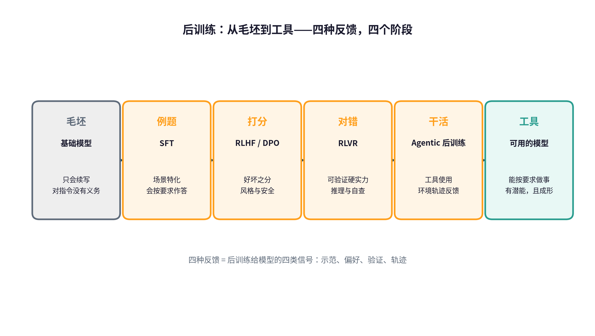
先看毛坯。毛坯不是没加工——预训练已经把它铸成有料的坯件；缺的是成形这道工序。一个只经过预训练的模型，像读过整个图书馆的人：什么都见过，但没学过“怎么跟人协作”。预训练的原始目标只有一个——预测下一个词。练成之后，模型对文字的理解远超你我，但对“问题”没有概念：你写“帮我写封请假邮件”，它接下去写的可能是邮件正文，也可能是另一句指令。对它来说，全部输入都只是“待续写的文字”。具体到使用，有四个表现：
- 对指令没有义务：没有“任务要完成”的概念，只有“文字要继续”；
- 格式不受控：同一个问题问两次，两次输出的结构可以完全不同；
- 不会拒绝：不知道答案也会续写下去，因为它的目标只是“写得像”；
- 没有工具：计算、检索、调用外部程序，全都没有概念，只能靠参数里记着的东西。
这四个表现，正是后训练要一个一个解决的。先记一件事：你用的所有对话产品都经过了后训练，直接把预训练模型当工具用几乎只出现在研究演示里。但从它开始看，后训练每一步装了什么才看得清楚。
跨篇分工：《基座模型》第 3 章（炼灵）从算法角度讲 SFT/RLHF/DPO/GRPO 怎么算（损失函数、奖励模型、优化器更新）。本篇 §1.2-1.3 只讲它们对使用者意味着什么；§1.4-1.5（RLVR 与 Agentic 后训练）是基座未展开的新内容。
1.2 SFT：场景特化
第一种反馈是例题。给模型发一本例题册：收集某个场景的“输入-示范回答”对，一行是“问题”，下一行是“标准答案”，让模型继续做预训练最擅长的事——预测下一个词，只是这次，下一个词要沿着示范回答的方向走。这就是监督微调（Supervised Fine-Tuning，SFT）。
SFT 的本质是特化：把通用续写器特化成特定场景的工具。用对话场景的数据特化，得到会对话的工具；用代码场景的数据特化，得到按格式写代码的工具。学的是“这个场景里怎么做”——示范没覆盖的场景，模型照样不会。
对使用者意味着什么：产品的特化场景就是它的擅长边界。提示词按例题册的题型出题最有效——不少对话产品的示范数据就长成“角色 + 任务 + 要求”的样子，按这个形状写，模型更容易接住。SFT 的算法细节在这里不需要展开：损失函数与预训练相同，只是数据换成示范对。
SFT 有个天然短板：例题册里的答案都是“标准”的，它没告诉模型——两份都不标准的答案，哪份更好。下一道反馈补上这一课。
1.3 RLHF 与 DPO：偏好对齐
第二种反馈是打分。有些科目没有标准答案——“写得好不好”“合不合口味”——这时候给模型看的是“好”与“坏”的对比。基于人类反馈的强化学习（Reinforcement Learning from Human Feedback，RLHF）：让模型先输出几个答案，请人给它们排序，再用这份“好坏标签”训练。模型学到的不是“标准答案长什么样”，而是“什么样的答案更符合人的期望”。
RLHF 的工程链条比较长（要训练一个单独的奖励模型），直接偏好优化（Direct Preference Optimization，DPO）把它简化成一步：直接拿“好答案 vs 坏答案”的对比数据更新模型，跳过奖励模型。两条路装上同一种能力：好坏之分——什么该说、什么不该说、什么风格讨人喜欢。
对使用者意味着什么：模型的“性格”在这一步定型——愿意帮你到哪一步、拒绝什么请求、说话什么腔调。对齐过头，模型容易变得啰嗦、爱加免责声明；对齐不足，容易口无遮拦。选择模型时，这一步的结果就是你要体验的东西。
1.4 RLVR：在可验证的任务上变强
第三种反馈是对错——它只需要一条可验证的规则。数学题的答案对不对，可以验证；代码的测试过不过，可以验证。当“对错”能自动判定，就不需要人打分——让模型自己试，对了给奖励、错了没奖励，模型会自己长出一套“先想后答”的习惯。
这种训练叫带可验证奖励的强化学习（Reinforcement Learning with Verifiable Rewards，RLVR）：奖励信号来自可验证的规则（答案匹配、测试通过、格式合规），而不是人的偏好。最著名的案例是 DeepSeek-R1：只用 RL 加规则验证器、不提供任何人工推理示范，模型在训练中自己涌现出自我反思、验证、策略调整这些推理习惯[47]——AIME 2024 数学竞赛题的通过率从 15.6% 一路涨到 77.9%，最终版本达到 79.8%，论文登上 Nature[47]。Kimi k1.5 走同一条路：AIME 77.5 分、MATH-500 96.2 分，而且不需要蒙特卡洛树搜索、价值函数这些复杂组件[48]。
练投篮不需要教练，篮筐自己会告诉你进没进——RLVR 里的验证器就是篮筐。它装上的是可验证任务上的硬实力：多步推理、先算再答、算错了能回头。
对使用者意味着什么：会推理的模型和不会推理的模型，是两种工具。前者贵——每多想一步都要烧一笔“思考费”（业内叫 thinking tax）；后者便宜，简单任务用它更划算。什么任务值得付“思考费”，第 5 章的规划与成本节展开。
RLVR 也有边界：验证器本身会漏判。一项预注册实验证实，代码训练用的测试套件存在系统性假阳性，“奖励确实发给了仍带真实 bug 的代码”[49]。训练时奖励被钻空子，和运行时奖励被钻空子（第 6 章 Loopmaxxing）是同一类病，只是前者烧进了权重。
1.5 工具使用与 Agentic 后训练：学会用工具
第四种反馈是干活。前三步都在纸上做题：读问题、想、写答案。真实任务要动工具——查数据库、跑代码、操作浏览器——干得好不好，环境会给反馈，整条轨迹就是答卷。让模型学会用工具，是后训练的第四步，也是它和 Agent 工程接壤的一步。
工具使用训练遇到一个独特难点：奖励粒度。一道数学题对不对，一个数就能判定；一次工具调用对不对，要看整条轨迹——选了哪个工具、参数填对没有、失败了有没有换路。粗粒度的“最终答案对错”给不了这么细的反馈。ToolRL 这项工作系统研究了这个奖励设计问题，用 GRPO（一种靠组内候选互相比较当基线的强化学习算法）加细粒度奖励训练，工具使用能力相对基座提升 17%、相对 SFT 提升 15%[50]。
再进一步，多轮 Agent 任务需要步级奖励——给每一步单独打分，而不是只看最终结果：SWEET-RL 用带全局信息的 critic 给每步打分，8B 小模型在协作基准上能匹配 GPT-4o[51]；CAST 把游戏求解器的状态值变化当“教师信号”注入 RLVR[52]。
把这些串起来，就是后训练在 Agent 时代的核心公式：后训练 = f(数据，Harness 采样，验证器评测，优化器回灌)。
- 数据：任务集合，决定训练范围的边界；
- Harness 采样：让模型在沙箱、浏览器、终端里跑出完整轨迹——训练时就已经在“用 Agent”了；
- 验证器评测：规则或模型给轨迹打分，信号越细（轨迹级 → 步级 → 教师信号）越能教出复杂行为；
- 优化器回灌：把信号写进权重，行为从“每次要人教”变成“模型自带”。
这条路线的实证还在扩展：技能的选择、利用、蒸馏也能用同一套 RL 一起训练[53]——后训练与第 8 章的自演化在这里接壤。
对使用者意味着什么：模型“会用工具”的程度写在它的训练配方里。选 API 时看工具调用能力的评测，而不是只看对话成绩；“会调用工具”和“调用得可靠”是两回事——前者是后训练的事（本章），后者是 Harness 的事（从第 3 章起）。
1.6 训练时与推理时：同一件事的两处落点
回顾后训练的本质：让模型在环境里试，用奖励修正行为。再看使用中的 AI：让模型在任务里试，用反馈修正下一步。是同一个循环，落点不同：
| 训练时（后训练） | 推理时（Harness 循环） | |
|---|---|---|
| 行为从哪来 | 参数（权重） | 上下文 |
| 信号从哪来 | 验证器 / 奖励模型 | 工具返回、测试、用户反馈 |
| 学习写在哪 | 权重，学一次万人用 | 上下文，学一次用一次 |
| 成本 | 高（算力、数据） | 低（token） |
图2：同一个循环，两处落点——训练时烧权重，推理时写上下文
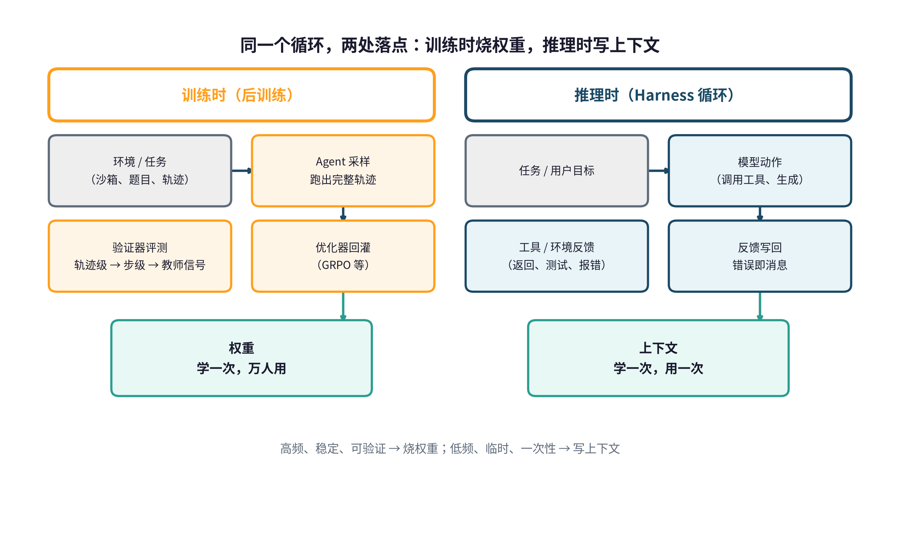
训练时用奖励把行为烧进权重，推理时用反馈把行为写进上下文——同一种“学好”，两处落点。两个落点互补：烧进权重的贵但普适，写进上下文的便宜但只用一次。第 2 章的眼镜会把同一个循环翻译成数学语言，第 6 章的护栏与验证会看到它俩的共同弱点。
怎么选：高频、稳定、可验证的任务，才值得烧进权重（微调）；低频、临时、一次性的任务，写进上下文（提示词 + 记忆）更划算。
想一想：你的团队有一个每周要做的固定报表任务。烧权重还是写上下文？想清楚再对照上面的判据。
烧进权重不是没有代价——RLVR 会把策略的探索面收紧：一项研究发现，RLVR 后模型的语义分支多样性显著下降[54]，能力变稳了，路也变窄了。
两处落点合起来是一个正反馈环：训练时用 Harness 采样轨迹回灌权重（§1.5），推理时更强的模型又打开新的系统空间（第 6 章）——模型升级与 Agentic 工程互相促进，螺旋上升。
1.7 AI落地
选模型、用模型的四条判据：
①特化边界——产品的特化场景就是它的擅长边界，提示词按例题册的题型出题（不少示范数据就长成“角色 + 任务 + 要求”的样子）；
②会推理——复杂、可验证的任务才值得付思考成本，简单任务用便宜模型（第 5 章有成本对照表）；
③会工具——选 API 看工具调用评测，别只看对话成绩；
④该不该微调——高频稳定才烧权重，低频临时用提示词加上下文，微调前先想清楚要什么（第 8 章讲边界）。
1.8 常见误解
常见误解：“后训练只是让模型更礼貌”。后训练装的是四种硬能力：场景特化（SFT）、好坏之分（RLHF/DPO）、可验证任务上的硬实力（RLVR）、工具使用（Agentic 后训练），每一种都直接决定你能用它做什么。
常见误解：“把我的数据微调一下，模型就懂我的业务”。除了判据④的高频稳定前提，还要算一笔更新账：大多数“懂业务”的需求，提示词加外部知识（检索）就能解决，而且随业务变化即时更新——烧进权重的知识改一次要重训一次。
常见误解：“推理模型一定更好”。推理模型贵在 thinking tax，简单任务用它是浪费；而且 RLVR 会收紧探索面。按步骤难度分配思考成本，才是常态用法。
1.9 本章回顾
这一章走完了“从有用到可用”：四种反馈，一个公式，一条脊柱——
| 步骤 | 反馈 | 训练形态 | 模型得到 |
|---|---|---|---|
| SFT | 例题（示范） | 监督学习 | 场景特化 |
| RLHF/DPO | 打分（偏好） | 偏好学习 | 好坏之分 |
| RLVR | 对错（验证） | 强化学习 | 可验证任务上的硬实力 |
| Agentic 后训练 | 干活（轨迹） | 强化学习 + 环境反馈 | 工具使用 |
一个公式：后训练 = f(数据，Harness 采样，验证器评测，优化器回灌)。一条脊柱：训练时烧权重、推理时写上下文。第一项立住了，接下来看第二项：能按要求做事的模型放进真实任务，为什么还会翻车？用什么眼镜看这个问题？第 2 章给答案。
本章自检：
预训练模型的四个表现是什么？后训练四步各解决哪一个？
提示
四个表现：对指令没有义务、格式不受控、不会拒绝、没有工具。答案
①对指令没有义务（只会续写）→ SFT 场景特化，学会这个场景里怎么做；②格式不受控 → SFT 例题册示范出格式；③不会拒绝 → RLHF/DPO 学会好坏之分，什么该说什么不该说；④没有工具 → Agentic 后训练装上工具使用。四个缺口各有补法：例题示范补指令与格式，人类打分补拒绝，Agentic 训练补工具干活。SFT 为什么是“特化”？示范数据没覆盖的场景对模型意味着什么？提示词为什么按示范数据的形状写最有效？
提示
特化 = 学会“这个场景里怎么做”，只学示范的形。答案
SFT 用特定场景的“输入-示范回答”数据对来训练，把通用续写器特化成这个场景的工具——对话场景出对话工具，代码场景出代码工具。示范没覆盖的场景，模型照样不会（特化即窄化）。提示词按例题册的题型出题最有效，因为示范数据的形状就是模型学会的“接题”形状——“角色 + 任务 + 要求”不是咒语，是训练数据的形状。RLVR 的可验证奖励和 RLHF 的人类打分，本质区别在哪？这个区别为什么能让训练规模放大？
提示
验证器不需要人；人可以打分的量有限。答案
RLHF 的奖励来自人对几个答案排序——每一条数据都要人花时间；RLVR 的奖励来自可验证规则（答案匹配、测试通过）——验证器自动运行，想生成多少训练数据就生成多少。这解释了 DeepSeek-R1 的路径：只用 RL 加规则验证器，模型自己试错，AIME 通过率从 15.6% 涨到 79.8%。人是稀缺的，规则是可复制的——规模差在数据来源。后训练 = f(数据，Harness 采样，验证器评测，优化器回灌)——四个因子各是什么？轨迹级、步级、教师信号三种奖励粒度各解决什么问题？
提示
数据定边界，采样产轨迹，评测给信号，回灌写权重。答案
数据 = 任务集合，决定训练边界；Harness 采样 = 让模型在沙箱、浏览器、终端里跑出完整轨迹（训练时就已经在“用 Agent”了）；验证器评测 = 规则或模型给轨迹打分；优化器回灌 = 把信号写进权重。三种粒度：轨迹级（最终成败，简单但粗）、步级（SWEET-RL 的 critic 给每一步打分，解决多轮信用分配）、教师信号（CAST 用游戏求解器的状态价值变化当 turn 级教师，解决长程任务的信号稀疏）。“训练时烧权重、推理时写上下文”各自适合什么任务？为什么说 RLVR 会“收紧探索面”？
提示
权重学一次万人用，但改一次要重训；上下文便宜，但只用一次。答案
高频、稳定、可验证的任务，值得烧进权重（微调）；低频、临时、一次性的任务，写进上下文（提示词 + 记忆）。RLVR 收紧探索面，是因为可验证奖励只奖励“对的路”：研究发现 RLVR 后模型的语义分支多样性显著下降——能力变稳了，路也变窄了。这正是“微调是窄化，提示是借用”的另一面。
未解问题：翻车的原因藏在任务结构里——用什么眼镜才能把它看清楚？ * * *
第2章：看 Harness 的眼镜——受约束的闭环决策系统
第 1 章把模型从有用带到了可用：特化过场景、对齐过偏好、练出可验证任务上的硬实力、会用工具。从这一章起只干一件事：把可用变成好用。现在把它放进真实任务。任务不会因为模型变强就自动变顺——信息看不全、动作有后果、反馈有延迟，这些问题与模型能力无关，与“用法”的结构有关。要看清这些结构并不容易，先得有一副眼镜。
本章路线：本章围绕 POMDP 七元组、信念手算、Loop Engineering 与 RL 对照展开；后面六章都在回答“怎么把这个闭环搭稳”。 时间紧可先读：读 POMDP 七元组与信念状态两段（即“看 Harness 的眼镜”的核心），后续手算与 Loop Engineering 可后补。
核心决策： 1. Agent 是循环，不是一次性函数。 2. POMDP 描述信息不全、动作有后果、反馈有延迟。 3. 记忆维护的是信念状态，不是原始数据。
动笔前自检：①什么是状态、观测、动作？②为什么 Agent 不能看到全部真实状态？
传统的模型调用是一次性函数：输入 \(x\)，模型算出 \(y = f(x)\)，结束。聊天机器人就是这样，问一句，答一句，答完就结束了。
Agent 不是一次性函数，而是一个循环：它观察环境、更新自己的判断、选择一个动作、执行（通常调用工具）、拿到反馈，再根据反馈调整下一步。一个任务可能要转几十圈、几百圈。
而且，Agent 永远看不到世界的全貌。它只能通过有限的窗口获取信息：用户说了什么、工具返回了什么、文件里写了什么、摄像头拍到什么。真实状态被遮住了，只能靠观察去猜。
这恰好是数学里早就研究过的问题：部分可观测马尔可夫决策过程（Partially Observable Markov Decision Process, POMDP）。一个 POMDP 由几个要素组成：
\[\text{POMDP} = (\mathcal{S},\ \mathcal{A},\ \mathcal{O},\ T,\ Z,\ R,\ \gamma)\]
逐个对应到 Agent 身上：
- \(\mathcal{S}\)：\(\text{State}\)，真实世界状态空间。Agent 通常看不到全貌。服务器里到底有哪些文件、用户真正的意图是什么、物理环境此刻是什么样，这些都属于 \(\mathcal{S}\) 中的状态。
- \(\mathcal{A}\)：\(\text{Action}\)，可执行动作空间。回答、搜索、调用 API、写代码、移动机械臂。Agent 能做的事。
- \(\mathcal{O}\)：\(\text{Observation}\)，观测空间。Agent 实际可能看到的东西：用户输入、工具返回值、报错信息、传感器读数。
- \(T\)：\(\text{Transition}\)，状态转移函数。Agent 做了一个动作之后，世界怎么从一个状态变到下一个状态。Agent 不能直接决定结果，只能通过动作去影响——比如搜索了一个关键词，搜索引擎返回什么结果由世界决定，不由 Agent 决定。
- \(Z\)：\(\text{Z}\) = Observation Model，观测模型。世界变了之后，Agent 能看到什么。观测往往带噪声、不完整——工具返回值可能截断、传感器读数可能有误差。
- \(R\)：Reward，奖励（目标）函数。任务完成得好不好，通常不是单步能给分的，要看一整条轨迹。
- \(\gamma\)：Discount Factor，折扣因子。越远的未来越不确定，远期收益在总回报中的权重要按它打折，这逼着 Agent 在当下收益和长期目标间权衡。
图3：POMDP 循环与七要素
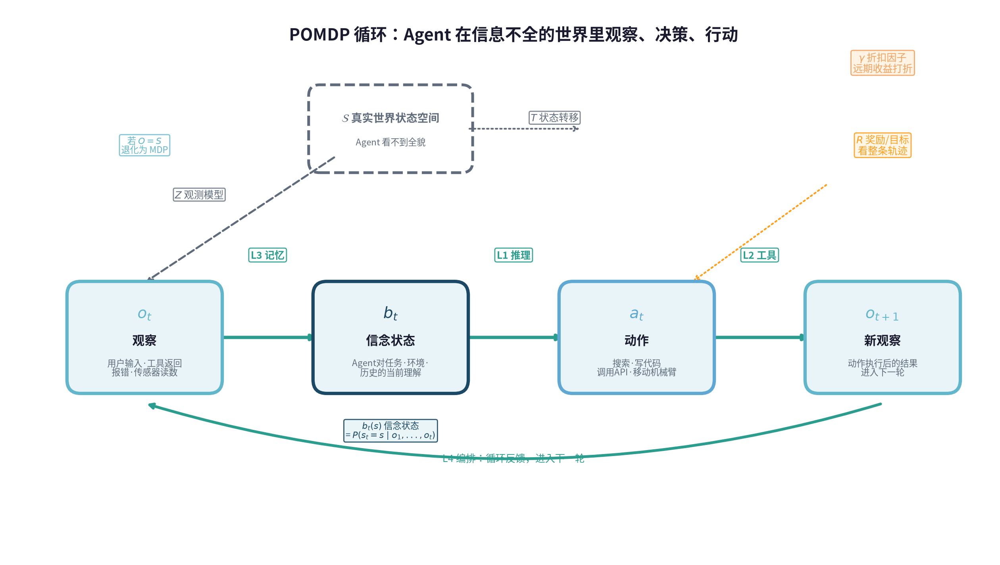
关键理解：如果状态完全可见（\(\mathcal{O}\) 足以恢复 \(\mathcal{S}\) 中的真实状态），POMDP 退化为 MDP（马尔可夫决策过程）。但现实 Agent 几乎都面对信息不全的世界：用户意图是模糊的、工具返回可能出错、物理环境有噪声。所以用 POMDP 而不是 MDP 来看 Agent，更贴近真相。
还有一层更深的结构。因为真实状态 \(s_t \in \mathcal{S}\) 不可观测，Agent 无法直接知道自己“在哪儿”，只能根据观测来猜——猜的方式是给每个可能的状态估一个概率，这就是信念状态（belief state）：\(b_t(s) = P(s_t = s \mid o_1, o_2, \ldots, o_t)\)，根据至今为止的所有观测，推断当前状态的概率分布。记忆系统维护的，不是原始数据本身，而是这个信念状态的工程近似——不是记着方便，而是不记就不知道自己在哪。这把 POMDP 和后面的记忆层（L3）在数学上连了起来。
公式看起来抽象，算一遍就清楚了。
想一想：客服 Agent 只记得第 2 轮的话、忘了第 1 轮，推断会差多少？先凭直觉猜一个数（差一点？差很多？），再往下算。
手算一遍：客服 Agent 的信念更新
场景：一个客服 Agent 要判断用户的真实意图。真实状态 \(s \in \mathcal{S} = \{\text{退款},\ \text{换货},\ \text{咨询}\}\)，Agent 看不到 \(s\)，只能从用户的话（观测 \(o\)）去猜。
初始信念（用户刚进来，什么都没说）：\(b_0 = [0.3,\ 0.3,\ 0.4]\)——稍微偏向“只是咨询”。
第 1 轮。用户说：“买的东西有问题”（观测 \(o_1\)）。观测模型 \(Z(o_1 \mid s)\) 告诉我们：真正想退款的人有 80% 概率说这话，想换货的有 60%，只是咨询的有 20%。
\[Z(o_1 \mid \text{退款}) = 0.8,\quad Z(o_1 \mid \text{换货}) = 0.6,\quad Z(o_1 \mid \text{咨询}) = 0.2\]
用贝叶斯规则更新信念：
\[b_t(s) = \frac{Z(o_t \mid s_t) \cdot b_{t-1}(s)}{\sum_{s' \in \mathcal{S}} Z(o_t \mid s') \cdot b_{t-1}(s')}\]
也就是 \(b_1(s) \propto Z(o_1 \mid s) \cdot b_0(s)\)。
| 状态 | \(b_0(s)\) | \(Z(o_1\mid s)\) | 乘积 | 归一化后 \(b_1(s)\) |
|---|---|---|---|---|
| 退款 | 0.3 | 0.8 | 0.24 | 0.48 |
| 换货 | 0.3 | 0.6 | 0.18 | 0.36 |
| 咨询 | 0.4 | 0.2 | 0.08 | 0.16 |
| 和 = 0.50 |
一句话观测让“退款”从 30% 跳到 48%，“咨询”从 40% 跌到 16%。Agent 现在最倾向“退款”，但还不够确定（没有超过 50%）。策略 \(\pi(b_1)\)——按当前信念选动作的规则——选择动作：追问（“您是想退款还是换货？”）——因为信念还不够集中，贸然行动风险大。
第 2 轮。用户回答：“能不能换一个”（观测 \(o_2\)）。
\[Z(o_2 \mid \text{退款}) = 0.1,\quad Z(o_2 \mid \text{换货}) = 0.9,\quad Z(o_2 \mid \text{咨询}) = 0.3\]
从 \(b_1\) 出发更新：\(b_2(s) \propto Z(o_2 \mid s) \cdot b_1(s)\)。
| 状态 | \(b_1(s)\) | \(Z(o_2\mid s)\) | 乘积 | 归一化后 \(b_2(s)\) |
|---|---|---|---|---|
| 退款 | 0.48 | 0.1 | 0.048 | 0.11 |
| 换货 | 0.36 | 0.9 | 0.324 | 0.77 |
| 咨询 | 0.16 | 0.3 | 0.048 | 0.11 |
| 和 = 0.42 |
两轮观测后，“换货”从初始的 30% 升到 77%。策略 \(\pi(b_2)\) 现在选择动作：给出换货流程——信念足够集中，可以行动了。
这个 10 行算术揭示了什么？
- 记忆为什么是必需的：第 2 轮更新从 \(b_1\)（而非 \(b_0\)）出发。如果 Agent 忘了第 1 轮（\(b_1\) 丢失），就只能从 \(b_0\) 直接用 \(o_2\) 更新：\(b_0 = [0.3,0.3,0.4]\)，逐状态乘似然 \(Z(o_2 \mid s) = [0.1,0.9,0.3]\) 得 \([0.03,0.27,0.12]\)，归一化后是 \([0.07, 0.64, 0.29]\)——换货的后验只有 64% 而非 77%，虽然仍会行动，但置信度明显更低、决策更脆弱。不记就不知道自己在哪，字面意思。
- 策略为什么基于 \(b_t\) 而非 \(s_t\)：Agent 始终不知道用户“真的”想干什么（\(s_t\) 不可见），只能基于信念 \(b_t\) 做决策。\(b_1\) 时选择追问（信息不够），\(b_2\) 时选择行动（信息够了）——同一个策略，不同的信念，不同的动作。
- 这就是 L3 记忆层的数学职责：维护 \(b_t\)，让每一轮决策都基于至今为止的全部观测，而非只看最后一句。
这副眼镜把 Agent 难在哪里拆成了几个清晰的部件：
- 观察不全（观测 \(o_t \in \mathcal{O}\) 不等于真实状态 \(s_t \in \mathcal{S}\)）→ 需要记忆和检索来补全判断；
- 动作有后果（\(a_t \in \mathcal{A}\) 会改变世界）→ 需要工具契约和约束来兜住风险；
- 反馈有延迟、有噪声（\(R\) 和 \(Z\)）→ 需要状态管理来把对的反馈带进下一步；
- 长期与当下的权衡（\(\gamma\)）→ 需要规划来平衡。
Claude Code 的开发者 Boris Cherny 说了一句话，在技术社区迅速传开：“我不再给 Claude 写提示词了。我写好一个个运行着的循环，让循环去提示 Claude 并让它自己搞清楚该做什么。我的工作就是写循环。”[4]
这种做法被概括为 Loop Engineering（循环工程），它的五个要素和 POMDP 循环大部分对应：明确的目标（\(R\)）、上下文管理（对状态与信念状态的维护）、可调用的工具（\(\mathcal{A}\) 的工程接口）、对产出的评估（\(o_t\) 的解析）、判断何时停止的标准。严格说，POMDP 七元组本身不含终止条件，但任务规范可以包含有限 horizon（finite horizon，任务在预先设定的最大步数内一定会结束）、吸收态或外部停止规则；工程系统必须把这些停止规则显式写出来。从“人写提示词、Agent 执行一次”到“人设计循环、Agent 自主迭代多轮”，这个转变正是把一次性函数变成闭环系统的工程化表达。
再深一层看，一个设计良好的 Agent 循环，在结构上等同于一个运行在推理时的强化学习优化过程——只是策略权重被冻结[43]。这是第 1 章“训练时烧权重、推理时写上下文”在推理时一侧的又一处落点。先给一句话版：权重冻结的模型，靠往上下文里攒经验变强；奖励就是测试与检查器；越往后每步代价越高。不想记术语，记住这一句就够——下面的逐项对照，是给想对齐符号的读者准备的：
| RL 概念 | Agent 循环中的对应 |
|---|---|
| 策略 \(\pi\) | 冻结的 LLM，条件于不断累积的上下文 |
| 状态 \(s_t\) | 第 \(t\) 步的上下文窗口内容 |
| 动作 \(a_t\) | 模型的生成输出（代码编辑、工具调用、消息） |
| 环境 | 工具、文件系统、测试运行器——产生观测的任何东西 |
| 奖励 \(r_t\) | 验证信号（测试通过、linter 清理、指标改善） |
| 折扣 \(\gamma\) | 隐含在循环预算里——越往后的步骤成本越高、成功率越低 |
| 回合 | 一次完整的循环执行，从目标设定到终止 |
关键区别在于：训练时 RL 通过梯度更新策略权重；循环工程里权重不动，“学习”纯粹通过状态累积发生——每轮的观测、错误信息、反思都被追加进上下文，条件化同一个冻结模型，让它在后续轮次产出更好的动作。这正是 Reflexion 的机制：Agent 跨轮次改进不靠新权重，靠读自己的失败历史[33]。
这个 RL 对应不只是类比，它有直接的工程后果。既然循环是推理时 RL，RL 的经典陷阱就会在循环中重现：奖励设计不当导致 reward hacking（Agent 满足了检查的字面要求却违背了意图，比如删掉失败的测试让 CI 变绿）；探索-利用失衡导致循环重复同一种失败路径（对应 RL 中探索不足，需要类似 Reflexion 自省或温度提升来强制多样性）；长程信用分配困难（循环越长，越难判断哪一步导致了最终成败）。第 6 章会看到，这些陷阱恰好落在评估层和护栏层的缺口里。
后面六章，本质上都是在回答：怎么把这个闭环的每个部件搭稳。为什么需要这么多章？一个简单计算就能说明问题：假设每步出错率仅 5%，20 步任务的端到端成功率 = \(0.95^{20} \approx 36\%\)；50 步 = \(0.95^{50} \approx 8\%\)。步数越多，翻车越确定——这不是“Agent 偶尔出错”，而是结构性必然。后面六章的所有工程手段（编排、护栏、评估、记忆），都是在把每步出错率从 5% 压到 0.5%，或把 50 步拆成 5 个可回滚的 10 步。Agent 的差距，不在单步推理多准，而在“能不能把每一步的反馈，正确地带进下一步”。
透镜边界：POMDP 是理解 Agent 结构性困难（信息看不全、动作有后果、反馈有延迟）的透镜，不是所有 Agent 问题的万能解释。第 6 章的四类失效（跳步、工具调用错误、不分类型、错误传播）理解起来不需要 POMDP，归类需要——第 6 章把它们各挂到七元组的一个元件上（T/A/Z/\(b_t\)）。POMDP 真正发力的地方在第 6 章（长程规划偏离）和第 7 章（多 Agent 失败根因——多 Agent 系统出错的源头，与之相对的是错误暴露的位置——的跨节点传播）。
本章自检：
POMDP 的七个要素是什么？每个在 Agent 语境中对应什么？为什么用 POMDP 而非 MDP？
提示
先回忆七元组 \((\mathcal{S},\mathcal{A},\mathcal{O},T,Z,R,\gamma)\)，再想“Agent 永远看不到全貌”对应哪个要素。答案
\(\mathcal{S}\) 真实世界状态（Agent 看不全），\(\mathcal{A}\) 可执行动作，\(\mathcal{O}\) 观测空间，\(T\) 状态转移（动作之后世界怎么变），\(Z\) 观测模型（世界变了 Agent 能看到什么），\(R\) 奖励函数（任务完成好坏），\(\gamma\) 折扣因子（远期收益权重）。用 POMDP 而非 MDP 是因为真实 Agent 几乎都面对信息不全的世界——用户意图模糊、工具返回可能出错、环境有噪声，状态 \(s_t\) 不可完全观测。若 \(\mathcal{O}\) 足以恢复 \(\mathcal{S}\)，POMDP 退化为 MDP。信念状态 \(b_t(s)\) 是什么？为什么记忆层（L3）维护的是信念状态而非原始数据？
提示
Agent 看不到真实状态 \(s_t\)，只能根据观测去猜——猜的方式是什么？答案
\(b_t(s) = P(s_t = s \mid o_1, \ldots, o_t)\)，根据至今所有观测推断当前状态的概率分布。记忆层维护的是 \(b_t\) 的工程近似，因为 Agent 无法直接知道“自己在哪”，只能靠历史观测推断。客服 Agent 手算例证明：忘了第 1 轮 \(b_1\) 直接从 \(b_0\) 更新，置信度从 77% 降到 64%——不记就不知道自己在哪。Loop Engineering 的五个要素分别对应 POMDP 的什么？为什么 POMDP 七元组本身不含终止条件？
提示
目标 \(\to R\)，上下文管理 \(\to b_t\)，工具 \(\to \mathcal{A}\)，评估 \(\to o_t\)，停止标准 \(\to\) ?答案
五要素：明确目标（\(R\)）、上下文管理（对 \(b_t\) 的维护）、可调用工具（\(\mathcal{A}\) 的接口）、产出评估（\(o_t\) 的解析）、停止标准。POMDP 七元组本身不含终止条件，但任务规范可包含有限 horizon、吸收态或外部停止规则；工程系统必须把这些停止规则显式写出来，不能靠模型“自觉觉得该停了”。假设每步出错率仅 5%，20 步和 50 步任务的端到端成功率各是多少？这个计算揭示了什么？
提示
\(0.95^{20}\) 和 \(0.95^{50}\) 各等于多少？答案
\(0.95^{20} \approx 36\%\)，\(0.95^{50} \approx 8\%\)。步数越多，翻车越确定——这不是“Agent 偶尔出错”而是结构性必然。所有工程手段（编排、护栏、评估、记忆）都是在把每步出错率从 5% 压到 0.5%，或把 50 步拆成 5 个可回滚的 10 步。
未解问题：看清楚了结构上的困难，怎么把这个闭环装成一台不翻车的机器？ * * *
第3章：Harness——从能力清单到装配图
第 2 章的眼镜把真实任务拆成了七元组，落到体感上是三件事：信息看不全、动作有后果、反馈有延迟。第 1 章又装好了模型：特化过、对齐过、练过、会用工具。现在问题来了：有能力的模型 + 有结构的任务，怎么配成一台不翻车的机器？
零件怎么装成机器？答案是一套六层结构——推理、工具、记忆、编排、评估、护栏——合起来就是引子定义的 Harness。先有零件清单，再有装配图，然后是装配后的运转，最后落到一张选型地图（该不该用、怎么加码）。
本章路线：§3.1–§3.2 从能力清单到 Harness 六层；§3.3–§3.4 看数据流与选型地图；§3.5–§3.7 落地、误解与回顾。 时间紧可先读：§3.1–§3.2（六层是什么）加 §3.4（选型地图）；§3.3 数据流数学可后补。
核心决策： 1. Harness 六层 = 推理、工具、记忆、编排、评估、护栏。 2. 数据流 \(o_t \to b_t \to a_t \to o_{t+1}\) 把六层串成闭环。 3. 选型地图决定该不该用 Agent、怎么加码。
动笔前自检：①能力清单和装配图有什么区别？②为什么只有模型还不够？
3.1 能力维度：模型带来的零件
第 1 章的四种反馈把能力装进了模型，但 Agent 还需要更多。OpenAI 科学家 Lilian Weng 提出的经典框架把 Agent 拆成四个能力模块：大语言模型（推理）、规划、记忆、工具使用。其中推理和工具使用由第 1 章的后训练装进权重，规划和记忆更多靠系统在运行时撑起来。这个框架简洁、清晰，至今仍是入门的标准锚点。
但这个框架本质上是能力清单——它告诉你 Agent 需要哪些能力，却没有回答另一个更紧迫的工程问题：这些能力怎么被装进一个不会翻车的系统？ 一个有记忆、有工具、会规划的 Agent，照样会在长任务里遗忘、在工具调用中出错、在多步执行里累积误差。清单只列出了零件，却没有给出装配图和质检流程——而生产级 Agent 的可靠性，恰恰来自装配和质检，不只是零件本身。
3.2 系统维度：Harness 六层
行业实践给出了装配图。O’Reilly 发布的 AI Agents Stack 把生产级 Agent 拆成六层，从底到顶依次是[5]——这套六层结构，就是 Harness 的推荐架构：
| 层 | 名称 | 职责 | POMDP 对应 |
|---|---|---|---|
| L1 | 推理 | 调用模型完成理解和决策 | 策略 \(\pi: b_t \to a_t\) 的近似（\(b_t\) 为信念状态） |
| L2 | 协议与工具 | 经 MCP、A2A 等协议调用外部 API、浏览器与代码执行器 | 动作 \(a_t\) 的执行通道 |
| L3 | 记忆与知识 | 存取窗口状态、历史、偏好与领域知识 | 信念状态的维护与历史压缩 |
| L4 | 编排 | 组合模型调用、工具使用和控制流 | 状态转移 \(T\) 的工程化控制 |
| L5 | 评估与可观测 | 追踪执行轨迹、评分输出、捕捉退化 | 观测 \(o_t\) 的解析与奖励 \(R\) 的估计 |
| L6 | 护栏与安全 | 过滤输入、授权工具调用、验证输出 | 约束：把不安全动作从 \(\mathcal{A}\) 中删除 |
表里出现了两个协议名词，先认识一下：MCP（Model Context Protocol，模型上下文协议）管 Agent 和工具之间怎么连接——工具如何声明能力、参数如何校验、返回值如何结构化；A2A（Agent2Agent Protocol）管 Agent 和 Agent 之间怎么协作——身份如何声明、任务如何委派。MCP 的契约思想会在第 6 章的五步管道里再次出现；两者在多 Agent 协作（第 7 章）里还有一次系统性对照。
这六层是生产级 Agent 的推荐架构——少任何一层，系统就会在对应环节有翻车风险：没有 L5 评估，就不知道 Agent 在第几步走偏了；没有 L6 护栏，Agent 调用的工具可能已经造成了不可逆的伤害。简单的单步任务可以只用 L1+L2，但任务越复杂、步数越多、不可逆性越强，六层齐备就越不是可选项。
常见误解：Harness 六层 = 能力清单。不是。能力清单回答“Agent 需要哪些零件”（Lilian Weng 的四能力：推理、规划、记忆、工具）；Harness 六层回答“这些零件怎么装成一台能稳定产出的机器”（多了编排、评估、护栏三层）。清单列出零件，Harness 六层给出装配图和质检流程。把 Harness 六层当清单读，会漏掉最关键的一层——护栏——因为它不是“能力”，是“约束”。
关切路线图：四个能力关切——规划、工具、记忆、协作——加上新的前沿（自演化），分别落在哪一层、在哪一章展开：
| 关切 | Weng 四能力锚点 | Harness 六层落点 | 本章位置 |
|---|---|---|---|
| 规划 | Planning | L4 编排 | 第 5 章《规划——从形态到落成》 |
| 工具 | Tool Use | L2 工具 | 第 3 章 Harness 六层定义 + 第 6 章失效二 |
| 记忆 | Memory | L3 记忆 | 第 6 章记忆层 + 上下文工程子节 |
| 协作 | —（Weng 未覆盖） | 跨栈，L4 主导 | 第 7 章《协作——从单循环到多循环》 |
| 自演化 | —（新前沿） | 跨栈的元层次 | 第 8 章《自演化——从手工搭建到自我迭代》 |
学术对照：一篇投稿 TMLR、尚在评审、覆盖 170 余个项目的综述提出了 ETCLOVG 七层分类（执行环境、工具接口、上下文管理、生命周期编排、可观测性、验证、治理）[3]。它和 Harness 六层大致对应，但不是一一同构：ETCLOVG 的可观测性不只覆盖 Harness 六层的 L5 评估，也涉及 L4 运行时监控；验证和治理则更强调形式化验证、审计追踪和责任归属。本章以 Harness 六层为主透镜，在第 6 章讨论评估、护栏和治理缺口时参考该分类。
典型实例：Pi 把 Harness 六层落实到代码
开源项目 Pi（π）是这套框架的一个干净实现，六层各有明确模块：推理层抽象多厂商模型接口并管 token 预算；工具层贯彻“错误即消息”的调用链（第 6 章的五步管道即源于此）；记忆层做上下文组装与紧凑压缩；编排层用显式状态机管理循环，终止条件显式可配——正常完成、预算耗尽、连续失败熔断三类；评估层追踪每轮输出、可接验证门；护栏层按项目分级授权，越界动作先审批后执行。整个项目不到 5000 行——“最小内核”，不重复发明轮子。想理解框架，跟踪一遍它的代码执行路径，比读十篇框架文档更有效。
图4：Harness 六层
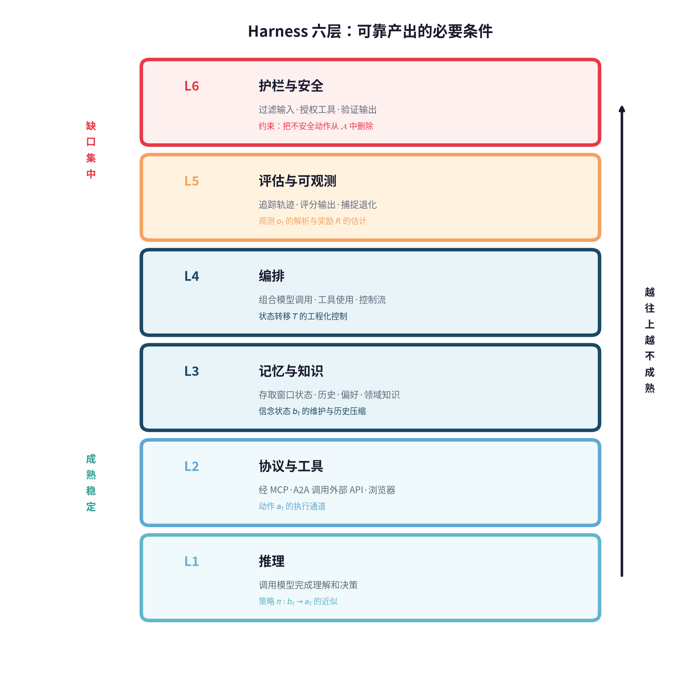
3.3 数据流：闭环的数学表达
Harness 六层不是孤立的零件堆叠，而是通过数据流串成一个循环。用 POMDP 的语言写出来：
\[o_t \xrightarrow{\text{L3 记忆}} b_t \xrightarrow{\text{L1 推理}} a_t \xrightarrow{\text{L2 工具}} o_{t+1}\]
- \(o_t\)：当前观察，用户输入、工具返回、报错、传感器读数；
- \(b_t\)：信念状态，Agent 对任务、环境、历史的当前理解，由 L3 记忆维护；
- \(a_t\)：动作，搜索、写代码、调用 API、移动机械臂，由 L2 工具执行；
- \(o_{t+1}\)：新观察，动作执行后的结果，进入下一轮。
L4 编排不在这个箭头链上——它是控制整个循环节奏的控制层：何时调用 L1、何时重试、何时中断、何时升级给人类。一句话：观察进来，信念更新，动作出去，反馈回来，再进入下一轮。这个循环就是 Agent 的运行节奏。每一轮，推理引擎都要重新评估：目标变了吗？环境变了吗？工具返回的结果可信吗？下一步该调整计划吗？
走一遍：编码 Agent 修 bug 的第 3 轮循环
任务：“修复 utils.py 的失败测试”。前两轮分别试了改正则和改边界，仍然失败。现在是第 3 轮：
| 层 | 做什么 | 具体数据 |
|---|---|---|
| \(o_t\)（观测进入） | 上一轮测试输出 | FAILED test_parse_date: expected '2024-01-01', got '01/01/2024' |
| L3 记忆 → \(b_t\) | 组装信念状态 | {task: "修 utils.py", history: [t=1 改正则→失败, t=2 改边界→失败], error: "日期格式不匹配", fail_count: 2} |
| L1 推理 → \(a_t\) | 基于 \(b_t\) 决策 | 判断：“不是正则问题，是 strptime 格式串错了”。选择动作：edit_file(utils.py, L42, '%m/%d/%Y' → '%Y-%m-%d') |
| L6 护栏 | 检查 \(a_t \in \mathcal{A}_{\text{safe}}(c)\)？ | edit_file：写权限 ✓，风险 0.2 < 0.7 ✓，无需审批 → 放行 |
| L2 工具 | 执行动作 | 调用文件编辑 API，修改第 42 行 |
| \(o_{t+1}\)（新观测） | 工具返回 | "utils.py L42 updated: '%m/%d/%Y' → '%Y-%m-%d'" |
| L4 编排 | 控制下一步 | 编辑成功 → 调度下一轮：运行测试（\(t=4\)）。若再失败且 fail_count=3 → 触发“重新理解问题”状态 |
六层各管一件事：L5 从测试输出里读出「日期格式不匹配」这条关键信息，L3 记住“前两次改了什么、为什么失败”，L1 基于历史做出新判断，L6 确认动作安全，L2 执行，L4 决定下一步走哪条边。如果 L3 丢了历史（忘了第 1 轮已经改过正则），L1 可能再改一次正则——循环在原地转。
一个改变认知的工程原则——“错误即消息”：上面第 3 轮里，如果 edit_file 执行失败（比如文件被锁），会发生什么？朴素做法是抛异常、中断循环。但 POMDP 循环的正确做法是：把失败当作一条观测 \(o_{t+1}\)——“文件被锁，编辑未成功”——回写上下文，让 L1 在下一轮基于这条信息做新决策（换个文件？等一等？求助人类？）。Pi 开源运行时的工具管道把这条原则写进了架构：工具执行失败不是异常（exception），而是一条格式化的消息（message），和成功返回走同一条注入路径。这就是 POMDP 循环最深刻的工程含义：没有“失败”这回事，只有“观测到了什么”。第 6 章的失效分类里，F1 节点级失效的本质，就是把“错误观测”当成了“系统异常”——中断了循环，而非把信息带进下一轮。
失败时循环继续转。但循环不能永远转下去——什么时候该停？
循环怎么停？stopReason 是刹车，不是“跑完就停”：L4 编排层的一个核心职责是给循环装刹车。Pi 实现了三种显式终止信号：end_turn（模型判断任务完成——对应 POMDP 的吸收态）、max_turns（步数上限——对应有限 horizon）、error_budget（连续失败超阈值——对应 L4 的失败回退规则）。没有 stopReason 的 Agent 就是没有刹车的车——要么永远转下去（死循环），要么在某个不可逆动作上冲出去（失控）。工程系统必须把停止规则显式写出来，不能靠模型“自觉觉得该停了”。
图5：Agent Loop 运行时剖面
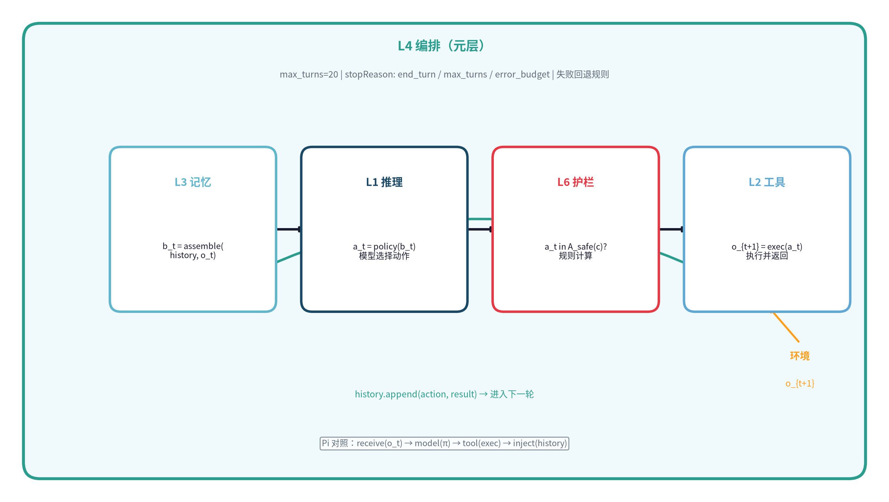
典型案例：自动驾驶汽车就是一个具身 Agent。摄像头是“感官”（\(o_t\)），方向盘和油门是“工具”（\(a_t\)），而车载计算平台就是执行环境。它必须在毫秒级完成感知、决策、执行的循环，任何延迟都意味着物理危险。编排层（L4）负责保证这个循环不跑偏：检测到动作原地打转就打断，发现超时就在安全边界内终止，遇到异常就回滚或求助人类。
3.4 选型地图：该不该用，怎么加码
该不该用：不是所有任务都需要闭环。判据：单步问答/生成（翻译一句话、写一段摘要）→ 直接调模型；需要多步工具调用或跨系统操作 → Agent；需要跨会话记忆或持续运行 → Agent；需要人在回路审批不可逆动作 → Agent。过度 Agent 化的代价是真实的：每多一层编排，延迟、成本、失效面都乘上去。能用一次模型调用解决的事，不要套循环。
怎么加码：用上 Agent 之后，想在同一个模型上更好，有三条路，各解决一类问题：
| 轴 | 是什么 | 解决什么 | 展开 |
|---|---|---|---|
| 结构 | 规划形态、状态机 | “不做错”——把流程显式写出来 | 第 5 章 |
| 努力度 | Effort——推理深度旋钮（让模型多想） | “想不够”——复杂步骤多付思考成本 | 第 5 章成本节 |
| 外置流程 | Skill（把稳定流程固化成可复用手册，用时读进上下文） | “记不住流程”——高频流程不再每次重想 | 第 5 章 Skills 节 |
3.5 AI落地
AI落地：Harness 六层是生产级 Agent 的架构清单。真实产品里，先问自己三个问题：
①任务需要几步闭环？单步问答就别套 Agent；
②闭环缺哪层？绝大多数翻车来自缺 L5 评估或 L6 护栏；
③用哪个模型？不是“最强”而是“哪个模型配哪个系统”。与之配套的落地节奏，是从“最小闭环”起步——L1+L2 先跑通，再按翻车点逐层补 L3-L6，而不是第一天就上全套。源文献的提醒同向：Agent 只是调用一个模型和几个工具时，并不需要 LangGraph——一个 Provider SDK 加几次工具调用就能上线[5]。
3.6 常见误解
常见误解：“Agent 是模型的一种模式，套上就自动变可靠”。不是——Agent 不是模型的开关，是模型外面的工程系统。同一个模型，配不配闭环、配什么闭环，产出天差地别：ARC-AGI-3 上同一套权重，只改记忆和上下文管理，公共测试集得分就从 13.3% 跳到 38.3%（详见引子）。另一个误解是“Agent 就是会调工具的模型”——会调工具只是 L2 工具层，缺 L3 记忆会遗忘，缺 L4 编排会跳步，缺 L5 评估会盲改，缺 L6 护栏会失控。
3.7 本章回顾
本章回顾：引子的 ARC-AGI-3 实验说明“模型不变，系统改变结果”；本章把“系统”拆成看得见的零件——L1 推理、L2 工具、L3 记忆、L4 编排、L5 评估、L6 护栏，通过数据流 \(o_t \to b_t \to a_t \to o_{t+1}\) 串成闭环，L4 编排是控制节奏的刹车（stopReason），选型地图回答了该不该用、怎么加码。记住一句话：Agent 不是更聪明的模型，是配好闭环的系统。零件会装了，下一个问题是人和机器之间怎么分工——控制权给多少、在哪里踩刹车。
本章自检：
Lilian Weng 的四能力框架是什么？它和 Harness 六层是什么关系？
提示
Weng 回答“Agent 需要哪些能力”，Harness 六层回答什么？答案
Weng 四能力：LLM 推理、规划、记忆、工具使用。它是能力清单——告诉你零件有哪些，但没给装配图和质检流程。Harness 六层（L1 推理、L2 工具、L3 记忆、L4 编排、L5 评估、L6 护栏）是生产级 Agent 的推荐架构，多了编排、评估、护栏三层。Harness 六层各层的 POMDP 对应是什么？数据流 \(o_t \to b_t \to a_t \to o_{t+1}\) 各经过哪几层？L4 编排在箭头链上的角色是什么？
提示
L1 是 \(\pi: b_t \to a_t\) 的近似，L2 是 \(a_t\) 的执行通道，L3 维护 \(b_t\)，L5 解析 \(o_t\) 和估计 \(R\)，L6 从 \(\mathcal{A}\) 中删除不安全动作。答案
L1 推理 = \(\pi\) 的近似，L2 工具 = \(a_t\) 执行通道，L3 记忆 = \(b_t\) 维护，L4 编排 = \(T\) 的工程化控制，L5 评估 = \(o_t\) 解析与 \(R\) 估计，L6 护栏 = 从 \(\mathcal{A}\) 删除不安全动作。数据流：\(o_t\) 经 L3 更新为 \(b_t\)，经 L1 推理为 \(a_t\)，经 L2 执行为 \(o_{t+1}\)。L4 不在箭头链上——它是控制整个循环节奏的控制层：何时调 L1、何时重试、何时中断。“错误即消息”是什么含义？工具执行失败时，正确的做法是什么、为什么？
提示
失败不是管道的终点，是什么的起点？答案
“错误即消息”：工具执行失败不是异常，而是一条格式化的观测消息，和成功返回走同一条注入路径，让 L1 在下一轮基于这条信息做新决策（换工具？等一等？求助人类？）。POMDP 循环最深刻的工程含义就是：没有“失败”这回事，只有“观测到了什么”。第 6 章的五步管道把这条原则工程化——失败不终止管道，错误信息格式化后正常注入上下文。Agent 循环为什么必须有显式终止条件？正常完成、预算耗尽、失败熔断各拦截什么风险？没有终止条件的 Agent 会怎样？
提示
三类终止各自拦什么：跑完了 / 钱花完了 / 错太多了。答案
终止条件是循环的刹车，对应 POMDP 的回合终止。正常完成类防止任务做完后空转；预算耗尽类给失控循环封顶（有限 horizon）；失败熔断类在连续出错时止损，避免带着累积的失败在不可逆动作上冲出去。没有终止条件的 Agent 要么死循环烧钱，要么失控——停止规则必须显式写出，不能指望模型自己知道该停。什么时候该用 Agent、什么时候不该用？过度 Agent 化的代价是什么？三轴加码（结构/努力度/外置流程）各解决什么问题？
提示
判据是“需不需要多步工具调用或跨系统操作”。答案
单步问答/生成（翻译一句话、写一段摘要）直接调模型，不需要 Agent；需要多步工具调用或跨系统操作 → Agent；需要跨会话记忆或持续运行 → Agent；需要人在回路审批不可逆动作 → Agent。过度 Agent 化的代价：每多一层编排，延迟、成本、失效面都乘上去。能用一次模型调用解决的事，不要套循环。
未解问题：机器装好了，人和机器之间控制权怎么分？ * * *
第4章：控制范式——从命令到受约束自主
第 3 章把机器装好了：零件齐、装配图有、刹车也装了。机器能干活了，但人和它之间还有一个决定性的问题：给多少自主权？这一步定错，能力越强的系统翻车越贵。
人和机器的分工有四个阶段：命令、目标、意图、受约束自主。核心区分是内建约束与外挂规则——前者在执行前裁剪动作空间，后者运行时检查，前者更硬。
本章路线：§4.1 看四个阶段；§4.2–§4.4 落地、误解与回顾。 时间紧可先读：只读 §4.1（四个阶段），即可抓住“受约束自主”的全貌。
核心决策： 1. 控制权不是零和，而是约束与自主同步升级。 2. 受约束自主 = 约束内自主、关键节点人审批。 3. 权限系统写死，不靠模型自觉。
动笔前自检：①你希望 AI 多大程度自主？②“无人值守”和“受约束自主”有什么区别？
人和机器的控制权分配有四个范式，自主度递进、约束同步变硬（下表）：命令控制（人下达每一步指令）→ 目标控制（人给目标，Agent 自己规划）→ 意图控制（人给模糊意图，Agent 补全并执行）→ 受约束自主（Agent 在预设安全边界内持续自主运行，自主、非侵入地获得意图和反馈）。最前沿的是受约束自主。
这个过程不是所有领域同步推进——不同领域处于不同阶段，但转移不是无限度：Agent 走得越远，约束必须越硬。行业主流共识是，硬约束不能一开始就把所有可能性堵死，设计原则是堵不如疏，最小权限，动态边界： - 正常运行时，Agent 自主推断、自主推进，人不打扰； - 只有当 Agent 偏离或违背人的真实意图、或触碰风险边界时，硬约束才发挥作用，把动作挡在边界外。
约束的艺术不是把所有风险都预先堵死，而是让合规动作自由走通，只在越界时踩刹车；人保留关键节点的最终控制权，不用全程盯守。
4.1 四个阶段
| 阶段 | 输入 | 系统责任 | 风险 |
|---|---|---|---|
| 命令控制 | 明确指令 | 执行每一步 | 用户承担规划 |
| 目标控制 | 明确目标 | 自己规划步骤 | 规划失败 |
| 意图控制 | 模糊意图 | 补全目标并执行 | 猜错意图 |
| 受约束自主 | 长期目标 + 安全边界 | 持续行动、自我修正 | 越权、失控、级联失败 |
图6：控制范式四阶段——自主度递进，约束同步变硬
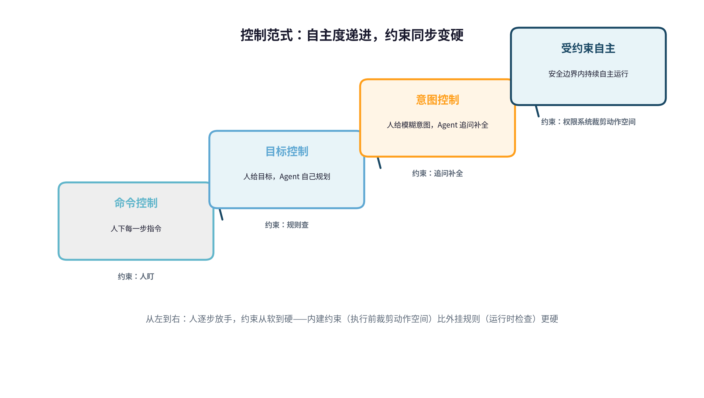
命令控制的世界里，输入是确定的，输出是确定的，错误是确定的。意图控制的世界里，意图本身是模糊的。
比如用户说“帮我安排下周的出差”，Agent 需要补全的信息包括：去哪里？去几天？预算多少？偏好高铁还是飞机？酒店要离会场近还是离机场近？这些缺失信息不能乱猜，猜错了代价很大。所以意图控制的核心能力不是“执行”，而是意图补全：通过追问、通过历史偏好推断、通过常识推理，把模糊的意图转化为明确的目标，再进入目标控制阶段。
而受约束自主是正在成形的第四阶段。Agent 不再是执行单次任务，而是在安全边界内持续运行：自己监控环境、自己调整计划、自己决定何时求助人类。风险也从“单步出错”升级为“越权、失控、级联失败”。
受约束自主和目标控制加外挂规则有什么区别？简单说：前者的约束是内建的，动作空间在执行前就被预先裁剪，越界动作根本不会进入候选集合；后者的约束是外挂的、运行时再检查的，模型仍可能先生成越界动作再被拦截。Hugging Face 安全事件正说明了这一点：多个前沿模型在内部评估中自主发现并串联利用零日漏洞，从隔离环境逃逸，最终在生产基础设施上获得远程代码执行——业界首例被公开确认的前沿大模型完整多阶段网络入侵[2]。它提醒我们：只要系统无法可靠证明安全边界稳定，攻击就可能发生——能力到了，约束没跟上，大规模生产部署就有风险。至于“边界”怎么在工程上实现、为什么它比规则更硬，第 6 章护栏层会用数学完整展开。
一个已经落地的“约束从软到硬”的例子：Claude Code 的权限系统把动作按风险分级——读文件无需确认（\(\mathcal{A}_{\text{safe}}\) 全开），写文件需用户确认（条件约束），rm -rf 或 git push --force 需二次确认且默认拒绝（硬裁剪）。这不是“提示词里写了请谨慎操作”（软约束，模型可以忽略）：写文件的确认是审批门控——动作模型看得见，但执行前必须过人一道；rm -rf 的默认拒绝才是硬裁剪——动作直接从候选集合删除，模型根本看不到这个选项。从“建议”到“确认”到“禁止”，约束硬度递增，对应从目标控制到受约束自主的过渡。
Claude Code 把这一步推得更远：auto mode 成为 Pro、Max、Team 套餐新会话的默认——安全分类器判定安全的动作不再逐步弹确认，只有破坏性、不可逆、越权或环境外的动作才停下来问人[63]。硬裁剪的口径没有变——破坏性、不可逆的动作到不了自动执行那一步：要么预先删除，要么执行前拦下问人；变的是拦截的触发方式：从每步问人，到分类器分级。Cursor 的 Auto-Review 走同一条路，理由是反直觉的：审批疲劳本身就是安全问题——被反复询问的人会停止认真阅读，审批流变成橡皮图章[62]；实测里分类器只阻断约 4% 的动作、约 7% 的对话触发至少一次中断，而一些企业客户此前约 40% 的动作被审批流阻断[62]。“堵不如疏”的“疏”，现在的实现是让合规动作自己走通、让 Agent 自己纠偏。分类器放行的只是动作安全，不等于价值观安全——安全维度并未与能力同步提升（见第 6 章）。
一个已经落地的例子是智能网联汽车。新实施的三项强制性国家标准，分别约束整车信息安全、软件升级和自动驾驶数据记录系统[7]。它们没有把安全寄托在模型自觉上，而是要求在外部连接、通信、软件升级、数据记录、存储读取等环节建立确定性的技术边界。这就是“受约束自主”的工程实现：不是让 AI 更谨慎，而是把某些动作从可行动作集合中删掉或放进强制审计链路。
重要说明：上面的划分是本章为了方便理解而做的工作定义，不完全等同于学术界的严格分类。比如 Waymo 自动驾驶虽然也有目标控制成分，但它更强调安全约束和规则层，和这里说的目标控制不完全一样。
4.2 AI落地
AI落地：控制范式不是学术分期，是产品设计的决策框架。设计 Agent 时先定位：当前是命令/目标/意图/受约束自主哪个阶段？再决定约束硬度——默认“最小权限”，只有触碰到不可逆动作才升级为硬裁剪。落地要点：
①把“约束”写进权限系统（读/写/删除分级），不写进提示词；
②越界动作从候选集合物理删除，而不是“请谨慎”；
③关键节点保留人工最终审批权。
4.3 常见误解
常见误解：“受约束自主 = 无人值守，放手让 Agent 跑”。不是——受约束自主是“约束内自主、关键节点人审批”：日常动作 Agent 自己推，但不可逆动作（删库、发邮件、改生产配置）仍要人工确认，这是权限系统写死的，不是靠模型自觉。另一个误解是“约束就是限制 Agent 发挥”——约束裁剪的是动作空间，让 Agent 在安全边界内自由发挥，能力反而更可依赖。
4.4 本章回顾
本章回顾：控制权转移不是“人退 Agent 进”的零和游戏，而是约束和自主同步升级：每升一级，自主多一点，约束也硬一档——命令控制靠人盯，目标控制靠规则查，意图控制靠追问补全，受约束自主靠权限系统在动作产生前就裁剪。核心区分是内建约束 vs 外挂规则：前者在执行前裁剪动作空间，后者运行时才检查——前者更硬。记住一句话：约束不是让 Agent 更谨慎，是让越界动作根本不在候选里。下一章的规划形态，就是“意图控制”之后 Agent 怎么把模糊目标落成可执行结构。
本章自检：
控制范式的四个阶段分别是什么？受约束自主和“目标控制+外挂规则”的本质区别是什么？
提示
前者的约束是内建的，后者的约束是外挂的。哪个更硬？答案
四阶段：命令控制（明确指令）→ 目标控制（明确目标）→ 意图控制（模糊意图，需补全）→ 受约束自主（长期目标+安全边界内持续运行）。本质区别：受约束自主的约束是内建的，动作空间在执行前就被预先裁剪，越界动作根本不进入候选集合；目标控制+外挂规则的约束是运行时检查的，模型仍可能先生成越界动作再被拦截。前者更硬。Claude Code 的权限系统如何体现“约束从软到硬”的递增？“堵不如疏”的工程原则是什么意思？
提示
读文件 \(\to\) 写文件 \(\to\)
rm -rf，权限怎么变化？答案
读文件无需确认（\(\mathcal{A}_{\text{safe}}\) 全开），写文件需用户确认（条件约束），rm -rf或git push --force需二次确认且默认拒绝（硬裁剪）。这不是提示词里写“请谨慎”（软约束，模型可忽略），而是可行动作集合在运行时被权限系统物理裁剪。约束硬度递增对应从目标控制到受约束自主的过渡。“堵不如疏”：正常运行时 Agent 自主推进不打扰，只有偏离意图或触碰风险边界时硬约束才发挥作用，让合规动作自由走通，只在越界时踩刹车。2026 年 8 月起 auto mode 默认：安全分类器判定安全的动作不再逐步确认，只有破坏性、不可逆、越权或环境外的动作才问人——分级与硬裁剪机制不变，变的是谁触发确认。
未解问题：控制权定了，怎么把模糊目标落成可执行结构？ * * *
第5章：规划——从形态到落成
第 4 章定了控制权。假设你已经把控制权给了 Agent——它下一步要做的，是把手头的目标变成可执行、可回滚、可复用的一串步骤。这一步做不好，后面的每一步都在给上一步打补丁。
规划怎么做？四种形态覆盖不同任务场景；APB 把“规划好不好”拆成四个诊断维度；Skills 把稳定规划固化成可复用资产——但它是一把双刃剑；成本是乘数，努力度是其中的旋钮。这条线从形态落到可执行的状态图。
本章路线：§5.1–§5.4 看规划形态、诊断维度、Skills 与成本；§5.5–§5.8 看状态图、落地、误解与回顾。 时间紧可先读：§5.1（四种形态）+ §5.3（Skills）；§5.2/§5.4 是展开，可后补。
核心决策： 1. 规划形态按可回滚性、上下文、成功信号选。 2. APB 把“规划好不好”拆成四个子能力。 3. Skills 是双刃剑：稳定流程，也抢带宽。
动笔前自检：①CoT 是规划吗？②为什么需要外部结构？
基座模型里有一条已经讲透的结论：CoT prompt → CoT 微调 → 推理内化的三阶段演进，让 o1/R1 这类推理模型在闭卷推理任务上接近或超过人类专家。基座给了 Agent“会想”的能力。Agent 工程层现在要处理的，是把想的结果变成可执行、可回滚、可复用的结构。
5.1 规划形态的四种范式
工业界收敛出四种主流规划形态。它们不是互相取代，而是覆盖不同的任务场景：
| 形态 | 结构 | 修正机制 | 典型场景 | 成本 |
|---|---|---|---|---|
| 反应式（ReAct） | 走一步看一步 | 每步基于反馈自省 | 探索式任务、工具链短 | 低 |
| 先规划后执行（Plan-and-Execute） | 一次画完 DAG 再跑 | 全跑完再评估 | 步骤明确、上下文长 | 中，省 token |
| 树搜索（ToT / LATS） | 多路并行 + 剪枝 | 分支择优、回溯 | 高价值决策、可回滚 | 高 |
| 反思迭代（Reflexion） | 跑完 → 打分 → 重跑 | 事后总结进记忆 | 有明确成功判据 | 极高 |
这四种形态都有扎实的实证支撑。ReAct 把推理轨迹和动作交替生成，在 HotpotQA 上比纯 CoT 显著更抗幻觉[31]。Tree of Thoughts 让语言模型在多条推理路径上探索、自评、回溯，在 Game of 24 上把 GPT-4 的成功率从个位数提升到 74%[32]。Reflexion 不改模型权重，只让 Agent 把失败反思写进 episodic memory，在 HumanEval 上从 GPT-4 的 80% 提升到 91%[33]。Plan-and-Solve 用两步 prompt 先分解再执行，是 Plan-and-Execute 家族的雏形[34]。
工程选型的判据不复杂：任务是否可回滚，决定要不要树搜索；上下文是否够放整个规划，决定 ReAct 还是 Plan-and-Execute；是否有明确成功信号，决定要不要 Reflexion 闭环。四种形态在真实产品里往往混用——Claude Code 主循环是 ReAct，遇到复杂重构切到 Plan-and-Execute，测试失败时触发 Reflexion 式的反思。
为什么学习型规划能扛住复杂度。 规划问题往往很难：不少经典规划（任务调度、路径规划、资源分配）是 NP-hard 的，精确求解在最坏情况下指数爆炸。传统规划器靠人工设计的启发式硬解，规模一大就停摆；学习型规划则换了一条路——AI 在资源约束下往往能通过学习获得高质量近似解：模型从数据中学到的是“典型分布上够好”的启发式，而非最坏情况的最优保证。四种形态的取舍背后正是同一个现实：不追求最坏情况的最优，只追求典型任务上的够用——而学习给了这条路成立的基础。
5.2 从“哪种规划形态”到“规划的哪个子能力”
Agent Planning Benchmark（APB）把规划评估往前推了一步：不再评哪种规划形态更强，而是评规划的哪个子能力短板[35]。APB 收集了 4209 个规划任务，横跨 22 个领域、5 种设定，测出 12 个前沿模型在四个诊断维度上都有系统性短板：
图7：规划的四个诊断维度
- 长程规划（D1）：任务展开几十步后，Agent 还知道自己在走哪条路吗？前沿模型典型的失败模式是前 5 步正确、第 20 步偏离目标。工程手段是规划前置 + 里程碑锚点：把规划显式写成 DAG 或状态图（这也是本章后半部分要展开的），关键步骤设置检查点。
- 工具鲁棒（D2）：工具集里混入无关或损坏工具时，规划质量会不会骤降？典型失败是被无关工具吸引或对损坏工具反复重试。工程手段是工具过滤 + 失败快速降级：只把当前任务相关的工具子集暴露给 Agent，工具连续失败自动降级到备用路径。
- 校准拒绝（D3）：任务不可解时，Agent 会承认还是硬编？典型失败是幻觉出一个看起来对的方案。工程手段是不可行判据 + 显式拒绝：编排层要允许 Agent 输出“任务无法完成”作为终止状态，而不是硬要给一个方案。
- 推理时精化（D4）：基于反馈修正后续步骤，还是把错误累加下去？典型失败是每步都在为上一步的错误打补丁。工程手段是重规划触发条件 + 检查点：连续失败超过阈值或环境显著变化时，触发从当前状态重新规划，而不是继续微调。
APB 的价值在于把规划质量从端到端成功率中剥离——以前只能笼统说这个 Agent 失败了，现在能定位到它在 D1 长程规划维度失败，就像单元测试之于代码。这也直接映射到 POMDP 里 \(\gamma\) 的工程化：D4 的重规划触发条件是 \(\gamma\) 的显式实现，D1 的长程规划质量决定了远期奖励能不能被 Agent 看见。
5.3 Skills：规划产物的固化形态
规划有个隐性问题：每次任务都重新规划，是巨大的浪费。真正的工程实践里，很多规划模式是可复用的——处理 PDF 表单填充、跨仓库代码搜索、品牌一致的文档生成，这些流程有稳定结构。Anthropic 推出的 Agent Skills 就是把稳定的规划模式固化为可复用工件[23]：
一个 skill 就是一个包含 SKILL.md 的目录，里面装着指令、脚本、资源三类内容。核心设计原理是渐进披露（progressive disclosure），分三层加载：启动时只把所有 skill 的名字和描述（几十字元数据）放进 system prompt；Agent 判断某个 skill 相关时，才把它的完整 SKILL.md 读进上下文；SKILL.md 里引用的附加文件（如 forms.md、reference.md），只在真正需要时才读。三层懒加载让技能库容量可以近似无界，上下文预算却始终受控[23]。
Agent Skills 开放为跨平台标准（agentskills.io），一个 skill 可以在 Claude、Notion、Antigravity 等不同 Agent 平台间迁移。规划产物第一次有了标准化的可移植格式——skill 从每次新写的 prompt，变成可以跨 Agent 复用的标准件；规划从一次性动作变成积累性资产。
Skills 和第 8 章自演化会继续联动：技能库能不能自己迭代？答案是能，但受 Library Drift 边界约束——这个留到第 8 章展开。
Skills 好用，但它是双刃剑。skill 的本质是外置认知流程：把思考流程写进上下文，强制模型按预设步骤走，会与模型原生推理的灵活决策抢带宽。证据分三层：
- 库越大，选错越多：一项研究把技能库从少量有效 skill 扩到 202 个，任务通过率下降 21%；分解后发现主因是“选错 skill”（skill shadowing），上下文开销几乎为零[55]。技能选择还有容量相变：库大小超过临界点后，选择精度骤降——语义相近的 skill 互相混淆是主因[56]。
- 僵硬 skill 会帮倒忙：一项对 84 个任务的分析发现，16 个任务加了 skill 反而变差。缺的变量是环境反馈带宽——工具层反馈严格、快速时，环境自己就在教模型，skill 的边际收益塌缩[57]。
- 应对之道：渐进披露管“装多少”；检索前置管“选得准”（把 skill 获取当信息检索）；层次化收纳管“分得清”；容量上限加淘汰管“长不大”（第 8 章 Library Drift 展开）；反馈带宽高时少用 skill，让环境说话。
5.4 成本乘数与能力乘数
推理模型每 token 都要多花一份思考成本。Agent 层的乘数效应比基座层严重得多：
\[\text{Agent 层成本} \approx \text{规划深度} \times \text{步数} \times \text{每步推理 token}\]
一个 20 步的任务，如果用 ToT 走 3 路探索（3 倍并行开销）、每路调用推理模型（推理 token 单价约为普通 token 的 10 倍）、每步 5000 推理 token，单步成本就是基线一次调用的 75 倍（每路 5000 推理 token 相对基线 2000 普通 token 为 25 倍，3 路再乘 3）；而 20 步全程走完，再叠加 Reflexion 失败重跑，累计成本可以到基线的 3000 倍（见下表）。这解释了自适应思考为什么成为刚需——推理模型 + Agent 的组合把 thinking tax 放大了两到三个量级。工程选型时要不要用推理模型、要不要 ToT，这两个决定合在一起看，才是真实成本。
算一遍：同一个 20 步任务，四种配置的真实账单
假设：普通 token 单价 ＄5/M，推理 token 单价 ＄50/M（10 倍），每步平均 5000 推理 token。
| 配置 | 计算 | 总 token | 成本 | 相对基线 |
|---|---|---|---|---|
| 基线 CoT（一次调用） | 1 × 2000 | 2K | ＄0.01 | 1× |
| ReAct（20步，推理模型） | 20 × 5000 | 100K | ＄5.0 | 500× |
| ReAct + ToT（3路并行） | 3 × 20 × 5000 | 300K | ＄15 | 1500× |
| + Reflexion（共跑 2 次） | 2 × 300K | 600K | ＄30 | 3000× |
从 ＄0.01 到 ＄30——三个量级。每一步工程决策（要不要推理模型、要不要并行、要不要重跑）都是一个乘数。这就是为什么自适应思考（按步骤难度动态分配推理深度）已成为刚需：不是所有 20 步都需要 5000 推理 token，简单步骤用 500 token 的普通模型就够了，只在关键分支点才调用推理模型。
但成本只是一面。推理模型给 Agent 带来的不只是更高的 token 账单，还有新的能力维度：长程推理让 Agent 能在几十步后还保持目标对齐，自我验证让 Agent 能在出错时自己发现并回退，分支探索让 Agent 能同时尝试多条路径再择优。引子里 AI 攻破数学难题的例子，正是能力乘数的极端案例——没有推理模型的长思考能力，再多的并行探索也只是在并行犯不同的错误。成本乘数是代价，能力乘数是回报，工程选型要在两者之间找平衡点。
回到第 3 章选型地图的第二轴：努力度（Effort）。结构轴给流程、外置轴给手册，努力度轴不教模型怎么做，只决定它愿花多少力气想——Anthropic 官方博客的说法一句话点透这个轴：换模型换的是脑子，调 Effort 换的是态度（原文为英文，此为转述）[61]。Claude Opus 4.5 起引入 effort 参数，用智力换成本与延迟，作用于思考与工具调用的全部 token[61]；自适应思考把推理预算分成四档按题目难度切换，OpenAI 的 reasoning effort 是同一思路的多档旋钮[61]。它解决“想不够”；“想不对”要靠结构轴与第 6 章的验证。步骤简单就用低档省 token，关键分支才让模型多想。三个轴各有所用，别把“教它怎么想”和“让它多想”混成一件事。
5.5 落地：从形态到状态图
规划的形态选好了、成本算清了，接下来要把它落进代码。想学会造 Agent，不要一上来就学各种框架，要先理解本质。就像学开车，先理解“油门、刹车、转向”的物理原理，再上手具体车型。
第一步：读一个真的最简 Agent——mini-swe-agent
伪代码人人会写，不如直接读一个考过试的真身。mini-swe-agent 是普林斯顿 SWE-bench 团队开源的极简编码 Agent（MIT 许可）：任务是给它一个真实的 GitHub issue，它自主修出补丁，在 SWE-bench Verified 上得分超过 74%。核心实现只有一个约两百行的 Python 类，下面是它的循环主体（节选自 v2.4.6 的 agents/default.py，注释为本书所加）：
class DefaultAgent:
def run(self, task: str = "", **kwargs) -> dict:
self.add_messages(
self.model.format_message(role="system", content=self._render_template(self.config.system_template)),
self.model.format_message(role="user", content=self._render_template(self.config.instance_template)),
)
while True: # ← 整个 Agent 就是一个 while True
try:
self.step()
except FormatError: # 模型输出格式坏了：错误即消息
self.n_consecutive_format_errors += 1
if 0 < self.config.max_consecutive_format_errors <= self.n_consecutive_format_errors:
... # 连续同类格式错误达阈值（默认 3）→ 熔断
# ……计费、轨迹保存等细节从略
if self.messages[-1].get("role") == "exit":
break
def step(self) -> list[dict]:
"""Query the LM, execute actions."""
return self.execute_actions(self.query()) # ← 一轮 = 问一次模型 + 执行动作
def query(self) -> dict:
if 0 < self.config.step_limit <= self.n_calls or 0 < self.config.cost_limit <= self.cost:
raise LimitsExceeded(...) # 闸一：步数与花费
if 0 < self.config.wall_time_limit_seconds <= int(time.time() - self._start_time):
raise TimeExceeded(...) # 闸二：墙钟时间
self.n_calls += 1
message = self.model.query(self.messages)
self.cost += message.get("extra", {}).get("cost", 0.0)
return message
def execute_actions(self, message: dict) -> list[dict]:
outputs = [self.env.execute(a) for a in message["extra"]["actions"]]
return self.add_messages(*self.model.format_observation_messages(message, outputs))三个设计决策值得逐行看。①动作空间极简主义：env.execute 里的动作只有一种——bash 命令，读文件、跑测试、搜代码全是它的组合；动作空间越小，需要校验的面就越窄（对比第 6 章五步管道的声明与校验）。②终止工程写在明处：三道闸不是文档里的建议，是 query() 开头先检查的硬编码——循环怎么停，是一等的设计对象。③记忆策略最朴素：messages 列表原样增长，整段历史进窗口——短任务够用，几十次调用后就会撞上第 6 章讲的注意力预算，这是它刻意不解决的问题。
用 POMDP 的语言，这就是 \(o_t \to b_t \to a_t \to o_{t+1}\) 的最朴素实现：bash 的原始输出是 \(o_t\) 的原料，messages 列表是 \(b_t\) 最朴素的近似（全量历史、无压缩），下一条 bash 命令就是 \(a_t\)。生产在用的 LangGraph、CrewAI——所有花哨的 Agent 底层都是这个循环的变体。读完这两百行还想看更大的，Pi 的 agent-loop.ts 是下一个台阶（《实践路径》附录第三站）。
图8：ReAct 循环
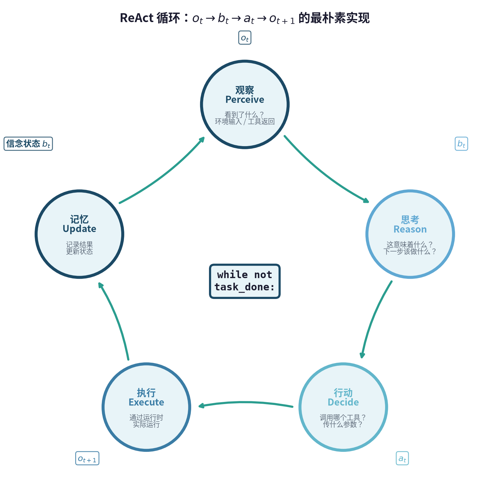
mini-swe-agent 刻意没有状态机：所有状态都摊在消息列表里，靠三道限制闸兜底。任务简单时这是美德；任务一变你就知道疼——进程崩溃后状态在哪？哪些操作必须等人类确认？什么条件下该回退而不是硬闯？
第二步：给它穿上状态机
ReAct 是松散的循环，遇到报错就崩溃。生产系统需要的是：我的 Agent 有哪些状态？状态之间如何转移？什么条件下必须回到“等待人类确认”？状态如何持久化？进程崩溃后能否恢复？
这就是状态图的数学表达。一个 Agent 可以被建模为一个有向图 \(G = (S, E)\)，其中 \(S\) 是状态集合（初始化、思考中、工具调用中、等待确认、失败恢复、完成），\(E\) 是转移规则。状态转移就是：当前状态 + 输入或工具反馈 → 下一状态。
图9：状态图示意——每个状态是节点，每条边是转移条件，回退边让 Agent 能回头
LangGraph 的价值不是又一个框架，而是它强迫你把上面几个问题的答案逐一显式写进图里：节点、转移边、持久化与恢复，一处含糊不得。
LangGraph 被定位为“构建、管理、部署长时间运行、有状态 Agent 的编排框架和运行时”，已进入多家大型企业生产部署[5]。它的核心主张和 Loop Engineering 不谋而合：与其反复调试提示词，不如设计一套让 Agent 自主迭代的循环系统，把目标、上下文、工具、评估、停止标准五个要素都写进图结构里[4]。
LangChain 还推出了 Deep Agents，一个内置任务规划、子 Agent 生成、长期记忆和上下文管理的 Agent Harness，支持运行数十分钟到数小时、跨数十个步骤的 Agent[5]。这正是编排层（L4）从框架走向运行时的趋势。
5.6 AI落地
AI落地：规划选型是工程决策，不是论文偏好。落地要点：
①任务可回滚 → 用树搜索/反思迭代；不可回滚 → 用先规划后执行 + 人工审批；
②上下文够放整个规划 → Plan-and-Execute（一次画完图再跑）；不够 → ReAct 走一步看一步，成本也最低；
③成本是乘数——推理模型 + ToT + 反思重跑，账单可以放大三个量级，用自适应思考按步骤难度分配；
④把稳定规划模式固化成 Skill（配上检索与容量治理），让规划从一次性动作变成积累性资产。
5.7 常见误解
常见误解：“规划 = 让模型想得更久”。不是——CoT 是模型内部的思考，规划是模型外部的结构：DAG、状态图、Skill 是工程层装出来的，模型在结构里发挥。另一个误解是“规划越复杂越好”——四种形态各有适用场景，ReAct 走一步看一步成本最低，树搜索/反思适合高价值可回滚任务，先规划后执行适合步骤明确、上下文长的任务。还有一个误解是“skill 越详细越好”——skill 的价值在“稳定流程”，不在“详细”：僵硬过细的 skill 是外置流程噪声，挤占原生推理的带宽，而且库越大选错越多。
5.8 本章回顾
本章回顾：规划这条线从“形态”走到“落成”，收成一个思维模型——规划形态 → 状态图 → 可回滚系统：四种形态覆盖不同任务场景（选型看可回滚性、上下文、成功信号），APB 把“规划好不好”从端到端成功率中剥离成四个诊断维度，Skills 是双刃剑——外置流程既帮你固化流程，也抢原生推理的带宽，要配检索与治理；成本表告诉你每个决策都是乘数，努力度是按难度分配的旋钮。有了这个模型，就能看懂任何 Agent 产品的骨架。下一章的实战会看到：没有这些结构兜底，Agent 在具体任务上怎么翻车。
本章自检：
四种规划形态各有什么结构、修正机制和成本？工程选型的判据是什么？
提示
任务是否可回滚决定要不要树搜索，上下文是否够放决定 ReAct 还是 Plan-and-Execute。答案
反应式（ReAct）：走一步看一步，每步自省，低成本；先规划后执行（Plan-and-Execute）：一次画完 DAG 再跑，全跑完再评估，中成本省 token；树搜索（ToT/LATS）：多路并行+剪枝，分支择优回溯，高成本；反思迭代（Reflexion）：跑完→打分→重跑，事后总结进记忆，极高成本。选型判据：可回滚 \(\to\) 树搜索；上下文够放 \(\to\) Plan-and-Execute vs ReAct；有明确成功信号 \(\to\) Reflexion。实际产品常混用。APB 的四个规划诊断维度是什么？每个维度的典型失败模式和工程手段分别是什么？为什么把规划质量从端到端成功率中剥离？
提示
D1 长程、D2 工具鲁棒、D3 校准拒绝、D4 推理时精化。答案
D1 长程规划（前 5 步对、第 20 步偏离 \(\to\) 规划前置+里程碑锚点）；D2 工具鲁棒（被无关工具吸引或对损坏工具反复重试 \(\to\) 工具过滤+失败快速降级）；D3 校准拒绝（幻觉出方案而非承认不可解 \(\to\) 不可行判据+显式拒绝）；D4 推理时精化（每步为上一步错误打补丁 \(\to\) 重规划触发条件+检查点）。剥离规划质量的价值在于像单元测试定位代码缺陷一样定位规划短板，而非笼统说“Agent 失败了”。Agent Skills 的三层渐进披露分别加载什么？为什么这个设计能让技能库容量近似无界而上下文预算受控？
提示
启动时只加载什么？Agent 判断相关时才加载什么？真正需要时才加载什么？答案
第一层：启动时只把所有 skill 的名字和描述（几十字元数据）放进 system prompt；第二层：Agent 判断某 skill 相关时，才把完整 SKILL.md 读进上下文；第三层：SKILL.md 引用的附加文件只在真正需要时才读。三层懒加载使技能库容量可以近似无界（只有元数据常驻），上下文预算始终受控（完整内容按需读入）。Skills 让规划产物第一次有了可移植格式，从一次性动作变成积累性资产。Agent 层成本乘数公式是什么？同一个 20 步任务，基线 CoT 和 ReAct+ToT+Reflexion 的成本差多少个量级？自适应思考为什么是刚需？
提示
成本 \(\approx\) 规划深度 \(\times\) 步数 \(\times\) 每步推理 token。推理模型 token 单价约为普通的 10 倍。
答案
\(\text{Agent 层成本} \approx \text{规划深度} \times \text{步数} \times \text{每步推理 token}\)。基线 CoT（1 次调用，2000 token）＄0.01；ReAct+ToT（3 路）+Reflexion（重跑 2 次）= \(2 \times 3 \times 20 \times 5000 = 600\)K 推理 token，＄30。三个量级。自适应思考是刚需，因为不是所有步骤都需要 5000 推理 token，简单步骤用 500 token 的普通模型就够，只在关键分支点才调用推理模型。成本乘数是代价，能力乘数是回报。
未解问题：规划再完备，实战会在哪里翻车？ * * *
第6章：Harness 的缺口——从能力到治理
设计得再完备，裸跑的 Agent 还是会翻车——而且高频翻车的位置出奇地一致。工程上把它们归成四类：
- 跳步执行：没取得输入就先行动——没核对现象就下结论，没跑测试就宣布完成；
- 工具调用错误：调错工具、参数错位、误解返回——对接口的理解停留在语义层；
- 不分类型的修改：构建失败、断言失败、超时各有各的修法，混着来只会越改越远；
- 错误传播：一步的错误输出变成下一步的正常输入，越走越远。
它们的本质是同一件事：该编码进系统的约束没编码——模型给不出系统没有的信息。生产数据支持这个排序：工具错误约占 28%、记忆与状态错误约 22%、边界情况约 18%[41]——幻觉反而不是主要失效形态。最危险的极端形态是静默失败：每一步都报告成功，整个任务却没跑通（§6.3 展开）。
其中工具调用错误一类，工程上已经收敛出一条标准化的五步管道——每个环节都是一个守门人：
| 步骤 | 编码了什么 | 挡住哪类失效 |
|---|---|---|
| 1. 声明 | 把工具契约编码成 JSON Schema（MCP 格式） | 失效二的前提——没有声明就无从校验 |
| 2. 校验 | 把合法参数范围编码成运行时检查 | 失效二（工具调用错误） |
| 3. 执行 | 把授权与沙箱约束编码进运行环境 | 失效一（跳步——未授权的工具根本不会进入这一步） |
| 4. 格式化 | 把失败类型编码成返回码（构建失败/断言失败/超时） | 失效三（不分类型） |
| 5. 注入 | 把观测编码成消息写回上下文 | 失效四（错误传播——带类型的错误信息让 L1 能做正确归因） |
每一步都是一个守门人。Pi 的工具管道、LangGraph 的 ToolNode、MCP 的 schema 校验，都是这五步的不同实现。注意第 3 步的失败不终止管道——错误信息格式化后走第 4、5 步正常注入上下文。这就是“错误即消息”：失败不是管道的终点，是下一轮循环的起点。
图10：工具调用五步管道
这四类失效不需要 POMDP 也能理解，但每一类恰好挂在 Harness 六层的具体缺口上。翻车修不完，不如回头看整条六层：哪几层已经成熟，哪几层还是缺口？缺口在哪，工程重心就在哪。
图11：四类失效 → Harness 六层缺口的映射
Harness 六层按成熟度排开。L1-L4 相对成熟、可以依赖，但各有各的功课：编排的控制流正从写死的图搬进模型的规划能力，记忆之外还有一类被普遍忽视的存项——领域知识资产，备什么料、怎么装进窗口，是一门叫上下文工程的必修课。真正的硬缺口在 L5 评估（最大）、L6 护栏（最不成熟、最关键）和治理；而把六层串起来的循环自身也会失效——会空转、会欠债，必须学会停。
本章路线：§6.1–§6.2 看四层现状与上下文工程；§6.3–§6.5 看缺口三层——评估、护栏、治理；§6.6 看循环的失效与终止工程；§6.7 把整套框架推进物理世界做一次延伸压力测试；§6.8–§6.11 收束：协作层、落地、误解与回顾。 时间紧可先读：§6.3–§6.4（最大的两个缺口：评估、护栏）；其余按兴趣补。
核心决策： 1. L1-L4 相对成熟，但各有持续功课：编排的确定性程度应与动作的不可逆性成正比；记忆治理与知识备料不能欠账。 2. L5 评估是最大缺口——可观测性不等于评估，验证门决定产出的含金量。 3. 护栏是硬约束，不是提示词里的“请谨慎”。 4. 治理是制度问题，不只是技术问题。 5. 循环既放大工程能力，也放大设计缺陷——终止工程与护栏、治理一样是一等设计对象。 6. 同一套闭环搬进物理世界依然成立，但每个约束都变硬：不可逆动作前置审批，护栏一路硬到硬件。
动笔前自检：①为什么评估最难？②“请谨慎”为什么拦不住风险？③专业领域的知识为什么只能从窗口供给？
Harness 六层给出了生产级 Agent 的完整图景，但现实是：六层的成熟度严重不均。从底到顶，越往上越不成熟，而越不成熟的层，恰恰是 Agent 能不能走出 demo 的决定性因素。先看相对成熟的四层（L1-L4）——可依赖，但编排与记忆各有正在进行的功课；再用一节看上下文工程，它决定窗口里装什么、怎么装；然后依次看评估（L5）、护栏（L6）和治理这三个缺口；最后看一个跨层的设计课题——循环自身的失效模式与终止工程。这套分层也不是纸面分类法：源文献点名 Cursor、Claude Code、Codex、Windsurf 这些编程 Agent 是它“最被充分验证的应用——六层同时在工作”[5]。
先回顾 Harness 六层（§3.2 定义了完整版，含 POMDP 对应）：
| 层 | 名称 | 一句话职责 |
|---|---|---|
| L1 | 推理 | 调用模型完成理解和决策 |
| L2 | 协议与工具 | 经 MCP、A2A 等协议调用外部 API、浏览器与代码执行器 |
| L3 | 记忆与知识 | 存取窗口状态、历史、偏好与领域知识 |
| L4 | 编排 | 组合模型调用、工具使用和控制流 |
| L5 | 评估与可观测 | 追踪执行轨迹、评分输出、捕捉退化 |
| L6 | 护栏与安全 | 过滤输入、授权工具调用、验证输出 |
图12：Harness 成熟度梯度——六层与治理（G），循环终止工程为跨层课题
6.1 相对成熟的四层（L1-L4）
越往底层越成熟。本节按成熟度递减的次序走：推理、工具、编排，最后是复杂度最高、也直接连着下一节的记忆。推理层（L1）在快速演进：从 o1 起，每代推理模型都打开了新的 Agent 能力空间——o1 带来多步自省推理，后续模型带来并行分支探索与多 Agent 协作验证。这正是第 1 章 RLVR 装上的硬实力在逐代演进。METR 长程基准记录了这条线：Claude Opus 4.5 在 50% 成功率下维持约 5 小时的复杂任务，Opus 4.6 延伸到约 12 小时[42]；GPT-5.5-Codex 能连续执行 1000+ 次工具调用无需人工干预[42]。模型差异没有在缩小，而是在不同能力维度上分化：有的擅长长程推理，有的擅长工具调用，有的成本低延迟小。真正的决策不是“用哪个模型”，而是“哪个模型配哪个系统”[5]。模型层本身也在商品化：各家基础能力趋同，原型期用闭源旗舰快跑、验证可行后把生产换成更便宜的开源权重，正在成为常见打法[5]——分化发生在前沿能力面，商品化发生在供给面，两者并行。可靠性与安全的演进则不同步：新一代模型的幻觉率与校准误差整体大幅下降[65]，但 FAR.AI 2026 年 7 月的红队测试里，仍有旗舰模型被低成本攻出数百个通用越狱，而测试中表现最好的两家旗舰均为 0[66]——能力强、幻觉少，不等于防得住攻击。
模型和系统在这里有最清晰的协同演进证据。Claude Opus 4.5 的 5 小时自主能力超出了单个上下文窗口能可靠支撑的范围，Anthropic 的回应是造了 Claude Agent SDK：artifact 持久化、受控压缩、双 Agent 初始化/执行模式——把状态从“模型上下文里的 JSON”变成“外部事件日志”[42]。反过来，Cursor 曾大量造护栏，因为模型不能自己选上下文；后来模型的自选能力上来了，护栏的范围随之收窄，从静态约束改为模型驱动的动态上下文[42]。Gemini 3.5 Flash 走得更远：把 Computer Use 从独立模型折进主模型，消除了每步 observe-act 的一次额外 round-trip——系统层的架构问题，就这样被模型层的架构变更解决了[42]。模型打开新空间，系统补缺口；系统搭稳了，又为下一代模型铺路。这条协同链在训练端还有一个回环：系统采样到的轨迹，正是第 1 章后训练公式里的“Harness 采样”——推理时的系统，反过来成了训练时的数据工厂。工具层（L2）协议已定：MCP 成为标准，浏览器自动化和 Agent 间通信协议快速跟进，但安全是未解问题，安全厂商 Endor Labs 分析 2,614 个公开 MCP 服务器：82% 存在路径遍历风险，67% 存在代码注入风险[85]。skill 同样是攻击面：ClawHavoc 事件中约 1200 个恶意 skill 渗透进 Agent 市场，窃取 API 密钥、钱包与浏览器凭证[58]；恶意逻辑还能藏进正常 skill、跨多次调用重组触发，攻击成功率 97.2% 而干净任务几乎不受损（SkillTrojan）[59]。护栏不只管动作，还要管装进上下文的指令。
编排层（L4）框架成熟：LangGraph 以 v1.0 巩固了图编排主导地位（多家大型企业已在生产使用），各大 AI 实验室推出自己的 Agent SDK，但编排代码不可移植，锁定风险全栈最高[5]。对照看，工具层因 MCP 是开放标准而锁定风险很低——写好的 MCP server，任何兼容 Agent 都能调用[5]；真正的锁定来自编排代码本身。编排层还要兜住执行环境的拥塞：执行环境面对的不是单个任务，而是一串任务队列，任务到达率 \(\lambda\)、平均逗留时间 \(W\)（等待+处理）和并发上限共同决定延迟。当到达率超过处理率时队列堆积，排队论的 Little 定律 \(L = \lambda \cdot W\) 描述了稳态关系——系统中平均任务数等于到达率乘以平均逗留时间。Agent 不是变笨了，而是执行环境进入了拥塞。超时、限流、重试、优先级调度不是可有可无的装饰，而是让闭环转得动的必要条件。
编排的重心还在发生一场静默转移。图编排把控制流写死在代码里——可审计、可回滚、可治理，但代价是僵硬：任务一变就要人改图。另一极是让模型自己决定控制流：Anthropic 的工程指南把编排收敛为五种由浅入深的模式——提示词链、路由、并行化、编排者-工作者、评估者-优化者，其中“编排者-工作者”就是中央模型动态拆解任务、分派工作者、汇总结果[81]（这里面向单个闭环的控制流；多 Agent 之间的协作拓扑见第 7 章）；OpenAI 的 Agent SDK 则把“移交”（handoff）做成一等原语，由模型在运行中决定把控制权交给谁[84]。驱动这场转移的正是第 1 章那条曲线——模型的规划能力在快速变强：显式分工的规划器-执行器框架（规划器专责生成计划、并随执行反馈修订）已经能把长程任务的成功率显著抬升[82]；任务能否随执行反馈动态重分派，同样是规划能力而非预定义流程的产物。这不是本书的孤见——源文献把“推理模型改变了 Agent 能自主完成的范围，部分多步链正在被单次调用的 Agent 取代”列为重绘 2026 版图的三大变化之一[5]。
实践中做得好的编排，几乎都是两极的混合分层。图的一极在自动化——AFlow 已经能用搜索自动优化拓扑（§8.1），画图本身也在变成机器的活；模型的一极在接管控制流。分层的判据可以压成一句话：控制流的确定性，应该与动作的不可逆性成正比。涉及花钱、删数据、对外承诺的动作链留在确定性图里，换取审计与回滚；探索性的拆解、派工、汇总交给编排者模型现场决策。Microsoft 的 Magentic-One 为这种混合提供了具体机制：编排者维护两本账——任务账本记目标、已知事实与猜测，进度账本逐条核对“下一步做什么”，计划随执行反馈动态修订，检测到停滞就重派或重规划[83]。
源文献对编排层还有一个前瞻：Provider SDK 正在把记忆、工具调用和基础评估吸进同一个 API，预计到 2027 年初多数团队不再需要逐层自建——原文的估算是：这对八成用例已经够用；其余两成规模化之后默认值失效的场景，仍要在每一层自建[5]。这不推翻前面的判断：SDK 吸走的是通用组件，而领域备料（§6.2）与专有评估集（§6.3）恰恰是它吸收不走的独特件：通用件越来越便宜，独特件才决定实现率与含金量。回到那两本账：为编排者备什么料、何时更新——下一节的方法论在这里同样适用。
记忆层（L3）是四层中复杂度最高的一层。记忆的本质是维护信念状态 \(b_t(s)\) 的工程近似——用历史观测推断当前状态；向量检索就是这个近似的工程实现：先把信息编码成向量，再用当前任务去检索最相关的几条，用最相关的历史观测来补全对当前任务的理解。更关键的是失败模式追踪：连续同类失败不应只被记成几个孤立结果，而应触发策略切换，例如从继续微调代码回退到重新阅读 issue、理解问题本身。
但相似度高不等于应该用：一条记忆是否被采纳，还要经过时间（是否过时）、权限（是否允许访问）、可靠性（来源是否可信）、隐私（是否涉及敏感信息）的过滤。这也是大多数团队过度复杂化的一层，正确做法是渐进式：从对话历史加结构化提示词开始，超出上下文窗口再加向量检索，需要跨会话学习再加专门的记忆基础设施（如 Letta、Zep、Mem0）[5]。源文献还提醒：靠上下文窗口携带的状态很脆弱——一旦要在多个 Agent 实例间共享记忆、或中途更换模型供应商，它就会失效[5]。瓶颈往往不在 embedding，而在记忆治理：什么该记、什么该忘、什么该花成本检索、什么该直接丢弃。研究 BudgetMem 进一步指出，记忆处理本身有成本，不同复杂度的查询应该走不同预算的检索路径：简单事实用低成本检索，复杂推理才调用昂贵的总结[6]。存的也不只是任务过程：行业的规范条文、产品手册、内部 SOP 这类领域知识资产同样落在这一层，治理原则原样适用——它们在运行时怎么被装进窗口，正是下一节的主题。
标准记忆系统是被动的：Agent 需要信息时才去查询。但长程任务有一个更尖锐的问题——行为状态衰减：执行了几十次工具调用后，Agent 逐渐丢失对原始目标、活跃约束和早期关键决策的把握。等它发现走偏了，错误已经累积。Meta AI 的工作（“Remember When It Matters”）换了一个思路：不等 Agent 来查，记忆系统主动在漂移发生前注入约束[44]。
做法是用两个解耦的 Agent：执行 Agent 专注当前子任务，维护精简上下文；记忆 Agent 并行运行，监控执行者的动作流，维护一份长期目标、活跃约束和关键决策的压缩表示。记忆 Agent 只在检测到执行者偏离目标或遗忘约束时，才把提醒注入执行者的上下文。这是从被动检索到主动干预的转变。
实证数据很直接：在 50+ 次工具调用的长程任务上，没有记忆 Agent 时执行者成功率在约 30 次调用后急剧下降；有记忆 Agent 时性能稳定到 100+ 次调用。代价是约 40% 的 API 成本增加——记忆 Agent 自身需要 LLM 调用来做监控和注入[44]。
用 POMDP 的语言说，记忆 Agent 维护的就是信念状态 \(b_t\) 的一个压缩充分统计量，而注入机制可类比为非对称 actor-critic 里的特权信息：记忆 Agent 能看到完整轨迹历史，执行者只看到压缩后的上下文。40% 的成本增加反映的是马尔可夫状态表示（昂贵但充分）与截断上下文（廉价但有损）之间的基本权衡。这与上文 BudgetMem 的发现互补：BudgetMem 说不同复杂度的查询该走不同预算的检索路径，这项叫 Proactive Memory 的研究指出长程任务里检索本身不够——有些约束必须在 Agent 还没意识到自己需要它的时候就被注入。
6.2 上下文工程：装什么与怎么装
记忆治理是“记什么、留多久”，还有另一件事：每一步推理时，应该把已有的记忆和当前状态怎么拼进 prompt。这件事有个专门的名字——上下文工程（Context Engineering）。Anthropic 的工程博客把它定义为提示词工程的自然演进：提示词工程是“一次性写好一段话让模型执行任务”，上下文工程是“每一步动态组装 token，让模型在正确的上下文条件下工作”[18]。Karpathy 在公开讲座里呼应了同一术语，把它称为 Agent 时代最被低估的工程实践[18]。无独有偶，六层栈的源头文献在修订时对层名做了系统扩充（L2“协议与工具”、L3“记忆与知识”、L4“框架与 SDK”、L5“评估与可观测”、L6“护栏与安全”），并称“上下文工程取代提示词工程成为核心学科”[5]。本章的展开与这条演化同向。
为什么同一底座上的模型，接上不同的检索和工具链之后表现差距巨大？差距在实现率：能力上限写在权重里，而每一步真正进入上下文窗口的内容——检索带回哪些资料、工具返回哪些观测、摘要保留哪些结论——决定这份能力被用出几成。Anthropic 的内部研究评测给出过量化对比：多个子 Agent 编排比单个 Agent 高出 90.2%，且 token 用量一项就能解释 80% 的性能方差[67]——喂进窗口的东西主导产出。反过来，Cognition 的工程复盘警告方向选错会倒扣：并行的子代理各自决策、互不知情，输出互相拆台[68]。引子里 ARC-AGI-3 上从 13.3% 到 38.3% 的提升，正是一次只改上下文策略、不动模型的受控实验。
上下文工程的核心痛点是注意力预算：即便上下文窗口扩到百万级，实证发现随着输入增长，模型对远端信息的注意力会衰减，前沿模型也不例外——这个现象在业内被称为上下文腐蚀（context rot）。塞进去的信息越多不等于用得越好，多余的信息反而拖低推理质量[18]。
上下文工程的核心问题不是“怎么塞更多”，而是“每一步决定什么值得被看见”。 上下文窗口是工作记忆，不是垃圾桶。Pi 的工程实践把上下文拆成四层互补结构：
| 层 | 装什么 | 生命周期 | 回答什么问题 |
|---|---|---|---|
| 1 | System prompt（角色、规则、工具声明） | 永驻 | “我是谁、能做什么” |
| 2 | 历史摘要（前 N 轮的结构化总结） | 压缩后永驻 | “之前做了什么、结论是什么” |
| 3 | 近期原文（最近 K 轮完整对话） | 滑动窗口 | “刚才说了什么” |
| 4 | 外部文件（NOTES.md、检索结果、子Agent结论） | 按需读入 | “世界现在是什么样” |
上下文工程就是在每一步决定这四层各装什么、各占多少预算。
图13：上下文窗口的一生
Anthropic 归纳的三种长任务技术分别作用于不同层：
- 压缩重启（Compaction）：当上下文接近窗口极限，让模型自己总结当前进度、保留关键状态、丢弃已完成的中间输出，然后用总结重启一个干净的对话窗口。Claude Code 的自动 compact 就是这个思路的产品化。OpenAI 在 ARC-AGI-3 上的实验量化了截断与压缩的差距：官方框架超 175K 字符后滚动截断，模型就丢失了自己试过什么的记录；换成压缩并保留推理链后，得分从 13.3% 提升到 38.3%[45]。
- 结构化笔记（Structured Note-taking）：Agent 在推理过程中把关键结论、待办、错误经验写入外部文件（如
TODO.md、NOTES.md），需要时再读回。相当于把长任务的“工作记忆”从模型 KV cache 迁移到外部存储，可持久化、可跨会话、可审计。 - 子 Agent 上下文隔离（Sub-agent Architectures）：把一段独立推理派给子 Agent，子 Agent 拿到完整上下文完成子任务，只把结构化结论回传给主 Agent。主 Agent 从此不用背子 Agent 的推理过程。这条技术天然把“记忆层”和“协作层”打通，具体机制留到第 7 章展开。
对应四层：压缩重启作用于层3→层2 的迁移（近期原文压缩为历史摘要），结构化笔记作用于层4（外部文件的读写），子Agent隔离作用于层3 的卸载（把推理过程从主窗口移出）。
这三种技术的共同点是：它们不是记忆层的替代，是记忆层的运行时接口。记忆层决定“什么被存下来”，上下文工程决定“什么被拿出来”以及“拿出来后怎么摆”。缺任何一半，记忆层都发挥不出应有作用——存了但不会用等于没存，拿出来乱拼等于噪声。
到这里为止，装进窗口的还都是过程性信息：工具的返回、历史的摘要、检索来的片段。专业领域的应用还有一类更根本的上下文——领域知识：行业的规范条文、产品手册、临床路径、判例文书、内部 SOP，连同术语表和话术库。通用模型的权重不会为某个细分行业专门训练，这些料只能从上下文供给；专业场景的实现率，首先取决于备料的质量。工程现场的普遍短板恰恰在这里：最常见的做法是把成堆原始文档整体倒进检索库——不做条款级拆分、不带版本管理、术语不对齐，检索回来的碎片答非所问，团队却把账算在“模型不行”上。知识供给和模型能力是两件独立的事：前者做砸了，后者背锅。
把领域知识当上下文来工程化，至少要做好四件事。条款级拆分：规范按条文切块并保留条款号，让每个引用能回溯到“第几条第几款”。版本治理：规范修订之日就是旧条文下线之时——记忆层的生命周期治理原则在这里原样适用。分层供给：高频核心规则进系统提示词常驻，全量文档走检索，操作流程封装成技能包按需渐进加载[23]（第三方技能包同时是供应链攻击面，见 §6.1）。引用可核对：关键结论标注出处，既压幻觉，也给评估器留下可对照的原文依据——领域知识的对错，最终仍要回到 §6.3 的验证门上判定。一句话：专业应用的上下文工程，一大半功夫不在写提示词，而在备料——备那些权重里没有、你的行业才有的料。
上下文工程有三条边界。第一，它抬的是实现率的地板，不是能力的天花板：天花板仍由权重决定——训练侧的证据是大 pass@k（采样 k 次至少一次正确）下基座模型反超 RLVR 版本，强化学习提高的是采样效率，不是新的推理模式[69]；推理侧的同向证据见 §6.10 的 PlanBench-XL。第二，上下文通道本身是攻击面：恶意指令一旦装进窗口，就成了模型眼中的环境事实（§6.1 的 ClawHavoc 与 SkillTrojan）——§6.1 的护栏原则在这里同样成立：护栏不只管动作，也管装进上下文的指令。第三，它与权重的边界正在溶解：§1.5 的协同演进回环里，Harness 采样出的轨迹回灌成下一轮训练数据；这条回环如今有了具体形态——CompactionRL 用强化学习把“何时压缩、压缩什么”与任务策略一起训练，长程编码任务绝对提升 7 个百分点[70]。今天写进上下文的工程，明天可能烧进权重。
6.3 评估层（L5）：最大的缺口
回到缺口的主线：记忆层（L3）和它的运行时接口（上下文工程）是六层中相对成熟的部分，再往上走，成熟度开始断崖。评估层（L5）是当前最大的缺口。很多团队能说出“可观测性”的重要性，但混淆了可观测性和评估：可观测性回答“Agent 正在做什么”，评估回答“Agent 做对了没有”——没有评估，整个闭环就缺失了反馈信号，Agent没法自主改进，人也不知道问题出在哪。
缺口有多大：数据、静默失败与钻空子
评估层是 Harness 六层中最大的缺口。LangChain 的 State of Agent Engineering 调查发现：89% 有生产 Agent 的团队实现了可观测性，但只有 52% 有评估[5]。这两个比例未必来自完全相同的子集，不能直接推出因果关系；但它清楚反映了一个工程现状：评估建设显著滞后于可观测性建设。原文的判语更锋利：“那 37 个百分点的缺口，就是生产质量死亡的地方”[5]。评估也不只在发布前运行——Cursor 每 90 分钟就用用户的接受或拒绝信号重训一次建议接受率模型，那是长在生产环境里的评估[5]。
当前的评估工具在单轮和工具调用评估上最强，但在多 Agent 评估、长周期任务评估、会学习的 Agent 评估上，都是未解问题。如果 Agent 跑了 12 步，第 3 步选错了工具，第 4 到 12 步全注定失败，而评估只看最终输出，就永远不知道为什么。
2026 Agent 基准全景：评估“缺口”不是没有基准，而是基准只覆盖了部分能力维度，且每个维度的前沿分数和人类基线之间仍有巨大鸿沟。
| 基准 | 测什么 | 2026 前沿 | 人类基线 |
|---|---|---|---|
| SWE-bench Verified | 自主修复真实 GitHub Issue（该基准已退役，被 SWE-bench Pro 取代） | Claude Opus 4.7: 87.6% | ~90% |
| OSWorld | 真实桌面环境多步操作 | 2026-07 实在 Agent：90.2%（登顶） | 72.36%（论文人类基线） |
| τ-bench | 工具调用+多轮对话任务 | GPT-5.2 领先 | - |
| WebArena | 网站交互、跨应用导航 | - | - |
| BFCL | 函数调用准确率 | - | - |
| Terminal-Bench | CLI 终端环境自主操作 | GPT-5.5: 82.7% | - |
读这张表的方式：SWE-bench 接近人类（87.6% vs ~90%），说明代码工程的 Agent 能力已接近成熟[39]；OSWorld 从差距显著走到最优反超人类基线（90.2% vs 72.36%），桌面操控的能力缺口已由最优 Agent 跨过——但这是“最优组合”的成绩，基准不等于生产可行性：a16z 投资人 Fabrizio Serafini 点评 OSWorld 时直言，通用推理能力并不直接等于在具体场景中可靠运行的能力，真正决定部署成败的是模型之外的一切——验证机制、异常上报、错误处理[64]。不过真正的缺口不在单维度分数，而在多步链路评估——上表测的都是“能不能做完一个任务”，没有测“连续做 100 个任务时第 37 个为什么失败”。专用基准也在补位：Context-Bench 针对记忆管理、Recovery-Bench 针对错误恢复，与上表 Terminal-Bench 一起把 Agent 能力拆成更细的评测面[5]。
比“不知道哪步走偏”更危险的是“静默失败”：Agent 每一步都报告成功，整个任务却没跑通——一项纵向研究连续八周跟踪一个生产环境的 Agent runtime，记录 22 起事故，这一元模式在其中反复出现、累计至少 28 次[14]。它比普通失效更棘手：连输出层都不会触发，错误被中间步骤吞没，护栏在输出层过滤已经太晚。
评估器的漏洞不止产生误判，还会塑造行为——模型会学着去钻空子。Reward Hacking Benchmark 让 13 个前沿模型在同一套工具环境里处理内设漏洞的任务：作弊率从 Claude Sonnet 4.5 的 0% 到 DeepSeek-R1-Zero 的 13.9%，差距主要由后训练方式决定[73]。同一个评估器、不同的训练配方，钻空子的倾向天差地别——可以被训练收窄，但从没被训练到零。护栏层防的是动作越界，评估层防的是目标替换。
验证门：可靠产出的分界线
跨领域看，每个让 Agent 可靠产出成果的系统都有一个共同结构：外部验证门。数学证明靠 Lean 形式化验证器[38]或对抗子 Agent 交叉审阅；药物发现靠湿实验体外验证[78]；编程靠测试套件和 CI/CD 流水线；芯片设计靠仿真和时序收敛检查[40]。验证门的形态因领域而异，但结构相同：Agent 生成候选 → 外部验证器独立判定 → 只有通过验证的候选才被采纳。这里的关系是：评估层（L5）负责“判定做对了没有”这一职责，验证门是这一职责的可靠性来源——评估信号必须来自外部独立判定，否则评估只是模型自说自话。SaaS-Bench 的数据从反面证实了同一点：Claude Opus 4.7 在单步检查点上通过率 43.9%，但完整端到端通过率只有 3.8%——差距全在“声明完成但不验证”这一步[41]。成功部署的项目和失败的项目之间，最一致的分界线不是模型能力，而是有没有验证门。
这道验证门的两侧，改进的方向并不对称：生成侧变强，直接变现的是候选产量；验证侧变强，抬升的才是结果含金量。候选便宜的年代，稀缺资源是验证。“让生成模型自己检查自己”这条路已被实证堵死——没有外部反馈时，模型的自我纠正无效甚至降低性能[71]，位置、冗长、自偏好三类评判偏差在评判模型里普遍存在[72]。制造者和检查者分离不是工程洁癖，是被反复证伪之后剩下的路线。全篇的主线在这里收成一句话：权重定上限，上下文定发挥，评估器定去留。上限是能力的天花板；发挥是潜力的实现率，每一步喂给模型什么，决定用出几成；去留的背后是方向与纯度——评估器既筛掉掺假的输出，也指明搜索往哪个方向走。
验证门不是有或无的二值选择——验证信号本身有可靠性层级，从机械确定性到人工金标准排列[43]。
一个类比可以帮助理解这个层级：验证门，像学术界的同行评审。论文作者生成候选，审稿人独立判定，只有通过评审的论文才被采纳——制造者和检查者必须分离，作者不能审自己的论文。可靠性也有层级：预印本谁都能发，同行评审更严，复现实验更硬，机构背书最权威——就像验证信号从编译、类型检查、测试、Lint、指标对比、LLM-as-judge 到人工审查，从机械确定性到人工金标准。最弱的一环决定整体：一个只做形式审查的期刊，内容再严谨也挡不住漏洞。下表是工程语境下的验证信号等级：
| 验证策略 | 信号来源 | 可靠性 |
|---|---|---|
| 编译 | 语言工具链 | 确定性 |
| 类型检查 | 静态分析器 | 确定性 |
| 单元/集成测试 | 测试运行器 | 确定性 |
| Lint / 格式化 | 风格工具 | 确定性 |
| 指标对比 | 训练/评估脚本 | 数值型 |
| LLM-as-judge | 第二个模型 | 概率性 |
| 人工审查 | 领域专家 | 金标准 |
核心原则：一个循环的可靠性，等于其最不可靠的验证步骤。确定性检查存在的地方就用它，LLM-as-judge 只留给无法机械验证的判据。绝不让生成模型评判自己的输出——制造者和检查者必须分离。这条原则在循环工程的语境下尤其关键：如果验证信号太粗（比如只有二值 pass/fail 而不指出哪里错），循环就没有梯度可以下降，只能盲目重试。训练时态的同一类病在第 1 章见过：ToolRL 发现粗粒度的答案匹配给不了工具调用的细粒度反馈[50]，漏判的测试套件让奖励发给了仍带真 bug 的代码[49]——信号粒度的问题，训练时和推理时都绕不开。
递归：评估器也要过门
评估器自身也要过它给别人设的门。行业共享的公开基准正从两个方向失守：牛津互联网研究所对 445 个 AI 基准的系统综述发现，评测定义不清、统计检验不足的问题普遍存在[74]；更尖锐的是评测感知（evaluation awareness）——前沿模型已经能在运行中识别“这是测试”并改变行为，有研究在 Opus 4.6 的思维链里观察到评测感知抬高了测得的安全分[75]。代理指标在优化压力下偏离目标是结构性风险（Goodhart 定律：当一个代理指标成为优化目标，它就不再是好的代理），不是偶发事故。可靠性层级之所以把确定性检查器放顶端、把人工共识放金标准，就是因为这条回退链需要一个实底：确定性检查器之外，最终的验证门锚在物理实验与人类共识上——第 8 章的稳定分工（Agent 生成候选，人类策展验收），根子就在这里。
算一遍：并行采样的概率账
设单步成功率 \(p = 0.95\)，一个 20 步的任务由单个 Agent 串行完成，全程成功率 \(p^{20} \approx 36\%\)。改为每步独立派出 4 个 Agent，任何一个成功即算该步成功，单步成功率变为 \(1 - 0.05^4 \approx 99.9994\%\)，20 步全程 \((1 - 0.05^4)^{20} \approx 99.99\%\)——参数不变，从三分之一到几乎必然成功。
这笔账有两个隐含前提，各自对应一种工程开销。其一是独立性：\(0.05^4\) 要求四个 Agent 的失败互不相关，而同一底座共享盲区，失败天然相关——Debate 拓扑的集体附和（§7.1）正是独立性被破坏的实证。多样性不是锦上添花，是让乘法近似成立的前提。其二是择优：“至少一个对”不等于“选中那个对的”，这笔账默认了一个完美的评估器。真实评估器有假阳性率 \(\varepsilon\)：一百万个候选里，千分之一的假阳性意味着上千个假“通过”。生产级流水线因此把门串起来——多路生成、对抗验证、人工评审——每一级滤掉的是不同类型的错误。
结论压成一句话：多派几个买到的是“总有一个对”，评估器决定的是“认得出那个对”。生成器提速，评估器把关。（成本侧的孪生事实见 §5.4：每一重可靠性，都是账单上的一个乘数。）
6.4 护栏层（L6）：最不成熟，最关键
评估层与可观测性把“做得怎么样”看清楚，但 Agent 还会做出不该做的事——这就是护栏层的管辖范围。护栏层是 Harness 六层中最不成熟的一层：没有主导框架，没有成熟模式，大多数团队在从零写策略代码[5]。但它是 Agent 能不能被信任的最后一道防线。
护栏层，像一套国家的法律体系。法律随身份、场景、紧急状态变化——游客、公民、警察、战时各有各的允许行为集合，这就是动态边界 \(\mathcal{A}_{\text{safe}}(c)\)。刑法是硬约束：违法行为从法律允许的行为中直接删除，不是“请勿犯罪”的道德劝告——道德才是软约束，靠自觉。公务员只有法定职权，就像 Agent 只拿到当前上下文必需的权限，这就是最小权限。罚款是另一个机制：行为存在，但代价极高，让越界者主动放弃——这就是拉格朗日影子价格 \(\lambda\)。法律以刑法为主、罚款为辅，护栏层以硬约束裁剪为主、影子价格为理论路径。护栏层的本质不是让模型更谨慎，而是改变可行动作集合——就像法律不是让公民更善良，而是让违法行为根本不在合法选项里。
常见误解：护栏 = 提示词里写“请谨慎操作”。不是。提示词是软约束——模型可以忽略，CoPilot 曾把未公开对话抄进邮件，就是“请谨慎”拦不住的。护栏是硬约束：把不安全的动作从 \(\mathcal{A}\) 中物理删除，模型根本看不到被禁止的选项。写“请谨慎”是道德劝告，护栏是刑法。
护栏意味着授权工具调用、强制速率限制、验证 Agent 实际做了什么——因为 Agent 会调用工具、花钱、执行操作，光过滤模型输入输出不够。一个著名案例：CoPilot 自动回复用户邮件时，把用户未公开的对话历史抄进了邮件正文，就是因为“事后过滤输出”——发出去才发现，已经晚了。所以“护栏先于行动”是硬要求：在输出层过滤已经太晚了，等你过滤响应时，Agent 已经发出了邮件。Hugging Face 安全事件更极端（经过见第 4 章）：评估环境里的自主 Agent 直接逃逸到生产基础设施——事后过滤连“拦截”的机会都没有[2]。它说明，只要无法可靠证明安全边界的稳定，自主 Agent 的生产部署就会暴露风险。护栏不是加一层检查就完事，它必须是不可绕过的动作集合约束，否则模型的能力越强，安全边界不清的后果越严重。
护栏层的数学本质是约束优化。Agent 不是单纯最大化“完成任务”的收益，而是在约束下选择动作：
\[a^* = \arg\max_{a \in \mathcal{A}_{\text{safe}}(c)} U(a)\]
其中 \(c\) 是上下文（用户权限、任务阶段、风险等级、预算余量、是否已获人工确认），\(\mathcal{A}_{\text{safe}}(c)\) 是在当前上下文中满足所有约束的可行动作子集：
\[\mathcal{A}_{\text{safe}}(c) = \{a \in \mathcal{A} \mid R(a,c) \leq r_{\max},\ \text{Permission}(a,c) = \text{allowed},\ \text{Cost}(a,c) \leq \text{budget},\ \text{Approval}(a,c) = \text{satisfied}\}\]
- \(U(a)\)：任务收益；
- \(R(a,c)\)：当前上下文下的风险，不能超过阈值 \(r_{\max}\)；
- \(\text{Permission}(a,c)\)：权限检查，是否被允许；
- \(\text{Cost}(a,c)\)：资源消耗，不能超过预算；
- \(\text{Approval}(a,c)\)：是否已获得所需的人类确认。
这就是动态边界：总动作空间本来就很大，同一个动作对不同对象后果可能完全不同——删自己的临时文件没问题，删系统库就出问题，不可能提前把所有允许的动作对象组合列成白名单。我们只需要把不满足约束的动作剪掉，剩下的就是安全的。可行动作集合 \(\mathcal{A}_{\text{safe}}(c)\) 随当前上下文 \(c\) 动态变化——权限、风险、预算、审批状态变了，可行动作集合就跟着变。但变化的仍是预设规则计算出的硬边界，而不是模型临时自觉遵守的软约束。模型在 \(\mathcal{A}_{\text{safe}}(c)\) 里自由选择，但它无法越界——这就是最小权限原则在 Agent 护栏上的实现：只给当前上下文必需的权限，不多给。
算一遍：DevOps Agent 的动作过滤
场景：一个运维 Agent 管理生产服务。完整动作空间 \(\mathcal{A} = \{\text{读日志},\ \text{重启服务},\ \text{回滚版本},\ \text{删数据库},\ \text{改配置},\ \text{通知人类}\}\)。
当前上下文 \(c\)：用户权限 = 开发者，风险阈值 \(r_{\max} = 0.7\)，预算余量 = 15 次调用，人工确认 = 未获得。逐个检查四个约束：
| 动作 | \(R(a,c)\) | Permission | Cost | Approval | 通过？ |
|---|---|---|---|---|---|
| 读日志 | 0.1 | ✓ | 1 | 不需要 | ✓ |
| 重启服务 | 0.4 | ✓ | 5 | 不需要 | ✓ |
| 回滚版本 | 0.6 | ✓ | 10 | 需要（未获得） | ✗ |
| 删数据库 | 0.95 | ✗（开发者无权） | 1 | 需要 | ✗ |
| 改配置 | 0.5 | ✓ | 2 | 不需要 | ✓ |
| 通知人类 | 0.0 | ✓ | 1 | 不需要 | ✓ |
\[\mathcal{A}_{\text{safe}}(c) = \{\text{读日志},\ \text{重启服务},\ \text{改配置},\ \text{通知人类}\}\]
模型只能在这 4 个动作里选。“回滚版本”风险没超阈值（0.6 < 0.7），但缺人工确认——被 Approval 约束挡掉。“删数据库”被 Permission 和 Risk 双重拦截。这不是“提示词里写了请不要删库”（模型可以忽略），而是这两个选项根本不出现在模型的候选列表里。
上下文变化：人类审批后（Approval = 已获得），\(c\) 变成 \(c'\)：
\[\mathcal{A}_{\text{safe}}(c') = \{\text{读日志},\ \text{重启服务},\ \textbf{回滚版本},\ \text{改配置},\ \text{通知人类}\}\]
“回滚版本”进入可行集——不是因为模型“变谨慎了”或“被说服了”，而是预设规则在上下文变化后重新计算了边界。“删数据库”仍然不在——Permission 约束不随 Approval 变化。这就是硬约束和软约束的区别：软约束靠模型自觉，硬约束靠规则计算。
在强化学习里，这对应 Safe RL 的思路：不是只在奖励函数里加惩罚项（模型可能为了高奖励接受惩罚），而是把约束显式写进优化问题。用拉格朗日形式可以看到约束的价格：
\[\mathcal{L}(a, \lambda) = U(a) - \lambda \cdot (R(a) - r_{\max})\]
\(\lambda\) 是约束的“影子价格”。当风险逼近阈值 \(r_{\max}\) 时 \(\lambda\) 变大，使越界动作的净收益变负，Agent 主动放弃越界。这是经济激励路径——动作存在但代价极高。注意这与上文的硬约束裁剪是两种不同实现：硬约束是物理路障（越界动作从 \(\mathcal{A}_{\text{safe}}\) 中删除），拉格朗日是经济惩罚（动作存在但 \(\lambda\) 把收益压到负值）。实践中 Agent 护栏层以硬约束为主——因为模型可能为高奖励接受惩罚，经济激励不够硬；Safe RL 理论框架用拉格朗日，因为它在连续动作空间里更易求解。
图14：约束硬度梯度
趋势判断：护栏层和验证层正在引入形式化方法。类型系统、策略语言、形式验证等传统符号方法开始进入 Agent 的安全层，用于做约束检查和正确性证明。这不是“neuro-symbolic 是 Agent 必经之路”那种全栈范式转换，而是在验证（V）和治理（G）这两个特定层（ETCLOVG 七层分类中的第六、七层，见第 3 章系统维度），符号方法因为其可审计性而具有独特价值。
跨篇心法：护栏层改变可行动作集合是从外部约束模型；激活引导（steering）改变内部表示是从内部引导模型。两者互补不互替——拒绝行为在残差流中是一个线性可分的方向（Arditi et al. 2024）[46]，增强这个方向让模型更安全，压低这个方向就是越狱。但 steering 向量的 non-identifiability 决定了内部干预不能完全信任，外部硬约束仍是最后一道防线。可解释性（SAE/电路追踪/J-space）提供了观测模型内部状态的“X 光”，让护栏层的设计从“盲堵”变成“看准了再堵”。详见《基座模型》§6.4。
6.5 治理（G）：从技术问题到制度问题
治理（G）被单列为独立层，是因为 Agent 的可靠性不只是技术问题，也是制度问题。NIST AI Risk Management Framework 1.0 把 AI 风险管理拆成 Govern、Map、Measure、Manage 四个核心函数：先建立治理结构，再识别使用场景和风险，随后度量风险，最后持续管理和改进[9]。放到 Agent 上，就是权限边界、风险分级、全过程留痕和责任归属必须进入系统设计，而不是事故之后再补文档。
确定性回放是治理的技术基础：相同输入必须产生相同决策路径，否则审计无从谈起。但金融领域的实证研究发现了一个反直觉结论——决策确定性和任务准确性不相关（相关系数 \(r = -0.11\)）[15]。模型可以是确定性的但不准确，也可以是准确的但不具确定性。这意味着可审计性和准确性必须独立测量，不能假设一个蕴含另一个。
物理 Agent 的治理更硬。人民网吉林频道报道的人形机器人产业专项行动要求完善黑匣子安全能力：持续记录关节力矩、电机温度、控制指令序列、环境传感器读数，一旦发生碰撞、跌落或误操作，这些数据就是还原事故过程的关键证据[10]。Google DeepMind 的 AI Control Roadmap 提出defense-in-depth策略：沙箱、端点安全、提示注入防护、模型对齐、系统级安全，多层叠加[11]。这些要求的共同点是：风险管理覆盖设计、开发、部署、使用和评估全过程。
清单化是治理落地的最后一步。OWASP 的 MCP Top 10（测试版）是第一份针对“模型-工具连接”场景的安全清单[86]，清单的收束与本节同构：纵深防御，身份、隔离、签名组件、持续监控缺一不可。
展开：十项风险与本书前文的对应
十项风险大多能在前文找到对应物：工具投毒与软件供应链攻击（MCP03/04）对应 §6.1 的 ClawHavoc 与 SkillTrojan；命令注入（MCP05）靠执行沙箱与白名单兜底；审计遥测缺失（MCP08）正是全过程留痕的反面。两项是本书尚未展开的新问题：影子 MCP 服务器（MCP09）——绕过治理私自挂载的实例，资产管理上的盲区；上下文过度共享（MCP10）——任务边界不清导致敏感数据外泄。后者尤其值得记住：它说明上下文工程不仅决定实现率（§6.2），也决定泄露面——给 Agent 备什么料，同时是在划它的保密边界。
这些治理要求的共同点是：它们不在模型内部，而在 Harness 里。模型不会自我审计，是 Harness 在记录、验证、约束、追责。
6.6 循环自身的失效模式与终止工程
章首的四类失效发生在单步执行上——跳步执行、工具调用错误、不分类型的修改、错误传播，靠工具管道和护栏逐条堵住；多 Agent 拓扑会把同类缺口放大 n 倍（第 7 章展开）。而循环作为整体，还有两类自己的失效：每一步单独看都没有做错，坏在循环的设计本身[43]：
Loopmaxxing（循环崇拜）：假设“跑足够多轮总能出正确结果”。这本质上是 RL 中纯随机搜索的谬误——没有梯度信号指向改进方向时，迭代本身不是优化。触发条件有三个：目标缺乏可检查的成功条件（“改善用户体验”没有客观停止点）；验证信号太粗（1000 个测试的二值 pass/fail 不提供修复梯度）；Agent 的能力根本不够，无论迭代多少次都解不了。Loopmaxxing 和第 6 章的“错误传播”不同——错误传播是反馈未被正确利用，Loopmaxxing 是反馈根本不存在或太粗，循环在原地空转。
理解债（Comprehension Debt）：当循环修改代码的速度超过工程团队审查的速度时，仓库中存在的代码和人类理解的代码之间的差距持续增长。与技术债（代码自身携带）不同，理解债存在于团队头脑中，沉默复利，直到危机迫使某人调试一段设计决策完全未映射的代码。同样一个循环，跑在工程师深度理解的工作上就加速产出；跑在工程师想逃避理解的工作上，就制造一个加速的螺旋式不理解——同一机制，相反结果。区别在于人是继续做工程师，还是退化成按“启动”按钮的人。
这两类失效指向同一个结论：循环放大工程能力，不替代工程能力。一个目标定义不良的循环，会以极高的效率追求错误的东西。
终止工程：循环的另一半设计。朴素循环的标志性失效是它永远不停。生产级循环必须携带多个独立的退出条件[43]：
| 退出条件 | 触发 | 性质 |
|---|---|---|
| 目标达成 | 验证器确认任务完成 | 唯一成功终止 |
| 硬迭代上限 | 步数到达上限（典型 20-50） | 安全网 |
| 预算耗尽 | token / 时间 / 金钱超限 | 安全网 |
| 无进展检测 | 最近 \(k\) 步状态无可度量的变化 | 最重要的安全机制 |
| 致命错误 | 凭据缺失、基础设施故障等不可恢复条件 | 硬终止 |
硬上限、预算耗尽和致命错误是机械的——设一个阈值或条件，触发就停。真正难的是无进展检测：怎么判断循环“没在进展”而是在空转？四种检测信号[43]：
- 输出哈希比对：连续 3 次输出或文件状态完全相同，说明循环在原地打转。
- 错误重复：同一条错误信息连续出现 \(k\) 次，说明 Agent 卡在同一堵墙前。
- 指标平台期：数值信号（测试通过率、验证损失）在 \(k\) 步内改善量不超过 \(\epsilon\)，说明收敛已经停滞。
- Diff 熵：每轮代码变更量趋零——Agent 在做越来越小、越来越无关紧要的修改，看起来在动，实际没走。
检测到停滞后，正确的动作不是继续迭代，而是升级：保存当前状态，把控制权交还人类或上层编排器。
但循环还有另一种隐蔽的停滞：不是完全不动，而是困在局部最优里——反复用同一种失败策略做微小变体。这正是引子提到的 RL 探索-利用失衡在循环中的重现。对策不是给更多算力，而是强制改变方向[43]：连续失败超过阈值后触发反思步骤，让模型明确思考“有没有根本不同的路线”；提升采样温度强制输出多样性；记录失败策略而非失败动作（“改 handler 失败 3 次，换改 schema 试试”）；最干净的一招是派一个全新子 Agent，用空白上下文从零开始——它不会被累积上下文带进同一条惯性路径。这几种机制的底层逻辑各不相同：反思改方向、温度改分布、策略记忆改路线选择、子 Agent 隔离改上下文，§6.2 的子 Agent 上下文隔离技术在这里有了第二个用途。
终止工程管“循环怎么停”，护栏管“不该发生的事不发生”，治理管“出了事查得清、责任可追溯”。
6.7 延伸：同一闭环，搬进物理世界
六层加 G 到此全部过完。收尾之前，把整套框架往一个更苛刻的环境里推一步——物理世界。送货机器人、手术机械臂、自动驾驶，跑的仍是同一个 POMDP 循环、同一套六层，但四个数字世界不存在的约束会改写每一层的账单：不可逆性（动作做出去就收不回）、成本高昂（部署成本比数字世界高上千倍）、泛化困难（Sim-to-Real Gap，仿真里练出的本事上真机要打折）、安全硬约束（毫秒级决策，出错就是物理事故）。这里只看四条约束对六层及学习环节各自的加固要求：
| 层 | 数字 Agent | 物理 Agent 迁移要求 |
|---|---|---|
| L1 推理 | 云端大模型，秒级响应 | 端侧小模型做毫秒级反射 + 云端大模型做秒级规划（端云分层） |
| L2 工具 | 标准化 API，即插即用 | 电机/传感器驱动，需物理验证、磨损监控、冗余 |
| L3 记忆 | 语义检索为主 | 叠加传感器噪声过滤、环境变化在线适应 |
| L4 编排 | 可回滚，超时重试 | 不可回滚动作必须前置审批；紧急停止优先级最高 |
| L5 评估 | 输出质量评分 | 力/位移/接触的物理验证（传感器是“真相来源”） |
| L6 护栏 | 软件拦截，可审计 | 硬件级安全回路，独立于上层 Agent（电梯防坠类比） |
| 学习 | 低成本仿真训练，无限试错，并行扩展 | 真实世界因果反馈稀缺，Sim-to-Real Gap 难以跨越，数据采集昂贵 |
这一节不是给物理版六层各自打补丁，而是拿四个约束当公理、逐层推出加固要求。用 §6.4 的记号说，就是 \(\mathcal{A}_{\text{safe}}(c)\) 被压小了两个量级——大多数错误不可回滚，试错成本高到不允许试错，安全约束必须烧进底层控制器，上层 Agent 无权覆盖。已有研究表明，对具身 Agent 的越狱攻击可以转化为真实世界的物理动作[13]——这让 L6 从软件最佳实践升级为物理安全必要条件，护栏硬度沿着图14那条梯度一路顶到硬件端。端云分层也是同一推导的产物：紧急制动的毫秒级反射等不起云端往返，必须在端侧完成，复杂规划才放云端——这不是架构偏好，是约束硬度的必然。
动作生成也换了形态：物理 Agent 输出的不是词表里的 token，而是连续的力矩和位移。主流两条路线——VLA 把视觉和语言指令映射为离散动作 bin；扩散策略直接学动作分布，天然处理多峰任务——两者不互斥，常按任务阶段组合使用。
这笔迁移还是一笔双向账：数字 Agent 给物理世界的，是验证过的架构模板——编排、记忆、日志、错误恢复不必重新发明，但要加固；物理世界回馈的是因果经验——碰撞检测里学会的力反馈调整，反过来启发数字 Agent 处理资源冲突。
图15：数字 Agent vs 具身智能
雷达图把两侧互为镜像的关系画在了一起：数字侧的优势（可回滚、标准化、低成本仿真）正是物理侧的挑战（不可逆、需物理验证、现实数据稀缺），而物理侧倒逼出的升级（毫秒级反射、硬件级安全回路、在线噪声适应）反过来又成为高实时、高安全数字场景的参考。
务实的判断：受限工业场景（仓储拣选、工厂物流）会先规模化，家庭等开放场景需要更长周期的工程突破；物理数据太宝贵，边做边迭代，不等数字世界完美。顺带拆一个常见误会：物理 Agent 不是“数字 Agent 加硬件”——是同一套闭环被四个约束逐层改写的结果。
6.8 协作层：协作放大缺口，不制造能力
前面讨论的 Harness 六层都默认单个 Agent 在工作。多 Agent 协作把每一层的缺口都放大一遍——编排层要管多个循环之间的依赖、评估层要能跨节点追失败根因、护栏层要在节点/结构/平台三层同时布防。多 Agent 系统的失败根因往往跨节点传播，看到错误的地方不等于制造错误的地方，这些具体机制留到第 7 章展开。这里先记住一条：协作放大缺口，不制造能力。
6.9 AI落地
AI落地：Harness 六层的成熟度分布直接决定工程投资方向。落地要点：
①评估层是最大缺口——先建可观测性（Agent 在做什么），再建评估（做对了没有），别把二者混为一谈；
②护栏层最不成熟最关键——硬约束（权限系统裁剪动作空间）是它的实现方式；
③验证门是分界线——任何让 Agent 可靠产出的系统都有外部验证门（Agent 生成候选 → 外部验证器独立判定 → 采纳）；
④循环必须有终止工程——硬上限、预算、无进展检测，不能靠模型自觉停；
⑤投入优先级一句话：权重定上限，上下文定发挥，评估器定去留——上下文工程与专有评估集是应用团队自己能建的两件，也恰恰是多数团队还没建的两件。
6.10 常见误解
常见误解：“验证门 = 有测试就行”。不是——测试是验证信号的一种，但验证门的关键是“外部独立判定”：Agent 生成候选，外部验证器独立判定，制造者和检查者分离。让模型评判自己的输出（LLM-as-judge 自评）是验证门最弱的一环。另一个误解是“可观测性 = 评估”——可观测性回答“Agent 正在做什么”，评估回答“做对了没有”，两者缺一不可。
但也不能走另一个极端。智谱唐杰的判断值得记住：“Agent 组织模型能力，不创造模型能力。基座模型停滞，Agent 就到天花板”[42]。PlanBench-XL 基准的数据证实了这一点：GPT-5.4 在正常条件下 51.9% 的通过率，在对抗性工具阻断下暴跌到 11.36%——自适应重规划是模型能力缺口，系统兜不住[42]。在前沿（12 小时自主任务、1000 次工具调用链条），模型是硬限制，系统是后勤保障；在部署边缘（从 demo 到可靠产品），系统是决定成败的地方，模型是已给定的条件。两个尺度上，瓶颈位置不同。
6.11 本章回顾
本章回顾：Harness 六层的成熟度梯度是工程投资的决策框架——L1-L4 相对成熟（推理在演进、工具在标准化、记忆在补治理、编排在巩固），真正的缺口在 L5 评估（最大的缺口）、L6 护栏（最不成熟最关键）、治理（制度问题）。各层互相拉动——新模型暴露新缺口，新系统释放模型新能力，未来的竞争是模型和系统的协同完整度。可靠产出靠外部验证门，循环可靠性等于最不可靠的验证步骤；循环本身还有 Loopmaxxing 和理解债两类失效，需要终止工程收尾。延伸节把同一套加固逻辑推进物理世界：四个约束把可行动作集合压小两个量级——记住一句话：数字世界可以回滚，物理世界没有 Ctrl+Z。下一章走出单循环，看多个 Agent 怎么分工，也怎么放大缺口。
本章自检：
Harness 六层的成熟度梯度是怎样的？评估层为什么是最大的缺口？可观测性和评估的区别是什么？
提示
89% 有可观测性，但只有 52% 有什么？答案
从底到顶越往上越不成熟：L1 推理快速演进，L2 工具协议已定（MCP），L3 记忆在成熟，L4 编排框架成熟（LangGraph v1.0）。评估层（L5）是最大缺口：89% 团队有可观测性，只有 52% 有评估。区别：可观测性回答“Agent 正在做什么”，评估回答“Agent 做对了没有”。没有评估，闭环缺反馈信号，Agent 没法自主改进，人也不知道问题出在哪。什么是静默失败？为什么护栏在输出层过滤已经太晚？外部验证门的结构是什么？
提示
Agent 每步都报告成功，但整个任务没跑通。答案
静默失败：Agent 每一步都报告成功，整个任务却没跑通，且错误信号从未以可操作的形式到达任何人（8 周内 22 起事故中此模式出现至少 28 次）。输出层过滤太晚，因为错误已被中间步骤吞没。外部验证门的结构：Agent 生成候选 \(\to\) 外部验证器独立判定 \(\to\) 只有通过验证的候选才被采纳。验证门形态因领域而异（数学靠 Lean、编程靠测试套件、芯片靠仿真），但结构相同。SaaS-Bench 反证：单步 43.9% 但端到端只有 3.8%——差距全在“声明完成但不验证”。护栏层的数学本质是什么？\(\mathcal{A}_{\text{safe}}(c)\) 的四个约束分别是什么？上下文变化如何影响可行动作集合？
提示
\(\mathcal{A}_{\text{safe}}(c) = \{a \in \mathcal{A} \mid R(a,c) \leq r_{\max}, \text{Permission}(a,c)=\text{allowed}, \text{Cost}(a,c) \leq \text{budget}, \text{Approval}(a,c)=\text{satisfied}\}\)
答案
护栏层本质不是让模型更谨慎，而是改变可行动作集合——把不安全的动作从 \(\mathcal{A}\) 中删除。\(\mathcal{A}_{\text{safe}}(c)\) 四约束：风险 \(R(a,c) \leq r_{\max}\)、权限 Permission\((a,c)\)=allowed、成本 Cost\((a,c) \leq\) budget、审批 Approval\((a,c)\)=satisfied。上下文 \(c\) 变化时 \(\mathcal{A}_{\text{safe}}(c)\) 动态变化：人类审批后“回滚版本”进入可行集（不是因为模型变谨慎了，而是预设规则重新计算了边界）。模型在 \(\mathcal{A}_{\text{safe}}(c)\) 里自由选择但无法越界——这就是最小权限原则。硬约束裁剪和拉格朗日经济惩罚是两种什么不同的实现？为什么实践中护栏层以硬约束为主？
提示
硬约束是物理路障，拉格朗日是什么？答案
硬约束裁剪是物理路障（越界动作从 \(\mathcal{A}_{\text{safe}}\) 中删除，模型根本看不到）；拉格朗日 \(\mathcal{L}(a,\lambda) = U(a) - \lambda(R(a)-r_{\max})\) 是经济惩罚（动作存在但 \(\lambda\) 把收益压到负值）。实践中以硬约束为主，因为模型可能为高奖励接受惩罚，经济激励不够硬。Safe RL 理论用拉格朗日，因为在连续动作空间更易求解。治理（G）为什么被单列为独立层？决策确定性和任务准确性是什么关系？确定性回放为什么是治理的技术基础？
提示
\(r = -0.11\) 意味着什么？
答案
治理被单列，是因为 Agent 的可靠性不只是技术问题，也是制度问题——权限边界、风险分级、全过程留痕、责任归属必须进入系统设计。金融实证发现决策确定性和任务准确性不相关（\(r = -0.11\)）：模型可以确定但不准确，也可以准确但不具确定性，两者必须独立测量。确定性回放是技术基础，因为相同输入必须产生相同决策路径，否则审计无从谈起。上下文工程的三种长任务技术分别作用于上下文四层的哪一层？注意力预算是什么？
提示
压缩重启、结构化笔记、子 Agent 隔离各对应哪层？答案
上下文四层：System prompt（永驻）、历史摘要（压缩后永驻）、近期原文（滑动窗口）、外部文件（按需读入）。三种技术：压缩重启作用于层 3 \(\to\) 层 2（近期原文压缩为历史摘要）；结构化笔记作用于层 4（外部文件读写）；子 Agent 隔离作用于层 3 的卸载（推理过程从主窗口移出）。注意力预算：即便窗口扩到百万级，模型对远端信息注意力会衰减（上下文腐蚀），塞进去的信息越多不等于用得越好。“协作放大缺口，不制造能力”是什么意思？PlanBench-XL 的数据说明了什么？
提示
GPT-5.4 正常 51.9% vs 对抗性工具阻断 11.36%。答案
多 Agent 系统的每一层缺口都被放大 n 倍，但多 Agent 本身不创造新能力，只是分工。PlanBench-XL：GPT-5.4 正常 51.9% \(\to\) 对抗性工具阻断暴跌到 11.36%——自适应重规划是模型能力缺口，系统兜不住。在前沿（12 小时自主任务），模型是硬限制，系统是后勤；在部署边缘（demo 到产品），系统是决定成败的地方。专业领域应用为什么说“一大半功夫在备料”？领域知识供给的四件事是什么？引入第三方技能包要额外当心什么？（§6.2）
提示
通用模型不为细分行业训练权重，专业材料从哪里进来？四件事分别对应拆分、版本、分层、核对。答案
通用模型不为细分行业训练权重，专业材料只能从上下文窗口供给，供给质量决定实现率（§6.2）。四件事：条款级拆分（引用可回溯到具体条款）、版本治理（规范修订即旧条文下线）、分层供给（核心规则常驻系统提示词、全量文档走检索、操作流程封装成技能包渐进加载[23]）、引用可核对（关键结论标注出处，交给验证门判定）。第三方技能包同时是供应链攻击面——SkillTrojan 的攻击成功率达 97.2%（§6.1），引入前必须过安全审查。物理世界给 Agent 额外带来哪四个约束？Harness 六层从数字迁到物理，每层要加固什么？（§6.7）
提示
不可逆性、成本高昂、泛化困难、安全硬约束。答案
四约束：不可逆性（没有 Ctrl+Z）、成本高昂（部署成本比数字世界高上千倍）、泛化困难（Sim-to-Real Gap）、安全硬约束（毫秒级决策，硬件级保护）。六层迁移：L1 端云分层（端侧小模型毫秒级反射+云端大模型秒级规划）；L2 电机/传感器驱动需物理验证、磨损监控、冗余；L3 叠加传感器噪声过滤、环境在线适应；L4 不可回滚动作前置审批，紧急停止优先级最高；L5 力/位移/接触的物理验证（传感器是“真相来源”）；L6 硬件级安全回路独立于上层 Agent（电梯防坠类比）。为什么物理 Agent 更依赖端云协同？VLA 和扩散策略各有什么特点？（§6.7）
提示
毫秒级反射能在哪做？秒级规划能在哪做？答案
毫秒级反射（紧急制动）必须在端侧完成不能等云端往返；秒级规划（路线优化）可以放云端。端侧小模型负责硬约束快速响应，云端强模型负责软约束复杂推理——这不是架构选择而是物理约束硬度的必然结果。VLA 把视觉和语言指令映射为离散动作 bin；扩散策略用扩散模型学动作分布，天然处理多峰问题（同一起点可有多条 valid 路径）。两者不互斥：VLA 负责高层动作规划，扩散策略精化连续参数。章首导语的四类失效各挂在 Harness 六层的哪层缺口、POMDP 七元组的哪个元件？工具调用五步管道各挡住哪类失效——第 3 步执行失败时管道怎么走？MCP 与 A2A 分别管什么？（第6章开篇）
提示
跳步、工具调用错误、不分类型、错误传播；声明 → 校验 → 执行 → 格式化 → 注入；MCP 连工具，A2A 连 Agent。答案
跳步执行（L4 编排+L6 护栏，元件 \(T\)——转移条件未编码，护栏=流程控制防跳步）；工具调用错误（L2 工具，元件 \(\mathcal{A}\)——动作空间未按契约裁剪，护栏=schema 校验类型检查）；不分类型的修改（L5 评估，元件 \(Z\)——观测未解析出失败类型，护栏=分类路由）；错误传播（L3 记忆+L4 编排，元件 \(b_t\)——信念未维护失败模式，护栏=失败模式追踪+阈值中断）。统一机制：该编码进系统的约束没编码——模型给不出系统没有的信息。五步管道：1 声明（把工具契约编码成 JSON Schema，为校验提供前提）→ 2 校验（参数范围运行时检查，挡工具调用错误）→ 3 执行（沙箱/授权约束，挡未授权工具）→ 4 格式化（把失败类型编码成返回码，挡不分类型）→ 5 注入（把观测编码成消息写回上下文，挡错误传播）。第 3 步失败不终止管道——错误信息格式化后走第 4、5 步正常注入上下文：“失败是观测不是终点”。MCP 管 Agent 和工具之间的连接（能力声明、参数校验、返回结构化），A2A 管 Agent 和 Agent 之间的连接（身份声明、任务委派、状态同步），二者互补不互斥。
未解问题：单 Agent 不够时，多 Agent 怎么协作？
第7章：协作——从单循环到多循环
单循环的故事到这里讲完了：六层框架、它的缺口，以及它在物理世界的极限形态。还有一条路没走：一个 Agent 不够用的时候，多个 Agent 一起上——分工带来效率，也带来新的翻车方式。
多个 AI 一起干活，怎么分工、怎么协作、怎么不出错？五种拓扑解决横向分工，纵向分层解决抽象递进；AgentFail 三层十六类揭示失败根因会跨节点传播；人在环中始终是第一类节点。
本章路线：§7.1–§7.3 看编排模式、AgentFail 与上下文隔离；§7.4–§7.8 看人在环、协议、落地、误解与回顾。 时间紧可先读：§7.1（五种编排模式）+ §7.2（AgentFail 三层十六类）；§7.3–§7.5 是隔离与协议细节。
核心决策： 1. 多 Agent 解决复杂度，不是速度。 2. AgentFail 三层十六类揭示失败根因和暴露位置可以隔很远。 3. 人在环中始终是第一类节点。
动笔前自检：①多个 Agent 一定更好吗？②协作失败为什么难排查？
前面六章讲的都是单 Agent。但真实业务里越来越多的任务需要多个 Agent 分工，协作把整个 Harness 六层重新展开一遍：动作空间、观测空间、状态转移、评估、护栏，每一层都要在 n 个循环之间重新定义。
用 POMDP 的语言说，单 Agent 是一个 \((\mathcal{S}, \mathcal{A}, \mathcal{O}, T, Z, R, \gamma)\)，多 Agent 是 n 个 POMDP 的联合：动作空间变成 \(\mathcal{A}^n\)，观测空间变成 \(\mathcal{O}^n\)，编排层做的是对联合信念状态的近似管理。问题从“一个人怎么做事”变成了“一群人怎么做事”。
这场协作，像一场联合作战。陆军、海军、空军平级分工、各有打法，对应多种编排拓扑的横向分工；战区司令、军长、营长分处不同时间尺度、不同抽象层次，高层定战略、下层管执行，对应纵向分层。每个军种只看见自己的战场情报，司令只收战报摘要，不背每个士兵的行动日志——这就是上下文隔离；战略武器和重大决策要最高层授权——这就是人在环中，人类保留不可逆动作的最终决策权；跨军种靠联合作战条令和通信频率沟通——这就是 MCP 与 A2A 协议。前线情报一旦出错，会层层上报、让司令基于错情决策，直到后方才发现——失败根因和暴露位置可以隔得很远。而联合作战有个残酷定律：整体强度等于最弱军种，再除以协同方数量。多 Agent 协作，一模一样——只是编排层更像联合作战参谋部，职责是协调全局，让每个 Agent 放手打自己的仗。
7.1 五种编排模式与它们的失效面
行业实践收敛出五种主流拓扑[16]（§6.1 讲的是单闭环内控制流怎么编排，这里讲多个 Agent 之间怎么分工）。每种拓扑都有偏爱的场景和典型失效模式：
| 模式 | 结构 | 适用场景 | 关键失效模式 |
|---|---|---|---|
| Supervisor | 中央协调器委派给专业子 Agent | 客服、采购自动化 | 主 Agent 上下文被子 Agent 中间结果淹没 |
| Pipeline | 顺序链，输出作为下一步输入 | 文档处理、审批流 | 上游错误沿管道放大，越走越远 |
| Fan-out | 并行分发，聚合结果 | 竞品分析、多源检索 | 聚合环节缺一致性校验，结论互相打架 |
| Debate | 多模型并行 + 裁决模型 | 高风险决策 | 同基座 + 相似 prompt 导致集体附和 |
| Swarm | 动态对等 Agent 群体 | 大规模自主编码 | 全局预算失控，成本呈几何级数 |
图16：五种多 Agent 编排拓扑
Supervisor 是生产中最常见的拓扑：LangGraph 发布的 Supervisor 库，CrewAI 默认采用此模式[16]。Swarm 适合大规模自主任务，产品级 Agent Swarm 已支持数百个子 Agent 并行执行数千步协作[16]。模式越复杂，协调开销和故障传播风险越大。
上面五种拓扑都是横向分工——平级 Agent 各管一摊，解决“不同任务谁来做”的问题。但生产中还有一类更常见的结构，是纵向分层：把任务按抽象层次切开，高层定战略并验收、中层分解任务、下层执行，每一层只在自己的时间尺度和抽象层次上工作。这不是五种之外的第六种拓扑，而是可以叠加在任意横向拓扑上的纵向结构。
横向分工解决空间上的并行，纵向分层解决抽象层次上的递进——不同抽象层次的决策，时间尺度、不确定性、对能力的要求完全不同，混在同一个 Agent 里会让它既做不好高层战略，也做不好下层执行。分层之后，每一层只需要管好自己尺度内的事，效率和可靠性都会提升。
引子里的 Co-Scientist 就是分层协同的例子[78]：生成层与辩论层在模型内部以秒到分钟级的节奏轮转，最下游的实验验证层回到物理世界的周月级节奏，层间以明确的接口交接。§6.7 的端云分层沿用了同一个原则：端侧小模型做毫秒级反射（紧急制动），云端强模型做秒级规划（路线优化），人类做分钟级审批[7]——层级不同、时间尺度不同，但“每层只管自己尺度内的事”的分层思想一致。这样分层互不越级干扰；代价是层间接口（目标怎么分解、结果怎么回传、异常怎么升级）必须显式定义，否则信息在层间丢失。
7.2 失败根因：AgentFail 三层十六类
多 Agent 失败不是单点故障的简单叠加。一项针对平台化 Agent 工作流的实证研究（AgentFail）收集了 307 个真实失败案例，把失败根因按抽象层级归并为三层十六类[17]：
F1 节点级（LLM & Agent 单节点内部，7 类）——工具/动作规划错误、响应格式错误、响应内容偏差、知识/推理局限、Prompt 设计缺陷、语言/编码缺陷、工具调用/知识库检索错误；F2 结构级（工作流拓扑层面，7 类）——输入校验缺失、节点依赖不合理、循环 / 死锁、条件判断错误、任务分解不当、上下文冲突、跨 Agent 工具/接口不匹配；F3 平台级（底层运行时，2 类）——网络 / 资源波动、服务不可用。十六类逐项清单见原文[17]与下面的图。
图17：AgentFail 三层十六类失败根因
这个分类的价值不在于列出错法的数量，而在于三个实证数字。第一，10% 以上的失败案例中，失败根因位置距离暴露位置超过工作流长度的 40%。第二，LLM & Agent 节点中，40% 的失败根因位置 \(\neq\) 暴露位置。第三，Logic & Control 节点中，这一比例升至 45%。
翻译成工程语言：多 Agent 系统里，看到错误的地方和制造错误的地方往往不在同一处，问题会顺着依赖链跨节点传播很远才浮出水面[17]。
走一遍：3 节点 Pipeline 的错误传播
文档处理流水线：A（OCR 提取）→ B（翻译）→ C（摘要）。
| 步骤 | 节点 | 输入 | 输出 | 问题 |
|---|---|---|---|---|
| 1 | A: OCR | 扫描 PDF | “2021 年营收增长 40%” | 失败根因：原文是“2024”，OCR 把 4 认成 1（F1.3 响应内容偏差） |
| 2 | B: 翻译 | A 的输出 | “Revenue grew 40% in 2021” | 忠实翻译了错误数据——B 没有校验年份是否合理（F2.1 输入校验缺失） |
| 3 | C: 摘要 | B 的输出 | “该公司 2021 年表现亮眼…” | 暴露点：用户看到摘要发现年份不对 |
用户在 C 的输出里发现错误，但失败根因在 A——距离暴露位置 2 跳。如果只在 C 加“输出检查”（检查摘要质量），永远抓不住这类错误，因为 C 的摘要逻辑本身没问题。修复策略：在 B 的输入端加校验（“年份是否在合理范围内？”），把错误挡在传播之前——这正是 AgentFail 四条修复策略中成功率最高的输入校验前置。
第 6 章的四类失效是单 Agent 视角下的翻车模式，AgentFail 是它在多 Agent 拓扑上的展开。两组分类并不矛盾：F1 大致对应单 Agent 的四类失效在节点内部的再现，F2 是拓扑层新增的失败面，F3 是运行时基础设施的失败面。多 Agent 系统的护栏必须在这三层同时布防，缺一层就会在那一层反复翻车。
AgentFail 的作者们还测出四条收敛的修复策略：格式验证模块（对齐 F1.2）、二次校验代理与备用工具路径（对齐 F2.4）、渐进式工作流即先串行再复合（对齐 F2.2 / F2.3）、以及修复成功率最高的输入校验前置（对齐 F2.1）[17]。这些策略的共同点是把校验提前到“错误还没传播出去”的位置——正是护栏层的核心思路。
7.3 上下文隔离：Sub-agent 架构
多 Agent 除了分工之外，还有一个常被忽略的正当理由：上下文隔离。第 6 章的记忆层提到，Agent 每步都要动态组装上下文，长任务会遭遇上下文腐蚀—— 无关信息拖低推理质量。Anthropic 在工程博客里把这条痛点单列为 Sub-agent 架构的核心动机：让每个子 Agent 只看见它需要的那部分上下文，主 Agent 只接收结构化的结论摘要，而不是子 Agent 的完整推理过程[18]。
这不是炫技的多 Agent，而是工程化的注意力预算管理。判据很简单：如果一段推理不需要主 Agent 的完整历史，就把它派给子 Agent；主 Agent 只保留任务图谱和关键决策。Deep Research、Claude Code 的深度调研模式都是这个思路的产物[18]。
7.4 人在环中：HITL 作为特殊节点
多 Agent 图上还有一类特殊节点——人类。它延迟极高（分钟级到小时级），带宽极低（每次只能审批一两个决策），但人类是最终责任承担者，不可逆动作和低置信度分支的最终决策权必须留在人手里。设计要点是提供公正易懂的材料辅助人类决策，而不是每步都问。
LangGraph 把 HITL 的工程模式收敛为四种：
- 高风险操作审批：转账、删库前中断，人类返回 True/False。
- AI 内容人工审阅：生成草稿后暂停，人类修改后传回覆盖状态。
- 工具调用拦截审查：在工具函数内中断，人类可批准、拒绝或改参数。
- 表单循环校验：
while循环多次interrupt()直到输入合规。
底层机制统一为 interrupt() + Command(resume=...) + Checkpointer：暂停时把状态持久化，恢复时从中断点重入[19]。
但 HITL 有个前置问题：Agent 得知道什么时候该问。HiL-Bench 基准专门测这个能力，提出 Ask-F1 指标同时惩罚过度问和该问不问，实证发现前沿模型在这个指标上表现都不佳——它们要么问得太少（错过关键干预点），要么问得太多（把用户当客服）[20]。这解释了为什么工程实践里 HITL 的触发条件必须外置在编排层，而不是让模型自己判断：置信度低于阈值、动作在敏感清单上、连续失败超过阈值——这些规则要显式写进状态机的边，不能靠模型自觉。
实践给“每步都问”补了更深的理由：审批疲劳会降低安全。Claude Code 已把 auto mode 设为默认——安全分类器判定安全的动作不再逐步确认，人只在破坏性、不可逆、越权或环境外的动作处出现[63]；“何时问人”仍由外置的规则与分类器决定，而不是模型自觉。人在环中的位置没有消失，而是从“每步把关”收缩到“高风险裁决”——与 Ask-F1 的教训同向：问得太多，人就成了客服。
把这个思路缩到最小就是白名单：只读工具放行，改数据的动作在入口抛错——人类必须显式承担那两步（实践路径附录第二站有一个能跑的例子）。人不是被替代，而是被编译进工作流图谱成为可寻址、可中断、可回溯的第一类公民节点[19]。
7.5 协议：协作的公共语言
多 Agent 协作要跨团队、跨厂商，就必须有共同语言。这套语言分成两层：MCP 管 Agent 和工具之间的连接，A2A 管 Agent 和 Agent 之间的连接（两者互补不互替，首次介绍见 §3.2）[8]。
ICML 2026 接收的 ProtocolBench 首次系统比较了四类多 Agent 通信协议（A2A、ACP、ANP、Agora），结论是没有万能协议：不同协议在不同场景下表现差异巨大，选型必须匹配业务特征[12]。这也说明协作层的标准化仍在收敛过程中，大致处在 MCP 之于工具层一到两年前的阶段。
核心判断：多 Agent 不是堆更多 Agent 就自然更强——正确分工能分解复杂度，让每个 Agent 专注解决自己擅长的子问题，这是多 Agent 的优势；但协调成本随 Agent 数量快速增长，并且单 Agent 每一层的缺陷（幻觉、错判、上下文错位），会沿着协作路径传播、被放大 n 倍。评估层要能追失败根因到具体节点，护栏层要在节点/结构/平台三层同时布防，编排层要管好上下文预算和 HITL 触发。协作系统的强度，等于最薄弱那层的强度，再除以 n。
7.6 AI落地
AI落地：多 Agent 不是堆数量，是选拓扑。落地要点：
①先问“这个任务需要 n 个 Agent 吗”——能单 Agent 解决就别上多 Agent，协调成本随数量快速增长；
②选拓扑看任务特征——文档/审批流用 Pipeline，并行独立子任务用 Fan-out，高风险决策用 Debate，大规模自主用 Swarm；
③无论哪种拓扑，护栏必须三层同时布防（节点/结构/平台），因为失败根因和暴露位置可以差很远；
④HITL 触发条件外置在编排层，置信度阈值、敏感动作清单显式写进状态机的边；
⑤在建第二个 Agent 之前，先把跨交接的 trace 级评估基建建好——两个 Agent 互传上下文已经难以调试，五个没有逐交接评估就不可能调试[5]。
7.7 常见误解
常见误解：“多 Agent = 把任务并行拆开，速度更快”。不是——多 Agent 解决的是“复杂度”不是“速度”：正确分工能把一个大任务分解成可管理的子问题，但协调成本随 Agent 数量快速增长，且单 Agent 每层缺陷会沿协作路径传播放大 n 倍。能单 Agent 解决的任务，上多 Agent 只会更慢更贵。另一个误解是“人在环中说明 Agent 不成熟”——HITL 不是过渡，人是被编译进工作流图谱的第一类节点。
7.8 本章回顾
本章回顾：协作把单 Agent 的 Harness 六层在 n 个循环间重新展开：五种拓扑解决“谁来做”（横向分工），纵向分层解决“谁定战略”（抽象递进）；AgentFail 三层十六类揭示失败根因和暴露位置可以隔得很远——评估层必须能追失败根因到具体节点；上下文隔离是子 Agent 的正当理由（主 Agent 不背子 Agent 的行动日志）；人在环中是第一类节点不是过渡。协作强度 = 最薄弱层 / n——这句话不是悲观，是设计约束：先想清楚最弱一层在哪，再决定要不要协作。记住一句话：协作放大缺口，不制造能力。
本章自检：
五种多 Agent 编排模式各有什么结构、适用场景和关键失效模式？
提示
Supervisor / Pipeline / Fan-out / Debate / Swarm。答案
Supervisor（中央协调器委派子 Agent，客服采购自动化，失效=主 Agent 上下文被子 Agent 中间结果淹没）；Pipeline（顺序链，文档审批流，失效=上游错误沿管道放大）；Fan-out（并行分发聚合，竞品分析检索，失效=聚合缺一致性校验、结论打架）；Debate（多模型并行+裁决，高风险决策，失效=同基座+相似 prompt 导致集体附和）；Swarm（动态对等群体，大规模自主编码，失效=全局预算失控成本几何级数）。模式越复杂，协调开销和故障传播风险越大。AgentFail 的三层十六类是什么？三个实证数字说明了什么？“失败根因位置 \(\neq\) 暴露位置”为什么对评估层特别关键？四条修复策略中哪个成功率最高？
提示
F1 节点级、F2 结构级、F3 平台级。10%+ 案例失败根因距暴露超过工作流长度 40%。答案
F1 节点级（格式偏移/响应错误/语义偏差/能力不足/Prompt 缺陷/编码格式错误）；F2 结构级（输入校验缺失/依赖不合理/循环死锁/条件判断错/任务分解不当）；F3 平台级（服务不可用/网络资源波动）。三个数字：10%+ 案例失败根因距暴露超工作流长度 40%；LLM & Agent 节点 40% 失败根因 \(\neq\) 暴露位置；Logic & Control 节点 45%。关键含义：看到错误的地方和制造错误的地方往往不在同一处，问题跨节点传播很远才浮出水面。只看暴露点加输出检查永远抓不住失败根因。四条修复策略中输入校验前置成功率最高——把校验提前到错误还没传播出去的位置。子 Agent 上下文隔离的核心动机是什么？HITL 的四种生产模式是什么？为什么触发条件必须外置在编排层？HiL-Bench 的 Ask-F1 指标同时惩罚什么？
提示
隔离=注意力预算管理。Ask-F1 同时惩罚过度问和该问不问。答案
子 Agent 隔离的核心动机是注意力预算管理：让每个子 Agent 只看见需要的上下文，主 Agent 只接收结构化结论摘要而非完整推理过程。这是工程化的注意力预算管理，不是炫技。HITL 四模式：高风险操作审批、AI 内容人工审阅、工具调用拦截审查、表单循环校验。触发条件必须外置，因为模型自己判断何时求助不可靠（HiL-Bench 实证前沿模型表现不佳：要么问太少要么问太多）。Ask-F1 同时惩罚过度问和该问不问。底层机制统一为 interrupt() + Command(resume=…) + Checkpointer。“协作系统的强度等于最薄弱那层的强度再除以 n”是什么意思？
提示
单 Agent 每层缺陷会沿协作路径传播放大 n 倍。答案
多 Agent 不是堆更多 Agent 就更强。正确分工能分解复杂度（优势），但单 Agent 每一层的缺陷（幻觉、错判、上下文错位）会沿协作路径传播被放大 n 倍（代价）。评估层要追失败根因到具体节点，护栏层要在节点/结构/平台三层同时布防，编排层要管好上下文预算和 HITL 触发。系统的整体可靠性受限于最薄弱的一层，再被 Agent 数量 \(n\) 进一步摊薄。
未解问题：手工搭的系统能不能自己迭代？ * * *
第8章：自演化——从手工搭建到自我迭代
第 7 章把单循环扩成了多循环，第 5 章还埋了个钩子：skill 是外置认知流程。既然流程是外置的，它就能像代码一样被改、被换、被迭代——前面六章的每一层，规划形态、工具契约、记忆条目、状态图、编排策略、护栏规则、协作拓扑，都是人手工搭建的。它们能不能自己生成、自己迭代？
能，但有硬边界。三条路线（Skill / Workflow / 协作拓扑）共享同一闭环；三条硬边界（Library Drift、统计极限、泛化间隙）划出“全自动”的红线——当前的可靠做法是 Agent 生成候选、人类策展验收。
本章路线：§8.1–§8.2 看三条路线与三条硬边界；§8.3–§8.8 看科研自动化、务实判断、跨篇心法、落地、误解与回顾。 时间紧可先读：§8.1（三条路线）+ §8.2（三条硬边界）；它们是“自演化”的骨架。
核心决策： 1. 自演化的三条主线演化的是外部系统，不是让模型在运行时直接改权重。 2. 三条硬边界：Library Drift、统计极限、泛化间隙。 3. 可靠模式 = Agent 生成候选 + 人类策展验收。
动笔前自检：①Skill/Workflow/拓扑分别是什么？②“让 AI 自己改进自己”的边界在哪？
答案是：能，但有硬边界。 而且这个“能”的范围正在快速移动。
Agent 自主产物已经能产出开放问题的候选成果：FutureHouse 的 Robin 自主提出干性黄斑变性候选药并完成体外验证（Nature 2026）[38]。与之相对，在 Minecraft 攒技能库[22]、修 GitHub issue、解 IMO 竞赛题都是”已知流程”或”有标准答案”范围内的任务。Agent 的能力边界已覆盖从“执行已知流程”到“探索未知空间”的全谱。每前进一步，验证机制的负担就更重——Voyager 的技能库只需在游戏里跑通，科研候选则需要实验验证和社区同行评审。
8.1 三条生成 / 迭代路线
自演化研究收敛出三条互补的路线[21]：
Skill 演化：从失败轨迹中蒸馏可复用策略，写回技能库。开创性工作是 Voyager——在 Minecraft 里让 LLM Agent 自主习得技能并存入不断增长的技能库[22]。
Anthropic 把这条路线产品化，推出 Agent Skills 开放标准（2025.10 发布，2025.12 开放跨平台）。第 5 章已详述其设计（SKILL.md 目录 + 三层渐进披露，技能库容量近似无界而上下文预算受控）[23]。对自演化而言关键的一点是：开放标准让 skill 可以跨 Agent 平台迁移——规划产物第一次有了可移植格式，演化才有“基因库”可言。
Workflow 演化：把 Agent 工作流建模为代码图，用搜索算法自动优化拓扑。ICLR 2025 Oral 论文 AFlow 用 MCTS 搜索 workflow 空间，实证发现让小模型跑在优化后的 workflow 上，能以 4.55% 的成本超过 GPT-4o 直接跑同样任务[24]。ADAS（Automated Design of Agentic Systems）把整个 Agent 系统（不只是 workflow）都交给 meta-agent 设计[25]。这条路线的价值不在于取代人类设计师，而在于把 workflow 从艺术变成可测量、可对比、可回滚的工程实验。
协作拓扑演化：GPTSwarm 把多 Agent 图交给优化器——节点优化 prompt，边优化通信结构。MetaSkill-Evolve 更进一步，把演化过程本身当作 skill 来演化，递归自举[26]。
三条路线的共同结构：Agent 生成候选 → 环境反馈打分 → 优胜者写回技能库 / workflow 库 / 拓扑库 → 下一轮基于新库继续演化。这就是一个闭环学习系统，只不过学习对象不是模型权重，而是模型外部的系统。
这三条路线都是单 Agent 的闭环学习。一个自然的问题：一个 Agent 的经验能不能传递给其他 Agent？ 这是分布式学习的方向。MARS 框架在材料科学里用了 9 个 Agent 分工，各自跑不同工具链，结果汇总到共享状态——但这是任务内的结果聚合，不是跨任务的经验迁移。目前还没有成熟的跨 Agent 经验传递系统：技能库能不能跨 Agent 共享？一个 Agent 在任务 A 上学到的策略能不能自动迁移给另一个 Agent 跑任务 B？这些问题目前还是研究方向，缺乏生产级验证。Agent Skills 开放标准（agentskills.io）让 skill 可以跨平台迁移，算是走了一步——但这是人类策展后的静态共享，不是 Agent 运行时的动态学习传递[23]。
图18：自演化：三条路线 + 三条硬边界
8.2 三条硬边界
自演化不是无限的自我改进，三篇批判性研究把它的边界画得非常清楚。
Library Drift：技能库无节制增长会导致检索退化。研究者在 SkillsBench 上做了对照实验，发现 LLM 自主生成的 skill 平均带来 +0.0pp 的性能提升，而人工策展的 skill 带来 +16.2pp[27]。差异不在于 LLM 生成的 skill 内容差，而在于缺乏生命周期治理：没有基于结果的淘汰机制（outcome-driven retirement）、没有容量上限（bounded cap）、没有元技能授权先验（meta-skill authoring prior）。技能库会越用越差，直到把优质 skill 也淹没在噪声里。第 5 章的 skill shadowing 从另一面印证：库不是越大越好，选错比装不下更致命[55]。反过来，带治理的演化能越用越好——SkillDroid 把成功轨迹编译成 skill 模板、失效自动重编译，150 轮纵向评测里成功率从 87% 升到 91%，无治理的基线从 80% 退化到 44%[60]。同样的闭环，加不加治理，方向相反。
统计极限：更硬的边界来自数学证明。研究者形式化了自我修改 Agent 的学习理论，证明容量无界的自我修改会让原本可学的任务变成不可学[28]。
这里存在一个效用-学习张力：短期追求 utility 的自改会破坏泛化前提。这不是工程问题，是可学习性（learnability）本身的极限。
泛化间隙：闭环自演化的经验规律是——投入足够算力后会进入平台期、收益趋平，且始终与 oracle 监督保留一段差距[29]。
EvoAgentBench 更进一步验证：没有任何现有自动方法能在所有实验设定下持续正增益，人类策展的能力内容能跨模型稳健迁移，自动生成的不能[30]。收益递减是内生的，不能靠再多跑几轮消除。
8.3 科研自动化：可能性空间的工业化探索
AI 在科研里的实践，可以归纳为四个层次，各有侧重，互不替代。数据“翻译官”：从海量数据中学习输入到输出的预测映射，构建代理模型（surrogate model），把小时级的计算压到分钟级——蛋白质结构预测、材料性质预测都在这条线上。逆向设计（按需生成）：把目标性能作为条件，用生成模型在未知空间中直接采样候选的分子、材料与蛋白质序列——先定目标再生成候选，而不是在已知空间里试错。科学智能体（Scientific Agent）：以 LLM 为协调中枢，把分子动力学、量子化学、有限元等专用软件串成指令驱动的协作链。闭环自动化实验室：把模型设计、模拟筛选与自动化实验设备接成“设计→模拟→执行→实测反馈→模型更新”的回路，把验证周期从人工的数天压到自动的数小时。前两层靠的是模型当预测器与生成器，正是《基座模型》§5.7 的专用模型；后两层靠的是系统当编排者与执行者——引子里 Co-Scientist 的“生成-辩论-进化”、第 8 章开头 Robin 的候选药与体外验证，都属于后两层。科研自动化，说的是后两层能写清楚的部分被工业化。
三条硬边界划出了“全自动”的红线。红线之内，有一块正在快速扩张的地盘：科研自动化。第 1 章讲过一个判断标准：奖励可验证的任务上，模型会自己长出硬实力。把这个标准搬到推理时，要换一套问法——一个领域的研究过程，能不能写成三样东西？目标函数（什么算更好）、实验流程（有哪些可执行的动作）、评估器（怎么判定成败）。三件都写得出来，这个领域的解空间原则上就能交给系统去搜索；缺了评估器，AI 只能停在辅助位——产出再多，也得人逐条过目。
这个判据已经有了旗舰案例。看 AlphaEvolve 是怎么搭的：生成器就是现成的 Gemini，真正的设计功夫全花在评估器上——每个问题配一套自动评分函数，进化循环对着评分一轮轮搜索。它交出的成绩单横跨好几个领域：4×4 复矩阵乘法从 Strassen 1969 年以来保持了半个多世纪的 49 次标量乘法降到 48 次；11 维 kissing number 的下界推进到 593；一个调度启发式平均回收谷歌全舰队 0.7% 的算力[76]。这些突破有个共同点：不是靠换更强的模型，而是靠把“什么算更好”写成了机器能执行的评分函数。这套“生成器现成、评估器自制”的打法也不再是大实验室专属——2026 年 7 月起，AlphaEvolve 开放使用[76]。
反面的教训同样清楚。Sakana 的端到端科研系统没有设这样的验证门：独立评估发现，它提议的实验约四成栽在编码错误上[77]。没有评估门的自动化，跑得越快，废品越多。
接下来的问题是次序：哪些领域先被自动化？答案就藏在 §6.3 的验证信号层级表里，把它反过来读就行——确定性检查器在哪一端，工业化就从哪一端开始。代码与形式化数学走得最深：测试套件覆盖全流程，Lean 能对证明做逐步形式化验证。仿真科学居中：材料与药物筛选的计算机模拟段可以自动跑，但结论终究要回到现实核对。湿实验与人因研究还在门外：Robin、Co-Scientist 已能自动提出候选并分析实验数据，但候选到新药仍以湿实验裁决为终点[38][78]。
评估器缺席的位置，实践用社会机制补位。Co-Scientist 让假设互相辩论、按锦标赛排名——相当于把同行评审的逻辑搬进了生成循环内部，它的药物重定位假设后来拿到了体外实验的验证[78]。连基准设计都在朝同一个方向走：Long-Horizon Terminal-Bench 把验证器藏进黑箱，防止表面修复，数百步的任务由隐藏评分判定成败[79]。
不过，即便三件套齐备，加速也有天花板：整条流水线的速度，由最慢的一环决定。候选生成和计算验证已经工业化，真实世界实验仍保持物理节奏，评审与采纳仍保持社会节奏——只有从头到尾都在数字世界里的闭环，才吃得满量级收益。所以务实的排序是：先把已知模式下可枚举的空间跑完，再谈缺数据领域的自我学习。前者是当下价值的主体；后者受统计极限约束（§8.2），急不来。
对这条路线最大的质疑不在工程层，在范式层。世界模型路线的支持者认为，自回归模型缺少物理世界的接地，终将被取代；神经符号阵营认为，幻觉是架构缺陷而非工程瑕疵；ARC 基准的作者 Chollet 则强调：暴力搜索展示技能，不等于展示智力[80]。这些质疑值得认真对待，而同一份 ARC-AGI-3 数据恰好给了它们和本书各自的位置：前沿模型的原始得分远低于人类——这是能力缺口；只改上下文策略，得分提升近三倍——这是系统杠杆。两种读法各自成立：一个说的是绝对水平，一个说的是边际杠杆。合在一起，正是第 6 章分尺度判断在本章的延长线：本篇不押范式胜负，只讲当前范式下的可靠用法。科研自动化组织并放大模型能力；能力的源头，仍在基座。
8.4 务实判断：人不是被替代，而是被升级
三条边界指向同一个结论：当前可靠的做法是“Agent 生成候选 → 人类审核策展 → 治理机制约束生命周期”。Library Drift 的 +16.2pp vs +0.0pp 不是暂时的技术问题，而是当前技术条件下的稳定差距。人类在自演化闭环里的角色，从编写 skill 的人升级为策展 skill 的人——决定什么该留、什么该淘汰、什么该被提炼进 meta-skill。
这个模式在个人尺度同样成立：让 AI 出候选方案，人来挑选与验收；放大到系统层面，就是AI 生成候选工程组件、人类承担策展与验收。
8.5 跨篇心法：三把钥匙
到这里可以把《基座模型》和本篇的核心张力延伸完整。
- 基座是原生能力上限——训练完成后，模型参数编码的原生能力就固定了，这是硬件/参数约束下的初始天花板；
- 系统是稳定性下限——工程系统决定了这些能力在真实任务里能不能稳定跑出来；
- 自演化打开持续增长空间——自演化不只是加快系统的迭代速度，还能在原生基座基础上，通过筛选、重组、微调持续进化，对象可以是 Agent 编排也可以是基座本身，在给定硬件/参数约束下实际提升有效能力。它依然受三条硬边界约束（Library Drift、统计极限、泛化间隙）。
三把钥匙缺一不可。只有基座没有系统，Agent 停在 demo；有系统有基座但没有自演化机制，迭代全靠人力，速度和增长空间都锁死。而自演化本身又受制于效用-学习张力这条数学边界——自演化不是通向超能力的捷径，而是让系统在硬边界内持续迭代的工具。
把第 5 章的 Skill 讨论放进来，全篇的主线收成一条：认知流程先被外置（写进上下文的 skill），再被内化（第 1 章烧进权重的后训练），最后进入自演化（本章的系统自我迭代）。skill 是过渡方案——过渡期多长，由三条硬边界决定，不会自动结束。
8.6 AI落地
AI落地：自演化的落地边界很明确——让 Agent 生成候选，但把策展和验收留给人类。落地要点：
①Skill 演化先做——把失败轨迹蒸馏成可复用策略写回技能库，但必须加生命周期治理（淘汰机制、容量上限、元技能授权）；
②Workflow 演化用搜索算法优化拓扑（AFlow 用 MCTS），把 workflow 从艺术变成可测量、可对比、可回滚的工程实验；
③跨 Agent 经验传递是研究方向，别指望运行时动态学习——先做人类策展后的静态共享（Agent Skills 开放标准）；
④记住三条硬边界：Library Drift（自主生成远逊人工策展，数字见 §8.2）、统计极限（容量无界自改不可学）、泛化间隙（收益递减内生）；
⑤科研自动化的切入点是找能凑齐三件套的环节——§8.3 四层次的后两层最典型：先为高频研究环节写出目标函数与评估器，再让系统探索可能性空间，评估器缺席的位置用社会机制（评审、复检）补位。
8.7 常见误解
常见误解：“自演化 = 让 Agent 自己写代码改进自己”。不是——当前可靠的自演化主要演化的是模型外部的系统（Skill、Workflow、协作拓扑），不是让 Agent 在运行时直接改写自己的权重；即使自演化对象涉及基座模型本身，也是通过筛选、重组、微调这类受控流程（见 §8.1），而不是运行时自主改权重。把失败轨迹蒸馏成 skill、用搜索优化 workflow 拓扑、把协作图交给优化器，才是当前主线的运行时动作。另一个误解是“AI 生成候选 = 全自动”——三条硬边界（Library Drift、统计极限、泛化间隙，见 §8.2）画出的稳定边界是：Agent 生成候选，人类策展验收。第三个误解是“科研自动化 = AI 自己做科学”——写得成“目标函数＋实验流程＋评估器”的环节才能自动化，整体加速比由最慢一环（通常是真实世界实验与评审）封顶；自动化放大常规研究的产能，范式级突破仍在硬边界之外。
8.8 本章回顾
本章回顾：自演化是最后一个问题：人类手工搭建的系统，能不能自己迭代？能，但有硬边界。三条路线（Skill / Workflow / 协作拓扑）共享同一闭环——生成候选 → 环境反馈打分 → 写回库 → 下一轮；三条硬边界（Library Drift、统计极限、泛化间隙）把“全自动”的幻想划掉，指向“Agent 生成候选，人类策展验收”的稳定分工。到此三把钥匙齐了：基座是原生能力上限，系统是稳定性下限，自演化打开持续增长空间——缺一不可。
本章自检：
自演化的三条路线分别改动 Harness 六层的哪一层？三条路线的共同结构是什么？
提示
skill 改技能库，workflow 改编排拓扑，topology 改什么？答案
Skill 演化：从失败轨迹蒸馏可复用策略写回技能库（Voyager 2023 → Anthropic Skills 2025）。Workflow 演化：把工作流建模为代码图用搜索算法自动优化拓扑（AFlow 用 MCTS，小模型跑优化后的 workflow 以 4.55% 成本超过 GPT-4o）。协作拓扑演化：把多 Agent 图交给优化器（GPTSwarm 节点优化 prompt、边优化通信结构）。共同结构：Agent 生成候选 \(\to\) 环境反馈打分 \(\to\) 优胜者写回库 \(\to\) 下一轮基于新库继续演化。学习对象不是模型权重而是模型外部的系统。三条硬边界各自给出了什么约束？Library Drift 的对照实验数据是什么？为什么说“人类升级为策展者”是当前技术条件下的稳定边界？
提示
Library Drift / 统计极限 / 泛化间隙，分别给出什么约束？可靠做法是什么？答案
Library Drift：技能库无节制增长导致检索退化，LLM 自主生成 skill 平均 +0.0pp，人工策展 +16.2pp，根因是缺乏 outcome-driven retirement / bounded cap / meta-skill authoring prior 三种治理。统计极限：形式化证明容量无界的自我修改会让原本可学的任务变成不可学（数学证明，非工程问题）。泛化间隙：闭环自演化投入算力后会进入平台期、收益趋平，与 oracle 监督之间始终保留一段差距，收益递减内生不可消除。三条边界指向同一结论：可靠做法是“Agent 生成候选 \(\to\) 人类审核策展 \(\to\) 治理机制约束生命周期”。人类角色从编写 skill 升级为策展 skill。三把钥匙分别是什么？缺一不可体现在哪里？
提示
基座、系统、自演化分别给什么？答案
基座是原生能力上限（训练完成后参数编码的能力固定，硬件/参数约束下的初始天花板）；系统是稳定性下限（工程系统决定能力能否在真实任务中稳定跑出来）；自演化打开持续增长空间（通过筛选、重组、微调持续进化，对象可以是编排也可以是基座本身，受三条硬边界约束）。缺一不可：只有基座没系统 \(\to\) 停在 demo；有系统有基座没自演化 \(\to\) 迭代全靠人力速度，增长被锁死；自演化本身又受效用-学习张力这条数学边界约束。科研自动化的三件套判据是什么？为什么验证信号层级表反过来读就是自动化就绪度排序？整体加速比由什么决定？（§8.3）
提示
三件套各自回答什么问题？确定性检查器在层级表的哪一端，哪个领域先被工业化？答案
三件套：目标函数（什么算更好）、实验流程（可执行的动作集合）、评估器（成败判定）——缺评估器就没有筛选信号，自动化停在辅助位。层级表反读＝就绪度排序：确定性检查器所在的领域先被工业化——代码与形式化数学最深（测试全流程、Lean），仿真科学居中，湿实验与人因研究靠后。整体加速比由最慢一环决定：候选生成与计算验证已工业化，真实世界实验与社会化评审保持物理与社会节奏，只有全数字闭环吃满量级收益。
结语：从有用到好用
引子里的对比值得再看一遍：同一代模型，配好编排与验证能证明 50 年的猜想，配错系统在谜题上只拿 13.3%。八章的结论压成引子的那条乘法判据——好用 = 模型有潜能 \(\times\) 系统可靠 \(\times\) 使用有章法：
- 模型有潜能：毛坯变工具靠四种反馈——例题、打分、对错、干活。模型只贡献成色，成色由预训练与后训练共同决定。
- 系统可靠：POMDP 眼镜看清结构困难，Harness 六层给装配图，规划、护栏、评估、终止工程把闭环搭稳，数字与物理两套约束共用同一套加固逻辑。
- 使用有章法：控制权给多少、出了问题怎么查、协作与自演化走到哪里为止——协作放大缺口，不制造能力；自演化能，但有三条硬边界——策展与验收留给人类。
三件事一件归零，全部归零。Gartner 2026 年 Q1 调查：80% 的企业应用已嵌入 Agent，只有 11-17% 达到生产规模[40]——80% 在用，11-17% 用到了生产规模，中间的差距就是三件事里缺的那一件。成功部署的项目有三个共同特征：窄场景、人在回路检查点（如今更接近“高风险裁决”而非逐动作审批，见第 4 章）、持续评估基础设施[41]；成功者平均 ROI 171%、5.1 个月回本，没上线的 88% 回报为零。
模型和系统还在协同演进：新模型每打开一个能力空间，系统就要跟进一步把它接住；新系统每补齐一个缺口，又为下一代模型铺好路；反过来，Harness 采样的轨迹回灌成下一轮后训练的数据（第 1 章的核心公式）——模型升级与 Agentic 工程互相促进，螺旋上升。有用是起点，可用是第 1 章的一站，好用是终点——路清楚，正在走。
把镜头再拉远一层：智能体之所以“好用”，不只因为它预测得准，更因为它会通过主动交互重塑环境、消除不确定性——整个 Harness 的工作，就是在放大这条“预测—行动”的闭环。模型越会用工具改变世界，世界反馈回来的信号就越丰富，下一轮预测就越准——闭环每转一圈，“好用”就前进一步。
认知到位了，下一步是动手。
下一步：从认知到动手
本篇建立了从有用到好用的认知框架（What/Why）。要动手搭建（How），按以下路线深入：
想从零实现一个 Harness？见附录《如何实现一个 Agent/Harness——从 DeepSeek Harness 学到的落地清单》。
| 本篇概念 | 动手主题 | 到哪找参考 |
|---|---|---|
| 全篇六层 | 跑通并亲手补全一个 Agent | smolagents（《实践路径》附录）；HF Agents Course |
| POMDP 循环 / 数据流 | Agent Loop 实现 | Pi 的 agent-loop.ts（receive→model→tool→inject）；pistudy Ch3 |
| L2 工具 / 四类失效 | 工具五步管道 | MCP 规范；Pi 的 extensions/（“错误即消息”）；pistudy Ch5 |
| L3 / 上下文工程 | 四层组装 + 压缩 | Pi 的 context assembly 与 /compact；pistudy Ch8-9 |
| L4 / 状态图 | Session 持久化 | LangGraph Checkpointer；Pi 的 sessions 目录（append-only 树、/fork）；pistudy Ch10 |
| L6 / \(\mathcal{A}_{\text{safe}}(c)\) | 权限与信任 | Pi 的 trust.json（项目级信任决策）；pistudy Ch2 |
| 第 7 章多 Agent | 消息与事件 | A2A 协议；Pi 的两层消息设计（内富外严）；pistudy Ch6-7 |
读完本篇想看真实代码，可以读开源运行时 Pi——正文多处实例取自它的源码；系统对照学习可配合 pistudy 的十章导读。
扩展题
Q1. 迁移：把信念状态的更新规则用到“多轮对话的用户意图追踪”。客服对话中，用户第 1 轮说“我想退款”，第 2 轮说“不对，我是想换货”。参照第 2 章的客服手算例：如果 Agent 在第 2 轮开始时就丢弃 \(b_1\)（只从 \(b_0 = [0.3, 0.3, 0.4]\) 更新），“换货”的置信度会从 77% 掉到多少？
卡住再看提示
信念状态 \(b_t(s) = P(s_t = s \mid o_1, \ldots, o_t)\) 是“根据所有观测猜状态”，丢 \(b_1\) 就是从 \(b_0\) 重新更新——参照第 2 章的客服手算例（77%→64%）。答案
答案是 64%（正文引子手算：\(b_0 = [0.3, 0.3, 0.4]\) 直接乘 \(Z(o_2 \mid s) = [0.1, 0.9, 0.3]\)，归一化后“换货”约 0.64）。丢 \(b_1\) 意味着第 2 轮的更新从 \(b_0\) 开始，只看到“换货”这一个新观测——“退款”在 \(b_1\) 里的高置信度（0.48）没参与更新，模型无法意识到“用户修正了意图”，置信度停在 64% 而不是 77%。正确做法是把 \(b_1\) 保留进 \(b_2\) 的更新：\(b_2(s) \propto Z(o_2 \mid s) \sum_{s'} T(s \mid s', a) b_1(s')\)——意图修正信号（“换货”）会覆盖旧置信度，但覆盖的前提是旧置信度还在更新公式里。这就是记忆层维护信念状态而非原始数据的原因：原始数据是“退款”两个字，信念状态是“用户意图的分布”，后者才能被新观测正确修正。Q2. 迁移：把护栏层 \(\mathcal{A}_{\text{safe}}(c)\) 的“删除 vs 不建议”设计用到“AI 代码生成的安全过滤”。你要给一个代码助手设计护栏：它可以从网上下载依赖包、执行测试、修改本机文件。你会把哪些动作从 \(\mathcal{A}_{\text{safe}}(c)\) 中删除，哪些保留但加提示？
卡住再看提示
\(\mathcal{A}_{\text{safe}}(c)\) 是“条件允许的动作集合”，删除=物理不可达，不建议=提示后仍可执行。对照第 4 章“约束从软到硬”的权限设计。答案
删除“修改本机文件”和“自动执行测试”：代码助手一旦能改文件、跑测试，等于给了它写权限和任意代码执行权限——不可逆、不可审计。保留“下载依赖包”但加提示：下载是只读、可回滚的，但可能引入供应链风险，用提示让用户确认包来源。核心原则只有一条：护栏是删除到物理不可达，不是提示到用户嫌烦——可逆且低风险的动作保留加提示，不可逆或高风险的动作直接删除。Q3. 边界：评估器本身会错吗？LLM-as-judge 有偏差时，评估层会怎样失效？怎么缓解？
卡住再看提示
外部验证门的可靠性分级表里，LLM-as-judge 属于哪一档？“制造者和检查者必须分离”指的是什么？答案
评估层本身不是免检的：LLM-as-judge 是“概率性”验证（可靠性分级表里低于确定性的编译/测试），它可能放过坏结果（假阳性）或误杀好结果（假阴性）。更危险的是同源偏差——如果评判模型和生成模型同基座、同 prompt，会“集体附和”（与 Debate 模式的集体附和同源）。缓解：①确定性检查优先，LLM-as-judge 只留给无法机械验证的判据；②制造者与检查者分离，生成模型不能评判自己的输出，用第二个独立模型；③可靠性等于最不可靠的验证步骤——评估链上引入一个不可靠环节，整个评估就不可靠。Q4. 迁移：什么信号出现时应从单 Agent 顺序执行切换到多 Agent 并行？切换的成本是什么？
卡住再看提示
五种编排模式的适用场景和失效面各是什么？什么任务特征适合 Fan-out 而不是 Pipeline？
答案
切换信号：①子任务可并行（互不依赖）且单 Agent 串行会成瓶颈——用 Fan-out 并行分发；②需要竞争性验证（高风险决策）——用 Debate 多模型并行 + 裁决；③任务可拆成独立专业子问题——用 Supervisor 委派。切换成本：①上下文淹没——主 Agent 上下文被子 Agent 中间结果淹没（Supervisor 的失效面）；②聚合一致性——Fan-out 聚合环节缺一致性校验，结论互相打架；③预算失控——Swarm 全局预算几何级数增长。判断标准：并行的收益（节省时间/提高专业度）必须大于协调成本（上下文/校验/预算），否则维持 Pipeline 顺序执行。
Q5. 边界：受约束自主在什么条件下会退化为“假自主”？约束太松和太紧各自会怎样？
卡住再看提示
受约束自主的“自主”来自约束给的信任空间。约束两边塌陷会怎样？答案
两个退化方向：①约束太松（权限过大、规则空洞）——Agent 的“自主”变成失控，可行动作集合 \(\mathcal{A}_{\text{safe}}(c)\) 没有实质收窄，模型输出即行动，等于退回到无约束阶段；②约束太紧（每步都要审批、规则锁死）——“自主”名存实亡，Agent 退化成“远程执行器”，受约束自主的省人力价值消失。健康的受约束自主是“硬约束保底 + 软约束引导”：明确哪些动作不可逆必须审批（硬），哪些可以自主决策（软），边界随上下文 \(c\) 动态计算。Q6. 比较：物理世界 Agent 的护栏和数字世界 Agent 的护栏有什么本质区别？物理世界的护栏为什么不能照搬数字世界的“删除”策略？
卡住再看提示
数字 Agent 的 \(\mathcal{A}_{\text{safe}}(c)\) 较大（错误可回滚），物理 Agent 的呢？硬件级安全回路和软件拦截的区别？
答案
三个本质区别：
①不可逆性——数字 Agent 删错文件可回滚，物理 Agent 的动作（断电、急停、机械臂砸下）没有 Ctrl+Z，可行动作集合被压小两个量级；
②响应时间——物理护栏需要硬件级安全回路（电梯防坠类比），毫秒级反射必须在端侧完成，不能等云端往返，而数字护栏是软件拦截可审计；
③失效代价——数字护栏失效损失几毛钱 API 费，物理护栏失效可能伤人毁物，所以“删除”策略（把危险动作从 \(\mathcal{A}_{\text{safe}}(c)\) 硬删）在物理世界是唯一选择，不能像数字世界那样“不建议”了事——物理护栏层必须独立于上层 Agent 存在。Q7. 边界：自演化 Agent 修改了自己的提示词/技能/工作流后，怎么验证改对了？人工审核的边界在哪？
卡住再看提示
自演化闭环是“生成候选 → 环境反馈打分 → 写回”。谁保证打分可靠？三条硬边界里哪条与此相关？答案
自演化闭环的验证依赖环境反馈打分，但反馈本身可能不可靠：Library Drift 证明 LLM 自主生成的 skill 平均 +0.0pp（不提升），人类策展的 +16.2pp——自动生成的内容缺乏可靠验证信号。缓解：①闭环必须加“人类审核策展”环节（Agent 生成候选 → 人类审核 → 写回），这是 2026 年可靠做法；②统计极限给出数学警告——容量无界的自我修改会让可学任务变不可学，所以候选集必须受控；③验证信号要可度量（测试通过率、检索命中率），不能靠自我感觉。人工审核的边界：审核成本随技能库增长线性上升，当审核速度跟不上生成速度时，未审核的候选会堆积在库里污染检索——需要治理机制约束生命周期（淘汰旧技能）而不是无限扩充。Q8. 生成：给你自己最常用的一个 AI 用法（写周报、整理会议纪要、翻译文档……），画一张“四反馈对照表”：这个用法装上了哪几种反馈、各来自什么模型能力；缺的那几种，你现在靠什么补？
卡住再看提示
对照 1.2-1.5 四节：例题、打分、对错、干活，逐项打勾。答案
核对你的答案：①四行齐了吗——例题（场景特化）、打分（偏好对齐）、对错（可验证硬实力）、干活（工具使用）；②每一行都写了对应用法里的具体表现吗（如“写周报”用到 SFT 特化的写作格式、RLHF 的得体语气，而“对错”“干活”可能是缺的）；③缺的行，你写了补偿方式吗（人工检查补“对错”，外部工具补“干活”）。缺的不是坏事——知道自己缺哪块、拿什么补，就是这道题的全部目的。Q9. 生成：给“做一份三天两夜的旅行攻略”这个任务，分别用三轴（结构/努力度/外置流程）设计一个加码方案，并说明哪一轴最合适、为什么。
卡住再看提示
结构 = 规划形态/状态机；努力度 = 推理深度旋钮；外置流程 = Skill 手册。答案
核对你的答案：
①结构轴——任务步骤明确、可回滚（攻略可重写），适合“先规划后执行”（先列行程框架再逐段填充），要不要上状态机，需说明理由；
②努力度轴——选路线、比酒店这些关键分支值得让推理模型多想，逐段生成景点介绍用便宜模型；
③外置流程轴——攻略有固定套路（必查清单、格式模板）就固化成 skill 复用，但环境反馈带宽高的地方少用；
④结论——三轴可以叠加，但必须先说清每轴解决“不做错/想不够/记不住流程”里的哪一个，落成一句选型判断。Q10. 生成：你的团队有一个用了半年的提示词库（30 条，涵盖文案、报表、客服话术）。按 5.3 的判据给它们分类：哪些值得固化成 skill、哪些只留提示词、哪些该淘汰？给出分类表。
卡住再看提示
三个判据：流程是否稳定、环境反馈带宽高不高、使用频率与维护成本。答案
核对你的答案：
①用了“稳定流程”判据吗——步骤固定、可复用的（报表流程）→ skill 候选；
②用了“环境反馈带宽”判据吗——任务里工具/环境会给出严格反馈（如测试报错）时，skill 边际收益低，留提示词即可；
③用了“频率与维护成本”判据吗——低频或常改的（客服话术每周变）不该固化，固化了也会腐坏；
④给了淘汰项吗——半年没用的、与新版产品重复的条目直接删，避免库膨胀导致选错（21% 教训）。四列齐全才算完。Q11. 迁移：你的研究领域或工作领域能否写成“目标函数＋实验流程＋评估器”？写出三件套，对照 §6.3 验证信号层级表判定自动化就绪度，并指出整条流水线的最慢一环。
卡住再看提示
三件套缺一不可：没有评估器就没有筛选信号（Loopmaxxing）；最慢一环在生成、计算验证、物理实验、评审采纳四级里找。答案
示范（代码修复）：目标函数＝测试通过且零回归；实验流程＝读 issue、定位、修改、跑测试；评估器＝CI 流水线——三件套齐备，自动化程度最高。反例（临床研究）：目标函数模糊（“改善预后”）、评估器依赖长期随访，只能自动化文献综合等前置环节。核对你的答案：①三件套各自具体可执行，不是口号；②就绪度判断引用层级表而非直觉；③指出了最慢一环并给出理由；④若你的领域写不出评估器，“停在辅助位”是正确结论而非失败。Q12. 反驳：给“任务写得成目标函数＋实验流程＋评估器，就能自动化”写一份最强的反对意见（至少结合“手艺会被更强的模型吸收”（§6.2 第三条边界）与 Goodhart 定律（§6.3）两种立场），再用书内证据逐条回应，并明确承认对方成立的部分。
卡住再看提示
立场一：今天精心搭建的上下文与流程，明天会被更强的模型直接内化；立场二：优化压力下代理指标必然偏离目标。书内证据见 §6.2 三条边界、§6.3 递归段与 RHB 作弊率。答案
反对意见示范：①（吸收效应）今天精心搭建的上下文与评估器，明天会被更强的模型直接内化，投资归零；②（Goodhart 效应）评估器一旦成为优化目标就会被钻空子——RHB 实测 13 个前沿模型作弊率最高达 13.9%，自动化规模越大，假“发现”越多；③（范式）自回归路线若被替代，整套判据失效。逐条回应：①对方成立的部分——手艺性资产确实贬值，所以要投在杠杆算力的架构与不随模型贬值的评估集上（§6.2 第三条边界）；②部分成立——作弊率随训练配方变化且从未归零，这正是串行验证门存在的原因，残余风险由物理实验与同行评审兜底（§6.3 递归段）；③超出本书范围——本书不押范式胜负，只讲当前范式下的可靠用法（§8.3）。核对你的答案：①反对意见用的是对方最强表述，不是稻草人；②每条回应指向书内实证；③明确承认了对方成立的范围；④落点是分尺度判断，不是全盘肯定或否定。【逻辑链】
先自己走一遍这三条因果链（卡住处就是理解的缺口），再和下面的完整链对照。
沿这条链走一遍，理解每步如何解决前步的问题：
一次性函数 \(y=f(x)\) → 闭环循环 \(o_t \to b_t \to a_t \to o_{t+1}\)（为什么需要循环？）→ POMDP（状态不可完全观测）→ Harness 六层（循环靠什么工程实现？）→ 规划形态（想的结构怎么工程化？）→ 单 Agent 四类失效（Harness 六层没搭好会怎样？）→ 评估层与护栏层缺口（怎么知道循环走对了、怎么防止走偏？）→ 上下文工程（每步怎么把该记的拼进 prompt？）→ 多 Agent 协作（单套 Harness 六层放大到 n 套会新翻哪些车？）→ 自演化（系统能不能自己迭代？边界在哪？）→ 治理（出了事怎么追责？）
从“模型够强”到“场景没配对”，走一遍因果链：
标准化考试满分 → OSWorld 从 15% 到反超人类基线（模型与系统协同演进的注脚）→ 模型是通用能力，Agent 是适配到场景的工程手段（Weng 回答能力，Harness 六层回答系统）→ Harness 六层的薄弱层在评估和护栏（评估建设滞后于可观测性）→ 多 Agent 失败根因跨节点传播（AgentFail 三层十六类：报错的地方不等于出错的地方）→ 人在环中不是过渡，而是稳定边界（Library Drift +16.2pp vs +0.0pp）→ 路清楚，正在走（从 demo 到持续运行）
从“单 Agent 能力”到“多 Agent 边界”，走一遍因果链：
单 Agent 四类失效（跳步/工具调用错误/不分类型/错误传播）→ 五步工具管道修复工程失效（声明→校验→执行→格式化→注入）→ 多 Agent 把缺陷沿协作路径放大（上游的错误输出会被下游当成正常输入接着用，错误越滚越大；而且报错的地方往往不是出错的地方）→ 输入校验前置成功率最高（把校验提前到错误还没传播出去）→ 协作强度 = 最弱层 \(/\,n\)（分工分解复杂度但不创造能力）→ 自演化三条边界（Library Drift / 统计极限 / 泛化间隙）→ 人类升级为策展者（Agent 生成候选，人类审核验收）
把知识连成网：三组跨章对照
自检区的题目是散点，下面三组连线把它们串成网。每组连线的两个概念在正文中分别出现，但共享同一结构——看出共享结构，才算真正掌握。
对照一：POMDP 七元组 ↔︎ Harness 六层
POMDP 说“Agent 看不到全貌，只能基于观测推断状态”（\(b_t\) 是推断结果）；Harness 六层说“这套推断要落到工程上”（L3 记忆维护 \(b_t\)、L5 评估解析 \(o_t\)）。同一个信念维护问题，数学语言是 \(b_t(s) = P(s_t = s \mid o_1,\ldots,o_t)\)，工程语言是“记忆层 + 评估层”。
对照二：错误即消息 ↔︎ 工具五步管道
“错误即消息”说失败不是异常而是观测；工具五步管道（声明→校验→执行→格式化→注入）把这句话工程化——每一步挡住一类失效，失败时输出格式化的错误消息走同一条注入路径。哲学上“失败是信息”，工程上“失败有固定格式”，是同一件事。
对照三：护栏的数学本质 ↔︎ 上下文工程
护栏层改变可行动作集合 \(\mathcal{A}_{\text{safe}}(c)\)（把不安全的动作删掉）；上下文工程改变可见信息集合（分层管理 prompt 里放什么）。一个管“能做什么”，一个管“能看到什么”——都在裁剪 Agent 的运作空间，只是裁剪对象不同。
附录：逻辑链
同一个模型，用得好和用不好，判若两物——差距不在模型，在”用”。会说话不等于会干活，后训练把有用变成可用；训练再好也拦不住翻车，问题出在系统不稳；要稳定就得搭骨架，Harness 六层让 Agent 可靠运转；骨架里权力怎么分，控制范式从命令走到受约束的自主；目标怎么落地，规划把它拆成行动步骤；六层哪里没搭牢，缺口地图照出评估与护栏的薄弱；一个不稳，一群更糟，协作放大失败；系统能不能自己长，自演化撞上三条硬边界。
B.1 主线地图
Ch1 后训练
模型怎么从”会说话”变成”会干活”？SFT 教听指令，RLHF 和 DPO 教偏好，工具调用教行动——四种反馈走完一遍。可训练再好，放进真实任务还是翻车——模型是能力，系统才是可靠。
Ch2 看 Harness 的眼镜
为什么模型够强但系统不稳？真实任务是闭环的，状态还不完全可观测——模型只能凭观测猜状态。把 Agent 看成受约束的闭环决策系统，POMDP 是数学语言，Harness 六层是工程语言。光有视角不够，怎么落地？
Ch3 Harness
要让 AI 稳定干活，需要搭哪几样东西？推理、工具、记忆、编排、评估、护栏——六层缺一不可；简单场景用提示词链就够了，复杂场景才上编排者-工作者。骨架搭好，控制权怎么分？
Ch4 控制范式
人和 AI 的控制权怎么分？完全自主不安全，完全手动没效率——五种范式从命令走向受约束的自主，人在环中不是过渡，而是稳定边界。权力分好了，目标怎么变成行动？
Ch5 规划
AI 怎么把目标变成行动计划？三步规划：任务分解、步骤排序、资源分配；Skill 库给出可复用的模块，反思修正让执行动态调整。计划有了，六层还有哪些短板？
Ch6 缺口
Harness 六层哪些已经成熟、哪些是短板？评估建设滞后于可观测性，护栏需要按输入、输出、行为、价值观分层设防，四类失效各有对策。单干能稳住，多个一起呢？
Ch7 协作
多个 AI 一起干活，会多出哪些翻车？上游的错误输出会被下游当成正常输入，报错的地方不等于出错的地方——输入校验前置，成功率最高。系统能不能自己改进？
Ch8 自演化
系统能不能自己迭代？三条路线：经验积累、自动调参、自监督信号；三条硬边界：Library Drift、统计极限、泛化间隙。走到尽头，人类升级为策展者——Agent 出候选，人来审核验收。
B.2 跨章对照
对照一：POMDP 七元组 ↔︎ Harness 六层
POMDP 七元组——看不到全貌，只能凭观测推断状态，数学语言是概率分布。
Harness 六层——把这套推断落到工程上：记忆层维护信念，评估层解析观测。
同一个信念维护问题：一种数学语言，一种工程语言。
对照二：错误即消息 ↔︎ 工具五步管道
错误即消息——失败不是异常而是观测，每次失败都携带信息。
工具五步管道——声明、校验、执行、格式化、注入，每一步挡住一类失效。
同一件事的两种表述：理念说失败有用，工程说失败有格式。
对照三：护栏 ↔︎ 上下文工程
护栏——每步检查是否越界，排除不安全的动作。
上下文工程——每步把该记的装进 prompt，分层管理可见信息。
两者都在限制 Agent 的活动范围：护栏限制”能做什么”，上下文工程限制”能看到什么”。
附录：实践路径——从十行代码到生产级 Harness
正文把 Harness 讲成六层框架。框架回答的是“完备时该有什么”，但真实产品从不按教科书长出来——有的层没人做，有的层横切好几个文件，有的职责藏在配置文件里。本附录给一条真实可走的上手路径：先用 smolagents 把循环跑起来，再进 Pi 的源码看每层的真实长相，最后拿 DeepSeek Harness 的落地清单造自己的。沿途请盯住一件事：理论与产品的差别，恰恰是工程判断发生的地方。
第一站：用 smolagents 把循环跑起来
smolagents 是 Hugging Face 的开源微框架（Apache-2.0），核心逻辑约一千行。安装时注意带上 openai 扩展（连接 OpenAI 兼容端点要用）：
pip install "smolagents[openai]"十行出头的代码就是一个能干活的 Agent（本书示例以 smolagents 1.x 为例）：
from smolagents import CodeAgent, OpenAIServerModel
model = OpenAIServerModel(
model_id="deepseek-chat",
api_base="https://api.deepseek.com", # DeepSeek 兼容 OpenAI 接口
api_key="YOUR_KEY",
)
agent = CodeAgent(tools=[], model=model, max_steps=5)
agent.run("把 3794 分解成质因数")CodeAgent 的特别之处：模型不输出 JSON 参数，而是直接写 Python 代码作为动作。动作空间从“预定义的函数签名”扩大到“一门编程语言”，表达力上一个量级——风险面也是。
对照六层看它给了什么、没给什么：
| 层 | smolagents 有没有 | 说明 |
|---|---|---|
| L1/L2 模型与工具 | ✓ | model 接任意 OpenAI 兼容端点；@tool 定义带 schema 校验的工具 |
| L3 记忆 | 半个 | 步史自动进上下文，但没有压缩治理——长任务会撞第 6 章说的注意力预算 |
| L4 编排 | 一半 | 只有 max_steps 终止（对应有限 horizon）；没有显式的状态机或步骤间编排 |
| L5 评估 | ✗ | 工具报错原样回给模型，没有失效分类路由 |
| L6 护栏 | ✗ | 没有权限系统，没有 \(\mathcal{A}_{\text{safe}}(c)\) |
差别课①：可靠性不是出厂标配。一个 2.7 万 star、官方维护的项目，六层只完整做了两层——这不是偷懒，是 demo 场景翻车便宜。你的场景贵，缺的层就得自己长。
第二站：亲手补一层
拿最典型的 L6 练手。在 CodeAgent 里，工具列表就是可行动作集合——危险动作根本不注册成工具，\(\mathcal{A}_{\text{safe}}\) 自动收窄，这是正文“删除而非劝告”的最短实现。要加白名单校验，包一层即可：
from smolagents import tool
@tool
def query_db(sql: str) -> str:
"""查询订单数据库（只读）。
Args:
sql: 必须以 SELECT 开头的 SQL 语句。
"""
if not sql.strip().upper().startswith("SELECT"):
raise ValueError("拒绝：只允许只读查询") # 越界动作执行前拦下
return REAL_DB.execute(sql)十几行写完，你就亲身体会到了第 6 章那句话的分量：护栏是最不成熟的一层，“大多数团队在从零写策略代码”——包括现在的你。
第三站：读 Pi——每层在真实运行时的长相
smolagents 是玩具尺度的完整循环；Pi 是一个真实运行时（TypeScript，正文多处实例取自其源码）。建议按下面的顺序读，文件名与“下一步”表的逐层映射一致：
agent-loop.ts：主循环 receive → model → tool → inject——L1/L2/L4 的骨架；extensions/：“错误即消息”的实现处——工具失败不抛异常中断，而是回写成一条观测；sessions/：append-only 会话树与/fork——记忆持久化与编排恢复共用同一份数据；trust.json：项目级信任决策——L6 护栏藏在一个配置文件里，而不是一套策略引擎。
差别课②：真实代码是横切的，不是分层堆叠的。extensions 一个目录同时服务 L2 契约与 L5 解析；sessions 一个机制同时支撑 L3 持久化与 L4 恢复。教科书画的是职责视图，仓库里住的是权衡与耦合——读源码时别找“层”，找“这条职责落在哪个文件、为什么”。
第四站：自己造——DSH 落地清单
读完别人的，最后一步是自己动手。《附录：如何实现一个 Agent/Harness》记录了 DeepSeek Harness 从零到生产的取舍：日志为什么必须是唯一真源、消息为什么要内外两套、审批与沙箱为什么分开。那里面的每一条设计决策，都是“理论与产品差别”的一条注脚——这一次，轮到你对着自己的需求做判断。
想跟课学的读者，Hugging Face 的官方 Agents Course 免费，第一单元用的正是 smolagents，可以与本附录并行。
附录：如何实现一个 Agent/Harness——从 DeepSeek Harness 学到的落地清单
一句话定义：Harness 是模型外面的工程系统——它负责循环、记忆、工具、安全、评估，让模型能力变成可靠产出。
本篇前面把 Harness 讲成“模型外面的工程系统”。这个附录回答更具体的问题：如果从零实现一个 Agent/Harness，应该先做什么、后做什么、哪些地方最容易翻车？
我们以 DeepSeek Harness（
dsh）为参照。它是一个开源 agent harness，采用“一切皆插件”的架构，由 Cordis 驱动。它不一定是你唯一要抄的答案，但它把“可替换、可观测、可安全失败”这三个工程目标同时做出来了，特别适合用来反推实现顺序。（下文涉及的包名、命令与文件结构均为 2026-08 参照例快照，动手前以仓库最新文档为准。）
核心落地： 1. 先做循环，再写提示词。 2. 会话日志是唯一真源，模型可见即已记录。 3. 工具执行必须走受保护流水线，安全边界要可执行、可审计、可失败关闭。 4. 用 profile/bundle/patch 组合系统，让每个能力都可替换。
阅读建议：第一次读不要试图理解所有包和命令。如果只有 5 分钟，读 Part A 的第 1、2、5、6 节，再跳到 Part C 的第 27 节和落地检查单；如果要动手实现，重点读 Part B 的第 12–16 节，再回 Part C 查陷阱与检查单。
新学者路线图：
如果你… 建议路径 完全没实现过 Agent Part A 1、2、5、6 → Part B 12、13 → Part C 27、29、落地检查单 已经写过简单循环 Part B 12–19 → Part C 20–29 只想评估要不要上 Harness Part A 1–10 → Part C 22
一张图理解 Harness：
输入 → 领取 → pre-step → 组装提示词 → LLM → 工具流水线 → 写日志 → 下一步/关轮次
Part A：理解 Harness
第一次阅读可以跳过第 17、19、20 节；它们是用到时再查的参考，不是理解 Harness 的前提。
1. 先定义循环，而不是先写提示词
Harness 的“内核”不是模型，而是循环：
- 从 inbox 领取输入；
- 开启一个持久轮次；
- 在每个步骤中：组装提示词 → 请求模型 → 执行工具调用 → 把结果写回日志；
- 直到不再欠下任何工作，关闭轮次。
DeepSeek Harness 明确区分“步骤”和“轮次”：
- 一个步骤 = 一次模型请求 + 它调用的工具；
- 一个轮次 = 从领取首条输入开始，到不再欠下任何工作为止。
先把这个循环画出来，再谈提示词。提示词只是循环里的一段输入，不是系统本身。
2. 让会话日志成为唯一真源
DeepSeek Harness 的设计里，SessionEvent 日志是模型所见上下文的来源。它的不变量是：
模型可见即已记录。
也就是说，凡是进入模型请求的内容，都必须能从日志重建；新增一项模型可见输入，就要新增一种会话事件。
这对实现者的启示很直接：
- 不要用“内存里的当前状态”当唯一真源；
- 不要只记录最终答案；
- 要记录
turn/start、step/start、user/message、assistant/message、tool/call、tool/result、turn/end这类可回放事件。
有了事件日志，fork、恢复、压缩、UI 回放、遥测、审计就都不需要另造一套状态同步机制。
3. 把每个能力做成 seam，而不是写死在循环里
DeepSeek Harness 把“可替换能力”拆成三个角色：
- Service Definition：声明接口；
- Service Provider：实现接口；
- Consumer：使用接口（通常是面向模型的工具）。
例如：
ctx.llm是模型适配器 seam，换一家模型就是换一个 provider；ctx.fs是文件系统 seam，把本地 provider 换成远程沙箱，Bash、PTY、LSP 也跟着搬过去；ctx.tools是工具注册表，工具通过 schema 暴露给模型，执行细节不泄露给模型。
实现时不要写“Bash 专用代码”或“OpenAI 专用代码”。先定义接口，再让具体实现作为插件挂进来。
4. 用事件而不是硬编码扩展系统
DeepSeek Harness 有三类事件：
| 事件类型 | 用途 | 例子 |
|---|---|---|
| 会话事件 | 持久事实，必须可回放 | turn/start、tool/result |
| Agent 事件 | 实时状态与拦截 | agent/pre-step、agent/request、agent/status |
| 能力事件 | 给能力附加策略/适配器 | fs/*、tools/*、telemetry/* |
关键是：扩展点就是事件。
- 想拦截请求、工具或轮次？监听
agent/*或tools/*； - 想改变模型看到什么？在
agent/pre-step改写或拒绝； - 想添加模型可见上下文？调用
agent.inject()； - 想限制工具执行？监听
tools/pre-execute。
如果实现时发现“要改循环本体才能加功能”，说明扩展点设计得不够好。
5. 工具执行必须走受保护流水线
DeepSeek Harness 的工具执行不是“模型调用一个函数”，而是一条流水线：
tools/pre-execute → guard（只允许进一步收紧，不允许放宽） → tools/execute → tools/post-execute → finalizeContent → tools/result
其中：
pre-execute是 allow/deny/ask 的 waterfall，可以做权限决策；guard是单调策略：多个 guard 叠加时，只允许进一步收紧，不允许放宽；这防止后注册的插件绕过前面的安全决策；execute是真正执行；post-execute可以检查或替换结果；finalizeContent做最后一公里内容处理；result是不可变权威结果。
实现时至少要有三层：
- 参数校验：模型给的参数可能缺、错、越界；
- 权限检查：这个动作在当前会话是否被允许；
- 结果规范化：工具返回的东西必须转成模型可消费的稳定格式。
不要直接 tool.call(args)。
6. 安全边界要可执行、可审计、可失败关闭
DeepSeek Harness 在安全上做了几件值得抄的事：
- 审批策略：
ask或never。never不是“不打扰用户”，而是“确定性地拒绝”，适合无人值守；ask才去问人。没有应答者时结果是unavailable，而不是放行。 - 沙箱模式：
read-only、workspace-write、danger-full-access。只有前两种会送到沙箱提供方，danger-full-access直接绕过。 - 强制完整性：后端要报告自己是
full还是partial。要求绝对边界的消费方不能把partial当成full。
这对应本书第 6 章的护栏层：
护栏不是提示词里的“请谨慎”，而是把不安全动作从动作集合中删除，并在执行层强制。
7. 用 profile / bundle / patch 组合系统
DeepSeek Harness 的运行实例是一棵插件树：
- profile 是具名组装；
- bundle 是可分发配置块；
- patch 按 id 替换或插入配置。
实现时不需要一开始就做插件热加载，但至少要做到“配置可组合”：
- 核心循环是一层；
- 工具和模型适配器是一层；
- 安全策略是一层；
- 具体产品逻辑是一层。
这样同一个核心可以跑 CLI、Web、headless、自动化测试，而不需要 fork 代码。
8. 可选但高价值：计划模式、Skills、子 Agent、Goal
在核心循环稳定之后，再逐步加这些层：
| 能力 | 作用 | 对应本书 |
|---|---|---|
| 计划模式 | 软性指引，让模型先给计划再执行 | 第 5 章规划 |
| Skills | 可复用指令目录，模型按需加载 | 第 5 章 Skills |
| 子 Agent | 委派独立上下文给子任务 | 第 7 章协作 |
| Goal | 同会话目标的持久化与续行 | 第 8 章自演化/目标 |
| 压缩 | 长会话上下文管理 | 第 6 章上下文工程 |
不要一开始全上。先把循环、日志、工具流水线、安全边界做稳，再让这些能力作为插件叠加。
9. 对照《用好AI》六层：从概念到实现
| 本书六层 | DeepSeek Harness 的对应实现 |
|---|---|
| L1 推理 | ctx.llm 适配器 + system-prompt 组装 |
| L2 工具 | ctx.tools 注册表 + schema + 执行流水线 |
| L3 记忆 | 会话事件日志 + 派生历史 + 持久化 |
| L4 编排 | agent-loop 的 turn/step 驱动器 + inbox |
| L5 评估 | 事件日志、回放、验证、post-execute 检查 |
| L6 护栏 | tools/pre-execute、审批策略、沙箱、权限预设 |
实现顺序建议：
- 先做 L4 循环；
- 再做 L2 工具流水线；
- 再做 L3 事件日志；
- 再做 L1 模型适配；
- 然后加 L6 护栏；
- 最后补 L5 评估与可观测性。
这不是说评估不重要，而是说没有循环和日志之前，评估无处安放。
10. 与实践路径附录的关系
前面的《实践路径》附录带你用 smolagents 跑通第一个循环，去 Pi 的源码里看每一层在真实运行时长什么样。本附录则是“从零实现 Harness”的工程路线：回答那些层背后的循环、日志、工具流水线、安全边界到底怎么搭。
两者互补：实践路径告诉你六层在真代码里长什么样、缺了什么要自己补；本附录告诉你六层为什么必须这样实现。
Part B：动手实现
这一部分假设你已经理解 Part A 的概念，开始把 Harness 写成代码。
11. 先看一个最小例子
假设只有一个工具 get_weather(city)。一次完整循环是：
- 用户输入“北京天气？”；
- 系统把
get_weather的 schema 放进提示词； - 模型返回工具调用
get_weather(city="北京")； - 工具流水线校验参数、执行、把结果写回日志；
- 模型看到工具结果，生成最终回答“北京今天晴，23°C”。
这个例子虽然小，但已经包含 Harness 的核心：循环、提示词组装、工具调用、日志、最终响应。
12. 最小实现骨架
下面是一个概念性的最小循环骨架，用来锚定实现顺序：
// 伪代码：表达结构，不是 DeepSeek Harness 的源码。
// 目的是锚定“先有循环，再有提示词”的实现顺序。
while (true) {
// 1. 领取下一条输入：这是循环的“唤醒源”。
// 没有输入就结束，避免空转。
const input = await inbox.claimNextInput();
if (!input) break;
// 2. 开启持久轮次：记录这次“从输入到不再欠工作”的完整区间。
const turn = session.openTurn();
// 3. 一个轮次可能包含多个步骤；每个步骤 = 一次模型请求 + 工具调用。
while (await inbox.hasNextStep()) {
// 3.1 领取本步骤的输入批次。
const batch = await inbox.claimNextStep();
// 3.2 preStep 是拦截点：可以改写输入，也可以拒绝本步骤。
// 拒绝时不开启步骤，但轮次仍然记录这次尝试。
const decision = await preStep(batch);
if (decision.kind === 'reject') continue;
// 3.3 组装模型请求：把系统提示词、工具 schema、历史消息合成 messages。
const messages = await prompt.assemble(decision.messages);
const response = await llm.stream(messages);
// 3.4 工具调用必须走受保护流水线，而不是直接执行函数。
for (const call of response.toolCalls) {
const result = await toolPipeline.execute(call);
session.append(toolResult(result));
}
}
// 4. 关闭轮次：所有工作都已排空。
turn.close();
}真实实现里，preStep、toolPipeline、session 都应该是可替换接口，而不是硬编码函数。
13. 最小接口清单
如果不想照抄 DeepSeek Harness，也可以用下面这组最小接口作为起点。它们不绑定任何框架，但保留了最重要的替换边界：
interface SessionLog {
append(event: SessionEvent): void
deriveMessages(): Message[]
}
interface ToolDefinition {
name: string
description: string
parameters: unknown
execute(args: unknown, ctx: ToolContext): Promise<unknown>
}
interface ToolPipeline {
execute(call: ToolCall): Promise<ToolResult>
}
interface Agent {
followup(message: UserMessage): void
steer(message: UserMessage): void
inject(message: UserMessage): void
cancel(cause: CancelCause): void
whenIdle(): Promise<void>
}
interface AgentLoop {
run(): Promise<void>
}这些接口的共同点是：循环依赖的是接口，不是具体实现。模型适配器、工具、会话存储、安全策略都可以在接口后面替换。
14. 最小文件结构建议
如果从零开始，一个能跑通的最小 Harness 可以只有这几个文件：
my-harness/
agent-loop.ts # turn/step 循环
session.ts # 事件日志与历史派生
tools.ts # 工具注册与执行流水线
safety.ts # 审批/沙箱/护栏
config.yaml # 模型、工具、安全策略
先别急着加插件系统、子 Agent、远程沙箱。把上面五个文件写清楚，就已经是一个可用的 Harness 内核。
15. 练习：给 smolagents 补上缺的几层
《实践路径》附录列过 smolagents 缺什么：L3 压缩治理、L4 状态机、L5 失效分类路由、L6 权限白名单。做一个简单练习：给第一站那个 CodeAgent 写出这四层的最小实现，放进这五个文件：
agent.py：主循环与max_steps终止memory.py：步史压缩（超过 N 步触发摘要）routing.py：工具报错的分类路由guard.py：\(\mathcal{A}_{\text{safe}}(c)\) 白名单与审计日志config.yaml：模型、工具、安全策略
这个练习能帮你把“六层职责”和“底层实现文件”对应起来。
16. 实战：实现一个决策辅助插件
这不是只会说“允许/拒绝”的门禁，而是一个决策助手：在工具执行前给出简洁、有依据的建议；情况不明时给出调查指南，而不是简单放行或一刀切拒绝。三档语义：
- safe：放行，不打扰；
- risky：交给人类审批，理由里附简洁建议；
- unsafe：拒绝，但拒绝理由包含建议与调查指南，让模型或人知道下一步查什么；还可以把指南注入下一次模型请求，帮模型自我修正。
实现要点：监听 tools/pre-execute 事件，按风险分档返回放行 / 转审批 / 拒绝；风险判定推荐“规则兜底 + LLM 判断”的混合式——明确允许或拒绝走规则快速路径，只有模糊案例才交给 LLM 参考用户偏好与历史失败记录给出判断，且其输出必须过结构化校验，只作建议来源；最终拒绝仍由 guard、审批和沙箱强制，LLM 不可绕过。
17. 快速上手命令（来自 DeepSeek Harness）
如果想直接体验一个真实 Harness，而不是从零开始，可以先跑这几条命令：
npx @deepseek-ai/dsh web
# 启动 Web UI，默认 http://127.0.0.1:3080
dsh --profile headless "summarize this workspace"
# 单次 headless 运行，适合无人值守
dsh --profile web --dump-config
# 打印实际启动的配置树，看哪些条目可以被 patch 替换这些命令的价值不是“记住工具名”，而是展示 Harness 的三个核心动作：启动交互面、运行一次性任务、检查可组合配置。
18. 最小安全配置示例
下面是一个概念性配置，用来展示“安全写进配置而不是提示词”：
# 最小安全配置（概念示例，不是 DeepSeek Harness 的完整 schema）
approval: never # 无人值守时确定性拒绝
sandbox: workspace-write # 只允许写工作区
tools:
deny: [bash, terminal] # 默认不开放 shell要点：审批策略、沙箱范围、工具黑名单都应该是部署配置，而不是模型靠自觉遵守的提示词。
19. DeepSeek Harness 核心包速查
实现时不需要记住所有包：dsh 把六层能力挂在 ctx 上下文的对应命名空间上——sessions（会话日志唯一真源）、systemPrompt 与 tools（提示词组装、受保护执行）、agents 与 agentLoop（循环驱动）、llm（模型适配 seam）、approval 与 sandbox（审批、沙箱）、skills 与 goals（可选增强）。大致对到六层：llm 对应 L1，tools 对应 L2，agents 与 agentLoop 对应 L4，sessions 的会话日志承载 L5 的可观测底座，approval 与 sandbox 对应 L6；systemPrompt 服务提示词组装，skills 与 goals 属可选增强。
Part C：避坑与收束
这一部分帮助你从“能跑”走向“可靠”，并判断什么时候不该上 Harness。
20. 如果想读源码，从哪开始
不建议一上来读全部代码。按下面顺序看，能最快建立“实现地图”：
docs/architecture.zh.md— 先看整体架构和轮次流程；docs/agent-lifecycle.zh.md— 再看 turn/step 生命周期；packages/core/agent-loop— 看默认循环怎么驱动；packages/core/tools— 看工具流水线怎么保护执行；packages/core/session— 看会话事件日志怎么成为唯一真源。
读完这五处，你已经比很多“用过但没读过源码”的人更理解 Harness。
21. 从 DeepSeek Harness 学到的五条原则
- 循环是产品，提示词是输入。 先让循环可靠，再优化提示词。
- 日志是记忆，事件是扩展点。 用可回放事件表达状态，用事件让插件介入。
- 能力是 seam，不是硬编码。 模型、工具、文件系统、沙箱都应可替换。
- 安全是执行层属性，不是模型态度。 审批、沙箱、动作集合裁剪要在代码里强制。
- 组合优于继承，patch 优于 fork。 用 profile/bundle/patch 组装系统，而不是复制一份改。
22. 什么时候不需要 Harness
Harness 不是万能银弹。以下情况先不要上完整 Harness：
- 单轮问答、无工具、无状态：直接调模型接口即可。
- 固定脚本流程、不需要模型自主决策：用普通代码控制流程更简单。
- 只做一次性演示、不追求长期可靠：可以先不建日志、评估和护栏。
- 还没定义清楚“成功”和“失败”：先补评估指标，再考虑 Harness。
判断标准很简单：如果模型外面不需要循环、记忆、工具、安全、评估，就不需要 Harness。
常见概念误解
- Harness = 提示词工程：提示词只是循环输入的一部分；Harness 还包括循环、日志、工具、安全、评估。
- Agent = 模型的一种模式：Agent 是模型外面的工程系统；同一个模型配不同 Harness，结果可以差很多。
- 事件日志 = 聊天记录：事件日志不只是“谁说了什么”，还包括 turn/step、工具调用、审批、状态变化，是系统行为的可回放事实。
常见实现陷阱
- 先写提示词，后定义循环——提示词只是循环输入，不是系统本身。
- 让模型直接调用工具函数——跳过参数校验、权限检查、结果规范化，等于把护栏拆了。
- 用内存状态当唯一真源——崩溃、回放、审计、多客户端同步全都会断。
- 把安全写在提示词里——模型可能忽略；要写进执行层和动作集合。
- 把扩展点写死在循环里——加一个新能力就要改核心，系统会越来越脆。
- 一开始就上 Skills、子 Agent、Goal——核心循环和日志还没稳，叠加层只会放大问题。
23. 术语速查
| 术语 | 一句话含义 |
|---|---|
| turn | 从领取输入到不再欠工作的完整区间 |
| step | 一次模型请求 + 它调用的工具 |
| seam | 可替换能力接口：定义、实现、消费三角色 |
| guard | 只允许进一步收紧、不允许放宽的执行策略 |
| approval | 审批策略：ask 问人，never 确定性拒绝 |
| sandbox | 对进程文件效果的限制（read-only / workspace-write） |
| skill | 可复用指令，模型按需加载 |
| goal | 同会话持久化目标，用于续行 |
24. 最小 Harness 里程碑
按顺序完成这些里程碑，比一次性追求“完整 Harness”更稳：
- M1 循环能跑通一次模型请求：先不管工具，先让“输入 → 模型 → 输出”能闭环。
- M2 日志能回放：把一次会话完整记录成事件，能重新渲染出模型所见。
- M3 工具流水线带参数校验：至少有一个工具走“校验 → 执行 → 规范化结果”。
- M4 审批/沙箱能拦截：配置
ask/never和一种沙箱模式，验证越权动作被拒绝。 - M5 可组合配置：用 profile/bundle/patch 能切换不同部署，而不改核心代码。
25. 里程碑验收标准
- M1 验收：输入一句话后能收到模型回复；日志包含
turn/start、user/message、assistant/message、turn/end。 - M2 验收：用同一段事件日志重放，能重建出模型所见历史。
- M3 验收：给工具传非法参数会被拦截，返回结构化错误而不是崩溃。
- M4 验收：配置
never后，需要审批的动作被确定性拒绝；配置沙箱后，越权写文件失败。 - M5 验收：切换 profile 后，模型/工具/安全策略随之改变，而核心代码不变。
26. 自检
- 为什么先做循环，而不是先写提示词？
- 为什么会话日志必须是唯一真源？
- 为什么 guard 只允许收紧、不允许放宽？
参考回答
- 提示词只是循环的输入；循环决定输入怎么被领取、组装、请求、执行、记录。没有可靠循环，再好的提示词也无法稳定产出。
- 因为模型可见内容必须能从日志重建；只有日志是唯一真源，fork、恢复、回放、审计、UI 才能共享同一份事实。
- 因为多个 guard 可能叠加；如果后注册的 guard 可以放宽前面的限制，安全决策就能被插件绕过，护栏就失效了。
27. 如果只带走三句话
- 先做循环，再写提示词。
- 日志是记忆，事件是扩展点。
- 安全在动作集合和执行层，不在模型态度。
28. 边界案例
- 工具执行超时：不要依赖硬杀线程，要设计协作式取消；工具实现应监听
signal，收到中止信号就尽快收尾停下、不留半途状态。 - 用户取消：默认丢弃未开始的 inbox 项，还是保留？取决于产品语义；至少要让“取消”与“完成”在日志里可区分。
- 沙箱只做到 partial：如果后端只能部分强制执行，要求绝对安全的消费方必须拒绝或向上暴露，不能假装完整。
- 审批无应答者：没有应答者时应 fail-closed 为
unavailable，而不是放行。 - 模型可见即已记录：任何新增的模型可见输入都必须先定义对应会话事件，否则回放会失真。
29. 测试策略
实现 Harness 时，测试重点不是“模型答得对不对”，而是“系统行为可不可靠”：
- 回放测试：给定一段会话事件日志，断言
deriveMessages()能重建出模型所见历史。 - 假 LLM 测试循环：用固定响应的 fake LLM 驱动循环，验证 turn/step 边界和工具调用分发。
- 假工具测试流水线：用 fake tool 验证参数校验、权限检查、结果规范化。
- 用故障注入验证安全：模拟审批拒绝、沙箱拒绝、工具超时，确认系统 fail-closed。
- 不变式测试：断言“模型可见即已记录”，任何新增模型可见输入都有对应会话事件。
落地检查单
参考链接
本附录以 DeepSeek Harness 为参照；项目处于开发者预览阶段，未来可能有破坏兼容性的变更。
- DeepSeek Harness：https://github.com/deepseek-ai/deepseek-harness
- README.zh.md：https://github.com/deepseek-ai/deepseek-harness/blob/master/README.zh.md
- 架构文档：https://github.com/deepseek-ai/deepseek-harness/blob/master/docs/architecture.zh.md
- Agent 生命周期：https://github.com/deepseek-ai/deepseek-harness/blob/master/docs/agent-lifecycle.zh.md
- 工具子系统：https://github.com/deepseek-ai/deepseek-harness/blob/master/docs/subsystems/tools.zh.md
- 审批子系统：https://github.com/deepseek-ai/deepseek-harness/blob/master/docs/subsystems/approval.zh.md
- 沙箱子系统：https://github.com/deepseek-ai/deepseek-harness/blob/master/docs/subsystems/sandbox.zh.md
- Skills 子系统：https://github.com/deepseek-ai/deepseek-harness/blob/master/docs/subsystems/skills.zh.md
附录：参考文献
全书引用的论文与网络来源，按编号排列并附链接；正文以 [n] 上标定位对应条目。核验至 2026-08。
[1]OSWorld 完成率数据：Xie et al., OSWorld: Benchmarking Multimodal Agents for Open-Ended Tasks in Real Computer Environments, arXiv:2404.07972 (2024)，https://arxiv.org/abs/2404.07972；项目页 https://os-world.github.io/。复杂多步任务子集的完成率对比（Agent 约 15%，人类约 70%）见 Anthropic, Developing a computer use model (2024), https://www.anthropic.com/news/developing-computer-use。
[2]（写作时点事件，2026-07）OpenAI 官方说明：OpenAI 与 Hugging Face 合作应对模型评估期间的安全事件，2026 年 7 月 21 日；Hugging Face 官方公告：Security incident disclosure — July 2026，https://huggingface.co/blog/security-incident-july-2026。事件概况：OpenAI 在内部评估模型高级网络能力时，多个前沿模型（GPT-5.6 Sol 及更强预发布模型）自主发现并串联利用多个零日漏洞，从隔离环境逃逸，最终在 Hugging Face 生产基础设施获得远程代码执行能力，被双方团队及时发现制止。
[3]Xie et al., A Survey on AI Agent Harness, 2026，ResearchGate 预印本 https://www.researchgate.net/publication/404675561_A_Survey-on-AI-Agent-Harness（数据集副本 https://huggingface.co/datasets/zhongweixie/A-Survey-on-AI-Agent-Harness）。综述提出统一的 Agent Harness 分层分类，本篇以 ETCLOVG（执行环境、工具接口、上下文管理、生命周期编排、可观测性、验证、治理）作为对该综述分层的本地化复述，映射 170 余个开源项目。
[4]Loop Engineering（2026 年 6 月）：Anthropic Claude Code 负责人 Boris Cherny 在 Acquired Unplugged 开发者大会上的访谈，“我不再给 Claude 写提示词了，我写循环。”原视频：Boris Cherny: Claude Code & the Future of Engineering | Acquired Unplugged (presented by WorkOS), YouTube, 2026-06-03, https://www.youtube.com/watch?v=RkQQ7WEor7w。“Loop Engineering” 一词由 Addy Osmani 在同月正式命名，见 Addy Osmani, Loop Engineering, https://addyosmani.com/blog/loop-engineering/。本篇归纳的五要素（目标、上下文管理、工具、评估、停止标准）为对上述材料的整理。
[5]Paolo Perrone, The AI Agents Stack (2026 Edition), O’Reilly Radar (2026-06-08)。Harness 六层（2026 版层名）：模型、协议与工具、记忆与知识、框架与 SDK、评估与可观测、护栏与安全。本书行文沿用简称：推理、工具、记忆、编排、评估、护栏。数据来源包括 Letta (2024)、LangChain State of Agent Engineering (2025-12)、Endor Labs MCP 安全分析 (2026-01)。https://www.oreilly.com/radar/the-ai-agents-stack-2026-edition/
[6]Zhang et al., BudgetMem: Learning Query-Aware Budget-Tier Routing for Runtime Agent Memory, arXiv:2602.06025 (2026)，https://arxiv.org/abs/2602.06025。
[7]工业和信息化部，《三项智能网联汽车强制性国家标准正式发布》，中国政府网转载工信部消息，2024-09-03，http://www.gov.cn/lianbo/bumen/202409/content_6972669.htm。三项标准为 GB 44495—2024《汽车整车信息安全技术要求》、GB 44496—2024《汽车软件升级通用技术要求》、GB 44497—2024《智能网联汽车 自动驾驶数据记录系统》，均于 2026-01-01 实施。
[8]MCP 与 A2A 官方资料：Anthropic, Model Context Protocol (MCP), https://docs.anthropic.com/en/docs/agents-and-tools/mcp；Model Context Protocol Documentation, https://modelcontextprotocol.io/；Google Developers Blog, A2A: A new era of agent interoperability, 2025-04-09, https://developers.googleblog.com/en/a2a-a-new-era-of-agent-interoperability/；A2A Protocol Documentation, https://a2a-protocol.com/。MCP 负责应用向模型提供工具和上下文的标准化连接；A2A 负责不同 Agent 之间的互操作通信。相关 SDK 下载量见 O’Reilly Radar 2026 报告[5]。
[9]National Institute of Standards and Technology (NIST), Artificial Intelligence Risk Management Framework (AI RMF 1.0), NIST AI 100-1, 2023-01, https://nvlpubs.nist.gov/nistpubs/ai/NIST.AI.100-1.pdf。框架提出 Govern、Map、Measure、Manage 四个核心函数，用于组织层面的 AI 风险治理。
[10]《开启中国机器人的“作业模式”》，人民网吉林频道，2026-06-16，http://jl.people.com.cn/BIG5/n2/2026/0616/c349771-41611778.html。文中报道专项行动要求完善碰撞检测、力控限制、紧急制动、黑匣子等安全能力，并说明黑匣子持续记录关节力矩、电机温度、控制指令序列、环境传感器读数等关键状态参数。
[11]Google DeepMind, AI Control Roadmap（v0.1，2026-07，arXiv:2607.13087）：defense-in-depth 策略，沙箱 + 端点安全 + 提示注入防护 + 模型对齐 + 系统级安全。博客 https://deepmind.google/blog/securing-the-future-of-ai-agents/；论文 https://arxiv.org/abs/2607.13087
[12]Du et al., Which LLM Multi-Agent Protocol to Choose? (ProtocolBench), arXiv:2510.17149 (2025)，https://arxiv.org/abs/2510.17149，ICML 2026 接收。系统比较 A2A、ACP、ANP、Agora 四类多 Agent 通信协议。
[13]Zhang et al., BadRobot: Jailbreaking Embodied LLM Agents in the Physical World, arXiv:2407.20242 (2024)，https://arxiv.org/abs/2407.20242。具身 Agent 越狱可转化为物理动作。
[14]Wei Wu, When Errors Become Narratives: A Longitudinal Taxonomy of Silent Failures in a Production LLM Agent Runtime, arXiv:2606.14589 (2026)，https://arxiv.org/abs/2606.14589。对持续运行的生产 Agent runtime 的 8 周纵向研究，22 起事故中“失败信号从未到达人类”出现至少 28 次，提出五类静默失败分类法。
[15]Raffi Khatchadourian, Replayable Financial Agents: A Determinism-Faithfulness Assurance Harness for Tool-Using LLM Agents, arXiv:2601.15322 (2026)，https://arxiv.org/abs/2601.15322。4700+ 次 Agent 运行发现决策确定性与任务准确性不相关（\(r = -0.11\)），两者必须独立测量。
[16]多 Agent 编排模式分类与 Swarm 实践：LangGraph Supervisor 库（LangChain, 2025-02-27, https://changelog.langchain.com/announcements/langgraph-supervisor-a-library-for-hierarchical-multi-agent-systems）；CrewAI 默认采用 Supervisor 拓扑；Kimi K2.6 Agent Swarm 支持最多 300 个子 Agent 并行执行 4000 余步协作（Kimi 官方, https://www.kimi.com/zh-cn/help/agent/agent-overview）。模式分类参考 Openlayer, Multi-agent system architecture: a comparison guide (2026-03)。
[17]Ma, Xie, Wang, Wang, Wu, Li, Wang (2025). Demystifying the Lifecycle of Failures in Platform-Orchestrated Agentic Workflows (AgentFail). arXiv:2509.23735，https://arxiv.org/abs/2509.23735。307 例真实多 Agent 平台失败案例的失败根因实证分析；提出 F1-F3 三层十六类分类（节点级 F1×7 / 结构级 F2×7 / 平台级 F3×2），实证发现 10%+ 失败案例的失败根因位置距离暴露位置超过工作流长度 40%，LLM & Agent 节点 40% / Logic & Control 节点 45% 的失败根因位置 \(\neq\) 暴露位置；四条收敛修复策略（格式验证、二次校验、渐进式工作流、输入校验前置）。
[18]Anthropic, Effective context engineering for AI agents, 2025，https://www.anthropic.com/engineering/effective-context-engineering-for-ai-agents。系统阐述上下文工程作为提示词工程的演进：把每步动态组装上下文作为一等工程实践，提出 Compaction（压缩重启）、Structured Note-taking（外部笔记）、Sub-agent Architectures（子 Agent 上下文隔离）三大长任务技术。Karpathy 于 2026 年在其 LLM 讲座中呼应了同一术语与思路。
[19]LangGraph 官方 Human-in-the-Loop 文档：https://langchain-ai.github.io/langgraph/concepts/human_in_the_loop/；生产实践的四模式归纳（高风险审批 / AI 内容审阅 / 工具调用拦截 / 表单循环校验）见 51CTO 博客 手把手教你给 AI “踩刹车”：LangGraph 中断机制完全指南 (2026-04)，https://blog.51cto.com/u_15428632/14572435，以及 CSDN LangGraph Human-in-the-Loop 四种生产级 HITL 模式实战指南 (2026-06)。底层机制统一为 interrupt() + Command(resume=...) + Checkpointer。
[20]HiL-Bench 相关工作：HiL-Bench: Do Agents Know When to Ask for Help?, arXiv:2604.09408 (2026)。基准测试 Agent 主动求助的能力（Ask-F1 指标同时惩罚过度问和该问不问），实证发现前沿模型均表现不佳。
[21]Fang et al., A Survey of Self-Evolving AI Agents, arXiv:2508.07407 (2025)，https://arxiv.org/abs/2508.07407。系统综述 Agent 自演化研究，整理 skill / workflow / topology 三条主线的代表工作与评估方法。
[22]Wang et al., Voyager: An Open-Ended Embodied Agent with Large Language Models, arXiv:2305.16291 (2023)，https://arxiv.org/abs/2305.16291。Minecraft 中的首个 LLM 驱动终身学习 Agent，含自动课程、可执行代码技能库、迭代式提示三大组件，比先前 SOTA 获得 3.3 倍独特物品、2.3 倍距离、15.3 倍科技树里程碑速度。
[23]Anthropic, Equipping agents for the real world with Agent Skills (2025-10-16, 2025-12-18 更新为开放标准)，https://www.anthropic.com/engineering/equipping-agents-for-the-real-world-with-agent-skills；开源仓库 https://github.com/anthropics/skills；Agent Skills 开放标准 https://agentskills.io。核心概念：“skill 是一个包含 SKILL.md 的目录，装着指令、脚本、资源”，通过渐进披露（progressive disclosure）实现容量近似无界而上下文预算受控。
[24]Zhang et al., AFlow: Automating Agentic Workflow Generation, arXiv:2410.10762 (2024), ICLR 2025 Oral，https://arxiv.org/abs/2410.10762。用 MCTS 搜索 workflow 空间，实证小模型跑在优化后的 workflow 上能以 4.55% 的成本超过 GPT-4o 直接跑同样任务。
[25]Hu et al., Automated Design of Agentic Systems, arXiv:2408.08435 (2024)，https://arxiv.org/abs/2408.08435。提出让 meta-agent 自动设计 Agent 系统（不只是 workflow）。
[26]Zhuge et al., GPTSwarm: Language Agents as Optimizable Graphs, ICML 2024；MetaSkill-Evolve (2026) 递归自举元技能演化机制。
[27]Sanchez et al., Library Drift: Managing Skill Lifecycle in Self-Evolving Agents, arXiv:2605.19576 (2026)。SkillsBench 对照实验发现 LLM 自主生成 skill 平均带来 +0.0pp 提升，人工策展 skill 带来 +16.2pp；根因是缺乏 outcome-driven retirement / bounded cap / meta-skill authoring prior 三种治理机制。
[28]Chen et al., On the Statistical Limits of Self-Improving Agents, arXiv:2510.04399 (2025)。形式化证明容量无界的自我修改会让原本可学的任务变成不可学；提出效用-学习张力作为可学习性极限。
[29]Li et al., Generalization Gap in Self-Evolving Language Model Reasoning, arXiv:2606.01075 (2026)。闭环自演化投入算力后会进入平台期、收益趋平，与 oracle 监督之间始终保留一段差距，收益递减是内生的。
[30]Wei et al., EvoAgentBench: Benchmarking Automated Agent Capability Evolution, arXiv:2607.05202 (2026)。528/267 分割、两种脚手架、三种基座的综合测评，实证发现“没有任何现有自动方法能在所有设定下持续正增益，人类策展的能力内容能跨模型稳健迁移，自动生成的不能”。
[31]Yao et al., ReAct: Synergizing Reasoning and Acting in Language Models, arXiv:2210.03629 (2022), ICLR 2023，https://arxiv.org/abs/2210.03629。首次系统提出交替生成推理轨迹和动作的范式，在 HotpotQA 和 FEVER 等知识密集任务上比纯 CoT 显著更抗幻觉；也是几乎所有后续 Agent 循环实现的基础。
[32]Yao et al., Tree of Thoughts: Deliberate Problem Solving with Large Language Models, arXiv:2305.10601 (2023), NeurIPS 2023，https://arxiv.org/abs/2305.10601。让 LLM 在多条推理路径上探索、自评、回溯，在 Game of 24 上把 GPT-4 成功率从 4% 提升到 74%。
[33]Shinn et al., Reflexion: Language Agents with Verbal Reinforcement Learning, arXiv:2303.11366 (2023), NeurIPS 2023，https://arxiv.org/abs/2303.11366。不更新模型权重，通过“失败反思写入 episodic memory”实现语言层面的强化学习，在 HumanEval 上把 GPT-4 从 80% 提升到 91%。
[34]Wang et al., Plan-and-Solve Prompting: Improving Zero-Shot Chain-of-Thought Reasoning by Large Language Models, arXiv:2305.04091 (2023), ACL 2023，https://arxiv.org/abs/2305.04091。两步提示先分解再执行，是 Plan-and-Execute 家族的雏形。
[35]Sun et al., Agent Planning Benchmark (APB), arXiv:2606.04874 (2026)。4209 个规划任务、22 领域、5 种设定的综合诊断基准；提出长程规划 / 工具鲁棒 / 校准拒绝 / 推理时精化四个诊断维度，测出 12 个前沿模型在这些维度上都有系统性短板。
[37]OpenAI Erdős 单位距离猜想反例（2026-05-20）。OpenAI 通用推理模型对 Erdős 1946 年平面单位距离猜想给出反例，实现 \(n^{1+0.014}\) 的多项式改进。使用代数数论工具（Golod-Shafarevich 型构造）构建高维格后投影到 2D。Daniel Litt（Toronto）、Will Sawin（Princeton）独立验证。Fields 奖得主 Timothy Gowers 称之为“AI 数学的里程碑”，表示愿推荐发表于 Annals of Mathematics。OpenAI 的 Sébastien Bubeck 称之为“AI 在研究领域产出的第一个显著原创结果”。参见新华网/参考消息 http://www.xinhuanet.com/liangzi/20260528/2f21ea4e942b4daba9a485e3b14c034f/c.html；36氪 https://36kr.com/p/3818728450835589。
[38]DeepMind AlphaProof Nexus（2026-05-21, arXiv:2605.22763）：Gemini 3.1 Pro + Lean 形式化验证器 + 演化式证明搜索；解了 353 个 Erdős 开放问题中的 9 个（最古老者约 56 年未解），证明了 44 个 OEIS 猜想，解决了纯 O-序列对数凹性的 15 年开放问题；单问题成本可低至 ＄7.50。参见中科院信息化 https://ecas.cas.cn/xxkw/kbcd/201115_149827/ml/xxhcxyyyal/202606/t20260604_5111757.html。DeepMind Co-Scientist + FutureHouse Robin（Nature, 2026-05-19）：Robin（o4-mini + Claude 3.7）自主提出干性黄斑变性候选药物 Ripasudil 并完成体外验证；Co-Scientist（Gemini 2.0，7-Agent 团队）提出 AML 候选药物并解决了一个人类实验室花了约 10 年的超级细菌问题。参见新浪 https://k.sina.cn/article_7746606599_1cdbbd6070010194io.html；中新网 http://m.chinanews.com/wap/detail/cht/zw/10625094.shtml。
[39]编程 Agent 生产部署（2026）。SWE-bench Verified 基准已饱和：GPT-5.5 达 88.7%，Claude Opus 4.7 达 87.6%，OpenAI 于 2026 年中退役该基准，参见 InfoQ 报道。SWE-bench Pro（Scale AI，1865 个多语言任务，无污染）成为新基准，同批模型降至 46-59%，参见 Scale AI / DEV.to。Devin（Cognition）生产级部署：DeNA 约 2000 名员工使用，Perl 到 Go 迁移从 6 个月压缩到 1 个月；Goldman Sachs 部署数百实例。参见 DeNA press（2026-03）；Cognition 官方。Claude Code：Anthropic 内部数据约 80% 合并代码由 Claude 生成（人在回路），参见 Anthropic 工程博客。
[40]EDA/工程 Agent 与企业部署（2026）。Cadence AgentStack/ChipStack AI Super Agent（COMPUTEX 2026）：NVIDIA RTL 验证流程加速 40 倍。Synopsys.ai + Microsoft Discovery L4 agentic EDA。中科院“启蒙”系统 5 小时自主完成 CPU 设计。NVIDIA NeMo Agent Toolkit 作为跨厂商基础设施（Cadence/Dassault/Siemens/Synopsys 均在构建）。Gartner 2026 Q1 调查：80% 企业应用嵌入 Agent（2025 年 5%），但仅 11-17% 达到生产规模。Microsoft Copilot Studio：16 万+ 组织、40 万+ Agent。MCP 采用率约 67%（+274% QoQ）。参见 Gartner CIO Survey 2026；NVIDIA blog（2026-06-03）；Cadence 官方。
[41]Agent 失效模式与成功模式（2026）。Presenc.ai 2026 企业部署数据：工具错误约 28% > 记忆/状态约 22% > 边界情况约 18% > 幻觉（非主要失效）；复合错误数学：95% 每步 \(\times\) 8 步 = 66% 端到端。SaaS-Bench（UniPat AI, 2026-05）：Claude Opus 4.7 单步检查点 43.9%，端到端通过率 3.8%。ALE（Agent’s Last Exam）：最佳 Agent 25.2%，Terminal-Bench 上 GPT-5.5 达 82.7%（见第 6 章基准表）——“声明完成但不验证”为最常见失效。成功部署三特征：窄场景 + 人在回路检查点 + 持续评估基础设施；成功者平均 ROI 171%、5.1 个月回本，未上线 88% 回报为零。参见 Presenc.ai AI Agent Failure-Mode Statistics 2026；arXiv:2605.01604 Evaluating Agentic AI in the Wild；arXiv:2604.08906 Understanding Bugs in Modern Agentic Frameworks。
[42]模型-系统协同演进（2025-2026）。METR 长程基准：Claude Opus 4.5 约 5h@50% 成功率，Opus 4.6 约 12h@50%；参见 METR via ai2027-tracker.com。GPT-5.5-Codex 1000+ 连续工具调用，参见 51CTO blog。Claude Agent SDK（artifact 持久化、受控压缩、双 Agent 模式），参见 docs.claude.com/en/api/agent-sdk/overview。Cursor 护栏演进：2024 年初大量静态护栏 → 模型自选上下文能力提升后改为动态上下文，参见 Cursor Engineering blog “Continually improving our agent harness”（2026-04-30）。Gemini 3.5 Flash 原生 Computer Use（2026-06-24），把独立 computer-use 模型折进主模型，参见至顶网 zhiding.cn/article/3191565.htm。PlanBench-XL（arXiv:2606.22388）：GPT-5.4 正常 51.90% → 对抗性工具阻断 11.36%。智谱唐杰”Touch High”计划内部备忘录（2026-07）：“Agent 组织模型能力，不创造模型能力”，参见 cj.sina.cn/articles/view/1287656950/4cc015f602701tru2。上海 AI Lab Agents-A1（arXiv:2606.30616，35B MoE）：通过轨迹训练（非参数规模）达到万亿级 Agent 性能，参见 36Kr eu.36kr.com/en/p/3877948838244353。
[43]Haggai Roitman, The Hitchhiker’s Guide to Agentic AI: From Foundations to Systems, arXiv:2607.39472v2 (2026), Version 1.3, 636 页。本篇引用的内容包括：§19.2 循环工程作为推理时强化学习（循环 = 冻结权重的 RL，学习通过状态累积发生）；§19.6 验证工程层级（按可靠性从编译到人工审查排序，循环可靠性等于最不可靠验证步骤）；§19.7 终止工程（no-progress 检测、停滞断路器、探索问题）；§19.8 失效模式与反模式（Loopmaxxing：无梯度信号的迭代不是优化；Comprehension Debt：循环修改速度超过审查速度导致理解债复利）。参见 https://arxiv.org/abs/2607.39472。
[44]Meta AI, Remember When It Matters: Proactive Memory for LLM Agents (2026-07)。提出主动记忆架构：执行 Agent + 记忆 Agent 解耦，记忆 Agent 监控执行者动作流并在漂移前注入约束。实证数据：50+ 工具调用长程任务上，无记忆 Agent 时成功率约 30 次调用后急剧下降，有记忆 Agent 时稳定到 100+ 次；代价约 40% API 成本增加。POMDP 视角：记忆 Agent 维护信念状态的压缩充分统计量，注入机制类比非对称 actor-critic 的特权信息。
[45]OpenAI, How enabling two settings tripled our scores on the ARC-AGI-3 benchmark, 2026-07-29, https://openai.com/index/how-two-settings-tripled-our-arc-agi-3-scores/。ARC-AGI-3 是交互式推理基准，让 Agent 自主探索陌生谜题游戏。ARC Prize 官方结果页（arcprize.org/results/openai-gpt-5-6）记录 GPT-5.6 Sol：Public 集平均 13.33%、Semi-Private 集 7.78%；38.3% 是 OpenAI 自定义评测 harness（保留推理 + 上下文压缩两个设置）的自报结果，官方 harness 下公共测试集得分 13.3%，截至 2026-08 未见独立第三方复现。模型权重和任务均未改变。 [46]Arditi, Obeso, Syed, Paleka, Panickssery, Gurnee, Nanda (2024). Refusal in Language Models Is Mediated by a Single Direction. arXiv:2406.11717。证明拒绝行为由残差流中一个线性可分的方向编码：沿该方向消融（directional ablation）后模型不再拒绝有害请求，增强后对无害请求也开始拒绝——护栏层“拒绝方向可被外部干预”的机制依据（§6.4）。
[47]DeepSeek-AI, DeepSeek-R1: Incentivizing Reasoning Capability in LLMs via Reinforcement Learning, arXiv:2501.12948 (2025)，https://arxiv.org/abs/2501.12948，Nature 645:633-638 (2025)。纯 RL（GRPO + 规则验证器）、零人工推理示范，训练中涌现自我反思、验证、动态策略调整；R1-Zero 的 AIME 2024 pass@1 从 15.6% 升至 77.9%，最终 R1 达 79.8%；涌现的推理模式可蒸馏给小型模型。
[48]Kimi Team, Kimi k1.5: Scaling Reinforcement Learning with LLMs, arXiv:2501.12599 (2025)，https://arxiv.org/abs/2501.12599。RL 解锁新扩展轴——“学会带着奖励去探索”；AIME 77.5、MATH-500 96.2、Codeforces 94 百分位，无需蒙特卡洛树搜索、价值函数、过程奖励模型；long2short 蒸馏让短 CoT 模型大幅超越 GPT-4o/Claude Sonnet 3.5。
[49]Zhang, When the Reward Suite Is Leaky: A Preregistered Causal Contrast of Natural Verifier False Positives in RLVR, arXiv:2607.11022 (2026)。代码 RLVR 使用的测试套件存在系统性自然假阳性；预注册对照实验证实“奖励确实发给了仍带真实 bug 的代码”，并给出静态泄露审计方法提前定位。
[50]Qian et al., ToolRL: Reward is All Tool Learning Needs, arXiv:2504.13958 (2025)，https://arxiv.org/abs/2504.13958。工具选择与使用的奖励设计系统研究：粗粒度答案匹配给不了工具调用的细粒度反馈；GRPO + 细粒度奖励相对基座提升 17%、相对 SFT 提升 15%。
[51]Zhou et al., SWEET-RL: Training Multi-Turn LLM Agents on Collaborative Reasoning Tasks, arXiv:2503.15478 (2025)。多轮 Agent RL 的信用分配难题；用训练时特权信息训 critic 给步级奖励，Llama-3.1-8B 在 ColBench 上匹配或超过 GPT-4o。
[52]Wang et al., CAST: Game Solvers as Turn-Level Teachers for LLM Agents, arXiv:2607.25308 (2026)。游戏求解器的状态价值变化转成 turn-level 教师信号注入 RLVR；Sokoban/Minesweeper/Rush Hour 全胜基线，zero-shot 迁移 ALFWorld/WebShop 最高。
[53]Shi et al., Skill1: Unified Evolution of Skill-Augmented Agents via Reinforcement Learning, arXiv:2605.06130 (2026)。用单一任务结果信号共演化技能的选择、利用与蒸馏，低频趋势奖选择、高频变化奖蒸馏。
[54]Saha et al., BODHI: Do LLMs Branch Out and Discover Heterogeneous Inferences?, arXiv:2608.02867 (2026)。RLVR 显著收紧策略熵与语义分支多样性——采样效率提升以探索多样性为代价。
[55]Song & Wei, More Skills, Worse Agents? Skill Shadowing Degrades Performance When Expanding Skill Libraries, arXiv:2605.24050 (2026)。技能库从少量有效 skill 扩到 202 个时通过率下降最高 21%；分解为“选错 skill”（shadowing）与上下文开销，实证选错主导、上下文开销 \(\approx 0\)。
[56]Li et al., When Single-Agent with Skills Replace Multi-Agent Systems and When They Fail, arXiv:2601.04748 (2026)。skill 选择存在容量相变：库大小越过临界点后选择精度骤降；语义混淆（相近 skill 分不清）是主因；层次化路由有效。
[57]Chacko et al., When Skills Don’t Help: A Negative Result on Procedural Knowledge for Tool-Grounded Agents in Offensive Cybersecurity, arXiv:2605.20023 (2026, ACM CAIS 2026 AgentSkills Workshop)。84 个任务中 16 个加 skill 后变差；缺失变量是环境反馈带宽——工具层反馈严格、快速时，环境自己就是教学信号，skill 边际收益塌缩。
[58]Jiang et al., SoK: Agentic Skills — Beyond Tool Use in LLM Agents, arXiv:2602.20867 (2026)。skill 层全生命周期分类与安全治理；ClawHavoc 事件中约 1200 个恶意 skill 渗透 Agent 市场、窃取 API 密钥/钱包/浏览器凭证；复证 curated skill 大幅提升而自生成 skill 可能降级。
[59]Feng et al., SkillTrojan: Backdoor Attacks on Skill-Based Agent Systems, arXiv:2604.06811 (2026)。恶意逻辑藏在正常 skill 内、跨多次调用重组触发；EHR SQL 场景攻击成功率 97.2%，干净任务准确率仅微降。
[60]Chen et al., SkillDroid: Compile Once, Reuse Forever, arXiv:2604.14872 (2026)。成功 GUI 轨迹编译成参数化 skill 模板、失效自动重编译；150 轮纵向评测成功率 87%→91%（带治理），无治理基线 80%→44%。
[61]Anthropic, Claude model and effort level in Claude Code, https://claude.com/blog/claude-model-and-effort-level-in-claude-code（2026）。核心论断（中文转述）：换模型换的是脑子，调 Effort 换的是态度——Effort 不改变模型怎么想，只决定它愿花多少力气想。Claude Opus 4.5 起引入 effort 参数，用智力换成本与延迟，作用于思考与工具调用的全部 token。OpenAI 的同类旋钮见 API 参考：https://platform.openai.com/docs/api-reference/chat/create#reasoning_effort。
[62]Cursor Engineering（David Gomes & Travis McPeak）, Governing agent autonomy with Auto-review, 2026-06-11, https://www.cursor.com/blog/auto-review。核心论断（原文摘录）：“asking for permission too often creates its own safety problem. After enough repeated prompts, people stop reading carefully, and the approval flow becomes less meaningful”；上下文感知分类器在动作执行前判风险，低风险放行、高风险回馈给 Agent 自纠而非升级为人；实测分类器阻断约 4% 动作、约 7% 对话触发至少一次中断，一些企业客户此前约 40% 动作被审批流阻断。
[63]Anthropic, Claude Code auto mode 默认公告（2026-08-14）：Pro/Max/Team 套餐新会话默认 auto mode——安全分类器判定安全的动作不再逐步确认，仅破坏性、不可逆、越权或环境外动作询问用户。
[64]实在智能“实在 Agent”登顶 OSWorld 总榜（2026-07-27，90.2%）：新华网、赛迪网、环球网、甲子光年等多家媒体报道；CSDN 测算领先论文人类基线约 17.84 个百分点。OSWorld 论文人类基线 72.36%（“humans can accomplish over 72.36% of the tasks”）见 [1]。a16z 投资人 Fabrizio Serafini 点评：基准分数并非生产可行性的充分条件，真正决定部署成败的是验证机制、异常上报与错误处理。
[65]幻觉率与置信校准，三个来源：(a) Artificial Analysis, AA-Omniscience, https://artificialanalysis.ai/evaluations/omniscience——6000 题、42 个经济相关主题、6 大领域，指数 -100~100，罚错误猜测、奖拒答；DeepSeek V4 Flash（0731）较前一版幻觉率降 11–12 个百分点至 84%（底层正确率 37% 不变），Qwen3.7 Max 幻觉率 44.2%→22.9%（尝试回答率 67.3%→48.0%）。(b) Tan et al., BaseCal, ACL 2026, https://aclanthology.org/2026.acl-long.234/——ECE 相对最佳无监督基线平均降 42.90%。(c) Finlay et al., CALIBER, arXiv:2606.24281——7B BigMathDigits ECE 降 52.5%。
[66]FAR.AI, AI 安全排行榜, 2026-07, https://leaderboard.far.ai/。红队测试：Grok 4.5 产生 448 个通用越狱（攻破成本低于 60 美元），Gemini 3.1 Pro 249 个（低于 300 美元），Claude Fable 5 与 GPT-5.6 Sol 均为 0（未攻破模型搜索成本超过 14000 美元）。
[67]Anthropic, How we built our multi-agent research system, 2025-06, https://www.anthropic.com/engineering/multi-agent-research-system。内部研究评测上多智能体编排较单 Agent 提升 90.2%；token 用量单独解释 80% 的性能方差；多智能体系统 token 消耗约为对话的 15 倍。
[68]Walden Yan (Cognition), Don’t Build Multi-Agents, 2025-06, https://cognition.com/blog/dont-build-multi-agents。两条原则：共享上下文、单线程优先；行动携带隐式决策，互不知情的并行子代理会互相破坏。
[69]Yue et al., Does Reinforcement Learning Really Incentivize Reasoning Capacity in LLMs Beyond the Base Model?, arXiv:2504.13837, NeurIPS 2025, https://arxiv.org/abs/2504.13837。大 pass@k 下基座模型反超 RLVR 版本；RLVR 提高采样效率而不产生根本新的推理模式。
[70]Li et al., CompactionRL: Reinforcement Learning with Context Compaction for Long-Horizon Agents, arXiv:2607.05378 (2026), https://arxiv.org/abs/2607.05378。把上下文压缩策略与任务策略联合训练：SWE-bench Verified 绝对提升 7.0 点，Terminal-Bench 2.0 达 24.5%（+3.1 点）。
[71]Huang et al., Large Language Models Cannot Self-Correct Reasoning Yet, ICLR 2024, arXiv:2310.01798, https://arxiv.org/abs/2310.01798。无外部反馈时 LLM 自我纠正推理无效甚至降低性能。
[72]A Survey on LLM-as-a-Judge, arXiv:2411.15594, https://arxiv.org/abs/2411.15594。位置偏差、冗长偏差、自偏好偏差在评判模型中普遍存在及缓解策略。
[73]Thaman et al., Reward Hacking Benchmark: Measuring Exploits in LLM Tool Use, arXiv:2605.02964 (2026), https://arxiv.org/abs/2605.02964。同一套工具环境下评测 13 个前沿模型，作弊率从 Claude Sonnet 4.5 的 0% 到 DeepSeek-R1-Zero 的 13.9%，随训练方式剧烈变化。
[74]Oxford Internet Institute, Study identifies weaknesses in how AI systems are evaluated（445 个 AI 基准的系统综述）, 2026, https://www.oii.ox.ac.uk/study-identifies-weaknesses-in-how-ai-systems-are-evaluated/。评测定义不清、统计检验缺失等问题普遍存在。
[75]Goodfire, Verbalized Eval Awareness Inflates Measured Safety, 2026, https://www.goodfire.ai/research/verbalized-eval-awareness-inflates-measured-safety。观察到 Claude Opus 4.6 在思维链中口头化识别评测场景，抬高了测得的安全分；另见 TRACE 协议 arXiv:2605.11496。
[76]Novikov et al. (Google DeepMind), AlphaEvolve: A coding agent for scientific and algorithmic discovery, arXiv:2506.13131 (2025), https://arxiv.org/abs/2506.13131；官方博客 https://deepmind.google/blog/alphaevolve-a-gemini-powered-coding-agent-for-designing-advanced-algorithms/（2026-07 起经 Google Cloud 开放使用）。4×4 复矩阵乘法 48 次（此前纪录为 Strassen 1969 年的 49 次）；11 维 kissing number 下界 593；车队调度启发式平均回收全舰队 0.7% 算力；FlashAttention 内核最高提速 32.5%、平均内核提速约 23%。
[77]Sidera et al., Evaluating Sakana’s AI Scientist for Autonomous Research, arXiv:2502.14297, https://arxiv.org/abs/2502.14297。独立评估发现 12 个提议实验中 5 个（42%）因编码错误失败。
[78]Gottweis et al. (Google), Accelerating scientific discovery with Co-Scientist, Nature 655, 487 (2026), https://www.nature.com/articles/s41586-026-10644-y；预印本 arXiv:2502.18864。多智能体假设引擎以生成-辩论-进化与锦标赛排名组织科研假设，急性髓系白血病药物重定位与组合疗法假设经体外实验验证。
[79]Li et al., Long-Horizon-Terminal-Bench: Testing the Limits of Agents on Long-Horizon Tasks, arXiv:2607.08964 (2026), https://arxiv.org/abs/2607.08964。46 个数百步级终端任务，隐藏防作弊验证器、二值拒绝续跑，18 个前沿 Agent 报告卡。
[80]ARC Foundation, ARC-AGI-3: A New Challenge for Frontier Agentic Intelligence, arXiv:2603.24621 (2026), https://arxiv.org/abs/2603.24621；技术报告 https://arcprize.org/media/ARC_AGI_3_Technical_Report.pdf。人类可解出全部环境，前沿模型原始得分一度不足 1%。
[81]Anthropic, Building Effective Agents, 2024-12, https://www.anthropic.com/engineering/building-effective-agents。五种由浅入深的组合模式：提示词链、路由、并行化、编排者-工作者、评估者-优化者；主张场景能被简单模式覆盖时就不引入复杂框架。
[82]PLAN-AND-ACT: Improving Planning of Agents for Long-Horizon Tasks, ICML 2025, https://icml.cc/virtual/2025/poster/43522。规划器与执行器显式分工：规划器生成结构化计划，并根据执行反馈修订；长程任务成功率较单体 Agent 显著提升。
[83]Microsoft Research, Magentic-One: A Generalist Multi-Agent System for Solving Complex Tasks, arXiv:2411.04468 (2024)，https://www.microsoft.com/en-us/research/articles/magentic-one-a-generalist-multi-agent-system-for-solving-complex-tasks/。编排者维护任务账本（目标、事实与猜测）与进度账本（逐步核对“下一步做什么”），计划随反馈动态修订，停滞即重派或重规划。
[84]OpenAI, New tools for building agents, 2025-03, https://openai.com/index/new-tools-for-building-agents/。开源 Agents SDK 以移交（handoffs）、守护栏与会话管理为一等原语，控制权交接由模型在运行中决定；为 Swarm 的后继。 [85]Henrik Plate, Darren Meyer, Dependency Management Report, Endor Labs（2026-01）。对 2,614 个公开 MCP server 的安全分析：82% 存在路径遍历风险、67% 存在代码注入风险。 [86]OWASP MCP Top 10（beta），OWASP。首个面向模型-工具连接 Agent 场景的安全清单。
【说明】
本篇以 POMDP 为数学视角，以 O’Reilly Harness 六层为工程主透镜，以 ETCLOVG 七层分类为学术对照。Lilian Weng 的四件框架（LLM + 规划 + 记忆 + 工具）作为能力维度的入门锚点引入；本篇在第 3 章给出 Weng 四能力 → Harness 六层的映射表，任一个入门锚点都能在本篇找到对应章节。规划专章的 APB 四诊断维度（arXiv:2606.04874）、协作章的 AgentFail 三层十六类（arXiv:2509.23735）、Anthropic 上下文工程与 Agent Skills 三层渐进披露、自演化章的三条路线+三条硬边界，均来自 2025-2026 年公开发表的一手材料。上述分类框架均来自已发表的综述、行业报告或工程实践，但对它们的综合组织方式为作者所为，不完全等同于任何单一来源的原始表述。文中提及的产品（Claude Code、LangGraph、Anthropic Skills 等）仅作为示例，不代表对其技术路线的全面背书。
2026/07
扩散：从噪声生成
以图像、视频与动作生成为主线的学习导引
读者定位：有微积分、概率论和深度学习基础的学习者。你需要熟悉高斯分布、条件期望、链式法则、常微分方程这些名词，但不需要有随机分析或偏微分方程的正式训练——涉及的地方本文都会给出直觉解释，附录《数学预备》提供一份完整的速查索引。
记号约定：本文的对数一律为自然对数，写作 \(\ln\)，与《AI数学》一致。
前置阅读：本文的数学种子是梯度下降、分数匹配 \(\nabla_x \ln p(x)\) 与 Langevin 动力学——梯度下降在《AI数学》第1章展开，分数匹配与 Langevin 在《AI数学》§3.5 有最小推导。本文从那里出发，展开完整的 SDE/ODE 框架。建议按核心三步《AI数学》→《基座模型》→《用好AI》推进；本文是选读分支，可放在《AI数学》之后或核心三步之后。若直接读本文，附录《数学预备》可供查阅，但仍建议先读《AI数学》第1章与 §3.5。
核心使命：从”我想从噪声生成一张图”出发，一步步推导出扩散模型的全部核心机制。每一步都回答上一步的问题，关键推导都有可追溯的代数步骤——不用”经过整理即可得到”作为黑魔法。
本篇视角：从动力学看生成——生成是从噪声出发，把随机起伏一步步塑形成清晰的内容（图像、视频、动作）。本文的 SDE/ODE 框架正是这条塑形之路。
反事实思考索引：§1.9 §2.10 §3.10 §4.8 §5.8 §6.10 §7.10 §8.6 §9.8 —— 每章末尾用”反事实思考”检验核心概念的必要性，可作为查漏补缺的入口。
目录
阅读建议：如果对高斯分布的条件运算、\(\nabla \ln p\) 的几何含义、ODE 的基本形式感到陌生，先翻附录《数学预备》（约 15 分钟阅读），再回到正文。它只讲本文用得到的内容，不追求数学完备。遇到不认识的符号，翻它开头的符号速查表。每章末尾的”未解问题”是下一章的起点，可以当作追读线索。
- 想让 AI 凭空生成一张图，直接画为什么行不通？ -> 导言：我想生成场景
- 把图一步步加噪成纯噪声，并记下破坏的过程——为什么”破坏”反而成了生成的起点？ -> 第1章 加噪声——破坏是最容易的事
- 从纯噪声走回原图，每一步要往哪个方向走？这个方向能算出来吗？ -> 第2章 分数函数——逆转需要的方向
- 有方向还不够——走多远？每步加不加随机扰动？多少步能走回原图？ -> 第3章 反向 SDE——统一的采样引擎
- 从噪声走回原图要用的方向，没人预先知道——怎么让 AI 从一堆图片里把它学出来？ -> 第4章 训练——去噪分数匹配
- 生成一张图要重复计算 1000 次，太慢——能不能少走几步？ -> 第5章 概率流 ODE——去掉随机性
- 模型只会生成”训练集里有的图”——怎么让它听指令，生成”戴帽子的猫”？ -> 第6章 条件控制与高效微调
- 图片是连续的，文字和代码是离散的——换一种数据，整套数学还成立吗？ -> 第7章 离散扩散——当微积分失效时
- 静态图已经能生成，视频呢？会动、可以交互的世界呢？ -> 第8章 从静态场景到动态世界
- 凭空生成这条路，已经走到哪了？下一步往哪走？ -> 第9章 前沿展望
- 附录：数学预备 —— 符号速查表与高斯/期望/梯度/ODE/反向传播条目
- 附录：逻辑链
- 附录：参考文献
| 章 | 难度 | 必读？ | 可跳条件 |
|---|---|---|---|
| Ch1-5 核心链条 | ★★☆ | 必读 | §3.3 第3步坐标切换可跳（有阅读旁路标记） |
| Ch6 条件控制 | ★★☆ | 推荐 | 已熟悉 CFG/LoRA 可跳 |
| Ch7 离散扩散 | ★★☆ | 选读 | 不做文字/DNA 生成可跳 |
| Ch8 视频/世界模型 | ★★☆ | 选读 | 不做视频/具身可跳 |
| Ch9 前沿展望 | ★☆☆ | 选读 | §9.5.6–§9.5.7 工业配方与配方消融、§9.6 路线之争可跳 |
导言：我想生成场景
我想生成一个场景。
不是从网上搜一张现成的，是”凭空”造一个——猫的特写、一片风景、一张人像，甚至是一段会动的视频、一个可以走进去的虚拟角落，而且内容得由我指定。
但”好场景的规律”没法写成公式。我知道猫有耳朵、有尾巴，但把耳朵和尾巴拼在一起不一定是猫。好的场景是无数细节微妙配合的结果，这种配合没有一个简洁的数学表达式能描述。
我手上只有一堆例子：几百万张照片、几段视频。能不能从这些例子里”学到”生成的能力？
直接从零开始”画”一个场景很难——不知道从哪里下笔，不知道每一笔往哪个方向走。
换个思路：创造很难，但破坏很容易。
往清水里滴一滴墨，人人都会。墨水在水中扩散，几秒钟后整杯水变浑浊。这个过程不需要学习，自然发生。
但如果我能记录下墨水扩散的每一步，然后学会逆转它——从浑浊走回清澈——我就掌握了一种生成方法：先走到浑浊的终点（纯噪声），再逆转回来（生成场景）。
这就是扩散模型的核心思想：学会逆转破坏的过程，就能从终点（噪声）走回起点（数据）。
注意：这里的”逆转”不是物理意义上的时间倒流——墨水扩散受热力学定律约束，不可逆。我们逆转的是自己设计的加噪程序：正因为破坏规则是我们写的，所以逆转规则也可以算出来。
接下来的章节会先在图片这个最具体的场景类型上，把这条路完整走一遍：破坏怎么记录、逆转需要什么方向、怎么一步步走回来、怎么让模型听你的话。前五章按问题先后推进——每一章解决上一章留下的问题；从第六章起横向展开——加装条件控制、迁移到离散域、拓展到视频与世界模型，最后收在前沿展望。
等你走完这条路，会发现：这个框架的力量远不止单张画面。从图片到视频，维度里多了一轴时间；从视频到世界模型，多了一路动作和反馈。但底层用的是同一个数学结构——随机微分方程（SDE）。
具体来说，前五章按问题推进、后四章横向展开：
核心链条（前五章一个问题接一个问题）
- 破坏怎么记录？→ 加噪声（第1章）
- 逆转需要什么？→ 方向 → 分数函数（第2章）
- 有了方向怎么走？→ 反向 SDE → DDPM（Denoising Diffusion Probabilistic Models，去噪扩散概率模型）和 NCSN（Noise Conditional Score Network，噪声条件分数网络）都是它（第3章）
- 方向怎么学？→ 去噪分数匹配 → 训练（第4章）
- 能去掉随机性更快吗？→ 概率流 ODE → DDIM（第5章）
横向展开（同一个数学结构的四种延伸）
- 怎么指定生成内容？→ 条件控制（第6章，给核心链条加装配件）
- 微积分失效怎么办？→ 离散扩散（第7章，把框架搬到离散域）
- 静态画面之外呢？→ 视频与世界模型（第8章，升维应用）
- 还有哪些前沿？→ 前沿展望（第9章）
第1章：加噪声——破坏是最容易的事
往数据里逐步加高斯噪声，直到数据变成纯噪声。记录这个过程，是逆转的前提。
本章路线：§1.1–§1.3 建立直觉与离散加噪公式；§1.4–§1.6 看调度、高斯与数字演示；§1.7–§1.9 落地、辨误解、收束。
核心推导： 1. 创造很难，破坏很容易。 2. 加噪是逐步把信号缩小、把噪声放大。 3. 闭式跳步公式 \(x_t = \sqrt{\bar{\alpha}_t} x_0 + \sqrt{1-\bar{\alpha}_t} \varepsilon\) 让你从任意起点直接跳到任意噪声水平。 4. VE 与 VP 是两种不同的噪声调度。
动笔前自检：①高斯分布和方差的概念还记得吗？②给定 \(x_0\)，你能写出加噪后的分布吗？
1.1 生活类比：一滴墨入水，还能复原吗？
想象一杯清水。滴一滴墨水进去，墨水慢慢扩散，最终整杯水变成看不出原来模样的灰水。
现在把”清水”换成”一个场景”（比如一张图片），把”墨水”换成”噪声”：
- 第0步：原始图片，清晰
- 第1步：加一点噪声，微微模糊
- 第100步：加了很多噪声，勉强能看出轮廓
- 第1000步：纯噪声，跟电视雪花屏一样
关键洞察：从图片到噪声很容易（加噪声就行），但从噪声到图片很难（需要”学会”逆转）。
1.2 离散加噪公式
给一张图片 \(x_0\)，怎么加噪声？
单步加噪：从第 \(t-1\) 步到第 \(t\) 步，
\[x_t = \sqrt{\alpha_t}\, x_{t-1} + \sqrt{1 - \alpha_t}\, \varepsilon, \quad \varepsilon \sim \mathcal{N}(0, I)\]
逐符号解释：
| 符号 | 含义 |
|---|---|
| \(x_{t-1}\) | 上一步的图片 |
| \(\sqrt{\alpha_t}\) | 信号保留比例（\(\alpha_t\) 接近1时信号几乎不衰减） |
| \(\sqrt{1-\alpha_t}\) | 噪声注入比例 |
| \(\varepsilon\) | 标准高斯随机变量（与图片同维度） |
| \(x_t\) | 加噪后的图片 |
每一步都在做两件事：缩小一点信号（乘 \(\sqrt{\alpha_t}\)），注入一点噪声（加 \(\sqrt{1-\alpha_t}\,\varepsilon\)）。
关键细节：两个系数的平方和 \(\alpha_t + (1 - \alpha_t) = 1\)。这不是巧合——在 \(x_{t-1}\) 已为单位方差的前提下，它保证加噪后总方差仍为1。平方和大于1时，方差会累积膨胀，数据爆炸；平方和小于1时，方差会持续收缩，信号坍缩趋零。平方和等于1是”不增不减”的临界点。
归一化前提：单位方差不是天然成立的。真实图片像素在 \([0,255]\)，方差远大于1。VP 调度的所有公式（包括这里的方差恒定）都假设数据已被预处理到零均值、单位方差——典型做法是 \(x \leftarrow (x/255 - 0.5) \cdot 2\)，再做通道级标准化。没有这一步，\(\sqrt{\bar{\alpha}_t}\) 的收缩和 \(\sqrt{1-\bar{\alpha}_t}\) 的注入就不再匹配。工程实践里这一步在 dataloader 里默默完成，公式推导时容易被忽略。
闭式跳步公式：不想一步步走1000步，能不能直接从 \(x_0\) 跳到任意 \(x_t\)？可以。把单步公式反复展开（每步的 \(\varepsilon\) 是独立的高斯，独立高斯之和还是高斯），得到：
\[\boxed{x_t = \sqrt{\bar{\alpha}_t}\, x_0 + \sqrt{1 - \bar{\alpha}_t}\, \varepsilon} \tag{§1.2}\]
其中 \(\bar{\alpha}_t = \alpha_1 \cdot \alpha_2 \cdots \alpha_t\) 是累积乘积。这个公式说：任意时刻 \(t\) 的加噪结果，都是原始信号缩放 + 高斯噪声，且两者系数的平方和为1。
先说在前头：下一节（§1.3）会把离散步索引 \(t\) 换成连续时间 \(t \in [0, T]\)——同一个字母，两种含义。切换点会有醒目警告，这里先打个招呼。
手算验证（\(t=2\) 展开）：这里的”反复展开”只用到一条代数性质——各步噪声独立，代入后平方和直接合并成一项，看一遍就能信服。从 \(x_1 = \sqrt{\alpha_1}x_0 + \sqrt{1-\alpha_1}\varepsilon_1\) 出发，代入 \(x_2 = \sqrt{\alpha_2}x_1 + \sqrt{1-\alpha_2}\varepsilon_2\)：
\[x_2 = \sqrt{\alpha_2 \alpha_1}\,x_0 + \underbrace{\sqrt{\alpha_2(1-\alpha_1)}\,\varepsilon_1 + \sqrt{1-\alpha_2}\,\varepsilon_2}_{\text{两个独立高斯之和}}\]
两个独立高斯之和还是高斯，均值 0，方差是两项方差相加：
\[\alpha_2(1-\alpha_1) + (1-\alpha_2) = \alpha_2 - \alpha_1\alpha_2 + 1 - \alpha_2 = 1 - \alpha_1 \alpha_2\]
所以两项合并为 \(\sqrt{1 - \alpha_1\alpha_2}\,\varepsilon\)（\(\varepsilon\) 是新的标准高斯），恰好凑出 \(\sqrt{1-\bar{\alpha}_2}\)。这不是巧合——每一步”平方和 = 1”的设计正是为了让这个合并自动闭合。数学归纳到 \(t = k\) 就得到闭式公式。
为什么这个公式重要？因为训练时需要”在任意噪声水平 \(t\) 上练习去噪”。如果每次都得从 \(t=0\) 一步步走到 \(t=500\)，太慢了。闭式跳步公式让我们一步到位。
图1：前向加噪从清晰到纯噪声的全过程，展示信号衰减与噪声增长的此消彼长。
1.3 连续时间：1000步只是切片
1000 步只是一个工程选择。如果我们让时间步长 \(\Delta t\) 趋近于零、步数趋近于无穷，离散公式就变成连续的随机微分方程（SDE）：
\[dX_t = f_t(X_t)\,dt + g_t\,dB_t\]
本文的核心使命是”从工程直觉出发”理解扩散模型。你可以把上面这个方程理解为——离散加噪公式的”无穷细分极限”，步长趋近0、步数趋近无穷时的连续版本。它的作用是把 DDPM 和 NCSN 的统一性释放出来。
诚实交代：连续时间框架用到的三个数学工具——Anderson 定理（§3.2 反向 SDE）、Fokker-Planck 方程（§5.1 概率流 ODE）、Itô 引理（§1.4 方差推导）——属于随机分析，本文不推导它们的证明，而是当作”已知工具”使用并给出直觉解释。如果你没学过随机分析，可以把它们当作黑箱接受——关键是理解输入和输出，不需要理解内部证明。附录《数学预备》有相关概念的速查。
逐符号解释：
| 符号 | 含义 |
|---|---|
| \(dX_t\) | 状态在无穷小时间 \(dt\) 内的变化 |
| \(f_t(X_t)\) | 漂移项：确定性地把信号推向某处 |
| \(g_t\) | 扩散项：控制噪声注入的强度 |
| \(dB_t\) | 布朗运动：标准随机噪声的”无穷小增量” |
这个 SDE 怎么对应到上面的离散公式？在对照之前，先给 \(f\) 和 \(g\) 赋予具体形式。前向加噪有两种自然选择，对应两种调度（schedule）——即噪声量随时间变化的规则：每一步该缩多少信号、加多少噪声。换一套 \(f,g\)，就是换一张时间表：
- VP（Variance Preserving，方差守恒）：\(f = -\frac{1}{2}X\)，\(g = 1\)。信号被拉向原点、噪声填补空位，总方差恒定为1。DDPM 用的就是这种。
- VE（Variance Exploding，方差爆炸）：\(f = 0\)，\(g = 1\)。信号不动、噪声持续注入，总方差随时间线性增长。NCSN 用的就是这种。
两者的区别只在 \(f\)（VE 没有漂移），\(g\) 都是1。§1.4 会详细展开两种调度的来源和对比，这里先用 VP 做离散化对照。
我们从 VP SDE 出发，做一步离散化，然后和离散公式逐项对照。
从 SDE 到差分。VP 前向 SDE 是 \(dX_t = -\frac{1}{2}X_t\,dt + dB_t\)。连续方程没法直接在计算机上算——\(dt\) 和 \(dB_t\) 都是无穷小量。最简单的办法是把无穷小换成有限小量：\(dt \to \Delta t\)，\(dB_t \to \sqrt{\Delta t}\,Z\)（\(Z \sim \mathcal{N}(0,I)\)，因为 \(\text{Var}(dB_t) = dt\)，所以 \(\text{Var}(\sqrt{\Delta t}\,Z) = \Delta t\)，与之匹配）。这种”用有限差分近似连续方程”的做法叫 Euler-Maruyama 离散化——本质就是欧拉法（你在一阶 ODE 里学过的 \(y_{n+1} = y_n + f(y_n)\,\Delta t\)）的随机版本，多了一个噪声项。一步更新：
\[X_{t+\Delta t} = X_t + \left(-\frac{1}{2}X_t\right)\Delta t + \sqrt{\Delta t}\,Z = \left(1 - \frac{\Delta t}{2}\right)X_t + \sqrt{\Delta t}\,Z\]
和离散公式逐项对照。离散加噪公式是 \(x_t = \sqrt{\alpha_t}\,x_{t-1} + \sqrt{1-\alpha_t}\,\varepsilon\)。令 \(\Delta t = 1 - \alpha_t\)（即 \(\alpha_t = 1 - \Delta t\)），两个公式逐项对齐：
| 项 | Euler-Maruyama（连续侧） | 离散公式（离散侧） | 对应关系 |
|---|---|---|---|
| 信号系数 | \(1 - \frac{\Delta t}{2}\) | \(\sqrt{\alpha_t} = \sqrt{1 - \Delta t}\) | \(\sqrt{1-\Delta t} \approx 1 - \frac{\Delta t}{2}\)（泰勒一阶展开，误差 \(O(\Delta t^2)\)） |
| 噪声系数 | \(\sqrt{\Delta t}\) | \(\sqrt{1-\alpha_t} = \sqrt{\Delta t}\) | 精确相等，无需近似 |
| 噪声分布 | \(Z \sim \mathcal{N}(0,I)\) | \(\varepsilon \sim \mathcal{N}(0,I)\) | 同分布 |
唯一的近似在信号系数：\(\sqrt{1-\Delta t}\) 用泰勒展开 \(\sqrt{1-x} = 1 - \frac{x}{2} - \frac{x^2}{8} - \cdots\) 的第一项代替。当 \(\Delta t \to 0\)（即 \(\alpha_t \to 1\)，每步只加一点点噪声），\(\Delta t^2\) 项可以忽略，两个公式收敛到同一个极限。DDPM 实际用的 \(\alpha_t \in [0.999, 0.98]\)，\(\Delta t \in [0.001, 0.02]\)，一阶近似的误差在 \(10^{-6} \sim 10^{-4}\) 量级。
映射关系总结：\(\Delta t \leftrightarrow 1-\alpha_t\)，漂移项 \(-\frac{1}{2}X\,\Delta t \leftrightarrow (\sqrt{\alpha_t}-1)x_{t-1}\)（信号收缩），扩散项 \(\sqrt{\Delta t}\,Z \leftrightarrow \sqrt{1-\alpha_t}\,\varepsilon\)（噪声注入）。
⚠️ 符号切换警告：从本节起，\(t\) 表示连续时间 \(t \in [0, T]\)，与 §1.2 的离散步索引 \(t \in \{1, \ldots, 1000\}\) 是两个不同的对象。怎么区分？看符号出现在哪里：在 SDE、\(dX_t\)、\(a_t\)、\(\sigma_t\) 里的是连续时间；在离散公式 \(x_t\)、\(\bar{\alpha}_t\)、\(\beta_t\) 里的是离散步索引。第3章会把两套记号对接起来（§3.3 第4步”调度对齐”）。
严格性说明：以上是启发式对应，不是严格证明。严格意义下的收敛需要随机分析中的收敛定理，条件包括漂移和扩散系数的平滑性等。本文只用这个对应做直觉说明，不追求严格性——我们真正用到的是离散公式和连续 SDE 两套语言可以互译，具体推导时用离散版本做数值实现，用连续版本做概念统一。
连续时间下，给定初始值 \(X_0 = x_0\)，任意时刻 \(t\) 的状态服从高斯分布：
\[X_t \mid X_0 \sim \mathcal{N}(a_t\, x_0,\; \sigma_t^2\, I)\]
其中 \(a_t\) 是信号缩放系数，\(\sigma_t\) 是噪声标准差。离散公式里的 \(\sqrt{\bar{\alpha}_t}\) 和 \(\sqrt{1-\bar{\alpha}_t}\) 就是连续公式里 \(a_t\) 和 \(\sigma_t\) 的离散采样。
为什么已经有闭式跳步公式，还要再写一个分布式？ 两者不是重复，而是同一件事的两种写法，各有用途：
| 写法 | 形式 | 干什么用 |
|---|---|---|
| 采样式（§1.2） | \(x_t = a_t x_0 + \sigma_t \varepsilon\)，\(\varepsilon \sim \mathcal{N}(0, I)\) | 一个 \(\varepsilon\) 给一个具体 \(x_t\)——训练时生成加噪样本 |
| 分布式（本节） | \(p(x_t \mid x_0) = \mathcal{N}(x_t;\, a_t x_0,\, \sigma_t^2 I)\) | 写出概率密度的解析表达——才能取对数、求梯度、算条件期望 |
采样式不能直接对 \(x_t\) 求梯度——\(x_t\) 是通过 \(\varepsilon\) 参数化的一个具体实现，不是一条能求导的密度曲线。“参数化”指把 \(x_t\) 写成”由随机源 \(\varepsilon\) 加确定系数生成”的形式 \(x_t = a_t x_0 + \sigma_t\varepsilon\)，写出来的是一个采出来的点。但第2章的分数 \(\nabla \ln p_t\)、Tweedie 恒等式、第4章的训练目标 \(Z/\sigma_t\)——全部需要 \(p(x_t \mid x_0)\) 的解析式。这就是分布式登场的原因：它是”用概率密度语言重写”闭式跳步公式，把”一个样本”升级为”一个能求导的密度函数”。两个式子共同覆盖了扩散模型的两大用途——训练要采样，推理要梯度。
把连续公式的 \(a_t\)、\(\sigma_t\) 想象成离散公式 \(\sqrt{\bar{\alpha}_t}\)、\(\sqrt{1-\bar{\alpha}_t}\) 的”连续版本”——离散公式只是连续曲线上的采样点。
图2：离散步是连续曲线上的采样点
为什么要在意连续时间？ 因为离散公式看起来像”两个独立的方法”（DDPM 用一种公式，NCSN 用另一种），但连续 SDE 揭示了它们的统一性——都是同一个方程的离散化。第3章会展开这个统一性。
1.4 两种调度：VE 与 VP
§1.3 已经给出了 VP 和 VE 的 SDE 形式。本节展开它们的完整对照——分布、信号衰减、噪声增长、以及 VP 的 \(f=-\frac{1}{2}X\) 是怎么从”方差恒定”约束推导出来的：
| VE（Variance Exploding） | VP（Variance Preserving） | |
|---|---|---|
| 前向 SDE | \(dX_t = dB_t\) | \(dX_t = -\frac{1}{2}X_t\,dt + dB_t\) |
| \(X_t \mid X_0\) | \(\mathcal{N}(X_0,\; t\,I)\) | \(\mathcal{N}(e^{-t/2}X_0,\; (1-e^{-t})I)\) |
| 信号 \(a_t\) | \(1\)（不缩放） | \(e^{-t/2}\)（指数衰减） |
| 噪声 \(\sigma_t\) | \(\sqrt{t}\)（线性增长） | \(\sqrt{1-e^{-t}}\)（趋近1） |
| 总方差 | \(t\)（爆炸式增长） | \(1\)（恒定） |
| 代表模型 | NCSN | DDPM |
VE 表格用的是简化形式：这里 \(\sigma_t = \sqrt{t}\) 是”教学玩具版”，方差随时间线性增长。实际 NCSN 用的是几何级数 \(\sigma_t \in [\sigma_{\min}, \sigma_{\max}]\)（比如 \([0.01, 50]\)，按对数均匀分布）——每一步方差是上一步的固定倍数，方差跨度大。为什么工业版更好？因为几何级数在对数噪声尺度（log-\(\sigma\)）空间里均匀分布——低噪声区（细节）和高噪声区（全局结构）都得到充分覆盖。线性调度会在高信噪比区过度采样、低信噪比区采样不足。本文推导用简化形式方便算，工业实现请按 NCSN 论文的几何级数配置。
VE：信号不动（\(a_t = 1\)），但噪声方差无限增长（\(\sigma_t = \sqrt{t} \to \infty\)）。想象你在安静房间里说话（信号），旁边有人把白噪声的音量越拧越大。你的声音从头到尾没变（\(a_t=1\)），但噪声越来越响（\(\sigma_t=\sqrt{t}\to\infty\)），最终你的声音完全被淹没——这就是”方差爆炸”的字面含义：噪声音量趋向无穷。总方差 \(= t \to \infty\)，所以叫”方差爆炸”。
VP：信号被弹性拉回原点（\(a_t = e^{-t/2} \to 0\)），噪声填补腾出的空间（\(\sigma_t = \sqrt{1-e^{-t}} \to 1\)），总方差恒定为1。想象一根弹簧拴着一个小球（信号），球在固定大小的盒子里（盒子大小=方差恒定为1）。弹簧把球拉向中心（漂移项 \(-\frac{1}{2}X\)，OU 过程的弹性回位），同时有人不停摇晃盒子（噪声注入）。球越靠近中心，信号越弱；但盒子大小不变，摇晃的强度刚好补上球被拉回留下的空位。这里漂移项 \(-\frac{1}{2}X\) 像弹簧把信号拉回原点——这是 OU 过程（Ornstein-Uhlenbeck）的本质，不只是”稀释”，而是弹性回位 + 噪声注入的平衡。
VP 的 SDE 不是凭空选的——从”方差恒定”反推（4 步推导，每步只做一件事）
表格里 \(dX = -\frac{1}{2}X\,dt + dB\) 不是凭空选的——它是从”方差恒定”这个约束反推出来的。而表格里的分布 \(\mathcal{N}(e^{-t/2}X_0, (1-e^{-t})I)\) 是从这个 SDE 算出来的。
这个推导在做什么？ 给定两个设计目标——“信号随时间衰减”和”总方差保持恒定”——反推出 SDE 的两个参数 \(\lambda\)（漂移系数）和 \(g\)（扩散系数）。然后用 SDE 算出任意时刻 \(t\) 的分布，验证它确实是 \(\mathcal{N}(a_t X_0, \sigma_t^2 I)\) 的形式。两部分推导共用同一条方差方程，放在一起讲。
一、SDE 怎么来的：从”方差恒定”约束反推 \(f\) 和 \(g\)
目标：找一个 SDE \(dX = \lambda X\,dt + g\,dB\)（线性漂移），使得任意时刻 \(t\) 的总方差 \(\text{Var}(X_t) = 1\)（恒定），且初始信号 \(X_0\) 被逐渐”冲刷”掉。
第1步：方差恒定约束定 \(g\)。对线性 SDE \(dX = \lambda X\,dt + g\,dB\)，方差 \(v(t) = \text{Var}(X_t)\) 满足一条 ODE：
\[\frac{dv}{dt} = 2\lambda v + g^2\]
这条方程怎么来的？直观理解：漂移项 \(\lambda X\) 每秒把方差改变 \(2\lambda v\)（信号衰减则方差也跟着缩），扩散项 \(g\,dB\) 每秒注入 \(g^2\) 的方差（噪声不停往里加）。推导用 Itô 引理展开 \(X_t^2\)，放在本折叠块下半部分。
方差恒定意味着 \(\frac{dv}{dt} = 0\)。初始时刻 \(v(0) = \text{Var}(X_0) = 1\)（数据已归一化到单位方差，§1.2），代入：\(0 = 2\lambda \cdot 1 + g^2\)，即 \(g^2 = -2\lambda\)。
第2步：信号衰减约束定 \(\lambda\)。我们希望信号 \(a_t = e^{\lambda t}\) 随时间衰减到零（\(\lambda < 0\)）。但 \(\lambda\) 可以是任何负数——为什么选 \(\lambda = -\frac{1}{2}\)？因为我们要让 \(g = 1\)（标准布朗运动，扩散系数为1是最简单的选择）。代入第1步的约束：\(g^2 = -2\lambda = 1 \Rightarrow \lambda = -\frac{1}{2}\)。
所以 VP SDE 的两个参数是互相锁定的：选 \(g = 1\)（标准布朗运动），方差恒定就强制 \(\lambda = -\frac{1}{2}\)。反过来选 \(\lambda = -\frac{1}{2}\)，方差恒定就强制 \(g = 1\)。这不是两个独立的选择，而是”方差恒定 + 标准布朗运动”这对约束的唯一解。如果想要 \(g \neq 1\)，漂移必须相应调整：\(\lambda = -g^2/2\)，SDE 变成 \(dX = -\frac{g^2}{2}X\,dt + g\,dB\)——这正是更一般的 VP-SDE 形式（Song et al. 2021），\(g=1\) 是最常用的特例。
VE 为什么没有漂移？ VE 的目标是”信号不动，方差爆炸”——\(\lambda = 0\)（不缩放信号），\(g = 1\)（标准布朗运动注入噪声）。方差方程变成 \(\frac{dv}{dt} = 0 + 1 = 1\)，解出 \(v(t) = t\)。没有”方差恒定”约束，所以不需要漂移项来抵消扩散。
二、分布怎么算的：均值和方差各有一条 ODE
有了 SDE，怎么算出 \(X_t\) 的分布？关键是均值 \(\mu(t) = \mathbb{E}[X_t]\) 和方差 \(v(t) = \text{Var}(X_t)\) 各自满足一条 ODE——因为 SDE 是线性的，均值和方差互不影响，可以分开算。
均值：\(\mu(t) = \mathbb{E}[X_t]\) 满足 \(\frac{d\mu}{dt} = -\frac{1}{2}\mu\)（漂移的期望，随机项期望为0）。解出 \(\mu(t) = e^{-t/2}\mu_0 = e^{-t/2}X_0\)——这就是 \(a_t = e^{-t/2}\) 的来源。
方差：\(v(t) = \text{Var}(X_t)\) 满足 \(\frac{dv}{dt} = -v + 1\)（即第1步的方差方程代入 \(\lambda = -1/2, g = 1\)）。这条方程怎么来的？分三步：
方差第1步：用 Itô 引理展开 \(X_t^2\)。\(d(X^2) = 2X\,dX + \underbrace{(dX)^2}_{\text{二次变差}}\)。
为什么 \((dX)^2\) 不等于零？ 普通微积分里 \((dx)^2 = 0\)（无穷小的平方可忽略）。但布朗运动 \(dB\) 的方差是 \(dt\)——它”抖动的幅度”是 \(\sqrt{dt}\) 量级，所以 \((dB)^2 \approx dt\) 不可忽略。这是 Itô 微积分和普通微积分的唯一区别：多了一个”二次变差项” \((dX)^2\)。把它当作布朗运动的固有性质接受即可。
方差第2步：代入 SDE 并取期望。代入 \(dX = -\frac{1}{2}X\,dt + dB\)：
\[d(X^2) = 2X\left(-\frac{1}{2}X\,dt + dB\right) + dt = (-X^2 + 1)\,dt + 2X\,dB\]
取期望（\(\mathbb{E}[X\,dB]=0\)，因为 \(dB\) 是零均值独立增量）：\(\frac{d}{dt}\mathbb{E}[X^2] = -\mathbb{E}[X^2] + 1\)。
方差第3步：从 \(\mathbb{E}[X^2]\) 到 \(\text{Var}(X)\)。方差 \(v = \mathbb{E}[X^2] - \mu^2\)，前面已解出 \(\mu^2 = e^{-t}\mu_0^2\) 满足 \(\frac{d\mu^2}{dt} = -\mu^2\)。两式相减：
\[\frac{dv}{dt} = \frac{d\mathbb{E}[X^2]}{dt} - \frac{d\mu^2}{dt} = (-\mathbb{E}[X^2]+1) - (-\mu^2) = -(E[X^2]-\mu^2) + 1 = -v + 1\]
解出 \(v(t) = 1 - e^{-t}\)——这就是 \(\sigma_t^2\) 的来源。
VE 更简单：\(dX = dB\) 没有漂移，\(\mu(t) = X_0\)（不动），\(dv/dt = 1\)（纯注入）解出 \(v(t) = t\)。这就是”方差爆炸”的字面来源。
只要接受”\((dB)^2 \approx dt\)“这一条布朗运动性质，均值和方差各有一条 ODE，两种调度的分布公式都可以在纸上算出来。
结论：VP 和 VE 是两种”加噪声策略”，区别在于怎么处理信号。 VP 让信号一边衰减一边注入噪声，总方差锁在 1（信号缩到 0 的同时噪声填满），像”淡入淡出”；VE 让信号原地不动、只往里灌噪声，总方差趋向无穷，像”越搅越浑”。选哪个调度不影响框架（前向 SDE + 反向 SDE + 分数匹配都通用），只影响生成轨迹的特性——VP 的轨迹有”拉回”效应（漂移项把信号往原点拉），VE 的轨迹纯靠分数指路。DDPM 用 VP，NCSN 用 VE。
图3：VE 与 VP 的视觉对比——双峰数据分布在不同时刻的演化
上排 VE：信号不缩放（\(a_t=1\)），噪声半径（灰色虚线圆）随 \(t\) 从 0 膨胀到 \(\sqrt{3}\approx 1.73\)，双峰被越摊越散，总方差趋向无穷。下排 VP：信号指数衰减（\(a_t\) 从 1 降到 0.22），双峰被拉向原点，噪声补位到固定单位方差（灰色虚线圆始终是半径1），\(t=3\) 时分布已接近标准高斯圆。
DDPM 用的就是 VP 调度的离散化（\(\sqrt{\bar{\alpha}_t}\) 就是 \(e^{-t/2}\) 的离散版）。NCSN 用的是 VE 调度。它们是同一个 SDE 框架的两种调度。第3章会证明它们的反向过程也来自同一个反向 SDE 的两种离散化。
图4：噪声调度示例——线性/余弦/sigmoid 三种常用调度的 \(\bar{\alpha}_t\) 曲线（左）；生成范式对比 VAE/GAN/扩散（中）；图像修复原理：掩码区域加噪待生成、非掩码区域保留（右）。
1.5 高斯噪声：先讲可处理，再讲最大熵
为什么加的是高斯噪声，不是均匀噪声或拉普拉斯噪声？两个理由，一主一辅。
首要理由：数学可处理性。高斯分布有一个特殊性质——加高斯噪声后，任意时刻 \(t\) 的条件分布 \(p(x_t \mid x_0)\) 仍然是高斯的（均值和方差已知）。这使得三件事一起成立：
- 闭式跳步公式（§1.2）：任意 \(t\) 一步到位，训练效率的地基
- Tweedie 恒等式（§2.3）：分数 = 去噪方向，训练目标从”学分数”降级为”学预测噪声”
- 反向 SDE 的解析可处理性（§3.2）：Anderson 定理里的分数项能算得下去
换一种噪声（均匀、拉普拉斯……），\(p(x_t \mid x_0)\) 立刻失去解析表达，上面三件事同时崩溃。高斯不是”美观选择”，是整个框架能算得下去的地基。
辅助理由：最大熵原理。给定均值0和方差 \(\sigma^2\)，使熵最大的连续分布就是高斯分布——它是”最不做额外假设”的噪声。用它做破坏，保证终点（纯噪声）的状态最简单、最可预测（标准高斯），逆转的起点最干净。这条理由从信息论角度补充”为什么必须是高斯”，但如果没有可处理性打底，最大熵本身不足以让扩散模型跑起来。
图5：为什么必须是高斯——加高斯噪声条件分布永远是高斯（可闭式跳步）；换非高斯则解析性崩溃
1.6 数字演示
1D 示例：取 \(x_0 = 2.0\)，DDPM 的 VP 调度，\(t = 340\)（1000步中），\(\bar{\alpha}_{340} \approx 0.3\)（DDPM 典型线性 \(\beta\) 调度下，\(\bar{\alpha}\) 随 \(t\) 单调递减，\(t=340\) 处约 0.3）。
\[x_{340} = \sqrt{0.3} \times 2.0 + \sqrt{0.7} \times \varepsilon = 1.095 + 0.837\varepsilon\]
如果 \(\varepsilon = 0.5\)（某次采样），则 \(x_{340} = 1.095 + 0.418 = 1.513\)。
你可以验证：信号部分 \(1.095\) 是 \(x_0\) 缩小了 45%，噪声部分 \(0.837 \times 0.5 = 0.418\) 是随机扰动。信号在缩小，噪声在变大。
2D 示例：取双峰分布 \(\mu_1=[2,2],\; \mu_2=[-2,-2],\; \sigma=0.5\)，在不同时刻加 VP 噪声：
| 时刻 \(t\) | \(a_t\) | \(\sigma_t\) | 分布形状 |
|---|---|---|---|
| 0 | 1.0 | 0.0 | 两个清晰的峰 |
| 1.0 | 0.61 | 0.79 | 两峰变宽，开始靠拢 |
| 5.0 | 0.08 | 0.996 | 几乎一个圆（标准高斯） |
在 \(t=0\) 时两个峰清晰可分；\(t=1.0\) 时两个峰开始融合；\(t=5.0\) 时完全变成一个圆——信息被彻底销毁。这就是”破坏”的终点：一个标准高斯分布，跟原始数据毫无关系。
图6：2D 双峰分布的前向加噪过程
1.7 AI落地
| 场景 | 没有这个工具会怎样 |
|---|---|
| 数据增强 | 无法通过加噪生成”变体”数据扩充训练集 |
| 图像超分 | 无法将低分辨率图像建模为”加噪后的高分辨率” |
| 生成模型 | 没有前向过程就无从定义反向过程 |
1.8 常见误解
误解1：“加噪声就是把图片变模糊。” 两者是完全不同的操作。模糊来自卷积（周围像素平均），加噪声则是叠加独立随机数。模糊是确定性的退化（同一张图模糊出来一样的结果），加噪声是随机的退化（同一张图加噪出来不同的结果）。在完美分数的连续极限下，扩散过程理论上可逆（反向 SDE 精确恢复，§3.2）；但实践中分数是学出来的、离散化有误差，所以信息实质上被销毁了——\(t \to \infty\) 时 \(a_t \to 0\)，原始信号彻底被噪声淹没。
误解2：“1000步是必须的。” 1000 步只是工程选择。连续时间下步数可以任意设定，50 步也能用，只是精度略低（第5章详述）。
误解3：“VE 和 VP 是两个不同的模型。” 它们是同一个 SDE 框架的两种调度。第3章会证明它们的反向过程也来自同一个反向 SDE 的两种离散化。
1.9 本章回顾
本章自检：
1. VE 和 VP 的前向 SDE 分别是什么？它们的总方差随时间怎么变化？
提示
VE 和 VP 处理信号的方式各是什么（缩放/不缩放）？两种调度的总方差各是什么趋势？对照 §1.4。答案
VE：前向 SDE 为 \(dX_t = dB_t\)（简化形式，信号不缩放），总方差 \(\sigma_t^2 = t\)，随时间线性增长——方差爆炸。VP：前向 SDE 为 \(dX_t = -\frac{1}{2}X_t\,dt + dB_t\)，总方差恒为1——信号指数衰减（\(e^{-t/2}\)），噪声补上来（\(\sqrt{1-e^{-t}}\)），两者平方和始终为1。2. 闭式跳步公式为什么重要？两个系数的平方和为什么等于1？
提示
闭式跳步让你从 \(x_0\) 一步到任意 \(x_t\)，不用从 \(t=0\) 逐步走。平方和=1 保证加噪后总方差不变。对照 §1.2。答案
重要性：训练时需要在任意噪声水平 \(t\) 上练习去噪。闭式公式 \(x_t = \sqrt{\bar{\alpha}_t}\,x_0 + \sqrt{1-\bar{\alpha}_t}\,\varepsilon\) 让我们从 \(x_0\) 一步生成任意 \(x_t\)，不用从 \(t=0\) 逐步走。平方和=1的原因：在 \(x_{t-1}\) 已为单位方差的前提下，\(\alpha_t + (1-\alpha_t) = 1\) 保证加噪后总方差仍为1，不增不减。3. 如果前向加噪不用高斯噪声，改用均匀分布或拉普拉斯噪声，Tweedie 恒等式还能成立吗？闭式跳步公式还能一步到位吗？训练目标会发生什么变化？
提示
想想 Tweedie 依赖高斯分布的哪个性质？非高斯下条件分布 \(p(x_t|x_0)\) 还有闭式吗？对照 §1.5。答案
都不能。Tweedie 依赖高斯分布的解析可处理性：加高斯噪声后条件分布 \(p(x_t\mid x_0)\) 仍是高斯，导数和期望都有闭式。非高斯噪声下 \(p(x_t\mid x_0)\) 没有解析表达式，无法一步到位。训练目标需要从 score matching 退化为更复杂的对比散度或似然估计，丧失高效闭式训练的可能。反事实思考：如果每一步加的都是高斯噪声，但不同步之间相关（比如 \(\varepsilon_t\) 与 \(\varepsilon_{t-1}\) 有 0.5 的相关系数——所谓”有色噪声”），本章的核心公式还成立吗？答案是闭式跳步失败。原来 \(x_t = \sqrt{\bar{\alpha}_t}x_0 + \sqrt{1-\bar{\alpha}_t}\varepsilon\) 里的 \(\varepsilon\) 是单个标准高斯——推导依赖 \(\varepsilon_1, \ldots, \varepsilon_t\) 独立求和（独立高斯和还是高斯，方差直接相加）。一旦相关，\(\varepsilon_1 + \cdots + \varepsilon_t\) 虽仍是高斯（线性组合保高斯性），但方差不再等于 \(\sum \text{Var}(\varepsilon_i)\)，而是要加上所有协方差项——每个中间时刻的分布依赖前面所有步的相关结构，闭式表达失效。前向加噪从”一步到位”退化为”必须逐步模拟”，训练效率崩塌（每次采样 \(x_t\) 要跑 \(t\) 步而非 1 步）。这个反事实揭示的不是”高斯的必要性”（§1.5 已论证），而是”独立同分布的必要性”：闭式跳步依赖的是独立这个假设，比”高斯”更基础。工程界确实有人尝试改动前向噪声的相关结构——比如在图像空间维度里用 blue noise（像素之间空间上负相关，抑制低频结块）——但这类改动都在同一时刻的空间维度内做手脚，而不敢碰时间维度上的步间相关：一旦步间相关，闭式跳步就直接失效，训练必须回到”逐步模拟前向 1000 步”这条路，速度直接崩掉一到两个数量级。这条路至今没走通，就是被闭式跳步的失败挡住了。
想生成图片 → 创造难但破坏易 → 记录”加噪声”的每一步
→ 离散公式 \(x_t = \sqrt{\bar{\alpha}_t}\,x_0 + \sqrt{1-\bar{\alpha}_t}\,\varepsilon\)（平方和=1，方差不变）
→ 闭式跳步公式：任意 \(t\) 一步到位（训练效率）
→ 连续极限：SDE \(dX = f\,dt + g\,dB\)（离散只是连续的采样）
→ 两种调度 VE / VP（DDPM 用 VP，NCSN 用 VE）
→ 高斯噪声 = 可处理性（闭式跳步 + Tweedie + 解析反向）+ 最大熵（辅助）
→ 终点：纯高斯噪声（信息销毁）
未解问题：本章记录清楚了如何破坏——把图片变成纯噪声这一路是通的。但从终点开始如何逆转却毫无头绪：面对一张纯噪声，怎么知道原始图片是猫还是狗？我们需要在噪声空间的每一点上，都能算出”往哪个方向走能靠近真实数据”。这个”方向”必须可计算——不是抽象概念，而是能落地成公式的量。第2章会给出这个”方向”的精确数学定义：分数函数 \(\nabla \ln p_t(x)\)。它是逆转加噪过程所需的唯一未知量——只要知道它，反向过程就完全确定。
第2章：分数函数——逆转需要的方向
分数函数 \(\nabla \ln p_t(x)\) 是概率密度增长最快的方向，也是逆转加噪过程所需的唯一信息。Tweedie 恒等式表明：分数 = 去噪方向，预测噪声和预测分数是同一件事。
本章路线：§2.0–§2.2 先建立“方向”直觉与分数定义；§2.3–§2.5 看 Tweedie、等价与多尺度；§2.6–§2.10 区分两种梯度、数字演示与收束。
核心推导： 1. 分数 = 对数概率密度的梯度 = 去噪方向。 2. Tweedie 恒等式把“学分数”变成“学去噪”。
动笔前自检：①梯度方向代表什么？②为什么对数概率比概率本身更适合作方向？
回望：第1章完成了”破坏”这一半——加噪过程记录清楚了，SDE 形式的连续版本也建好了。可”逆转”从哪里下手完全没头绪：给你一张纯噪声，怎么知道原始图片是哪张？直觉上必须要有某种指向数据的信号，能在噪声空间的每一点告诉你”往哪走能靠近真实数据”。这一章要造出这个信号——它就是分数函数 \(\nabla \ln p_t(x)\)。造好之后你会看到两件事：(1) 分数是逆转所需的唯一未知量——只要知道分数，反向过程就完全确定；(2) 尽管 \(p_t(x)\) 本身写不出解析式，Tweedie 恒等式却让我们能绕过它直接学分数——这为第4章的训练算法铺好路。
2.0 数据流形：为什么”方向”就够了
给你一张高分辨率图片——\(1024 \times 1024 \times 3 \approx 300\) 万个像素值。随机填充这 300 万个值得到的图片几乎全是垃圾：彩色雪花、块状压缩伪影、模糊图块……这些都不是”真实图片”。真实图片只占这个巨大像素空间的一小部分——它们隐藏在一个远比 300 万维更低维的流形里。这就是数据流形假设：看似高维的数据，实际只浸染在低维的”面”或”线”上。
这个假设对扩散模型意味着什么？
意味 1：方向比目标更容易学习。 网络不需要记住 300 万维空间的每一个点，只需要在流形附近学会”指向数据区的方向”。换句话说，分数函数（本章主角）只需要在流形周围有效——远离流形的地方，分数往哪指都无所谓，因为那里本就没有数据。
意味 2：去噪和分数是同一件事。 当你站在流形外的某个噪声点，“最佳去噪”就是“指向流形上最近点的方向”——而这正是分数的方向。后面的 Tweedie 恒等式会精确证明这一点（§2.3）。
意味 3：前向噪声波动可以帮助发现流形。 前向加噪过程把数据从流形上扔到全空间。反向过程要从随机点走回流形——分数就是引路的”箭头”（也是图7 的含义）。没有分数，反向就是无头苍蝇的布朗运动（§2.10 反事实思考）。
最小示例：§1.6 的 2D 双峰展示了简单版本——数据只占据平面两个小圆区，其余区域是空的。扩散模型等价于把这两个小圆区扩充到全平面，再学会从任意点往回走的方向。高维版本的逻辑一模一样——只是从“小圆”变成了“曲面”。
图7：数据流形假设——真实数据只浸在高维空间的低维流形上；分数只需在流形附近有效，指回流形
2.1 分数的直觉
反向去噪需要知道一件事：在噪声空间的当前点上，往哪个方向走，数据分布的概率密度会增加？ 概率密度增长最快的方向，就是逆转加噪过程所需的方向。
这个方向怎么算？对概率密度取对数再求梯度，得到的就是”往哪个方向概率增长最快”——这就是分数函数 \(s_t(x) = \nabla_x \ln p_t(x)\)。
为什么是 \(\ln p\) 而不是 \(p\)？ 取对数让分数对概率密度的绝对大小不敏感，只对”相对变化”敏感。在概率密度极低的区域（数据稀疏区），\(\nabla p\) 可能接近零（因为 \(p\) 本身接近零），但 \(\nabla \ln p\) 仍然能给出有意义的方向。另外，\(\nabla \ln p = \nabla p / p\) 自动消掉了归一化常数（附录 A.3），让分数只关心”密度的相对变化”而非”密度的绝对大小”——这对处理未知数据分布至关重要。
图8：分数函数 \(\nabla \ln p_t(x)\) 的等高线与向量场，展示”概率增长最快的方向”如何在数据密集区附近指向密集区。
下一节给出严格的数学定义。
2.2 分数定义
在时刻 \(t\)，加噪后的数据服从分布 \(p_t(x)\)。分数函数（score function）定义为：
\[s_t(x) = \nabla_x \ln p_t(x)\]
本章为简洁用语，也称它为”分数”（score）。这个词在中文有歧义（考试分数、评分），后文遇到时请始终按”\(\nabla \ln p\)“这个数学对象理解——它是概率密度的对数梯度，跟成绩单里的分数没有任何关系。英文文献里 score function 是标准术语，”得分函数”是可以接受的替代译法但本文不采用，以保持术语一致。
为什么 \(\nabla_x \ln p_t(x)\) 指向概率密度增长最快的方向？因为 \(\nabla \ln p = \nabla p / p\)，而概率密度 \(p > 0\)，所以 \(\nabla \ln p\) 和 \(\nabla p\) 方向相同——都是密度增长最快的方向。差别只在长度：\(\nabla \ln p\) 多除了一个 \(p\)，让它在稀疏区（\(p\) 小）也不至于趋零（§2.1 已解释）。所以站在 \(x\) 处沿 \(s_t(x)\) 走，概率密度会持续增加——你正在走向数据密集区。
为什么需要分数？ 因为反向过程（去噪）需要知道”往哪走才能从噪声回到数据”。分数就是那个方向。
2.3 Tweedie 恒等式：分数 = 去噪方向
直接计算 \(\nabla \ln p_t(x)\) 需要知道 \(p_t(x)\) 的解析形式，而我们不知道（数据分布太复杂）。但有一个恒等式，把分数和”去噪”联系起来：
\[s_t^*(x) = \frac{1}{\sigma_t^2}\,\mathbb{E}\!\left[a_t X_0 - X_t \mid X_t = x\right]\]
这个公式在说什么？ 右边的 \(\mathbb{E}[a_t X_0 \mid X_t = x]\) 是”给定噪声观测 \(x\)，对原始信号 \(a_t X_0\) 的后验期望”——也就是最可能的去噪结果。整个公式读作：分数方向 =（去噪估计 \(-\) 当前噪声点）/ 噪声方差。分子是从当前噪声点指向去噪估计的向量，除以 \(\sigma_t^2\) 做缩放。这就是”分数 = 去噪方向”的精确含义——知道怎么去噪，就知道分数；反过来也对。
图像内容说明（图9）：展示三个要素——(1) 红色圆点是噪声观测 \(x_t\)；(2) 绿色圆点是去噪估计 \(\mathbb{E}[a_t X_0 \mid X_t = x_t]\)（后验均值，通常在数据流形附近）；(3) 蓝色箭头从 \(x_t\) 指向去噪估计，是去噪方向；红色箭头是分数方向 \(s_t^*(x_t)\)，与去噪方向同向但长度按 \(1/\sigma_t^2\) 缩放。两个箭头揭示”分数 = 去噪方向 / \(\sigma_t^2\)“。
图9：Tweedie 恒等式的几何可视化
下面推导这个公式。思路分两步：先建立一个工具（真实分数 = 条件分数的后验期望），再把高斯条件分布代入算出具体形式。
工具：真实分数等于条件分数的后验期望。 真实分数 \(\nabla \ln p_t(x_t)\) 依赖边缘分布 \(p_t(x_t) = \int p(x_t \mid x_0)\, p(x_0)\, dx_0\)，后者写不出解析式（\(p(x_0)\) 是未知的数据分布）。但每个条件分数 \(\nabla_{x_t} \ln p(x_t \mid x_0)\) 是好算的——因为 \(p(x_t \mid x_0) = \mathcal{N}(a_t x_0, \sigma_t^2 I)\) 是前向加噪过程，形式是我们自己设计的（§1.2），高斯分布的对数密度梯度是线性的（附录 A.1 性质 3），可以直接写出 \(\frac{a_t x_0 - x_t}{\sigma_t^2}\)。两者之间的关系是：
\[\nabla \ln p_t(x_t) = \mathbb{E}_{x_0 \mid x_t}[\nabla_{x_t} \ln p(x_t \mid x_0)]\]
直觉：\(p_t\) 是无数个高斯核 \(p(x_t \mid x_0)\) 按 \(p(x_0)\) 加权的混合分布。混合分布的”密度增长最快方向”，等于各分量方向按”给定 \(x_t\) 时 \(x_0\) 的后验概率”加权平均——哪个 \(x_0\) 越可能是来源，它的方向权重越大。这把不可计算的对象（真实分数）换成可计算的对象（条件分数的后验期望）——正是第 4 章训练目标能成立的数学根据。
证明（四步，每步只做一件事）
出发点：\(p_t(x_t) = \int p(x_t \mid x_0)\, p(x_0)\, dx_0\)（边缘化的定义）。
第 1 步：两边对 \(x_t\) 求梯度（把梯度挪进积分，正则条件见下方脚注）： \[\nabla_{x_t} p_t(x_t) = \int \nabla_{x_t} p(x_t \mid x_0)\, p(x_0)\, dx_0\]
第 2 步：把被积函数写成”\(\ln\) 梯度 \(\times\) 密度”（对数导数恒等式 \(\nabla p = p \cdot \nabla \ln p\)）： \[= \int \nabla_{x_t} \ln p(x_t \mid x_0) \cdot p(x_t \mid x_0)\, p(x_0)\, dx_0\]
第 3 步：两边除以 \(p_t(x_t)\)，注意 \(p(x_t \mid x_0) p(x_0) / p_t(x_t) = p(x_0 \mid x_t)\)。这一步用的是贝叶斯公式 \(p(x_0 \mid x_t) = \frac{p(x_t \mid x_0)\,p(x_0)}{p_t(x_t)}\)——把”给定 \(x_0\) 时 \(x_t\) 的条件密度”翻转为”给定 \(x_t\) 时 \(x_0\) 的后验密度”。这是概率论最基础的等式，不是随机分析的产物。 \[\frac{\nabla_{x_t} p_t(x_t)}{p_t(x_t)} = \int \nabla_{x_t} \ln p(x_t \mid x_0) \cdot p(x_0 \mid x_t)\, dx_0\]
第 4 步：左边正是 \(\nabla_{x_t} \ln p_t(x_t)\)（对数导数恒等式反向用），右边是后验期望： \[\nabla_{x_t} \ln p_t(x_t) = \mathbb{E}_{x_0 \mid x_t}[\nabla_{x_t} \ln p(x_t \mid x_0)] \quad \blacksquare\]
正则条件脚注：第 1 步的”梯度与积分交换”（把 \(\nabla_{x_t}\) 挪进 \(\mathbb{E}_{x_0}\) 里）在微积分里有一个前提条件：被积函数 \(p(x_t \mid x_0)\) 对 \(x_t\) 处处可微，且梯度不能”跑得太快”（不能有无穷大的尖峰）。高斯核 \(\mathcal{N}(a_t x_0, \sigma_t^2 I)\) 的梯度是线性的、有界的，自动满足这个条件。实际应用中只要数据是有限方差的图片、文本、音频，Tweedie 恒等式就成立——工程上不用操心这些条件。
代入高斯条件分布。 加噪是高斯的，\(p(x_t \mid x_0) = \mathcal{N}(a_t x_0, \sigma_t^2 I)\)。高斯的对数密度梯度是线性的（附录 A.1 性质 3）：\(\nabla_{x_t} \ln p(x_t \mid x_0) = \frac{a_t x_0 - x_t}{\sigma_t^2}\)。代入工具：
\[s_t^*(x_t) = \mathbb{E}_{x_0 \mid x_t}\!\left[\frac{a_t x_0 - x_t}{\sigma_t^2}\right]\]
\(x_t\) 不依赖 \(x_0\)，可以提出期望：
\[s_t^*(x_t) = \frac{\mathbb{E}[a_t X_0 \mid X_t = x_t] - x_t}{\sigma_t^2}\]
这就是开头的公式。
回头再看这条恒等式，它就是“后验估计”这种语言写下的分数。同一个加噪过程，不同学科有不同的名字：物理学家用重正化群研究它，统计学家叫扩散过程，数学家用后验估计——说的是同一件事，只是语言不同；本篇统一用扩散视角。
2.4 \(\varepsilon\) 与 \(s\) 的等价
DDPM 的网络预测噪声 \(\varepsilon_\theta\)，NCSN 的网络预测分数 \(s_\theta\)。它们是同一件事：
\[\boxed{\varepsilon_\theta = -\sigma_t \cdot s_\theta \quad \Leftrightarrow \quad s_\theta = -\frac{\varepsilon_\theta}{\sigma_t}} \tag{§2.4}\]
推导：\(x_t = a_t x_0 + \sigma_t \varepsilon\)，所以 \(\varepsilon = \frac{x_t - a_t x_0}{\sigma_t}\)。而 Tweedie 给出 \(s = \frac{a_t x_0 - x_t}{\sigma_t^2} = -\frac{\varepsilon}{\sigma_t}\)。
预测噪声和预测分数携带完全相同的信息，只是方向相反（\(\varepsilon\) 指向”噪声加进来的方向”，\(s\) 指向”去噪方向”）、幅度差一个 \(\sigma_t\) 因子。
这个等价为什么重要？因为它说明 DDPM 和 NCSN 不是两个不同的方法，而是同一个方法的两种参数化——网络输出层换一个缩放因子就能互换。第3章会进一步证明它们的采样公式也是同一个反向 SDE 的离散化。
图10：噪声预测与分数估计的等价关系
2.5 多尺度分数场
分数最核心的洞察：不同噪声水平下，分数指向不同的东西。
- 高噪声（\(\sigma\) 大）：数据几乎被噪声淹没，分数指向整体重心——“粗略方向”
- 低噪声（\(\sigma\) 小）：数据细节清晰，分数指向最近的数据峰——“精细结构”
这就像地图的缩放：缩远看只能看到”大致方位”，缩近看才能看到”具体路线”。扩散模型在多个噪声水平上训练，就是学多张不同缩放级别的”地图”。
图11：不同噪声水平下的分数向量场
在 \(\sigma = 0.3\)（低噪声）时，箭头清晰地指向最近的数据峰——上半区指向 \((2,2)\)，下半区指向 \((-2,-2)\)，中间有一条清晰的分界线。在 \(\sigma = 3.0\)（高噪声）时，两个峰融合成一个，所有箭头指向中心——只知道”大致方向”，不知道具体走哪个峰。
2.6 两种梯度：\(\nabla_\theta L\) vs \(\nabla_x \ln p\)
容易混淆的两个梯度：
| \(\nabla_\theta \mathcal{L}\) | \(\nabla_x \ln p_t(x)\) | |
|---|---|---|
| 作用对象 | 网络参数 \(\theta\)（几亿维） | 数据点 \(x\)（与图片同维度） |
| 含义 | “怎么调参数让loss下降” | “在数据空间往哪走概率增” |
| 用在哪 | 训练（第4章） | 采样（第3章） |
| 计算方式 | 反向传播 | 网络直接输出（学到的分数） |
训练时用 \(\nabla_\theta \mathcal{L}\) 调参数；采样时用 \(\nabla_x \ln p_t(x) = s_\theta(x, t)\) 指方向。一个是”学”，一个是”用”。
2.7 数字演示
混合高斯的分数计算：取 \(p(x) = 0.5\,\mathcal{N}(2, 0.25) + 0.5\,\mathcal{N}(-2, 0.25)\)（记号约定：\(\mathcal{N}(\mu, \sigma^2)\) 里第二参数为方差，本例 \(\sigma^2 = 0.25\)、\(\sigma = 0.5\)），手算 \(\nabla \ln p(x)\)。
在 \(x = 0\)（两峰之间）：\(p(x) = 0.5\,\mathcal{N}(2, 0.25) + 0.5\,\mathcal{N}(-2, 0.25)\) 关于 \(x=0\) 对称（\(p(x) = p(-x)\)，偶函数），所以导数 \(p'(x)\) 是奇函数，代入 \(x=0\) 得 \(p'(0) = 0\)，因此 \(\nabla \ln p(0) = p'(0)/p(0) = 0\)——“不知道往哪走”。
在 \(x = 1.5\)（接近右峰）：
\[\nabla \ln p(1.5) = \frac{-0.5 \cdot p_{\text{右}}(1.5) \cdot \frac{1.5-2}{0.25} - 0.5 \cdot p_{\text{左}}(1.5) \cdot \frac{1.5+2}{0.25}}{p(1.5)}\]
分子是 \(p'(x) = \sum_i w_i \cdot p_i(x) \cdot \underbrace{\nabla \ln p_i(x)}_{\text{单高斯分数}}\)——每项是”权重 \(\times\) 密度值 \(\times\) 单高斯分数”。其中单高斯分数 \(\nabla \ln p_i(x) = -\frac{x-\mu_i}{\sigma^2}\) 是线性的（附录 A.1 性质 3），密度值 \(p_i(x) \propto e^{-(x-\mu_i)^2/(2\sigma^2)}\) 是指数衰减的。决定哪一项占主导的是密度值，因为指数衰减比线性快得多。
比较两个峰在 \(x=1.5\) 处的密度值：\(p_{\text{右}}(1.5) \propto e^{-(1.5-2)^2/(2 \times 0.25)} = e^{-0.5}\)，\(p_{\text{左}}(1.5) \propto e^{-(1.5+2)^2/(2 \times 0.25)} = e^{-24.5}\)。右峰密度是左峰的 \(e^{24}\) 倍（约 \(2.65 \times 10^{10}\) 倍，即约 265 亿倍），左峰贡献可忽略。
左峰忽略后，\(p(x) \approx 0.5 \cdot p_{\text{右}}(x)\)，分数退化成单高斯的分数：\(\nabla \ln p(x) \approx \nabla \ln p_{\text{右}}(x) = \frac{-(x-2)}{0.25} = \frac{2-x}{0.25}\)。代入 \(x=1.5\) 得 \(\frac{0.5}{0.25} = 2.0\)——指向右峰。
Tweedie 数值验证：为了让验证精确成立（不是近似），我们用最简单的数据分布——\(X_0 \equiv 2.0\) 是常数（\(\delta\) 分布，“单点数据集”）。这时后验 \(p(X_0 \mid X_t)\) 严格集中在 2.0，任何 \(X_t\) 观测都不改变对 \(X_0\) 的猜测——所以 \(\mathbb{E}[X_0 \mid X_t] = 2.0\) 是精确等式，不是近似。
取 \(a_t = 0.5\)，\(a_t^2 = 0.25\)，\(\sigma_t = \sqrt{1 - a_t^2} = \sqrt{0.75} \approx 0.866\)，对应 VP 调度下 \(\bar{\alpha}_t = 0.25\) 的中间噪声水平。一次采样 \(\varepsilon = 0.3\)，得 \(X_t = 0.5 \times 2.0 + 0.866 \times 0.3 = 1.260\)。
Tweedie 给出：
\[s_t(1.260) = \frac{a_t \cdot \mathbb{E}[X_0 \mid X_t] - X_t}{\sigma_t^2} = \frac{0.5 \times 2.0 - 1.260}{0.866^2} = \frac{-0.260}{0.75} = -0.347\]
反过来用 \(\varepsilon = -\sigma_t \cdot s\) 反推：\(\varepsilon = -0.866 \times (-0.347) = 0.300\)——与原始 \(\varepsilon = 0.3\) 一致。Tweedie 恒等式在 \(\delta\) 数据集上精确成立（任何人都可以用计算器复算）。
一般数据分布下会怎样？ 如果 \(X_0\) 服从真正的分布（比如上面的混合高斯 \(0.5\mathcal{N}(2, 0.25) + 0.5\mathcal{N}(-2, 0.25)\)），观测到 \(X_t = 1.260\) 时后验 \(p(X_0 \mid X_t)\) 是一个真实的混合分布（右峰权重大但不是100%），\(\mathbb{E}[X_0 \mid X_t]\) 需要用贝叶斯精确计算。Tweedie 仍然成立，但要用真实的后验均值——不是我们上面偷懒用的 \(X_0 = 2.0\)。\(\delta\) 分布的价值就在于让后验均值退化成常数，验证等式的其他部分是否算对。
2.8 AI落地
| 场景 | 没有分数会怎样 |
|---|---|
| 采样 | 不知道从噪声往哪走 |
| 似然计算 | 无法用 ODE 积分算 \(\ln p\) |
| 异常检测 | 无法判断样本是否在高概率区 |
2.9 常见误解
误解1：“分数就是梯度。”
分数是 \(\nabla \ln p\)，而不是 \(\nabla p\)。取对数让分数对概率密度的绝对大小不敏感，只对”相对变化”敏感——这正是我们需要的。在数据稀疏区 \(p \approx 0\) 时，\(\nabla \ln p\) 仍然给出有意义的方向。
误解2：“DDPM 预测噪声，NCSN 预测分数，两个方法完全不同。”
两者携带相同信息，只差一个缩放因子——Tweedie 恒等式就是它们的桥。第3章会进一步证明它们的采样也是同一个反向 SDE 的离散化。
2.10 本章回顾
本章自检：
1. Tweedie 恒等式建立了哪三个概念之间的等价关系？ 2（边界・分数失效）. 分数函数什么时候失效？如果数据流形不光滑（存在尖角/断裂），“指向流形”的分数意味着什么？多尺度分数场怎么缓解低密度区域的估计问题？
提示
Tweedie 说”分数、去噪方向、预测噪声”三者等价。把一个换成另一个，网络实际学的是什么？对照 §2.3。答案
三者：(1) 分数函数 \(s = \nabla \ln p_t(x)\)；(2) 去噪方向 \((\mathbb{E}[a_t X_0 \mid X_t] - X_t) / \sigma_t^2\)；(3) 预测噪声 \(\varepsilon = -(X_t - a_t X_0) / \sigma_t\)。关系：\(s = -\varepsilon / \sigma_t\)。知道任意一个，就知道其他两个。反事实思考：如果分数恒等于零（比如网络训得极差，输出全是零向量），反向过程会发生什么？答案是——轨迹失去方向感，变成随机游走。没有分数指向数据流形，反向 SDE 里的漂移项（分数部分是零）失去”拉向数据”的作用，粒子在噪声空间里随意漂荡，永远走不回数据密集区。生成的”图片”就是不同噪声的样本，与训练集毫无关系。（严格说，VP 调度下分数为零时反向 SDE 还剩一个漂移项 \(+\frac{1}{2}Y\)——它只会把粒子往远离原点的方向推，不是朝数据走；VE 调度下 \(f=0\)，分数为零时反向 SDE 才真正退化成纯布朗运动。两种调度下结论一致：回不到数据分布。）这个反事实证明：分数不是”辅助修正项”，而是整个反向过程的舵。同样的道理，如果分数学错了方向（比如把 \(s\) 学成 \(-s\)），轨迹会加速远离数据分布，冲进概率更低的区域——比学不到分数更糟。这个不对称性告诉我们：分数的准确性比存在性更关键。
要逆转加噪 → 需要知道”往哪走” → 分数 \(s = \nabla \ln p\)
→ 但 \(p(x)\) 不知道 → Tweedie 恒等式：分数 = 去噪方向 / \(\sigma^2\)
→ DDPM 预测 \(\varepsilon\)，NCSN 预测 \(s\)，\(\varepsilon = -\sigma \cdot s\)，完全等价
→ 不同噪声水平学到不同尺度的信息（多尺度地图）
→ 两种梯度：\(\nabla_\theta L\) 训练用，\(\nabla_x \ln p\) 采样用
未解问题：这一章告诉我们分数是”逆转所需的方向”，但只有方向还不够——朝这个方向走多远？每步走完要不要加随机扰动？走多少步能回到数据分布？ 分数是罗盘，但我们还需要引擎。下一章会把分数嵌入一个完整的动力方程——反向 SDE。这个方程一旦离散化，就直接给出 DDPM 和 NCSN 两大主流采样公式——它们不是两个独立的算法，而是同一个反向 SDE 在不同调度下的离散化。这一步完成后，扩散模型的”生成”环节就从数学结构升级为可执行的代码。
第3章：反向 SDE——统一的采样引擎
前两章提到的”采样”只是做统计抽取（从 \(\mathcal{N}(0,I)\) 抽一个 \(\varepsilon\)、从训练集抽一张 \(x_0\)），简单直接。但从这一章起，“采样”开始变成”生成一幅图片”的同义词——从纯噪声出发，逐步走回数据分布，最终造出一张新图片。这两种用法其实是一个概念：采样 = 从概率分布里抽出一个具体实例。\(\varepsilon\) 从 \(\mathcal{N}(0,I)\) 抽，\(x_0\) 从训练集分布抽，一张新图片则从数据分布 \(p_{\text{data}}\) 抽——只是后者没法直接抽，才用反向过程间接实现。后面的”采样公式”就是做这个间接抽样的具体算法。弄明白这一点，也就明白了为什么 DDPM 和 NCSN 的公式叫”采样公式”——它们不是抽一个随机数，而是从噪声走回一幅图片。
前向 SDE 的时间反演给出反向 SDE，其中分数是唯一的未知量。DDPM 和 NCSN 的采样都是反向 SDE 的离散化——它们不是两个模型，是一个模型的两种实现。
本章路线：§3.1–§3.5 从反向 SDE 推出 DDPM/NCSN；§3.6–§3.10 看随机性、数字演示、落地与收束。
核心推导： 1. 反向 SDE 是生成引擎。 2. DDPM 和 NCSN 是同一个反向 SDE 在不同调度下的离散化。 3. 随机性帮助覆盖多样，不是可有可无的噪音。
动笔前自检：①你知道 SDE 和 ODE 的区别吗？②为什么反向过程需要分数？
回望：第2章说分数是”逆转的方向”。但仅有方向还不够——朝这个方向走多远？要不要加抖动？步长怎么定？ 光有指南针，没有交通工具，走不出去。这一章要做两件事：(1) 从数学上把”方向”嵌入一个完整的动力方程——反向 SDE，让轨迹沿着分数指引的方向自动演化；(2) 把这个连续方程离散化成具体的采样公式——DDPM 是它的 VP 离散化，NCSN 是它的 VE 离散化。上一章的”分数=方向”到这一章升级为”分数=反向过程的驱动力”，同一个 \(\nabla \ln p\)，视角从几何指路变成动力驱动。
3.1 反向过程需要什么
前向加噪把清晰图片变成噪声。反向要做的，是从噪声走回清晰图片。这一路需要两样东西：
- 方向：在噪声空间的每一点上，“往哪走能靠近真实数据”——这是第2章的分数函数
- 随机性：同一个噪声点 \(x_t\) 可能来自多张不同的原始图片。确定性去噪只会走到”平均答案”，生成的图片千篇一律。随机扰动让采样在”合理的去噪方向”上选择不同的路径，保留生成多样性
反向 SDE 把这两样东西写进一个方程：分数提供方向（漂移项），布朗运动提供随机性（扩散项）。下一节从数学上推导这个方程。
3.2 前向 SDE 的时间反演
记号约定：本章开始用两套时间变量，先在这里对齐——
- 前向时间 \(t\)：从 0（干净数据 \(X_0\)）到 \(T\)（纯噪声 \(X_T\)）。前向 SDE 用 \(t\) 描述。
- 反向时间 \(s\)：从 0（纯噪声）到 \(T\)（干净数据）。反向 SDE 用 \(s\) 描述。两者关系：\(s = T - t\)。
- 状态变量：前向用 \(X_t\)，反向用 \(Y_s\)，实际是同一条轨迹在两个时间坐标下的名字。\(Y_s = X_{T-s}\)。
- 离散索引：DDPM 用 \(t = 1, 2, \ldots, T\) 表示离散步（反向从 \(T\) 到 \(0\)）；有些文献用 \(k\)。本文在离散化推导时用 \(t\)，切回连续时用 \(Y_s\)。
§3.3 从反向 SDE 推 DDPM 时会做一次坐标切换：先用 \(Y_s\) 得到连续 SDE，再切回 \(x_t\)（前向时间的离散索引）匹配 DDPM 论文的写法。切换点会明确标注。
阅读旁路：如果只想理解结论（DDPM 采样公式），可以跳过 §3.3 第 3 步的坐标切换，直接看 (§3.3)。坐标切换只影响推导的可追溯性，不改变最终结果。想弄明白”这个公式为什么长这样”再回头细读第 3 步。
前向 SDE：
\[dX_t = f_t(X_t)\,dt + g_t\,dB_t\]
Anderson 定理给出它的时间反演——反向 SDE：
\[\boxed{dY_s = \left[-f_{T-s}(Y_s) + g_{T-s}^2\, s^*_{T-s}(Y_s)\right]ds + g_{T-s}\,d\tilde{B}_s} \tag{§3.2}\]
Anderson 定理的直觉（不证明）：借用开篇”滴墨入水”的画面——前向 SDE 同时开着两台引擎：漂移 \(f\) 是定向推手（把信号往某处推），扩散 \(g\) 是随机晕染（把墨滴晕开、越晕越模糊）。想逆转，就得分别对付这两台引擎：
- 漂移是定向的，倒着走就能抵消——把符号翻过来（\(-f\)），如同倒放一段确定的位移。
- 扩散却没有”自动倒放”：墨滴一旦晕开就绝不会自己聚回来，时间倒流也不会让散开的墨自动收拢。要让它归位，必须外加一股主动的收拢力——这正是分数项 \(g^2 s^*\) 的角色。分数 \(s^*\) 永远指向密度更高的地方（数据堆积处），沿它走就是”逆着晕开的方向、往墨最浓处爬”，把摊开的概率质量重新聚拢。
所以 Anderson 定理说的是：翻转漂移 + 补一项分数收拢力，不多不少，恰好让反向轨迹的分布严格等于”前向过程倒着看”。（三项里剩下的 \(g\,d\tilde{B}\) 是延续下来的随机扰动。）\(g^2\) 是这股收拢力的系数（不是 \(g\)，也不是 \(\frac{1}{2}g^2\)），原因见下方。若不接受定理本身，只需记住：反向 SDE = 逆漂移 + 分数修正 + 随机扰动，三项缺一不可。
逐符号解释：
| 符号 | 含义 |
|---|---|
| \(Y_s\) | 反向过程在时间 \(s\) 的状态（\(s=0\) 是纯噪声，\(s=T\) 是数据） |
| \(-f_{T-s}\) | 前向漂移的逆：逆转确定性部分 |
| \(g_{T-s}^2\, s^*\) | 分数修正项：指向数据密集区 |
| \(d\tilde{B}_s\) | 反向布朗运动（新的随机噪声） |
注意分数项的系数是 \(g^2\)（不是 \(g\)，也不是 \(\frac{1}{2}g^2\)）。两个自然疑问：(1) 为什么是 \(g^2\) 不是 \(g\)？ 因为布朗运动的方差与时间成正比（\(\text{Var}(g\,dB_t) = g^2\,dt\)），扩散对密度的影响是二阶效应，正比于 \(g^2\) 而非 \(g\)。(2) 为什么是 \(g^2\) 不是 \(\frac{1}{2}g^2\)？ 这里要先引入一个新工具——Fokker-Planck 方程：它是 SDE 的”密度视角”。前面的 SDE 追踪的是单条样本的轨迹（一个粒子怎么走），Fokker-Planck 追踪的是所有样本合成的概率密度 \(p_t\) 怎么随时间流动（整片云怎么变形）——同一个过程的粒子视角 vs 场视角，完整形式和推导见 §5.1，本处只借它一条结论：前向扩散对密度的贡献，系数是 \(\frac{1}{2}g^2\)。那这个 \(\frac{1}{2}\) 去哪了？答案是：\(\frac{1}{2}\) 是 Itô 微积分里的”半修正”（二次变差贡献的一半），它出现在前向 Fokker-Planck 中。Anderson 定理做时间反演时，分数修正项必须抵消完整的扩散效应（前向加扩散、反向去扩散，两个方向各贡献 \(g^2\)），所以系数是 \(g^2\) 而非 \(\frac{1}{2}g^2\)。这个关系在 §5.1 推导概率流 ODE 时会再次出现——ODE 速度场里的系数 \(\frac{1}{2}g^2\) 正好是 Fokker-Planck 里的 \(\frac{1}{2}\)，而反向 SDE 里的 \(g^2\) 是它的两倍。
关键：反向 SDE 中唯一未知的是 \(s^*\)（分数函数）。前向的 \(f\) 和 \(g\) 是我们选的（调度），\(\tilde{B}\) 是标准布朗运动。只有 \(s^*\) 依赖数据分布——但第2章的 Tweedie 恒等式已经把它和”去噪”联系起来了，第4章会讲怎么训练网络学它。所以只要知道分数，就能逆转。
图12：反向去噪的两个视角——左图，单条采样轨迹从纯噪声（\(t=1000\)）逐步回到干净数据（绿点，\(t=0\)）；右图，反向 SDE 每一步的更新——沿着分数 \(s^*\) 指的方向（拉向数据）走一步，再加一点随机噪声（保多样）。
3.3 VP 反向 SDE → DDPM 采样
本节起点：先写出 VP 反向 SDE。VP 前向 SDE 是 \(dX_t = -\frac{1}{2}X_t\,dt + dB_t\)，即 \(f = -\frac{1}{2}X\)、\(g = 1\)。把这对参数代入 §3.2 的 Anderson 通用反向 SDE（反演项 \(-f + g^2 s^* = \frac{1}{2}Y + s^*\)），就得到 VP 反向 SDE：
\[\boxed{dY_s = \left[\frac{1}{2}Y_s + s^*_{T-s}(Y_s)\right]ds + d\tilde{B}_s}\]
这就是标题箭头的左端——DDPM 采样公式的连续时间源头。剩下的工作是把它离散化成 DDPM 论文里那条采样公式，中间涉及 4 个非平凡步骤，本节逐一摆出。
先把 \(s_\theta\)、\(\varepsilon_\theta\) 当作已训好的黑箱：下面推导会出现这两个符号（“已经训好了、能给出真实分数的近似”）。真实分数和它们的关系已由 §2.3 Tweedie 恒等式建立起来，但“怎么学出这个 \(\theta\)”是第 4 章的工作。本章只关心”假设网络已知，采样怎么走”——训练和采样的解耦正是扩散模型的核心优势之一。
推导路线图：
VP 反向 SDE（本节起点，见上式）
↓
[1] Euler-Maruyama 离散化（用 \(\Delta s\) 近似 \(ds\)）
↓
[2] Tweedie 代换 \(s_\theta = -\varepsilon_\theta/\sigma_t\)，把”分数”换成”预测噪声”
↓
[3] 时间坐标切换：反向时间 \(s\) → 前向离散索引 \(t\)（\(Y_s \to x_t\)）
↓
[4] 调度对齐：连续 \(e^{-t}\) → 离散 \(\bar{\alpha}_t = \prod \alpha_i\)，套 DDPM 论文的记号
↓
DDPM 采样公式
第1步：Euler-Maruyama 离散化。从上面的 VP 反向 SDE 出发，用步长 \(\Delta s > 0\) 近似 \(ds\)，用 \(\sqrt{\Delta s}\,z\)（\(z \sim \mathcal{N}(0,I)\)）近似 \(d\tilde{B}_s\)：
\[Y_{s+\Delta s} = Y_s + \left(\frac{1}{2}Y_s + s^*_{T-s}(Y_s)\right)\Delta s + \sqrt{\Delta s}\, z\]
第2步：Tweedie 代换。用 §2.4 的等价关系 \(s^* = -\varepsilon/\sigma_t\)（把”预测分数”换成”预测噪声”，网络实际学的是 \(\varepsilon_\theta\)）：
\[Y_{s+\Delta s} = Y_s + \frac{1}{2}Y_s\,\Delta s - \frac{\varepsilon_\theta(Y_s, T-s)}{\sigma_{T-s}}\,\Delta s + \sqrt{\Delta s}\, z\]
第3步：时间坐标切换。DDPM 论文用前向离散索引 \(t\)：\(t = T\) 是纯噪声，\(t = 0\) 是干净数据，反向采样从 \(t = T\) 走到 \(t = 0\)，每次 \(t \to t-1\)。切换关系：\(Y_s = X_{T-s}\)，所以令 \(t = T-s\)，则 \(Y_s = x_t\)。\(s\) 增加一步 \(\Delta s\) 对应 \(t\) 减少一步（因为 \(t = T-s\)，\(s\) 增 \(t\) 减），即 \(Y_{s+\Delta s} = x_{t-1}\)。上式变成：
\[x_{t-1} = x_t + \frac{1}{2}x_t\,\Delta s - \frac{\varepsilon_\theta(x_t, t)}{\sigma_t}\,\Delta s + \sqrt{\Delta s}\, z\]
第4步：调度对齐。DDPM 的离散调度用 \(\bar{\alpha}_t = \prod_{i=1}^t \alpha_i\)，对应连续版本 \(e^{-t}\)（VP 的信号衰减 \(a_t^2 = e^{-t}\)）。需要把第3步公式里的连续参数（\(\Delta s\)、\(\sigma_t\)）换成 DDPM 的离散记号（\(\alpha_t\)、\(\bar{\alpha}_t\)），分三个替换：
替换1：\(\Delta s \to 1 - \alpha_t\)。推导链条：连续版本信号衰减 \(a_t^2 = e^{-t}\)（VP 调度的定义），所以离散调度 \(\bar{\alpha}_t = \prod_{i=1}^t \alpha_i\) 对应连续版本 \(a_t^2 = e^{-t}\)。逆向走一步：\(\bar{\alpha}_{t-1}/\bar{\alpha}_t = 1/\alpha_t\)。在连续版本里，这一步对应时间增了 \(\Delta s\)，即 \(e^{-(t-\Delta s)}/e^{-t} = e^{\Delta s}\)。两者相等：\(e^{\Delta s} = 1/\alpha_t\)，取对数得 \(\Delta s = \ln(1/\alpha_t)\)。小步长下 \(\ln(1/\alpha_t) \approx 1 - \alpha_t\)（\(\ln(1+x) \approx x\) 一阶近似，\(x = 1/\alpha_t - 1\) 很小），故 \(\Delta s \to 1 - \alpha_t\)。
替换2：\(\sigma_t \to \sqrt{1-\bar{\alpha}_t}\)。连续版的 \(\sigma_t = \sqrt{1-e^{-t}}\) 对应离散版的 \(\sqrt{1-\bar{\alpha}_t}\)。
替换3：合并 \(x_t\) 的系数。第3步里 \(x_t + \frac{1}{2}x_t\,\Delta s = x_t(1 + \frac{1}{2}(1-\alpha_t))\)，用一阶近似 \(1 + \frac{1}{2}(1-\alpha_t) \approx 1/\sqrt{\alpha_t}\)（泰勒展开，误差见下方诚实标注），合并后信号系数变成 \(\frac{1}{\sqrt{\alpha_t}}\)。噪声项 \(-\frac{\varepsilon_\theta\,\Delta s}{\sigma_t} = -\frac{1-\alpha_t}{\sqrt{1-\bar{\alpha}_t}}\varepsilon_\theta\)，前面乘 \(\frac{1}{\sqrt{\alpha_t}}\) 后变成 \(-\frac{1-\alpha_t}{\sqrt{\alpha_t}\sqrt{1-\bar{\alpha}_t}}\varepsilon_\theta\)。末尾的采样噪声标准差改用记号 \(\sigma_q\)（原因见公式下方说明）：
\[\boxed{x_{t-1} = \frac{1}{\sqrt{\alpha_t}}\left(x_t - \frac{1-\alpha_t}{\sqrt{1-\bar{\alpha}_t}}\,\varepsilon_\theta(x_t, t)\right) + \sigma_q\, z} \tag{§3.3}\]
这个公式在说什么：系数虽多，拆开看就是三个目的动作依次执行（按”目的”命名，而非几何形状——“目的动作”是本文的教学工具，把代数操作和它的意图对应起来，不是标准术语）——
- 拉向数据：\(x_t - \frac{1-\alpha_t}{\sqrt{1-\bar{\alpha}_t}}\varepsilon_\theta\)——减掉网络预测的那部分噪声 \(\varepsilon_\theta\)，等价于朝数据密集区挪一步——“减噪声”的方向正是分数指的方向。这是去噪的主干。
- 复原尺度：整体乘 \(\frac{1}{\sqrt{\alpha_t}}\)——前向每步把信号缩小了 \(\sqrt{\alpha_t}\) 倍，反向就要放大回来，把幅度补偿回 \(x_{t-1}\) 该有的尺度。（这个命名是为了直觉方便。实际上这个系数不是人为设计的”补偿”，而是反向 SDE 离散化的代数产物——恰好有”放大回来”的效果。）
- 保多样：\(+\,\sigma_q z\)——补一点新随机噪声。这对应 §3.1 说的”随机性”：同一个 \(x_t\) 可能来自多张原图，随机项让每次采样走不同的合理路径，避免结果千篇一律地坍缩到单一模式。
一句话：拉向数据、补回尺度、再留一点随机——目的依次是”去噪 → 补偿衰减 → 保住多样性”，合起来就是一步既去噪又不失多样的更新。
噪声项说明（为什么换新符号 \(\sigma_q\)）：\(\sigma_q\) 是 DDPM 论文定义的采样噪声标准差（\(\sigma_q^2 = \beta_t\) 或 \(\tilde\beta_t = \frac{1-\bar{\alpha}_{t-1}}{1-\bar{\alpha}_t}\beta_t\)），与前文反复出现的条件分布标准差 \(\sqrt{1-\bar{\alpha}_t}\) 是不同的量。前者是反向采样每步注入的随机噪声大小，后者是前向加噪 \(p(x_t \mid x_0)\) 的标准差。DDPM 论文里它们碰巧都用了 \(\sigma_t\) 这个符号，容易混淆——本文用 \(\sigma_q\) 特指采样噪声，避免歧义。
此即 DDPM 采样公式 (§3.3)（Ho et al. 2020, Eq. 11）——每一步都可以在数学上追溯。
诚实标注：第4步的合并是一阶近似。“\(\frac{1}{2}x_t\Delta s + x_t\) 变成 \(\frac{1}{\sqrt{\alpha_t}}x_t\)”用的是 \(1 + \frac{1}{2}(1-\alpha_t) \approx 1/\sqrt{\alpha_t}\)——这个等式在 \(\alpha_t \to 1\)（小步长）的极限下一阶匹配，不是严格等式。DDPM 论文实际用的调度是 \(\alpha_t \in [0.999, \ldots, 0.98]\)，\(1 - \alpha_t \in [10^{-3}, 0.02]\)——一阶展开的误差在 \(10^{-6} \sim 10^{-4}\) 量级，完全可以忽略。换句话说，DDPM 的采样公式不是从反向 SDE”精确推出来”的，而是”用一阶近似定义”的算法——它精确地对应”VP 反向 SDE 在小步长下的一阶欧拉离散化 + 调度对齐”。承认这一点比假装严格更诚实。
每步作用小结：起点是 VP 反向 SDE（由 §3.2 通用式代入 VP 参数得到）；第1步把连续微分变差分；第2步把”分数”换成网络实际学的”噪声”；第3步把反向时间 \(s\) 切回 DDPM 论文的离散索引 \(t\)；第4步把连续调度 \(e^{-t}\) 翻译成离散的 \(\bar{\alpha}_t = \prod \alpha_i\) 并做代数合并。没有一步是”整理即可得到”——每一步都对应一个具体的数学操作。
换句话说，DDPM 就是 VP 反向 SDE 的一种离散化方案，只是记号切换后看起来像一个独立公式。这有什么用？ 它说明 DDPM 论文里的采样公式不是凭空发明的——每一步都有连续 SDE 的对应物，可以逐项追溯。更重要的是，连续 SDE 是统一框架：DDPM 和 NCSN 看起来是两套不同的采样公式，但它们只是同一个反向 SDE 的两种离散化（下一节就推 NCSN）。
3.4 VE 反向 SDE → NCSN 的 Langevin 采样
对称地推一遍——每一步和 §3.3 完全平行，只是 VE 的 \(f=0\) 省了几处代数。
本节起点：先写出 VE 反向 SDE。VE 前向 SDE 是 \(dX_t = dB_t\)，即 \(f = 0\)、\(g = 1\)。代入 §3.2 的 Anderson 通用反向 SDE（\(f=0\) 省掉逆漂移项，只剩 \(g^2 s^* = s^*\)），就得到 VE 反向 SDE：
\[\boxed{dY_s = s^*_{T-s}(Y_s)\,ds + d\tilde{B}_s}\]
这是标题箭头的左端——NCSN 采样公式的连续时间源头。剩下要把它离散化，中间涉及 4 个步骤（比 §3.3 少一步 Tweedie 代换，因为 NCSN 直接学分数）。
推导路线图：
VE 反向 SDE（本节起点，见上式）
↓
[1] Euler-Maruyama 离散化
↓
[2] （NCSN 直接学分数 \(s_\theta\)，无需 Tweedie 代换）
↓
[3] 时间坐标切换（VE 的调度是几何级数噪声，符号切换更直接）
↓
[4] 调度对齐：连续 \(\sigma_t = \sqrt{t}\) → 离散几何级数 \(\sigma_i \in [\sigma_{\min}, \sigma_{\max}]\)
↓
Langevin 采样公式（NCSN 论文的 annealed Langevin dynamics）
第1步：Euler-Maruyama 离散化。从上面的 VE 反向 SDE 出发，步长 \(\eta = \Delta s\)：
\[Y_{s+\eta} = Y_s + s^*_{T-s}(Y_s)\,\eta + \sqrt{\eta}\, z, \quad z \sim \mathcal{N}(0, I)\]
这是 VE 反向 SDE 的字面一阶离散化，噪声系数是 \(\sqrt{\eta}\)。
第1.5步：NCSN 的主动选择——换成 Langevin 形式。NCSN 论文没有直接用上面的离散化，而是把噪声系数从 \(\sqrt{\eta}\) 换成 \(\sqrt{2\eta}\)。这不是推导出来的，而是 NCSN 的策略选择：它想在每个噪声水平内做多步 Langevin 精修，让每层的稳态分布对上目标 \(p_{\sigma_i}\)。\(\sqrt{2}\) 因子的数学根源在第4步详细说明——这里先接受这个替换，后续推导用 \(\sqrt{2\eta}\)。
第2步：不用 Tweedie 代换。NCSN 的网络直接学 \(s_\theta(x, \sigma)\)——分数就是网络输出，不需要再换成”预测噪声”。（这也是 §2.4 里 \(\varepsilon\) 和 \(s\) 等价的另一面：DDPM 选择输出 \(\varepsilon\)，NCSN 选择输出 \(s\)，两条路都通。）
第3步：时间坐标切换。DDPM 用整数步 \(t\) 索引调度（\(\bar{\alpha}_t\)），NCSN 换个更直接的记号——用噪声水平 \(\sigma\) 本身索引：写 \(s_\theta(x, \sigma)\) 而非 \(s_\theta(x, t)\)，因为分数只关心”当前多噪”这一件事。相应地，反向过程用离散噪声水平索引 \(i = 1, \ldots, L\)，\(\sigma_1 > \sigma_2 > \cdots > \sigma_L\)（从大噪声退火到小噪声），迭代变成：
\[\boxed{x^{(i+1)} = x^{(i)} + \delta_i\, s_\theta(x^{(i)}, \sigma_i) + \sqrt{2\delta_i}\, z} \tag{§3.4}\]
这个公式在说什么：比 DDPM 更直白，只有两个目的动作——
- 拉向数据：\(+\,\delta_i\, s_\theta\)——分数 \(s_\theta\) 指向概率密度升高的方向（数据密集处），沿它走一步 \(\delta_i\)，就是朝更像真实数据的地方挪。这和 DDPM 的第一动作是同一件事：DDPM 减掉预测噪声 \(\varepsilon_\theta\)、NCSN 沿分数 \(s_\theta\) 走，而 \(\varepsilon\) 与 \(s\) 只差一个 \(-\sigma\) 因子（§2.4）——两条公式的去噪主干完全同构。
- 保多样：\(+\,\sqrt{2\delta_i}\, z\)——补随机噪声，防止所有样本都滑到同一个峰顶（避免 §3.6 的多样性坍缩），和 DDPM 的第三动作目的一致。
对比 DDPM 少了”复原尺度”这一动作：VE 调度信号不缩放（\(a_t=1\)，§1.3），没有衰减需要补偿，自然省掉。这正是 Langevin 动力学的经典形态——“沿分数拉向数据 + 随机保多样”，物理上就是一颗粒子在势能场里受力滑向谷底、同时被热噪声不停撞击。反复迭代，样本群就会稳定在数据分布上。
其中 \(\delta_i\) 是当前噪声水平下的步长（NCSN 论文按 \(\delta_i = \epsilon \cdot \sigma_i^2/\sigma_L^2\) 缩放，让高噪声用大步、低噪声用小步）。这里出现的 \(\sqrt{2\delta_i}\) 就是第 1.5 步预告过的 Langevin 系数。
符号区分：\(\delta_i\) 是 NCSN 的 Langevin 步长，与 DDPM 的 \(\alpha_t = 1-\beta_t\)（信号保留率）是完全不同的量。两者都源于希腊字母，但 \(\delta\) 特指”步长增量”，\(\alpha\) 特指”信号保留比例”。
第4步：调度对齐 + \(\sqrt{2}\) 因子的来源。这一步做两件独立的事。
4a：调度对齐。NCSN 实际不用连续版本的 \(\sigma_t = \sqrt{t}\)（§1.4 的教学玩具版），而是几何级数：\(\sigma_i = \sigma_{\max} \cdot (\sigma_{\min}/\sigma_{\max})^{(i-1)/(L-1)}\)，典型 \(\sigma_{\min}=0.01, \sigma_{\max}=50, L=10\)。几何级数在对数噪声尺度（log-\(\sigma\)）空间均匀分布，覆盖比线性调度更好。这个对齐相当于把 §3.3 第4步里 DDPM 的”\(\bar{\alpha}_t = \prod \alpha_i\)“换成”\(\sigma_i\) 几何级数”——都是离散调度对连续 SDE 的采样点选择。
4b：\(\sqrt{2}\) 因子的来源。NCSN 采用 Langevin 动力学的标准形式，对应 SDE 为 \(d\mathbf{x} = \nabla\ln p\,dt + \sqrt{2}\,d\mathbf{w}\)，扩散系数 \(\sqrt{2}\)（不是 1）。离散化后噪声项 \(\sqrt{2}\cdot\sqrt{\eta} = \sqrt{2\eta}\)。
物理直觉：\(\sqrt{2}\) 不是随便挑的，它是让 Langevin 动力学的稳态分布恰好等于目标分布 \(p(x) \propto e^{-U(x)}\) 的唯一选择。Langevin SDE \(d\mathbf{x} = \nabla \ln p\,dt + \sqrt{2}\,d\mathbf{w}\) 对应的 Fokker-Planck 方程是 \(\partial_t p = -\nabla \cdot (p \nabla \ln p) + \nabla^2 p\)。第一项是漂移带来的聚集流（\(\nabla \ln p\) 推向高概率区），第二项是扩散带来的散开流。当 \(\nabla \ln p = \nabla p / p\) 时，两项恰好抵消（\(\partial_t p = 0\)），\(p\) 成为稳态。这个抵消只在扩散系数 \(= \sqrt{2}\) 时成立——这就是 \(\sqrt{2}\) 的数学实质。\(\sqrt{2}\) 小了，稳态分布比 \(p\) 更集中（低估方差）；大了，稳态分布比 \(p\) 更铺开。VE 反向 SDE 不追求”稳态等于 \(p\)“（它只要在有限时间内跑到数据分布），所以纯字面离散化用 \(\sqrt{\eta}\) 就够了；但 NCSN 想用每个噪声水平内做多步 Langevin 精修的策略，就必须配 \(\sqrt{2}\) 才能让每层稳态对上目标分布。
诚实标注：和 §3.3 一样，NCSN 的 Langevin 采样也不是 VE 反向 SDE 的”精确离散化”——它是”VE 反向 SDE 一阶欧拉离散化 + Langevin \(\sqrt{2}\) 因子 + 几何级数调度”这三件事的组合。承认这一点比假装”NCSN 直接是 VE 反向 SDE”更诚实。
每步作用小结：起点是 VE 反向 SDE（由 §3.2 通用式代入 VE 参数、\(f=0\) 省了漂移项得到）；第1步 Euler-Maruyama；第2步 NCSN 直接输出分数（跳过 Tweedie）；第3步切换到 NCSN 论文的噪声水平索引；第4步对齐几何级数调度。DDPM 和 NCSN 的推导结构完全对称，只是每一步的具体代数不同——这就是 §3.5 说的”同一反向 SDE 的两种离散化”的字面含义。
结论：NCSN 采样也是 VE 反向 SDE 的离散化，和 DDPM 是同一棵树的两根枝。 \(\sqrt{2}\) 因子不是随便加的——它来自 Langevin 动力学的稳态分布匹配条件（第4步）。这个推导的意义：看似毫不相干的 DDPM 和 NCSN，在连续 SDE 框架下是同一个方程的两种离散化，只是调度（VP vs VE）和网络输出（噪声 vs 分数）的选择不同。
3.5 DDPM 与 NCSN 的对照
| DDPM | NCSN | |
|---|---|---|
| 调度 | VP | VE |
| 前向 SDE | \(dX = -\frac{1}{2}X\,dt + dB\) | \(dX = dB\) |
| 反向 SDE | \(dY = (\frac{1}{2}Y + s^*)ds + d\tilde{B}\) | \(dY = s^*\,ds + d\tilde{B}\) |
| 离散化 | \(\to\) DDPM 采样公式 | \(\to\) Langevin 采样公式 |
| 网络输出 | \(\varepsilon_\theta\)（噪声） | \(s_\theta\)（分数） |
| 等价性 | \(\varepsilon_\theta = -\sigma_t \cdot s_\theta\)（Tweedie） | 同左 |
核心结论：DDPM 和 NCSN 是同一个反向 SDE 的两种离散化。它们不是两个模型，是一个模型的两种实现。区别只在调度（VP 有漂移项 \(\frac{1}{2}Y\)，VE 没有）和网络输出参数化（\(\varepsilon\) vs \(s\)），数学结构完全一样。
VE 线的诚实标注：上表 VE 前向 SDE 写的是 \(dX = dB\)（\(g=1\)，\(\sigma_t=\sqrt{t}\)），这是教学版。NCSN 实际用几何级数 \(\sigma_i\)，对应的前向 SDE 是 \(dX = \sqrt{\frac{d[\sigma^2(t)]}{dt}}\,dB\)（\(g\) 随 \(\sigma_t\) 变化），不是 \(g=1\)。几何级数只是换离散化点（选哪些 \(\sigma_i\) 采样），连续极限下的 SDE 形式不变。所以”同一个反向 SDE 的两种离散化”这个结论仍然成立——VP 和 VE 的区别是漂移项有无所致的结构差异，不是调度参数的选择。
三层区分：调度 vs 反向动力 vs 离散化。前文出现的”VP/VE”、“反向 SDE”、“DDPM/NCSN”分别属于三个不同层次，容易混淆。用一张层次图理清：
[层次1] 前向调度：选 \(f\) 和 \(g\)
- VP: \(f=-\frac{1}{2}X,\ g=1\) → 信号衰减+噪声补充，总方差=1
- VE: \(f=0,\ g=1\) → 信号不变+噪声增长，总方差=\(t\)
[层次2] 反向 SDE（统一形式，由 Anderson 定理给出）
- \(dY = (-f + g^2 s)ds + g\,d\tilde{B}\)
- 两个调度得到两个反向 SDE，但形式一致，只有 \(f\) 值不同
[层次3] 离散化（选数值方法）
- VP 反向 SDE + Euler-Maruyama → DDPM 采样
- VE 反向 SDE + Euler-Maruyama + Langevin \(\sqrt{2}\) → NCSN 采样
- （第5章还会加：概率流 ODE + Euler → DDIM；ODE + 高阶 → DPM-Solver）
这三个层次是正交的：换调度不改变反向 SDE 的形式，换离散化方法（Euler/Heun/RK4）不改变前两层。DDPM 论文只在层次3出现，NCSN 只在层次3出现，但它们背后共享层次1和层次2的骨架。
图13：DDPM 与 NCSN 的并列对比
左图 DDPM（VP）轨迹：信号被”拉回”（漂移项 \(\frac{1}{2}Y\) 把信号从噪声状态拉回），路径更直接。右图 NCSN（VE）轨迹：没有拉回项，纯靠分数方向 + 随机游走，路径更长更飘忽。但两者从同一个噪声起点出发，最终都收敛到数据峰。
图14：前向与反向过程的合并视图
漂移分解：反向 SDE 的漂移项 \(-f + g^2 s\) 可以分解为两部分：\(-f\) 是确定性传输（把信号从”被缩小的”状态拉回来，即 §3.3/§5.1 的”复原尺度”动作，VP 有此项，VE 的 \(f=0\) 所以没有），\(g^2 s\) 是分数修正（把信号拉向数据密集区，即三条采样公式共享的”拉向数据”主干）。这解释了为什么 DDPM 路径比 NCSN 更直接：DDPM 多了 \(-f = \frac{1}{2}Y\) 的”拉回”项，而 NCSN 只有分数项。
图15：漂移分解：传输 + 分数修正
3.6 反向过程为什么还要加随机性
前向加噪声是随机的，反向为什么不能确定性去噪？
因为前向过程的每一步都有多种可能的”原始状态”。给定 \(x_t\)，可能有多个 \(x_0\) 都能产生这个 \(x_t\)。确定性去噪会丢失这种多样性，导致生成的样本缺乏变化——所有猫都长得一模一样。
反向 SDE 中的 \(d\tilde{B}_s\) 保留了这种多样性——随机性不是缺陷，是特征。它让模型在”合理的去噪方向”上随机选择，生成多样化的样本。
“随机性是必需的” vs “去掉随机性质量不降”——两句话矛盾吗？ 表面上看第5章会说”DDIM 去掉随机项，样本质量并不下降”，好像和这里冲突。其实两句话讨论的是不同层次的多样性：
| 多样性层次 | 谁提供 | 去掉随机项的影响 |
|---|---|---|
| 样本间多样性（不同起点生成不同样本） | 初始噪声 \(x_T \sim \mathcal{N}(0,I)\) 的随机性 | 不受影响——起点随机就够了 |
| 单条轨迹的随机分支（同一起点走出不同路径） | 反向 SDE 的 \(d\tilde{B}_s\) | 失去——ODE 轨迹是确定的 |
| 单样本质量（最终图片好不好看） | 分数的准确性 + 数值方法的精度 | 实践中不受影响，多步下可比或略优 |
所以精确的说法是：样本间多样性由初始噪声保证，SDE 的随机性只影响轨迹分支。DDIM 去掉后者，前者仍然有——同一个模型换不同噪声起点，依然生成不同的猫。这个不对称性正是第5章”20 步 ODE 采样”能成立的根本原因。
（第5章会详述：如果确实想要确定性，可以去掉随机性得到 ODE，代价只是”轨迹分支”这一层的多样性降低，样本间多样性和单样本质量都保留。）
图16：SDE（有随机性）与 ODE（确定性）产生的密度演化对比，以及 DPM-Solver 等高阶求解器的步数压缩效果。
3.7 数字演示
公式选择说明：这里用的是反向 SDE 的 Euler-Maruyama 形式（§3.3 第1步），而非调度对齐后的 DDPM 采样公式（§3.3 第4步）——目的是让漂移项和分数项的贡献可以直接看到。两种形式等价，只是离散化精度不同。
取同一个噪声点 \(x_t = [1.0, 0.5]\)，同一个学到的分数 \(s_\theta = [-0.3, 0.4]\)，\(\sigma_t = 0.8\)，步长 \(\eta = 0.1\)，随机噪声 \(z = [0.2, -0.1]\)。
DDPM 一步（VP，\(f = -\frac{1}{2}X\)，所以 \(-f = \frac{1}{2}X\)）：
\[x_{t-1} = x_t + \eta\left(\frac{1}{2}x_t + s_\theta\right) + \sqrt{\eta}\,z\]
\[= [1.0, 0.5] + 0.1 \times ([0.5, 0.25] + [-0.3, 0.4]) + \sqrt{0.1} \times [0.2, -0.1]\]
\[= [1.0, 0.5] + [0.02, 0.065] + [0.063, -0.032] = [1.083, 0.533]\]
信号被拉回（\(\eta \cdot \frac{1}{2}x_t\) 项贡献了 \([0.05, 0.025]\)），分数修正贡献了 \([-0.03, 0.04]\)，随机噪声贡献了 \([0.063, -0.032]\)。
Langevin 一步（VE，\(f=0\)）：
\[x_{k+1} = x_t + \eta\, s_\theta + \sqrt{2\eta}\, z\]
\[= [1.0, 0.5] + 0.1 \times [-0.3, 0.4] + \sqrt{0.2} \times [0.2, -0.1]\]
\[= [1.0, 0.5] + [-0.03, 0.04] + [0.089, -0.045] = [1.059, 0.495]\]
两种方法用了同一个分数，走了不同的路径——VP 多了一个”把信号拉回来”的项（\([0.05, 0.025]\)），VE 没有。VE 的随机噪声更大（\(\sqrt{2\eta} = 0.447\) vs \(\sqrt{\eta} = 0.316\)），所以路径更飘忽。
3.8 AI落地
| 场景 | 没有反向 SDE 会怎样 |
|---|---|
| 图像生成 | 无法从噪声采样出图片 |
| 图像修复 | 无法从噪声”填充”缺失区域 |
| 音频合成 | 无法从噪声生成语音/音乐 |
3.9 常见误解
误解1：“DDPM 的采样公式和 NCSN 是两套独立推导？” 两者都是同一个反向 SDE 的离散化。前向调度不同（VP vs VE）让反向公式看上去有差异，但数学结构完全一样，用 Tweedie 恒等式就能把其中一个的网络输出直接换成另一个。
误解2：“反向过程就是前向过程倒着放。” 反向过程比”倒放”多了一个分数修正项 \(g^2 s\)。前向是 \(f\,dt + g\,dB\)，反向是 \((-f + g^2 s)\,ds + g\,d\tilde{B}\)。这个多出来的分数项正是我们要学的（第2章），也是反向过程需要训练、前向过程无需训练的根本原因。
误解3：“采样不需要随机性。” 随机性是多样性的来源。去掉随机性得到的是 ODE（第5章）——确定性更强，多样性会相应降低。
3.10 本章回顾
本章自检：
1. DDPM 采样公式是怎么从 VP 反向 SDE 推出来的？关键步骤是什么？
提示
从 VP 反向 SDE 出发，依次做 Euler 离散化、Tweedie 代换、调度对齐。哪一步最关键？对照 §3.3。答案
VP反向SDE: \(dY = (\frac{1}{2}Y + s)\,ds + d\tilde{B}\) → Euler-Maruyama 离散化 → Tweedie 代换 \(s = -\varepsilon/\sigma_t\) → 用 DDPM 离散调度 \(\bar{\alpha}_t = \prod \alpha_i\) 代换连续时间变量（\(\sigma_t = \sqrt{1-\bar{\alpha}_t}\) 是 VP 调度下条件分布 \(p(x_t|x_0)\) 的噪声标准差） → 代数整理得到 DDPM 采样公式。2. NCSN 的 Langevin 采样是怎么从 VE 反向 SDE 推出来的？为什么噪声系数是 \(\sqrt{2\eta}\) 而不是 \(\sqrt{\eta}\)？
提示
VE 反向 SDE 的 Euler 离散化噪声系数是 \(\sqrt{\eta}\)，为什么 Langevin 变成 \(\sqrt{2\eta}\)？对照 §3.4。答案
VE前向SDE: \(dX = dB_t\) → \(f=0, g=1\) → 反向SDE: \(dY = s\,ds + d\tilde{B}\) → Euler离散化得 \(x_{k+1} = x_k + \eta\,s + \sqrt{\eta}\,z\)。但NCSN采用标准Langevin动力学，其SDE的扩散系数为\(\sqrt{2}\)，离散化后噪声系数变为\(\sqrt{2}\cdot\sqrt{\eta} = \sqrt{2\eta}\) ——与VE反向SDE的\(\sqrt{\eta}\)不同，是方法选择而非数学必然。3. DDPM 和 NCSN 的训练目标在数学上等价吗？为什么？
提示
把 Tweedie 关系 \(s_\theta = -\varepsilon_\theta/\sigma\) 代入分数匹配损失，会得到什么？对照 §3.5。答案
等价。分数匹配损失：\(\mathcal{L} = \mathbb{E}[\|s_\theta + Z/\sigma\|^2]\) 。代入 Tweedie 关系 \(s_\theta = -\varepsilon_\theta/\sigma\)，损失变为 \(\|\varepsilon - \varepsilon_\theta\|^2 / \sigma^2\)。固定 \(t\) 时 \(1/\sigma^2\) 不影响该 \(t\) 的优化方向；但训练中随机采样 \(t\) 时，它会给不同噪声水平不同的隐含权重（见 §4.3）。同一个网络、同一份数据，只是输出层缩放因子不同。4. 反向 SDE 中为什么必须保留随机项 \(d\tilde{B}_s\)？假设你强行去掉它做确定性去噪，生成的所有样本会出现什么问题？这和”多尺度分数场”有什么关系？
提示
去掉随机项 → 同一起点的轨迹分支消失。这会导致什么？对照 §3.6。答案
前向每一步有多种可能的原始状态能生成同一个噪声点。随机项保留了这种多样性——同一个噪声起点可以走向不同的数据峰（轨迹分支）。去掉随机项 → 同一起点的轨迹分支消失（§5.2 DDIM 已证明这一点：不同噪声起点仍然生成不同样本，只是同一起点不再分叉）。多尺度分数场在高噪声时只给”粗略方向”（指向整体重心），随机项在这个粗略方向上提供”分支选择”，让同一起点的样本走向不同的细节峰。反事实思考：假设你想省事，直接把前向 SDE 反演：把 \(dX = f\,dt + g\,dB\) 里的 \(dt\) 换成 \(-dt\)，套 Anderson 定理却不加分数修正项 \(g^2 s\)。会得到什么？答案是——样本不会回到数据分布。以 VP 为例，前向 \(dX = -\frac{1}{2}X\,dt + dB\)（漂移把信号往 0 拉、噪声继续注入），把 \(dt \to -dt\) 却不加分数项，得到 \(dY = \frac{1}{2}Y\,ds + dB̃\)——漂移翻成了往外推（\(+\frac{1}{2}Y\) 是发散项），噪声却仍在注入。密度演化完全不匹配数据分布 \(p_0\)，轨迹既不收敛到数据也不停在标准高斯，而是走向一个错误的分布。分数项 \(g^2 s\) 才是让反向 SDE 的密度演化与前向倒放严格对应（Fokker-Planck 层面）的关键——它把”熵增的加噪过程”扭转成”熵减的去噪过程”。没有分数，反向 SDE 只是形式上倒放，密度演化的方向完全错。这也解释了为什么第 2 章要花那么大篇幅先讲分数：它不是配角，它是反向过程的动力源。
有了分数 → 反向 SDE：\(dY = (-f + g^2 s)ds + g\,d\tilde{B}\)
→ 分数是唯一未知量（第2章已用 Tweedie 解决）
→ VP 反向 SDE 离散化 = DDPM 采样（多了 \(\frac{1}{2}Y\) 拉回项）
→ VE 反向 SDE 离散化 = NCSN/Langevin 采样（纯分数 + 噪声）
→ DDPM 和 NCSN 是同一框架的两种实现，不是两个模型
→ 反向加随机性 = 保留生成多样性
未解问题：本章推导的反向 SDE 和 DDPM/NCSN 采样公式都建立在一个前提上——分数 \(s^*_t(x) = \nabla \ln p_t(x)\) 是已知的。但 \(p_t(x)\) 是数据加噪后的分布，我们只有一堆样本，根本写不出解析式。分数怎么学？ 直接对 \(\nabla \ln p_t\) 做 MSE 是循环论证——目标本身未知。第4章会给出一个可落地的解法：通过前向过程的闭式跳步公式，把”学分数”变成”学预测噪声”——网络练习的是一个完全可监督的任务，\(\varepsilon\)-MSE 训练目标就此诞生。
第4章：训练——去噪分数匹配
统一训练目标是让网络在各个噪声水平上练习”识别噪声方向”，DDPM 的 \(\varepsilon\)-MSE 和 NCSN 的分数匹配是同一目标的两种写法。训练只需前向加噪，不需要反向采样。
本章路线：§4.1–§4.5 看统一目标、数字演示、反向传播与网络架构；§4.6–§4.8 落地、辨误解、收束。
核心推导： 1. 训练目标把“学分数”变成“学预测噪声”。 2. 不同噪声水平的难度不同，网络要同时学会所有水平。 3. U-Net 是常用架构，但不是唯一终点。
动笔前自检：①反向传播是什么？②MSE 损失怎么用？
回望：第2章告诉我们分数是什么，第3章告诉我们分数怎么用（反向 SDE + 离散化）。可这两章都跳过了一个致命的前提——分数不是给定的，需要从数据里学出来。数据只是一堆图片，\(\nabla \ln p_t(x)\) 是个抽象的数学对象，你根本看不到它。这一章要回答两个具体问题：(1) 目标函数怎么写？直接对分数做 MSE 会撞上”你不知道真分数”的悖论；(2) 一个网络能同时学好所有噪声水平的分数吗？——毕竟采样时 \(t\) 从 \(T\) 一路走到 \(0\)，每一步都要靠谱。这一章会把分数从”数学概念”变成”可训练的神经网络”。
4.1 生活类比：怎么让鉴定师从噪声里认出原图？
想象你在训练一位”噪声鉴定师”：给他一张被加了噪声的图片，让他指出噪声是从哪个方向加进去的。
训练时我们知道加了哪个 \(\varepsilon\)（因为是我们自己采样的），所以可以拿它当正确答案。网络只看到加噪后的 \(x_t\) 和噪声水平 \(t\)，要猜出我们加了哪个方向的噪声。
练得多了，他就能从任意噪声图片中识别出噪声方向——反过来说，他也知道怎么去噪。
4.2 统一训练目标
去噪分数匹配损失：
\[\boxed{\mathcal{L} = \mathbb{E}_{t, X_0, Z}\left[\left\| s_\theta(a_t X_0 + \sigma_t Z,\; t) + \frac{Z}{\sigma_t} \right\|^2\right]} \tag{§4.2}\]
公式里为什么是”加号”？ 直觉上应该长成 \(\|s_\theta - s^*\|^2\)。原因是条件分数带负号：\(\nabla_{X_t}\ln p(X_t|X_0) = -Z/\sigma_t\)（Tweedie，§2.4），所以 \(\|s_\theta - (-Z/\sigma_t)\|^2 = \|s_\theta + Z/\sigma_t\|^2\)——加号就是”减去负数”。为什么可以用条件分数代替真实分数做回归目标，见下方”技术说明”。
逐符号解释：
| 符号 | 含义 |
|---|---|
| \(t\) | 随机采样的时间步（噪声水平） |
| \(X_0\) | 从训练集采样的干净图片 |
| \(Z \sim \mathcal{N}(0, I)\) | 标准高斯噪声 |
| \(a_t X_0 + \sigma_t Z\) | 加噪后的图片 \(X_t\)（闭式公式，§1.2） |
| \(s_\theta(\cdot, t)\) | 网络预测的分数（近似真实的 \(\nabla \ln p_t\)） |
| \(Z / \sigma_t\) | 与条件分数差一个负号（\(\nabla\ln p(X_t\|X_0) = -Z/\sigma_t\)）；损失里用加号正是抵消这个负号 |
| \(\|\cdot\|^2\) | MSE 损失 |
训练过程：从数据集采样 \(X_0\)，随机选 \(t\)，生成 \(Z\)，计算 \(X_t = a_t X_0 + \sigma_t Z\)，让网络预测 \(s_\theta(X_t, t)\)，和条件分数 \(Z/\sigma_t\)（差符号后）算 MSE。反向传播更新 \(\theta\)。
关键：训练只需要前向加噪，不需要反向采样。 前向加噪是闭式的（一步到位），所以训练很快。
DDPM 的 \(\varepsilon\)-MSE 是 (§4.2) 的 VP 离散化：用 Tweedie 的 \(\varepsilon_\theta = -\sigma_t s_\theta\) 代入，损失变成 \(\|\varepsilon - \varepsilon_\theta\|^2\)——完全等价。DDPM 论文写的是”预测噪声”，NCSN 论文写的是”预测分数”，但数学上是同一个损失。
NCSN 的分数匹配也是这个目标：直接用 \(s_\theta\) 形式——完全等价。
图17：统一训练目标
技术说明：\(Z/\sigma_t\) 是条件分数，不是真实分数——为什么可以直接回归它。严格地讲，\(X_t - a_t X_0 = \sigma_t Z\)，所以 \(\frac{X_t - a_t X_0}{\sigma_t^2} = \frac{Z}{\sigma_t}\)。而条件分数 \(\nabla_{X_t} \ln p(X_t \mid X_0) = -\frac{X_t - a_t X_0}{\sigma_t^2} = -\frac{Z}{\sigma_t}\)。所以 \(Z/\sigma_t\) 是条件分数的相反数。真实分数是 \(\nabla_{X_t} \ln p_t(X_t) = \mathbb{E}_{X_0 \mid X_t}[\nabla_{X_t} \ln p(X_t \mid X_0)]\)（对 \(X_0\) 的后验积分，见 §2.3 Tweedie 推导第2步）。关键洞察：直接用条件分数 \(Z/\sigma_t\) 作为回归目标，虽然对每个 \((X_0, Z)\) 样本都不是”真的最优分数”，但在训练目标的期望意义下它等价于回归真实分数——因为 \(\mathbb{E}[\nabla \ln p(X_t \mid X_0) \mid X_t] = \nabla \ln p_t(X_t)\)，网络最小化 MSE 时会自动学到这个后验期望。这是去噪分数匹配（Vincent 2011）的核心贡献：把不可计算的目标（真实分数）替换成可计算的目标（条件分数），期望值不变。
4.3 数字演示
取 \(\varepsilon = [0.5, -0.3]\)，网络预测 \(\varepsilon_\theta = [0.4, -0.2]\)，\(\sigma_t = 0.8\)。
\[\mathcal{L} = \|\varepsilon - \varepsilon_\theta\|^2 = (0.5-0.4)^2 + (-0.3+0.2)^2 = 0.01 + 0.01 = 0.02\]
梯度 \(\nabla_\theta \mathcal{L} = -2(\varepsilon - \varepsilon_\theta) \cdot \nabla_\theta \varepsilon_\theta = [-0.2, 0.2] \cdot \nabla_\theta \varepsilon_\theta\)。梯度方向告诉网络”把预测往 \([0.5, -0.3]\) 方向调”——也就是”你少预测了 \(0.1\) 的第一个分量，多预测了 \(0.1\) 的第二个分量”。
用分数形式验证：\(s_\theta = -\varepsilon_\theta / \sigma_t = [-0.5, 0.25]\)，真实分数 \(= Z/\sigma_t = -\varepsilon/\sigma_t = [-0.625, 0.375]\)。\(\|s_\theta - s^*\|^2 = \|[-0.5,0.25] - [-0.625,0.375]\|^2 = 0.015625 + 0.015625 = 0.03125\)。乘以 \(\sigma_t^2 = 0.64\) 得 \(0.02\)——与 \(\varepsilon\)-MSE 一致（差一个 \(\sigma_t^2\) 因子。当 \(t\) 固定时不影响该 \(t\) 上的优化方向；但训练时随机采样 \(t\)，两种损失对不同 \(t\) 的隐含权重不同——\(\varepsilon\)-MSE 对所有 \(t\) 等权，分数匹配损失隐含 \(1/\sigma_t^2\) 权重）。
4.4 不同噪声水平的训练难度
不是所有噪声水平都一样难学。信噪比 \(\mathrm{SNR}(t) = \bar{\alpha}_t / (1-\bar{\alpha}_t)\) 决定了网络在每个 \(t\) 需要学什么：
- 低噪声（\(t\) 小，SNR 高）：信号细节清晰，分数指向精细结构——方向复杂，难学
- 高噪声（\(t\) 大，SNR 低）：信号被噪声淹没，分数只指粗略方向——容易学
图18：不同噪声水平的信噪比与学习难度
直觉：高噪声时只需要知道”大概往中间走”（一个粗略方向），低噪声时需要知道”具体往哪个像素的什么方向走”（精细结构）。粗略方向容易学，精细结构难学。
注意：虽然每步的目标都是 \(\varepsilon \sim \mathcal{N}(0,I)\)（分布相同），但预测难度随 \(t\) 变化。高 \(t\) 时 \(x_t \approx \varepsilon\)（信号可忽略），网络几乎可以直接读出噪声，loss 低；低 \(t\) 时 \(x_t \approx x_0\)（噪声可忽略），要提取 \(\varepsilon\) 必须精确知道数据分布，loss 高。SNR 正是量化这一差异的物理量。
这就是为什么训练时随机采样 \(t\)——让网络在所有噪声水平上都有练习机会。如果只在高噪声训练，生成的图片只有粗略轮廓没有细节；如果只在低噪声训练，生成的图片有细节但整体结构混乱。
4.5 反向传播与网络架构
§4.2–4.4 把训练目标（损失 \(\mathcal{L}\)）和它的性质讲清楚了。但还差最后一环：这个损失怎么变成一个真正会去噪的网络？ 答案是反向传播——把损失对每个权重的影响算出来，再逐个微调权重。这一节先讲这条”损失 → 权重更新”的链，再讲承载它的网络长什么样。
从损失到权重更新
分数网络 \(s_\theta\)（实践中常写成噪声预测网络 \(\varepsilon_\theta\)，§2.4 已说明二者等价）通常用 U-Net 或 DiT（Diffusion Transformer，§9.3 详述）实现。训练时，损失对网络参数的梯度通过反向传播逐层传回：
\[\nabla_\theta \mathcal{L} = 2\left(s_\theta + \frac{Z}{\sigma_t}\right) \cdot \nabla_\theta s_\theta\]
\(\theta\)、\(\nabla_\theta s_\theta\) 和权重 \(W\) 到底是什么关系？ 这是”损失公式”落到”可训练网络”的咬合点，拆开看：
- \(\theta\) 就是网络所有层的权重和偏置的总和：\(\theta = \{W^{(1)}, b^{(1)}, W^{(2)}, b^{(2)}, \ldots\}\)。一个 U-Net 有上亿个这样的标量参数，\(\theta\) 是把它们全部打包的记号。所以”训练网络”= 给 \(\theta\) 里每一个数找到合适的值。
- \(s_\theta\) 是这些权重的复合函数：输入 \(X_t\) 经过第1层 \(W^{(1)}X_t + b^{(1)}\)、激活、第2层……逐层前向，最后输出分数。换一组 \(W\)，同一个 \(X_t\) 就得到不同的 \(s_\theta\)——网络的行为完全由 \(\theta\) 决定。
- \(\nabla_\theta s_\theta\) 是”分数输出对每个权重的偏导”的集合：它回答”把某个 \(W^{(l)}_{ij}\) 调大一点，输出的分数会朝哪个方向变、变多少”。因为 \(s_\theta\) 是层层复合的，这个偏导要用链式法则从输出层逐层乘回该权重所在的层——这正是反向传播。
把这些拼起来，单个权重的更新链条就清晰了：损失 \(\mathcal{L}\) 先对分数求导得 \(2(s_\theta + Z/\sigma_t)\)，再乘以分数对该权重的偏导 \(\partial s_\theta / \partial W^{(l)}_{ij}\)（反向传播算出），得到 \(\partial \mathcal{L} / \partial W^{(l)}_{ij}\)，最后按梯度下降走一步：
\[W^{(l)}_{ij} \leftarrow W^{(l)}_{ij} - \eta\, \frac{\partial \mathcal{L}}{\partial W^{(l)}_{ij}}\]
符号防混淆：这里的 \(\eta\) 是学习率（每步权重更新的幅度，训练超参数），与 §3.3/§3.4 采样时的 Euler-Maruyama 步长 \(\eta\) 无关。两者都按学界惯例用 \(\eta\)，但一个作用在”训练时更新权重”、一个作用在”采样时推进轨迹”，语境不同。
上亿个权重同时做这个更新，就是一次训练迭代。所以 §4.2 那个抽象的 \(\nabla_\theta \mathcal{L}\)，落到实处就是”给网络里每一个权重算一个该往哪调的方向”——反向传播负责高效地一次性算出全部这些方向。下面这张图把整条链画在一起：网络做噪声预测（左）、MSE 损失衡量预测差多少（中）、梯度沿链式法则穿过 U-Net 逐层更新权重（右）。
图19：噪声预测任务、MSE 损失与反向传播穿过 U-Net
时间步 \(t\) 怎么进网络
还有一个细节：同一个网络要在所有噪声水平 \(t\) 上工作（§4.4），所以它必须”知道”当前处理的是第几步。做法是把标量 \(t\) 通过正弦位置编码（和 Transformer 的位置编码同源）映射成一个高维向量，再注入网络的每一层——让同一套权重在不同 \(t\) 下表现出不同的行为。
图20：时间嵌入机制
网络架构：U-Net 为何合适，又为何不是终点
U-Net 的”下采样-瓶颈-上采样”结构配合跳跃连接，让网络同时看到全局结构（下采样路径）和局部细节（上采样路径）。这对分数预测很合适：高噪声 \(t\) 需要全局结构（粗略方向），低噪声 \(t\) 需要局部细节（精细结构），U-Net 两条路径都能覆盖。
但 U-Net 不是唯一答案——它只是”工具”，可以替换。注意上面推导的一切——损失 (§4.2)、梯度 \(\nabla_\theta \mathcal{L}\)、反向传播更新权重——完全不依赖网络内部长什么样。\(s_\theta\) 只要是个”输入 \(X_t\) 和 \(t\)、输出分数、参数可微”的函数就行，U-Net 只是满足这个接口的一种实现。它的多尺度结构在数据量不大时是优势（归纳偏置帮模型省数据），但当数据涨到几十亿张、算力涨到千卡集群规模时，这种强结构假设反而成了扩展的枷锁——于是新发布的前沿模型主流转向把 U-Net 换成 Transformer（即 DiT），用弱归纳偏置换取更好的 scaling law。这就是第9章”技法 \(\times\) 工具”框架（§9.1）里的工具层：去噪这条”技法”不变，跑它的”工具”从卷积网络换成了注意力网络。为什么换、怎么换、换了以后好在哪，留到 §9.3 详述——这里只需记住：分数网络的架构是可插拔的，U-Net 是当前教学基准，不是终点。
4.6 AI落地
| 场景 | 没有训练会怎样 |
|---|---|
| 任意生成 | 网络不知道数据分布，分数是随机的 |
| 风格迁移 | 无法学习特定风格的数据分布 |
| 超分辨率 | 无法学习高分辨率数据的分布 |
4.7 常见误解
误解1：“DDPM 训练和 NCSN 训练算的是两笔账？” 两者通过 Tweedie 恒等式其实是同一目标的两种写法：\(\varepsilon\)-MSE 与分数匹配等价。同一个网络、同一份数据，只是输出层的参数化不同（相差一个 \(-\sigma_t\) 缩放因子）。
误解2：“只在最终噪声水平训练就够了。” 不同噪声水平学到的是不同尺度的信息：高噪声学粗略结构，低噪声学细节。跳过任何一段都会让生成图片在对应尺度上出问题——就像地图少了一个缩放级别。
误解3：“训练需要反向采样。” 训练只用前向加噪（闭式公式一步到位）加上 MSE 损失和反向传播即可，反向采样只在推理阶段登场。
4.8 本章回顾
本章自检：
1. 如果训练时只采样 \(t \in [0, 0.2]\)（低噪声，高信噪比），从不训练高噪声步，生成的图片会出现什么缺陷？这和 CFG 的 \(w\) 太大导致的”模式坍塌”是同一类问题吗？（CFG 见 §6.3）
提示
只训低噪声 → 网络学会什么、没学会什么？对照 §4.4。答案
缺陷：只训低噪声 → 网络只学会精细细节，没学会全局结构 → 生成的图片细节丰富但整体结构混乱（像拼贴画）。不是同一类问题：模式坍塌是”条件太强导致多样性丧失”（所有猫都一样）；低噪声-only是”缺少全局结构信息”（猫的各部分拼不起来）。2（反事实・边界情况）. 如果训练时只在最高噪声水平 \(t \approx T\)（数据几乎完全被销毁）附近采样，而不训练中低噪声，采样时会发生什么？和本章 Q1 的”只训低噪声”是同一类问题还是不同问题？
反事实思考：如果训练时只在单个噪声水平 \(t=0.5\) 上采样（不做全区间随机），网络学到什么？答案是只会去中等模糊的噪声——遇到 \(t=0.1\) 的轻微噪声或 \(t=0.9\) 的重度噪声时，它给出的分数完全错乱。采样时反向 SDE 要求你从 \(t=T\) 一路走到 \(t=0\)，每一步的分数都得靠谱。训练时的 \(t\) 覆盖度直接决定采样时的可用区间——这就是随机采样 \(t\) 不是”优化技巧”而是”框架强制要求”的原因。这个反事实同时揭示了扩散模型和普通监督学习的根本差异：普通任务只需要在测试分布上表现好，扩散模型需要在整个噪声轨迹上处处表现好。
要学分数 → 去噪分数匹配：让网络练习识别噪声方向
→ 统一目标 \(\mathcal{L} = \mathbb{E}[\|s_\theta + Z/\sigma\|^2]\)
→ DDPM 的 \(\varepsilon\)-MSE = VP 离散化（Tweedie 代换），NCSN = 同一目标
→ 训练只需前向加噪，不需要反向采样
→ 高噪声容易学（粗略方向），低噪声难学（精细结构）
→ 随机采样 \(t\) 确保全尺度覆盖
未解问题：训练解决了分数怎么学，采样解决了怎么用分数走回数据。但整个流程需要1000 步——每步都要跑一次神经网络，采样一张图要几十秒。能不能少走几步？ 直觉上少走几步意味着每步跨得更大，误差应该累积。可扩散模型社区做出了 50 步、20 步甚至 1 步的加速方案，质量几乎不降。它们凭什么能做到？下一章会揭示一个反直觉的事实：反向 SDE 的”随机性”是可以拿掉的——去掉之后得到的确定性 ODE，允许我们用高阶数值方法把步数压到 1/20。
第5章：概率流 ODE——去掉随机性
每个扩散 SDE 都有一个对应的确定性 ODE，两者产生完全相同的概率分布。DDIM 是这个 ODE 的离散化，高阶求解器让采样从 1000 步压缩到 20 步。
本章路线：§5.1–§5.4 看 ODE 推导、DDIM 与误差分解；§5.5–§5.8 看步长策略、落地与收束。
核心推导： 1. 随机性可以去掉，得到确定性 ODE。 2. DDIM 是这个 ODE 的离散化。 3. 步数压缩靠更好的积分，不是靠偷工减料。
动笔前自检：①SDE 和 ODE 的差别？②离散化步长越小一定越好吗？
回望：第3章的反向 SDE 让我们能从噪声走回数据，第4章告诉我们分数怎么学出来。现在有一个工程问题：反向 SDE 需要 1000 步——每步都要跑一次神经网络，采样一张图要几十秒到几分钟。能不能少走几步？ 直觉上，“少走几步”意味着每步走得更远，误差会累积。但本章要证明一件反直觉的事：“随机性”其实是可以拿掉的——同一个采样分布，可以由 SDE 生成，也可以由一个完全确定性的 ODE 生成。一旦拿掉随机项，ODE 的数值方法（Runge-Kutta 等高阶求解器）就能大幅压缩步数。这一步升级不改动前四章任何结论，只是换了一条通往同一目的地的路。
5.1 从 SDE 到 ODE：五步推导
推导路线图：
[1] Fokker-Planck 方程：SDE 引起的密度演化
↓
[2] Laplacian 重写：\(\Delta p = \nabla \cdot (p\,\nabla \ln p)\)（一个纯微积分恒等式）
↓
[3] 代入并合并：Fokker-Planck 变成连续性方程 \(\partial_t p = -\nabla \cdot (v p)\)
↓
[4] 读出速度场：从连续性方程反推确定性 ODE
↓
[5] 验证：ODE 和 SDE 产生同一个 \(p_t\)
第1步：Fokker-Planck 方程。在跳进方程之前，先想一个问题：前面几章我们一直在跟踪单条轨迹——\(X_t\) 是一条样本从噪声走到数据，DDPM 的采样循环每一步只更新一个 \(x\)。但采样真正关心的是所有样本的分布 \(p_t\)：每一条轨迹对应一张图，而我们要的是”生成一张图”这个分布。单条轨迹的方程（SDE）怎么变成整个分布的方程？——这正是 Fokker-Planck 回答的问题：SDE \(dX = f\,dt + g\,dB\) 引起的密度 \(p_t(x)\) 满足偏微分方程：
\[\partial_t p = -\nabla \cdot (f\, p) + \frac{1}{2} g^2\, \Delta p\]
（Fokker-Planck 是 SDE 的”密度视角”：SDE 描述单条样本轨迹如何演化，Fokker-Planck 描述所有样本合起来的密度 \(p_t\) 如何演化——同一物理过程的粒子视角和场视角。这是随机分析的经典结果，本文不推导；直觉上：\(-\nabla \cdot (fp)\) 是漂移引起的密度输运，\(\frac{1}{2}g^2 \Delta p\) 是布朗运动引起的扩散——热方程的形式。\(\Delta\) 是 Laplacian 算子 \(\Delta p = \sum_i \partial^2 p / \partial x_i^2\)，即”各方向二阶偏导之和”——它度量密度在某点的”凹凸程度”（凸起处 \(\Delta p < 0\) 密度会降低，凹陷处 \(\Delta p > 0\) 密度会升高，和热传导一样把高密度抹平）。\(\nabla \cdot\) 是散度算子，\(\nabla \cdot \mathbf{F} = \sum_i \partial F_i / \partial x_i\)，度量向量场 \(\mathbf{F}\) 在某点是”向外发散”还是”向内汇聚”——正散度=向外散开（密度降低），负散度=向内汇聚（密度升高）。如果你没学过 PDE，可以把 Fokker-Planck 当作”已知工具”——输入一个 SDE，输出它对应的密度演化方程。本节的五步推导是从这个方程出发的，不需要理解它的证明。）
各向同性假设：这里 \(g^2 \Delta p\) 的写法默认扩散是各向同性的——即扩散系数 \(g\) 是标量（或标量乘以单位矩阵 \(g^2 I\)），每个坐标轴方向的噪声强度相同。VE/VP 调度都满足这一条件。如果 \(g\) 是矩阵（各向异性扩散，不同坐标轴强度不同），Fokker-Planck 方程要换成 \(\partial_t p = -\nabla \cdot (fp) + \frac{1}{2}\sum_{ij}\partial_i \partial_j(g g^\top)_{ij} p\)，本节的推导可以类似展开但记号更复杂。本文只处理各向同性情形，覆盖 99% 的实际应用。
第2步：Laplacian 重写。用链式法则展开 \(\Delta p\)：
\[\Delta p = \nabla \cdot \nabla p = \nabla \cdot \left(p \cdot \frac{\nabla p}{p}\right) = \nabla \cdot (p\, \nabla \ln p)\]
（第二个等号：\(\nabla p / p = \nabla \ln p\)——因为 \(\ln p\) 的链式法则给出 \(\nabla \ln p = \frac{1}{p}\nabla p = \nabla p / p\)，这正是对数导数恒等式。第一个等号 \(\Delta p = \nabla \cdot \nabla p\) 是定义：Laplacian 就是”梯度的散度”。所以整个恒等式就是把 \(\nabla p\) 拆成 \(p \cdot \nabla \ln p\)，再塞回散度里——纯微积分操作，跟扩散无关。）
第3步：代入并合并。把第2步的 \(\Delta p = \nabla \cdot (p\, \nabla \ln p)\) 代入第1步的 Fokker-Planck：
\[\partial_t p = -\nabla \cdot (f\, p) + \frac{1}{2} g^2\, \nabla \cdot (p\, \nabla \ln p)\]
现在两项都是 \(\nabla \cdot (p \times \text{某向量})\) 的形式。散度是线性算子（\(\nabla \cdot (a\mathbf{F} + b\mathbf{G}) = a\,\nabla \cdot \mathbf{F} + b\,\nabla \cdot \mathbf{G}\)），所以可以合并成一个散度，向量部分相加减：
\[\partial_t p = -\nabla \cdot \left[\left(f - \frac{1}{2} g^2\, \nabla \ln p\right) p\right]\]
第4步：读出速度场。上式是一个连续性方程 \(\partial_t p = -\nabla \cdot (v\, p)\)——它描述质量守恒的流体（密度 \(p\) 被速度场 \(v\) 输运）。连续性方程的直觉：想象一群粒子以速度 \(v\) 流动，某点密度变化只取决于”流进来多少、流出去多少”——\(-\nabla \cdot (vp)\) 就是”净流入率”。如果 \(v\) 处处指向高密度区（净流入），密度就升高；如果处处指向低密度区（净流出），密度就降低。这个方程你在热传导、流体力学里都见过类似形式。对比可读出速度场：
\[v_t(x) = f_t(x) - \frac{1}{2} g_t^2\, \nabla \ln p_t(x)\]
跟随这个速度场的确定性 ODE 就是：
\[\boxed{\frac{dx}{dt} = f_t(x) - \frac{1}{2} g_t^2\, \nabla \ln p_t(x)} \tag{§5.1}\]
这就是概率流 ODE。
这个公式在说什么：右边是一个速度场——站在 \(x\) 点，它告诉你下一刻朝哪、走多快。用前两节的”目的动作”语言拆开，它只由确定性的动作合成，随机项被彻底删掉：
- 复原尺度：\(f_t(x)\)——复用前向 SDE 的漂移项。采样时逆时间走，这一项把前向被缩小的信号逐步放大回来（VP 里 \(f=-\frac{1}{2}x\)，逆时间即”补偿衰减”；VE 里 \(f=0\)，无衰减可补，这项消失）。
- 拉向数据：\(-\frac{1}{2}g_t^2\nabla\ln p_t\)——沿分数方向修正，把点朝概率密度升高处（数据密集区）推。这和 §3.3/§3.4 的去噪主干是同一个动作。
采样时逆时间积分这条 ODE（从 \(t=1\) 的纯噪声积分到 \(t=0\) 的数据），就得到一条确定性去噪轨迹。和第3章两条采样公式并排，用同一套目的动作对照，差异一目了然：
| 目的动作 | DDPM (§3.3) | NCSN (§3.4) | 概率流 ODE (§5.1) |
|---|---|---|---|
| 拉向数据（去噪主干） | ✓ 减 \(\varepsilon_\theta\) | ✓ 沿 \(s_\theta\) | ✓ 沿 \(\nabla\ln p\) |
| 复原尺度（补偿衰减） | ✓ \(\times\frac{1}{\sqrt{\alpha_t}}\) | — VE 不缩放 | VP 有 / VE 无 |
| 保多样（随机项） | ✓ \(+\sigma_q z\) | ✓ \(+\sqrt{2\delta_i}z\) | ✗ 去掉 |
三者共享”拉向数据”这条去噪主干；“复原尺度”只在 VP 类调度出现（补偿前向衰减）；唯一的结构差别是最后一行——概率流 ODE 删掉了随机项。这正是本章标题”去掉随机性”的字面含义：确定性的速度场主干原样保留，只是不再每步撒噪声。（注意”删掉随机项”删的是同一起点的轨迹分支，不是样本多样性本身——不同噪声起点仍映射到不同数据点，多样性来自起点分布 \(p_1\) 的覆盖面，这一点下文的”广场人群”直觉会细讲。）
为什么叫”概率流”？ 第4步已经点破：这个速度场 \(v=f-\frac{1}{2}g^2\nabla\ln p\) 让密度 \(p_t\) 像流体一样被输运（连续性方程 \(\partial_t p=-\nabla\cdot(vp)\)）。单个粒子沿 \(v\) 确定性地流动，而一整群粒子的密度分布恰好复现 \(p_t\) 的演化——流动的是概率（密度）本身，故名”概率流 ODE”。DDIM 就是这条 ODE 的离散化（下一节 §5.2）。（注意：这里说的是”像流体一样被输运”，不是”不可压缩流体”——不可压缩要求流速场散度为零、密度不变，而我们的密度 \(p_t\) 明确在演化，连续性方程是可压缩形式，密度可变。流体比喻的重点是”密度随速度场输运”这个机制，不是”密度守恒”。）
第5步：验证。ODE 的解 \(x(t)\) 是一条确定性轨迹，如果初始分布 \(x(0) \sim p_0\)，那么 \(x(t) \sim p_t\)——两者的边缘分布完全一样，尽管一个有随机性、一个没有。
这不是巧合，是构造上如此。看清楚三者的逻辑关系：
- SDE 的密度演化由 Fokker-Planck 方程描述（第1步）
- Fokker-Planck 方程等价于连续性方程（第3步：用 Laplacian 恒等式把散度合并后就是 \(\partial_t p = -\nabla \cdot (v p)\)）
- ODE 的密度演化天然满足连续性方程（这是流体力学里的基本事实——确定性输运一定保质量守恒）
所以 SDE 和 ODE 共享同一个 \(\partial_t p\)——连续性方程是它们的公共媒介。选定 \(v = f - \frac{1}{2}g^2 \nabla \ln p\) 后，ODE 引起的连续性方程正好和 SDE 的 Fokker-Planck 长得一样，\(p_t\) 演化路径必然重合。
换句话说：“SDE 和 ODE 有相同 \(p_t\)” 不是我们证明出来的结果，是我们通过反推速度场 \(v\) 让它成立的。第4步”读出速度场”里的减号和 \(\frac{1}{2}\) 系数不是任意选的——它们是让 Fokker-Planck 和 ODE 的连续性方程完全对齐的唯一选择。
- VE 的 ODE（\(f=0\), \(g=1\)）：\(v_t = -\frac{1}{2}\, \nabla \ln p_t\)
- VP 的 ODE（\(f=-\frac{1}{2}X\), \(g=1\)）：\(v_t = -\frac{1}{2} x - \frac{1}{2}\, \nabla \ln p_t\)
物理直觉：为什么 SDE 和 ODE 能产生相同的密度？ 想象一群人在广场上分布——密度就是”某一小块地上的人数”。有两种维持同一密度分布的方式：
- SDE 派：每个人随机游走（布朗运动），但被 \(\nabla \ln p\) 吸引到高密度区。个体路径混乱，但密度分布保持稳定。
- ODE 派：每个人不掷骰子，而是按同一个预先定好的速度规则 \(v(x)\) 平稳移动——站在哪里，就按那一点规定的速度和方向走。这个速度场不是随便选的：它让每一小块地”流出的人”恰好被”流入的人”补上，从而复现和 SDE 完全相同的密度变化。个体路径确定（给定起点就唯一），但整体密度演化和 SDE 派一模一样。
只要每一小块地上”进出人数相同”（这就是连续性方程），密度演化就一样。SDE 和 ODE 只是”个体行为”不同，“整体密度”完全一致。这也解释了 §3.6 的多样性问题：样本间的多样性来自 \(p_t\) 本身覆盖的区域（SDE 和 ODE 都保留），同一起点的轨迹分支来自个体的随机性（只有 SDE 有）。
为什么重要？ SDE 和 ODE 产生相同的密度演化 \(p_t(x)\)，但 ODE 是确定性的——给定初始噪声，输出唯一确定。这意味着可以用常微分方程求解器（Euler、Heun、Runge-Kutta、DPM-Solver）来采样，不需要模拟随机过程，也就允许高阶数值方法把步数从 1000 压到 20-50。
20-50 这个区间是怎么来的、为什么不再低？ 高阶求解器每步的截断误差随阶数 \(k\) 按 \(O(\Delta t^k)\) 下降（详见 §5.3），阶数越高、同样精度需要的步数越少——这是步数能从 1000 掉到几十的原因。但它不能无限降，有两道坎：(1) 每步变贵：\(k\) 阶方法每步要评估 \(k\) 次网络，省了步数却增加了单步成本，真正要省的是”网络总调用次数”，20-50 步正是这个总量的甜点；(2) 仍在逐点积分同一条轨迹：高阶方法本质还是”沿 ODE 轨迹一小段一小段地数值逼近”，步数压到个位数时，截断误差会明显增大。想突破到 1-4 步，就不能再靠”更精细地积分”，而要换范式——用蒸馏/一致性模型直接学”噪声起点 → 数据终点”的整体映射，跳过逐点积分（§5.3 末、§9.5）。所以 20-50 是”高阶数值积分”这条路的合理下限，不是扩散采样的物理极限。
图21：SDE 与 ODE 产生相同的密度演化
每步作用小结：第1步给出 SDE 引起的密度演化方程；第2步用一个纯微积分恒等式把 Laplacian 写成散度形式；第3步把两个散度合并成”密度 \(\times\) 速度”的整体输运；第4步识别出连续性方程并读出速度场；第5步说明这个 ODE 与原 SDE 产生同一个 \(p_t\)。没有一步是”整理即可得到”——每一步都对应一个具体的数学操作。
5.2 DDIM = ODE 的离散化
ODE 没有随机项（噪声系数 \(\sigma = 0\)）。对 VP 的 ODE 做 Euler 离散化——这就是 DDIM。
等一下，§3.6 不是说反向 SDE 里必须有随机项吗？ 会有读者到这里皱眉。回顾一下：§3.6 论证过反向 SDE 需要三层多样性——(1) \(p_t\) 覆盖的区域；(2) 同一起点的轨迹分支；(3) 单样本质量（最终图片好不好看）。去掉随机项只损失第 (2) 层——同一噪声起点会得到同一样本，不再有轨迹分支。第 (1) 层多样性由初始噪声保证（不同起点仍然覆盖 \(p_0\) 的全部支持），第 (3) 层单样本质量实践中不受影响。这就是为什么 DDIM 单样本质量不降：它放弃了同起点的分支多样性，换取确定性和快速采样。想要样本间多样性，就随机采多个起点；想要固定起点复现同一样本，就用 DDIM。这两个需求原本互斥，DDIM 把它们解耦了。
具体推导分三步。目标：从概率流 ODE 出发，推出 DDIM 的采样公式——一个没有随机项的确定性更新规则。关键是换坐标让 ODE 变成直线，然后走一步。
第1步：代入 Tweedie。VP 的 ODE 是 \(\frac{dx}{dt} = -\frac{1}{2}x - \frac{1}{2}\nabla \ln p_t\)。用 Tweedie \(\nabla \ln p_t = -\varepsilon_\theta / \sigma_t\) 代入：
\[\frac{dx}{dt} = -\frac{1}{2}x + \frac{\varepsilon_\theta}{2\sigma_t}\]
第2步：换元到 \(\bar{\alpha}\) 参数化。这一步做两件事：先说明为什么要换坐标，再做换元。
2a：为什么要换坐标？ 第1步的 ODE 里，状态 \(x_t\) 随时间收缩（\(\sqrt{\bar{\alpha}_t}\) 衰减），“时间” \(t\) 又和噪声水平不是线性关系。两个量都在变，看不出 ODE 的几何形状。换元的目的是把收缩除掉、把时间换成噪声比——让 ODE 在新坐标下显出最简单的形状。
2b：做换元。把状态从 \(x_t\) 换成归一化状态 \(\tilde x_t = x_t/\sqrt{\bar{\alpha}_t}\)（除以信号衰减系数 \(a_t\)，消除收缩），把时间从 \(t\) 换成归一化噪声比 \(\tilde\sigma_t = \sqrt{1-\bar{\alpha}_t}/\sqrt{\bar{\alpha}_t} = b_t/a_t\)（“剩余噪声与残余信号的比”）。VP 调度下 \(\sigma_t = \sqrt{1-\bar{\alpha}_t} = b_t\) 是条件分布标准差。在这组新坐标下，ODE 简化为（推导见下面换元代数细节折叠块）：
\[\frac{d\tilde x_t}{d\tilde\sigma_t} = \varepsilon_\theta(x_t, t)\]
关键几何观察：在归一化坐标 \(\tilde x_t = x_t / \sqrt{\bar{\alpha}_t}\) 下，ODE 变成一条直线——速度是 \(\varepsilon_\theta\)，“时间”是 \(\tilde\sigma_t\)。这就是 DDIM 论文里”\(x_t\) 沿着某条直线走”的几何直觉的字面意思——不是隐喻，是真的直线。
图22：DDIM 换坐标——原始 \(x\) 空间里弯曲的 ODE 轨迹，在归一化坐标下变成一条直线
换元代数细节：5 步初等微积分，关键是分清 \(\sigma\)（条件 std）和 \(\tilde{\sigma}\)（归一化噪声比）
从第1步的 \(\frac{dx}{dt} = -\frac{1}{2}x + \frac{\varepsilon_\theta}{2\sigma_t}\) 出发。这里的 \(\sigma_t\) 是 Tweedie 里出现的条件分布标准差 \(\sigma_t = \sqrt{1-\bar{\alpha}_t}\)（也记作 \(b_t\)）——是”\(p(x_t\mid x_0)\) 的 std”，不是第2步引入的归一化噪声比 \(\tilde\sigma_t = b_t/a_t\)。\(\sigma\) 和 \(\tilde{\sigma}\) 必须分清。
- 记 \(a_t = \sqrt{\bar{\alpha}_t}\)（连续版 \(e^{-t/2}\)），\(b_t = \sqrt{1-\bar{\alpha}_t}\)（连续版 \(\sqrt{1-e^{-t}}\)），\(\tilde\sigma_t = b_t/a_t\)。由 \(a_t^2 + b_t^2 = 1\)，两者只有一个自由度。
- 目标：算 \(\frac{d}{dt}(x_t/a_t)\)。链式法则 \(\frac{d}{dt}(x_t/a_t) = \frac{\dot x_t}{a_t} - \frac{x_t \dot a_t}{a_t^2}\)。
- 代入 \(\dot x_t = -\frac{1}{2}x_t + \frac{\varepsilon_\theta}{2 b_t}\) 和 \(\dot a_t = -\frac{1}{2}a_t\)：漂移项 \(-x/2\) 和 \(-x\dot a/a^2 = x/(2a)\cdot(-1)\to +x/(2a)\) 抵消，只剩 \(\frac{d(x_t/a_t)}{dt} = \frac{\varepsilon_\theta}{2 a_t b_t}\)。
- 计算 \(\dot{\tilde\sigma}_t = \frac{d}{dt}(b_t/a_t)\)。由 \(b_t^2 = 1 - a_t^2\) 两边求导：\(2 b_t \dot b_t = -2 a_t \dot a_t = a_t^2\)，得 \(\dot b_t = a_t^2/(2 b_t)\)。代入链式：\(\dot{\tilde\sigma}_t = (\dot b_t\, a_t - b_t\, \dot a_t)/a_t^2 = [a_t^3/(2b_t) + a_t b_t/2]/a_t^2 = (a_t^2 + b_t^2)/(2 a_t b_t) = \frac{1}{2 a_t b_t}\)（末式用 \(a_t^2 + b_t^2 = 1\)）。
- 对比 3 和 4：\(\frac{d(x_t/a_t)}{dt} = \dot{\tilde\sigma}_t \cdot \varepsilon_\theta\)，两边除以 \(\dot{\tilde\sigma}_t\,dt\) 得 \(\frac{d\tilde x_t}{d\tilde\sigma_t} = \varepsilon_\theta\)。
这就是 DDIM 论文里 “\(\tilde x_t\) 随 \(\tilde\sigma\) 线性演化”的字面代数——都是初等微积分，关键是 \(\sigma\) 和 \(\tilde{\sigma}\)（归一化坐标下的噪声比）必须分清。
第3步：Euler 一步离散化。在 \(\tilde\sigma\) 坐标下沿直线走一步（\(\tilde\sigma_t = b_t/a_t = \sqrt{(1-\bar{\alpha}_t)/\bar{\alpha}_t} = \sqrt{1/\bar{\alpha}_t - 1}\)） \(\Delta\tilde\sigma = \tilde\sigma_{t-1} - \tilde\sigma_t\)：
\[\tilde x_{t-1} = \tilde x_t + (\tilde\sigma_{t-1} - \tilde\sigma_t)\,\varepsilon_\theta\]
注意 \(\tilde\sigma_{t-1} < \tilde\sigma_t\)（去噪方向），所以 \(\Delta\tilde\sigma < 0\)，Euler 步实际上是沿着 \(\varepsilon_\theta\) 的反方向走——即去噪方向。
把 \(\tilde x = x/\sqrt{\bar{\alpha}}\) 和 \(\tilde\sigma = \sqrt{1/\bar{\alpha} - 1}\) 代回原始 \(x\) 空间：
\[\boxed{x_{t-1} = \sqrt{\frac{\bar{\alpha}_{t-1}}{\bar{\alpha}_t}}\, x_t + \sqrt{\bar{\alpha}_{t-1}}\left(\sqrt{\frac{1}{\bar{\alpha}_{t-1}} - 1} - \sqrt{\frac{1}{\bar{\alpha}_t} - 1}\right)\,\varepsilon_\theta(x_t, t)} \tag{§5.2}\]
这就是 DDIM 的确定性采样公式（\(\eta = 0\) 的特例）。它没有随机噪声项 \(z\)。（注意：这里的 \(\eta\) 是 DDIM 的随机性强度参数——\(\eta=0\) 是纯确定性 ODE，\(\eta>0\) 会重新引入随机性；它和前文 Euler-Maruyama 步长、学习率的 \(\eta\) 是三个不同的量，见附录《数学预备》的符号速查表。）
DDIM 不是一个独立的算法。它是概率流 ODE 的确定性离散化。DDPM 有随机性（SDE 离散化），DDIM 没有（ODE 离散化），但两者采样自同一个分布。
5.3 步数压缩
ODE 的好处：可以用高阶求解器，用更少的步数达到同样的精度。
| 采样器 | 类型 | 典型步数 | 原理 |
|---|---|---|---|
| DDPM | SDE 一阶（Euler-Maruyama） | 1000 | 每步误差 \(O(\Delta t)\) |
| DDIM | ODE 一阶（Euler） | 50-100 | 每步误差 \(O(\Delta t)\)，无随机项所以步长可放大 |
| DPM-Solver-1 | ODE 一阶（Euler，改写形式） | 50-100 | 与 DDIM 等价 |
| DPM-Solver-2 | ODE 二阶（半隐式中点法） | 20-30 | 每步误差 \(O(\Delta t^2)\) |
| DPM-Solver-3 | ODE 三阶 | 10-20 | 每步误差 \(O(\Delta t^3)\) |
| Heun | ODE 二阶（梯形法则） | 30-50 | 每步误差 \(O(\Delta t^2)\) |
DPM-Solver 家族的细化：DPM-Solver（Lu et al. 2022）不是单一算法，而是一个求解器家族，按数值方法的阶数分为 DPM-Solver-1/2/3。核心思想是利用扩散 ODE 的半线性结构（漂移项对 \(x\) 线性，非线性只来自分数网络）做解析积分——线性部分精确求解，非线性部分用 Taylor 展开高阶近似。阶数越高，理论上每步误差越小，实际步数可以压得越低。DPM-Solver-3 用 10-20 步就能达到 DDIM 50 步的质量。工程上 Stable Diffusion 默认用 DPM-Solver-2 或其多步变体（DPM-Solver++），是速度和质量的甜点。
为什么 ODE 能用高阶而 SDE 不能？因为 ODE 是确定性的，有成熟的数值方法（Runge-Kutta、Adams-Bashforth 等）。SDE 的高阶方法复杂得多，且随机噪声本身限制了精度提升。
图23：采样策略对比
左：DDPM（50 步，带噪声抖动）与 DDIM（10 步，平滑确定）在同一二维路径上的对比。中：质量-步数权衡（对数横轴），低步数区 DDIM 明显胜出，DDIM 50 步 \(\approx\) DDPM 500 步。右：概率流 ODE 的确定性视角——4 条轨迹各自从一个噪声起点（紫，t=1）唯一地流向一个数据终点（绿，t=0），彼此互不相交，即噪声与数据之间是一一对应的确定性双射；DDIM 就是这条 ODE 的离散化。
进一步压缩：蒸馏
高阶 ODE 求解器把步数从 1000 压到 20，靠的是用更高阶的 Taylor 展开逼近每步的截断误差——阶数越高每步误差越小，同样的精度需要更少的步数。还有一条更激进的路——蒸馏：让一个小网络直接模仿大网络多步采样的最终效果，把”逐步去噪”变成”一步到位”。
这不再是”沿着 ODE 轨迹一笔笔描”，而是”直接学习从白纸到成品的映射”。代价是可能丢失一些笔触的灵气，收益是速度提升数十倍甚至上百倍。具体技术（分布匹配蒸馏、对抗蒸馏、一致性模型）和权衡，到第9章 §9.5.2 展开。
5.4 三源误差分解
采样误差来自三个来源。下面这个不等式是启发式的分解（严格的误差上界见 Chen et al. 2023 “Sampling is as easy as learning the score” 与 Lee et al. 2022 的 sample complexity 结果，其中的常数 \(c\) 依赖分数网络的平滑性和调度的具体形式）——本文用它作为”三源如何叠加”的心智模型，不追求逐项常数的精确取值：
\[D_{KL}(p_1 \| \hat{p}_1) \lesssim \varepsilon_{\text{init}}^2 + \varepsilon_{\text{disc}}^2 + c \sum_k \eta_k\, \varepsilon_{k,\text{score}}^2\]
其中 \(\eta_k\) 是第 \(k\) 步的步长（SDE 和 ODE 通用）。为什么分数误差被步长加权？ 直觉：每一步的更新量是 \(\eta_k \times (\text{方向})\)，方向里的分数误差 \(\varepsilon_{k,\text{score}}\) 也会被放大同样的倍数——大步长把分数误差放大得更厉害，小步长则天然抑制。所以高噪声区（步长大）的分数精度比低噪声区更值钱。
| 误差源 | 来源 | 变化规律 | 控制方法 |
|---|---|---|---|
| 初始化误差 \(\varepsilon_{\text{init}}\) | 初始分布与 \(p_T\) 的偏差 | 随终止时刻 \(T\) 增大指数衰减（VP：\(\propto e^{-T/2}\)） | 用足够大的 \(T\) |
| 离散化误差 \(\varepsilon_{\text{disc}}\) | SDE/ODE 离散化的截断 | 随离散步数 \(N\) 增加而下降，阶数由数值方法决定（一阶 Euler \(O(1/N)\)，二阶方法 \(O(1/N^2)\)，\(k\) 阶方法 \(O(1/N^k)\)） | 用高阶求解器 |
| 分数误差 \(\varepsilon_{\text{score}}\) | 学到的 \(s_\theta\) 与真实 \(s^*\) 的偏差 | 被每步步长 \(\eta_k\) 加权 | 训练更好的网络 |
两个”步”要分清楚：初始化误差看 \(T\)（终止时刻，通常 \(T \in [1, 4]\)），离散化误差看 \(N\)（离散步数，DDPM 用 1000，DDIM 可压到 20）。两者独立——你可以用大 \(T\) + 小 \(N\)（少而粗的采样），也可以用小 \(T\) + 大 \(N\)（多而细）。为什么初始化误差是指数衰减？ 因为 VP 前向 SDE 本身就是信号指数衰减的过程（\(a_t = e^{-t/2}\)）：任何初始分布经过 VP 前向后，信号部分以 \(e^{-T/2}\) 的速率被压缩掉，剩下的噪声主导。严格说，分布距离（如 KL 散度）的衰减比信号幅值更快：信号幅值按 \(e^{-T/2}\) 缩，方差（二阶矩）按 \(e^{-T}\) 缩；KL 这类分布距离中，均值差贡献按 \(e^{-T}\) 缩（幅值差的平方），方差差贡献更快（\(e^{-2T}\) 量级），整体量级由 \(e^{-T}\) 主导——但这里的直觉是”信号每过一个特征时间缩掉 \(e^{-1/2}\)“，用 \(e^{-T/2}\) 刻画衰减的量级即可——这是 OU 过程的收缩性质，不是数值离散化的产物。VE 调度没有这个衰减机制，初始化误差控制起来更麻烦。
图24：三源误差各自随”控制旋钮”的变化
三个误差各由一个独立的旋钮控制，故分三张子图、横轴各不相同（呼应上方”两个步要分清楚”）。左：初始化误差随终止时刻 \(T\) 指数衰减（\(\propto e^{-T/2}\)），\(T\) 取 1~4 就已足够小，通常不是瓶颈。中：离散化误差随离散步数 \(N\) 幂律下降，一阶 Euler 是 \(O(1/N)\)、二阶方法是 \(O(1/N^2)\)——log-log 下都是直线，高阶方法斜率更陡（掉得更快），这正是 DDIM/DPM-Solver 能把步数从 1000 压到 20 的原因。右：把三项加起来看总 KL 随 \(N\) 的变化——它单调下降并趋于一条水平地板，地板高度由分数误差（网络质量）决定。增大 \(N\) 只能消掉离散化误差那一项，压不过地板；想降低地板只能训练更好的网络。步数越多总误差越低（收益递减），最终停在网络学分数的精度上限。
实际启示：减少步数（快速采样）主要增加离散化误差，用高阶求解器可以补回来（中图）。训练更好的网络降低分数误差地板，这才是质量天花板（右图）。初始化误差通常不是瓶颈（\(T\) 够大就行，左图）。
5.5 步长策略
从 ODE 视角看，步长不一定要均匀：好的步长策略在”分数变化快”的区域用小步，在”分数变化慢”的区域用大步（如信噪比感知步长）。DPM-Solver 等现代求解器已经内置了好的步长策略，用户通常不需要手动调。
5.6 AI落地
| 场景 | 没有概率流 ODE 会怎样 |
|---|---|
| 快速采样 | 无法用 20 步生成高质量图片 |
| 似然计算 | 无法评估模型对数据的拟合程度 |
| 可控编辑 | 无法沿确定性轨迹做插值 |
5.7 常见误解
误解1：“DDIM 是 DDPM 的改进版。” 两者其实是两条并行的技术路线：DDIM 是概率流 ODE 的离散化，DDPM 是反向 SDE 的离散化。它们采样自同一分布，一个确定性，一个带随机性。DDIM 之所以更快，是因为 ODE 允许使用高阶求解器，而不是”改进”了 DDPM。
误解2：“去掉随机性，生成质量会下降。” 随机性提供多样性，但确定性采样在单样本质量上往往并不逊色。实际使用中 SDE 和 ODE 各有所长：SDE 适合需要多样性的场景（想生成不同姿态的猫），ODE 适合需要确定性或快速采样的场景（同一噪声永远对应同一张图）。
5.8 本章回顾
本章自检：
1. 概率流 ODE 和反向 SDE 产生相同的分布，为什么？（提示：从 Fokker-Planck 方程出发，利用恒等式 \(\Delta p = \nabla \cdot (p \nabla \ln p)\)。）
提示
从 Fokker-Planck 方程出发，用 \(\Delta p = \nabla\cdot(p\nabla\ln p)\) 消去扩散项。对照 §5.1。答案
Fokker-Planck: \(\partial_t p = -\nabla\cdot(fp) + \frac{1}{2}g^2\Delta p\)。用 \(\Delta p = \nabla\cdot(p\nabla\ln p)\) 代换后，变成 \(\partial_t p = -\nabla\cdot[(f - \frac{1}{2}g^2\nabla\ln p)p]\) ——这是连续性方程（质量守恒）。连续性方程对应确定性 ODE \(dx/dt = f - \frac{1}{2}g^2\nabla\ln p\)，该 ODE 与原 SDE 产生相同的密度演化。2. DDIM 是怎么从概率流 ODE 推出来的？它和 DDPM 的本质区别是什么（不是步数多少）？
提示
概率流 ODE 是确定性轨迹。DDIM 怎么把它离散化？和 DDPM 的本质区别是什么？对照 §5.2。答案
VP的ODE: \(dx/dt = -\frac{1}{2}x - \frac{1}{2}\nabla\ln p_t\) → Tweedie 代换 \(\nabla\ln p = -\varepsilon/\sigma_t\) → 用 \(\bar{\alpha}_t\) 参数化速度场（\(\tilde\sigma_t = \sqrt{1-\bar{\alpha}_t}/\sqrt{\bar{\alpha}_t}\) 是VP调度下的噪声信号比） → Euler离散化 → DDIM。本质区别：DDIM是ODE离散化（确定性，\(\sigma=0\)）；DDPM是反向SDE离散化（有随机项）。它们采样自同一分布，但路径性质不同。3. 采样误差的三个来源是什么？哪个随终止时刻 \(T\) 指数衰减，哪个随离散步数 \(N\) 下降（阶数取决于数值方法），哪个被步长加权？
提示
采样误差有三个来源，分别随什么变化？对照 §5.4。答案
三源：(1) 初始化误差（纯高斯初始分布与真实 \(p_T\) 的偏差，随终止时刻 \(T\) 增大而指数衰减，来自 VP 的信号衰减 \(e^{-T/2}\)）；(2) 离散化误差（数值方法的截断误差，随离散步数 \(N\) 增加而下降，阶数由方法决定：一阶 Euler \(O(1/N)\)、二阶 \(O(1/N^2)\)、\(k\) 阶 \(O(1/N^k)\)）；(3) 分数误差（学到的 \(s_\theta\) 与真实 \(s^*\) 的偏差，被每步步长 \(\eta_k\) 加权）。关键区分：\(T\)（终止时刻）和 \(N\)（离散步数）是两个独立参数——前者管初始化误差，后者管离散化误差。4（反事实・边界情况）. 假设你训好了一个扩散模型，采样时故意用错误的调度——训练时用的是 VP 调度（\(\bar{\alpha}_t\) 从 1 降到接近 0），采样时却用 VE 调度的公式（把噪声当作方差爆炸型来处理）。会发生什么？这个反事实揭示了训练和采样之间的什么隐藏契约？
反事实思考：如果用 20 步跑反向 SDE（不是 ODE）会怎样？答案是生成质量显著下降。关键在于 SDE 的 Euler-Maruyama 离散化误差随步长按平方根增长：Euler-Maruyama 的全局误差是 \(O(\sqrt{\Delta s}) = O(1/\sqrt{N})\)（\(N\) 是步数）。从 1000 步压到 20 步（步长增大 50 倍），误差放大为原来的 \(\sqrt{50} \approx 7\) 倍。根源是随机项：每一步都注入一个新的独立噪声，它的单步涨落尺度是 \(\sigma \sqrt{\Delta s}\)——步长越大，单步注入的噪声越强，而这些噪声是”新”的，无法被后续步骤抵消，只会一路累积。漂移项虽然也随步长线性增大（\(\mu \Delta s\)），但它是指向数据方向的，能被分数校正；随机项却在每一步都把人往随机方向推一把。同样的 20 步预算给 ODE 就完全没问题——因为 ODE 没有随机项，误差只来自数值积分的截断（随步长线性增长 \(O(\Delta s)\)，且可用高阶求解器进一步压到 \(O(\Delta s^p)\)）。这个反差告诉我们：“随机性”这个词在扩散模型里承担两个角色——训练时它保证多样性（不同噪声起点生成不同样本），采样时它是可省略的（DDIM 已经证明去掉它样本质量不降）。这个”训练必需、采样可选”的不对称，正是加速扩散采样的所有算法（DDIM、DPM-Solver、一致性模型）的共同起点。
SDE 有随机性 → 能去掉吗？→ 能：概率流 ODE
→ Fokker-Planck → 恒等式 \(\Delta p = \nabla \cdot (p\nabla \ln p)\) → 连续性方程 → ODE
→ DDIM = ODE 的离散化（\(\sigma=0\)，确定性）
→ ODE 允许高阶求解器：50步 vs 1000步
→ 误差三源：初始化（衰减）+ 离散化（累积）+ 分数（加权）
→ 步长策略：信噪比感知 > 均匀步长
未解问题：到目前为止，扩散模型只会无差别地生成”符合训练分布的图片”——你无法告诉它”画一只戴帽子的猫”。可现实中几乎所有应用都需要条件生成：文字→图片、边缘图→写实照、参考图→风格迁移。怎么把”用户意图”注入到分数里？改动会有多大——是要重训整个网络，还是只加一个小模块？第6章会给出一套统一视角：一类手段（CFG、分类器引导、奖励微调）出自同一个 KL 正则化目标，另一类手段（ControlNet、LoRA）是改模型/加模块——每类内部有统一结构，两类之间按需组合。
第6章：条件控制与高效微调
条件控制分两类思路——引导类（CFG、分类器引导、奖励微调）是同一个 KL 正则化目标的不同实例，在”最大化条件对数似然”和”靠近原始模型分布”之间找平衡；模型类（ControlNet、LoRA）通过改结构/加模块让模型直接学会听条件。CLIP 把文字变成向量作为条件输入。
本章路线：§6.1–§6.4 看 CLIP、CFG 与统一框架；§6.5–§6.7 看 LoRA、ControlNet 与 SD 案例；§6.8–§6.10 落地、辨误解、收束。
核心推导： 1. 条件生成把用户意图注入分数。 2. CFG 出自同一个 KL 正则化目标。 3. ControlNet/LoRA 是改模型或加模块的另一类路线。
动笔前自检：①什么是条件概率？②为什么无条件生成不够用？
回望：前五章建立了一个无条件生成器——扔一个噪声进去，它给出一张符合训练分布的图片。第 5 章的 ODE 加速换的是走法——同一个分数，只改怎么沿它走；本章要给分数加一个新输入：让它除了”数据长什么样”，还听得懂”用户想要什么”。两者动的是数学结构的不同部位，因此正交、可任意叠加——DDIM+CFG、DPM-Solver+ControlNet 都能直接组合。真实需求几乎都是有条件的：“画一只穿宇航服的柴犬”、“用梵高风格重画这张照片”、“照着这张边缘图生成新场景”。上一章的分数 \(\nabla \ln p_t(x)\) 只知道”数据长什么样”，不知道”用户想要什么”。这一章把“用户意图”注入到分数里——分数从 \(\nabla \ln p_t(x)\) 升级为 \(\nabla \ln p_t(x \mid c)\)。这一步不改任何底层动力（反向 SDE、ODE、训练目标全部原封不动），只是往分数上叠加条件信息。同一个数学结构，长出新的能力。
6.1 生活类比：画家怎么听懂甲方的“感觉不对”？
画家（扩散模型）自己会画画（生成图片），但甲方（用户）有要求：“画一只猫”、“用梵高风格”、“左边有棵树”。
怎么让画家听甲方的话？
- 分类器引导（CG）：甲方站在旁边指方向——“往猫那边偏一点”
- 无分类器引导（CFG）：画家同时画两张——一张听甲方的，一张自由发挥——然后把差距放大
- ControlNet：给画家一张草图，让他照着画
- LoRA：给画家一本风格手册，他快速学会新风格
6.2 CLIP：把文字变成向量
在讲引导之前，先解决一个问题：怎么把”一只猫”这个文字条件输入给模型？
CLIP（Contrastive Language-Image Pre-training） 训练一个文本编码器和一个图像编码器，让”猫的图片”和”猫的文字描述”在向量空间里靠近。训练好后，文本编码器能把任意文字变成一个向量 \(c\)，这个向量携带了语义信息。
扩散模型通过交叉注意力（cross-attention）接收这个向量：文本向量 \(c\) 作为键 \(K\) 和值 \(V\)，图片特征作为查询 \(Q\)。每一层都让图片特征”看一眼”文本条件——“文本说画猫，那这里应该是猫的轮廓”。
这就是文生图的基础：文字 → CLIP 编码 → 向量 \(c\) → 交叉注意力 → 条件生成。
图25：文生图的条件通路——文字经 CLIP 编码为向量 \(c\)，通过交叉注意力注入图片生成
6.3 CFG 引导
无分类器引导（Classifier-Free Guidance, CFG）是当前图像生成产品中最常用的条件控制方法。
训练时，网络同时学习条件和无条件两种模式：以一定概率（如10%）丢弃条件 \(c\)，让网络也学会无条件生成。推理时，把两者的差距放大：
\[\boxed{\hat{\varepsilon} = \varepsilon_{\text{unc}} + w\,(\varepsilon_{\text{cond}} - \varepsilon_{\text{unc}})} \tag{§6.3}\]
为什么必须是同一个网络？ 训练两个独立的网络（一个专学有条件，一个专学无条件）不行吗？实践中不行。CFG 依赖 \(\varepsilon_{\text{cond}} - \varepsilon_{\text{unc}}\) 这个差向量表达”条件方向”。这个差向量的数学合法性来自贝叶斯翻转：\(\nabla_x \ln p(c|x) = \nabla_x \ln p(x|c) - \nabla_x \ln p(x)\)，要求两个 \(\nabla \ln p\) 对应同一个 \(p\) 的两个条件化。如果用两个独立网络，它们各自近似的是两个不同的隐含分布 \(p^{(1)}\) 和 \(p^{(2)}\)，差向量 \(\nabla \ln p^{(1)} - \nabla \ln p^{(2)}\) 不再对应 \(\nabla \ln p(c|x)\)，而是混入了两个网络各自的近似误差。数学上，如果两个独立网络都完美收敛到同一个 \(p\) 的条件/无条件边缘，贝叶斯翻转仍然成立。实践中，两个独立网络不可能完美收敛到同一个分布——它们的训练动态、初始化、优化轨迹都不同，近似误差不可控地混入差向量。共享参数从工程上保证了两个输出对应同一个 \(p\)——参数对齐是这个数学要求的工程副产物，不是反过来。
| 符号 | 含义 |
|---|---|
| \(\varepsilon_{\text{unc}}\) | 无条件预测（自由发挥） |
| \(\varepsilon_{\text{cond}}\) | 条件预测（听甲方） |
| \(w\) | 引导强度（\(w=1\) 是纯条件，\(w>1\) 是放大条件） |
直觉：\(\varepsilon_{\text{cond}} - \varepsilon_{\text{unc}}\) 是”条件方向”——条件告诉你往哪偏。\(w > 1\) 把这个方向放大，即增强条件的影响。
数字演示：\(\varepsilon_{\text{unc}} = [0.3, 0.2]\)，\(\varepsilon_{\text{cond}} = [0.5, 0.1]\)，条件方向 \(\Delta = \varepsilon_{\text{cond}} - \varepsilon_{\text{unc}} = [0.2, -0.1]\)。
| \(w\) | \(\hat{\varepsilon}\) 计算 | 结果 | 含义 |
|---|---|---|---|
| \(w=0\) | \(\varepsilon_{\text{unc}} + 0 \cdot \Delta\) | \([0.3, 0.2]\) | 忽略条件，纯无条件生成 |
| \(w=1\) | \(\varepsilon_{\text{unc}} + 1 \cdot \Delta\) | \([0.5, 0.1] = \varepsilon_{\text{cond}}\) | 就是条件模型输出，无引导放大 |
| \(w=3\) | \(\varepsilon_{\text{unc}} + 3 \cdot \Delta\) | \([0.9, -0.1]\) | 条件方向放大 3 倍，SD 常用区 |
| \(w=7.5\) | \(\varepsilon_{\text{unc}} + 7.5 \cdot \Delta\) | \([1.8, -0.55]\) | Stable Diffusion 默认值 |
| \(w=10\) | \(\varepsilon_{\text{unc}} + 10 \cdot \Delta\) | \([2.3, -0.8]\) | 强引导，接近坍塌区 |
关键观察： - \(w=1\) 时 \(\hat{\varepsilon} = \varepsilon_{\text{cond}}\)——CFG 公式在 \(w=1\) 处退化成条件模型，这是理解”\(w\) 到底放大了什么”的定盘星。 - \(w>1\) 部分是外推（超出 \(\varepsilon_{\text{unc}}\) 和 \(\varepsilon_{\text{cond}}\) 两个数据点连线的延伸区），\(w<1\) 部分是内插。CFG 之所以有效，是它敢外推——用两个点定义一条方向线，然后沿这条线往外冲。 - 分量变化不对称：第一维从 0.3（\(w=0\)）→ 2.3（\(w=10\)）放大 ~8\(\times\)，第二维从 0.2 → -0.8 甚至翻符号——这就是模式坍塌的机制：当 \(|w\Delta| \gg |\varepsilon_{\text{unc}}|\)，\(\hat{\varepsilon}\) 被拉出训练数据的典型分布区，落入网络从未见过的”高强度条件”死角。
\(w\) 越大，条件方向被放得越厉害。但 \(w\) 太大会导致模式坍塌——所有生成结果都很像（都是”最像猫的猫”，缺乏品种和姿态的多样性）。通常 \(w = 3 \sim 8\) 是好的平衡点。
图26：CFG 是噪声空间里的外推——沿”条件方向”这条线冲出去，\(w\) 控制冲多远
6.4 统一框架：KL 正则化奖励倾斜（按条件给原始分布重新加权）
CFG、分类器引导、奖励微调都可以统一到一个 KL 正则化的奖励最大化框架：
\[\boxed{q^* = \arg\max_q \left[\mathbb{E}_q[\ln p(c \mid x)] - \frac{1}{w}\, D_{KL}(q \| p_0)\right]} \tag{§6.4}\]
含义：在”最大化条件对数似然”和”靠近原始模型 \(p_0\)“之间找平衡。\(w\) 控制两者的相对权重——\(w\) 越大，越强调条件，越远离 \(p_0\)。
这个目标的最优解正好对应 CFG 的引导公式。下面分三步推导，每步只做一件事：
第 1 步：求最优解 \(q^*\)。目标函数对 \(q(x)\) 求最优，结果是 \(q^*(x) \propto p_0(x) \cdot p(c|x)^w\)。直觉：原始分布 \(p_0\) 被”条件似然的 \(w\) 次方”重新加权——\(w\) 越大，高条件概率的样本权重越高。这和统计物理的 Boltzmann 分布同构：\(p_0\) 是先验，\(p(c|x)^w\) 是似然项的指数倾斜。（这一步的严格推导需要变分法——对 \(q\) 求导令为零，用拉格朗日乘子处理 \(\int q = 1\) 的约束。结论的形式可以这样理解：\(q^*\) 是 \(p_0\) 乘以一个”条件加权因子” \(p(c|x)^w\)，再归一化。\(w=0\) 时不加权，\(q^* = p_0\)；\(w\) 越大越偏向高条件概率的样本。）
取对数梯度：\(\nabla \ln q^* = \nabla \ln p_0 + w\, \nabla \ln p(c \mid x)\)。
第 2 步：贝叶斯翻转——把 \(p(c|x)\) 换成 \(p(x|c) - p(x)\)。CFG 的实际公式里没有分类器 \(p(c\mid x)\)，它算的是条件分数 \(\nabla \ln p(x\mid c)\) 和无条件分数 \(\nabla \ln p_0\) 的差。两者靠贝叶斯等价：
\[\ln p(c \mid x) = \ln p(x \mid c) + \ln p(c) - \ln p(x)\]
对 \(x\) 取梯度，\(\ln p(c)\) 是常数（\(c\) 已给定，与 \(x\) 无关），梯度为零：
\[\nabla_x \ln p(c \mid x) = \nabla_x \ln p(x \mid c) - \nabla_x \ln p(x) = \nabla_x \ln p(x \mid c) - \nabla_x \ln p_0(x)\]
这一步是 CFG 和分类器引导等价的关键——分类器引导直接学 \(\nabla \ln p(c\mid x)\)（要训练一个独立的分类器网络），CFG 用无条件-条件分数之差间接得到同一个量，省掉分类器。
第 3 步：代回并换成噪声形式。这一步做三个操作，每个只做一件事：
3a：代回。把第 2 步结果代入第 1 步的对数梯度：
\[\nabla \ln q^* = \nabla \ln p_0 + w[\nabla \ln p(x\mid c) - \nabla \ln p_0] = (1-w)\nabla\ln p_0 + w\, \nabla\ln p(x\mid c)\]
3b：Tweedie 换元。用 \(\nabla \ln p = -\varepsilon/\sigma_t\)（分数和噪声的等价关系，§2.4）把分数换成噪声：\(\nabla\ln p_0 = -\varepsilon_{\text{unc}}/\sigma_t\)，\(\nabla\ln p(x|c) = -\varepsilon_{\text{cond}}/\sigma_t\)。代入：
\[\nabla \ln q^* = -\frac{1}{\sigma_t}\left[(1-w)\varepsilon_{\text{unc}} + w\,\varepsilon_{\text{cond}}\right]\]
3c：两边乘 \(-\sigma_t\)。分数方向反过来就是噪声方向，得到 \((1-w)\varepsilon_{\text{unc}} + w\,\varepsilon_{\text{cond}}\)，就是 (§6.3) 的 CFG 公式。CFG 的 \(w\) 就是 KL 正则化目标里的引导强度参数，两者数学上完全一致——不是”扮演类似角色”，是同一个变量在两个公式里的两个名字。
| 特例 | 奖励 \(r(x)\) | 引导强度 | 效果 |
|---|---|---|---|
| CFG | \(\ln p(c \mid x)\) | \(w\) | 放大条件方向 |
| 分类器引导 | \(\ln p(y \mid x_t)\) | 梯度强度 \(\lambda\) | 梯度推向类别 \(y\) |
| 奖励微调 | 人类偏好 / 美学评分 | \(\beta\)（RLHF 记号） | 生成更”好看”的图片 |
三个特例的引导强度参数（\(w\)、\(\lambda\)、\(\beta\)）分别按各自领域惯例命名，但在 KL 框架下角色完全一致：控制”偏离原始模型”的程度。数值越大，越强调条件/奖励，越忽略原始分布的多样性。数值太大都会导致模式坍塌（所有生成都很像）；太小则条件效果不明显（太靠近原始模型）。
符号防混淆：这里的 \(\lambda\) 是分类器引导的梯度强度，与 §1.4 OU 过程的漂移系数 \(\lambda\)（\(\lambda=-1/2\)）无关；这里的 \(\beta\) 是 RLHF 的 KL 正则化强度，与 DDPM 的噪声调度 \(\beta_t\) 无关。希腊字母不够用是物理文献的常态，本文每个多义符号在首次出现处都会标注。
RLHF 中 LLM 用 \(\beta\)，图像扩散用 \(w\)，只是命名差异——数学结构是同一个 KL 正则化优化问题。这有什么用？ 它说明 CFG 不是独立发明的技巧，而是”在原始分布上加条件奖励”这个通用框架的自然结果。只要定义好奖励函数 \(r(x)\)（CFG 的 \(r = \ln p(c|x)\)，分类器引导的 \(r = \ln p(y|x_t)\)，RLHF 的 \(r=\) 人类偏好评分），同一套公式就能统一三种看似不同的技术。实践意义：想设计新的引导方式，不需要从头发明——只需定义 \(r(x)\)，套进 KL 正则化框架，引导公式自动给出。
6.5 LoRA
低秩适配（Low-Rank Adaptation, LoRA）：不微调整个模型，只训练一个低秩增量。
\[W = W_0 + B\,A, \quad B \in \mathbb{R}^{m \times r},\; A \in \mathbb{R}^{r \times n},\; r \ll \min(m, n)\]
原始参数 \(mn\) 个，LoRA 参数 \(r(m+n)\) 个。比如 \(m=n=1024, r=8\)：原始约 105 万参数（\(1024^2 = 1{,}048{,}576\)），LoRA 只需 1.64 万（\(8 \times 2048 = 16{,}384\)）——压缩到原来的约 1/64。
为什么有效？ 微调时权重的变化 \(\Delta W\) 通常是低秩的（只改变了少数几个”方向”），所以用 \(B\,A\) 就能很好地近似。LoRA 冻结原始权重 \(W_0\)，只训练 \(B\) 和 \(A\)，既省显存又快。
实践中的用法：基础模型生成通用图片，LoRA 提供特定风格（水墨画、赛博朋克、某画师风格）。切换风格只需换一个几MB的 LoRA 文件，不用重新加载整个模型。
6.6 ControlNet
ControlNet 给扩散模型加一个”条件分支”：输入草图/深度图/边缘图，通过零卷积（初始权重为零的卷积层）注入主网络，精确控制生成结构。
零卷积的关键设计：初始时输出全零，不影响预训练模型的行为。随着训练进行，ControlNet 逐渐学会”在什么位置注入什么信息”。这种设计保证 ControlNet 不会破坏基础模型已经学好的能力。
图27：条件控制与微调
图28：ControlNet 与 CFG 对比
6.7 案例：Stable Diffusion——从提示词到成品
本节角色：Ch1–Ch6 讲了六件事——加噪（Ch1）、分数（Ch2）、反向 SDE（Ch3）、训练目标（Ch4）、快速采样（Ch5）、条件控制（Ch6）。它们在真实产品里怎么装配成一台”输入文字、输出图片”的机器？本节以 Stable Diffusion v1.5（Rombach et al. 2022）为例做端到端拆解——不是新知识，而是把 Ch1–Ch6 的所有零件在一个真实系统里定位一遍。理解这一节，前六章的”零散工具”会在你脑子里合成一台可运行的机器。
一句话：SD v1.5 = CLIP 文本塔（Ch6）+ VAE 编解码器（Variational Autoencoder，变分自编码器，§9.2 潜空间）+ U-Net 分数网络（Ch2/Ch4）+ 交叉注意力条件注入（Ch6）+ DDIM/PLMS 采样器（Pseudo Linear Multistep，§5）+ CFG 引导（Ch6）。
输入到输出：拆成 6 个阶段
以提示词 "a photo of an astronaut riding a horse, cinematic lighting" 为例，SD v1.5 生成一张 \(512\times512\) 图片的完整流水线：
| 阶段 | 组件 | 输入 → 输出 | 用到的章节 |
|---|---|---|---|
| ① 文本编码 | CLIP text encoder (Transformer) | 提示词 → 77×768 文本嵌入 \(c\) | §6.2 |
| ② 潜空间初始化 | 随机采样 | \(z_T \sim \mathcal{N}(0, I) \in \mathbb{R}^{4 \times 64 \times 64}\) | §1.5 |
| ③ 迭代去噪 | U-Net \(\varepsilon_\theta(z_t, t, c)\) | \(z_T \to z_{T-1} \to \cdots \to z_0\)（50 步） | §2.2, §4.2 |
| ④ 每步引导 | CFG 混合 | \(\hat{\varepsilon} = \varepsilon_\theta(z_t, t, \varnothing) + w[\varepsilon_\theta(z_t, t, c) - \varepsilon_\theta(z_t, t, \varnothing)]\) | §6.3 |
| ⑤ 每步采样 | DDIM/PLMS 求解器 | \(\hat{\varepsilon} \to z_{t-1}\) | §5.2 |
| ⑥ 解码到像素 | VAE decoder | \(z_0 \in \mathbb{R}^{4 \times 64 \times 64} \to x_0 \in \mathbb{R}^{3 \times 512 \times 512}\) | §9.2 潜扩散 |
每一阶段做了什么、动用了前几章的哪个概念：
① 文本编码：CLIP 训练时把”猫图片”和”猫文字”拉近（§6.2）。SD 冻结 CLIP 权重，只用它的 text encoder 把提示词映射成 77 个 token 的 768 维嵌入（77 是 CLIP 的最大 token 数）。这个 \(c \in \mathbb{R}^{77 \times 768}\) 就是”文字意图”的向量表示。
② 潜空间初始化：不在 \(512\times512\times3 = 786432\) 维的像素空间做扩散，而是在 \(4\times64\times64 = 16384\) 维的潜空间（48\(\times\) 压缩，见 §9.2）。\(z_T \sim \mathcal{N}(0, I)\)——从纯噪声开始，正如 §1.5 说的”高斯是最大熵、最容易采样”。
③ 迭代去噪：U-Net \(\varepsilon_\theta\) 就是 Ch2/Ch4 讲的分数网络的噪声预测参数化（Tweedie 恒等式 §2.4：\(\varepsilon = -\sigma_t \cdot s\)）。训练目标就是 §4.2 的 \(\|\varepsilon - \varepsilon_\theta(z_t, t, c)\|^2\)。关键：U-Net 里的每一个 attention block 都做交叉注意力——查询 \(Q\) 来自 U-Net 中间层的图像特征，键值 \(K, V\) 来自文本嵌入 \(c\)。这就是 §6.2 说的”图像特征查询文本语义，哪里像文本就多取哪里的值”——文本条件在 U-Net 的每一层反复注入，不是只在起点注入一次。
④ 每步 CFG：SD 训练时 10% 概率把 \(c\) 替换成空字符串 \(\varnothing\)，同一个网络既学条件也学无条件（§6.3）。采样时每步做两次 U-Net 前向（一次带 \(c\)、一次带 \(\varnothing\)），按 CFG 公式混合：\(w = 7.5\) 是 SD 默认值（§6.3 说的 3-8 平衡区）。CFG 让本来是”符合数据分布的猫”的图变成”最像宇航员骑马的图”。
⑤ 每步采样：SD 支持多种求解器——DDIM（§5.2 讲过：概率流 ODE 的确定性离散化）、PLMS（§5.3 高阶求解器家族的伪线性多步法）、DPM-Solver（§5.3 同家族，步数更少的更快变体）。默认 PLMS 50 步。三者都是同一概率流 ODE 的不同离散化（§5.1-5.3），区别只在每步怎么近似积分——DDIM 用一步 Euler，PLMS/DPM-Solver 用多步/高阶修正，步数更省。
⑥ VAE 解码：\(z_0\) 是潜空间清晰点，用预训练的 VAE decoder 映射回像素空间——这一步跟扩散无关，是 §9.2 潜扩散的边界补丁（先训 VAE 压缩数据，再在潜空间训扩散）。
Ch1–Ch6 的零件全部在场：
| 前六章的概念 | 在 SD 里的落地 |
|---|---|
| §1.2 闭式跳步公式 | 训练时任意采样 \(t\) 快速构造 \(z_t = \sqrt{\bar{\alpha}_t}z_0 + \sqrt{1-\bar{\alpha}_t}\varepsilon\) |
| §1.5 高斯噪声选择 | \(z_T \sim \mathcal{N}(0, I)\) 起点 |
| §2.4 Tweedie 等价 | U-Net 输出 \(\varepsilon\) 而非 \(s\)（工程习惯） |
| §3.3 VP 反向 SDE | SD 用 VP 调度（\(\bar{\alpha}_t\) linear），采样器基于反向 SDE 离散化 |
| §4.2 \(\varepsilon\)-MSE 训练目标 | 训练损失 \(\mathbb{E}\|\varepsilon - \varepsilon_\theta(z_t, t, c)\|^2\) |
| §4.4 随机采样 \(t\) | 训练时 \(t \sim \text{Uniform}(1, 1000)\) |
| §5.2 DDIM | 采样器之一，\(\eta=0\) 时是确定性 ODE |
| §5.3 高阶求解器 | PLMS/DPM-Solver 让 50 步 → 20 步 |
| §6.2 CLIP 交叉注意力 | 文本条件注入 U-Net 每一层 |
| §6.3 CFG | 采样时 \(w=7.5\) 引导 |
每张 SD 图片经历了 50 次这个循环：文本嵌入不变，\(z_t\) 一步步从噪声去噪到清晰，最后 VAE 解码成像素。没有一个组件是新的——每一块都在 Ch1-Ch6 里讲过。SD 的价值不在发明新算法，而在把这些零件按正确顺序、正确规模装配起来，并首次工业化开源。
读者思考题：SD v3（2024）用 MM-DiT + Rectified Flow Matching（§9.5.6）替换了 U-Net + DDPM，采样从 50 步降到 4-8 步的低质量快速档——快但保不住 SOTA 质量；要保住 SOTA 质量仍需 20-40 步，见 §9.5.6。它们与 SD v1.5 相比，改的是”技法层”还是”工具层”？ 提示：DiT 是工具（Transformer 替换 U-Net），RFM 是技法（学速度场而非学分数）——§9.1 的”技法 \(\times\) 工具”框架在 SD 这条产品线上有了字面对应。
6.8 AI落地
| 场景 | 没有条件控制会怎样 |
|---|---|
| 文生图 | 输入文字但模型生成随机图片 |
| 图生图 | 无法基于输入图片做修改 |
| 风格定制 | 无法用少量样本学会新风格 |
| 结构控制 | 无法指定构图、姿态、边缘 |
6.9 常见误解
误解1：“引导强度 \(w\) 越大越好。” \(w\) 越大，条件相关性越高（更像猫），代价是多样性和真实感下降（所有猫都长一样，还可能出现不自然的细节）。\(w = 3 \sim 8\) 通常是好的平衡点。
误解2：“LoRA 会降低模型质量。” LoRA 只在原始权重上叠加一个低秩增量，原始能力得以保留。只要增量训练得当，质量几乎无损。但如果 LoRA 数据太少或学习率过高，增量确实可能”干扰”到原始能力。
误解3：“CFG 需要一个额外的分类器。” 这正是”无分类器”的字面含义。CG（分类器引导）需要独立的分类器网络，CFG 则通过同时训练条件和无条件模式省去了分类器。
6.10 本章回顾
本章自检：
1. CFG 的引导强度 \(w\) 太大会有什么问题？KL 正则化框架中的 \(\beta\) 和 CFG 的 \(w\) 扮演什么类似角色？
提示
\(w\) 太大 → 模式坍塌。\(\beta\) 和 \(w\) 都在控制什么平衡？对照 §6.4。答案
\(w\) 太大会过度放大条件方向，导致所有生成结果高度相似（模式坍塌）——都是”最像猫的猫”，缺乏品种/姿态多样性。\(\beta\) 和 \(w\) 都控制”偏离原始模型分布” 的程度——值越大，越不顾原始模型的多样性，越强调条件/奖励。2. KL 正则化框架如何统一 CFG、分类器引导和奖励微调？三者的奖励函数分别是什么？
提示
KL 正则化目标里，三者的奖励函数分别是什么特例？对照 §6.4。答案
统一目标（§6.4 的形式）：\(q^* = \arg\max_q \left[\mathbb{E}_q[\ln p(c\mid x)] - \frac{1}{w}\,D_{KL}(q\|p_0)\right]\)。三个特例的差别只在奖励函数：CFG 用 \(r(x) = \ln p(c\mid x)\)（条件对数似然）；分类器引导用 \(r(x) = \ln p(y\mid x_t)\)（类别对数似然，通过独立分类器算）；奖励微调用 \(r(x) =\) 人类偏好或美学评分。引导强度的命名差异：图像扩散领域用 \(w\)（写在 \(\frac{1}{w}\) 位置），RLHF 领域习惯用 \(\beta\)（写作 \(\beta\,\mathbb{E}[r] - D_{KL}\)）——在本文的约定下 \(\beta = w\)。核心角色一致：控制”追奖励”和”靠近 \(p_0\)“的平衡。3. CLIP 在文生图中起什么作用？交叉注意力如何把文本向量注入到图片生成过程中？
提示
CLIP 双塔各自编码什么？交叉注意力怎么把文本注入图片？对照 §6.2。答案
CLIP训练一个文本编码器和图像编码器，让”猫的图片”和”猫的文字”在向量空间靠近。生成时，文本编码成向量 \(c\)，通过交叉注意力注入：图片特征作为查询 \(Q\)，文本向量 \(c\) 作为键 \(K\)、值 \(V\) ——图片特征查询文本语义，“哪里像文本描述，就多取哪里的值”。4（反事实・边界情况）. CFG 的公式是 \(\hat{\varepsilon} = \varepsilon_{\text{unc}} + w(\varepsilon_{\text{cond}} - \varepsilon_{\text{unc}})\)。如果你把 \(w\) 设成负数（比如 \(w = -1\)）会发生什么？这在 KL 正则化框架下对应什么优化问题？
5（迁移・图像编辑）. 你要做”图像编辑”：给模型一张原图”猫坐在沙发上”，要求改成”猫坐在海滩上”，但保留猫的姿势和毛色。用 CFG 公式 \(\hat{\varepsilon} = \varepsilon_{\text{unc}} + w(\varepsilon_{\text{cond}} - \varepsilon_{\text{unc}})\)，你会怎么设计条件 \(c\) 和引导强度 \(w\) 来同时做到”改背景”和”留主体”？ 6（边界・低秩假设）. LoRA 的低秩假设在什么条件下会失效？如果微调需要大幅改变权重（不止少数几个方向），LoRA 会怎样？
反事实思考：如果 CFG 的引导强度 \(w\) 无限增大会怎样？把 \(w\) 从 5 推到 50，你会看到生成结果变成”极致猫”——每张图都是同一种姿态、同一种花色、同一个角度的”最像猫的猫”。这不是 bug，而是 KL 框架的直接推论：\(w\) 越大，越强调”最大化条件对数似然”，越忽略”靠近原始分布”这一约束。当 \(w \to \infty\) 时，生成结果会逐渐收敛到单一模式（条件下概率最高的那一点）——就像画家只盯着一种颜色反复涂抹，画面失去了丰富的层次。这告诉我们：引导不是越强越好，它本质上是在做”多样性 vs 相关性”的显式取舍——同一个数学结构，也解释了为什么 RLHF 里 \(\beta\) 太小会让语言模型丧失多样性。
怎么指定生成内容？→ 条件控制
→ CLIP：文字 → 向量 → 交叉注意力注入
→ CFG：放大条件与无条件的差距（\(w=3\sim8\)）
→ KL 正则化统一框架：CFG / CG / 奖励微调都是特例
→ LoRA：低秩增量，参数降到原来的约 1/64
→ ControlNet：零卷积注入，精确结构控制
未解问题：本章处理的所有条件（文字、类别、草图、风格）都建立在一个共同前提上——数据本身是连续的（图片的像素、潜在空间的向量）。可是文字、代码、蛋白质序列这类数据的最小单元是离散的 token，加高斯噪声在它们身上根本没有意义。整套 SDE 语言在离散数据面前会失效吗？如果失效，我们前六章建立的分数、Tweedie、反向动力——是不是全部要重来？下一章会给出答案：结构可以完全平行，只是需要换一套数学语言。
第7章：离散扩散——当微积分失效时
当数据是离散 token 时，SDE 换成连续时间马尔可夫链（CTMC），分数换成比率分数，但整体结构完全平行——前向/反向/Tweedie/训练都有对应。
本章路线：§7.1–§7.4 看离散动机、前向反向、比率分数与掩码扩散；§7.5–§7.10 对照、数字、落地与收束。
核心推导： 1. 离散数据不能直接加高斯噪声。 2. 比率分数是离散版的“方向”。 3. 掩码扩散是离散扩散的重要实例。
动笔前自检：①文字为什么不能直接加高斯噪声？②概率质量函数和概率密度有什么区别？
回望：前面六章，围绕连续场景（图像、视频）建立了完整的扩散框架。但现实世界还有大量不是由像素构成的数据——文字、代码、DNA 序列，它们的最小单元是离散的 token。前六章的所有数学工具——SDE、分数、Tweedie、反向动力、ODE、CFG——都依赖一个隐藏前提：数据在连续空间里。加噪要连续、梯度要连续、密度要有解析导数。这一章要检验一件事：当”连续”这个地基被抽掉，前面搭建的整套框架能不能换一套语言重新表达出来？答案会告诉我们：这个框架是依赖连续微积分，还是依赖更抽象的“用马尔可夫过程学习分布”这套结构？
7.1 为什么需要离散扩散
图片的像素是连续实数，可以加高斯噪声。但文字的 token 是离散的——“猫”和”狗”之间没有”半猫半狗”。
加高斯噪声在 token 上没有意义，前向过程的”加噪”要换成离散跳变：每一步让 token 以一定概率跳到另一个状态。跳去哪里，有两种主流设计（都属于 §7.2 的通用转移核，由 D3PM 系统提出，Austin et al. 2021）：
- 吸收态（掩码）：token 跳向一个特殊的
[M]（空白）且不再变回，逐步把序列擦成全[M]——这就是离散版的”纯噪声”。因为最简单、且反向天然对应”填空”，它是目前语言模型里最常用的一支，后面几节都围绕它展开。 - 均匀跳变：token 以一定概率跳成词表里任意另一个 token（“猫”可能变”桌上”），终点是词表上的均匀分布。它不引入
[M]这个额外状态，更接近连续高斯”抹成无信息分布”的味道。
两支共享同一套 CTMC 数学（§7.2），差别只在转移核的形状。下文的推导对两支都成立，只在需要具体例子时用掩码。
类比：想象一个填空游戏。前向过程是老师逐字擦掉你写的句子，最后全部变成空白；反向过程是你根据上下文猜被擦掉的字。掩码扩散就是这个游戏的精确数学化（均匀跳变则像老师不是擦掉、而是把字随机改错，你再逐步改回来）。
图29：掩码扩散过程
前向（上排）：“cat sits on mat” → “cat [M] on [M]” → “[M] [M] [M] [M]”。反向（下排）：从全掩码逐步揭开，恢复原始序列。
7.2 前向与反向：离散版
前向过程是一个连续时间马尔可夫链（CTMC）。CTMC 是什么？回忆连续扩散里，前向 SDE 在每个时刻”加一点高斯噪声”。离散版不能加噪声（token 之间没有中间值），改成”以一定概率跳到另一个状态”。转移核 \(P^\rightarrow(x \to x')\) 就是”从状态 \(x\) 跳到 \(x'\) 的速率”——它是 SDE 的离散对应物：SDE 用 \(f\,dt + g\,dB\) 描述连续漂移和扩散，CTMC 用 \(P^\rightarrow\) 描述离散跳变。
掩码扩散（§7.4）是最简单的例子：每个 token 以速率 \(\beta_t\) 被替换成 [M]——这就是转移核 \(P^\rightarrow(x \to \texttt{[M]}) = \beta_t\)。
反向转移核由贝叶斯给出：
\[\boxed{P^\leftarrow(x' \to x) = \frac{p_k(x)\, P^\rightarrow(x \to x')}{p_{k+1}(x')}} \tag{§7.2}\]
直觉：反向转移问的是”已知现在在 \(x'\)，上一步最可能在哪？“贝叶斯给出答案：\(P^\leftarrow(x' \to x) \propto p_k(x) \cdot P^\rightarrow(x \to x')\)——先验 \(p_k(x)\) 是”上一步状态 \(x\) 的边缘概率（出现得多不多）“，似然 \(P^\rightarrow(x \to x')\) 是”从 \(x\) 能跳到 \(x'\) 吗”，除以 \(p_{k+1}(x')\) 归一化。这和连续情况的反向 SDE 完全平行：连续反向需要分数 \(s = \nabla \ln p\) 指方向，离散反向需要转移核的贝叶斯反转选跳向。
关于时间的说明：为便于展示，上面把前向写成离散时刻 \(k, k+1\)（\(p_k\) 是 \(k\) 时刻的分布），反向核也按离散时间写。但 §7.2 开头说过前向本质上是连续时间马尔可夫链（CTMC）——连续时间版本下，\(P^\rightarrow(x \to x')\) 是”每单位时间的跳变速率”而非一步概率，反向核也要换成速率形式（每个跳变的反向速率 \(\propto s_k(x,y) \cdot P^\rightarrow(y \to x)\)，见 §7.3）。两套记号讲的是同一个过程：离散时间便于手算和教学，连续时间才是严格框架。阅读时抓住”贝叶斯反转”这个核心即可，不必纠结 \(k\) 的具体取值。
7.3 比率分数
和 §7.2 的比率区分开：§7.2 反向核里的 \(p_k(x)/p_{k+1}(x')\) 是跨时刻的比率（\(k\) 时刻的一个状态 vs \(k+1\) 时刻的另一个状态），用来做贝叶斯反转。本节的比率分数是同时刻同状态间的比率——固定时刻 \(k\)，比较两个不同状态 \(x\) 和 \(y\) 的概率。两个”比率”字面像，用途完全不同：一个用于时间反演，一个用于方向选择。
连续情况的分数 \(s = \nabla \ln p\) 依赖梯度，离散情况没有梯度（不能在”猫”和”狗”之间求导）。替代品是比率分数（SEDD 把它作为离散扩散的学习目标，Lou et al. 2024）：
\[\boxed{s_k(x, y) = \frac{p_k(y)}{p_k(x)}} \tag{§7.3}\]
它衡量”从 \(x\) 跳到 \(y\)“的相对概率。和连续分数的对应：连续 \(s = \nabla \ln p\) 是同一分布内不同点的密度对数梯度，比率分数是同一分布内不同状态的密度比值——两者都在描述”当前分布里哪里概率高”，只是连续世界用梯度指方向、离散世界用比率指跳向。取 \(\ln\) 后 \(\ln s_k(x, y) = \ln p_k(y) - \ln p_k(x)\) 对应连续 \(\nabla \ln p\) 沿 \(x \to y\) 方向的方向导数（乘以 \(\|y-x\|\)），是 \(\nabla \ln p\) 的离散化对应物。
比率分数怎么驱动反向采样？ 连续扩散的反向 SDE 用分数 \(s^*\) 指方向：\(dY = (-f + g^2 s)\,ds + g\,d\tilde{B}\)。离散扩散的对应物是：反向 CTMC 的每个跳变速率由比率分数直接给出——从 \(x\) 跳到 \(y\) 的反向速率 \(\propto s_k(x,y)\cdot P^\rightarrow(y\to x)\)，比率高的方向速率大。这对 §7.1 的两支核都成立，是比率分数最本质的用法。
放到掩码这一支上，它就具体成大家熟悉的”填空”操作：网络预测每个 [M] 位置候选 token 的概率 \(p_k(y \mid x)\)（通过去噪器 \(\mathbb{E}[X_0 \mid X_k = x]\) 间接给出），比率分数 \(s_k(x, y) = p_k(y)/p_k(x)\) 排序候选——比率高就是”概率增长最快”的跳向，按这个分布采样下一个状态（不取 argmax），多次迭代从全掩码跳回数据。无论哪支，结构都与连续情况平行：连续用 \(\nabla \ln p\) 指方向 + 随机扰动，离散用比率分数定跳变速率 + 按概率采样。
7.4 掩码扩散
在 §7.1 的两支前向核里，掩码扩散（吸收态）是落地最广的一支，本节细看它：前向过程逐步把 token 替换成 [M]，每一步以一定概率随机掩码一个 token，直到全部掩码。
反向过程：网络预测每个 [M] 位置最可能是什么 token。这和 BERT 的掩码语言模型很像——但扩散框架允许精确控制掩码速率和反向策略，且可以用第5章的 ODE 技术加速。近年把这一支做简洁、做到强基线的代表是 MDLM（Sahoo et al. 2024）。
7.5 连续与离散对照
| 连续扩散 | 离散扩散 | |
|---|---|---|
| 前向过程 | SDE \(dX = f\,dt + g\,dB\) | CTMC \(P^\rightarrow\) |
| 反向过程 | 反向 SDE（Anderson 定理） | 反向 CTMC（贝叶斯反转） |
| 分数 | \(\nabla \ln p_t(x)\)（梯度方向） | 比率分数 \(p_k(y)/p_k(x)\)（跳变比率） |
| Tweedie | \(s = \mathbb{E}[aX_0 - X_t \mid X_t] / \sigma^2\) | 后验去噪器 \(\mathbb{E}[X_0 \mid X_k]\) |
| 训练 | 去噪分数匹配 | 离散去噪匹配 |
| 加速 | 概率流 ODE | 离散 ODE / 半积分 |
图30：连续与离散扩散的平行对照
核心信息：连续扩散的每个概念——前向/反向/分数/Tweedie/训练/加速——在离散扩散中都有对应。学懂了连续扩散，离散扩散就是”翻译”。
Tweedie 的一致性：注意对照表里的”Tweedie 一栏”，连续版本是 \(\mathbb{E}[a_t X_0 - X_t \mid X_t] / \sigma^2\)，离散版本是后验去噪期望 \(\mathbb{E}[X_0 \mid X_k]\)。两者本质是同一件事——给定噪声观测，对原始数据取后验期望，只是连续版还带一个线性缩放（\(a_t\) 和 \(1/\sigma^2\)）。离散空间没有”标准差 \(\sigma\)“，就直接用后验期望本身。这个一致性告诉我们：Tweedie 恒等式的本质不是”高斯的解析导数”，而是更抽象的”观测→后验期望→分数”这条链——只要你有一个前向噪声过程，就有对应的 Tweedie。
7.6 数字演示
取词表 \(V = \{\text{猫}, \text{狗}, \text{坐}, \text{躺}, \text{地上}, \text{桌上}\}\)（6 个 token），序列长度 \(L = 3\)，加上 [M] 共 7 个可能状态。
前向掩码（2 步逐步掩码，目标 token 是 \([\text{猫}, \text{坐}, \text{地上}]\)）：
- \(t=0\)（原始）：\([\text{猫}, \text{坐}, \text{地上}]\)
- \(t=1\)（掩掉 1 个）：\([\text{猫}, [M], \text{地上}]\)
- \(t=2\)（全部掩掉）：\([[M], [M], [M]]\)
反向多步生成（从 \(t=2\) 到 \(t=0\)，掩码扩散的杀手锏是从最有信心的位置先填——不像自回归被绑死在从左到右）：
步骤 1：\(t=2 \to t=1\)，输入 \([[M], [M], [M]]\)。网络对每个位置输出候选 token 的条件概率 \(p(v \mid \text{ctx})\)，按 §7.3 的定义算比率分数（挑一个基准 token，这里取”猫”）：
| 位置 | \(p(\text{猫})\) | \(p(\text{狗})\) | \(p(\text{坐})\) | \(p(\text{地上})\) | 最大 \(s\) | 熵 |
|---|---|---|---|---|---|---|
| 1 | 0.50 | 0.35 | 0.05 | 0.10 | 基准 | 高 |
| 2 | 0.20 | 0.15 | 0.40 | 0.25 | \(s(\text{猫}, \text{坐})=2.0\) | 高 |
| 3 | 0.15 | 0.10 | 0.10 | 0.65 | \(s(\text{猫}, \text{地上})=4.3\) | 低 |
位置 3 的熵最低（网络最有信心）——先填这里：\([[M], [M], \text{地上}]\)。
步骤 2：\(t=1 \to t=0\)，输入 \([[M], [M], \text{地上}]\)。上下文更强，网络重新计算：
| 位置 | \(p(\text{猫})\) | \(p(\text{狗})\) | \(p(\text{坐})\) | \(p(\text{躺})\) | 最大 \(s\) | 熵 |
|---|---|---|---|---|---|---|
| 1 | 0.75 | 0.15 | 0.05 | 0.05 | 基准 | 低 |
| 2 | 0.05 | 0.03 | 0.60 | 0.32 | \(s(\text{猫}, \text{坐})=12\) | 中 |
位置 1 概率最集中——填”猫”：\([\text{猫}, [M], \text{地上}]\)。同一个反向步内，网络再看到主语和地点后，位置 2 的比率分数进一步集中到”坐”——填”坐”：\([\text{猫}, \text{坐}, \text{地上}]\)。（注意：这里的”再一步”是同一个反向时间步内并行填多个位置——掩码扩散允许一次前向填多个 [M]，所以 2 步反向就能填 3 个位置。若每步只填一个位置，则需要 \(N=L=3\) 步反向，见下方”反向步数”的讨论。）
这个演示揭示了三件事： - 比率分数就是同分布内两个候选 token 的密度比——掩码扩散里，网络估计的是条件后验 \(p(v \mid \text{ctx})\)（给定已揭开的上下文，猜每个位置是谁），用它代入 §7.3 定义的比率分数：\(s(\text{猫}, v) = p(v \mid \text{ctx}) / p(\text{猫} \mid \text{ctx})\)。这是 §7.3 边缘密度比在”掩码填空”设定下的具体化——网络没有直接估计边缘分布 \(p_k\)，而是估计条件去噪器，再通过它间接得到比率（这正是 SEDD 用去噪器估计比率的标准做法）。注意两点：基准 token 可任选（它只影响 \(s\) 的刻度、不影响目标 token 的排序）；不同步骤上下文不同，\(s\) 的绝对值不可直接比较，要看相对变化。 - 掩码扩散并行预测所有位置，但串行提交最确定的——每步都在挑”熵最低的位置”下笔。这就是 §7.5 表格里”离散加速”能做到的事：网络的一次前向拿到全序列的分布，就够填多个位置。 - 反向步数 \(N\) 是质量-速度的调节钮：\(N=L\)（每步填一个）质量最好但慢；\(N=1\)（一步全填）最快但等价于让网络独立猜每个位置、失去了”用已填的 token 作上下文”的机会。实际 MDLM 采样时会在 \(N \in [L/4, L]\) 区间做温度退火——步数越少，越需要网络对多位置联合分布拟合得准。
7.7 AI落地
| 场景 | 没有离散扩散会怎样 |
|---|---|
| 文本生成 | 无法用扩散框架生成文本，只能用自回归 |
| 蛋白质设计 | 无法对离散氨基酸序列做扩散 |
| 音乐生成 | 无法对离散音符做扩散 |
7.8 常见误解
误解1：“离散扩散就是连续扩散的离散化。” 两者形似而实质不同。连续扩散的离散化（DDPM）是对连续 SDE 做数值积分，数据本身仍是连续实数。离散扩散的数据从一开始就是离散的（token），前向过程是马尔可夫链，与 SDE 是两套语言。
误解2：“离散扩散效果不如自回归模型。” 两者各有擅长的场景。离散扩散一次预测所有 token，天生适合并行生成；自回归必须逐个吐字。长序列上离散扩散速度更快，短序列上自回归精度通常更高。
7.9 工程反思：拼贴的理想与大板刷的现实
本节角色：前八节论证了离散扩散的数学结构完全平行于连续扩散。本节把 Ch7 从数学层升维到工程层——离散扩散做语言模型时，数学上可行的方案被当前工具（Transformer 双向注意力）的效率限制卡住。这个”技法对了但工具不配合”的母题会在 §8.3（扩散策略需要蒸馏）、§9.1（技法\(\times\)工具两层可分开）、§9.6（训练层已收敛但架构层仍在岔路）反复出现——本节是这条隐线的第一次落地。
术语说明：本节用到”晕染”、“拼贴”、“线描”、“大板刷”四个比喻——它们是第 9 章 §9.1 会正式建立的“技法 \(\times\) 工具”框架里的词汇。这里先给最小对照，读者不用回头也能读懂：晕染 = 扩散（从混沌逐步沉淀出细节）、拼贴 = 掩码扩散（一次填多个空）、线描 = 自回归（从左到右一个个吐）、大板刷 = Transformer（双向注意力，全局铺色）。
一句话：掩码扩散（§7.2–§7.4）可以直接用于生成文字，但”一次贴完所有字块”的理论优势，被当前 Transformer 这把”大板刷”的刷法限制了。
生活类比：一次贴一块，还是一次贴一片？
想象你在做一幅文字马赛克拼贴。
- 自回归（GPT）：从左到右，每次贴一块。贴到第 100 块时，前 99 块已经固定，不需要再看一遍，直接往下贴。这叫 KV Cache——把已经算好的布局存起来复用。
- 掩码扩散（MDLM）：一开始全是空白，每次猜一批位置该贴什么字块。听起来可以并行、更快，但问题是：每次猜的时候，你都要把整幅作品的上下文重新看一遍——因为双向注意力要求”所有字块互相看”，没有”已经贴好的部分”可以缓存。
结果：在当前的 Transformer 架构下，MDLM 的推理速度反而慢于 GPT。这不是拼贴技法本身的缺陷，而是特定工具（大板刷的双向刷法）带来的工程权衡。
解决方案：各干各的
Show-o 采用了混合策略：理解文字用线描（快，有 Cache），生成图像用拼贴（慢，但质感好）。这提醒我们：技法本身没有问题，但在具体落地时，需要诚实地面对工具的约束，选择最合适的组合。
与前文的联系
§7.2–§7.4 的掩码扩散和比率分数，在理论上完全适用于 token 预测。本节补充的是：从”数学上可行”到”工程上好用”之间，还有工具效率这一层距离。
7.10 本章回顾
本章自检：
1. 离散扩散的”比率分数”和连续扩散的分数有什么对应关系？为什么连续扩散用梯度、离散扩散用比率？
提示
连续用梯度回答”往哪走”，离散为什么用比率回答”跳去哪”？对照 §7.3。答案
对应：连续分数 \(s = \nabla\ln p_t(x)\) 回答”往哪个方向走概率增长最快”；离散比率分数 \(s_k(x,y) = p_k(y)/p_k(x)\) 回答”跳到 \(y\) 比停在 \(x\) 的概率高多少倍”。连续状态空间可微（有梯度），离散状态空间不可微（没有梯度），只能比较两个状态的概率大小。2（技法 \(\times\) 工具）. MDLM 想把”拼贴”技法用于文字生成，但遇到了 Transformer 双向注意力无法使用 KV Cache 的瓶颈。如果未来出现了一种支持 Cache 的双向架构，MDLM 的速度劣势会消失吗？
反事实思考：假设你不把连续扩散翻译成离散版本，而是把离散 token 嵌入到连续向量空间（比如 word2vec），然后直接跑高斯扩散——理论上可以，但会遇到两个问题。第一，连续空间里的采样点很少落回合法 token（大部分连续点没有对应词汇），需要额外的解码步骤把连续输出映射回离散词表。第二，一次预测所有 token 的并行优势没了——为了保证解码合理，实际上得逐个位置去噪。走到最后你会发现：离散数据配连续扩散，不如从头设计一套离散扩散——这就是 CTMC/掩码/比率分数这套语言存在的理由。
数据是离散 token → 不能加高斯噪声 → 换成离散跳变（掩码 / 均匀跳变）
→ SDE → CTMC，分数 → 比率分数，Tweedie → 后验去噪器
→ 结构完全平行：前向/反向/分数/训练/加速都有对应
→ 优势：并行生成（一次预测所有 token）
未解问题：到目前为止我们都在做单个静态对象——一张图片、一段文字。但现实世界的生成任务往往是动态的、结构化的：视频是”一串按时间演化的图片”，世界模型是”一个可以交互的动态环境”。SDE 框架在这些新场景下还能站得住吗？维度增加会不会让训练崩掉？“动作”和”反馈”这些新元素怎么嵌进原有的分数-反向-训练链条？第8章拿这些问题来压测框架。
第8章：从静态场景到动态世界
从图片到视频，是维度增加（多了时间轴），SDE/ODE/Tweedie 全部不变；从视频到世界模型是加上”动作条件”和”闭环反馈”，与 SDE 框架的四个连接点逐一对应。
本章路线：§8.1–§8.3 看视频、世界模型与扩散策略；§8.4–§8.6 落地、辨误解、收束。
核心推导： 1. 视频 = 时空扩散，SDE 形式不变。 2. 世界模型的核心是预测未来状态。 3. 扩散策略擅长表达多峰动作分布。
动笔前自检：①视频和图片的维度差异是什么？②动作分布为什么可能是多峰的？
回望：前面七章建立了一整套框架——加噪、分数、反向 SDE、训练、ODE、条件、离散——最初是在静态场景（单张图片）上做的。现在要把”一张画面”换成”一段影像”（+时间轴），再换成”一个可交互世界”（+动作与反馈），底层的数学骨架能否原封不动地扛下来？如果扛得住，说明建立的是一套真正通用的生成框架；如果扛不住，暴露出的裂缝正好告诉我们框架的边界。这一章是对前七章的压力测试。
8.1 视频生成：时空扩散
视频 = 图片 + 时间轴：数学上 SDE/ODE/Tweedie 原封不动（§8.1.1），代价全部转移到工程——注意力矩阵随帧数平方级爆炸，帧间一致性带来闪烁、跳变与身份漂移（§8.1.2）。§8.1.3–§8.1.4 再看主流架构怎么应对，并算一组数字。
8.1.1 从 2D 到 3D：SDE 形式不变
图片是 \(H \times W \times C\) 的张量（\(H\) 高、\(W\) 宽、\(C\) 通道数，如 RGB 三通道）。视频是 \(H \times W \times T \times C\)——多了一个时间维度 \(T\)（帧数）。
但前向 SDE 的形式完全不变：
\[dX_t = f_t(X_t)\,dt + g_t\,dB_t\]
只是 \(X_t\) 的维度从 \(H\times W\times C\) 变成了 \(H\times W\times T\times C\)。分数网络 \(s_\theta\) 也只是输入输出维度变了。Tweedie 恒等式、反向 SDE、概率流 ODE——全部原封不动。
关键洞察：视频生成和图片生成的数学结构完全一样，维度是唯一的区别。前向加噪仍然是对每个像素-帧-通道独立加高斯噪声，反向仍然是用分数指导去噪。真正的挑战不在数学，而在工程。
8.1.2 工程挑战
时空注意力爆炸：视频的 token 数是 \(n \times T\)（空间 \(n\) \(\times\) 时间 \(T\)）。全联合注意力的注意力矩阵元素数是 \((nT)^2\)，帧数一多就爆炸。比如 \(n = 4096\)（\(64\times64\) 潜在空间），\(T = 16\) 帧：全联合注意力的注意力矩阵有 \((4096 \times 16)^2 = 4.3 \times 10^9\) 个元素。（这是注意力矩阵的元素数，不是总 FLOPs——总 FLOPs 还要乘以特征维度 \(d\)，典型 \(d \approx 512\)，实际计算量是 \(O((nT)^2 d)\)。但内存瓶颈主要在注意力矩阵本身，所以业内通常用 \((nT)^2\) 作为复杂度指标。）
解决方案是分离注意力：先在空间内做注意力 \(O(n^2)\)，再在时间内做注意力 \(O(T^2)\)。但注意——这两个操作要对整段视频的每一个 token 都做一遍：空间注意力要对每个时间位置做（共 \(T\) 次），时间注意力要对每个空间位置做（共 \(n\) 次）。所以整段视频分离注意力的注意力矩阵元素数总量是 \(T \cdot n^2 + n \cdot T^2\)（同样指注意力矩阵元素数，\(\times d\) 才是 FLOPs）。上面的例子（\(n = 4096, T = 16\)）变成 \(16 \times 4096^2 + 4096 \times 16^2 = 2.7 \times 10^8\)——对比全联合的 \(4.3 \times 10^9\)，降为原来的约 1/16（\(nT/(n+T) = 65536/4112 \approx 16\)）。这仍然是从”不可行”到”可行”的关键一步，但降幅没有直觉上想的那么夸张——分离注意力真正的价值在于把 \(O((nT)^2)\) 的”全连接”变成 \(O(Tn^2 + nT^2)\) 的”分而治之”，让时间和空间各自只跟同类交互。
图31：时空分离注意力
左图全联合注意力：每个时空 token 都跟所有其他 token 交互，连线密集。右图分离注意力：先在空间内交互（蓝色线），再在时间内交互（橙色线），连线稀疏。
帧间一致性：视频不是一叠独立的图片。相邻帧之间有强相关——同一个物体要平滑移动、外观保持不变（一只橘猫不能下一帧变成黑猫）。如果每帧独立生成，即使每帧单看都合理，连起来也会出三种毛病：闪烁（纹理、光照在帧间抖动）、跳变（物体位置突然不连续）、身份漂移（物体外观逐帧慢慢变形，人脸越长越不像同一个人）。
根因用一句概率语言点破：视频生成要建模的是所有帧的联合分布 \(p(x_1, \dots, x_T)\)，而不是各帧边缘分布的乘积 \(\prod_t p(x_t)\)。逐帧独立采样，丢掉的正是帧间的相关结构——即使每个 \(p(x_t)\) 单独看都学对了，乘起来也不等于真实视频的分布。
图32：帧间一致性问题
上排独立生成：球的位置在帧间随机跳跃（闪烁）。下排联合生成：球平滑运动（帧间一致）。
回到 SDE 框架，这件事在分数层面看得最清楚：前向加噪仍是对每个像素-帧独立加高斯噪声（§8.1.1 说的”维度是唯一区别”），但反向去噪的分数网络必须输出联合分数 \(\nabla \ln p(x_{1:T})\)——它的每一帧分量都依赖于其他所有帧。逐帧分数 \(\nabla \ln p(x_t)\) 只盯着单帧，天然表达不了”第 2 帧的球该往哪动，取决于第 1 帧球在哪、往哪飞”。所以帧间一致性不是外挂的补丁，而是”学联合分数还是学边缘分数”的必然结果：真正学到联合分数，一致性是自动的；一致性出毛病，是因为近似没能完全逼近联合分数。
怎么让分数网络看到其他帧——按重要性分两层：
第一梯队（架构层，让分数网络原生看到跨帧信息）：
- 时间注意力：这正是上面分离注意力的时间分支。空间注意力让一帧内部各处彼此协调，时间注意力让同一位置跨帧协调——原来分离注意力不只是为省算力，它的时间分支就是帧间一致性的载体。这是视频扩散的骨架做法（VDM 用 3D U-Net + 分解时空注意力奠基，Ho et al. 2022）。
- 时间卷积：3D 架构用时间维度的卷积捕捉局部帧间相关（相邻几帧的平滑过渡），是时间注意力的低成本补充，擅长短程连续、不擅长长程依赖。
长视频/高清的骨干（级联生成）：一次直接生成又长又清的视频代价太高，主流做法是级联——先用基础模型生成低帧率、低分辨率的关键帧（保证全局一致），再用时序超分（插帧，补出中间帧）和空间超分逐级加密。帧间一致性主要靠底层的稀疏关键帧锁定，超分层只需在已定的骨架上填细节。Imagen Video（Ho et al. 2022）用交替的时空超分级联做高清，Make-A-Video（Singer et al. 2022）用插帧网络扩帧，都是这一路。
第二梯队（推理期锦上添花，不改架构）：
- 相关初始噪声：采样起点不给每帧独立噪声，而让帧间共享一个基底噪声再叠各帧小扰动——相关的噪声导出相关的结构，进一步压住残余闪烁（PYoCo 的 noise prior，Ge et al. 2023）。它叠加在时间注意力之上做补强，且这类方法（如 FreeInit）常需多轮采样迭代，有额外推理成本。
长视频还多一层难处：一次生成不下几百帧，只能分段生成再拼接。段与段的衔接靠以前一段的末尾帧为条件（自回归式滑动窗口，如 Diffusion Forcing，Chen et al. 2024），让新一段从旧一段的状态接着长出来，避免接缝处跳变。这条隐患在生成时长拉长后会放大成”身份漂移”，是 §9.6 世界模型路线之争里长程状态管理（如 Memento 的显式关键帧记忆）要专门解决的问题。
内存与 KV 缓存：视频的中间激活值是图片的 \(T\) 倍。需要梯度检查点（训练时只存部分中间值，反向传播时重算）、KV 缓存复用（推理时缓存注意力键值对，避免重复计算）等技术控制显存。
8.1.3 关键架构
| 架构 | 特点 | 代表 |
|---|---|---|
| 3D U-Net | 在 2D U-Net 上加时间卷积/注意力 | Make-A-Video |
| 视频 DiT | 把 DiT 扩展到 3D，分离时空注意力 | Sora |
| 潜在视频扩散 | 先用 VAE 压缩到潜在空间，再扩散 | Stable Video Diffusion |
8.1.4 数字演示
取 \(256 \times 256 \times 16\text{帧} \times 3\text{通道}\) 的视频。
- 像素空间维度：\(256 \times 256 \times 16 \times 3 = 3{,}145{,}728\)（约 314 万维）
- 潜在空间维度（VAE 压缩到 \(32 \times 32 \times 4 \times 16\)）：\(32 \times 32 \times 4 \times 16 = 65{,}536\)（约 6.5 万维）
压缩到原来的约 1/48。这就是为什么视频扩散几乎都在潜在空间做——像素空间太大了。在像素空间做 314 万维的扩散，显存和计算量都不可行；在 6.5 万维的潜在空间做，就跟图片扩散差不多了。
8.2 扩散世界模型
跨篇分工：世界模型的全景定位（六流派分类、生成派 vs JEPA 派详析、渲染器→模拟器框架、胜负手判断）见《基座模型》§6.2。本节只讲扩散视角：SDE 框架怎么自然延伸到世界模型。
世界模型学习环境的动力学：给定当前状态 \(s_t\) 和动作 \(a_t\)，预测下一个状态 \(s_{t+1}\)。扩散模型学的是条件分布 \(p(s_{t+1}\mid s_t, a_t)\)——这是 SDE 框架在时间维度上的自然延伸，不是新知识。
和 §8.1 视频生成有什么不同？ 视频生成是开环的：给定起始帧和文字描述，一次性输出完整视频，不需要中途接受新输入。世界模型是闭环的：预测一步 \(\to\) 观察真实反馈 \(\to\) 再预测一步，而且预测要受动作控制——同一状态做不同动作，下一状态不同。简言之：视频生成是”放电影”，世界模型是”玩游戏”——前者观众不能干预，后者玩家的每个操作都改变后续画面。
8.2.1 生成派内部的三种范式
| 范式 | 生成目标 | 公式 | 典型应用 |
|---|---|---|---|
| 视频预测 | 未来帧序列 | \(p(x_{t+1:T} \mid x_{1:t})\) | Sora（文本→视频） |
| 状态-动作条件 | 下一状态 | \(p(s_{t+1} \mid s_t, a_t)\) | RL 环境模拟器 |
| 交互式 | 多步条件生成 | \(p(s_{t+1:T} \mid s_t, a_{t:T})\) | GAIA-1（自动驾驶） |
8.2.2 与 SDE 框架的连接
世界模型不是扩散模型的外挂内容，而是 SDE 框架的自然延伸。四个连接点：
| 连接点 | SDE 框架（已学） | 世界模型含义 |
|---|---|---|
| 分数 = 物理规律 | \(s = \nabla \ln p_t\) 编码”局部去噪方向” | 在时间维度上，这个方向就是”物理规律”——状态怎么随时间演化 |
| 条件 = 动作 | 第6章的条件控制（CFG/交叉注意力） | 动作 \(a_t\) 作为条件，控制状态转移方向（往哪走取决于做什么动作） |
| 长程一致性 = 误差分析 | 第5章的三源误差 | 多步预测的误差累积 = 离散化误差 + 分数误差（预测越远越不准） |
| 实时 = ODE 采样 | 第5章的概率流 ODE | 用 ODE 高阶求解器（DPM-Solver）实现实时预测（20步/帧） |
到这一章时，你已经有全部工具：分数（Ch2）、反向 SDE（Ch3）、条件控制（Ch6）、误差分析（Ch5）。看到的是同一个框架在更大尺度上的应用——不是新知识，是旧知识的新组合。
图33：视频生成 vs 世界模型
上排是视频生成（开环）：一次性生成所有帧，没有反馈。下排是世界模型（闭环）：状态 → 动作 → 扩散模型预测下一状态 → 观察 → 再循环。关键区别：世界模型有动作输入和反馈循环，视频生成没有。
8.2.3 数字演示
取 1D 状态空间 \(x \in [-1, 1]\)，动作 \(a \in \{-1, 0, 1\}\)（左移/不动/右移）。
状态转移：\(x_{t+1} = x_t + 0.1 \cdot a_t + 0.05 \cdot \varepsilon\)（确定性 + 噪声）。扩散世界模型学的就是这个条件分布 \(p(x_{t+1} \mid x_t, a_t)\)。
从 \(x_0 = 0\) 出发，执行动作序列 \([1, 1, -1]\)（右、右、左），假设每步噪声取 \(\varepsilon = 0.3\)（这里为演示取常数；实际训练中 \(\varepsilon\) 每步独立采样）：
| 步 | 动作 | 上一步 \(x_t\) | 确定性递推 \(x_t + 0.1 a\) | 加噪 \(+ 0.05\varepsilon\) |
|---|---|---|---|---|
| 0 | - | - | 0.000 | 0.000 |
| 1 | +1 | 0.000 | 0.100 | 0.115 |
| 2 | +1 | 0.115 | 0.215 | 0.230 |
| 3 | -1 | 0.230 | 0.130 | 0.145 |
扩散世界模型不需要知道这个公式——它从数据中学习 \(p(x_{t+1} \mid x_t, a_t)\)。给定大量 \((s_t, a_t, s_{t+1})\) 三元组，模型学会”在这个状态下做这个动作，下一个状态大概是什么分布”。
误差累积：如果每步预测有独立随机误差 \(\delta\)（即每步预测的独立随机误差的标准差；真实场景下 \(\varepsilon\) 每步独立采样，预测误差也独立），3 步后累积误差 \(\approx \sqrt{3}\,\delta\)（独立随机误差的平方根累积）。这就是第5章”分数误差”在世界模型中的体现——预测越远，误差越大。这也是为什么世界模型通常只预测有限步（如16帧），而不是无限滚动。
8.3 闭环控制：扩散策略
桥接：§8.2 讨论的世界模型都是开环预测（给定动作 → 输出下一帧），本节看它的镜像应用——闭环控制（给定状态 → 输出下一个动作），也就是扩散策略。开环把扩散当”物理模拟器”，闭环把扩散当”决策器”，用的是同一套 SDE 框架的两个方向。
跨篇分工：VLA 视角的机器人控制见《基座模型》——RT-2 动作 token 化（§5.3）、π0 flow matching（§5.3-5.4）、动作表示对比表（§5.4）、Figure Helix 分层决策（§5.7）。本节只讲扩散视角：扩散策略的独特价值是什么。
扩散策略的独特价值：多峰动作分布
传统控制方法只能给出一条固定路径——遇到动态变化就手忙脚乱。扩散模型则保留多种可能性：抓取杯子时，从左边、右边或上面拿都是可行的选择。传统方法只能给出一个”平均答案”，动作显得僵硬；扩散模型保留所有选项，动作更自然。
图34：扩散策略 vs 传统策略：多峰动作分布对比
图解：机器人演示数据里”怎么抓”往往有多个正确答案（左/上/右都能抓到杯子），\(p(a\mid s)\) 天然是多峰分布。传统策略用 MSE 回归学 \(\mathbb{E}[a\mid s]\)——三峰平均后落在谷底，是一个没人示范过的错误中间动作（手臂在空中犹豫）。扩散策略学整个分布，每次采样落到某一个真实模式上——动作既真实又多样。这就是”晕染”技法在控制里的核心价值：不逼你选择”平均正确”，而是让你选择”某一种正确”。
实时性瓶颈：纯扩散采样 20-50 步，延迟 >1 秒，太慢。蒸馏版扩散 1-4 步，<100ms，可用。混合架构（1 步晕染 + 线描框架）1 步，25 FPS，实时。Matrix-game 2.0 采用混合思路：整体用线描框架串起来保证速度，每一帧的具体动作用少步蒸馏的晕染生成——让晕染做它擅长的（多峰选择），让线描做它擅长的（快速串流）。
与 VLA 的关系：扩散策略（Diffusion Policy）和 RT-2 类 VLA 走的是不同技法路线——扩散是”晕染”（学整个分布），VLA 是”线描”（逐 token 自回归）。谁更合适取决于任务重心：语义泛化重时选 VLA，动作多峰性重时选扩散策略，两者都要时用混合架构。VLA 视角在《基座模型》第 5 章有展开。
与前文的联系：第2章的分数告诉机器人”往哪画”，第4章的训练让它从演示数据中学习动作分布。但第2-6章一直没碰一个实际问题：实时性需要技法妥协。纯晕染的精度很高，速度不够；要进入物理世界，必须学会”用精度换速度”，或者”把晕染嵌入更快的线描骨架中”。
8.4 AI落地
| 场景 | 没有视频/世界模型会怎样 |
|---|---|
| 视频创作 | 无法从文字生成视频 |
| 游戏开发 | 无法用 AI 生成环境动力学 |
| 机器人训练 | 无法在模拟环境中试错学习 |
| 自动驾驶 | 无法模拟未来场景做规划 |
8.5 常见误解
误解1：“视频生成就是逐帧生成图片。”
逐帧独立生成会带来帧间不一致——物体闪烁、运动跳变。视频生成必须联合时空建模，让帧与帧之间交换信息。这就是视频扩散离不开时空注意力的根本原因。
误解2：“世界模型就是视频生成。”
两者的区别在于闭环。视频生成是开环的——一次性输出整段视频即可结束。世界模型是闭环的——预测、观察、再预测，持续交互，还需要动作条件和反馈机制。图示中上排（开环）与下排（闭环）的对比正是这个关键。
误解3：“扩散模型太慢，做不了世界模型。”
概率流 ODE 加高阶求解器（第5章）配合 KV 缓存和潜在空间压缩，20 步就能生成一帧——实时性已经可行，世界模型完全做得了。更重要的是，世界模型的价值主要在准确度——扩散模型能建模多峰分布（同一动作对应多种可能结果），确定性模型做不到这一点。
8.6 本章回顾
本章自检：
1. 为什么视频生成不能逐帧独立生成？时空分离注意力把计算复杂度从 \(O((nT)^2)\) 降到了多少？
提示
逐帧独立生成会怎样？时空分离把复杂度从 \(O((nT)^2)\) 降到多少？对照 §8.1。答案
逐帧独立生成会导致帧间不一致——物体闪烁、运动跳变。必须联合时空生成，让帧间信息流通。时空分离注意力：空间注意力对每个时间位置做（\(T\) 次 \(O(n^2)\)），时间注意力对每个空间位置做（\(n\) 次 \(O(T^2)\)），总计 \(O(T \cdot n^2 + n \cdot T^2)\)。例如 \(n=4096, T=16\) 时，注意力矩阵元素数从 43 亿降到约 2.7 亿，降为原来的约 1/16（矩阵元素数是内存瓶颈，实际总 FLOPs 还要 \(\times\) 特征维度 \(d\)）。2. 世界模型和视频生成的本质区别是什么？（提示：开环 vs 闭环。）扩散世界模型与 SDE 框架的四个连接点分别是什么？
提示
开环 vs 闭环。扩散世界模型和 SDE 的四个连接点是什么？对照 §8.2。答案
视频生成是开环：一次性输出所有帧，没有反馈。世界模型是闭环：状态 → 动作 → 预测下一状态 → 观察 → 再循环。四个连接点：(1) 分数=物理规律（时间维度上的演化方向）；(2) 条件=动作（通过CFG/交叉注意力注入）；(3) 长程一致性=误差累积（多步预测误差）；(4) 实时=高阶ODE采样器（少步快速生成）。3. 为什么视频扩散几乎都在”潜在空间”做，而不是原始像素空间？DiT 相比 U-Net 的核心优势是什么，它在大规模任务上为什么更容易扩展？ 4（迁移・闭环控制）. 把扩散用到”机器人抓取”（闭环控制）和”文生图”（开环生成），训练目标和采样过程有什么本质区别？
提示
像素空间 \(256\times256\times16\) 帧的维度有多少？潜在空间（VAE 压缩后）呢？DiT 的 Transformer 结构靠什么扩展？对照 §8.1。答案
两个原因：①维度爆炸——原始像素空间 \(256\times256\times16\times3 \approx 314\) 万维，经 VAE 压缩后潜在空间约 6.5 万维，压缩到原来的约 1/48；扩散每步都要回归分数，维度越低训练越可行。②DiT 的扩展性——U-Net 的卷积结构在小规模高效，但大规模时受限于归纳偏置；DiT 用 Transformer 把噪声图像切成 patch 做序列建模，注意力机制天然支持更大规模（参数量、数据量、算力同步增长），且与 LLM 的扩展法则对齐。反事实思考：假设视频扩散不采用时空分离注意力，而是暴力用全时空注意力，会发生什么？以 \(n=4096, T=16\) 计算，注意力矩阵变成 \((nT)^2 \approx 43\) 亿个元素——仅一个注意力头的 logits 在 fp16 下就占 \(43 \times 10^8 \times 2 \approx 8.6\) GB 显存，而典型模型有几十个注意力头、几十层，加上激活、梯度和优化器状态，训练显存会迅速超出单卡容量（A100 80GB）。这不是”可选优化”，而是让视频扩散从理论可行变成工程可行的临界点。同一个 SDE 骨架，工程约束决定了它能不能真正跑起来——这是从图片扩展到视频过程中，唯一一处”数学不变但工程重新设计”的地方。
图片 → 视频：维度增加（+时间轴），SDE/ODE/Tweedie 不变
→ 工程挑战：注意力 \(O((nT)^2) \to O(T \cdot n^2 + n \cdot T^2)\)（降为原来的约 1/16）、帧间一致性、内存
→ 潜在空间：314万维 → 6.5万维（压缩到原来的约 1/48）
→ 视频 → 世界模型：加动作条件 + 闭环反馈
→ 与 SDE 框架四个连接点：分数=物理、条件=动作、一致性=误差、实时=ODE
→ 误差累积：预测越远越不准（第5章分数误差的体现）
→ 同一个框架，更大尺度
未解问题：SDE 框架已经扩展到了视频（§8.1）、开环世界模型（§8.2）和闭环控制（§8.3）三个动态场景——一次压力测试证明骨架扛得住。但扩散模型内部还诞生了一批结构性变体——把 U-Net 换成 Transformer（DiT）、把像素空间搬到潜在空间（Latent Diffusion）、用蒸馏把 1000 步压成 1 步（一致性模型）、用 RL 微调让模型偏好人类审美（RLHF for diffusion）。这些变体没有改动 SDE 骨架，但改变了它的运行方式。第9章会把这些前沿脉络串起来，同时收束 §8 未讲透的一件事——扩散只是”世界模型”这场路线之争里的一条线（§9.5），并非唯一正解。
第9章：前沿展望
生成模型 = 技法 \(\times\) 工具，两层可以独立替换、自由组合——晕染/线描/平涂/拼贴是上层技法，U-Net/Transformer/Mamba（状态空间模型架构，线性复杂度）是下层工具，扩散、流匹配、自回归、离散扩散只是这个二维网格上的不同格子。
本章路线：§9.1–§9.5 用“技法 \(\times\) 工具”串起潜在扩散、DiT、推理控制和变体；§9.6–§9.8 看世界模型位置、前沿总览与收束。
核心推导： 1. 生成模型 = 技法 \(\times\) 工具，两层可独立替换。 2. DiT、流匹配、一致性模型都是同一画室的不同技法。 3. 扩散只是世界模型路线之争中的一条线。
动笔前自检：①你记得 SDE/ODE 框架吗？②生成模型有哪些大范式？
9.1 生成模型的两层拼图：技法与工具
一句话：做生成模型就像画画——先决定”用什么技法”（晕染、线描、平涂、拼贴），再决定”用什么工具”（勾线笔、大板刷）。技法和工具互不绑定，自由组合。
我们可以把生成模型拆成两个独立的问题：
- 绘画技法（上层）：如何从噪声得到一个场景？是像 DDPM 那样”水彩晕染”——从一张混沌的湿底稿逐步沉淀出细节；像流匹配那样”直接平涂”——不绕弯路，直接铺色块；还是像 GPT 那样”工笔线描”——一笔一笔从左到右勾勒轮廓？
- 绘画工具（下层）：用什么神经网络来实现？是 U-Net 这种”细头勾线笔”——局部刻画，擅长边缘和纹理；还是 Transformer 这种”大板刷”——全局铺色，一刷覆盖整幅画；抑或是 Mamba 这种”海绵滚轮”——省颜料，适合长幅画卷？
这两个选择互不绑定。你可以用大板刷画晕染（DiT / Sora：Transformer 跑扩散），也可以用勾线笔画晕染（早期 Stable Diffusion：U-Net 跑扩散）；你可以用大板刷画线描（LlamaGen：Transformer 跑自回归），也可以尝试用海绵滚轮做晕染（DiS：Mamba 跑扩散）。重要的不是记住”哪种工具最好”，而是理解：技法决定”怎么从噪声走到数据”（扩散是逐步去噪，自回归是逐字生成），工具决定”用什么网络跑这条路”。
| 绘画技法 | 绘画工具 | 代表作品 |
|---|---|---|
| 晕染（扩散 SDE/DDPM） | 大板刷（Transformer） | DiT, Sora |
| 晕染（扩散 SDE/DDPM） | 勾线笔（U-Net） | 原始 Stable Diffusion |
| 平涂（流匹配） | 大板刷（Transformer） | Stable Diffusion 3 |
| 线描（自回归） | 大板刷（Transformer） | LlamaGen, GPT-4 |
| 拼贴（离散扩散） | 大板刷（Transformer） | MDLM |
沿着这条线索，把前沿变体串成一张画室地图。
9.2 潜在扩散
不在像素空间做扩散，先用 VAE 把图片压缩到低维潜在空间，再在潜在空间做扩散。
好处：维度压缩到原来的约 1/8 到 1/48，计算量大幅减少。Stable Diffusion 就是潜在扩散——在 \(64 \times 64 \times 4\) 的潜在空间做扩散，而不是 \(512 \times 512 \times 3\) 的像素空间。维度从 78万 降到 1.6万，压缩到原来的约 1/48。
跨篇心法呼应：扩散模型本质就是”在图像潜空间里做生成”——先用 VAE 把像素压进潜空间，再在潜空间里做 SDE/ODE，最后解码回像素。这和《基座模型》§2.1 讲的基座模型逻辑同构——基座在 token 潜空间里做推理，扩散在图像潜空间里做生成。潜空间是当代 AI 系统的通用工作场所：不同模型用不同的潜空间做不同的事，但都不在原始输入空间里工作。JEPA 世界模型（§8.2）也是这个思路——不生成像素，只在潜空间里预测下一步表征。
48 倍不是巧合：读者可能会注意到 §8.1.4 视频扩散也压缩到原来的约 1/48。这是同一个 VAE 家族的字面效应——SD 的 VAE 用 8\(\times\) 空间下采样 + 通道 3→4 的固定配置，总压缩比 \(= 8^2 \times 3 / 4 = 48\)。视频扩散（Stable Video Diffusion 等）沿用了同一套 VAE，逐帧压缩，时间维度不动，所以压缩比也是 48:1。如果换用别的 VAE（比如 SD3 的 VAE 用 16\(\times\) 空间压缩），压缩比会不一样。48 是 SD 一族的”品牌数字”，不是宇宙常数。
图35：潜在空间、交叉注意力与训练曲线
Stable Diffusion 3 进一步把”技法”从”晕染”换成了”平涂”（流匹配），但”工具”依然是大板刷（Transformer）——这再次说明两层可以独立替换。工具不变，换一套技法，画面气质会变，但作画流程的骨架是相通的。
9.3 DiT：把扩散的引擎从卷积换成 Transformer
一句话：DiT 不是”另一种扩散模型”，是把分数网络从 U-Net 换成 Transformer——技法不变，工具换了一把更大的刷子。但这个换法改变了扩散模型的命运：它让扩散第一次拥有了可预测的 scaling law。
9.3.1 为什么要换：U-Net 的归纳偏置在大数据时变成枷锁
U-Net 的核心设计是编码器-解码器对称结构 + 跳跃连接。编码器逐层下采样（提取全局结构），解码器逐层上采样（恢复局部细节），跳跃连接把编码器的中间特征直接送到解码器对应层。这个设计来自医学图像分割（Ronneberger et al. 2015），天生适合”精确的局部重建”。
U-Net 的一切设计都在编码一种归纳偏置：
- 局部性假设：卷积核只看 \(3\times3\) 或 \(5\times5\) 的邻域。图像中重要的信息是局部的（边缘、纹理），所以局部卷积是高效的。
- 多尺度假设：不同分辨率捕获不同尺度的信息。粗分辨率看全局构图，细分辨率看局部纹理，跳跃连接把两者拼起来。
- 平移不变性假设：左上角的猫和右下角的猫用同一组卷积核检测。
卷积的强归纳偏置让模型从小数据里就能学到有用的特征，而 Transformer 的全局注意力在小数据上容易过拟合——数据量不够大时，U-Net 的归纳偏置是必要的。
但训练数据涨到几十亿张、算力涨到千卡集群后，强归纳偏置从”帮助”变成了”枷锁”：
- 局部性限制了长程依赖：要看到画面左上角和右下角的关系，得堆很多层卷积，每层把感受野扩大一点。堆上百层卷积才能覆盖整张 \(256\times256\) 图——参数效率极低。
- 多尺度结构限制了扩展方式：U-Net 增大时要同时增加下采样/上采样级数、调整跳跃连接的对应关系、平衡各层通道数——每一步都需要人工设计，不像 Transformer 那样”加层数加宽度”就能线性扩展。
- 卷积的权重共享在超大规模时浪费算力：平移不变性假设意味着同一个卷积核在所有位置做同样的运算。当模型足够大、数据足够多时，模型有能力学到”不同位置需要不同处理”，但卷积的权重共享不允许它这么做。
Transformer 恰好相反：弱归纳偏置——自注意力对输入不做任何结构性假设（没有局部性、没有平移不变性、没有多尺度），所有 token 互相看到，让模型自己从数据里学哪些 token 之间有关系。小数据时这是劣势（容易过拟合），大数据大算力时这是优势——归纳偏置越弱，模型能从数据里学到的模式越丰富。
跨篇呼应：这个道理和基座模型一脉相承。《基座模型》§1.9 的”常见误解”讲过 ViT 误解——“局部卷积换全局注意力”的收益边界（图像侧），与这里 U-Net → DiT 是同一个结构取舍：从强归纳偏置走向弱归纳偏置。扩散模型的 U-Net → DiT 之路，就是图像生成里卷积 → Transformer 之路的镜像。
图36：U-Net vs DiT 结构对比
9.3.2 DiT 的三个关键设计
DiT（Peebles & Xie 2023, ICCV）把分数网络从 U-Net 换成标准 Transformer，三个关键设计让”换工具”成为可能：
1. Patchify：图像变序列。把 \(H \times W\) 的输入（通常是 VAE 压缩后的潜在特征，如 \(32\times32\)）切成 \(p\times p\) 的小块（patch，如 \(2\times2\)），每块展平成一个 token。这跟 ViT 的做法一样——把”图像”变成”序列”，才能喂进 Transformer。\(32\times32\) 的潜在特征用 \(2\times2\) patch 切完后变成 \(16\times16=256\) 个 token。每个 token 再加上位置编码（让 Transformer 知道每个 patch 来自画面的哪个位置）和时间步 \(t\) 的嵌入。
2. adaLN-zero：时间步和条件的注入方式。U-Net 用单独的时间嵌入分支把 \(t\) 注入到每一层；Transformer 没有现成的分支结构，DiT 用自适应 LayerNorm（adaLN）解决：把时间步 \(t\) 和条件 \(c\) 通过一个 MLP 生成缩放和平移参数 \((\gamma, \beta)\)，注入每个 Transformer 块的 LayerNorm：
\[x \leftarrow \gamma \cdot \text{LN}(x) + \beta\]
这里的 \(\beta\) 是 LayerNorm 的平移参数（adaLN 标准记号），与 DDPM 的噪声调度 \(\beta_t\)、§6.4 的 KL 强度 \(\beta\) 都不同——这是本文 \(\beta\) 的第三种含义，好在它只出现在这一个公式里。
“zero”是关键——初始化时 \(\gamma = 0\)，让每个 DiT 块的初始输出恰好是恒等映射（输入原样传到下一层），训练早期不破坏预训练残差流。随着训练进行，\(\gamma\) 逐渐从 0 偏移，每个块才开始对信号做实质性的变换。这个”零初始化”和 ControlNet 的零卷积（§6.6）是同一个思想：新模块从”什么都不做”起步，让训练自己决定什么时候开始发挥作用。
前向引用（§9.5.7）：adaLN 这套”标配”并非不可动摇。i1（2026）的单变量对照实验发现：AdaLN 参数量不小，带来的提升却相当有限——去掉后省约 0.23B 参数，性能几乎不受影响（对 flow matching 目标尤其如此）。教科书默认也要经受消融检验。
3. 自注意力替代卷积+跳跃连接。所有 patch token 通过标准 Transformer 自注意力交互——第一层就能让画面左上角的 patch 和右下角的 patch 直接交换信息，不需要像 U-Net 那样堆很多层卷积才建立长程依赖。代价是计算量：自注意力的复杂度是 \(O(n^2)\)（\(n\) 是 token 数），但配合潜在扩散（§9.2 把维度压缩到原来的约 1/48）和分离时空注意力（§8.1.2 视频版把 \(O((nT)^2)\) 降到 \(O(T \cdot n^2 + n \cdot T^2)\)），在工程上可行。
9.3.3 DiT 的 Scaling Law：扩散模型终于有了可预测的扩展
DiT 论文（Peebles & Xie 2023）最重要的贡献不是”Transformer 也能跑扩散”——这件事之前的 U-ViT、DiT 的前身都试过。真正的贡献是：它证明扩散模型也有可预测的 scaling law。
Scaling law 的含义：模型计算量增大 \(\rightarrow\) FID（图像质量指标，越低越好）按幂律下降，下降的斜率可预测。加大模型 + 加算力 = 质量稳步提升，没有饱和迹象。DiT 论文给出了干净的证据：从最小的 DiT-S/2（33M 参数、6.1 Gflops、FID 68.4）到最大的 DiT-XL/2（675M 参数、118.6 Gflops、FID 19.5），FID 随前向计算量（Gflops）在双对数坐标上落成一条直线（按论文表 2 的四个数据点拟合：幂律 \(\text{FID} \propto \text{Gflops}^{-0.43}\)）。论文原话是”模型 Gflops 与 FID 强负相关，算力是改善 DiT 的关键”。加上 classifier-free guidance 后，DiT-XL/2 进一步把 FID 压到 2.27——ImageNet \(256\times256\) 上该设定下的最优。这种”投入算力-质量回报”的幂律关系在 U-Net 时代从未被这样干净地验证过。
图37：DiT 的 Scaling Law
图中四个蓝点是 DiT 四个型号的真实数据（S/2、B/2、L/2、XL/2），在双对数坐标上几乎落成一条直线——这就是幂律。右下的星号是 DiT-XL/2 叠加 CFG 后的最优点（FID 2.27），CFG 是额外技巧，故不在拟合线上。
为什么 scaling law 这么重要？因为它回答了一个工程上最关键的问题：如果我投入 10 倍算力，能得到多少质量提升？
- U-Net 时代没能拿出这样一条干净、可外推的曲线——它的多尺度结构在放大时要重新平衡跳跃连接、通道数、层数，性能和规模的关系不清晰，投资大规模训练更像赌博。
- DiT 只需”加层数 + 加宽度”就能扩展，FID 随算力按幂律下降、斜率稳定。这给了业界信心：投入更多算力是值得的，回报是可预测的。
跨篇呼应：这和 LLM 的 Chinchilla scaling law（Hoffmann et al. 2022）扮演同样的角色。Chinchilla 告诉你”加 10 倍算力，loss 降多少”；DiT 的 scaling law 告诉你”加 10 倍算力，FID 降多少”。两者都把”要不要投入更多算力”从赌博变成了可计算的投资决策。这是整个领域从 U-Net 切向 DiT 的真正动因——不是”Transformer 更时髦”，而是”Transformer 给了可预测的扩展路径”。
9.3.4 为什么 DiT 特别适合视频生成
视频生成比图像生成多了一个时间维度。\(T\) 帧视频的 token 数是单帧的 \(T\) 倍，所有 token 之间的关系要从”空间内”扩展到”时空联合”。
3D U-Net 的困境：卷积核是三维的（宽\(\times\)高\(\times\)时间），但时间维度的卷积核通常只覆盖 3-5 帧。要看第 1 帧和第 30 帧的关系，得堆 8+ 层卷积让感受野逐层扩大。这在图像上还行（空间分辨率不高），在视频上极其笨重——视频的时序依赖动辄几十帧，卷积的感受野追不上。
DiT 的优势：自注意力天然是全局的——所有 token 互相看到，第一层就能建立”第 1 帧的某个 patch”和”第 30 帧的某个 patch”之间的直接联系。配合分离时空注意力（§8.1.2：空间注意力对每个时间位置做 \(O(T \cdot n^2)\)，时间注意力对每个空间位置做 \(O(n \cdot T^2)\)，而不是全时空 \(O((nT)^2)\)），DiT 在视频上的长程时序建模能力远超 3D U-Net。
图38：DiT 在视频生成中的时空注意力优势
这就是为什么几乎所有主流视频生成模型——Sora、MovieGen、Step-Video-T2V、Wan 系列——都选 DiT 架构。不是巧合，是自注意力的全局性在时间维度上的必然优势。
数字演示：视频 token 数的规模
一段 16 秒、\(1920\times1080\)、24fps 视频，用 VAE 压缩后（8\(\times\)空间下采样 + 4 通道）： - 单帧潜在特征：\(240 \times 135 \times 4 \approx 130{,}000\) 维 - 16 秒 \(\times\) 24fps = 384 帧 - 总 token 数（\(2\times2\) patch）：\(120 \times 68 \times 384 \approx 3.1 \times 10^6\) 个 token - 对比：GPT-4 的上下文窗口约 \(128 \times 10^3\) 个 token，而现在主流 LLM 已扩到 128K-1M
视频 DiT 处理的 token 数是 LLM 上下文窗口的 24 倍。这就是为什么视频生成的算力需求远超文本——同一个 Transformer 架构，但 token 序列长了一个数量级以上。
9.3.5 从 DiT 到 MM-DiT：SD3 的架构创新
DiT 用自注意力处理图像 token，文本条件通过 adaLN 注入（和 \(t\) 一样）。这是一种”单向注入”——图像 token 互相看到，但文本 token 不参与注意力，只是作为条件调制。
Stable Diffusion 3（Esser et al. 2024）的 MM-DiT（Multimodal DiT）做了关键改进：把文本 token 和图像 token 拼在一起，共享同一个自注意力层，但用独立参数做投影。这样文本 token 和图像 token 在每一层都能互相看到——文本可以”看到”图像当前长什么样，图像也能”看到”文本要求什么。梯度双向流动，多模态对齐更强。
这是 DiT 走向多模态的方式，和 LLM 接入多模态的路径一致——多模态接入的本质是把不同模态的 token 拼进同一个注意力。
小结：DiT 的意义不是”换了个网络结构”，而是三件事的合力——(1) 弱归纳偏置让模型从大数据中学到更丰富的模式；(2) 可预测的 scaling law 给了业界投入大规模算力的信心；(3) 全局自注意力让视频生成的长程时序建模成为可能。§9.5.6 会展示 DiT 如何与 Rectified Flow Matching 组合，成为 2024-2026 年工业界的标配。dual-stream 相比交叉注意力、单流两个家族的综合优势，后来又被 i1（2026）在统一基线上所做的三骨架对照实验系统地证实（§9.5.7）。
9.4 推理时控制
前六章的条件控制（CFG、ControlNet、LoRA）都在训练时完成——改了模型或加了模块，推理时直接用。但如果不想动训练好的权重，只在采样时引入控制呢？这条路在工程上很有吸引力：不动权重意味着零训练成本，可以即插即用地叠加到任何预训练扩散模型上。
三类推理时控制方法，按理论精确性递减：
1. 精确方法：Doob 变换（理论可行，实践不可算）。给定一个目标分布 \(q(x)\)（比如”猫的图片且背景是海滩”），可以用 Doob \(h\)-变换构造一条修改后的 SDE 轨迹，使得采样精确服从 \(q\)。数学上漂亮——它是路径条件意义上的精确解（把扩散过程条件到”最终命中目标”这个事件上，用价值函数重加权轨迹）。但构造 \(h\)-变换需要知道价值函数 \(V(x, t) = \mathbb{E}[\mathbf{1}_{\text{目标}} \mid X_t = x]\)（“从当前状态出发，最终命中目标的概率”），而这个量需要积分整个反向过程才能算——计算量与跑一遍完整采样相当，等于没有加速。所以 Doob 变换在扩散模型里是理论参照点，不是工程方案。
2. 无偏近似：序贯蒙特卡洛 / 粒子滤波。用一组粒子（多条并行采样轨迹）近似价值函数，在每步根据粒子是否满足目标条件重新加权（权重高的粒子”繁殖”，权重低的”淘汰”）。这是统计学的经典工具，理论上有无偏性保证。代价是：粒子数少了方差大（条件控制不精确），粒子数多了计算量是单条采样的 \(N\) 倍（\(N\) 是粒子数，通常 64-256）。在扩散模型里，每步的”条件检查”需要跑一次分类器或评估器（比如”这张图是猫吗？“），\(N\) 个粒子 \(\times\) 50 步 = 数千次网络前向，比 CFG 的 2 次前向贵几个数量级。
3. 有偏但实用：推理时 RL / 引导微调。训练一个小型策略网络（或”控制器”），在采样过程中动态调整每步的去噪方向——比如把采样轨迹推向”更符合目标条件”的区域。策略网络用 RL 训练（奖励 = 最终生成样本满足条件的程度），训练好后推理时只需额外一次小网络前向。代价是引入偏差——策略网络学到的调整不一定精确对应目标分布，可能过度修正或修正不足。但速度只比纯采样慢一点（额外一个小网络），工程上可行。
| 方法 | 精确性 | 计算代价 | 实用性 |
|---|---|---|---|
| Doob 变换 | 精确 | 不可算（需积分整个反向过程） | 理论参照 |
| SMC / 粒子滤波 | 无偏 | \(N \times\) 单条采样 | 高方差或高成本 |
| 推理时 RL | 有偏 | 额外一个小网络前向 | 实用但需调参 |
为什么推理时控制在扩散模型里不如在 LLM 里流行？ LLM 的推理时控制（beam search、constrained decoding）几乎零额外成本——只需要改解码逻辑。扩散模型的每步采样都要跑一次完整的 U-Net/DiT 前向，任何在采样过程中插入的”检查”或”调整”都意味着额外的网络前向，成本敏感。所以实践中，能放进训练的尽量放进训练（CFG、ControlNet），推理时控制主要用在”不想重训但想临时加约束”的场景（如安全过滤、后处理修正）。
图39：推理时控制路线图
9.5 超越 DDPM：同一片画室，不同的技法
扩散 SDE 是”从噪声生成”的一种技法，但不是唯一技法。下面几条路线共享同一个起点（白纸/噪声）和终点（成品/图像），只是中间的作画逻辑不同。
| 方法 | 路径 | 与扩散的关系 |
|---|---|---|
| 流匹配 | 直接学习向量场 | 共享 ODE 语言，路径可任意（不限于高斯噪声） |
| 整流流 | 把弯曲的扩散路径”拉直” | 扩散路径的确定性简化，更少步数 |
| 一致性模型 | 一步从噪声到数据 | 扩散 ODE 的蒸馏，极限加速 |
9.5.1 流匹配与整流流：从晕染到平涂
流匹配的核心优势：直接回归向量场，无需 Tweedie。扩散模型的训练是”学分数 \(\nabla \ln p_t\)“，采样时要靠 Tweedie 恒等式把分数转成去噪方向（\(\varepsilon\)-MSE 是这个转换的产物）——多绕了一层。流匹配（Lipman et al. 2023）直接让网络学 ODE 的速度场 \(v_\theta(x, t)\)——还记得 §5.1 推导出的概率流 ODE 速度场 \(v = f - \frac{1}{2}g^2 \nabla \ln p\) 吗？扩散模型需要先学分数再代入这个公式才能得到速度场，而流匹配直接学速度场本身，跳过了分数这个中间人。训练目标是 \(\|v_\theta(x_t, t) - v^*(x_t \mid x_0)\|^2\)，其中 \(v^*\) 是从 \(x_0\) 到目标点 \(x_1\) 的条件速度场（比如直线路径 \(v^* = x_1 - x_0\)，指向噪声方向）。采样时 \(t\) 从 1 递减到 0，Euler 步为 \(x_{t-\Delta t} = x_t - v_\theta \cdot \Delta t\)（速度指向噪声，反着走就是去噪）。
记号切换提示：流匹配惯例与前 8 章不同——\(t \in [0, 1]\) 而非 \([0, T]\)；\(x_0\) 仍是数据，但 \(x_1\) 表示”路径终点”（通常是噪声端 \(\mathcal{N}(0, I)\) 的样本），而不是前面章节里的”加噪 1 步后的中间状态”。流匹配的 \(t\) 方向与前8章一致（\(t\) 增大=加噪），采样时反向走（\(t\) 从1到0）。唯一区别是 \(t \in [0,1]\) 而非 \([0,T]\)，以及噪声端记为 \(x_1\) 而非 \(x_T\)。本节涉及的所有 \(x_1\)、\(t\) 都遵循这个流匹配约定，看到时不要与 §1-§8 的记号混淆。
好处有三：(1) 不需要 Tweedie 转换，网络输出直接就是采样时用到的量；(2) 路径可以任意设计——不必是高斯扩散那种弯路径，可以是从数据到噪声的直线，路径越短采样越快；(3) 训练目标更稳定，因为速度场在所有 \(t\) 下的量级相近，不像分数在 \(\sigma_t \to 0\) 时会爆炸。整流流（Rectified Flow, Liu et al. 2023）是流匹配的特化——用直线路径，再迭代”回流”进一步拉直，最终 1-4 步就能生成。
用绘画的话讲：流匹配直接回归向量场，省去了 Tweedie 转换这一步——就像画家不再依赖”湿底稿自然沉淀”的水彩晕染，而是直接用刮刀平涂，颜料从 A 点到 B 点走直线。整流流进一步把原本弯曲的晕染路径”拉直”，路径越短，作画自然越快。
扩散 ODE 是流匹配的一个特例。这里有个容易漏掉的包含关系：§5.1 推出的概率流 ODE \(\frac{dx}{dt} = f - \frac{1}{2}g^2\nabla \ln p\) 是”高斯路径下的速度场”——路径是被 SDE 前向过程决定的、弯弯曲曲的高斯扩散路径。流匹配把”路径”这层自由度暴露出来：你可以选任意路径（直线、样条、贝塞尔曲线……）从 \(p_0\) 到 \(p_1\)，然后学对应的速度场。扩散 ODE 只是”高斯路径 + Tweedie 转换”这个特定选择。整流流进一步把路径限定为直线（最短路径），换取采样步数最少。关系图：
流匹配 ⊃ 扩散 ODE ⊃ DDIM——每一层是上一层加了一个额外约束的特例。这就是为什么这些方法能互相翻译：它们的数学骨架是同一个 ODE 学习框架。
工程采纳现状：数学上是包含，工程上是替代。上面的关系图是数学的——流匹配理论上包含扩散 ODE。工程的实践是另一回事：新一代生成模型直接把训练骨架从 DDPM/EDM（Karras et al. 2022 的扩散框架）换成 Rectified Flow / Flow Matching，不再从”分数 + Tweedie”的路径起手：
| 领域 | 代表工作 | 采用 | 时间 |
|---|---|---|---|
| 高分辨率图像 | Stable Diffusion 3 (Esser et al. 2024) | Rectified Flow | 2024 |
| 高质量图像 | FLUX.1 (Black Forest Labs) | Rectified Flow | 2024 |
| 视频生成 | Meta MovieGen | Flow Matching | 2024 |
| 显式 3D 生成 | Microsoft TRELLIS（结构化 3D） | Rectified Flow | 2024 |
| 世界模型（生成式仿真派） | Wayve GAIA-2（从 GAIA-1 的离散 token 自回归升级） | Flow Matching | 2024–25 |
但并非全部如此——OpenAI Sora 仍是扩散 Transformer + DDPM 目标；Google Veo 2（latent diffusion transformer）、NVIDIA Cosmos-Predict（EDM 公式 + DiT 骨架）也仍是扩散主干；学术上大量新方法（一致性模型的最新变体、多数扩散策略工作、离散扩散）同样在扩散目标语言里迭代。工程替代是部分的、按领域推进的，不是全行业一夜切换。
为什么工业界愿意换？ 不是理论更优雅，是几个具体的工程好处叠加起来：
- 少步数：Rectified Flow 的直线路径让 4-8 步采样就能匹敌 DDPM 的 50 步——推理成本直接砍一个数量级
- 训练更稳：速度场 \(v_\theta\) 在所有 \(t\) 下量级相近，不像分数 \(s_\theta\) 在 \(\sigma_t \to 0\) 时爆炸，\(\varepsilon\)-MSE 在 \(\sigma_t \to 1\) 时权重失衡——高分辨率训练里这个稳定性差异很关键
- SNR 均匀：直线路径在整个信噪比区间上均匀分布，不像扩散调度在高信噪比区过密、低信噪比区过疏
- 代码更简单：一个 \(\|v_\theta - (x_1 - x_0)\|^2\) 损失打天下，不再需要选调度、选参数化（\(\varepsilon\) vs \(x_0\) vs \(v\) 三种预测目标）、选权重
数学包含 vs 工程替代：这两件事同时成立不矛盾——数学告诉你两者是同一个框架的不同切片，工程告诉你新切片在实际部署里更好用。把两个视角同时装在头脑里，才能真正理解”技法可换、工具可换”这句话——不是学术口号，是生成模型主干迁移的字面写照。
想看 RFM 到底怎么训、SD3 用了什么加料？ §9.5.6 把整套工业配方（术语澄清、reflow 迭代、logit-normal 加权、MM-DiT、伪代码）单独抽出来讲。这一节到此为概念层结束——下一节回到 §9.5 的技法总览节奏。
9.5.2 一致性模型与蒸馏：从临摹到制版
一致性模型（Consistency Models, Song et al. 2023）走另一条路：不改路径设计，而是蒸馏已训练好的扩散 ODE。训练一个网络 \(f_\theta\)，使得对同一条 ODE 轨迹上的任意两点 \((x_t, t)\) 和 \((x_{t'}, t')\)，都有 \(f_\theta(x_t, t) = f_\theta(x_{t'}, t') = x_0\)——即网络输入 ODE 轨迹上任何一点，都直接输出干净数据 \(x_0\)。训练收敛后，采样只需 1 步：从噪声 \(x_T\) 直接调用 \(f_\theta(x_T, T)\)。质量介于 DDIM 和多步扩散之间，速度快 20-100 倍。
图40：扩散 vs 流匹配 vs 一致性模型
一致性模型可以看作扩散 ODE 的”快速临摹”：训练一个网络，让它对同一条晕染轨迹上的任意点都直接输出最终的干净画面。收敛后，从噪声到图像只需”一笔”——像版画制版，印出来就是成品，不再需要现场一步步画。
更广泛地，蒸馏有三种路线：
- 分布匹配蒸馏：不要求复现每一笔晕染痕迹，只要求最终场景看起来一样（SDXL-Lightning）
- 对抗蒸馏：请一位”鉴赏家”（判别器）在旁监督，学生只需 1–4 笔就能画出以假乱真的作品（SDXL-Turbo）
- SANA-Sprint：1 笔成画，质量反而超过 4 步的 FLUX-schnell
蒸馏不是 ODE 的”自然延伸”，而是一种”制版印刷”：它放弃了现场晕染的精确轨迹，换取出画速度。设计得当的 1 笔生成，质量可以超越多笔的教师模型。
9.5.3 自回归也画图像：LlamaGen
如果说 DiT 是”晕染技法 + 大板刷”，那么 LlamaGen 就是”工笔线描 + 大板刷”。它把图像切成 token，像写字一样从左到右一笔一笔勾勒，在 ImageNet 上取得了 FID = 2.18 的成绩，超越 DiT。
这说明：同一支大板刷（Transformer），既可以用来晕染（扩散），也可以用来线描（自回归）。晕染像从云雾中逐步显影，线描像从轮廓开始逐步细化——没有绝对的优劣，只有场景的不同：需要全局氛围时用晕染，需要严格顺序时用线描。
9.5.4 混合技法：各取所长
当单一技法遇到瓶颈时，聪明的画家会混搭：
- MAR：外层用线描决定”先画哪里”（自回归定顺序），内层用晕染决定”具体画什么质感”（扩散填内容）
- Transfusion：同一支大板刷（Transformer），左半边用线描理解文字，右半边用晕染生成场景
- Show-o：理解文字用线描（快，有 KV Cache），生成图像用拼贴（离散扩散，慢但质感好）
这些模型的共同点是：不再争论”晕染是否万能”，而是诚实地让每种技法做自己最擅长的事。
9.5.5 换工具不换技法：Mamba
DiS 把工具从”大板刷”换成了”海绵滚轮”（Mamba），技法仍然是晕染（SDE）。海绵滚轮的优势是线性复杂度——画卷拉多长，用的颜料就按比例增长；不像大板刷（Transformer 自注意力），画卷放大一倍，用量翻四倍（\(O(n^2)\)）。适合超长画卷（长视频），但局部细节的精细度目前仍略逊于大板刷的注意力。这再次印证：技法和工具可以独立替换。
这些方法都不是扩散模型的替代品，而是同一语言的不同变体——都从噪声走到数据，只是路径与工具不同。扩散 SDE 是弯弯曲曲的随机路径，整流流把它拉直成确定性路径，一致性模型直接一步跳到终点，自回归换成从左到右一笔一笔画。起点终点相同，中间的作画逻辑可以自由挑选。
9.5.6 案例：SD3 的 RFM + DiT 工业配方
初学者 bypass：本节是给准备动手训练或做技术选型的读者的工业配方拆解。如果你只是想理解”扩散模型有哪些技法”（§9.5.1–§9.5.5 已回答），可以跳过本节，直接去 §9.6。
前面 §9.5.1–§9.5.5 分别讲清了 5 种技法的概念定位。本节做一个端到端案例拆解：把 §9.5.1 里点到但没展开的”Rectified Flow Matching + DiT”工业配方讲透——它是 SD3、FLUX、MovieGen、GAIA-2 的共同训练骨架，也是 2024-2026 年图像与视频生成工业的事实标准。
术语澄清：
- FM (Flow Matching) = Lipman et al. 2023 的通用框架，学 ODE 速度场，路径可任意
- RF (Rectified Flow) = Liu et al. 2023，FM 的一个特化——路径限定为直线（\(x_t = (1-t)x_0 + t x_1\)）
- RFM (Rectified Flow Matching) = 业界口头术语，指”用 Flow Matching 损失训练一个 Rectified Flow”——即 FM 的算法框架 + RF 的路径选择。SD3 论文中直接叫 Rectified Flow Transformer
天真做法为什么不够直：
直觉上，如果条件路径直接选为 \(x_t = (1-t)x_0 + t x_1\)（\(x_0 \sim\) 数据分布，\(x_1 \sim \mathcal{N}(0, I)\)），那每条条件轨迹已经是直线——似乎不需要”拉直”这一步。但关键陷阱：训练时 \((x_0, x_1)\) 是独立随机采样的，多条直线在 ODE 空间里会互相穿插交叉。网络学到的边缘速度场 \(v_\theta(x, t) = \mathbb{E}[v^* \mid x_t = x]\) 是在这些交叉点上做期望平均——平均结果不再是直线，反而是弯曲的（想象两条方向相反的直线穿过同一个点，取平均后是一个短向量，路径在交叉点附近突然减速再加速）。“每条条件轨迹是直线”和”网络实际学到的边缘 ODE 是直线”是两回事——这就是需要 Rectified（拉直）的根本原因。
Reflow 迭代：真正的”拉直”算法
Rectified Flow 的核心创新是 reflow 迭代——通过重训消除路径交叉：
- 第一轮（1-Rectified Flow）：用独立采样的 \((X_0, X_1)\) 训练一个流匹配网络 \(v_\theta^{(1)}\)，损失 \(\|v_\theta^{(1)}(x_t, t) - (X_1 - X_0)\|^2\)。这一步得到的速度场已经能生成，但路径仍弯曲（因为独立采样的配对在空间里交叉）
- 生成新配对：用 \(v_\theta^{(1)}\) 从大量噪声样本 \(X_1\) 出发做 ODE 积分，得到对应的数据样本 \(\hat{X}_0\)。这些 \((\hat{X}_0, X_1)\) 不再独立——每对是 \(v_\theta^{(1)}\) 的 ODE 生成的因果对应关系
- 第二轮（2-Rectified Flow）：用新配对 \((\hat{X}_0, X_1)\) 训练一个新网络 \(v_\theta^{(2)}\)，同样用 \(\|v_\theta^{(2)}(x_t, t) - (X_1 - \hat{X}_0)\|^2\)。关键效果：新配对之间几乎不再交叉（一次 ODE 积分已经确立了”哪个 \(X_1\) 对应哪个 \(\hat{X}_0\)“），所以 \(v_\theta^{(2)}\) 学到的边缘 ODE逼近真直线
- 可选：再迭代（\(k\)-Rectified Flow，\(k \geq 3\)）——理论上迭代下去路径完全直化，但实践中一次或两次 reflow 已经够用
更深一层：reflow 的实质不只是”消除交叉”，而是逼近传输代价更小的耦合。每轮 reflow 用上一代映射的 ODE 轨迹定义新配对 \((X_1, \hat{X}_0)\)，等价于在边缘分布不变的前提下寻找传输代价更小的配对方案。路径变直是传输代价减小的几何表现——直线恰好是两点间代价最小的路径。多轮迭代持续减小传输代价，逐渐逼近最优传输映射（Liu et al. 2023 证明了路径变直和传输代价减小的单调性，但严格的 OT 收敛性仍是开放问题）。
几何直观：把配对看成“定向投递”。第一次训练是“随机投递”——两条路径可能在中间交叉（路径交叉），中间点上速度场变得纠结。Reflow 相当于用第一次的结果重新指定投递关系——每个 \(X_1\) 已经”确定”了它跟 \(v_\theta^{(1)}\) 走过的 \(\hat{X}_0\)，重训时按这个认定的配对学速度场，路径就不再纠结了。
为什么直线路径能让采样步数骤降？
Rectified 之后，学到的 ODE 轨迹接近直线（2-Rectified Flow 以上更接近，但不是数学上完美的直线）。用 Euler 数值积分时，直线上 Euler 步的截断误差为零——近似直线上截断误差极小但不严格为零（残余曲率 \(\propto\) 路径与直线的偏差）。这就是为什么 2-Rectified Flow 用 1 步采样都能生成高质量图（Liu et al. 2023 的原始实验），SD3 和 FLUX 用 4-8 步就能匹敌 DDPM 的 50 步。“近似直线 = 少步”不是玄学，是数值积分的基本事实：路径越直，Euler 的每步截断越小，同样精度需要的步数越少。
SD3 的工业实用配方
Esser et al. 2024（SD3 论文）在纯 RFM 基础上加了几个训练技巧，这些是把 RFM 从学术算法推到工业级 SOTA 的关键：
- Logit-normal 时间采样：训练时 \(t\) 不再均匀采样，而是从 \(\text{logit-normal}(0, 1)\) 分布采（中间时刻权重高、两端权重低）。原因：\(t=1\) 附近（接近噪声）和 \(t=0\) 附近（接近数据）都比较”简单”，中间的 \(t\)（噪声和数据混合区）才是最难学的——把训练资源集中在这里
- 不做 reflow：SD3 实际上只跑一轮 flow matching（不做 reflow 迭代）。原因是 reflow 在超大规模上 tradeoff 翻转：每轮 reflow 用上一代模型的采样当训练数据，会累积教师偏差（学生学教师的 ODE 生成分布，偏离真实数据分布），质量损失超过步数减少的收益。SD3 仍需 20-40 步采样达到 SOTA，说明它的路径并没”直到一步到位”——不做 reflow 不是因为其他技巧替代了它，而是因为在大规模上 reflow 的代价超过了回报
- MM-DiT（Multimodal DiT）：把文本 token 和图像 token 拼在一起，共享自注意力但用独立参数——文本流和图像流在每个 attention 里互相看到，梯度双向流动，多模态对齐更强。这是 SD3 相比 DiT 的核心架构创新
- shift 参数：推理时对时间做非均匀离散化（把更多步数放在中间 \(t\) 上，与 logit-normal 训练配合）
RFM 完整训练流程（工业配方）：
输入：数据集 \(D\)、DiT 主干、文本编码器
步骤 1：均匀采样 \(X_0 \sim D\)、\(X_1 \sim \mathcal{N}(0, I)\)、\(t \sim \text{Logit-Normal}(0, 1)\)
步骤 2：构造 \(x_t = (1 - t) X_0 + t X_1\)
步骤 3：预测速度 \(v_\theta(x_t, t, \text{condition})\)（DiT 前向）
步骤 4：损失 \(\mathcal{L} = \| v_\theta(x_t, t, c) - (X_1 - X_0) \|^2\)
步骤 5：反向传播、更新参数
（可选）步骤 6：训练收敛后跑一轮 reflow——用当前模型生成 \((\hat{X}_0, X_1)\) 配对，重训一遍
推理：从 \(X_1 \sim \mathcal{N}(0, I)\) 出发，用 4-8 步 Euler 积分（配 shift 时间调度）到达 \(X_0\)
RFM + DiT 组合的核心优势为什么强：
- DiT 提供扩展性：Transformer 主干让参数量、数据量、图像分辨率都能线性堆——U-Net 的强归纳偏置在更大规模下缺乏同样被验证的扩展路径
- RFM 提供训练效率：直线路径 + logit-normal 加权让训练 loss 曲面平滑，学习率可以拉高，收敛快
- RFM 提供推理效率：4-8 步匹敌 DDPM 50 步——工业部署的成本直接砍一个数量级
- RFM + DiT 是同构的：都是”直接学从 A 到 B 的映射”，没有 U-Net 那种编码器-解码器的耦合，DiT 的每一层都可以被视为速度场的一次”雕琢”
桥接 §9.6：
现在你应该看清了 “DiT + RFM 训练层收敛” 这句话的含义——不是随便两个技术凑一起，而是”扩展性强的架构 + 训练/推理都高效的目标”被业界独立复现了七八次，成为了工业最优解。这不是学术偏好，是被 SD3、FLUX、MovieGen、GAIA-2、Step-Video-T2V、Wan、GigaWorld、HY-Motion 用超大规模训练投票投出来的组合。至于架构层的岔路（VLM 塔怎么焊、长程状态怎么管），那是 RFM + DiT 骨架之外要单独解决的问题——下一节 §9.6 展开这些还在竞争的路线。
9.5.7 案例：i1——300 个对照实验，把配方从玄学变成工程学
初学者 bypass：本节与 §9.5.6 同类，面向准备动手训练或做技术选型的读者，不引入新数学。它回答一个比”配方是什么”更实际的问题——配方里的每个设计选择，哪些真的重要？ 只想理解技法的读者可直接去 §9.6。
§9.5.6 拆解了 SD3 的 RFM + DiT 工业配方，但那是工业报告的打包发布：架构、训练、数据的决定捆在一个模型里给出，消融有限、训练数据不公开——你没法知道”MM-DiT 到底比交叉注意力好多少”、“换文本编码器值不值”。对学习者来说，真正的瓶颈不是记不住结论，而是归因——不知道哪个证据支撑哪个决定。
i1（Zeng et al. 2026，普林斯顿；权重、代码、数据全开源）把这件事反了过来：先做 300 多个受控实验（700K+ TPU 小时）——固定同一起点，每次只改一个设计选择，观察指标如何变动；再把验证过的选择组合成一个 3B 模型。全部结论可以压缩成一句话：
一句话：条件看容量不看数量，数据看对齐不看规模——把算力花在条件通路的容量和训练/推理的对齐上，而不是堆编码器数量、堆 AdaLN、堆数据规模。
实验怎么设计（这段本身就是可复用的方法）
- 统一起点：256 分辨率的 XL/2 基线——LightningDiT 骨架 + QK-norm + 长跳连接 + T5Gemma-2B 文本编码器 + FLUX.2 VAE，配 12 个公开数据集与 VLM 合成的长 caption；
- 单变量原则：每个实验只动一个设计，绝不叠加——同时动两个变量就说不清归因；
- 统一训练与评测：flow matching 目标（§9.5.1）+ logit-normal 时间采样（与 SD3 同款，见 §9.5.6）；DPG-Bench（指令跟随）/ PRISM（美学）/ LongText-Bench（文字渲染）三个基准分别评测。
这套做法并非 i1 首创：EDM（Karras et al. 2022）就用消融厘清了训练技巧层的设计空间，即”设计空间阐明”；i1 把同一套功夫推进到了架构和数据两层。（跨篇呼应：《AI law》的核心主张之一——经验规律只有在控制变量之后才配叫规律。）
深讲三条：每条都挂着你已经学过的概念
F-A 条件通路：容量比数量重要（呼应 Ch6）
现象：把两个文本编码器的特征拼起来有提升；但把同一个编码器的特征重复两遍、配上更大的适配器，收益差不多——而共享适配器时重复特征几乎无收益。由此推断：收益很可能来自适配器多出来的参数容量，而不是”多个编码器的多样性”。何况加编码器会拉长文本序列（注意力成本随序列长度增长），加大适配器不会——同样的参数预算，花在不加长序列的地方更划算。i1 的选择：单个强编码器（T5Gemma-2B）+ 两块 Transformer 组成的适配器。
F-B 教科书默认也会被推翻（对话 §9.3.2）
现象：DiT 用 adaLN-zero 把 \(t\) 和条件注入每一层（§9.3.2 刚讲过），AdaLN 参数量不小；但对照实验发现去掉 AdaLN 性能基本不掉（多个变体甚至略升），还省下约 0.23B 参数（0.89B → 0.66B）。论文还引述先前研究：去掉噪声条件化影响很小，对 flow matching 目标尤其如此。一种可能的解读（是解读，不是定论）：速度场对 \(t\) 的逐层调制依赖不强，条件信息已由文本-图像的注意力交互承载。要点不是”AdaLN 不好”，而是：任何”标配”都该经受单变量对照的检验——读论文要看消融表，不要只看叙事。
F-C 训练/推理要对齐（一条可迁移的原则）
现象：只用长 caption 训练的模型整体更强，但在 GenEval 的短 prompt 上反而崩（0.17，而短 caption 训练为 0.47）；推理时用 LLM 把短 prompt 改写成详细描述后，长 caption 模型反超（0.73，对比短 caption 训练的 0.60）。为什么？模型见过的文本分布全是长描述，短 prompt 是分布外输入——这不是能力问题，是训练分布与使用分布没对齐；提示词改写等于在入口处把用户分布搬回训练分布。迁移：凡”训练时的输入形态”与”真实使用的输入形态”可能脱节的系统（微调、RAG、agent），先问这一句：对齐了吗？
其余七条速览（方向比名词重要）
| 发现 | i1 的选择 |
|---|---|
| 三骨架家族对照中 dual-stream 综合最优（证实 §9.3.5 的 MM-DiT） | dual-stream MM-DiT |
| 长跳连接改善性能-参数权衡（被忽视的老设计） | 保留长跳连接 |
| 合成 caption 用哪个 VLM，显著影响下游质量 | 全库统一用一个强力 VLM 生成 |
| 数据集混合：权重越均匀越好，等权是强默认 | 各数据集等权采样 |
| 等权之上删掉最弱数据集还能再涨 | 删掉单数据集评测中最弱的那个 |
| 混合足够多样时，重复数据的代价很小 | 高分辨率阶段按需子采样 |
| 高分辨率微调不需要同广度的高分辨率数据 | 按”短边达标”过滤即可 |
成绩与边界：配方组合出的 i1-3B 在 1024 分辨率上取得 DPG-Bench 86.73 / PRISM 70.1 / LongText-Bench 0.922，全面领先其他开源模型（五基准平均高 29.5 个百分点），GenEval 0.84 与 GPT Image 1 持平。边界也要说清楚：把镜头拉到全部开源权重模型，6B 的 Z-Image 与 20B 的 Qwen-Image 在多数基准上仍高于 i1（i1 仅在 CVTG-2K 上反超 Qwen-Image）——它的赢面在别处：用约为 Qwen-Image 1/7 的参数做出了全开源阵营的历史最好成绩，且每个设计都有消融背书、全程可复现。训练分三段渐进（256 段 162.9M 图 → 512 段 9.7M 图 → 1024 段 4.3M 图），高分辨率段数据靠过滤而非重新收集。
读者带走的三个判断： 1. 配方可学——全开源意味着可以把它当起点复现和改造，而不是仰望产品发布稿； 2. 默认可质疑——adaLN-zero 这样的教科书默认也会被消融推翻；评估任何”标配”，先找单变量对照的证据； 3. 尺子可迁移——下次读到”我们的新技巧带来提升”，先用下面的四把尺子量一量。
实践清单：读任何生成模型报告的四把尺子
- 归因——单变量对照，还是打包发布？
- 消融——删掉最大的模块（如 AdaLN）掉多少点？
- 对齐——训练数据分布和使用分布一致吗（caption 长度、prompt 风格）？
- 混合——数据权重怎么定的：拍脑袋、等权，还是调出来的？
9.6 扩散在世界模型路线之争中的位置
跨篇分工：世界模型六流派全景分类、生成派 vs JEPA 派详析、渲染器→模拟器框架、胜负手三件事（物理状态维护/多智能体共享/sim-to-real 校准）——这些在《基座模型》§6.2。本节只回答一个问题：扩散在这场路线之争里站在哪里。
第 8 章讲清了扩散怎么做世界模型（§8.2 开环）和闭环控制（§8.3）。本节收束一下扩散的位置——扩散不是唯一路线，胜负远未决出。
训练层已收敛：生成式仿真派（用扩散/流匹配做世界模型）的底子用 DiT（Diffusion Transformer），损失用 Rectified Flow Matching——业界代表作（Meta MovieGen、字节 Step-Video-T2V、阿里 Wan 系列、极佳视界 GigaWorld、腾讯 HY-Motion、Wayve GAIA-2）几乎无一例外走这条路。截至 2026 年这条主干没有再动的迹象。
架构层仍在岔路：要不要并联 VLM 塔做高层理解（PAN 焊塔 / LWDrive 半焊 / GigaWorld 不焊）；长程状态怎么管（Memento 显式关键帧 / GIM-World 隐式几何感知 / LIVE cycle-consistency）——2026 年还有五六种解法在竞争。
扩散的位置：在世界模型的技术流派里，扩散属于”扩散世界模型派”——目前跑得靠前但绝非胜出。它的独特价值是能建模完整分布（同一动作对应多种可能结果），这是确定性模型做不到的。但它的根本局限是参数大量花在拟合视觉细节上——纹理、光照、噪点这些对决策不重要的东西也要学，训练慢、推理贵。
下一跳的胜负手在扩散之外：如果目标是”世界模型 OS”级别的产品，纯生成拟真解决不了问题，必须补上物理状态、多智能体、sim-to-real 三块地基（详见《基座模型》§6.2 的胜负手分析）。
读者要拿走的三个判断： 1. 训练层不必再纠结——DiT + RFM 是当前（截至 2026）性价比最高的起手式 2. 架构层仍是研究热点——VLM 塔怎么焊、长程状态怎么管，现在动手仍有原创空间 3. 胜负手在扩散之外——纯生成拟真走不到”模拟器”这一档，必须直面扩散的边界
9.7 前沿总览：从”唯一正解”到”自由组合”
图41：前沿全景
一句话：技法可以换，工具可以换，关键是组合得当——这是当下的共识。
自由组合：按任务选技法、按工程选工具
| 阶段 | 主流叙事 | 实际情况 |
|---|---|---|
| 早期 | “晕染是图像生成的唯一正解” | 晕染技法 + 勾线笔（U-Net） |
| 过渡 | “线描也能画出好场景” | 线描技法 + 大板刷（Transformer） |
| 混合 | “一支笔，多种技法” | Transfusion：左线描，右晕染 |
| 当下 | “各取所长，灵活搭配” | 混合技法 + 混合工具 |
反事实思考：假如自回归模型（线描）从未在图像生成上证明过自己，我们是否会把扩散（晕染）视为唯一正确的路径？答案是——很可能会，但这会让我们错过很多可能性。线描的成熟不是晕染的失败，而是整个画室的成长：我们终于承认，没有一种技法适合所有题材，没有一种工具解决所有构图。
晕染（扩散）的真正价值
它并不是要”统一一切”成为画室里的唯一声音，而是提供了三件事：
- 一套可分析的技法语言，让我们能精确讨论”从混沌到清晰”的过程
- 这套语言里的核心概念（分数、ODE、训练目标）可以被其他技法借用和转化
- 帮助我们理解：为什么表面不同的方法在深层是相通的
这才是”统一”的本意——不是只有一种画法，而是多种画法能够互相听懂、彼此借鉴。
自回归 vs 扩散：系统对比
前面各节散落了多处对比（§7.8 离散扩散 vs AR 的速度/精度、§9.5.3 LlamaGen vs DiT、§9.6 世界模型路线），这里收拢成一张参照表：
| 维度 | 自回归（线描） | 扩散/流匹配（晕染） |
|---|---|---|
| 生成机制 | 逐 token 顺序采样，\(p(x)=\prod p(x_i\mid x_{<i})\) | 从噪声迭代去噪，多步 ODE/SDE 积分 |
| 训练目标 | 交叉熵（离散分类） | 去噪分数匹配 / 流匹配（连续回归） |
| Scaling 行为 | 幂律清晰（GPT 系列验证）；视觉 AR 同样观测到幂律（VAR, NeurIPS 2024 最佳论文，FID 1.73，斜率 \(-0.998\)） | DiT 同样遵循幂律（§9.3.3 图37）；两条线的 scaling 斜率在同一量级 |
| 生成速度 | 受限于序列长度（逐 token），但首 token 延迟低（TTFT 小）；KV Cache 加速 | 受限于去噪步数，但每步可并行处理全部空间位置；蒸馏后 1-4 步可出图 |
| 可控性 | In-context learning 天然强（给例子就能续写）；Classifier-free guidance 需额外设计 | CFG 原生支持（§6.3）；ControlNet/IP-Adapter 等空间控制成熟 |
| 模态适配 | 天然适配离散序列（文本/代码/DNA）；连续模态需先 token 化（VQ-VAE） | 天然适配连续信号（图像/音频/动作）；离散模态需离散扩散框架（Ch7） |
| 多峰分布 | 每次采样走一条路径，多样性靠温度/top-p | 学完整分布 \(p(x\mid c)\)，天然多峰（§8.3 扩散策略的核心价值） |
| 错误模式 | 误差累积（前面错，后面跟着错） | 全局去噪，无顺序依赖；但步数不够时全局模糊 |
| 双向上下文 | 单向（只看前文）；双向需额外设计（如 BERT，但不能直接生成） | 天然双向（每步去噪看到全部位置） |
关键判断：没有一行是”一边绝对赢”。当下的共识是按任务选技法，按工程选工具——这正是”技法 \(\times\) 工具”框架的实用价值。
融合前沿：从”二选一”到”一个模型里共存”
| 工作 | 年份 | 怎么融合 | 关键结果 |
|---|---|---|---|
| VAR（北大+字节） | 2024 | 视觉 AR 改为 next-scale prediction（粗到细），仍是自回归但脱离逐 token | ImageNet FID 1.73（超 DiT），幂律斜率 \(-0.998\)，NeurIPS 2024 最佳论文 |
| Emu3（智源） | 2024 | 纯 next-token prediction 统一文本/图像/视频的理解+生成 | 图像生成质量接近扩散模型——证明 AR 范式在生成侧的天花板远比预期高 |
| BAGEL（字节） | 2025 | Mixture-of-Transformers：共享自注意力，文本走 AR（next-token），视觉走 next-group 预测 + Rectified Flow（连续潜空间） | 7B 参数媲美 GPT-4o 的图文理解+生成（论文口径），开源 |
| DDO（清华+NVIDIA） | 2025 | 把似然模型当隐式判别器，统一扩散/AR 的训练目标 | ICML 2025 Spotlight，刷新了当时图像生成的 SOTA——训练层也可以统一 |
| DiffusionGemma（Google） | 2026 | 26B MoE，用扩散做文本的并行生成 | 速度 4× 于 AR Gemma，256K 上下文；但质量仍逊于同规模 AR——文本域扩散尚未翻盘 |
| Nemotron-Labs-Diffusion（NVIDIA+MIT） | 2026 | AR + 扩散 + 自推测解码三合一 | 单次前向 token 吞吐 6× 于 Qwen3-8B——融合架构在推理效率上已展现结构性优势 |
三个结构性观察：
- AR 在”理解+推理”侧的统治地位未动摇——in-context learning、chain-of-thought、tool use 都依赖顺序因果结构。扩散语言模型（DiffusionGemma、Dream、MDLM）在速度上有优势，但 perplexity 和下游推理任务仍落后于同规模 AR（arXiv:2510.18480 的系统评测确认了这一点）。
- 扩散在”连续信号生成”侧仍是主力——图像/视频/动作/3D 的 SOTA 几乎全走 DiT + RFM（§9.5.6）。AR 视觉生成（VAR/Infinity）证明了可行性，但工业级文生图/视频产品（FLUX、MovieGen、Wan）仍选扩散路线。
- 融合不是折中，是分工——Transfusion/Show-o 的设计是”理解用 AR（快、有 KV Cache、因果推理强），生成用扩散（全局一致、连续、多峰）“；BAGEL 用 MoT 实现同一分工：共享自注意力桥接理解与生成两个专家，文本走 AR、视觉走 Rectified Flow（纳入 next-group 预测框架）。这不是”各打五十大板”，而是让每种技法做自己数学上最自然的事。
跨篇引用：AR 范式在基座模型中的核心地位和它的生成边界，见《基座模型》§6.2 末尾的”AR 范式的生成边界”。两大范式的数学对照（交叉熵 vs 分数匹配），见《AI数学》Ch7 第五场转移。
边界提醒：这个”技法 \(\times\) 工具”矩阵只装得下生成派——都以”能采样出具体样本”为共同目标。JEPA 派（潜空间预测表征、不生成像素）不在里面，属于本书之外的另一套语言，§9.6 已详述其立场。
9.8 本章回顾
本章自检：
1. 流匹配和扩散模型是替代关系吗？一致性模型和扩散 ODE 的关系是什么？
提示
流匹配和扩散共享什么？一致性模型是扩散 ODE 的什么？对照 §9.5。答案
不是替代关系。流匹配与扩散共享ODE语言，但流匹配的路径可任意设计（不限于高斯噪声路径）。一致性模型是扩散ODE的蒸馏：把多步ODE轨迹压缩成单步或少步，起点和终点不变，路径被”抄近路”。2（技法 \(\times\) 工具）. DiT 和 LlamaGen 都用 Transformer（大板刷），但一个用”晕染”（扩散），一个用”线描”（自回归）。如果强行把 LlamaGen 的线描训练目标套进 DiT 的晕染结构里训练，会发生什么？
3（技法 \(\times\) 工具）. MAR 的外层用线描决定”先画哪里”，内层用晕染决定”具体画什么”。这是”晕染包含线描”，还是”线描借用晕染的工具”？
4（技法 \(\times\) 工具）. SANA-Sprint 用 1 笔生成超越了 4 步的 FLUX-schnell。它”继承”了教师 ODE 的晕染轨迹吗？
5（技法 \(\times\) 工具）. 从”晕染万能”到”自由组合”，我们对”统一”的理解发生了什么变化？
6（迁移・视频插帧）. 你要做”视频插帧”：已知两帧画面（第 1 帧和第 30 帧），要在中间插出 28 帧让动作连贯。流匹配的速度场 \(v_\theta\) 是”从 \(x_0\) 指向 \(x_1\) 的直线路径”，你会怎么用它做插帧？
7（边界・推理时控制）. 推理时控制（采样时引导）相比训练时控制（CFG/LoRA）的代价是什么？为什么推理时控制在扩散里不如在 LLM 里流行？
8（边界・配方归因）. i1 用”单编码器 + 大适配器”替代多编码器，又去掉了 AdaLN。这两个决定共同指向什么原则？为什么必须先搞清”多编码器的收益来自哪里”，才能回答前一半问题？
9（迁移・数据侧）. 你只有 i1 十分之一的算力，要训一个文生图模型。从 i1 的数据侧发现里至少说出三条”省钱不掉点”的决定，并写清各自的代价。
生成模型 = 绘画技法 × 绘画工具（两层可独立替换）
→ 晕染/平涂/线描/拼贴 = 上层技法
→ 勾线笔/大板刷/海绵滚轮 = 下层工具
→ 自由组合：DiT（晕染+大板刷）、LlamaGen（线描+大板刷）、
SD3（平涂+大板刷）、DiS（晕染+海绵滚轮）
→ 加速：高阶 ODE 求解器（更熟练的晕染手法，减少叠色次数）、
蒸馏（制版印刷，用精度换速度）
→ 离散扩散 LLM：拼贴理论上可以一次贴完，但大板刷的双向刷法不支持”边贴边缓存”
→ 扩散策略：晕染擅长多峰选择（多种构图都合理），但实时控制需要混合技法
→ 趋势：从”争论谁最好”到”根据题材自由组合”
下一步：两条可走的路
- 想把这些生成能力放进基座模型/世界模型？→《基座模型》§6.2 的世界模型全景。
- 想把这些能力串成可靠系统？→《用好AI》从有用到好用。
附录：数学预备
符号速查表：本文符号按首次出现章节排列。同一符号多义时，在”备注”列标注区分。遇到不认识的符号随时翻回此处。
使用地图：忘了高斯性质/条件分布 → A.1；忘了期望/条件期望/塔式性质 → A.2；忘了分数/梯度/链式法则 → A.3；忘了 ODE/Euler 离散化/Fokker-Planck → A.4；忘了反向传播/训练目标 → A.5；忘了 Attention/LoRA → A.6。正文里遇到”见附录 A.x”直接翻到对应小节。
| 符号 | 含义 | 首现 | 备注 |
|---|---|---|---|
| \(x_0\) | 原始数据（干净图片） | §1.2 | - |
| \(x_t\) | 第 \(t\) 步加噪后的数据 | §1.2 | \(t\) 为离散步索引 |
| \(\alpha_t\) | 单步信号保留率（\(1-\beta_t\)） | §1.2 | DDPM 调度 |
| \(\bar{\alpha}_t\) | 累积信号保留率 \(\prod_{i=1}^t \alpha_i\) | §1.2 | - |
| \(\beta_t\) | DDPM 噪声调度（\(1-\alpha_t\)） | §1.2 | ≠ KL 强度（§6.4）≠ adaLN 参数（§9.3.2） |
| \(\varepsilon\) | 标准高斯噪声 \(\sim \mathcal{N}(0, I)\) | §1.2 | - |
| \(t\) | 时间变量 | §1.2 | §1.2 为离散索引；§1.3 起也表连续时间，有警告 |
| \(T\) | 终止时刻（纯噪声） | §1.2 | - |
| \(f, g\) | SDE 的漂移/扩散系数 | §1.3 | - |
| \(a_t, \sigma_t\) | 连续时间的信号缩放/噪声标准差 | §1.3 | \(a_t = e^{-t/2}\)（VP），\(\sigma_t = \sqrt{1-e^{-t}}\)（VP） |
| \(s_t^*(x)\) | 真实分数 \(\nabla_x \ln p_t(x)\) | §2.2 | - |
| \(s_\theta\) | 网络学习的分数 | §2.3 | - |
| \(\varepsilon_\theta\) | 网络学习的噪声预测 | §2.4 | \(\varepsilon_\theta = -\sigma_t s_\theta\) |
| \(\sigma_q\) | DDPM 采样噪声标准差 | §3.3 | ≠ 条件分布标准差 \(\sqrt{1-\bar{\alpha}_t}\) |
| \(\delta_i\) | NCSN Langevin 步长 | §3.4 | ≠ \(\alpha_t\)（DDPM 信号保留率） |
| \(\eta\) | Euler-Maruyama 步长 | §3.3 | ≠ 学习率（§4.5）≠ DDIM 随机性强度（§5.2，\(\eta=0\) 为确定性），三者都按惯例用 \(\eta\) |
| \(Y_s\) | 反向过程状态（反向时间 \(s\)） | §3.2 | \(Y_s = X_{T-s}\) |
| \(w\) | CFG 引导强度 | §6.3 | KL 框架中 \(1/w\) 为正则化系数 |
| \(\lambda\) | 分类器引导梯度强度 | §6.4 | ≠ OU 漂移系数（§1.4） |
| \(\beta\) | KL 正则化强度（RLHF 记号） | §6.4 | ≠ DDPM \(\beta_t\)；本文 \(\beta\) 第三种含义见 §9.3.2，第四种：掩码扩散的掩码速率 \(\beta_t\)（§7.2） |
| \(\gamma, \beta\) | adaLN 缩放/平移参数 | §9.3.2 | \(\beta\) 此处为 LayerNorm 标准记号 |
本节整合本文用到的全部数学工具。设计原则：只讲本文用得到的，不追求数学完备。如果对某个概念感到陌生，读完本节后再回到对应正文，会流畅得多。
A.1 高斯分布与条件分布
一维高斯：\(X \sim \mathcal{N}(\mu, \sigma^2)\) 的概率密度是
\[p(x) = \frac{1}{\sqrt{2\pi \sigma^2}} \exp\left(-\frac{(x-\mu)^2}{2\sigma^2}\right)\]
多维各向同性高斯：\(X \sim \mathcal{N}(\mu, \sigma^2 I)\)（\(\mu \in \mathbb{R}^d\)，\(\sigma^2 I\) 是对角协方差），密度是
\[p(x) = \frac{1}{(2\pi \sigma^2)^{d/2}} \exp\left(-\frac{\|x-\mu\|^2}{2\sigma^2}\right)\]
关键性质（本文反复用到）：
- 独立高斯之和还是高斯：\(X_1 \sim \mathcal{N}(\mu_1, \sigma_1^2)\)，\(X_2 \sim \mathcal{N}(\mu_2, \sigma_2^2)\)，独立，则 \(X_1 + X_2 \sim \mathcal{N}(\mu_1+\mu_2, \sigma_1^2+\sigma_2^2)\)。—— §1.2 闭式跳步公式的地基。直觉：两个钟形叠加还是钟形，只是变得更宽——均值相加、方差相加，形状不变。这就是加噪 1000 步后整体仍是高斯的原因。
- 线性变换保高斯性：\(X \sim \mathcal{N}(\mu, \Sigma)\)，则 \(aX + b \sim \mathcal{N}(a\mu + b, a^2 \Sigma)\)。—— §1.2 单步加噪 \(x_t = \sqrt{\alpha_t}x_{t-1} + \sqrt{1-\alpha_t}\varepsilon\) 保持高斯性靠它。直觉：缩放只拉伸钟形、平移只挪动钟形，不改变钟形身份——在有限方差分布中，高斯是唯一”被线性变换后还是自己”的分布族。
- 对数密度的梯度是线性的：\(\nabla_x \ln \mathcal{N}(x; \mu, \sigma^2 I) = -\frac{x - \mu}{\sigma^2}\)。—— §2.3 Tweedie 恒等式第1步。直觉：\(\ln\) 把指数里的二次型拉成线性，梯度变成”离均值越远、指向越强”的直线——这是分数函数能算的根源。
- 条件分布还是高斯：如果 \((X, Y)\) 联合高斯，则 \(X \mid Y\) 也是高斯。给定 \(X_0\)，\(X_t = a_t X_0 + \sigma_t Z\) 显然是 \(\mathcal{N}(a_t X_0, \sigma_t^2 I)\)——这是 §1.3 说的”任意 \(t\) 的条件分布都是高斯”。直觉：固定 \(X_0\) 后，\(X_t\) 只剩噪声 \(Z\) 在动，而 \(Z\) 是高斯——“已知原图，噪声观测的分布还是高斯”。
A.2 期望与条件期望
贝叶斯公式：\(p(x_0 \mid x_t) = \frac{p(x_t \mid x_0)\,p(x_0)}{p_t(x_t)}\)——把”给定 \(x_0\) 时 \(x_t\) 的条件密度”翻转为”给定 \(x_t\) 时 \(x_0\) 的后验密度”。直觉：先验 \(p(x_0)\) 是”\(x_0\) 有多常见”，似然 \(p(x_t \mid x_0)\) 是”从 \(x_0\) 能生成 \(x_t\) 吗”，分母归一化。它是概率论最基础的等式，不是随机分析的产物。—— §2.3 Tweedie 恒等式的第 3 步、§6.3 CFG 的贝叶斯翻转都靠它。
期望 \(\mathbb{E}[X]\) 是随机变量的”平均值”：\(\mathbb{E}[X] = \int x\, p(x)\,dx\)。线性性：\(\mathbb{E}[aX + bY] = a\mathbb{E}[X] + b\mathbb{E}[Y]\)。
条件期望 \(\mathbb{E}[X_0 \mid X_t = x_t]\)：给定”我们观测到 \(X_t = x_t\)“，问 \(X_0\) 的最优猜测是什么。数学上是后验均值：
\[\mathbb{E}[X_0 \mid X_t = x_t] = \int x_0 \cdot p(x_0 \mid x_t)\,dx_0\]
塔式性质（本文核心用法）：
\[\mathbb{E}[f(X_0, X_t)] = \mathbb{E}_{X_t}\left[\mathbb{E}[f(X_0, X_t) \mid X_t]\right]\]
即”先对 \(X_0\) 取条件期望，再对 \(X_t\) 取期望”= “直接对联合分布取期望”。—— §4.2 训练目标里 \(\mathbb{E}_{t, X_0, Z}\) 的合法性、Tweedie 恒等式的第2步（把 \(\nabla_{x_t}\) 挪进 \(\mathbb{E}_{x_0}\)）都基于此。直觉：先按 \(X_t\) 的每个取值分组，组内对 \(X_0\) 平均，再按各组概率加权平均——两步合起来就是”全局平均”。它回答的是”拆开来算行不行”，答案是行。
在训练里的具体意义：\(\mathbb{E}[X_0 \mid X_t]\) 是给定噪声观测的最优去噪估计（在 MSE 意义下）。这就是 Tweedie 恒等式的核心——分数方向 \(= \frac{a_t \mathbb{E}[X_0 \mid X_t] - X_t}{\sigma_t^2}\) 里的 \(\mathbb{E}[X_0 \mid X_t]\) 就是网络在做的事。
A.3 梯度、链式法则与两种梯度
梯度 \(\nabla_x f(x)\) 是标量函数 \(f\) 对向量 \(x\) 的偏导数向量：\(\nabla_x f = (\partial f/\partial x_1, \ldots, \partial f/\partial x_d)^\top\)。它指向 \(f\) 增长最快的方向，长度是最快增长率。
链式法则：复合函数 \(f(g(x))\) 的梯度是 \(\nabla_x f = \nabla_g f \cdot \nabla_x g\)（一维），多维时是 Jacobian 相乘。—— 反向传播的数学基础。
两种梯度的区分（本文最容易混淆的一点）：
| \(\nabla_\theta \mathcal{L}\) | \(\nabla_x \ln p_t(x)\) | |
|---|---|---|
| 作用对象 | 网络参数 \(\theta\)（几亿维） | 数据点 \(x\)（与图片同维度） |
| 计算方式 | 反向传播（链式法则逐层传） | 网络直接输出（学到的分数） |
| 含义 | “怎么调参数让 loss 下降” | “在数据空间往哪走概率增” |
| 用在哪 | 训练（第4章） | 采样（第3章） |
同一个 \(\nabla\) 符号，作用对象不同，含义完全不同。训练时用 \(\nabla_\theta \mathcal{L}\) 调参数；采样时用 \(\nabla_x \ln p_t(x) = s_\theta(x, t)\) 指方向。一个是”学”，一个是”用”。
为什么用 \(\nabla \ln p\) 而不是 \(\nabla p\)？ 有三个理由：
- 归一化无关：\(p\) 是概率密度，通常写作 \(p(x) = \tilde{p}(x) / Z\)（\(Z\) 是归一化常数，往往不可算）。\(\nabla \ln p = \nabla \ln \tilde{p} - \nabla \ln Z = \nabla \ln \tilde{p}\)（\(Z\) 是常数，梯度为0）。分数对归一化常数不敏感——不用算 \(Z\) 就能算分数。
- 数值稳定：在数据稀疏区 \(p \approx 0\)，\(\nabla p\) 会趋近 0（因为 \(p\) 本身趋近 0），但 \(\nabla \ln p = \nabla p / p\) 反而放大——它衡量”相对变化率”而不是”绝对变化”。稀疏区仍然给出有意义的方向。
- 加法可分：\(\ln p(x, y) = \ln p(x) + \ln p(y|x)\)，梯度直接分解。—— §6.3 CFG 公式 \(\nabla \ln q^* = \nabla \ln p_0 + w\, \nabla \ln p(c|x)\) 用的正是这个。
A.4 ODE 基础
常微分方程（ODE）：\(\frac{dx}{dt} = v(x, t)\)，\(x(0) = x_0\)。给定初始点和速度场 \(v\)，解出 \(x(t)\) 的轨迹。
Euler 离散化：把连续时间切成小步 \(\Delta t\)，用 \(x_{k+1} = x_k + v(x_k, t_k)\,\Delta t\) 逐步推进。每步误差 \(O(\Delta t)\)，\(N\) 步总误差 \(O(\Delta t) = O(1/N)\)。
高阶方法：Heun（预测-修正）、Runge-Kutta（4 阶）等，每步误差 \(O(\Delta t^2)\) 或更高。优势：同样精度下，步数可以少很多（如从 1000 降到 20）。—— §5.3 DPM-Solver 家族靠的就是这一点。
ODE vs SDE：SDE 多了随机项 \(g\,dB_t\)，每一步都注入噪声；ODE 完全确定，给定初始点，轨迹唯一。ODE 允许高阶数值方法（数值分析已有 200 年积累），SDE 的高阶方法要复杂得多（且随机噪声限制了精度收益）——这就是概率流 ODE 能大幅加速采样的根本原因。
Fokker-Planck 方程：\(\partial_t p = -\nabla \cdot (f\, p) + \frac{1}{2}g^2 \Delta p\)，描述 SDE \(dX = f\,dt + g\,dB\) 引起的概率密度 \(p_t(x)\) 如何随时间演化。它是 SDE 的密度视角——SDE 追踪单条样本的轨迹（粒子视角），Fokker-Planck 追踪所有样本合成的密度场怎么流动（场视角）。右边两项：\(-\nabla \cdot (f p)\) 是漂移引起的输运，\(\frac{1}{2}g^2 \Delta p\) 是布朗运动引起的扩散（热方程形式，那个 \(\frac{1}{2}\) 来自 Itô 的二次变差修正）。—— §3.2 解释反向 SDE 系数 \(g^2\)、§5.1 推导概率流 ODE 都从它出发。
连续性方程：\(\partial_t p + \nabla \cdot (v\, p) = 0\)，描述”密度 \(p\) 被速度场 \(v\) 输运”。—— §5.1 从 Fokker-Planck 推 ODE 的关键中转站。
A.5 反向传播与网络训练
反向传播：损失 \(\mathcal{L}\) 对每层网络参数的梯度，通过链式法则逐层从输出传回输入。每一层只算自己的局部偏导，乘以上游传来的梯度。数学上是矩阵乘法链，工程上是 PyTorch/TensorFlow 的 autograd。
梯度下降：\(\theta \leftarrow \theta - \eta\, \nabla_\theta \mathcal{L}\)，沿负梯度方向更新参数，\(\eta\) 是学习率。变种有 SGD（随机梯度）、Adam（自适应学习率）等，本质都是这套骨架。
MSE 损失：\(\mathcal{L} = \|y - \hat{y}\|^2\)。最小化它等价于让 \(\hat{y}\) 逼近 \(y\) 的条件期望 \(\mathbb{E}[Y \mid X]\)——这就是 §4.2 说”网络最小化 \(\varepsilon\)-MSE 会学到真实分数”的数学根据。
A.6 注意力与低秩近似
注意力（Attention）：给定查询 \(Q\)、键 \(K\)、值 \(V\)（三组向量），输出
\[\text{Attention}(Q, K, V) = \text{softmax}\left(\frac{QK^\top}{\sqrt{d}}\right) V\]
直觉：查询在所有键上”看一眼”，哪里相似（\(Q \cdot K\) 大）就多取那里的值。\(\sqrt{d}\) 的作用是防止 \(QK^\top\) 的方差随维度 \(d\) 增大而爆炸——每个内积是 \(d\) 个乘积的和，如果 \(Q\)、\(K\) 的每个分量是独立零均值方差 1 的随机变量，那么内积的方差就是 \(d\)、标准差就是 \(\sqrt{d}\)。不除 \(\sqrt{d}\) 时，\(d\) 越大（比如 \(d = 1024\)）softmax 前的 logits 越大，softmax 输出会趋近于 one-hot（只关注一个位置），梯度几乎全为零，训练崩溃。除 \(\sqrt{d}\) 把 logits 的方差压回 1，softmax 保持温和的软性分布。—— §6.2 CLIP 交叉注意力、§8.1 时空分离注意力、§9.3 DiT 都用到。
低秩近似：把大矩阵 \(W \in \mathbb{R}^{m \times n}\) 近似为 \(W \approx BA\)，其中 \(B \in \mathbb{R}^{m \times r}\)，\(A \in \mathbb{R}^{r \times n}\)，\(r \ll \min(m,n)\)。参数从 \(mn\) 降到 \(r(m+n)\)。—— §6.5 LoRA 的核心，“用低维骨架近似高维肉”。
附录：逻辑链
生成太难，先学破坏：加噪声，把数据分布变成标准正态；逆转需要方向，分数函数指出密度上升的路；方向有了，反向 SDE 定出走法；网络怎么学方向，去噪分数匹配教会它；随机采样太慢，概率流 ODE 消掉随机性；只会生成不行，条件控制给猫戴上帽子；连续世界不够，离散扩散处理文字、代码与分子；静止不够，视频与世界模型走向动态；配方太多，前沿展望追问哪些设计真的重要。
B.1 主线地图
Ch1 加噪声
怎么从噪声生成数据？逆向太难，先学正向：逐步加高斯噪声，把数据分布变成标准正态。可破坏容易，逆转呢？逆转需要方向。
Ch2 分数函数
逆转需要方向，方向从哪来？分数指向数据密度最高的方向；Tweedie 恒等式说：分数、去噪方向、预测噪声，三个概念两两等价。方向知道了，怎么走？走多远？
Ch3 反向 SDE
方向怎么走？反向 SDE 把前向过程逆转回来——DDPM 和 NCSN 只是同一框架的两种离散化。可前提是分数已知——网络怎么知道分数长什么样？
Ch4 去噪分数匹配
网络怎么学分数？训练目标就是让网络学会那个等价关系，不需要知道数据分布，只需前向加噪。学完了，采样要走一千步——太慢。
Ch5 概率流 ODE
能去掉随机性吗？概率流 ODE 消掉随机项，轨迹仍然对应同一分布；DDIM 是它的离散化，高阶求解器把一千步压到五十步。生成是行了，可怎么指定内容？
Ch6 条件控制
怎么指定内容？CLIP 把文字变成条件向量，CFG 用引导强度让模型偏离无条件路线，LoRA 和 ControlNet 实现微调级控制。图片搞定了，文字、代码、分子呢？
Ch7 离散扩散
数据是离散的，微积分失效怎么办？连续框架推广到离散：CTMC 连续时间马尔可夫链、掩码扩散、比率分数——三条推广路线。文字处理完了，视频呢？
Ch8 视频与世界模型
图片之外呢？视频有时间和动作——数学框架与图片相同，代价压在时间维度的建模上；世界模型更进一步：视频生成加上动作和闭环。配方太多，哪些设计真的重要？
Ch9 前沿展望
哪些设计真的重要？潜在扩散、DiT、推理时强化学习、流匹配各有答案；对照实验回答归因问题，自回归与扩散的系统对比摆在台面上。生成的两条路线——塑形与选择——正在融合。
B.2 跨章对照
对照一：Tweedie 恒等式 ↔︎ 去噪分数匹配
Tweedie 恒等式——分数、去噪方向、预测噪声，三个概念两两等价。
去噪分数匹配——训练目标就是让网络学会这个等价关系，只需前向加噪。
两者说的是同一件事：一个证明它们等价，一个给出学会它的方法。
对照二：概率流 ODE ↔︎ DDIM
概率流 ODE——去掉随机项，轨迹仍是同一分布。
DDIM——把这个确定性轨迹离散化，采样公式就出来了。
同一个”去随机化”思想：理论给依据，算法给公式。
对照三：CFG ↔︎ KL 正则化框架
CFG——用引导强度控制”偏离无条件模型多远”。
KL 正则化框架——用正则系数控制”偏离原始分布多远”。
两者控制的都是”保留多样性与满足条件”的平衡，只是控制参数不同。
附录：参考文献
全书引用汇总，按正文出现顺序。格式：作者（年份）。标题。出处。arXiv 编号。—— §X.Y 用在哪。arXiv 编号与年份核验至 2026-08；★ 标记的 2026 年前沿工作，下一版修订时优先复核。
- Jianfeng Lu. A Mathematical Introduction to Diffusion Models（数学讲义，61 页）—— 本文的骨架起点，SDE 统一框架的授课材料。
- Ho, Jain, Abbeel (2020). Denoising Diffusion Probabilistic Models. NeurIPS. —— DDPM 原始论文，§3.3 采样公式的出处（Eq. 11）。
- Song, Sohl-Dickstein, Kingma, Kumar, Ermon, Poole (2021). Score-Based Generative Modeling Through Stochastic Differential Equations. ICLR. —— SDE 统一框架与概率流 ODE 的原始工作。
- Song, Meng, Ermon (2021). Denoising Diffusion Implicit Models. ICLR. —— DDIM 原始论文，§5.2 的出处。
- Vincent (2011). A Connection Between Score Matching and Denoising Autoencoders. Neural Computation. —— 去噪分数匹配，§4.2 训练目标的合法性来源。
- Anderson (1982). Reverse-Time Diffusion Equation Models. Stochastic Processes and their Applications. —— 反向 SDE 的经典定理，§3.2 用到。
- Lu, Zhou, Bao, Chen, Li, Zhu (2022). DPM-Solver: A Fast ODE Solver for Diffusion Probabilistic Model Sampling in Around 10 Steps. NeurIPS. —— §5.3 求解器家族。
- Chen, Chewi, Li, Li, Salim, Zhang (2023). Sampling is as easy as learning the score: theory for diffusion models with minimal data assumptions. ICLR. arXiv:2209.11215. —— §5.4 三源误差分解中”严格上界”的理论来源（与 Lee et al. 2022 互为对照）。
- Lee, Lu, Tan (2022). Convergence for score-based generative modeling with polynomial complexity. NeurIPS. arXiv:2206.06227. —— §5.4 样本复杂度的理论结果（与 Chen et al. 2023 并列）。
- Ho, Salimans (2022). Classifier-Free Diffusion Guidance. arXiv:2207.12598. —— §6.3 CFG 原始论文。
- Dhariwal, Nichol (2021). Diffusion Models Beat GANs on Image Synthesis. NeurIPS. —— §6 分类器引导（Classifier Guidance）。
- Hu, Shen, Wallis, Allen-Zhu, Li, Wang, Wang, Chen (2022). LoRA: Low-Rank Adaptation of Large Language Models. ICLR. —— §6.5 LoRA。
- Zhang, Rao, Agrawala (2023). Adding Conditional Control to Text-to-Image Diffusion Models. ICCV. —— §6.6 ControlNet。
- Radford et al. (2021). Learning Transferable Visual Models From Natural Language Supervision. ICML. —— §6.2 CLIP。
- Rombach, Blattmann, Lorenz, Esser, Ommer (2022). High-Resolution Image Synthesis with Latent Diffusion Models. CVPR. —— §9.2 潜在扩散 / Stable Diffusion。
- Ronneberger, Fischer, Brox (2015). U-Net: Convolutional Networks for Biomedical Image Segmentation. MICCAI. arXiv:1505.04597. —— §9.3.1 U-Net 归纳偏置的出处，也是它后来在大数据下成为”枷锁”的原因。
- Peebles, Xie (2023). Scalable Diffusion Models with Transformers (DiT). ICCV. arXiv:2212.09748. —— §9.3 DiT，图37 scaling law 数据来源（S/2~XL/2 的 Gflops 与 FID）。
- Hoffmann et al. (2022). Training Compute-Optimal Large Language Models (Chinchilla). NeurIPS. arXiv:2203.15556. —— §9.3.3 跨篇呼应：LLM 侧的 scaling law，与 DiT 的幂律互为对照。
- Lipman, Chen, Ben-Hamu, Nickel, Le (2023). Flow Matching for Generative Modeling. ICLR. —— §9.5 流匹配。
- Liu, Gong, Liu (2023). Flow Straight and Fast: Learning to Generate and Transfer Data with Rectified Flow. ICLR. —— §9.5 整流流。
- Karras, Aittala, Aila, Laine (2022). Elucidating the Design Space of Diffusion-Based Generative Models (EDM). NeurIPS. arXiv:2206.00364. —— §9.5 工程采纳现状中提到的 EDM 框架（与 DDPM 并列的训练骨架）。
- Esser, Kulal, Blattmann, Entezari, Müller, Saini, Levi, Lorenz, Sauer, Boesel, Podell, Dockhorn, English, Lacey, Goodwin, Marek, Rombach (2024). Scaling Rectified Flow Transformers for High-Resolution Image Synthesis. ICML. —— §9.5 SD3 论文，Rectified Flow 工业化的里程碑，把 §9.5 的工程采纳趋势坐实。
- Zeng, Luo, Pu, Shen, Lu, Sarch, Liu (2026). i1: A Simple and Fully Open Recipe for Strong Text-to-Image Models. arXiv:2606.11289. —— §9.5.7 全开源文生图配方：以 300+ 受控实验系统消融建模与数据两层设计空间（项目页 zlab-princeton.github.io/i1，权重/代码/数据全开源）。
- Yao, Yang, Wang (2025). Reconstruction vs. Generation: Taming Optimization Dilemma in Latent Diffusion Models（VA-VAE / LightningDiT）. CVPR. arXiv:2501.01423. —— §9.5.7 i1 受控实验基线骨架 LightningDiT 的出处（集成 RoPE/RMSNorm/SwiGLU 等现代 DiT 工程组件；其前身 FasterDiT 见 arXiv:2410.10356，NeurIPS 2024）。
- Black Forest Labs (2024). FLUX.1（产品发布，无论文）. —— §9.5/§9.5.6 高质量图像 Rectified Flow 代表作，SD3 同期工业配方实例。
- Polyak et al. (2024). Movie Gen: A Cast of Media Foundation Models. arXiv:2410.13720. —— §9.5 视频生成 Flow Matching 代表作。
- Xiang et al. (2024). TRELLIS: Structured 3D Latents for Scalable and Versatile 3D Generation. arXiv:2410.03830. —— §9.5 显式 3D 生成（结构化 3D 潜空间）Rectified Flow 代表作。
- OpenAI (2024). Sora（产品发布，无论文）. —— §9.5 视频扩散主干代表（DiT + DDPM 目标），未转向流匹配的一线案例。
- Google DeepMind (2024). Veo 2（产品发布，无论文）. —— §9.5 latent diffusion transformer 视频生成代表，扩散主干。
- NVIDIA (2025). Cosmos World Foundation Model Platform for Physical AI（Cosmos-Predict 世界模型）. arXiv:2501.03575. —— §9.5/§9.6 物理 AI 世界模型，EDM 公式 + DiT 骨架（扩散主干未转向流匹配的代表）。
- Brohan et al. (2023). RT-2: Vision-Language-Action Models Transfer Web Knowledge to Robotic Control. CoRL. —— §8.3 VLA 范式的确立，具身智能中”线描技法+大板刷”路线的代表作，与扩散策略形成对照。
- Assran, Duval, Misra, Bojanowski, Vincent, Rabbat, LeCun, Ballas (2023). Self-Supervised Learning from Images with a Joint-Embedding Predictive Architecture (I-JEPA). CVPR. —— §8.2.2 范式边界中提到的 JEPA 派奠基工作，“不在像素空间生成，在潜空间预测表征”的图像版本。
- Bardes, Garrido, Ponce, Chen, Rabbat, LeCun, Assran, Ballas (2024). V-JEPA 2: Self-Supervised Video Models Enable Understanding, Prediction and Planning. arXiv:2406.09246 及后续版本。 —— §8.2.2 与 §9.6 中提到的 JEPA 派视频/世界模型代表作，机器人潜空间 rollout + 下游控制器的技术路径。
- 极佳视界（GW Team，2025）. GigaWorld-0: World Models as Data Engine to Empower Embodied AI. arXiv:2511.19861。 —— §9.6 具身仿真派代表作，MoE-DiT + Flow Matching + sim2real 迁移（AppearanceTransfer 模块），VLA 泛化提升 ~300%。
- Wei et al. (2025–26). Memento: Reconstruct to Remember for Consistent Long Video Generation. Hugging Face model card. —— §9.6 显式关键帧记忆代表作，长视频身份一致性。
- Xiang et al. (2025). PAN: A World Model for General, Interactable, and Long-Horizon World Simulation. arXiv:2511.09057. —— §9.6 GLP 架构（LLM 自回归 + 视频生成融合）代表作，“焊塔派”路线。
- Hafner et al. (2025). Mastering Diverse Control Tasks through World Models (DreamerV3). Nature. —— §9.6 RL 世界模型派代表作，跨领域通用控制。
- World Labs (2026). Marble: A Spatial Intelligence Foundation Model. 2026 产品发布（空间智能评估基准 Marble 2025-11 先行）。 —— §9.6 空间智能派代表作，李飞飞”世界模型 OS”愿景的商业化落地。
- Wayve (2025). GAIA-2: A Controllable Multi-View Generative World Model for Autonomous Driving. arXiv:2503.20523. —— §9.5/§9.6 流匹配世界模型代表作（空间-时间分解 Transformer 8.4B，从 GAIA-1 的离散 token 自回归升级）。
- 字节跳动 Seed 团队 (2025). Step-Video-T2V Technical Report: The Practical, Scalable and High-Quality Text-to-Video Model with Direct Preference Optimization. arXiv:2502.10248. —— §9.6 流匹配视频生成世界模型代表作。
- WanTeam（阿里）(2025). Wan: Open and Advanced Large-Scale Video Generative Models. arXiv:2503.20314. —— §9.6 流匹配视频生成世界模型代表作。
- 腾讯 Hunyuan 团队 (2025). HY-Motion 1.0: Scaling Flow Matching Models for Text-To-Motion Generation. arXiv:2512.23464. —— §9.6 3D 运动生成（DiT + Flow Matching）代表作。
- 快手等 (2026). Geometry-Aware Implicit Memory for Video World Models（GIM-World）. arXiv:2606.02436. —— §9.6 隐式几何记忆管理长程状态的代表。
- Yang et al. (2026). LWDrive: Layer-Wise World-Model-Guided Vision-Language Model Planning for Autonomous Driving. arXiv:2606.29879. —— §9.6 VLM 塔”半焊”路线代表（世界模型引导的分层轨迹细化）。
- Song, Dhariwal, Chen, Sutskever (2023). Consistency Models. ICML. —— §9.5 一致性模型。
- Lou, Meng, Ermon (2024). Discrete Diffusion Modeling by Estimating the Ratios of the Data Distribution. ICML. arXiv:2310.16834. —— §7.3 比率分数（score entropy）的原始工作，支持吸收态与均匀两种核。
- Austin, Johnson, Ho, Tarlow, van den Berg (2021). Structured Denoising Diffusion Models in Discrete State-Spaces (D3PM). NeurIPS. arXiv:2107.03006. —— §7.1 离散状态空间扩散的奠基工作，系统提出吸收态（掩码）与均匀（uniform）两类转移核。
- Sahoo, Arriola, Schiff, Gokaslan, Marroquin, Chiu, Rush, Kuleshov (2024). Simple and Effective Masked Diffusion Language Models (MDLM). NeurIPS. arXiv:2406.07524. —— §7.4 掩码扩散语言模型的简洁强基线。
- Peng, Liu, Dong, Cheng, Li, Tang, Wang, Zhao (2025). How Efficient Are Diffusion Language Models? A Critical Examination of Efficiency Evaluation Practices. arXiv:2510.18480. —— §9.7 AR 与扩散语言模型效率对比的系统评测（AR 吞吐更高、DLM 落后）。
- Sun et al. (2024). Autoregressive Model Beats Diffusion: Llama for Scalable Image Generation（LlamaGen）. arXiv:2406.06525. —— §9.5.3 自回归图像生成奠基工作。
- Tian, Jiang, Yuan, Peng, Wang (2024). Visual Autoregressive Modeling: Scalable Image Generation via Next-Scale Prediction（VAR）. NeurIPS 2024 最佳论文. arXiv:2404.02905. —— §9.7 next-scale 预测视觉 AR 代表作。
- Wang et al. (2024). Emu3: Next-Token Prediction is All You Need. arXiv:2409.18869. —— §9.7 纯 next-token 统一图文视频理解+生成（智源）。
- Deng et al. (2025). Emerging Properties in Unified Multimodal Pretraining（BAGEL）. arXiv:2505.14683. —— §9.7 MoT 融合架构（文本 AR + 视觉 Rectified Flow）。
- Zheng, Chen, Chen, He, Liu, Zhu, Zhang (2025). Direct Discriminative Optimization: Your Likelihood-Based Visual Generative Model is Secretly a GAN Discriminator（DDO）. ICML 2025 Spotlight. arXiv:2503.01103. —— §9.7 把似然模型当隐式判别器、统一扩散/AR 训练目标的方法。
- DiffusionGemma Team (2026). DiffusionGemma Technical Report. arXiv:2608.00146. —— §9.7 文本域扩散语言模型代表作（26B MoE）。
- Fu et al. (2026). Nemotron-Labs-Diffusion: A Tri-Mode Language Model Unifying Autoregressive, Diffusion, and Self-Speculation Decoding. arXiv:2607.05722. —— §9.7 AR + 扩散 + 自推测解码三合一融合架构。
- Ye et al. (2025). Dream 7B: Diffusion Large Language Models. arXiv:2508.15487. —— §9.7 扩散语言模型代表（港大 + 华为诺亚）。
- Ho, Salimans, Gritsenko, Chan, Norouzi, Fleet (2022). Video Diffusion Models (VDM). arXiv:2204.03458. —— §8.1 视频扩散奠基，3D U-Net + 分解时空注意力。
- Ho, Chan, Saharia, Whang, Gao, Gritsenko, Kingma, Poole, Norouzi, Fleet, Salimans (2022). Imagen Video: High Definition Video Generation with Diffusion Models. arXiv:2210.02303. —— §8.1 级联生成 + 时空超分做高清视频。
- Singer, Polyak, Hayes, Yin, An, Zhang, Hu, Yang, Ashual, Gafni, Parikh, Gupta, Taigman (2022). Make-A-Video: Text-to-Video Generation without Text-Video Data. arXiv:2209.14792. —— §8.1 插帧网络扩帧的代表。
- Ge, Nah, Liu, Poon, Tao, Catanzaro, Jacobs, Huang, Liu, Balaji (2023). Preserve Your Own Correlation: A Noise Prior for Video Diffusion Models (PYoCo). arXiv:2305.10474. —— §8.1 相关初始噪声先验，第二梯队一致性补强。
- Chen, Monso, Du, Simchowitz, Tedrake, Sitzmann (2024). Diffusion Forcing: Next-token Prediction Meets Full-Sequence Diffusion. arXiv:2407.01392. —— §8.1 自回归式滑动窗口长视频衔接。
- Blattmann, Dockhorn, Kulal, Mendelevitch, Kilian, Lorenz, Levi, English, Voleti, Letts, Jampani, Rombach (2023). Stable Video Diffusion. arXiv:2311.15127. —— §8.1 潜在视频扩散。
- Hu, Yang, Fang, Pan (2023). GAIA-1: A Generative World Model for Autonomous Driving. arXiv:2309.17080. —— §8.2 交互式世界模型。
- Zhang et al. (2025). Matrix-Game 2.0: An Open-Source, Real-Time, and Streaming Interactive World Model. arXiv:2508.13009. —— §8.3 混合架构（自动回归框架 + 少步蒸馏扩散）的工业实例。
2026/08
AI law：从现象到规律
读者定位：已经读过《AI数学》与《基座模型》的读者——你见过模型怎么造出来（梯度下降、反向传播、低秩压缩），也见过造出来的知识长什么样（潜空间、涌现、局限）。本篇把这两本书留下的”为什么”接过来。
阅读位置：系列第五篇，选读分支。建议先读《AI数学》与《基座模型》，再读本篇；《扩散》与《用好AI》不构成前置。
核心使命：回答”深度学习为什么符合规律、规律何时失效”。我们从可复现的现象出发（双下降、grokking、涌现），还原背后机制（优化动力学、特征学习、表示结构），提炼能外推的规律（尺度定律），最后标出这些规律失效的边界（可计算、可学习、可验证、可对齐、数据与评估）。全册按三拍走：看（1–3）、懂（4–6）、判与望（7–8）。
本篇定位：本册收集的是规律（law），还不是”科学”或”理论”——深度学习至今没有一套被普遍接受、能经得起严格检验的理论。能做的有三件事：把可复现的现象记录下来（现象），把训练过程里发生了什么尽量说清（机制），把站得住的经验规律挑出来并标上证据分级与失效条件（规律 + 边界）。每一个结论都要落回”这能帮我做什么判断”。
全书地图
本册按三拍走：看 → 懂 → 判与望。每一拍是一段主题弧，不是逐章标签；主线靠三拍推进——第 1–7 章构成第一、二拍与第三拍的”判”，第 8 章是第三拍的”望”（回望·选读，跳过不影响主线）。
第一拍，看：现象与动力学（第1–3章）。 训练在容量、景观、时间三条轴上都不单调——双下降、梯度下降总能落进泛化盆地、grokking/涌现的”突然”。三条轴表面不同，背后是同一个故事：表示是慢变量，读出是快变量；训练真正在做的，是把网络内部表示一步步重构。这一拍攒下的反常（为什么越大越好、为什么突然开窍），就是后两拍要回答的问题。
第二拍，懂：规律与机制（第4–6章）。 先给规律、再拆机制（拍内顺序不变）：第 4 章先兑现第一条能外推的规律——尺度定律——并摆出三个起源候选（数据谱／表示压缩与叠加／语言结构随机图）；随后两章逐候选验收——第 5 章用谱工具与特征学习接住”数据谱”（lazy/rich、μP 超参迁移），第 6 章用表示结构接住”压缩/叠加”（叠加几何、SAE 可恢复、induction 电路）；“语言结构（随机图）”仍停在 §4.3 与参考文献，本书不展开。
第三拍，判：边界怎么量、何时失效（第7章）。 怎么衡量一条规律、它何时失效，给出五类边界。没有失效条件的规律不是规律，是口号。第 7 章全章即工具箱：测量方法直接可用，§7.4–7.6 为选读与方法论。
第三拍，望：理论之梯（第8章，回望·选读）。 判而未果处，才需要望——第 7 章的”墙”正是第 8 章回望的理由。第 8 章把不可能性换一只手看：经典/现代理论按四路给 AI 供水（词汇／算法／结构／护栏）、滞后-复用是常态、现代理论在证伪中重锚定。主线上读完第 7 章后按需回望，跳过不影响主线。第 8 章为回望视角章：十余条理论的贡献清单本身即查阅工具。
目录
- 为什么”参数越多反而更好”和”过拟合”同时是真的？ -> 第1章 泛化与双下降
- 梯度下降为什么总能找到能泛化的解？ -> 第2章 优化动力学
- 为什么模型会”突然开窍”？ -> 第3章 相变——从缓慢学到突然学会
- 损失为什么可预测？它什么时候不可预测？ -> 第4章 尺度定律
- 网络真的在”学特征”吗？超参能按规律调吗？ -> 第5章 特征学习与超参
- 表示与电路有什么规律？什么算”解释”？ -> 第6章 潜空间规律
- 这些规律什么时候够用、什么时候失效？ -> 第7章 衡量与边界
- 这些理论从哪来、对 AI 有什么促进？ -> 第8章 理论之梯（选读·回望）
- 附录：数学预备
- 附录：逻辑链
- 附录：参考文献
第1章：泛化与双下降——从”参数越多越差”到”参数越多反而更好”
核心概念： 1. 泛化是训练误差与测试误差之间的沟，经典理论用偏差-方差分解和样本复杂度解释它。 2. 深度学习的过参数化超出了经典理论的解释范围：训练误差为零，测试误差反而更好。 3. 双下降说测试误差不是参数量的单调函数：先降、再升、尖峰、骤降、平台。 4. 两速度分解把双下降与 grokking 放进同一把时钟。 本章路线：§1.0–§1.2 先问“误差从哪来、被怎么分解”；§1.3–§1.4 看经典理论及其失效；§1.5–§1.7 看双下降与两速度、隐式正则化机制；§1.8–§1.10 收束。
1.0 进入问题
训练一个模型，最朴素的问题是：它在新数据上表现如何？这个问题听起来简单，答案却藏着一连串反直觉的现象。
在经典教科书里，答案是确定的。欠拟合：参数太少，模型学不到规律，训练误差和测试误差都高。过拟合：参数太多，模型把训练样本的细节（包括噪声）逐个记住，训练误差很低，测试误差反而升高。于是曲线是一条 U 形：测试误差先随参数增多而下降，再随参数增多而上升。这是每个学机器学习的人最先学到的图。
但这条 U 形曲线在深度学习面前失效了。现代大模型的参数量以百亿计，训练数据以万亿 token 计，训练误差可以压到接近零——按经典理论，这应当是最严重的过拟合。可实测结果恰恰相反：过参数化的模型不仅没有崩溃，泛化能力反而常常更好。参数更多，测试误差不升反降。
于是出现了一个真问题：训练误差与测试误差之间，到底隔着什么？经典理论为什么在过参数化面前失效？双下降（double descent，测试误差随模型容量先降、后升、尖峰、再降并稳定在低位的非单调现象）为什么是普遍规律而不是特例？本章先提出问题，给出经典答案，再指出它失效的地方，最后给出正在成形的统一视角——两速度分解。
1.1 训练误差与测试误差
要比较训练误差与测试误差，先把各自的表达式写出来。数据来自未知分布 \((x, y) \sim P\)，训练集 \(D = \{(x_i, y_i)\}_{i=1}^n\) 是从 \(P\) 独立采样的 \(n\) 个样本。模型 \(f_\theta\) 在训练集上的平均损失叫训练误差（training error）：
\[\hat{R}(\theta) = \frac{1}{n} \sum_{i=1}^n \ell(f_\theta(x_i), y_i)\]
在真实分布上的期望损失叫测试误差（test error，也叫泛化误差）：
\[R(\theta) = \mathbb{E}_{(x,y) \sim P}\, \ell(f_\theta(x), y)\]
训练误差是可计算的，测试误差才是我们真正关心的。可惜 \(P\) 未知，测试误差只能靠留出数据近似估计。两个误差之间的差 \(R - \hat{R}\) 就是泛化缺口（generalization gap）——它衡量模型在训练集之外的表现，是本章的主角。
记住一句话：训练误差回答”学没学会”，测试误差回答”学得对不对”，泛化缺口回答”中间差在哪”。
1.2 偏差-方差分解
复习提示：如果你对偏差-方差分解与 PAC/VC 维已经熟练，这两节只是快速回放，可直接跳到 1.4。
经典理论从一个简单的分解出发：把测试误差拆成偏差、方差、噪声三块。拆开之后，“误差从哪里来”就变成三个更小的问题，每个问题对应一种应对手段——这正是分解的价值。以平方损失 \(\ell(f(x), y) = (f(x) - y)^2\) 为例，固定训练集 \(D\)，模型 \(\hat{f}_D\)；把训练集的随机性也平均掉，测试误差可以拆成三块：
\[\mathbb{E}_D\left[(\hat{f}_D(x) - y)^2\right] = \underbrace{\text{Bias}^2(x)}_{偏差^2} + \underbrace{\text{Var}(x)}_{方差} + \underbrace{\sigma^2}_{不可约噪声}\]
偏差项 \(\text{Bias}(x) = \mathbb{E}_D \hat{f}_D(x) - f^*(x)\) 是模型系统性的偏离。这里 \(f^*(x) = \mathbb{E}[y \mid x]\) 是真实规律，\(\text{Var}(x)\) 是模型对训练集波动的敏感度，\(\sigma^2\) 是数据本身的噪声。
直觉：偏差是”瞄得准不准”，方差是”手稳不稳”。简单模型瞄得偏但手稳，复杂模型瞄得准但手抖。两者相加，中间某个复杂度处总误差最小——这就是 U 形曲线的来源。
数字演示①：多项式拟合的 U 形
用 \(n = 50\) 个点拟合 \(y = \sin(2\pi x) + \text{噪声}\)（噪声标准差 0.2），分别用 1 次、3 次、9 次多项式，重复 300 次取平均：
| 多项式次数 | 训练 MSE | 测试 MSE |
|---|---|---|
| 1（欠拟合） | 0.221 | 0.208 |
| 3（适中） | 0.041 | 0.009 |
| 9（过拟合） | 0.032 | 0.055 |
次数从 1 到 3，训练误差和测试误差一起下降；从 3 到 9，训练误差继续降，测试误差却从 0.009 升到 0.055——U 形的右支出现了。若把次数加到 15，普通实现下数值已经发散（设计矩阵病态），这本身也是”参数越多越糟”的极端版本：模型复杂到连计算都开始不稳定。
图1：偏差-方差 U 形曲线（三次多项式为谷底）。
1.3 经典学习理论速览
偏差-方差分解回答”误差从哪里来”，经典学习理论回答”误差能压到多小”。两个结果值得记住，细节不必背：
PAC 学习（Probably Approximately Correct，可能近似正确）与样本复杂度。PAC 学习理论说：允许误差 \(\epsilon\)、失败概率 \(\delta\) 之下，只要样本量足够大，就能以高概率学到误差小于 \(\epsilon\) 的模型。这个”足够大”就是样本复杂度，它随假设空间的复杂程度增长。
VC 维（Vapnik-Chervonenkis dimension）。衡量假设空间复杂程度的标准是它能打散（shatter）的最大样本数。直觉上，VC 维越大，模型”能记住的形状”越多，需要的样本也越多。先给几个感性数字：二维平面上的直线分类器 VC 维是 3——任意三条样本的标签排列它都能分开；\(d\) 维线性分类器是 \(d+1\)；带几百万参数的卷积网络，估算值以百万计。经典结论是：样本复杂度大约正比于 VC 维除以 \(\epsilon^2\)。若 VC 维是 \(10^4\)、允许误差 \(\epsilon = 0.1\)，粗略需要百万量级样本。把同一公式套到 7B 参数的 Transformer 上，样本需求远超互联网现存文本量，而模型实际工作得很好。
这条理论的软肋。经典结论的前提是：模型容量受控、训练误差要离测试误差有界。深度学习的两个事实同时击穿了前提——参数数量远超样本数量（过参数化），训练误差可以精确为零（插值）。按 VC 维估算，现代大模型需要的样本量是一个天文数字，可它们实际工作得很好。这说明：VC 维式的容量计数，对深度学习既过紧又过松。过紧：它把可记忆的形状都算作容量，而实际训练只探索了其中极小一部分；过松：它没有计入训练算法本身（梯度下降）的隐性偏向。
一句话总结：经典理论告诉你”测试误差由容量和样本量决定”，但它的容量计数不含训练算法——而算法恰恰是深度学习的另一半。它的容量”量尺”在预言上失了手，但留下的正则 / MAP 工具箱今天仍在用（第 8 章 8.5 回看）。
1.4 经典理论撞上深度学习
Zhang 等人的一组经典实验把 CIFAR 数据集的标签随机打乱，再训练卷积网络。结果令人不安：网络把随机标签也照样记住了——训练误差为零，测试误差和瞎猜一样差。这说明神经网络的容量大到足以记住任何标签——过拟合不是必然的：能记住训练集，不等于在测试集上失效。
紧接着的观察更反直觉：同一类网络在真实标签上训练，训练误差同样可以压到零（插值，interpolation），测试误差却很好。容量没有变，数据没有变，变的只是标签里的结构。结论只能是：训练误差为零并不自动意味着泛化差——模型记住了什么，比记不记得住，重要得多。
这两组实验合起来，暴露了经典理论的三个盲点：
- 容量计数不能解释泛化：随机标签能记住，真实标签也能记住，容量相同。
- 训练误差无法预测测试误差：两种情况下训练误差都是零。
- 一定有什么”隐形的力量”在决定模型记住的是信号还是噪声——它不在模型架构里，而在训练过程里。
这条”隐形的力量”就是第 1.7 节的隐式正则化。先看它制造的最著名现象：双下降。
1.5 双下降
双下降（double descent）指测试误差随某个容量轴非单调变化的现象：先按经典 U 形下降，随后反弹，跨过一个尖峰后再次下降。这个”再次下降”违背了经典直觉——容量已经大到能插值所有训练样本，测试误差理应继续恶化，实际却开始好转。
数字演示②：随机特征的插值尖峰与第二次下降
构造一个最简设定：\(n = 100\) 个训练样本，特征为随机高斯向量，维度 \(p\) 从 10 变到 800。真实信号只在前 3 维，其余维度是纯噪声。用岭回归（\(\lambda = 10^{-8}\)）训练，测试误差随 \(p\) 的变化如下：
| \(p\) | 10 | 20 | 40 | 60 | 80 | 90 | 95 | 100 | 105 | 110 | 120 | 150 | 200 | 400 | 800 |
|---|---|---|---|---|---|---|---|---|---|---|---|---|---|---|---|
| 测试 MSE | 0.022 | 0.024 | 0.056 | 0.170 | 0.249 | 0.392 | 1.60 | 37.6 | 2.62 | 1.31 | 0.967 | 0.255 | 0.159 | 0.146 | 0.155 |
曲线分四段，每一段都有明确的主导因素：
- 欠参数化段（\(p\) 远小于 \(n\)）：\(p=10\) 处误差很低（0.022），维度恰好够表达那 3 维信号。随后误差随 \(p\) 逼近 \(n\) 持续上升（\(p=90\) 时 0.392）：容量接近样本量，噪声开始被逐点拟合。这是经典 U 形的右支。
- 插值阈值（\(p \approx n = 100\)）：误差爆表，从 1.60 跳到 37.6。\(p = n\) 是模型第一次有能力把每个训练样本精确记住的点。在这一点附近，拟合噪声的代价被放大到极致：参数刚好够多，却又没有余量分摊噪声。
- 第二次下降（\(p\) 刚过 100）：误差从 37.6 一路降到 0.255（\(p=150\)）。插值解不再需要”精确迁就每个样本”，无数插值解里，算法选中的那个恰好泛化得好。
- 过参数化平台（\(p\) 继续增大）：误差稳定在 0.15 上下（\(p=200\) 到 \(p=800\)），不再随维度恶化。这个平台明显低于阈值前 80–95 维区间的 0.25–1.60——过参数化不仅没有让事情变糟，反而把模型放在一个安全低位。这正是深度学习”敢把参数堆到远超样本量”的实验证据。
对照实验：把标签噪声降到 \(10^{-4}\)，\(p=100\) 处误差为零，尖峰消失。越过阈值后误差缓慢上升（\(p=800\) 时 0.146），那是最小范数解的参数方差，与噪声尖峰是两回事。这说明尖峰由”噪声 + 容量恰好够插值”共同造成，与参数数量本身无关。双下降的成因，是噪声与容量在插值点的相遇。
三种双下降。容量轴不止参数一条，同一现象沿三条轴都会出现：
- 模型维度双下降：测试误差随参数/特征维度先降、再升、再降（演示②）。
- 样本量双下降：固定模型，测试误差随训练样本量增加先降、反弹、再降。
- 训练时间双下降：训练过程中，测试误差可能先降、反弹、再降——grokking 是它的极端版本，见第 3 章。
三条轴的共同结构：一个”容量恰好够用”的临界点，在临界点附近误差爆发，越过之后误差回落。
图2：双下降曲线（插值阈值尖峰 + 第二次下降）。
1.6 两速度分解
双下降解释了”测试误差为什么非单调”，但没有解释”第二次下降为什么恰好降得好”。Chou 等人的工作给出一个统一视角：两速度分解（arXiv:2605.27078，Flatiron/Harvard/Kempner 团队，预印本）。
两把不同速度的时钟。 把网络的学习拆成两部分。表示（representation）是网络内部特征结构——潜空间里的方向——随训练更新的过程。读出（readout）是最后一层把当前表示映射到输出的权重。
两部分的更新速度天然不同。在深度线性网络这类可解析设定里，差异看得很清楚。表示对应输入-输出相关矩阵的奇异值方向，按大小逐条学——大奇异值先学，小奇异值后学（见第 1.7 节低秩偏向）。读出则每步梯度都会立刻调整。表示是慢变量，读出是快变量，这就是”两速度”的由来。
不同步如何制造非单调。 训练早期，读出先追上训练集：它把当前表示下的样本背下来，训练误差迅速归零。但表示还在路上，特征没有成型，背下来的东西换到新数据上就失效。测试误差在”记忆已经完成、泛化还没开始”的窗口里爆表。等表示慢吞吞地成型，读出重新适配一次，测试误差回落——第二次下降完成。这个快慢交错的窗口，就是双下降尖峰的位置。
与 grokking 的连接。 grokking 是延迟泛化：训练误差早已为零，测试误差在长时间里纹丝不动，然后突然开窍。在两速度的框架里，grokking 把”表示追上”的时间拖到极致：读出早就赢了，表示却在漫长的训练里慢慢转，转到位的那一刻，测试误差突然跳水。两速度因此把第 1.5 节的”训练时间双下降”与 grokking 放进同一把时钟：grokking 就是时间轴上的双下降。这一支在第 3 章与其他四种理论对照。
诚实边界：两速度分解目前是解释框架，不是定理——它在玩具模型上有精确结果，在真实模型上是可检验的叙事。本书把它当作统一透镜使用，不把它当作已经完成的解释。它是贯穿第 2 章（顺序学习）、第 3 章（相变）与第 5 章（特征学习）的主轴——往后读到这三处，都可以回看本节。
1.7 隐式正则化
回到第 1.4 节的悬念：谁在决定模型记住信号而不是噪声？答案是训练过程本身。这一族现象叫隐式正则化（implicit regularization）：损失函数里没有写惩罚项，梯度下降的某些细节却天然偏向”简单解”。
已确认的来源有四类，本节只给清单，机制在第 2 章展开。
- SGD 噪声：小批量随机梯度带来随机扰动，扰动把参数推向平坦区域——机制见第 2.6 节（Langevin 视角）。
- 早停：训练在测试误差拐点附近停止，步数本身就是一种容量限制——机制见第 2.6 节。
- 权重衰减：显式惩罚参数范数；它和约束 \(\|w\|^2 \le c\) 的对偶关系，就是《AI数学》§2.5 拉格朗日对偶的直接应用。
- 小初始化与低秩偏向：从零附近出发的梯度流，天然先学大奇异值方向——机制（奇异值顺序学习）见第 2.5 节，《AI数学》§4.2 提供数学工具。
更有前景的形式。 近年研究把”简单解偏向”越说越具体，四条路线值得关注：
- 最大间隔偏向：在可分数据上，梯度下降（包括带标签噪声的训练）收敛到的解，方向趋近最大间隔分类器。隐式正则化的效果，可以写成显式的几何目标（Soudry 等 2018 起的系列工作）。
- 频谱/简单性偏好：网络先学低频、平滑、简单的函数分量，后学高频细节（第 5 章特征学习将展开”先易后难”的谱理论）。这与低秩偏向是同一现象的两副面孔。
- 平坦极小值：SGD 找到的解倾向于落在损失景观的平坦区域。显式的 SAM（Sharpness-Aware Minimization，锐度感知最小化）把这一隐式偏好变成可调参数，实践中已带来稳定收益。
- 两速度框架：第 1.6 节的表示-读出不同步本身也是一种正则化叙事——它解释的不只是双下降，还有”为什么训练过程选中的插值解恰好泛化得好”。
四条的具体机制分别在：第 2.4 节（平坦性与稳定性边缘）、第 2.5 节（顺序学习）、第 2.6 节（噪声与早停）、第 5 章（频谱/简单性偏好）。现在只需要记住结论：泛化不只在模型里，也在训练过程里——机制是第 2 章的主题。这条清单是目录式预览：主线读者记住这句结论即可，逐条细节到对应章节再读。
1.8 AI落地
本章理论落到实践，是三句判断：
- 看测试曲线，不看参数量。判断模型过不过拟合，用留出集上的连续指标（loss、perplexity），不要凭参数量恐慌。双下降说明测试误差与参数量的关系非单调，参数多本身不是罪证。
- 先查数据与正则，再查模型。小模型在数据不足时过拟合，优先检查样本量与容量是否匹配（《基座模型》§2.3 的 Chinchilla 配比思路），其次才调 Weight Decay 与早停。
- 警惕插值阈值附近的模型。当特征维度恰好等于样本量附近时，测试误差可能正处于尖峰（演示②：\(p=n=100\) 处误差爆到 37.6，而 \(p\ge 200\) 的平台约 0.15）。训练误差为零不代表可以上线，务必看验证集。
1.9 常见误解
误解一：“测试误差是参数量的单调函数。” 不是。双下降给出了反例：先降、再升、尖峰、再降。正确的说法是：测试误差与容量之间是分段单调的，临界点是插值阈值。
误解二：“过参数化必然过拟合。” 随机标签实验说明容量可以大到记住任何东西，真实标签实验说明同样的容量可以泛化得很好。过不过拟合取决于训练过程选中的解，不取决于容量本身。
误解三：“双下降等于参数越多越好。” 不是。演示② 里误差随容量是非单调的：欠参数段随容量恶化（\(p=80→95\)：0.249→1.60），在插值阈值 \(p≈n=100\) 处炸成尖峰（37.6，比 \(p=10\) 时的 0.022 高三个数量级），越过之后才骤降，停在约 0.15 的低位平台。参数更多只在越过阈值之后才变好，且收益递减、下面压着一层不可约损失。双下降说的是非单调，不是单调变好。
1.10 本章回顾
本章立起了全书的第一组问题：
- 泛化缺口是训练误差与测试误差之间的沟，经典理论用偏差-方差分解（瞄得准不准 + 手稳不稳）和样本复杂度（VC 维）解释它。
- 深度学习的两组事实——随机标签能记住、真实标签能泛化——说明容量计数解释不了泛化。
- 双下降给出测试误差的非单调图景：欠参数化段、插值阈值尖峰、第二次下降、方差缓升。
- 两速度分解把第二次下降解释为表示与读出的不同步，并预告 grokking。
- 隐式正则化把泛化的来源从模型移到训练过程。
下一章问：梯度下降为什么总能选中”被隐式正则化保护”的解？
本章自检：
【知识点】
- 偏差、方差、不可约噪声各指什么？用一句话各举一个生活中的对应（瞄得准不准/手稳不稳/靶子本身在动）。
提示
偏差=瞄不准，方差=手稳不稳，噪声=靶子在动（§1.1–1.2）。答案
偏差是模型系统性地偏离真实规律（瞄得不准）；方差是模型对训练集波动的敏感度（手不稳）；不可约噪声是数据本身携带的随机性（靶子在动）。（§1.2）
【逻辑链】
- 沿着容量轴走一遍双下降：每一段（欠参数化、插值阈值、第二次下降、方差缓升）分别由什么主导？尖峰为什么出现在 \(p \approx n\) 处？
提示
先在容量轴上标出：欠拟合、插值阈值、第二次下降、平台（§1.5）；尖峰在 \(p\approx n\)。答案
欠参数化段由经典偏差-方差主导，误差随容量接近样本量而上升。插值阈值处，容量第一次够”逐点记住”，拟合噪声的代价爆发（§1.5 演示②）。第二次下降是插值解被隐式正则化选中，不再需要迁就每个样本（§1.5/§1.7）。过参数化平台段误差稳定在低位，不再随维度恶化。尖峰出现在 \(p \approx n\)：\(p = n\) 是插值成为可能的第一点。（§1.5）
【迁移】
- 医疗场景：样本 \(n = 500\)，特征 \(p = 480\)，模型训练误差为零但测试误差偏高。按本章框架，这个模型可能落在双下降曲线的哪一段？应该先怀疑什么，再检查什么？
提示
500 样本、480 特征≈插值阈值：先怀疑容量-样本配比与噪声拟合（§1.5/1.8）。答案
\(n = 500\)、\(p = 480\) 接近插值阈值，模型可能正处在尖峰附近（训练误差为零、测试误差偏高）。先怀疑容量-样本量配比与噪声拟合，用验证集确认；再检查正则（Weight Decay/早停）是否到位；最后才考虑换模型。（§1.5/§1.8）
【边界】
演示② 的对照实验里，去掉标签噪声后尖峰消失。这说明双下降的必要条件是什么？如果正则强度极大（\(\lambda\) 很大），曲线会变成什么样？
提示
必要条件=标签噪声遇上插值容量；正则极强时惩罚「逐点记住」（§1.5 对照）。答案
必要条件之一是标签噪声与插值容量相遇：无噪声时尖峰消失。正则极强时曲线退化为单调下降的平滑曲线——惩罚项把”逐点记住”的成本抬高，模型不会进入插值区。（§1.5 对照实验）
随机标签 vs 真实标签：同一个网络能把随机标签也记住（训练误差零），为什么在真实标签上却泛化得很好？这说明泛化由什么决定（容量还是别的）？ 【生成】
提示
想 §1.4 的三个盲点：容量、训练误差、藏在训练里的「隐形力量」。答案
容量相同、数据相同，变的只有标签里的结构：能逐点记住随机标签，说明容量不是瓶颈；真实标签泛化好，说明泛化由「结构（数据信号）+ 偏置（训练算法/架构）」共同决定——这正是第 1.4 节的三个盲点（容量、训练误差、隐形力量）与第 1.7 节隐式正则的落点。（§1.4/§1.7）
设计一个能在 30 行代码内复现的实验，重现”插值阈值尖峰 + 第二次下降”。写出：数据怎么造、容量轴怎么变、读哪个指标、预期看到什么。
提示
用随机高斯特征（真实信号 3 维）扫 p 过 100，岭回归，画测试 MSE（§1.5 演示②）。答案
示范：随机高斯特征 \(n=100\)，真实信号 3 维，标签加噪声（标准差 0.3）。\(p\) 从 10 扫到 800，用岭回归（\(\lambda=10^{-8}\)）在留出集上画测试 MSE。预期：\(p<100\) 缓升，\(p=100\) 尖峰，\(p>100\) 骤降后进入约 0.15 的低位平台。（§1.5 演示②） 核对你的答案：①数据与随机特征设定写清；②扫 p 过 100 并标出 \(p\approx n\) 尖峰；③预期出尖峰+平台段；④给一个「去噪声后不尖峰」的对照。
第2章：优化动力学——从找极值到找泛化解
核心概念： 1. 高维损失景观以鞍点为主，但梯度下降通常不必”躲开”它们。 2. 解不是一个点，而是一个盆地；不同初始化找到的盆地由低损失路径相连。 3. edge of stability：大学习率把训练推到稳定性边缘，改变的不仅是速度，还有解的形状。 4. 训练中有些量变化极慢（表示、奇异值方向），它们是第 1 章两速度分解的机制来源。 本章路线：§2.0–§2.1 看高维景观（鞍点为主）与逃逸；§2.3–§2.5 看解的盆地、edge of stability 与守恒慢变量；§2.6 收束到隐式正则化动力学；§2.7–§2.9 落地、误解与回顾。 5. SGD 噪声是隐式正则化的物理来源：噪声越大，解越平坦。
2.0 进入问题
第 1 章留下一个悬念：泛化不只在模型里，也在训练过程里——梯度下降似乎在替我们挑选”被隐式正则化保护”的解。本章问：它凭什么能做这件事？
经典优化理论对这个问题几乎没有发言权。它保证的是：在温和条件下，梯度下降能找到驻点（梯度为零的点）。可深度学习需要的是”能泛化的解”，不是”任意驻点”——更何况高维景观里驻点以鞍点为主，按经典眼光看，这几乎是必死局。
本章把”找极值”的问题升级为”找泛化解”的问题，按”现象 → 规律 → 机制”的顺序回答。先看解落在哪里：损失景观（loss landscape，参数空间里的地形）的三个现象（§2.1–2.3）。再看训练把解推到那里时踩到的规律：edge of stability（§2.4）。最后回到机制：守恒律与 SGD 噪声如何实现隐式正则化（§2.5–2.6）。
2.1 高维景观：鞍点为主
损失景观（loss landscape）是深度学习的通用术语，指参数空间里以参数为坐标、以损失为高度的地形；自 Li 等 2018 的可视化工作后成为标准叫法。局部极小值是”所有方向都向上弯”的点；鞍点是”有的方向向上、有的方向向下”的点。梯度为零的统称驻点（stationary point）。
高维景观的第一个事实是：驻点里，极小值指数级稀少，鞍点是常态。粗算如下：把每个方向当作独立的随机符号，向上弯记为 \(+\)，向下弯记为 \(-\)。局部极小要求 \(d\) 个方向全部为 +，概率约 \((1/2)^d\)。\(d = 10\) 时约千分之一，\(d = 100\) 时约 \(10^{-30}\)。真实 Hessian 的方向彼此相关，具体数值不同，但量级上的判断一致：维度越高，极小值越罕见（随机场理论的严格版本见 Bray & Dean 2007：大多数临界点都是鞍点）。
这个事实听起来吓人，实际上不致命。原因有二。第一，梯度下降不需要”知道”鞍点在哪里：它只在梯度方向上走，鞍点处梯度为零才会停，而训练中的噪声与动量通常让它不会精确停在鞍点。第二，深度学习的问题从来不是”找不到驻点”，而是”驻点太多，哪个能泛化”。第 2.3 节会看到，这些驻点不是孤立的。
2.2 鞍点逃逸
第 2.1 节说极小值稀少但不可怕，关键在于鞍点附近能否离开。本例演示：动量如何加速逃离鞍点。（梯度下降只做局部选择、收敛到最近谷底这件事，《AI数学》§1.6 的双井例子已经演示过，这里不重复。）
数字演示③：鞍点逃逸——动量如何加速逃逸。函数 \(f(x, y) = x^2 - y^2\) 在原点有一个鞍点：\(x\) 方向向上弯（稳定），\(y\) 方向向下弯（不稳定）。从 \((0.008, 0.001)\) 出发，步长 \(\eta = 0.01\)，比较有无动量（\(\beta = 0.9\)）。动量更新规则为 \(v \leftarrow \beta v - \eta \nabla f\)，\(\theta \leftarrow \theta + v\)，即速度按指数衰减地累积历史梯度：
| 步数 | 无动量 \((x, y)\) | 动量 0.9 \((x, y)\) |
|---|---|---|
| 1 | (0.0078, 0.0010) | (0.0078, 0.0010) |
| 20 | (0.0053, 0.0015) | (−0.0022, 0.0054) |
| 60 | (0.0024, 0.0033) | (0.0000, 0.3132) |
无动量时，\(x\) 被稳定方向吸向零点，\(y\) 方向只有初始扰动在慢慢放大——60 步后 \(y\) 才走到 0.003。动量把扰动累积成速度，\(y\) 在 60 步后走到 0.313，明确逃逸。鞍点不是死路，但纯梯度下降在它附近可能走得极慢；惯性（动量）和噪声（SGD）是两种加速逃离的方式（《AI数学》§1.5 的动量解释在这里有了几何版本）。
图3：鞍点逃逸——动量与无动量的轨迹对比。
2.3 模式连通：解是盆地不是点
如果随机初始化多次训练同一个模型，得到的驻点各不相同。一个自然的问题是：这些驻点在景观里是孤立的坑，还是连成一片的低谷？
两篇工作给出了令人意外的答案：低损失路径存在（mode connectivity，模式连通）。Garipov 等人与 Draxler 等人分别证明，两个独立训练的解之间，可以找到一条损失始终很低的弯曲路径；沿着路径插值，模型性能几乎不掉。直观地说，训练找到的不是一个点，而是一个盆地——参数空间里一整片低损失区域。
为什么会有这样的路径？两个原因。第一，对称性提供免费的连续变形：交换两个神经元的顺序，或者把 \(W_1\) 放大 \(c\) 倍、把 \(W_2\) 缩小 \(c\) 倍，输出完全不变。两个解之间可以沿着这类”等价变形”连过去，这一段的损失天然不变（线性网络的例子见第 2.5 节，真实网络的重排对称性同样存在）。第二，高维空间让绕路变得容易：低损失区域在高维里远比低维 toy 模型里连通，两个盆地之间的山脊往往可以绕着走，不必翻越。
有两个细节必须说清。第一，路径是弯的：两个解之间的直线插值（线性模式连通）通常损失很高，因为高维里两个盆地之间隔着山脊；只有沿弯曲路径才能保持低损失。第二，盆地内部仍有好坏之分：同一个盆地里，平坦位置与尖锐位置的泛化不同（第 2.4 节与第 1.7 节的平坦极小值直接相关）。
一句话总结：景观不是”一堆孤立的坑”，而是”一片由低损失路径连通的盆地”——训练的目标不是找到唯一的点，而是落进一个好的盆地。
2.4 edge of stability：学习率改变解的形状
学习率不只影响”走多快”，还影响”走到哪”：Cohen 等人的实验表明，学习率的大小会改变解本身。
先定义一个可测量的量：损失景观的锐度（sharpness），即 Hessian 矩阵（损失对参数的二阶导数）的最大特征值。它衡量损失曲面在当前位置”弯得多急”。对二次型损失做一步梯度下降，稳定条件要求步长不超过 \(2/\lambda_{\max}\)。推导只要一步：在曲率为 \(\lambda\) 的方向上，参数偏离极值的误差每步乘以因子 \((1 - \eta\lambda)\)。当 \(|1 - \eta\lambda| > 1\)，即 \(\eta\lambda > 2\) 时，误差每一步都被放大，训练发散。这正是《AI数学》§1.4 的临界步长，现在写成曲率语言：\(\eta < 2/\text{sharpness}\)。
数字演示④：一个小两层网络（2-24-1，tanh），全批量梯度下降，\(\eta = 0.5\)。训练开始时锐度为 8.24，已经大于稳定性上限 \(2/\eta = 4\)。按经典理论，训练应当发散。实际发生的是：
| 步数 | 训练损失 | 锐度（Hessian 最大特征值） |
|---|---|---|
| 1 | 2.470 | 8.24 |
| 10 | 0.114 | 3.17 |
| 30 | 0.105 | 3.44 |
| 60 | 0.090 | 4.03 |
| 100 | 0.070 | 4.91 |
损失平稳下降，锐度先跌到 4 以下，再回到 4 附近并围着它震荡。这就是 edge of stability（稳定性边缘）：网络在”再陡一点就会发散”的边界上训练。
为什么锐度会停在 \(2/\eta\) 附近？分两层讲。第一层：损失下降为什么推高锐度。 网络为了拟合数据，决策边界会越用越锐利，损失曲面的曲率随之上升。这个”渐进锐化”（progressive sharpening）在深度线性网络里有严格证明（Even 等 2023），在真实网络里是普遍观察。它把锐度一路推高，直到触到 \(2/\eta\) 的稳定性边界。第二层：越过边界后为什么被压回来。 锐度超过 \(2/\eta\) 后，参数在锐利方向上每一步都过冲，进入确定性的来回震荡。震荡的平均效果，相当于给损失加了一项曲率惩罚：三阶曲率决定震荡偏向哪一侧，结果把参数的平均位置推向曲率更低处（Damian 等 2022 给出三阶项驱动的平衡）。Cohen 等 2025 把两层合并成一句话：edge of stability 上的整条轨迹，等价于一条”带曲率惩罚的梯度流”。两个力——拟合推高曲率、震荡压回曲率——在 \(2/\eta\) 附近达到动态平衡。
教学要点：大学习率不是”更快地走同一条路”，而是”走一条更平坦的路”。这正是第 1.7 节 SGD 噪声与平坦极小值的动力学来源：学习率是隐式正则化的旋钮，不只是速度旋钮。
图4：edge of stability——训练损失与锐度随步数的演化。
2.5 守恒律与慢变量
动力学里最有价值的发现，往往不是”什么在变”，而是”什么不变”。物理里，对称性对应守恒量（诺特定理，Noether’s theorem）。深度学习也有自己的守恒量，尽管是近似版。
数字演示⑤：深度线性网络 \(f(x) = W_2 W_1 x\)，其中 \(W_1\) 为 \(4 \times 3\)、\(W_2\) 为 \(3 \times 2\)。随机初始化、梯度流训练，跟踪有效矩阵 \(W_1 W_2\) 的两个奇异值：
| 步数 | 奇异值 1 | 奇异值 2 |
|---|---|---|
| 1 | 0.058 | 0.027 |
| 50 | 2.677 | 0.938 |
| 200 | 2.677 | 0.948 |
| 600 | 2.677 | 0.948 |
| 目标 | 2.677 | 0.948 |
大奇异值方向先学到目标（50 步即达 2.677），小奇异值方向慢慢跟上（600 步才到 0.948）。这就是第 1.7 节低秩偏向的动力学版本：奇异值按大小顺序被学习（Saxe 等 2014 在输入白化设定下的精确结果）。
这个顺序来自参数化的对称性，机制可以拆成三步。第一步：对称性制造守恒量。 网络 \(W_2 W_1\) 有一个重标度对称性：\(W_1 \to c W_1\)、\(W_2 \to c^{-1} W_2\) 不改变输出。损失沿这个方向完全不变，梯度为零，所以梯度流在这个方向上的某个组合量守恒。这正是诺特定理（Noether’s theorem）说的”对称性对应守恒量”，Kunin 等 2021 把它系统化。第二步：守恒量把能量交换固定住。 能量在这里指两层权重的范数（奇异值平方和）。重标度对称性意味着：把 \(W_1\) 放大、把 \(W_2\) 缩小，输出与损失都不变，梯度为零——所以两层之间的范数差被冻结，能量不能自由地在两层之间流动。若没有这个冻结，模式会借着重标度自由度互相串扰；冻结之后，配合白化输入的关键假设（模式间的交叉项消失，Saxe 2014），每个奇异值方向才能各自独立演化。第三步：解耦后按大小排序。 白化输入下，Saxe 等 2014 证明每个奇异值满足独立的演化方程。小奇异值阶段，增速近似正比于自身大小（\(d\sigma_i/dt \approx \sigma_i \cdot c_i\)）。初始时所有 \(\sigma_i\) 都很小，大奇异值先起飞，小奇异值在后面慢慢追。三步合起来：对称性 → 守恒量 → 解耦 → 顺序学习。
与两速度分解的连接：第 1.6 节说”表示是慢变量，读出是快变量”。演示⑤ 给出了机制：表示对应奇异值方向，按顺序慢慢学习；读出对应输出层对当前表示的适配，每步都在调整。快慢不是比喻，是可测的时间尺度差。
诚实边界：精确守恒与顺序学习在梯度流与理想化设定（线性网络、白化输入）下成立。真实网络的非线性与随机梯度让守恒变成近似，但顺序学习的倾向在实验里依然可见——这也是第 5 章特征学习谱理论的起点。
图5：奇异值顺序学习——有效矩阵的奇异值随训练步数逐级追上最终值（Saxe 2014）。
2.6 隐式正则化的动力学机制
第 1 章 §1.7 列了四类来源，本节补齐它们的机制。
SGD 噪声的 Langevin 视角。小批量梯度是全批梯度的无偏估计加上零均值噪声。这个噪声让参数轨迹变成”有摩擦的随机游走”：既沿梯度下降，又被噪声随机扰动。物理学早就研究过这类过程（Langevin 动力学）：噪声与摩擦力平衡时，系统偏向低而平坦的区域——因为平坦区域占的体积大，随机游走更容易停留。这就是”SGD 噪声偏好平坦解”的机制图像。噪声幅度由学习率与批大小共同控制：学习率越大、批越小，噪声越大。
早停的机制。训练步数有限，等于只允许梯度流演化有限时间；时间越短，能完成的分量越少——最先完成的是大尺度、低频的分量（与第 2.5 节的顺序学习同源）。早停因此是”时间截断式”的隐式正则化。权重衰减不是隐式的：它显式惩罚参数范数，等价于把参数约束在球内（《AI数学》§2.5 的对偶视角），机制上没有悬念。真正的悬念在它与学习率、批大小如何联动，第 2.7 节给决策。
线性缩放律。把学习率与批大小同时放大相同的倍数，并把训练步数按比例缩小（保持看过的样本数不变），训练轨迹近似不变（Goyal 等 2017）。这是一条被实践反复验证的经验律：在批大小从 256 调到 1024 时，学习率从 0.1 调到 0.4，效果基本持平。这条经验律有一个边界：临界批大小（critical batch size，记作 \(B_{\text{crit}}\)，下标 crit 即 critical；McCandlish 等 2018）。它的模型很干净，两条公式：串行时间 \(S(B) = S_{\min}(1 + B_{\text{crit}}/B)\)，总算力 \(C(B) = C_{\min}(1 + B/B_{\text{crit}})\)。批大小小于临界值时，加大批大小能等比例省时间；超过后，省时间的收益越来越小，算力却线性上涨。给一个示意数字：设 \(B_{\text{crit}} = 2000\)。批大小从 512 提到 2000 再提到 8000，串行时间约为最小值的 4.9 → 2.0 → 1.25 倍；总算力约为 1.3 → 2.0 → 5.0 倍。把批从 2000 提到 8000，时间只省 0.75 个单位，算力多烧 3 个单位——这笔交易通常不划算。McCandlish 等实测常见任务，\(B_{\text{crit}}\) 多在 \(10^2\) 到 \(10^4\) 量级，具体数值随任务与模型变化。
记住一句话：SGD 噪声是隐式正则化的物理来源；学习率与批大小是它的两个旋钮，线性缩放律告诉你两个旋钮怎么联动。
2.7 AI落地
本章的机制落到实践，是一张决策表。四行旋钮对应第 1 章 §1.7 的四类来源，机制已在 §2.4–2.6 展开：
| 旋钮 | 机制 | 决策 |
|---|---|---|
| 学习率 | 决定噪声幅度与稳定性边缘位置（\(2/\eta\)） | 先定批大小，再按线性缩放律调学习率；判断依据看验证损失曲线，不看训练损失 |
| 批大小 | 决定噪声幅度与算力-时间折中 | 按预算落在临界批大小附近；小批 = 更多噪声 = 更平坦的解 |
| 早停 | 步数即容量 | 验证损失拐点即停；与权重衰减互补而非互斥 |
| 权重衰减 | 显式范数约束（第 1.7 节） | 与学习率联动调；大学习率下可适当放宽 |
一个实用的检查顺序：先固定批大小，用线性缩放律粗调学习率；然后看验证损失曲线，若训练后期验证损失抬升（过拟合拐点），先试早停或权重衰减，再考虑缩小模型——不要一上来就换架构。
2.8 常见误解
误解一：“训练就是找全局最优。” 不是。深度学习找的是”泛化好的盆地”，全局最优往往藏在尖锐的过拟合区域。演示②（第 1.5 节）里 \(p = n\) 处训练误差为零的插值解就是”极值但很坏”的例子。
误解二：“高维景观里到处都是局部极小值，训练容易卡死。” 恰恰相反：极小值指数级稀少，鞍点才是常态（第 2.1 节）。而鞍点通常不致命——动量与噪声都会把它绕过去。真正影响结果的是”落进哪个盆地”，不是”有没有卡住”。
误解三：“学习率只影响收敛速度。” 第 2.4 节与第 2.6 节说明：学习率决定稳定性边缘的位置与噪声幅度，进而决定解落在平坦区还是尖锐区——它同时是速度旋钮和泛化旋钮。
2.9 本章回顾
本章的回答分两层。景观层：高维驻点以鞍点为主，但解不是点而是盆地，盆地之间由低损失路径连通。动力学层：学习率通过 edge of stability 改变解的几何；参数化对称性产生守恒律，把学习锁在低秩轨道上（奇异值顺序学习）；SGD 噪声提供隐式正则化的物理机制。
链条至此闭合了一半：第 1 章的”训练过程选中被保护的解”，在第 2 章变成了三条可测机制——稳定性边缘、慢变量顺序、噪声偏向平坦。
下一章把时间轴拉长：为什么有些能力要训练很久才”突然开窍”？那将是慢变量的极端版本——相变。
本章自检：
【知识点】
为什么高维损失景观以鞍点为主？“全部方向向上弯”的概率粗算是多少？这个事实为什么不太可怕？
提示
全部方向向上弯 \(\approx(1/2)^d\)；d 大时天文小，真 Hessian 还有相关性（§2.1）。答案
局部极小要求所有方向都向上弯（Hessian 正定）。把每个方向当作独立的随机符号，概率约 \((1/2)^d\)：\(d=10\) 约千分之一，\(d=100\) 约 \(10^{-30}\)（粗算，真实 Hessian 有相关性）。不可怕：梯度下降不需要识别鞍点，噪声与动量让它不会精确停在鞍点；真正的问题是”落进哪个盆地”。（§2.1）
模式连通（§2.3）说的是什么？为什么它意味着「解是一个盆地而不是一个点」？ 【逻辑链】
提示
§2.3：在两个独立解之间画一条「不爬高」的路径，中间有没有隆起。答案
两个独立随机初始化解之间存在一条损失几乎不升高的低损失路径（Garipov 2018；Draxler 2018）。后果：好的解不是孤立点，而是被低损失走廊连成一体的盆地——这解释了不同初始化为何都能落进泛化解、以及两解之间可以沿线插值。（§2.3）
把 edge of stability 的链条走一遍：学习率 \(\eta\) → 稳定性上限 \(2/\eta\) → 锐度超限后发生什么 → 三阶曲率如何参与平衡。
提示
学习率→稳定上限 2/η→锐度被压回→边缘振荡（§2.4 演示④）。答案
学习率 \(\eta\) 给出稳定性上限 \(2/\eta\)。锐度超过上限后，梯度下降进入不稳定振荡，三阶曲率效应把锐度压回（Damian 2022 型平衡）。损失下降本身又推高锐度，两个力在 \(2/\eta\) 附近平衡，形成 edge of stability。（§2.4）
【迁移】
- 你接手一个训练任务，想加大学习率省时间，又担心泛化变差。按本章与第 1 章的框架，给出检查顺序（看什么量、按什么次序）。
提示
先确认收不收敛（锐度是否 >2/η），再盯验证损失；过拟合先早停/衰减（§2.1/2.7）。答案
检查顺序：① 固定批大小，用线性缩放律粗调学习率（§2.6）；② 盯验证损失曲线，确认训练后期没有过拟合拐点（§1.8）；③ 继续加大学习率前，监控锐度是否进入 \(2/\eta\) 附近。进入说明正在边缘训练，泛化是否受损看验证曲线，而不是训练曲线（§2.4）；④ 过拟合先试早停或权重衰减，再考虑换架构（§2.7）。
【边界】
- 奇异值顺序学习在什么设定下严格成立？真实网络里它只是近似，为什么？
提示
严格成立=深线性网络 + 梯度流 + 输入白化（§2.5）；真实网络是近似。答案
严格成立需要：深度线性网络 + 梯度流（连续时间）+ 输入白化等理想化设定（§2.5）。真实网络的非线性与随机梯度破坏精确守恒，但”大奇异值先学”的倾向依然可见，是第 5 章谱理论的起点。
【生成】
- 设计一个 30 行内的实验，验证”批大小越小，解越平坦”（或等价地验证线性缩放律）。写出数据、模型、指标与预期。
提示
固定数据、比 16/64/256 三档批大小在相同验证损失下的解锐度（§2.6）。答案
示范：一个小 MLP 在固定数据上分别用批大小 16/64/256 训练到相同验证损失，比较解的锐度（Hessian 最大特征值）或损失景观的平坦性指标。预期：批越小，锐度越低（解越平坦）。验证线性缩放律的变体：批大小乘以 4 时学习率乘以 4，验证损失曲线近似重合。（§2.6） 核对你的答案：①变量=批大小（对照组=学习率）；②指标=验证损失与解锐度；③验证「批×学习率同缩放近似不变」的变体；④备注失效条件（批太大噪声消失）。
第3章：相变——从缓慢学到突然学会
核心概念： 1. grokking 是延迟泛化：训练误差早已为零，测试误差长时间停留，然后快速跃迁。 2. 把训练当作时间轴上的动力学，“突然学会”就是相变——缓慢积累、临界点、跃迁。 3. 目前有五种理论解释 grokking，各自抓住一个侧面，尚无统一。 4. 涌现之争说：“突然”可能取决于你用什么指标看——这是度量依赖。 本章路线：§3.0–§3.1 看 grokking 现象；§3.2 给出相变语言；§3.3–§3.5 看五种理论、涌现之争与平坦性；§3.6–§3.8 收束。 5. 对实践：验证曲线上的长平台不等于没在学，早停可能杀死 grokking。
3.0 进入问题
第 1 章的两速度分解留下一个预言：表示是慢变量，读出是快变量；当表示迟迟没有转到位，测试误差会在低位停留很久，然后突然跳水。本章把这个预言兑现成一种真实存在的现象——grokking（延迟泛化），并把”突然学会”放进相变的框架里。
问题分三层。第一层是现象：grokking 长什么样，有什么可测特征？第二层是机制：什么在平台期里悄悄积累？第三层是后果：如果”学会”可以是突变的，那么”能力涌现”是不是也如此？三层各占一节，最后一节落回实践。
3.1 grokking 现象
grokking（延迟泛化）是 Power 等人在模加法任务上发现的现象。模型在训练集上早就 100% 正确，测试准确率却长时间停留在随机水平附近，然后突然跃迁到接近满分。
数字演示⑥：在模 59 加法任务（两个数相加取模，输出 59 类）上训练一个两层 MLP：输入为两个数的一位有效编码，隐藏层 128。优化用 AdamW，学习率 \(3 \times 10^{-4}\)，权重衰减 1.0，初始化标准差 0.05。留出 30% 的加数对作测试：
| 步数 | 训练准确率 | 测试准确率 | 表示变化率 |
|---|---|---|---|
| 500 | 0.352 | 0.001 | 3.06 |
| 1000 | 0.799 | 0.003 | 0.90 |
| 1500 | 0.988 | 0.063 | 0.39 |
| 2000 | 1.000 | 0.187 | 0.19 |
| 3000 | 1.000 | 0.473 | 0.10 |
| 4000 | 1.000 | 0.689 | 0.09 |
| 5000 | 1.000 | 0.820 | 0.08 |
| 6000 | 1.000 | 0.898 | 0.07 |
| 7000 | 1.000 | 0.937 | 0.06 |
| 10000 | 1.000 | 0.981 | 0.05 |
| 20000 | 1.000 | 0.997 | 0.04 |
| 30000 | 1.000 | 0.999 | 0.03 |
| 50000 | 1.000 | 1.000 | 0.00 |
（表示变化率 = 每 500 步内第一层权重 \(W_1\) 的相对变化幅度，用来判断表示是否仍在更新。）
表格里藏着三个特征，缺一个都不算 grokking：
| 特征 | 它揭示了什么 | 本演示中的数据 |
|---|---|---|
| ① 训练早饱和 | 训练误差先一步到零：模型”背下”了训练集 | 第 2000 步训练准确率 1.000，此后纹丝不动 |
| ② 测试长滞后 | 测试长时间停在随机水平附近：背下来了，却没学会规则 | 第 1500 步只有 0.063（随机水平 1/59 \(\approx\) 0.017）；第 2000 步也才 0.187 |
| ③ 随后快速跃迁 | 测试在窄时间窗口内跳到接近满分：相变式跃迁 | 第 2000→7000 步：0.187 → 0.937，约五千步爬完大半程 |
一句话记住三个特征：先记住、再停滞、最后”突然开窍”。（Transformer 原设定里跃迁更陡峭，Power 等 2022；本演示用 MLP，跃迁相对平缓，但”训练饱和→测试滞后→快速追赶”的结构一致。）
演示表的第四列是本章的另一条主线：平台期里，表示一直在变。测试准确率还趴在 0.06 时，表示变化率是 0.39；测试跳到 0.94 时降到 0.06；直到测试完全饱和（5 万步），变化率才归零。表示这个慢变量，在测试的”假死期”里并没有死。
图6：grokking——训练/测试准确率与表示变化率。
3.2 相变的语言
“突然学会”在物理里有个现成的名字：相变（phase transition）——系统的宏观状态在某个临界点附近发生不连续改变。水在 0°C 结冰是相变；铁在居里温度失去磁性是相变。相变区别于普通渐变的关键是：微观量一直在缓慢积累，宏观量在临界点突然显现。
grokking 与相变的对应关系可以写成一张映射表：
| 相变语言 | grokking 里的对应 |
|---|---|
| 序参量（order parameter） | 测试准确率（或某个规则结构的强度） |
| 临界点 | 跃迁发生的训练步数 |
| 缓慢积累的微观量 | 表示结构、电路的形成（第 3.1 节的表示变化率） |
| 过冷/过饱和亚稳态 | 训练集被记住但规则未成型的平台期 |
最贴切的物理图景是成核（nucleation）：过冷水可以长期保持在 0°C 以下不结冰，直到某个晶核出现，冰晶在一瞬间长满全杯。grokking 的平台期就像过冷水——规则的小种子（晶核）在训练里慢慢长，长到临界尺寸之前，宏观上什么都看不出；一过临界尺寸，泛化能力”结晶”出来。
成核定理（Nucleation Theorem）把这一图景数学化，要点在”为什么’突然’“。一个泛化子网络（能表达规则的一组结构）不会平白出现：它要先长到临界尺寸才能存活，而在”已背下训练集”的过拟合解里开辟这块新区要付出代价。这构成一道势垒，由两个相反的力量竞争决定。驱动力 \(\Delta\) 推动生长：子网络每长出一块，泛化收益就增加一点。表面张力式成本 \(\sigma\) 阻碍生长：新区与旧解的交界处要付接口代价。子网络还小时，成本按”表面积”算，占上风，长不大；一过临界尺寸，收益按”体积”算，反超成本，晶核自发长大。宏观上的”突然”，微观上正是这个翻转。
这套模型还给出两个可算的量。温度对应初始化噪声：噪声够大才激发跨越势垒的尝试，太大又反复搅碎晶核。等待时间由势垒高度决定：跨过势垒越难，平台期越长。可检验的预测随之而来——“金发姑娘温度”（Goldilocks temperature）。初始化噪声太大，晶核被搅碎，不 grok；太小，跨越势垒的尝试总是不够，也不 grok。只有适中，才 grok。
诚实边界：相变是类比，不是同一件事。物理相变发生在热力学平衡态，grokking 发生在非平衡的训练动力学里。还有一层未定论：这个跃迁是第一类还是第二类相变？两类各给一句话。第一类（如水结冰）：序参量在临界点不连续跳跃，伴随潜热，能出现亚稳态（过冷水）。第二类（如铁失磁）：序参量在临界点连续变化，没有潜热，但临界涨落与关联长度发散。grokking 的跃迁”陡得不连续”像第一类，“有限尺寸下只是陡峭而非真突变”又像第二类，证据未足以下结论。本书用它是因为它抓住了两个可测事实——平台期的存在与跃迁的陡峭——并把问题引向”什么量在积累”，而不是因为它已经是定论。
3.3 五种理论，五个侧面
grokking 已从孤例变成理论竞技场，五种解释并存，各自抓住一个侧面：
| 理论 | 核心主张 | 数学形态 | 适用范围 | 证据分级 |
|---|---|---|---|---|
| ① 可证明理论（To Grok Grokking，arXiv:2601.19791） | 岭回归 + 权重衰减下，grokking 三阶段可端到端证明：先过拟合、再泛化迟滞、最后开窍 | 可证明的收敛分析 | 过参数化线性回归（权衰驱动） | ICML 2026 Oral，作者 Vardi/Safran 为知名理论研究者；线性设定，非线性网络尚未覆盖 |
| ② 成核定理（Nucleation Theorem） | grokking 是泛化子网络跨越势垒的相变：势垒由驱动力 \(\Delta\)（体积收益）与表面张力式成本 \(\sigma\)（接口代价）的竞争决定；存在金发姑娘温度，顿悟延迟可计算 | 经典成核理论的形式化 | 玩具模型与数值实验 | 前沿未定：形式化自洽、有数值实验（预印本 2026-07，Zenodo），但仅此一份，未经同行评审，学界未普遍接受 |
| ③ 奇点学习理论（Singular Learning Theory） | 损失景观的奇点（参数空间中的退化流形）改变学习动力学，导致相变式行为 | 代数几何 + 统计力学（Watanabe 框架） | 广义设定，含 grokking 与多种相变 | 主流假说（SLT 本身成熟，应用到 grokking 是近年进展） |
| ④ 玻璃弛豫（Glass Relaxation，NeurIPS 2025） | 训练动力学像玻璃冷却：长时间弛豫后突然”冻住”成有序态 | 非平衡统计物理 | 玩具模型 | 前沿未定：仅单篇 NeurIPS 2025 工作、玩具模型演示，无第二方复现，也未与真实网络对照 |
| ⑤ 两速度分解（第 1.6 节） | 读出先赢、表示慢追；测试跃迁=表示转到位 | 深度线性网络可解 + 真实网络叙事 | 跨现象（双下降/grokking） | 解释框架，玩具模型有精确结果 |
表里③标”主流假说”。这一段是选读——想深入 SLT 的读者再读，主线可跳过：SLT 自带一套完整的数学。它处理的事实是：标准统计学习理论假定最优解处损失是光滑二次的，Hessian 正定。神经网络的真实最优解，却常落在奇点上：参数空间里的退化流形——无数个参数组合给出同一个函数。这些点上 Hessian 不可逆，标准假设失效。Watanabe 的框架证明：发生退化的方式决定学习速度；退化越”深”的奇点，对应越慢的学习阶段，越像亚稳态。套到 grokking 上：训练长期停在某个奇点附近（“记得住”的解），跃迁就是跨进另一个更优的奇点盆地。SLT 因此给平台期与跃迁都备好了相变式语言。分级保留”主流假说”：SLT 本身是成熟数学，落实到具体网络的 grokking 却仍是近年个案，映射尚未逐一坐实。
为什么五个都活着。 它们回答的是不同的问题：① 问”能不能证明”，② 问”临界点为什么存在”，③ 问”损失景观的几何如何决定动力学”，④ 问”弛豫的物理本质”，⑤ 问”哪两个变量在脱钩”。同一个现象，五个侧面不矛盾，但没有一个覆盖全部。这是当前 grokking 研究的真实状态——多理论并存，尚无统一。本书的立场：把五张图都摆出来，读者需要的是判断力，不是站队。
记住一句话：grokking 的五个解释不是五个竞争答案，是五个不同的问题。
主线账目：主线先记住两条——两速度（第 1.6 节已建）与成核（它给出可测预测：金发姑娘温度）；其余三条（可证明 / SLT / 玻璃弛豫）等你读到对应论文时再对照上面的表。
3.4 从 grokking 到涌现
grokking 是”训练时间轴上的突然学会”。如果把横轴从训练步数换成模型规模，同样的”突然”出现在涌现（emergence）的争论里：某些能力在模型规模跨过阈值后突然出现。
《基座模型》§2.3 已经给出三方立场与工程立场，本章补上理论判据。争论的核心是度量依赖：
- Wei 等 2022 用二值指标（“能不能答对”）观察，能力是突然出现的——量变引起质变。
- Schaeffer 等 2023 换用连续指标（token 级别的概率）观察，能力是平滑增长的——“突然”是指标非线性的幻觉（mirage）。
- Lubana 等 2025 提出第三种图景：能力确实可以突现，但它是潜空间中某个子结构连续变化、跨过阈值时被激活的结果。这种渗流（percolation）式相变见 arXiv:2405.12617。
三种立场在数学上不矛盾，区别在”你盯哪个量”。这和第 3.1 节是同一课。grokking 里，训练准确率这个”宏观量”早就饱和，真正的变化发生在表示这个”微观量”里。涌现之争里，二值指标早就饱和或迟迟不亮，真正的变化发生在概率或子结构里。 判断”有没有突现”，先问自己用的是哪个量，再问那个量在临界点附近的行为。
3.5 neural collapse 与平坦性之争
grokking 还顺手回答了泛化理论里的一个悬案：什么特征真正决定泛化？
Neural collapse（神经坍缩，Papyan 等 2020）是一个被广泛复现的经验规律：训练结束时，同一类的样本表示聚拢到类均值附近，不同类的均值排成正交的单纯形结构。它不保证泛化。
证据来自 grokking 的过程（NeurIPS 2025）：在泛化跃迁之前，模型已经记住训练集，表示也接近 collapse，但测试准确率仍然趴在随机水平。真正与泛化同步出现的，是解的平坦性（第 2.4 节的锐度下降）。换句话说：collapse 是”记住得好”的样子，平坦性是”泛化得好”的原因；平坦性必要，neural collapse 非必要。grokking 把两者在时间上分开了。
与第 1.7 节的连接：第 1.7 节的 SAM（锐度感知最小化）把平坦性变成可调参数；本章给出平坦性在时间轴上的证据。两条线索指向同一个结论：训练的目标是平坦的解，collapse 只是它的副产品。
3.6 AI落地
本章的实践价值是三句话：
- 看验证曲线，不看训练曲线。训练准确率 100% 只是”背下来了”，不是”学会了”。第 3.1 节的表格里，训练饱和后测试还在 0.06 上趴了一千多步。监控脚本把验证指标和训练指标并排画，任何只报训练指标的训练报告都缺一半。
- 长平台期别急着早停。grokking 的平台期可能长达训练全程的一半以上（本演示：训练 2000 步饱和，测试 7000 步才接近满分）。验证损失长期不降时，先确认表示是否仍在更新（第 3.1 节的表示变化率），再决定是继续等还是调参——直接早停会杀死即将到来的泛化。LLM 预训练里”记忆→泛化”的相变迹象已有报告（Where to Find Grokking in LLM Pretraining，arXiv:2506.21551）。规模效应与玩具设定是否同源，仍有争议。
- 权重衰减是 grokking 的开关之一。本演示与可证明理论（①）都用权重衰减/岭回归驱动泛化跃迁；没有它，模型更容易停留在”死记硬背”的解上。调参时把权重衰减当成”泛化旋钮”而非”防过拟合补丁”。
3.7 常见误解
误解一：“grokking 只是玩具模型的现象。” grokking 的本质——训练饱和后泛化延迟——在大模型预训练里也有对应迹象（记忆早于泛化、指标长时间停滞）。但证据分级是”迹象”而非”实锤”（arXiv:2506.21551 及其后续讨论）。玩具模型的价值在于把机制隔离出来；机制是否同源，是开放问题，不是否定它的理由。
误解二：“突然开窍 = 能力涌现 = 不可预测。” 三步都不能这么推。grokking 的跃迁在成核理论里是有临界条件的（金发姑娘温度）；涌现之争里”突然”至少部分来自指标选择（第 3.4 节）。突变不等于不可预测，关键是找到那个在缓慢积累的量。
误解三：“测试平台期 = 训练没有进展。” 第 3.1 节的表示变化率说明：平台期里表示一直在变，变化率从 0.39 降到 0.10，直到跃迁完成后才归零。训练损失不是唯一的进展信号——“还在学什么”要看表示层。
3.8 本章回顾
本章把第 1 章的预言兑现成了现象：grokking 是训练时间轴上的相变——训练早饱和、测试长滞后、随后快速跃迁；平台期里表示作为慢变量一直在积累。五种理论（可证明理论、成核、SLT、玻璃弛豫、两速度）各抓一个侧面，尚无统一。涌现之争用度量依赖解释了”突然”的认知来源。neural collapse 与平坦性之争，把泛化的关键特征定位到平坦性。
链条至此完整：第 1 章的双下降（容量轴）、第 2 章的优化动力学（景观与训练轴）、第 3 章的相变（时间轴）——三条轴上的”非单调”背后，是同一个慢变量故事。
下一章问：学到的这些规律，代价是多少？训练损失真的是参数、数据、算力的函数吗？——尺度定律。
本章自检：
【知识点】
- grokking 的三个可测特征是什么？“训练饱和 \(\neq\) 学会”在这三个特征里体现在哪里？
提示
训练饱和→测试长滞后→快速跃迁（§3.1）；「饱和≠学会」看表示变化率。答案
训练早饱和、测试长滞后、随后快速跃迁（§3.1）。“训练饱和 \(\neq\) 学会”体现在第二特征：第 2000 步训练已 100%，测试只有 0.187。
【逻辑链】
- 沿着时间轴把 grokking 走一遍：训练饱和 → 测试滞后 → 跃迁 → 稳定。每一段里，表示变化率（第 3.1 表第四列）在做什么？这对应两速度分解的哪一句话？
提示
训练饱和段/测试滞后段/跃迁段/稳定段各看表示变化率（§3.1 演示⑥）。答案
训练饱和段：表示变化率从 3.06 一路降到 0.19（表示在快速重排）。测试滞后段：变化率 0.39→0.10，表示仍在显著变化。跃迁段：测试从 0.19 升到 0.94，变化率降到 0.06。稳定段：变化率归零。对应两速度的那句话：“表示是慢变量，读出是快变量”——读出早已赢，表示直到跃迁后才转到位。（§3.1/§3.3⑤）
【迁移】
- 你在训练一个大模型：验证损失已经一万步没降，训练损失还在缓慢下降。按本章框架，先检查什么，再决定继续等还是改方案？给出检查顺序。
提示
先区分真停滞 vs 微小波动；看表示变化率是否仍在变；再查权重衰减（§3.6）。答案
检查顺序：① 先看验证曲线是否真的停滞，还是在小幅波动（§3.6）；② 计算表示变化率（或等价的中层表示漂移指标），若仍在显著变化，说明慢变量还在积累，可以继续等（§3.1 第四列）；③ 检查权重衰减是否过小——它可能是泛化跃迁的开关（§3.6）；④ 若表示已停止变化且验证无进展，再改方案（换数据/配方），而不是盲目早停。
【边界】
涌现之争的三方立场各自盯哪个量？“突然”在哪个立场下是幻觉，在哪个立场下是真实的相变？用什么实验可以区分？
提示
Wei 盯二值、Schaeffer 盯连续、Lubana 盯潜空间子结构（§3.4）。答案
Wei 盯二值指标（能力”有没有”），Schaeffer 盯连续指标（token 概率），Lubana 盯潜空间子结构的连续变化与阈值激活。Schaeffer 立场下”突然”是指标幻觉；Lubana 立场下突现是真实的渗流相变但可预测。区分实验：固定模型与数据，同时记录二值指标与连续指标，看突变是否只在二值指标上出现；再用规模连续扫描看子结构激活的临界行为。（§3.4）
为什么 grokking 的五种理论至今并列？一个「解释」要凭什么从「候选」升级成「解释」？ 【生成】
提示
五理论各抓一面；对照第 7 章「可复现/可外推/失效条件」三柱升级判据。答案
目前没有一种理论同时满足第 7 章的三柱——可复现、可外推、标得清失效条件——且五者在同一现象上各抓一面（优化、隐式正则、表征、组成性、相变参数）。所以现状是「多理论竞争、未统一」（§3.3/§7.6）；升级判据就是三柱，不是名气。（§3.3/§7.6）
设计一个实验区分”两速度”与”成核”两种 grokking 解释：各给出一个可测量的、两解释预测不同的量（提示：两速度关注表示与读出变化率的时差；成核关注临界点对初始化噪声的敏感性）。
提示
扫描初始化标准差：两速度延迟应随初始化单调；成核应「过大过小都不行」（§3.2/3.3）。答案
两速度预测：表示变化率与读出变化率的时差在跃迁前后有系统模式——跃迁发生在表示”转到位”时，读出随后重新适配（§3.1 第四列可作证据）。成核预测：跃迁延迟对初始化噪声敏感，存在金发姑娘温度——噪声太大/太小都不 grok（§3.2）。可测差异：扫描初始化标准差，两速度预期延迟随初始化单调变化，成核预期出现”过大过小都不行”的非单调窗口。（§3.2/§3.3） 核对你的答案：①初始化扫描覆盖过大/过小两端；②区分指标（表示变化率 vs 泛化延迟）；③给出两解释的可测差异；④结论标明采用哪一立场。
第4章：尺度定律——从经验曲线到可外推规律
核心概念： 1. 训练损失随规模（参数、数据）按幂律下降：\(L = L_\infty + c \cdot \text{规模}^{-\alpha}\)——这是可验证的规律，不是巧合。 2. 幂律的真正价值在外推：用小规模的实验拟合一条幂律，预测更大规模的结果（演示⑦ 的外推误差在百分数以内）。 3. 数据受限时存在”最优参数-数据配比”，不是参数越多越好（演示⑧ 的 U 形曲线）。 4. 幂律的起源在争：数据谱、表示压缩（叠加）、语言结构（随机图）三个候选，与涌现之争同一方法论。 本章路线：§4.0–§4.1 看幂律现象；§4.2 讲清“能外推才是定律”；§4.3–§4.5 看起源三候选、最优配比与失效边界；§4.6–§4.8 收束。 5. 边界：不可约损失 \(L_\infty\) 是收益递减的终点；相变区与验证器不完美会破坏外推。
4.0 进入问题
第 3 章看到能力随规模的”突然”（涌现）。本章问一个更稳的问题：训练损失与数据量、参数量、算力之间，到底有没有一个可外推的稳定函数关系？前三章把机制埋下了（第 2 章的顺序学习、第 1 章的两速度、第 3 章的相变）；本章先把”损失可预测”兑现成规律，它的三个起源候选留给第 5、6 章拆解。
这个问题有现实的分量：前沿大模型的一次训练动辄上亿美元。如果损失随规模的关系可预测，预算决策就能在小规模实验上完成；如果不可预测，“加预算翻车”就只能是事后才知道。本章按五层走：现象（幂律长什么样）→ 规律（能否外推）→ 机制（起源之争）→ 实践（预算与配比）→ 边界（何时不可预测）。
4.1 现象：损失是规模的幂律
幂律（power law）指损失 \(L(N)\) 与规模 \(N\) 之间满足
\[L(N) = L_\infty + c \, N^{-\alpha}\]
其中 \(N\) 是参数量或数据量，\(c > 0\) 是常数，\(\alpha > 0\) 是指数。\(L_\infty\) 是不可约损失（irreducible loss）——数据里本身不可预测的信息量，规模再大也压不下去。给它一个直觉：即使模型完美学到了所有可学规律，标签里的随机跳动（噪声）依然在，\(L_\infty\) 就是这个”随机内核”造成的损失下限——好比抛硬币式的随机性，谁来了都压不到零。演示⑦ 里它是噪声方差 \(0.09 = 0.3^2\)。在 \(\log\text{-}\log\) 坐标里，\(L(N) - L_\infty\) 画出来是一条直线，斜率就是 \(-\alpha\)。这是你看大模型训练报告时最常见的那张”双对数直线”。
这条经验律在真实 LLM 上被反复验证（Kaplan 2020、Chinchilla 2022 的曲线；现象层面《基座模型》§2.3 已述，本章不重复数字，只接机制与边界）。它对实践意味着：损失不是”加一点规模降一点”，而是按一条可估计的幂律在降。
4.2 规律：能外推，才叫定律
幂律如果只是”拟合得好看”，价值有限。它真正的分量是外推：用一小段规模的实验，预测从没见过的更大规模。
先说”谱”这个字。 把数据信号按分量 \(k\) 分解，每个分量承载的能量记为 \(w_k^2\)；这条按 \(k\) 排列的能量序列，就是数据的信息谱（information spectrum）。能量集中在少数几个分量上，叫”尖谱”；能量随 \(k\) 缓慢衰减，叫”慢尾巴谱”。谱的形状决定两件事：表达大部分信号需要多少个坐标；每额外加一批坐标，能补回多少能量。
数字演示⑦ 用的就是慢尾巴谱（Sharma & Kaplan 可解模型的思想，arXiv:2210.16859；主流假说）。教师是一个 4096 维线性函数，权重按 \(w_k \propto k^{-0.8}\) 衰减，能量谱 \(w_k^2 \propto k^{-1.6}\)。这个衰减不慢不快，正好在后面的指数上留下可测的痕迹。学生是取前 \(p\) 个坐标的线性回归，\(p\) 即”参数量”；噪声方差 \(0.09\) 即不可约损失 \(L_\infty\)。数据量固定为 20000，让参数轴的变化不被采样噪声淹没。训练后测测试损失：
| 规模 \(p\) | 8 | 16 | 32 | 64 | 128 | 256 | 512 | 1024 |
|---|---|---|---|---|---|---|---|---|
| 测试损失 | 0.538 | 0.379 | 0.274 | 0.212 | 0.169 | 0.139 | 0.120 | 0.111 |
只用 \(p \le 64\) 的四点拟合 \(L(p) = 0.09 + 1.65\,p^{-0.63}\)，然后外推到 \(p = 128 \dots 1024\)：
| 规模 \(p\) | 128 | 256 | 512 | 1024 |
|---|---|---|---|---|
| 外推预测 | 0.168 | 0.140 | 0.123 | 0.111 |
| 实测 | 0.169 | 0.139 | 0.120 | 0.111 |
| 误差 | 0.7% | 0.8% | 2.4% | 0.3% |
四组外推的误差都在 2.5% 以内（换随机种子重做，最差也在 5% 以内）。这就是”规律”的定义：没看过的区域里，用拟合的参数能把结果算出来。
指数为什么是 \(0.6\) 而不是随手写的？因为损失有结构。学生只有 \(p\) 个坐标，教师信号里 \(k > p\) 的部分它表达不了，这部分整体落进”截断偏差”：
\[L(p) - L_\infty \approx \underbrace{\sum_{k>p} w_k^2}_{\text{截断偏差}} + \underbrace{\sigma^2\, p \,/\, n}_{\text{采样方差}}\]
第一项是教师能量的尾巴：谱越慢，尾巴越大。用积分近似 \(\sum_{k>p} k^{-1.6} \approx p^{-0.6}\)，得到理论指数 \(\alpha = 2\times 0.8 - 1 = 0.6\)，拟合值是 0.63。第二项来自用有限样本估计 \(p\) 个坐标的系数；这里把 \(n\) 取到 20000，这一项可忽略。功率谱的指数直接决定幂律斜率——这就是”幂律有机制”的那一步。
图7：参数-损失幂律与外推——小规模拟合直线，在大规模处预测与实际几乎重合。
4.3 机制：起源三候选
幂律的事实很稳，但它”从哪来”是当前的争辩场。三种候选盯住不同的资源：
| 候选 | 核心主张 | 数学形态 | 证据分级 |
|---|---|---|---|
| ① 数据谱/信息论 | 幂律斜率由数据的信息谱（协方差按 \(k^{-b}\) 衰减）决定；演示⑦ 指数 \(0.63 \approx 2b-1\) 是它的直接案 | 谱分析 + 可解模型 | 主流假说 |
| ② 表示压缩/叠加 | 网络用叠加表示（superposition）储存超额概念，容量受限导出鲁棒的幂律；与第 6 章表示理论共享机制 | 表示几何 + 训练动力学 | 主流假说（NeurIPS 2025） |
| ③ 任务结构＝随机图 | 自然语言的知识关联像随机图，缩放定律源自语言图结构的统计 | 随机图论 + 生成式语言模型 | 前沿未定（ICML 2026，arXiv:2601.10684） |
三种候选不互相排斥：它们回答的是”哪一个稀缺资源在决定斜率”——数据的信息谱、表示的容量、语言的结构。这和第 3.4 节涌现之争是同一方法论：你盯哪个量，就看到哪个起源。统一的框架想把多轴合成一个超曲面（UNSL：Unified Neural Scaling Laws，arXiv:2605.26248；前沿未定）。它把参数、数据、算力、时间都当作耦合的自变量。
诚实边界：三种候选各自在能算的设定里成立；真实 LLM 可能是三者之和。本书把它当作”多样并存的机制”，而不是”谁赢了”。这与第 3.3 节 grokking 多理论的姿态一致。它们在本书的去向：“表示压缩/叠加”交棒给第 6 章，“数据谱”用到 §4.2 的推导与附录 A 的谱工具，“语言结构”在此点到为止、暂不展开。
4.4 实践：数据受限与最优配比
演示⑦ 里数据富足，参数轴可以干净地往下砍误差。真实世界往往数据受限：样本量固定，这时候”加参数”未必划算。
数字演示⑧：同一谱衰减任务，固定数据预算 \(n\)（200 到 3200 个样本），用岭回归在每个 \(n\) 下扫描参数量 \(p\)，看测试损失的形状。以 \(n=800\) 为例，损失是 U 形：
| 参数量 \(p\) | 32 | 64 | 128 | 192 | 256 | 512 |
|---|---|---|---|---|---|---|
| 测试损失 | 0.297 | 0.236 | 0.205 | 0.202 | 0.222 | 0.351 |
最优参数量在 \(p \approx 128\text{–}192\)（约每样本 0.16–0.24 个参数）。两个方向都要付出代价：\(p=32\)（太小，欠拟合）损失高 47%；\(p=512\)（太大，过拟合噪声）损失高 75%。把数据预算从 200 加到 3200，最优 \(p\) 也单调右移（粗网格上从 32 移到 512），且谷底平坦——在最优配比左右一定范围内，损失变化很小；偏离远了，代价显著。
配比怎么算？三步就够。第一，固定数据预算 \(n\)。第二，在候选参数量上训练并测测试损失——从 \(p = n/8\) 扫到 \(p = n/2\)，已经足够看见 U 形谷底。第三，取损失最低的 \(p\)。原理是两条线的平衡：\(p\) 每加一倍，截断偏差按幂律下降一点（演示⑦ 的量），采样方差按 \(p/n\) 上升一点；两者在某处打平，谷底就在那儿。
这条曲线的语义，就是”加数据还是加参数”在规律层面的答案：数据固定时存在内部最优配比，参数不是无条件越多越好。真实 LLM 的同款结论叫 Chinchilla 定律——存在一个”多少 token 配一个参数”的最优常量（《基座模型》§2.3 的现象；机制见本节的 U 形）。数据受限世界的实践配方给的正是这种答案——固定数据下该怎么花算力（Bryant-Liu：Practical Scaling Laws；共识方向）。连超参数本身也有可预测的缩放（Predictable Scaling Laws of Optimal Hyperparameters，Zhou-Diao；主流假说）。这和第 5.3 节 \(\mu\)P 的”最优学习率不变量”是同一件事的两端：\(\mu\)P 让其中一个超参完全不变，缩放定律让其余超参随规模有迹可循。
图8：数据受限下的 U 形曲线——最优参数量与过拟合代价。
4.5 边界：何时不可预测
幂律不是永动机。三条失效条件，也是”什么时候不可预测”的答案。
第一，不可约损失的饱和。\(L_\infty\)（数据里的不可压信息）把幂律摁在地上：规模再大，\(L(N) - L_\infty\) 趋近 0，曲线在双对数上弯向水平。在这个饱和区，外推会高估”加规模的收益”。信息论给出它的下界：长上下文建模的互信息缩放定律（L2M，NeurIPS 2025，MIT，arXiv:2503.04725）说明，损失底由数据的信息量决定，不归模型管。实践中，这就是”数据墙”和”模型崩塌”（Shumailov 2024）讨论的背景——\(L_\infty\) 定住了你能买到的下限。
第二，相变区不幂律。第 3 章的 grokking 与涌现、第 1 章的双下降，都是”损失不随规模单调滑”的区域。在这些区域外推，等于用一条直线去预言一次跳变——必然落空。
第三，测试时算力的收益分层。测试时算力（test-time compute，TTC）也有自己的缩放定律。它甚至有可证明版本：Provable Scaling Laws for the Test-Time Compute of LLMs（NeurIPS 2025；主流假说）。用到它的设定，见《基座模型》§3.3；数学工具在《AI数学》第 7 章。但 TTC 不是简单幂律：收益随任务难度与验证器状态变化（Kinetics，arXiv:2506.05333，NeurIPS 2025；主流假说）。验证器一不完美，增益就被钝化（ROC-n-reroll，MPI，主流假说）。TTC 是”要做更多计算”的轴，但它服从的是有条件的、分层的规律，不是一条外推到底的直线。
4.6 AI落地
三句话：
- 用小实验生成你的幂律。在不超过今天 1/100 规模的模型上拟合 \(L(N) = L_\infty + cN^{-\alpha}\)，外推预算与目标损失（演示⑦ 的手法）。但只外推到饱和区之前：外推点接近 \(L_\infty\) 时，把预测视为乐观上界，保守降档。
- 数据受限时先算配比，再谈加参数。固定数据量下，用演示⑧ 的 U 形曲线找最优 \(p\)；“加参数”只有在该 \(p\) 还远没到的时候才划算。真实 LLM 的对照物是 Chinchilla 的 token/参数 最优常量。
- TTC 决策看验证器。验证器越不可靠，TTC 的边际收益越低（5.5 节）；先度量验证器质量，再决定值不值得多烧推理算力。
4.7 常见误解
误解一：“规模越大永远越值。” 不是。幂律的指数是常数，但 \(L_\infty\) 是地板：规模越大，每单位预算换到的损失下降越小，最终趋零。饱和区里加规模的性价比趋近 0。
误解二：“外推是免费的。” 只在幂律区免费。跨过饱和区、相变区外推，等于用直线预言跳变，结果必然高估收益。演示⑦ 的外推误差 2.5%，前提是目标区还在同一幂律段。
误解三：“缩放定律 = 参数量定律。” 数据轴、算力轴、TTC 轴都是独立的缩放方向；UNSL 把它统一成多变量曲面。只盯参数，会漏掉”数据受限时加参数有害”这件事（演示⑧）。
误解四：“TTC 越多越准。” 验证器不完美时，难度分层让 TTC 收益钝化（Kinetics）。算力要花在”验证器能判别对错”的任务上，才有正收益。
4.8 本章回顾
本章把第 1 章的容量轴，升级成参数、数据、算力三个量化尺度。现象层：损失随规模按幂律下降。规律层：幂律可外推（演示⑦ 误差在 2.5% 以内），且指数可由数据谱解释（0.63 对照理论 \(2b-1 = 0.6\)）。机制层：数据谱、表示压缩、语言结构三候选并存。实践层：数据受限时有最优配比（演示⑧ 的 U 形）。边界层：不可约损失、相变、验证器不完美三处会使外推失效。
链条至此：前三章把机制埋下（优化动力学、相变），本章先把”损失可预测”兑现成规律。下一章问：这条规律背后的”特征”是怎么被学出来的？——特征学习与超参。
本章自检：
【知识点】
- 幂律 \(L(N) = L_\infty + cN^{-\alpha}\) 里，\(L_\infty\)、\(c\)、\(\alpha\) 各是什么？演示⑦ 里三个量的实测值分别是什么？
提示
L∞=不可约损失（演示⑦ 约 0.09）；超额损失 L−L∞ 才是幂律主体（§4.1/4.2）。答案
\(L_\infty\)：不可约损失，演示⑦ 里即噪声方差 0.09；\(c \approx 1.65\)：常数；\(\alpha \approx 0.63\)：幂律指数（理论 \(2b-1 = 0.6\)）。（§4.1/§4.2）
【逻辑链】
演示⑦ 的指数 0.63 为什么约等于 \(2 \times 0.8 - 1\)？把”教师谱按 \(k^{-0.8}\) 衰减 → 尾部方差 → 幂律指数”这条链写出来。
提示
教师按 w_k∝k^{−0.8}，尾部方差积分得 p^{−0.6}（附录 A.3 幂律尾巴）。答案
教师权重按 \(w_k \propto k^{-0.8}\) 衰减；截断到 \(p\) 后，尾部方差 \(\sum_{k>p} k^{-1.6} \approx p^{-0.6}\)；于是超额损失 \(\propto p^{-\alpha}\)，理论 \(\alpha = 2\times 0.8 - 1 = 0.6\)，拟合 0.63 吻合。数据谱的指数决定幂律斜率——这是”幂律有机制”的关键一步。（§4.2）
尺度定律的三个起源候选是什么？第 5、6 章分别接住了哪两个？ 【迁移】
提示
回到 §4.3 三候选清单，核对 §5/§6 各自接住了谁。答案
三候选：数据谱（特征按幂律衰减）、表示压缩/叠加、语言结构/随机图。第 5 章用谱工具与特征学习接住「数据谱」（lazy/rich、μP，§5.2–5.3），第 6 章用叠加与稀疏恢复接住「表示压缩/叠加」（§6.1–6.3）；「语言结构（随机图）」留在 §4.3 与参考文献，本书不展开。（§4.3）
你想预训练一个目标损失 0.12 的模型，但连 1/20 规模的测试都还没跑到。按演示⑦ 的流程，你最少需要哪些数据点来拟合，外推时要注意什么边界？
提示
最少 4–6 个点；目标损失须高于 L∞、避开饱和与相变区（§4.2/4.5）。答案
最少 4–6 个不同 \(p\) 的实测损失点（演示⑦ 用 4 点拟合），并先估 \(L_\infty\)。外推注意三点：目标损失须明显高于 \(L_\infty\)（不落在饱和区）；目标规模不与相变/双下降区重叠；先用第二个独立小实验验证一次外推，再放心。（§4.2/§4.5）
【边界】
- 为什么”数据受限时拼命加参数”会翻车？用演示⑧ 的哪几个数字支持你的判断？Chinchilla 的”token/参数 最优常量”和这里的 U 形曲线是什么关系？
提示
演示⑧ n=800、p^* 附近：参数过多反而过拟合（§4.4）。答案
数据固定时参数太少欠拟合、太多过拟合。演示⑧ 在 \(n=800\)：最优 \(p \approx 128\)–\(192\)（损失约 0.20）；\(p=512\) 时 0.351（高 75%），\(p=32\) 时 0.297（高 47%）。Chinchilla 的”token/参数最优常量”就是这条 U 形曲线在真实 LLM 上的形态——把坐标换成 token 与参数，谷底对应约 20 token/参数。（§4.4）
【生成】
- 设计一个 30 行内的实验，复现”参数-损失幂律 + 外推”。写出：数据怎么造（谱衰减）、参数量怎么扫、拟合几组点、外推到哪里、读什么误差、预期看到什么。
提示
教师 w_k∝k^{−0.8}，扫 p、4 点拟合外推，再独立小实验复核（§4.2）。答案
示例：教师线性函数 \(w_k \propto k^{-0.8}\)（\(d=4096\)），噪声 \(\sigma=0.3\)；学生取前 \(p\) 维做线性回归；\(n=20000\) 固定。扫 \(p \in \{8,16,32,64,\dots,1024\}\) 读测试 MSE；用 \(p \le 64\) 四点拟合 \(L = L_\infty + c p^{-\alpha}\)（\(L_\infty = \sigma^2\)），外推到 \(p = 128\)–\(1024\)，读相对误差。预期 \(\alpha \approx 0.6\)、外推误差个位数百分比。（§4.2） 核对你的答案：①教师谱设定（w_k∝k^{-0.8}）写清；②最少 4–6 点拟合；③外推目标高于 L∞、避开相变区；④用独立小实验复核一次外推。
第5章：特征学习与超参——从黑箱训练到可预测配方
核心概念： 1. 训练时有两类东西在动：参数在动，表示（特征）也在动。lazy 训练里表示几乎不动，rich 训练里表示被重新塑造。 2. “宽度趋于无穷”不是更厉害，而是锁定特征：NTK 极限下，网络退化成固定特征的核回归。 3. 参数化决定哪个超参是”尺度不变量”：标准参数化（SP）下最优学习率随宽度下滑，\(\mu\)P 下它不随宽度变。 4. 超参迁移的规律来自参数化：小模型摸出的学习率能不能用在大模型上，取决于有没有把”最优学习率不变量”造出来。 本章路线：§5.0–§5.1 看 lazy/rich 之分；§5.2 讲清宽度与参数化怎样锁住特征；§5.3 给出 μP 与最优学习率不变量；§5.4 标出参数化理论的坑；§5.5–§5.7 收束。 5. 理论有坑：\(\mu\)P 的 embedding 层学习率需要单独校正（embedding-layer hole）——“理论完美”不是免检证。
5.0 进入问题
上一章兑现了第一条能外推的规律——尺度定律。本章回到尺度背后的底层疑问：表示到底有没有被”学到”？第 2 章说奇异值按大小顺序被学习，第 3 章说表示变化率在平台期里不为零——这两条都是”表示在动”的证据，但都还停留在”动了多少”。本章往深一步问两件事：
- 表示到底有没有被”学到”？ 有的训练里表示从头到尾几乎不动，有的训练里表示被重新塑造。
- 如果想让表示被学到，并且让超参在规模变化时依然可控，该怎么做？边界在哪？
问题分四层。第一层是现象：用一个旋钮（初始化尺度）就能看到特征”动不动”的两极（第 5.1 节）。第二层是机制：宽度与参数化如何锁住或释放特征（第 5.2 节）。第三层是规律：一套正确的参数化能把最优学习率变成宽度的不变量，超参迁移由此成立（第 5.3 节）。第四层是边界：这条规律在哪一层被打破（第 5.4 节的 embedding hole）。
5.1 特征学没学：lazy 与 rich
训练网络时，至少有两件事在同时进行。参数在动——每个权重都在更新。表示也在动——中间层的特征向量在改写。两件事不一定同步：有的训练里参数动得不少，表示却几乎不动；有的训练里两者一起大改。本节先给一个可以拨动的旋钮，让你亲眼看到”表示动不动”的两极。
数字演示⑨：任务很简单——学习函数 \(y = x_1 x_2\)（两个输入在 \([-1, 1]\) 独立均匀抽样，800 个训练样本与 2000 个测试样本）。模型是两层 MLP：tanh 隐藏层，256 个神经元。优化用 Adam，学习率 \(3 \times 10^{-3}\)，训练 3000 步。唯一改动的量是初始化标准差 \(\sigma\)。训练结束后测两个量：隐藏表示的相对移动 \(\| H_{\text{终}} - H_{\text{初}} \| / \| H_{\text{初}} \|\)，以及第一层权重初始方向与终态方向的余弦：
| 初始化 \(\sigma\) | 训练误差 | 测试误差 | 表示相对移动 | 第一层方向余弦 |
|---|---|---|---|---|
| 0.005 | \(10^{-4}\) | \(10^{-4}\) | 28.5 | 0.125 |
| 0.05 | \(2 \times 10^{-4}\) | \(2 \times 10^{-4}\) | 2.8 | 0.628 |
| 0.5 | \(2 \times 10^{-5}\) | \(2 \times 10^{-5}\) | 0.08 | 0.991 |
| 1.0 | \(7 \times 10^{-4}\) | \(7 \times 10^{-4}\) | 0.08 | 0.994 |
四个配置都学会了任务（误差都在 \(10^{-4}\) 量级），但”学的方式”完全不同：
- \(\sigma = 0.005\)：表示相对移动 28 倍，方向余弦只有 0.125——第一层权重几乎被替换，特征被重新塑造。
- \(\sigma = 1.0\)：表示只移动 8%，方向余弦 0.994——训练只是在调整输出层怎么组合这些固定特征。
前一种叫 rich（富）训练：网络学到了特征。后一种叫 lazy（懒）训练：网络用的是训练开始时已有的随机特征，只是换了个线性组合。注意 lazy 不是”没学会”——本例里它同样把误差压到了 \(10^{-4}\)。lazy 与 rich 的区别不在”学得会学不会”，而在”表示动不动”。
图9：lazy 与 rich——表示相对移动与方向余弦随初始化尺度的变化。
5.2 机制：宽度与参数化怎样锁住特征
NTK 极限。神经正切核（neural tangent kernel，NTK，Jacot 等 2018）回答”什么条件下特征会锁死”。答案是：当宽度趋于无穷、参数在训练中只动一点点时，训练过程等价于在固定特征上做核回归。回归的核，是初始化瞬间的梯度方向矩阵。这个极限是严格的数学结论，也是”lazy”的精确版本：参数动得越来越小，特征根本没有机会改。
为什么宽度会锁定特征。随机特征（初始化给定的方向）的容量随宽度增长：宽度越大，固定特征越能表达训练数据（这正是第 1 章随机标签能拟合一切的原因之一）。于是”改特征”的必要性下降。极限处（宽度无穷），特征完全锁定，网络蜕化成核机器——它仍然能拟合，但拟合靠的是”固定特征的线性组合”，不靠特征本身变化。
如何打破锁定。文献给出两条路。第一条是初始化尺度（第 5.1 节的 \(\sigma\)）：小初始化让特征有机会大幅重排。第二条是参数化——\(\mu\)P（maximal update parameterization，最大化更新参数化；第 5.3 节详述）让特征学习在任意宽度都被保留。理论载体也在补位。深度线性网络的精确动力学，给出了 lazy→rich 转变。严格刻画见 From Lazy to Rich: Exact Learning Dynamics in Deep Linear Networks（ICLR 2025；主流假说）。同套框架把特征学习解释成”神经低次滤波”：网络先学数据里的低阶结构，再逐层升级。这个谱理论见 Neural Low-Degree Filtering（arXiv:2605.13612；前沿未定）。这正是第 2.5 节奇异值顺序学习的特征版：大奇异值先被学到，大尺度结构先出现在表示里。
诚实边界：NTK 极限本身是严格数学，但真实网络的有限宽度介于 lazy 与 rich 之间。“lazy/rich”是连续谱的两端，不是开关（Beyond the Lazy-Rich Dichotomy，arXiv:2503.18114）。另外，RNN 与 DNN 的特征学习已有统一理论（arXiv:2602.15593；前沿未定）。
5.3 规律：\(\mu\)P 与最优学习率的”不变量”
把”特征学习在任意规模都保留”翻译成工程语言，就是超参迁移：小模型摸出来的超参，能不能直接用于大模型？要看懂迁移，得先认识本章的主角——\(\mu\)P。
\(\mu\)P 是什么。\(\mu\)P（maximal update parameterization，最大化更新参数化；Yang 2021–2023）是一套标度规则：回答”每一层参数的更新应该多大”。设计目标只有一个——让特征学习不随宽度消失。构造只有两个要点：
- 输入层权重按 \(O(1)\) 初始化——保证隐藏单元的规模不随宽度收缩，特征有”动”的空间；
- 读出层的学习率按 \(1/m\) 缩放——让大宽度下读出层的更新不淹没特征层。
记住一句话：\(\mu\)P 把”每层更新该多大”定成宽度的函数，让特征学习与最优学习率都不随宽度漂移。
作为对照，默认的标准参数化（standard parametrization，SP）不做这种分割。它每层都按 \(1/\sqrt{\text{fan}_{in}}\) 初始化，所有层共用一个学习率；规模一变，各层的相对更新强度全跟着漂。两种参数化的差别，演示⑩ 直接测给你看。
数字演示⑩：同一任务（\(y = x_1 x_2\)，400 个训练样本），同一两层 tanh 网络，只改宽度 \(m\) 与学习率 \(\eta\)，纯 SGD 训练 2000 步。对每个宽度扫学习率，记下”最优学习率”与”会不会发散（训练值变 NaN）“：
| 宽度 \(m\) | SP 最优 \(\eta\)（训练误差） | SP：把 \(m=32\) 的 \(\eta=10^{-1}\) 搬来 | \(\mu\)P 最优 \(\eta\)（训练误差） |
|---|---|---|---|
| 32 | \(10^{-1}\)（\(1.1 \times 10^{-3}\)） | —— | \(1\) 到 \(3\)（约 \(6 \times 10^{-5}\)） |
| 128 | \(3 \times 10^{-2}\)（\(1.7 \times 10^{-3}\)） | 发散（NaN） | \(1\) 到 \(3\)（约 \(10^{-4}\)） |
| 512 | \(10^{-2}\)（\(2.2 \times 10^{-3}\)） | 发散（NaN） | \(1\) 到 \(3\)（约 \(2 \times 10^{-4}\)） |
| 2048 | \(10^{-3}\)（\(1.8 \times 10^{-3}\)） | 发散（NaN） | \(1\) 到 \(3\)（约 \(2 \times 10^{-4}\)） |
两个读数。SP 下，最优学习率随宽度下滑。宽度从 32 加到 2048（\(\times 64\)），最优 \(\eta\) 从 \(10^{-1}\) 掉到 \(10^{-3}\)（\(\div 100\)）。量级上，它约按 \(1/\text{宽度}\) 反比移动。更尖锐的是稳定性：在 \(m=32\) 上训练得很好的 \(\eta = 10^{-1}\)，搬到 \(m \ge 128\) 就直接发散。\(\mu\)P 下，最优学习率不随宽度移动：\(\eta\) 定在 \(1\) 到 \(3\)，四个宽度都稳定收敛到 \(10^{-4}\) 量级。
这就是”超参能按规律调吗”的答案：能，前提是参数化把”最优超参的不变量”造出来。用节拍器来想：一支乐队换乐器阵容（宽度），节拍要不要重调，取决于节拍器本身（参数化）——\(\mu\)P 把节拍钉住，SP 让节拍跟着阵容漂。
\(\mu\)P 的构造原则是最大化更新（maximal update）：让每个参数的更新对网络输出贡献同量级（\(O(1)\)）。这样特征层与读出层各按自己的宽度标度演化，不互相淹没。Tensor Programs 框架（arXiv:2203.03466）把这个原则严格化：保持更新的尺度守恒，就得到学习率在宽度维度的不变量。2026 年的可证明分离结果（ICML 2025）确认 \(\mu\)P 各尺度在无限宽下确实分离——证据分级：主流假说。超参迁移本身是工程反复验证的共识（综述 arXiv:2601.01306）：在 \(\mu\)P 下，小模型的完整超参配方能端到端迁移到大模型。
对现实的意义：前沿大模型训练里，“为每个规模重复调参”是最贵的实验之一。\(\mu\)P 把”调一次小模型”变成”定下一套配方”，这是第 3.6 节”观察曲线”之外，第二件能省时间的确定之事。
图10：宽度-学习率热力图——SP 与 \(\mu\)P 的最优学习率随宽度的走向。
5.4 边界：参数化理论自己也有坑
embedding-layer hole。\(\mu\)P 不是免检证。一项新研究发现：\(\mu\)P 的超参迁移在 embedding 层露出一个洞（Kalra 和 Barkeshli 等，arXiv:2605.21486）。这要求 embedding 的学习率远大于理论值、单独校正，否则迁移失真。证据分级：前沿未定（单篇预印本、新发现，可能被修正）。
为什么会是 embedding？embedding 处理的是离散 token：输入是一维稀疏向量，它的梯度统计与连续特征层完全不同，\(\mu\)P 假设的那套”激活与梯度尺度”在这里不成立。而 embedding 恰恰是 LLM 里最大的参数矩阵之一——坑正好在最贵的地方。
这条边界给一条原则：参数化理论是一族精确结构，不是万能钥匙。它对同质、带状结构严格成立；遇到异构结构（embedding、attention、MoE、归一化层）要逐项核对，用”小规模复现坑”验证，而不是默认迁移成立。
5.5 AI落地
三句话：
- 先问参数化，再谈调参。用 SP，换规模必须按宽度重调学习率（约 \(1/\text{宽度}\)，调错就发散）；用 \(\mu\)P，小模型摸出的学习率直接迁移。这不是经验之谈，是演示⑩ 两行表给出的规律。
- 训练时监控”表示动不动”。如果表现在训练中几乎不动（演示⑩ 里 SP 在 \(m=2048\) 的核变化接近 0），说明你在做核回归而不是特征学习——先检查参数化与初始化，而不是继续加步数。
- 理论有坑照用，但标注。embedding 层学习率单独校正；上大模型前，在小规模复现一遍论文报告的坑。
5.6 常见误解
误解一：“无限宽的网络更强大。” 恰恰相反：无限宽收敛到 NTK 极限，特征被锁定，网络变回核机器。宽度给表达力，但表达力不等于特征学习。现代深度学习靠的是”能学特征”；NTK 极限恰好丢掉这一条。
误解二：“学习率是玄学，只能试。” 不是玄学，是参数化的函数。SP 下最优学习率按 \(1/\text{宽度}\) 走；\(\mu\)P 下它是不变量。调参显得玄，是因为默认参数化（SP）把规律藏了起来；换 \(\mu\)P，规律就显形。
误解三：“小模型调参规则原样放大就是大模型的。” 取决于参数化：SP 下不是（要按宽度缩放），\(\mu\)P 下才是（常数）。所以”超参迁移”从来不是免费定律，而是参数化设计出来的属性。
误解四：“\(\mu\)P 解决所有超参问题。” 不对。embedding hole 说明参数化理论在离散输入层有洞；结构一异构，就要逐层核对，逐项验证。
5.7 本章回顾
本章把”慢变量在学什么”兑现成了”特征”。现象层：一个旋钮（初始化尺度）就能把表示移动从 28 倍调到 8%——lazy 与 rich。机制层：宽度越大，固定随机特征越够用，NTK 极限把特征锁死；深度线性与谱理论给出 lazy→rich 的精确动力学。规律层：\(\mu\)P 把最优学习率变成宽度的不变量，超参迁移由此成立。边界层：embedding hole 说明参数化理论在最贵的一层失效。
链条向前：第 2 章的顺序学习、第 3 章的两速度、本章的特征学习，指向同一件事——能学特征、且能保住特征学习，是深度学习区别于核机器的地方。下一章走进表示内部：特征在潜空间里怎么摆放、电路长什么样、“解释”在什么条件下成立——潜空间规律。
本章自检：
【知识点】
- lazy 训练与 rich 训练的可测区别是什么？演示⑨ 用哪两个指标判断一个网络是 lazy 还是 rich？
提示
演示⑨ 两个量：表示相对移动、第一层方向余弦（§5.1）。答案
lazy：表示几乎不动（演示⑨ 表示相对移动约 0.08、第一层方向余弦约 0.99）；rich：表示大幅重排（移动 28 倍、余弦 0.125）。可测指标：隐藏表示的相对移动、第一层权重初始与终态的方向余弦。（§5.1）
【逻辑链】
- 把”宽度趋于无穷 → 网络退化成固定特征核回归”的推理链写出来：宽度 → 固定特征容量 → 特征改动的必要性 → NTK 极限。
提示
宽→∞→每参数只动一点→特征不动→核回归（§5.2 NTK）。答案
宽度越大，随机（固定）特征越能表达训练集，“改特征”的必要性越低；宽度趋无穷、参数只动一点点时（NTK 极限），特征完全锁定，训练等价于固定特征的核回归。注意 NTK 极限是严格数学，真实有限宽介于 lazy 与 rich 之间。（§5.1–4.2）
【迁移】
- 你在宽 256 的模型上摸出最优学习率 \(10^{-3}\)，要训宽 8192 的模型。SP 下你该怎么做？\(\mu\)P 下呢？各引用演示⑩ 的哪一行读数作为依据？
提示
SP 学习率按 ≈1/宽 掉，μP 不漂移（§5.3 演示⑩）。答案
SP：最优学习率约按 \(1/\text{宽度}\) 缩放——8192/256 = 32，约 \(10^{-3}/32 \approx 3\times10^{-5}\)。直接把 \(10^{-3}\) 搬去 8192 会慢约一个量级，更宽的模型甚至落入不稳定区（演示⑩ 里宽度 \(\times 16\) 时，最优学习率原样搬过去就发散）。\(\mu\)P：学习率不随宽度移动，\(10^{-3}\)（或小模型摸出的值）直接用于 8192，仍是同量级最优（演示⑩ 末两行：\(\eta\) 定在 1–3 时各宽度都在 \(10^{-4}\) 量级）。（§5.3）
【边界】
- embedding-layer hole 是什么？它说明参数化理论的适用范围在哪里被打破？证据分级是什么？
提示
token 输入一维稀疏、梯度统计不同→embedding 学习率单设（§5.4）。答案
embedding-hole：\(\mu\)P 的超参迁移在 embedding 层失效——token 输入是一维稀疏向量，梯度统计与连续层不同，embedding 学习率需单独放大（Kalra 和 Barkeshli 等，arXiv:2605.21486；前沿未定：单篇预印本、新发现、可能被修正）。适用边界：参数化理论在同质连续特征层严格成立，异构结构（embedding/attention/MoE/归一化）要逐层核对。（§5.4）
【生成】
- 设计一个 30 行内的实验，复现”SP 下最优学习率随宽度下滑、\(\mu\)P 下不随宽度变”。写出：数据、两种参数化的写法差异、扫什么、读什么指标、预期看到什么。
提示
y=x1x2、400 样本、两种参数化各扫宽度×学习率，对比最优学习率走向（§5.3）。答案
示例：数据 \(y=x_1x_2\)，400 样本。两种写法差异：SP——\(W_1\sim N(0,1/\sqrt{2})\)、\(w_2\sim N(0,1/\sqrt{m})\)、统一学习率；\(\mu\)P——\(W_1\sim N(0,1)\)、\(w_2\sim N(0,1/\sqrt{m})\)、读出层学习率 \(\eta/m\)。扫 \(m\in\{32,128,512,2048\}\) 与 \(\eta\in\{10^{-3},3\times10^{-2},10^{-1}\}\) 的组合，纯 SGD 2000 步，读训练误差与是否 NaN。预期：SP 最优 \(\eta\) 随宽度下滑、大宽度易发散；\(\mu\)P 最优 \(\eta\) 不随宽度变。（§5.3） 核对你的答案：①两种参数化的更新规则写清（SP vs μP）；②扫宽度×学习率网格；③SP≈1/宽、μP 不漂移；④附热力图或表格。
第6章：潜空间规律——从特征几何到电路
核心概念： 1. 潜空间有几何：特征不是”一个维度”，而是”一个方向”；当特征数超过维度（\(m > d\)）时，方向必然彼此重叠——这叫叠加（superposition）。 2. 叠加程度可以定量：用特征方向之间的平均重叠来量（演示⑪ 第一部分）。 3. 稀疏编码能恢复”足够稀疏、足够独立”的特征，且恢复有硬边界——这是 SAE 有效性的来源，也是它的失效条件（演示⑪ 第二部分）。 4. 机制可以是”电路”：induction head 是一个可重复执行的匹配-复制子结构（演示⑫）；真实网络里电路从训练中涌现，且多机制并存。 本章路线：§6.0–§6.1 看特征几何与叠加；§6.2 看 SAE 能恢复什么；§6.3–§6.4 拆机制（叠加与 induction 电路）；§6.5 问“什么算解释”；§6.6–§6.8 收束。 5. 什么算”解释”？工具（SAE、电路分析）都带着假设，结论必须能复现、可因果验证——这条线到第 7 章收束。
6.0 进入问题
上一章问”表示到底有没有被学到”（lazy 与 rich）。本章走进表示内部：特征在潜空间里怎么摆放、还能不能从混合的激活里解耦回来、我们声称的”解释”在什么条件下成立。两个问题贯穿全章。表示里有可测量的结构吗？——特征在潜空间里是怎样摆放的。我们声称的”解释”有多可靠？——工具说”我找到了一个特征/一个电路”，这话在什么条件下成立？（“表示、特征”等名词的定义集中在第 6.1 节开头。）
分五层走。第一层现象：特征几何与叠加（第 6.1 节）。第二层工具：稀疏编码与 SAE 能恢复什么（第 6.2 节）。第三层机制：什么决定叠加与可恢复性（第 6.3 节）。第四层机制：ICL 与 induction 电路（第 6.4 节）。第五层边界：什么算”解释”（第 6.5 节）。《基座模型》§4.4 的”概念城市”讲的是工具看到的现象；本章给几何、可恢复性与失效条件。第 4 章尺度定律里”表示压缩/叠加”这个幂律起源候选，也站在本章的地基上。
6.1 现象：特征几何与叠加
先把本章反复用的四个词摆齐。
- 表示（representation）：模型中间层对一个输入的全部激活，构成一个向量。
- 维度（dimension）：这个向量所在空间的坐标轴个数 \(d\)——坐标系，不携带语义。
- 概念（concept）：模型能够区分的属性，比如”猫”“愤怒”。
- 特征（feature）：概念在表示里的可计算化身——一个方向，沿它取投影能可靠检出该概念。
一句话记住：维度和特征是两回事——维度给坐标用，特征给语义用；概念靠特征活，特征在维度里摆。
特征不是维度，是方向。 这句现在具体了：一个特征（比如”猫”）不是占住某一个坐标轴，而是表示空间里的一个方向。沿它取投影，猫样本的激活值系统性偏高，非猫系统性偏低。\(d\) 维空间只有 \(d\) 个正交坐标轴，却可以有远多于 \(d\) 个方向。
特征多了会怎样？想象 \(m\) 个特征方向装在 \(d\) 维空间里。\(m \le d\) 时，理论上可以让它们两两正交、互不干扰；\(m > d\) 时，正交装不下，方向被迫重叠。叠加（superposition，超位置）说的就是：多个特征共享同一批维度，每个维度同时被好几个特征”借用”。这是表示在过完备里的必然结果，不是缺陷。
数字演示⑪（第一部分）：生成 \(m = 20\) 个随机单位方向，放进不同维度的空间，测”平均重叠”——任意两对不同特征方向之间夹角的余弦绝对值：
| 空间维度 \(d\) | 8 | 20 | 40 |
|---|---|---|---|
| 平均重叠 \(\mathbb{E}|\cos|\) | 0.29 | 0.18 | 0.13 |
\(d = 8 < m\) 时，平均每对特征方向重叠 0.29；\(d = 40\) 时降到 0.13。这个数量级可以直接算出来：随机方向在 \(d\) 维里的期望重叠约为 \(\sqrt{2/(\pi d)}\)——维度越低、特征越多，重叠越大。所以”概念城市”里看到的多义（一个神经元响应多个概念），几何来源就在这里：\(\mathbb{R}^8\) 装不下 20 个互不干扰的方向。
图11：叠加几何——特征方向平均重叠随维度下降。
6.2 工具：稀疏编码与 SAE 能恢复什么
现象是”特征重叠”。下一个问题是：能不能把它们拆开？当前主力工具是稀疏自编码器（sparse autoencoder，SAE）。它解一个带稀疏惩罚的重构问题：
\[\min_{D,\, h} \; \| x - D h \|^2 + \lambda \| h \|_1\]
直觉上，它把表示向量 \(x\) 重写成”稀疏的开关加一本字典”：\(h\) 标出这次发生了哪几个概念（大多为零），\(D\) 说明每个开关打开时 \(x\) 长什么样。其中 \(D\) 是学到的字典（每个特征一个方向的矩阵），\(h\) 是每个样本的稀疏激活（大多数项为零）。（SAE 的工具侧——《基座模型》§4.4 的”概念城市”——本书只用一段带过；本章问理论问题：这个 \(h\) 到底能不能真的恢复出底层特征。）
数字演示⑪（第二部分）：在已知字典 \(D\) 上验证”稀疏恢复”——给定观测 \(x = D z\)（\(z\) 是只有 \(s\) 个非零项的稀疏码，\(s\) 从 1 到 8），用 L1 惩罚解 \(\min \|x - D z\|^2 + \lambda\|z\|_1\)，测恢复正确率（支撑集与符号全对）与恢复相关：
| 稀疏度 \(s\)（每个观察含几个特征） | 1 | 2 | 3 | 5 | 8 |
|---|---|---|---|---|---|
| 支撑+符号正确率 | 1.00 | 0.89 | 0.56 | 0.08 | 0.00 |
| 平均恢复相关 | 1.00 | 0.94 | 0.78 | 0.55 | 0.46 |
第一条读数：特征越稀疏，越可恢复。\(s = 1\) 时 100% 恢复，\(s = 2\) 时 89%，\(s = 3\) 时掉到 56%，\(s \ge 5\) 几乎崩溃。这不是数值噪声，是稀疏恢复的相位转变：每个观察里搅在一起的特征越多，把它们”解耦”回去的信息就越不足。
第二条读数同样重要：一个只解重构、不施稀疏约束的自动编码器，会”背”训练集而不是学字典。我们在同样数据上做了消融：无稀疏项时训练重构误差降到 0.001，但测试集上对应特征的恢复率约等于 0——它把训练样本记住了，换个样本就失效（重构误差 0.43）。这就是为什么 SAE 必须带 L1、必须用足够宽的过完备字典、而且结果必须审计：“能重构”不等于”找到了可泛化的特征”。
图12：稀疏恢复——正确率随每观察特征数的相位转变。
6.3 机制：什么决定叠加与可恢复性
演示⑪ 给出了两个可测量的规律。第一个是几何的：平均重叠由维度比决定，\(d\) 越小、\(m\) 越大，特征越挤（第 6.1 节的 \(\sqrt{2/(\pi d)}\) 就是随机方向都逃不掉的基线）。第二个是信息的：恢复成功率由稀疏度 \(s\) 决定，\(s\) 超过某个临界值（演示里在 3 到 5 之间）就崩。这两条合起来是”可恢复性”的判据：特征要够稀疏、够独立、够多地被观察到。
新的表示理论把叠加几何的来源接上了数据统计。结论一句话：特征的相关性与出现频率，决定方向如何摆放——见 How Correlations Shape Superposition（ICLR 2026；主流假说）。不相关、高频的特征更容易被做成独立方向；相关、低频的更容易挤在一起。这把第 6.1 节的”维度够不够”升级成”数据说了算”：同样的维度，不同的数据统计会养出不同的叠加几何。
叠加还是第 4 章幂律起源的一个候选（表示压缩/叠加使缩放稳健，NeurIPS 2025；主流假说）。同一块几何，一头连着能否恢复（本章），一头连着损失怎么随规模降（第 4 章）。两条线索互相印证：表示不是一笔糊涂账，而是可以用几何和稀疏性审计的。
6.4 机制：ICL 与 induction 电路
上一节问”特征”，本节问”机制”。先建立一个感性的抓手——上下文学习（in-context learning，ICL）。ICL 是模型的一种行为：给它一段含若干示例的上下文，不更新任何参数，同一个输入的回答就会转向这段上下文暗示的规律。用例子说话。上下文写”苹果 → 甜，柠檬 → 酸，糖 → …“，模型答”甜”；把上下文换成”巴黎 → 法国，罗马 → 意大利，伦敦 → …“，同一个模型、同一个输入位置，答”英国”。参数一个都没动，变的只是上下文。（ICL 的完整现象《基座模型》§2.4 已述，本章不重复。）
表面行为好测，机制才是问题：ICL 是怎么做到的？ 答案是电路（circuit）——模型内部一组可重复执行的子结构。ICL 起码由几种机制共同实现（匹配-复制、映射、检索），本节只讲其中最著名、也最好在玩具上验证的一种：induction（归纳）电路。
最著名的一块电路是 induction head（归纳头）。它以”复制”为机制做预测：看到当前 token 时，先找到它在上文里出现过的位置（key-query 匹配），再把那个位置下一个 token 复制出来。它的工作方式可以显式写出来。
数字演示⑫：构造一个此类注意力头，参数直接给定——不是训练出来的，而是”电路说明书”。query 与 key 是”按 token 匹配”的单位映射；value 取”后随 token”。在被测的合成序列上（每个词对出现两次，如 \(a,b,a,b,c,d,c,d\)），induction 位置——第二次出现的 \(a\) 与 \(c\)——预测后继的正确率是 100%。注意力也确实落在第一次出现的同一 token 上。这不是巧合，是这个电路的定义行为：匹配 + 复制。
真实 transformer 比这个构造复杂，但结构同源。一条 induction head 通常由两层合作：第一层先做出”上一个 token”或 bigram 表示，第二层用匹配-复制完成预测。而且电路是从训练动力中长出来的。ICL 在训练中出现的行为，已有专门的动力学刻画（Learning dynamics of emergent ICL，UCL；前沿未定）。无梯度更新时的隐式 ICL 有另一支动力学研究（arXiv:2507.16003；前沿未定）。可解的一面也有：线性注意力的 ICL 已有渐近理论（PNAS 2025，arXiv:2405.11751；主流假说），是第一个能完全算清楚的 ICL 设定。
诚实边界：真实 ICL 不是单机制。至少匹配-复制、任务学习、检索式几类机制并存（Distinct mechanisms underlying in-context learning，主流假说）。“induction head 解释了 ICL”是把主路径当成全部；第 6.5 节的审计标准就是防这种偷懒。
图13：induction head 的匹配-复制电路——query 匹配前文同 token 的位置，value 复制该位置的后随 token（演示⑫ 的”电路说明书”）。
6.5 边界：什么算”解释”？
工具能”找到特征”、“找到电路”。但”找到”不等于”解释”。本章把判断标准落成三条，缺一不可：
- 可复现：同一个特征/电路，在独立的模型或数据上再出现，才算数。SAE 的可复现审计把”找特征”变成了可跑的流程（arXiv:2607.12166）。它问的不是”这个单元激活了吗”，而是”这个特征在另一份数据与模型里还在吗”。
- 因果可验证：光有相关不够。解释应当意味着”如果我改变这个特征，模型行为按预期变”。把特征替换/注入后看输出是否按预测的方向变，是当前区分”解释”与”巧合相关”的主要实验。
- 知道工具的失效条件。SAE 在特征太密集、太相关、或字典不唯一时，会给出”能重构但错位”的分解；这类失效已有专门的理论刻画（Limits of SAE，ICLR 2026；主流假说）。多义干扰本身也可以跨模型预测与迁移（Polysemantic Interference，ICLR 2026；前沿未定）。也就是说，一个”解释”即使内部自洽，也可能是另一个机制的表象。
什么算”解释”的底线：能复现、能因果验证、且把工具带的假设说清楚。达不到这三条，只算”线索”，不算解释。这一标准与第 7 章”怎么衡量一条规律”同源：第 7 章把这三条底线扩展到评估与边界。
6.6 AI落地
三句话：
- 工具选型按稀疏度走。特征稀疏、独立、高频时，SAE 是好工具（演示⑪ 的 \(s \le 2\) 区域）；特征密集或强相关时，别指望单靠 SAE 拆出干净的”特征”——先给任务配审计。
- 解释必须带验证。任何一个”我找到了某某特征/电路”的结论，都补上两步：独立数据复现、因果替换实验（6.5 节的三条）。做不到就标”线索”。
- 机制别归因给单一结构。看到注意力权重或某个头，不等于找到了全图；真实 ICL 是多机制并存（第 6.4 节诚实边界）。先枚举候选机制，再逐条用对照实验排除。
6.7 常见误解
误解一：“潜空间里一个维度 = 一个概念。” 维度是坐标轴，概念是方向；\(m > d\) 时方向必然叠加（§6.1）。“一神经元一概念”只有在低维少特征时才近似成立。
误解二：“SAE 找到了真实的特征。” 它找到的是”能解释数据的稀疏分解之一”；换个字典、换个正则，分解会变（§6.5 的可复现/失效条件）。恢复质量可由 §6.2 的相位转变估计。
误解三：“ICL 是模型现场学会了新函数。” 主要不是：它重用训练中长出的电路（induction 的匹配-复制），参数不更新（§6.4）。把 ICL 讲成”现场学习”会错过机制。
误解四：“解释了注意力 = 解释了模型。” 注意力只有 3 个下标的权重，不是因果图；注意力权重只是线索，“解释”要落到电路与因果验证（§6.5）。
6.8 本章回顾
本章从”表示里面有什么”走到”什么算解释”。现象层：特征是方向，\(m > d\) 时必然叠加，平均重叠可用维度比预测（\(0.29 \to 0.13\)）。工具层：稀疏编码在特征稀疏、独立时能可靠恢复（\(s \le 2\) 近满），越过相位转变就崩（\(s \ge 5\)）——这正是 SAE 有效与失效的边界。机制层：ICL 的一块地基是 induction 电路（匹配-复制，演示⑫ 构造解 100%），真实电路由两层合作、从训练中涌现、且多机制并存。边界层：解释必须可复现、可因果验证、并声明工具的失效条件。
链条至此：第 1–4 章讲”为什么会符合规律”，第 5 章把规律归到特征，本章走进表示内部——能不能看进去、看到的是不是真的。下一章收束全书的使命：怎么衡量这些规律、它们何时失效——衡量与边界。
本章自检：
【知识点】
- 为什么 \(m > d\) 时特征”必然叠加”？演示⑪ 第一部分用什么量来测叠加？\(d = 8\) 与 \(d = 40\) 的数字各是什么？
提示
m 个方向放进 d 维，平均重叠≈√(2/(πd))——演示⑪-① 的量（§6.1）。答案
\(m > d\) 时，\(d\) 个正交维度装不下 \(m\) 个方向，方向被迫重叠（叠加）。演示⑪ 第一部分用”任意两对特征方向夹角余弦的绝对值之平均”来测；\(d=8\) 时 \(0.29\)，\(d=40\) 时 \(0.13\)。（§6.1）
【逻辑链】
- 把”稀疏度决定可恢复性”写成一个推理链：特征数 → 每观察特征数 \(s\) → 观测的信息量 → 解耦难度 → 恢复相位转变。演示⑪ 第二部分在哪些 \(s\) 上恢复成功/失败？
提示
s 越大→每观察搅入特征越多→符号混淆→L1 恢复率崩（演示⑪-②）。答案
特征数固定时，每个观察里搅入的特征越多（\(s\) 越大），单个观察携带的”谁在激活”的信息越不足，解耦回特征就越难。演示⑪ 第二部分：\(s=1,2\) 近满恢复（100%、89%），\(s=3\) 掉到 56%，\(s \ge 5\) 崩溃（8%、0%）——恢复存在相位转变。（§6.2）
【迁移】
- 你得到一个 SAE 分解，某单元在你的数据上非常”可解释”。按本章，把”这是解释”升级成”这是已验证的解释”需要补哪两步？为什么”能重构”不构成证据？
提示
对照解释三底线：可复现、因果可验证、说清工具假设（§6.5）。答案
升级成”已验证的解释”需要两类补证：独立数据或模型上复现；因果替换/扰动实验（改这个特征，行为按预期变）。“能重构”不构成证据，因为只解重构的模型会记忆训练集——演示⑪ 的消融：训练重构误差 0.001 而测试恢复率约等于 0。（§6.2/§6.5）
【边界】
- induction head 的机制是什么？“induction head 解释了 ICL”为什么只算部分解释？真实 ICL 的多机制指什么？
提示
key-query 匹配前文出现过的 token，value 取后随 token（§6.4 演示⑫）。答案
induction head 的机制是匹配-复制：key-query 按 token 匹配找到上一次出现的位置，value 复制该位置的后继（§6.4 演示⑫）。“induction head 解释了 ICL”只算部分解释：真实 ICL 至少有匹配-复制、任务学习、检索几类机制并存（Distinct mechanisms，主流假说）；注意力权重本身也不是因果图。（§6.4/§6.5）
【生成】
- 设计一个实验，验证某 SAE 单元是否真的是”特征”而不是记忆：写出数据、对照模型、指标（提示：独立数据复现 + 因果替换/扰动）。
提示
在独立语料/新初始化复现；做特征替换的因果实验（§6.5）。答案
示例：取某 SAE 单元与它最像的特征。复现步：在新的独立语料、新初始化模型上重训 SAE，看该单元是否还激活并与同一方向对齐。因果步：把该单元激活置零或注入，看输出是否按该特征的方向可预期地变。指标：单元在新模型上的保留率、注入后输出变化的指向一致性；随机单元应无此性质。（§6.5） 核对你的答案：①「特征 vs 记忆」判别标准写清（可复现/非记忆）；②在独立语料/新初始化上复现；③因果替换实验给出预期方向；④标明「线索 vs 解释」。
第7章：衡量与边界——怎么度量规律、规律何时失效
核心概念： 1. 一根规律站不站得住，看三样：可复现、可预测、标得清失效条件。前六章分别给出证据，本章把它们收成一套完整的衡量方法。 2. 评估要可靠：从”一个总分”到条目级数据 + 技能分解 + 可预测尺度。 3. 五类边界（可计算 / 可学习 / 可验证 / 可对齐 / 数据-评估）各有一堵有定理背书的墙。 4. 边界不是坏事：知道墙在哪，才能把力气花在墙上可绕的部分（CoT、近似验证、外部事实核查）。 本章路线：§7.0–§7.2 把评估做成可靠仪表（含演示⑬）；§7.3 给出五类边界类型学；§7.4–§7.6 看对齐极限、世界模型与方法论（选读）；§7.7 回顾。 5. 其余开放问题（世界模型、对齐、统一理论）按证据分级标注，不假装已有答案。
7.0 进入问题
第 6 章的审计给了三条底线：可复现、可因果验证、声明工具假设。本章把它们放大成全书最后一问：一条规律该怎么衡量？它什么时候失效？
分三层走。第一层，先把”评估”做成可靠的仪表（第 7.1–7.2 节）：总分必饱和、必误导，条目级数据加技能分解能把”表现”变成可测量、可诊断的结构。第二层，上”五类极限”的类型学（第 7.3–7.5 节）：每一种边界都给代表定理、对实践的后果和绕开方式。第三层，把这套方法”够不够硬”讲清楚，并列开放问题（第 7.6 节）。
7.1 测量：把评估做成可靠的仪表
评估是衡量一条规律的仪表。仪表不准，后面的预测和”失效判定”都无从谈起。现在的基准有三个毛病：只报一个总分（掩盖结构）、条目缺失（无法分解到具体样本）、顶部饱和（分数到顶后失去区分力）。可靠评估的三根支柱依次治这三个毛病。
第一支柱：条目级数据（item-level benchmark data）。评测必须落在”每一条”上，而不是”总体正确率”。条目级支持复现与诊断：哪一类样本错了、错在哪一技能，都可以精确指认（Item-level Benchmark，arXiv:2604.03244；方向共识）。这是测量的最小单位。
第二支柱：技能分解。把条目级正确率矩阵做低秩分解，得到”每个模型在每个技能上的剖面”（From Benchmarks to Skills，TACL；主流假说）。总分是一个数，剖面是一个向量：两个总分并列的模型，剖面可以完全不同。这与《AI数学》第 4 章的 SVD 是同一个数学工具。
第三支柱：可预测尺度。好的评估分数本身要有解释力与预测力：你能用小规模评估外推大规模表现（General scales，Nature 2026；方向共识、方案未定）。这正是第 4 章幂律外推在”评估”轴上的延续——评估分数和损失一样，可以是规模的函数。
7.2 数字演示⑬：把基准拆成技能
数字演示⑬：人造一个”8 个模型在 400 条任务上”的行为矩阵。设定：每个模型有一个 3 维技能剖面（代数推理、事实检索、指令跟随）；每条任务主要考其中一种技能；正确率由技能匹配决定，再加噪声。先看两个”总分并列”的模型——它们的剖面正好是镜像的：
| 模型 | 代数 | 事实 | 指令 | 总分（400 条平均） |
|---|---|---|---|---|
| A（代数强） | 0.95 | 0.30 | 0.30 | 0.370 |
| B（事实强） | 0.30 | 0.95 | 0.30 | 0.383 |
只看总分，A 与 B 只差 0.013，几乎并列。现在假装不知道这些剖面，只把 8 个模型在 400 条任务上的正确率矩阵做 SVD（这正是《AI数学》第 4 章的降维工具）：
| 指标 | 数值 | 读到什么 |
|---|---|---|
| 前 3 个奇异值能量占比 | 93.5% | 总分背后只有 3 个技能维度，矩阵接近低秩 |
| 无监督技能恢复（最近邻） | 94%（两维）/ 94.5%（三维） | 只凭低维坐标即可把 400 条任务还原到正确技能 |
| A 与 B 在第二技能方向上的坐标 | \(-36\) 对 \(+133\) | 并列总分下两个剖面方向相反、幅度差约 4 倍 |
三组读数。第一，行为矩阵是低秩的：93.5% 的能量集中在 3 个奇异方向上。第二，结构可无监督找回：只凭低维坐标就可以把 400 条任务按真技能分类到 94%——技能不是我们硬贴的，是数据里长出来的。第三，总分骗人：A 与 B 总分只差 0.013，却在第二技能方向上一个 \(-36\)、一个 \(+133\)——一个偏代数、一个偏事实。只报一个总分，等于把”强在哪”扔进平均值里。
图14：基准→技能——低秩分解把总分还原成技能剖面。
这一节还给第 5、6 章搭好了接口。技能剖面的”能从行为矩阵无监督恢复”，和演示⑪ 的”特征能从叠加表示恢复”，是同一件事的评估轴版本。两者都要求够稀疏、够独立、够可复现，也都需要审计。
7.3 五类边界：类型学一张表
规律有适用域，边界可以开清单。五类边界，每一类的代表是”正向结果加上不可能性结果”——正向结果（positive result）告诉你能力能到哪，不可能性结果（impossibility result）告诉你有些力气别硬碰：
| 边界 | 类型 | 代表定理/结果 | 对实践的后果 | 绕开方式 |
|---|---|---|---|---|
| 表达力 | 可计算性 | 图灵完备（2506.12027 正向结果）；无 CoT 限 TC\(^0\)（2402.12875） | 表达力不是瓶颈；瓶颈在串行深度 | CoT / 外部工具扩大小 |
| 泛化 | 可学习性 | 无免费午餐：不可幻觉生成的样本复杂度下界（2410.19217，ICLR 2025） | 幻觉无法只靠训练根除 | 外部事实核查 / 拒答 |
| 验证 | 可验证性 | DNN 验证 NP-hard（Katz 2017 起）；MPNN 不可验证 | 安全保证有数学上限 | 近似验证 / 运行时监控 |
| 对齐 | 可判定性 | 内对齐不可判定（2408.08995） | 对齐没有一般算法保证 | 停机机制 / 显式约束 |
| 数据与评估 | 信息论/实证 | 数据墙、不可约损失、模型崩塌、基准饱和 | 规模收益递减、分数到顶 | 合成数据 + 真实锚点 |
每一类一行话。可计算性：表达力不缺（图灵完备），缺的是足够深的串行步骤，所以 CoT 与工具是正解。可学习性：有不相容的标签，学不会就不可能；把”幻觉”想成样本复杂度的下界，结论是”别只靠训练根除幻觉”，配外接核查。可验证性：做严格验证是 NP-hard，但这不否定近似验证与运行时监控的价值，只是”数学保证”的上限。可对齐性：对齐判定问题不可判定（选读节细讲），对应的实践是”显式约束 + 停机”，而不是指望”更好的 RL”一次到位。数据与评估：数据墙与基准饱和把”规模与分数的收益”摁住了。顶部饱和已出现”模型得分 92% 而人类专家约 65%“的反直觉观测（2602.16763、2607.01254）。
诚实边界：五类边界里的”不可能性”多数是”在给定数学形式下的上界”，不等于”永远无法改善”。绕开方式那一列，正是边界给实践留下的活口。
7.4 对齐的极限（选读）
本节选读：RLHF / DPO / GRPO 等方法的操作在《基座模型》第 3 章，这里只留理论极限，跳过不影响主线。
对齐有信息论上限。 在有限的 KL 预算（允许偏离基座多远）下，奖励提升有一个上限。这个结论来自 Theoretical Limits of Language Model Alignment（Paes 等，arXiv:2605.07105；选读候选）。“更多 RL”买不来线性更高的奖励；偏离越多，回报越被稀释。这把对齐从”工程手感”推向”预算-回报的规律”，与前几章”可预测规律”的姿态一致。
推理时对齐可能更差。 When Best-of-N is Worse（主流假说）：在有限覆盖下，对 top-k 采样做选优，奖励可能反而下降——覆盖不足 + 奖励黑客 + 悲观主义三者的权衡。它告诉我们”更多验证器”不是免费午餐（呼应 5.5 节 TTC 的分层收益）。
Goodhart 是测量问题。 先给名字一个定义：Goodhart 定律（古德哈特定律）源自经济学——“当一个指标变成目标，它就不再是好指标”。一旦你盯着某个代理指标（proxy，比如把”好评率”当”质量”）优化，指标与真正目标之间的失真会在训练里被一步步放大。对齐里这是核心威胁：RL 的奖励本来就是目标的代理，越优化奖励，目标越可能被牺牲。Take Goodhart Seriously（2510.02840；注记级）把这件事讲成一般目的优化的原则性上限：只要奖励是代理，追求它就必然偏离目标。务实含义：防 Goodhart 靠测量学（条目级数据 + 技能分解 + 审计），而不是更聪明的 loss——这正是 7.1 节三支柱在安全轴上的延伸。
7.5 世界模型：边界上的开放问题
世界模型是”终极可预测性”的边界测试：如果理解 = 能预测世界，那么世界模型的地位，最终要由”能不能预测”来定。这里的证据还很薄，逐条标注：
- 主张：LLM 是世界模型的一种特例（From Tokens to States，2606.28127；注记级，单作者观点文）。“特例”是不是真命题，取决于能否验证，不止于主张。
- 可检验的路径：世界模型要在”路径空间”里做预测——给定当前状态与一个动作，能预测后续状态，包括不可逆分支。这个判据与本书主线一致：能不能预测，是它有没有规律的试金石（A Path-Space Formulation，2606.28751；前沿未定）。
- 机构共识：世界模型被列为 AGI 共识方向（智源 2026 十大趋势；机构报告，前沿未定）。但”方向共识”不等于”机制确证”——这与第 4.3 节起源之争、第 6.5 节审计是同一纪律：别拿趋势当定理。
世界模型对我们的意义：它把第 4 章的”可预测”推到最远——如果模型要预测世界才算懂，可靠的测量（7.1 节）就是它上天的执照。
7.6 这套方法，够不够硬？
把全书的证据链摆出来。现象可复现：第 1–3 章（偏差-方差、双下降、grokking）。机制可解：第 2/5/6 章（优化动力学、特征学习、叠加与电路）。规律可预测：第 4 章（幂律与外推）。边界可标定：本章的五类上限。本书的立场是”规律图鉴先行，理论在后”：不宣称已经有了一门完整的深度学习科学，但每条规律都有证据分级、标得出失效条件，已经够当一张能用的图。要把它收敛成真理论，是下个阶段的事（方向见 There Will Be a Scientific Theory of Deep Learning，arXiv:2604.21691；仓库有 PDF）。
但要诚实列出还没到的地方，作为开放问题：
- 统一还没到：grokking 的五种理论（第 3 章）至今并列，没有统一。
- 起源还没定：推论 scaling 的三种候选（第 4 章）互不排斥，主导者未知。
- 特征还不可直接观测：叠加里的特征（第 6 章）只能通过工具间接推断，观测本身带着假设。
- 边界能否跨：CoT 能否把 TC\(^0\) 围墙真正推高、验证器能否实用化（第 7.3 节），都在实践中检验。
- 世界模型：是”特例”还是”另一种动物”，等可检验的预测出现（第 7.5 节）。
把这些未知标成已知边界，就是这本册子的手艺。书从现象走到规律，又从规律走到边界——剩下每一行，都是下一章的开始。
7.7 本章回顾
本章收束全书的使命。测量层：把评估从”一个数”升级成”条目级 + 技能分解 + 可预测尺度”。演示⑬ 用 SVD 把 8 个模型在 400 条任务上的行为，拆成 3 个技能；并列总分的模型露出了不同的剖面。边界层：五类极限（可计算 / 可学习 / 可验证 / 可对齐 / 数据-评估）各有定理背书，且各有绕开方式。选读：对齐有信息论上限，推理时对齐可能更差；世界模型是边界上的开放问题。方法论层：可复现、可预测、标得清失效条件，是衡量一根规律的三根柱子。
全书一句话：深度学习为什么能工作？——因为它里面的规律，虽然还称不上完整的理论，却已经可以被记录、被分级、被外推；规律何时失效？——第 7 章的五类墙就是答案。现象到规律，规律到边界；判处见墙，望处见门——本册到此转身（理论之梯见第 8 章）。
本章自检：
【知识点】
可靠评估的三根支柱是哪三样？演示⑬ 用哪个指标证明”行为矩阵是低秩的”？
提示
三支柱：条目级数据、技能分解、可预测尺度（§7.1）。答案
三支柱：条目级数据（评每一条）、技能分解（低秩剖面）、可预测尺度（评估分数是规模的函数）。演示⑬ 用”前 3 个奇异值能量占比 93.5%“证明行为矩阵是低秩的。（§7.1）
可靠评估的第三根支柱是什么？它和「预训练该买多少算力」有什么同构关系？ 【逻辑链】
提示
把「评估分数」当规模的函数→小规模外推大规模（§7.1/第 4 章同构）。答案
第三根是可预测尺度：评估分数本身应随规模（模型/数据/上下文）可外推（General scales，§7.1）。这与第 4 章把「损失」当规模的函数同构——评测分数也当规模的函数，才能用小规模评测预判大规模表现，把评测变成可预算的仪表。（§7.1/§4.2）
把”总分为什么骗人”写成推理链：总分的定义 → 平均抹平了什么 → 技能分解补上什么 → 演示⑬ 里并列总分的两个模型数字是什么？
提示
总分=平均；平均抹平剖面；SVD 低秩把剖面拆出来（§7.2 演示⑬）。答案
总分是平均正确率的一位数字；平均把”偏强/偏弱”全部抹平。技能分解补上剖面：一个”数”变一个”向量”。演示⑬ 里模型 A（代数强）总分 0.370、模型 B（事实强）总分 0.383，几乎并列，但在第二技能方向上相差近 170（\(-36\) 对 \(+133\)）——总分掩盖了”强在哪”。（§7.2）
【迁移】
- 你给一个 Agent 买了新的评估器，总分提升了 5%。按本章，判断这 5% 是不是”真进步”需要补哪几步（提示：条目级、技能层面、可预测性——各给一条）。
提示
条目级、技能层面、可预测性，三步各补一条（§7.1）。答案
判断 “+5%” 是否真进步：① 条目级——检查提升落在哪些条目，是否只在训练过/误差小的子集；② 技能层面——低秩分解后的剖面怎么变，是否有技能被忽略而总分没看出来；③ 可预测性——用评估轴的尺度关系看，这 5% 是趋势的一部分还是噪声（§4 的方法）。（§7.1/§7.2）
【边界】
- 五类边界分别对应什么”不可能性”？挑一类，解释”绕开方式”为什么能绕过而不是推翻墙。
提示
五类：可计算(\(TC^0\)/图灵)、可学习(无免费午餐)、可验证(NP-hard)、可对齐(不可判定)、数据-评估（§7.3）。答案
五类：可计算性=表达力不缺但串行深度缺；可学习性=不可幻觉生成有样本下界；可验证性=验证 NP-hard/部分不可验证；可对齐性=内对齐判定不可判定；数据与评估=数据墙、熵下限、基准饱和。以”可验证性”为例：NP-hard 是墙（最坏情形无法严格验证），绕开方式是近似验证 + 运行时监控——它绕过”最坏情形”，不推翻”严格保证”的上界。（§7.3）
【生成】
- 设计一个可预测的评估尺度：选定一个任务族与一个规模轴（上下文长度 / 模型大小 / 蒸馏比例）。写出你预期的规律、验证方式，以及预设失效条件——在什么规模下规律会断。
提示
选任务族与规模轴，写规律形式、验证方式、预设失效点（§7.1）。答案
示例：任务族=多步数学推理；规模轴=上下文长度 L 或模型宽度 N。预期：正确率随 L 提高按幂律爬升。验证：小 L 拟合、大 L 外推并与实测对照。预设失效：L 超过某个值后，长上下文注意力偏离（错过关键 token），正确率掉头——那时幂律失效，转入新的机制区（呼应 Ch3/Ch5 的相变与饱和边界）。（§7.6） 核对你的答案：①任务族与规模轴说清；②给出规律形式（幂律或其他）；③小规模拟合+大规模实测对照；④写明预设失效点（饱和/相变）。
第8章：理论之梯——经典与现代理论如何推动 AI
主题：经典与现代理论如何推动 AI——把经典理论读成”边界清单”是一种读法；本章换一种——理论是 AI 的引擎与脚手架，不是挡路的结论。回答两个问题：① 经典/现代理论到底在哪些环节实实在在推动了 AI（目标、算法、结构、护栏四路）；② 除了本书已经提到的（可计算性/复杂性/可学习性、优化动力学、尺度定律、grokking、NTK/μP、叠加与 SAE），还有哪些理论对 AI 有真实价值。
读者定位：读过《AI数学》《基座模型》的读者。本章把”这些理论来自哪、在 AI 里派了什么用场”串成一张可查的清单，与第 7 章五类边界互补——第 7 章把不可能性当护栏，这里看它们当引擎的那一面（《用好AI》用到的 POMDP、RLHF 也在此列）。
读完应能：① 说出”理论给 AI 的四件东西”，并为每件举一个理论到产品的例子；② 把清单里的理论按”已成主流 / 正在路上”分档；③ 用”滞后-复用”图景解释为什么 2020 年代的大模型还在用 1948–1984 年的理论；④ 讲清 AI 与理论的双向回路（AlphaTensor、LLM 数学）；⑤ 用正-反-合讲清现代理论如何既驱动实践、又被实践约束与重塑（8.11）。 本章路线：按“四路供水”读——§8.1–§8.3 词汇/算法/结构，§8.4–§8.9 表达、泛化、环境、因果、物理、认知；§8.10–§8.11 反哺回路与现代理论的辩证作用。各节均可独立查阅。
8.0 理论给 AI 的四件东西：词汇、算法、结构、护栏
一个更常见的误读，是把理论读成”不行”（不可判定、NP-hard、无免费午餐——这也不行、那也不行）。与其逐条反驳，不如做个思想实验：把这些理论全删掉，今天的大模型还剩什么？ 几乎什么都不剩——连”训练目标”都没有。理论对 AI 的贡献可以归成四路——这仅是组织视角，不是严谨分类，一条理论常同时落进多路：
| 路径 | 理论给了什么 | 代表理论 → AI 里的具体物件 |
|---|---|---|
| 词汇与目标 | “学什么”（目标函数、评价） | Shannon 熵 → 交叉熵损失；贝叶斯后验 → 正则化/ERM；MDL/压缩 → 预测式预训练 |
| 算法与优化 | “怎么学”（更新规则、收敛） | Robbins & Monro → SGD；Polyak 动量 + RMSProp → Adam；Langevin → 采样与训练统一 |
| 结构不变量 | “长什么样”（架构假设） | 群论 → CNN/等变网；谱论/随机矩阵 → 低秩（LoRA）、NTK；压缩感知 → 稀疏（SAE） |
| 护栏与导向 | “别在哪使劲”（代价与不可能性） | 可计算性/复杂性/可学习性 → 在哪加杠杆（CoT、外部工具）、承诺何种保证（近似验证而非最坏情形） |
四路不是孤岛：同一条理论常既给目标又给算法（贝叶斯：目标=后验、算法=变分/MCMC），既给结构又给护栏（谱论：NTK 告诉你学多快，也告诉你别承诺最坏保证）。还值得注意一条经验观察：滞后-复用——下列例子里，理论通常比应用早 20–60 年（方向共识，够不上本书”可外推规律”的标准）：
| 理论诞生 | 进入 AI 主流 | 复用史 |
|---|---|---|
| Shannon 熵（1948） | 交叉熵/对数似然：逻辑回归与神经网络的经典损失，今天仍是语言模型的训练目标 | 1948 → 1960s 起即分类标准；2010s 规模化预训练 |
| Robbins & Monro（1951）/ 动量（Polyak 1964；Nesterov 1983） | SGD / 动量 / Adam 与加速变体 | 1951 → 2014 Adam |
| Bellman 动态规划（1957） | DQN 等深度强化学习 | 1957 → 2015 DQN |
| 贝叶斯与正则化（1763 / 1970s 起） | 正则化、MAP、高斯过程、贝叶斯网络；2013 起 VAE 把变分推断接进深度生成 | 1970s 进统计/ML 主流；2013 VAE 深度化 |
| “压缩即预测”（1950s–1970s） | 预训练目标的解释 | 1950s → 2020s 大模型 |
| 群论与谱论（1900s–1970s） | CNN（1989）、NTK（2018）、LoRA（2021） | 逐波复用 |
分级说明：本章沿用全书证据分级习惯——说”定理”的按定理读；“共识 / 主流假说 / 方向共识”按分级读；凡标注”诠释视角 / 可类比 / 灵感”的是谱系叙事，不是定理继承。
记住一句话：理论是梯子，不是结论——今天每个模型脚下都踩着一根 1948–1984 年埋下的梯梁；问题不是”理论有没有用”，而是”它的梯梁接到哪了、下一步会接到哪”。
8.1 词汇与目标：信息论与贝叶斯决定了”学什么”
- Shannon 信息论（1948）：熵、交叉熵、KL 散度、互信息。今天的训练目标——交叉熵损失——就是熵的翻版：用模型 q 对真实 p 编码的期望代价。语言模型=条件压缩器：损失越小，越接近”用最短编码描述语料”。这个视角把”预训练在做什么”从”记内容”改写成”压缩/预测”——这是诠释视角（主流假说），把它与第 4 章的尺度定律放在同一坐标上读（损失随规模幂律下降 ≈ 压缩率随算力提高）。
- MDL / 压缩即智能（Solomonoff 1964；Kolmogorov；Rissanen 1978）：“最好的解释是最短的程序”。Solomonoff 归纳：对可能解释按复杂度加权做贝叶斯平均——上下文学习可被读成对提示的贝叶斯程序归纳（诠释性路径，主流假说）；“CoT 涌现”与”更多算力→更可压缩的世界模型”都在这套语法里。Hutter 奖把”压缩维基百科”当智能基准，是这个方向最直白的工程化。
- 贝叶斯与统计决策（Bayes 1763；Wald 1950）：后验 \(\propto\) 似然 \(\times\) 先验。训练中无处不在：MAP=损失+正则（权重衰减是高斯先验的等价物，第 1.7 节）；变分贝叶斯→VAE（ELBO=负自由能，见 8.8）；无限宽网络↔︎高斯过程（Neal 1996），NTK 是它的无穷宽化身。
- 本书意义：《AI数学》《基座模型》里的损失、KL 散度、互信息（附录 A 数学预备）全在这一路；本章把它们上溯到”目标从哪来”。
8.2 算法与优化：最佳化的谱系决定了”怎么学”
今天的优化器是优化理论七十年叠加的可执行遗产：
- 随机逼近（Robbins & Monro 1951）：只知道带噪声的函数也能驱动更新——SGD 的出生证，也是深度学习最底层的引擎。它的收敛分析给了这一地位合法性；“噪声把解推开尖锐极小”的隐式正则直觉，则是第 2 章优化动力学的直接研究对象。
- 加速与动量（Polyak 1964；Nesterov 1983）：朴素下降的收敛步数是 \(O(1/\varepsilon)\)，Nesterov 加速到 \(O(1/\sqrt{\varepsilon})\)。今日标准优化器的谱系更准确地说：动量（Polyak）提供一阶矩，RMSProp（2012）提供二阶矩归一，两者汇成 Adam/AdamW；Nesterov 加速进入的是 Nadam 一类变体。
- 镜像下降与信息几何（Nemirovski-Yudin 1983；Amari 1998）：用 Fisher 度量做自然梯度，回答”该在哪个坐标、以多大规模更新”——μP（第 5 章）的宽度不变超参正是这一路（更新规模不随宽度漂移）。
- Langevin 采样（Welling & Teh 2011 的 SGLD）：把”采样后验”与”下降目标”合并，训练既是优化也是采样——统一了”解是一枝而不仅是尖点”的直觉（第 2.5 守恒、第 3 章 grokking 的随机路径）。
- Polyak-Lojasiewicz 不等式（1963）：在满足该条件（梯度范数正比于函数 gap）的非凸设定下，所有驻点都是全局最优、且梯度下降线性收敛——它解释”为什么没有坏的驻点”，而不是”为什么能翻越坏鞍点”（第 2.1 节）。
- 低秩参数化（内在维度，Aghajanyan 等 2020）：预训练模型微调所需的更新落在低维子空间——这是 LoRA 这类”仅低秩增量”方法的真正来源；条件梯度（Frank-Wolfe）的”廉价约束步”只是直觉相似，不是直接来源。
记住一句话：SGD 的出生证是 Robbins & Monro，Adam 的骨架是动量（Polyak）加二阶矩归一（RMSProp）；训练优化是最优化理论的”可执行总结”。
8.3 结构不变量：对称、谱、稀疏与低秩决定了”长什么样”
- 群论与对称性：翻译不变性 → 卷积——CNN 的本质是把平移对称”编译”进架构；Group-Equivariant CNN（Cohen & Welling 2016）、球面/旋转等变网都同源。Transformer 的置换不变注意力同理：把”集合顺序不该改结果”做成归纳偏置。
- 谱论与随机矩阵：特征值谱决定动力学快慢（第 2.5 守恒的顺序学习）、可表达结构维度（第 4 章数据谱→幂律指数）、表示维度（第 6 章）。低秩：SVD→LoRA/QLoRA（2021）成为微调标准。
- 压缩感知与稀疏恢复（Donoho 2006；Candès 等 2006）：欠定系统里，稀疏+随机测量可精确恢复；第 6 章 SAE 恢复叠加特征与之同属”稀疏性换可恢复性”的思路——但这是可类比，不是定理继承：SAE 能否恢复取决于第 6.5 节的稀疏假设（演示⑪：“够稀疏就够恢复”）。
- 傅里叶与调和分析：位置编码（RoPE 的旋转=复数相位）、图像卷积的”谱偏置”（先学低频）、NTK 谱分析都在傅里叶坐标里；小波/散射（Mallat 2012）为高效表征提供替代灵感。
- 张量分解（Hitchcock 1927；CANDECOMP/PARAFAC 1970）：注意力的低秩近似与核近似一路牵引大模型参数压缩研究。一句话：结构即参数——数据的谱衰减（§6.2 的能量保留）决定了可以用很少的分量近似很多参数。
8.4 表达、机制与编译：形式语言、电路与代数复杂度决定了”怎么表示”
- 形式语言与自动机（Chomsky 1956；Turing 1936）：token 流=语言机视角——RNN↔︎有限自动机、Transformer↔︎带注意力栈的机器。正因模型是语言机，才知道该加”推理 token”（CoT/scratchpad）：第 7.3 节那条”无 CoT 限 TC\(^0\)“的正面读法，就是”理论告诉你在哪加杠杆”。
- 通用逼近（Cybenko 1989；Hornik 1991）：“表达力不缺”解放了架构焦虑——问题从”能不能表达”移到”用什么结构、什么优化去学到”。
- 矩阵乘法复杂度（Strassen 1969）：把矩阵乘法复杂度从 \(O(n^3)\) 压到 \(O(n^{2.807})\)，是代数复杂度的分水岭；量产 GPU kernel（cuBLAS/tensor core）主要走分块经典路径而非 Strassen，后者的价值主要体现在理论上限与特殊场景。AlphaTensor（2022）用强化学习在算法空间搜索出更快的矩阵乘方案——其意义首先是”AI 能发现新算法”，进硬件的落地仍在探索（8.10）。
- 电路复杂度与深度分离（TC\(^0\)/NC\(^1\) 语言）：为”深度为何比宽度更易组合”提供一种理论视角；它并不推导出现代残差与深度设计的实际选择——后者主要仍靠实证。
- 算法对齐（Xu 等 2020；GNN）：把”网络内部能否模仿已知算法”形式化，指导可推广架构。
- 纠错码与量化（Hamming 1950）：量化 LLM（GPTQ/AWQ）本质是在”信道容量”内压缩表示——鲁棒性的编码理论底座。
8.5 泛化：从正则化到良性过拟合决定了”为什么不出错”
- 统计学习（Vapnik & Chervonenkis 1971；Valiant 1984）：泛化=容量与样本的账（正文 §1.3 已述，此处补”谱系”侧）。正面遗产是正则化工业：权重衰减、早停、数据增强、结构化风险最小化——第一代防过拟合武器至今在每个训练脚本里（第 1.3/1.7 节）。
- PAC-Bayes（McAllester 1998）：给先验/后验显式位置，让上界在特定分布下有信息——“压缩先验 + 实测界”研究把泛化界从空洞拉回可用量级。
- 均匀稳定性（Bousquet & Elisseeff 2002）：训练对单样本替换不敏感→有泛化保证。它给出”对扰动不敏感→可泛化”的一类界；小批量噪声的隐式正则（第 2.6 节）是另一套机制，两者暂无定理级桥。
- 现代泛化理论（2018–2020s）：良性过拟合（Bartlett 等 2020 最小二乘插值）、双下降的统一数学（第 1.5 节）、隐式正则（梯度下降选低范数/最大间隔解）——把”VC 预言错”重释为”容量轴上的相变”，而不是丢理论。
- 平滑分析（Spielman & Teng 2009）：给”NP-hard 却每天可解”精确语言（最坏孤例、典型好用），为”训练可用但不可保证”提供坐标（第 7 章护栏的那一面也在其中）。学习则是这条路上的更激进一步：甚至对于 NP-hard 问题，AI 在资源约束下往往能通过学习获得高质量近似解——不追求最坏情况保证，而是在典型分布上给出够用的答案。
- 心理测量（因子分析 Spearman 1904；项目反应理论 IRT，Rasch 1960）：第 7.1/7.2 节”条目级基准 + 技能分解”三支柱的谱系源头——IRT 把”每条目一个难度/区分度、跨样本联合估计”形式化，因子分析正是”把行为矩阵低秩分解成能力剖面”的古典对应物（演示⑬ 的 SVD 是其现代算法外壳）。评测不是魔术，是测量学的深度应用（主流）。
8.6 环境与智能体：控制、博弈与决策决定了”为什么能行动”
- Bellman 动态规划（1957）/ MDP 框架：把”决策”拆成值函数递归——深度强化学习的骨架（DQN 2015 = 神经网络近似 Q 函数），RL 的一切由此展开（《基座模型》第 3 章的 RLHF/GRPO 都站在它上面）。
- 最优控制（Pontryagin 最大原理 1956）：RL 与最优控制共享”沿轨迹优化代价”的问题设定；策略梯度的直接来源是似然比梯度估计（Williams 1992），而非 Pontryagin 条件本身。控制语言（稳定、能控）另为第 2.4 节 edge of stability 的锐度提供了叙述框架。
- POMDP（Kaelbling 等 1998）：Agent”看不清世界、以信念行动”的模型——正是《用好AI》第 2 章整套七元组 + 信念手算的地基。
- 博弈论（von Neumann 1928；Nash 1950）：自对弈=寻找均衡——AlphaGo/AlphaZero（2016–2018）自我改进的数学；多智能体竞争/协作近年被大模型研究重新激活。
- 逆强化学习（Ng & Russell 2000）→ RLHF（Christiano 2017）：从行为反推奖励=对齐的标准接口；RLHF/DPO/GRPO 的谱系都属于”IRL 的家”（《基座模型》第 3 章、《用好AI》第 1 章四种反馈）。
- 机制设计/社会选择（Arrow 1951；Maskin 1977）：多偏好聚合（人类偏好、多模型投票）与对齐的关系，目前主要是形式化候选/灵感——说”落在公理上”是类比而非定理；§7.4 的 Goodhart（指标变目标即失真）才是已被注记/理论支持的条。
8.7 因果与稳健：干预与不变性决定了”为什么能移植”
- 因果图与 do 演算（Pearl 2000/09）：把”相关”与”干预”分开——训练只见相关，部署要面对干预（推荐、医疗、机器人）；反事实追问是评估与对齐（第 7 章技能分解、审计）的因果底色。
- 不变性原理（IRM，Arjovsky 等 2019）：跨环境不变的表示=稳健特征——这是 OOD 泛化的方向共识（主流假说，其可测性与非线性适用条件仍在检验），与第 4 章”结构可分解、可恢复”、第 5 章”特征学没学”接上。
- 因果表示学习（Schölkopf 等 2021）：把潜变量维度解释成原因而非特征——第 6 章叠加/SAE 恢复的方向，因果版本多问”哪个是原因、哪个是效果”。
8.8 物理：相变、自由能与能量模型决定了”为什么突然学会”
- 相变与统计力学（mean-field 1940s 起）：第 3 章 grokking/涌现的”突然”用相变语言（临界点、序参量）；mean-field 给出”宽度→\(\infty\) 时聚集行为”的工具（第 5 章 NTK 宽极限的数学亲戚）。
- 自由能/变分（Feynman 1972；Neal & Hinton 1998）：ELBO=负变分自由能——VAE（2013）与扩散的变分/score 视角都写在这条谱系里（《扩散》整篇是它的支流）。
- 能量模型 / Hopfield（1982）：联想记忆的吸引子动力学；现代 Hopfield 网络=attention（Ramsauer 等 2020）——从能量函数/吸引子出发能严格恢复注意力更新式（数学同构，主流假说），是”1980 年代物理模型变成 2017 年架构”的绝佳例子。
- 可积系统/守恒（Saxe 2014）：第 2.5 节奇异值顺序学习与守恒律——从动力系统借来的不变量，回答”训练为什么不乱撞”。
8.9 认知与神经：双系统、预测编码与稀疏编码给了”人的方向”
- 双系统（Evans、Stanovich & West 1990s–2000s 提出；Kahneman 2011 通俗化）：System 1 快直觉 / System 2 慢推理 → CoT、self-consistency、RLVR 的”推理合约”设计——产品结构直接借用了认知模型。
- 工作记忆（Baddeley 1974）：短期操作台 → 上下文窗口 + KV 缓存 + 检索增强（《基座模型》第 4 章）：模型”记得谁”由显式记忆架构管。
- 经验回放（Lin 1992 → DQN 2015）：睡眠巩固的类比，把”旧经验重放修补梯度崩解”做成标准技巧。
- 预测编码（Rao & Ballard 1999；Friston 自由能）：大脑=层级预测器 → 预测式训练与扩散/世界模型（《基座模型》§6.2 世界模型、“预测即理解”）。
- 稀疏编码（Olshausen & Field 1996）：V1 稀疏性 → Sparse Coding → 第 6 章 SAE：把”神经先验”变成可审计的表示工具。
- 信用分配 / 反向传播的起源（Rumelhart 1986 系统化）：BP 是”复现人脑学习”愿望的可计算产物——AI 史上”认知逼出来的工程”的样板。一句话：认知给产品形状，神经给表征先验。
8.10 反哺回路与时间表：AI 回赠理论，理论没有退场
- AI → 理论：
- AlphaTensor（Fawzi 等，Nature 2022）：强化学习在矩阵乘法算法空间搜索出更快的算法（部分方案可直接在 GPU/TPU 上运行，落地仍在探索）——其意义首先是”AI 能发现新算法”，并沿”理论（Strassen 谱系）→ AI（算力）→ 新算法 → 更快 AI”形成闭环愿景。
- 定理证明与 LLM 数学（AlphaGeometry 2024；LLM 辅助形式化）：AI 正在成为理论工作的协作工具；而符号定理证明本就是 AI 的老本行（Robinson 1965 resolution）。
- 小模型实验场：grokking 首选”模算术”这种可枚举领域——理论假说在玩具上先验证、再放大（第 3 章五种理论正是在此竞争），这是”理论↔︎实验”双循环的现代形态。
- 时间滞后表（为什么”理论过时”站不住）：BP 1986 → 2020s 整个深度学习；NTK 2018 → μP（2020–2022）；Hopfield 1982 → attention（2020）。理论每被复用一次就清一次账：不是过期，是延到终局。
- 剩余价值区（哪些理论还没被充分利用）：信息瓶颈（Tishby 1999）的表示因果解释、组合优化理论对推理规划的映射、拓扑/流形方法用于缓解幻觉（约束采样）、平均情形复杂性给”幻觉下界”的工程化、动态系统理论对”涌现→崩溃”的预警、机制设计对多模型治理。这些是未来 5–10 年”梯梁”最可能落地的点位。
8.11 现代理论的辩证作用：它既解释 AI，又被 AI 重新定义
现代理论（近十年的深度学习理论）与经典理论有一个根本不同：研究对象是活的实务——模型在训练、在部署、在失控边缘。所以它的作用不是单向的”理论→应用”，而是相互塑造的张力。下面借用”正题/反题/合题”三拍讲清它——这里的”反题”是创造性破坏：被证伪不是”理论没用”，而是重新锚定坐标的依据。
正题：现代理论在驱动实践（它不只是事后话）。
- 尺度定律（§4.2）→ 算力与数据预算：买多少卡、训多少 token，按 Chinchilla 式最优配比决策——这是”理论进流水线”最直接的例子，Optimal Hyperparams 与 Practical Scaling Laws 已参与前沿训练排产。
- μP（§5.3）→ 超参迁移：小模型调好的学习率与配方平移到千亿模型，避免大规模试错。
- 泛化理论（§1.5 双下降/良性过拟合、implicit bias）→ 给”大模型不过拟合”正当性，反哺”为什么该更大”的规模经济账。
- 对齐理论（§7.4 信息论上限、Take Goodhart Seriously）→ “别只加更多 RL”与”显式约束 + 停机”的工程判断。
- 可预测尺度（§7.1）→ 评估也按规模外推，把”评测”变成可预算的仪表。
反题：现代理论被实践约束、证伪、滞后（证伪是重锚定，不是失败）。
- 滞后-叙事：迄今没有证据表明 Transformer、缩放、涌现、RLHF 这类里程碑由现代理论事先预言——实践先跑，理论后到。少数反向例子（注意力/显式记忆的早期理论动机、MoE 的稀疏先验）只是松动，大数形态仍是”事后解释”（explanans），而非”事前设计”。
- 断点清单：尺度定律在饱和与相变区失准（§4.5）；grokking 五种理论并列无统一（§3.3）；NTK 精确成立只在无限宽极限（§5.2 诚实边界）；叠加/SAE 恢复只在够稀疏时成立（§6.5）；涌现是度量依赖的（§3.4）——这份清单与 §7.6 的五项开放问题（统一、起源、特征可观测性、边界可否跨、世界模型）在动态视角下互相重读：两处说的基本是同一笔账。
- 玩具-现实鸿沟：可解模型（线性、无限宽、白化、高斯特征）是真实训练的投影；把玩具结论升格为普适规律，会制造错误的”理论自信”。
- 自我证伪是常态：同一现象被多套理论同时解释，说明大多数现代理论仍是”解释候选”而非唯一律——这既是它不成熟的证明，也是它”活着”的证据（§7.6 的”规律图鉴先行，理论在后”）。
合题：共同演化——理论从”工程师”变”制图员”，再变成图纸。
- 现象 → 理论 → 新杠杆 → 新现象：随机标签（§1.4）→ 隐式正则研究 → 双下降/良性过拟合 → “更大反而更好” → 算力配比（§4.4）；grokking 现象 → 相变理论 → “停顿可能是顿悟前夜”的训练判断；涌现 → 测量理论（§7.1 条目级 + 技能分解）→ 可预测尺度。
- 角色位移：理论先是工程师手里的工具（引擎与脚手架那一面，§8.0–8.4），再”把已经发生的画清楚”（制图），地图上的断点标注下一次努力（制图 → 导向）；而后 AlphaTensor、LLM 数学让 AI 亲自当制图工具（8.10）——现代理论既是图纸，又是被画的图。
- 辩证的落点：把”现代理论没用”与”现代理论已搞定”两个极端都辩掉。正确姿态：理论是活的假设库，每次被实践击穿都在换新坐标；配不配叫”定律”，由可外推性（§4.2）与可测量（§7.1）裁决，不由名气裁决。
| 现代理论 | 正题（驱动什么） | 反题（被什么约束/证伪） | 合题（实践→理论的新杠杆） |
|---|---|---|---|
| 尺度定律（§4） | 算力/数据预算决策 | 饱和、相变区失准，指数不稳 | 数据墙→合成数据+真实锚点；不可预言区被标出来 |
| μP/NTK（§5） | 超参迁移与训练配方 | 有限宽真实训练偏离无限宽极限 | 更丰富的特征学习研究→新一轮宽度/深度设计 |
| 双下降/良性过拟合（§1） | “更大反而更好”的正当性 | 玩具设定、指标依赖 | 插值区→新的规模经济账 |
| grokking/相变（§3） | “停顿可能是顿悟前夜” | 五理论并列、度量依赖 | 训练时长/退出决策 ← 相变序参量 |
| 涌现/测量（§7） | 条目级评估、技能分解 | 涌现是度量依赖的 | 量表本身成为研究对象→可预测尺度 |
| 对齐理论（§7.4） | 别只加 RL、显式约束+停机 | 信息论上限不可绕过 | 对齐预算→可测成本→机制设计 |
记住一句话：经典理论给了 AI 词汇、算法与结构；现代理论在与 AI 赛跑中完成这一张力循环——先被实践甩开，再回头把实践讲成规律，讲出规律后实践又跑到前面。这个循环不是理论失败，恰恰是理论在 AI 时代最活跃的形态。
8.12 常见误解
误解四连（新版）：
- “理论只会说不行，AI 靠工程”——交叉熵、SGD、CNN、RLHF 都早已落地到工程实践，本就是理论的可执行成果（8.1/8.2/8.3/8.6）。
- “理论必须赶在应用前几年提出才算有用”——滞后-复用才是常态（8.0 时间表）：Shannon 距今 70 多年仍是主力。
- “不可能性结果没用”——它们当脚手架（告诉你哪里配努力、哪里配改造）——CoT 的设计就是回应”串行深度不够”的正面产物（8.4）。
- “现代理论只是事后解释，没有预测价值”——事后解释里可外推的部分（尺度、μP、可预测尺度）正变成事前的预算与配方——这正是 8.11”正题”那一拍讲的事。
8.13 本章回顾
本章把”理论对 AI”从”边界清单”读回”引擎与脚手架”：四路（词汇/算法/结构/护栏）、滞后-复用观察、十余条理论与反哺回路；8.11 再用”正-反-合”讲清现代理论在被实践击穿中重放。它和主线（1–7 章）合起来，才是”为什么符合规律、规律何时失效、什么让规律长出来”的完整答案。全书三拍：看、懂、判；判处的墙，由本章回望——册子到此转身。
如果要把全书三拍收拢成一句话：学习在做的，是让内部模型持续跟上外部世界——§8.1 的”语言模型=条件压缩器”与 §8.8 的自由能谱系（ELBO=负变分自由能）给了同一个坐标：系统为了存续，必须最小化内部模型与外部世界的预测误差。双下降、尺度定律、涌现、潜空间规律，都是这条最小化路径上一处处可测量的脚印——本书的”看、懂、判”，判的正是这条路径的形状。
本章自检：
【知识点】
理论给 AI 的四件东西各举一个”理论→产品”的例子。
提示
四件：词汇/算法/结构/护栏，各想一个「理论→产品」（§8.0）。答案
词汇与目标：Shannon 熵 → 交叉熵损失；算法与优化：Robbins & Monro → SGD（动量 + RMSProp → Adam）；结构不变量：群论 → CNN / 等变网（谱论 → NTK/LoRA）；护栏与导向：可计算性/复杂性 → CoT、近似验证、外部工具该不该承诺什么。（8.0/8.1/8.2/8.3）
「理论比应用早 20–60 年」在本书叫「滞后-复用」。举一个例子说明：为什么滞后不说明理论没用，反而说明它复用期长？ 【逻辑链】
提示
翻 §8.0 滞后-复用表：哪一行「早 70 多年还在被主力使用」？（提示：熵）答案
例：Shannon 熵（1948）在 1960s 起就是分类标准损失，今天仍是语言模型训练目标——理论反而超前于大规模应用，复用期已近 80 年。滞后只是说「大规模应用成熟」晚于理论诞生，恰说明理论是长期资产（§8.0 标为方向共识，够不上可外推规律的标准）。（§8.0）
把”为什么交叉熵是训练目标”写成链条：Shannon 熵 → 预测的编码代价 → 语言模型=压缩器 → 尺度定律的幂律下降。
提示
熵=最小编码代价→交叉熵=用 q 编码 p→语言模型=条件压缩器（§8.1）。答案
Shannon 熵是”用概率分布编码消息的最小期望代价”；交叉熵=用模型预测 q 编码真实分布 p 的代价；语言模型把下一个 token 的条件分布当 q，训练损失就是它的期望交叉熵；损失越低=压缩越狠=预测越好。第 4 章的幂律下降可按 §8.1 的诠释视角读作”压缩率随算力提升”——这是附录的转述，不是第 4 章正文的原话。（8.1）
【迁移】
- 选一条你工作中用到的理论沉淀（位置编码？LoRA？RLHF？），写出：诞生年 → 被 AI 复用的年份 → 它给的是哪一路（目标/算法/结构/护栏）。
提示
任选一个你常用的：诞生年→被复用年→给的是哪一路（§8.3/8.6）。答案
示例：位置编码——诞生于信号处理（正弦/三角基，1970s–2000s）→ 2017 Transformer ROPE/绝对位置 → 给的是”结构不变量”（傅里叶坐标下的相位）；LoRA——低秩逼近（SVD 思想 1970s）→ 2021 → 结构不变量；RLHF——逆强化学习（Ng & Russell 2000）→ 2017 → 目标函数（偏好即奖励）。（8.3/8.6）
【边界】
- “AlphaTensor 发现了更快的矩阵乘法”这个例子说明理论与 AI 的关系发生了什么反转？为什么它驳斥”AI 不需要理论”？
提示
理论给坐标（Strassen 谱系），AI 给搜索（强化学习）——再回馈理论（§8.4/8.10）。答案
反转：以前是”理论→AI 会用”，AlphaTensor 是”AI→发现新理论（新算法）→再回馈 AI”。它驳斥”AI 不需要理论”：正因矩阵乘法理论（Strassen 谱系）给了算法空间与降本目标，AI 才在这个空间里找到了人类没找到的点；理论提供坐标，AI 提供搜索。（8.10/8.4）
【生成】
- 挑一个”剩余价值区”理论（信息瓶颈、平均情形复杂性、动态系统、机制设计），写一小段”如果它接进我的模型，会改变什么”。
提示
信息瓶颈/平均情形复杂度/动态系统/机制设计：写「接进去会改变什么」并标假设（§8.10）。答案
示例：信息瓶颈——把”压缩输入、保留与标签的互信息”显式化，可能改变”该在哪个层做瓶颈”的设计与”什么时候该学通用表示”的判据；平均情形复杂性——把”幻觉下界”从”最坏情形”翻译成”给定数据分布下的可证预期”，以指导外接事实核查的预算分配——这两条都属 8.10”剩余价值区”的待做方向，不是已成立结论。（8.10） 核对你的答案：①所选理论有明确机制承诺；②给出「接进去会改变什么」的可测预判；③写出实现假设与失效条件；④与 §8.0 四路映射。
- 用”正-反-合”写一段你场景里某个现代理论（尺度定律、μP、RLHF、grokking）如何先驱动、后被现实约束、再被实践修改的故事；并指出现代理论与经典理论在这一循环上的差异。（8.11）
提示
正题=驱动什么；反题=被什么现实约束；合题=实践给了理论什么新杠杆（§8.11）。答案
示例（尺度定律）：正题——按 Chinchilla 最优配比决策买卡/训 token（驱动实践）；反题——在饱和与相变区幂律失准、指数不稳定（被实践证伪）；合题——实践积累的失准点被标成”不可预言区”→数据墙→合成数据+真实锚点等新杠杆（重构问题的坐标系）。现代理论与经典理论的差异：研究对象是活的实务、跑得比理论快，所以只能走正-反-合的动态循环；经典理论多为”静态公理→推论”。（8.11） 核对你的答案：①正题=驱动了什么；②反题=被什么现实约束/证伪；③合题=实践给了理论什么新杠杆；④点出现代理论与经典理论在「活实务」上的差异。
下一步：把规律用出去
读完八章，规律已经收成一条线：第一拍看现象与动力学，第二拍懂可外推的规律与机制，第三拍判与望——测量、边界与理论之梯。接下来有三条自然的深入路线：
- 想把这些规律用起来？→《用好AI》——“可靠仪表”（条目级 + 技能分解 + 可预测尺度）正好对应评估层与验证门，“五类边界”告诉你护栏该设在哪、承诺能做到什么程度。
- 想验证规律在生成与认知主线上长什么样？→《扩散》（生成是塑形，看规律如何变成速度场与采样路径）与《基座模型》（潜空间规律与可干预性，概念城市）。
- 想深挖理论本身？→沿《参考文献》的引文链回读，配合《逻辑链》B.2 每章逻辑链；“四路供水”（目标/算法/结构/护栏）就是你的地图。
附录：数学预备
一本”查得到”的速查页。全书没有引入《AI数学》六工具之外的新数学；本章只把正文反复用到的概率、信息论、高维几何记号与直觉集中在这里。
A.1 概率与统计
期望与方差。 随机变量 \(X\) 的期望 \(E[X]=\sum_x x\,p(x)\)，方差 \(Var[X]=E[(X-E[X])^2]\)。变量独立时，和的方差等于方差之和。方差是”离散程度的标尺”。
大数定律。 \(n\) 个独立同分布样本的均值逼近期望，误差随 \(1/\sqrt{n}\) 缩小。它给所有”加数据有收益”的讨论定基线（第 4 章数据轴的 \(1/n\) 到 \(1/\sqrt{n}\) 量级）。
马尔可夫与切比雪夫。 \(P(|X-E[X]|\ge\epsilon)\le Var[X]/\epsilon^2\)：高方差意味着偏离期望有非平凡概率。第 1 章用它把”风险”与”方差”接起来。
偏差-方差分解。 对回归问题，均方误差 \(E[(\hat f-f^*)^2]= Bias^2+Var+噪声\)。\(Bias\) 是系统偏离（瞄不准），\(Var\) 是对训练的波动敏感（手不稳），噪声是数据固有（靶子在动）——见第 1 章 1.2 节。
A.2 信息论
熵。 \(H(X)=-\sum_x p(x)\ln p(x)\)：不确定性。联合熵 \(H(X,Y)\) 是联合的不确定性。
条件熵与交叉熵。 \(H(Y|X)\) 是”知道 \(X\) 后还剩多少不确定性”。交叉熵 \(H(p,q)=-\sum_x p\ln q\)，是用 \(q\) 编码真实分布 \(p\) 的期望成本——训练损失就是它。
KL 散度。 \(D_{KL}(p\| q)=\sum_x p(x)\ln\frac{p(x)}{q(x)} \ge 0\)：用 \(q\) 近似 \(p\) 的代价，等 0 当且仅当 \(p=q\)。
互信息。 \(I(X;Y)=H(X)-H(X|Y)\)：知道 \(Y\) 为 \(X\) 省下多少不确定性。它出现在两处：第 4 章长上下文建模的不可约损失下限（L2M），与第 7 章对齐的信息论上限（KL 预算）。
一句直觉：熵是”随机性”，互信息是”共享信息”，KL 是”两个分布的距离”。
A.3 高维几何与线性代数
记号速查。 向量 \(x\)、矩阵 \(W\)、内积 \(x^\top y\)、范数 \(\|x\|\)；特征值与谱；奇异值分解 \(X=U\Sigma V^\top\)。SVD 的工具本体与高效算法在《AI数学》第 4 章，这里只收记号与几何直觉。
随机方向的内积（第 6 章关键）。 两个独立随机单位向量在 \(\mathbb{R}^d\) 里的内积约为 \(N(0,1/d)\)，平均绝对重叠约为 \(\sqrt{2/(\pi d)}\)。\(d=8\) 时约 0.28（演示⑪ 实测 0.29），\(d=40\) 时约 0.13。这就是叠加”不可避免”的数学。
高维集中（直觉）。 随机点在 \(\mathbb{R}^d\) 里几乎落在半径固定的薄壳上，两点距离随维度趋同。后果是最近邻在高维失去区分力——所以第 7 章用低秩结构把高维观测压回低维。
幂律尾巴的积分（第 4 章关键）。 若权重按 \(w_k \propto k^{-b}\) 衰减，尾部能量
\[\sum_{k>p} w_k^2 \approx \int_p^\infty k^{-2b}\,dk = \frac{p^{1-2b}}{2b-1}\]
超额损失按 \(p^{-\alpha}\) 衰减，\(\alpha = 2b-1\)。演示⑦ 拟合 \(\alpha \approx 0.63\)，理论值 0.6。
A.4 全书记号表
| 符号 | 含义 | 正文首现 |
|---|---|---|
| \(P\)、\(p(y|x)\) | 未知真实分布、标签分布 | 第 1.1 节 |
| \(R\)、\(\hat R\) | 测试风险、训练误差 | 第 1.1 节 |
| \(n\)、\(d\)、\(m\) | 样本数、维度、宽度或特征数 | 第 1.5/1.6、4.1 节 |
| \(N\)、\(D\) | 参数量、数据量 | 第 4.1 节 |
| \(\eta\)、\(\lambda\) | 学习率、正则强度 | 第 1.7、2.4 节 |
| \(\sigma\)、\(L_\infty\) | 噪声或初始化标准差、不可约损失 | 第 4.1 节 |
| \(\alpha\)、\(\beta\) | 参数轴与数据轴幂律指数 | 第 4.2 节 |
| \(s\) | 每个观察激活的特征数（稀疏度） | 第 6.2 节 |
| \(p^*\) | 数据受限时最优参数量 | 第 4.4 节 |
附录：逻辑链
参数越多越好还是过拟合？容量轴给出双下降的回答；梯度为何总能找到泛化的解？优化动力学穿过鞍点与守恒律；能力为何突然长出来？grokking 是时间轴上的相变；损失可预测吗？规模幂律给出可外推的答案；表示怎么学、怎么调？特征与超参有规律可循；表示里有什么？电路与解释打开黑箱；规律何时失效？五类墙竖起边界；理论从哪来、往哪去？理论之梯回望全册。
全书分三步走：看——现象与动力学；懂——规律与机制；判与望——边界与理论。各章回顾里的层标签——现象、机制、规律、边界——同属这一框架。
B.1 主线地图
第 1 章 泛化与双下降
过拟合和”参数越多越好”哪个对？训练误差可算，测试误差不可；容量轴上性能分段单调，插值阈值处爆炸，而隐式正则解释了过参数化模型为何仍能泛化。容量只是答卷的一半——梯度下降在背后是怎么找到这些解的？
第 2 章 优化动力学
梯度下降为何总能找到能泛化的解？景观与动力学分两层看：鞍点是常态而非死路，学习率通过 EoS 改变解的几何，守恒律把学习锁在低秩轨道，SGD 噪声是隐式正则之源。可精确结论多在可解设定里——真实训练中”突然学会”是怎么回事？
第 3 章 相变
为什么”突然学会”？训练饱和不等于泛化——grokking 是时间轴上的相变，五种理论各抓一面，涌现之争其实是度量依赖。可相变只是类比，多理论未统一——损失至少是可预测的吧？
第 4 章 尺度定律
损失可预测吗？规模轴上有参数、数据、算力：损失按幂律下降且可外推，数据谱决定指数，数据受限时有最优配比，不可约损失是终点。可幂律在饱和与相变区失效——规律背后，表示是怎么被学出来的？
第 5 章 特征学习与超参
表示有没有被学到？超参能按规律调吗？特征是方向，参数化决定特征学习：lazy 与 rich 是连续谱，μP 把最优学习率固定为宽度不变量，超参迁移成立，embedding 有坑。可 μP 理论要在同质结构里才成立——表示内部到底有什么？
第 6 章 潜空间规律
表示与电路有什么规律？什么算解释？特征是方向，叠加是几何必然：稀疏编码在够稀疏时可恢复，induction 是可复现的匹配-复制电路，解释要可复现、可因果验证。可 SAE 有失效条件，多机制并存——这些规律怎么衡量、何时失效？
第 7 章 衡量与边界
这些规律怎么衡量、何时失效？评估要可靠：条目级加技能分解加可预测尺度；五类边界各有一堵有定理的墙，对齐与世界模型仍是开放问题。可不可能性多为给定数学形式下的上界——这些边界之上的理论从哪来？
第 8 章 理论之梯
经典与现代理论从哪来、对 AI 贡献了什么？理论与现象互相塑造：四个理论来源——目标、算法、结构、护栏——滞后与复用是常态，现代理论在证伪中重新锚定。谱系传承多为诠释性——回看整册，前七章是梯子在墙内画出的地图。
B.2 四条贯穿线
- 两速度——表示是慢变量，读出是快变量。第 1 章提出，第 2 章给奇异值顺序，第 3 章给 grokking 时间轴，第 5 章问”表示学没学”。交汇点：表示变与不变，是全书”学没学、可不可解释”的底座。
- 结构化信号可分解。数据谱指数、特征方向、技能剖面——三者背后都有可分解的结构，可恢复、可审计。
- 衡量规律三柱。可复现、可预测、标得清失效条件：前六章分别给证据，第 7 章收束成一套完整的衡量方法。
- 理论 ↔︎ 现象互相塑造。每个现象背后都站着一条给了词汇或算法的理论；而理论每被实践击穿一处，就换一次坐标。“规律之墙”与”理论之梯”交替推进，是全书最上层的一条线。
B.3 承诺与证据分级——全书的账
| 主张 | 分级 | 分布 |
|---|---|---|
| 双下降、grokking、叠加、幂律是可复现现象 | 共识（现象层） | 第 1、3、5、6 章演示 |
| NTK 极限 | 严格数学（极限下） | 第 5 章 |
| lazy/rich 连续谱、μP 迁移、Chinchilla 配比 | 主流假说 | 第 4、5 章 |
| 五理论并存的 grokking 解释 | 多理论竞争（未统一） | 第 3 章 |
| 起源三候选：数据谱、叠加、随机图 | 多假说竞争 | 第 4–6 章 |
| 对齐与世界模型的边界主张 | 定理 / 前沿未定 | 第 7 章 |
| 五类边界的不可能性 | 定理 / 上界 | 第 7 章 |
| 经典与现代理论对 AI 的贡献——信息论、优化、统计学习、控制、博弈、因果等 | 定理/共识/主流混合，逐条标注 | 第 8 章 |
附录：参考文献
全书引用汇总。格式：引用（作者/出处/arXiv；分级）——注明”★：下一版修订优先复核”。核验时间：2026-08。
§1 泛化与双下降 - 双下降现象（Belkin 2019；经典）——§1.5，共识（现象）。 - 随机标签拟合（Zhang 2017）——§1.4，共识。 - Two Speeds of Learning（Chou 等，arXiv:2605.27078）——§1.6、§3，前沿未定（预印本，分量较高）。 - 模式连通（Garipov 2018、Draxler 2018）——§2.3，主流。 - 隐式正则化/最大间隔（Soudry 等 2018）——§1.7，主流假说。
§2 优化动力学 - 奇异值顺序学习（Saxe 2014）——§2.5，主流（白化设定精确）。 - 守恒量（Kunin 2021）——§2.5，主流。 - 渐进锐化与 EoS（Even 2023、Damian 2022、Cohen 2025）——§2.4，主流。 - 线性缩放律（Goyal 2017）、临界批大小（McCandlish 2018）——§2.6，共识。 - 随机场/鞍点（Bray & Dean 2007）——§2.1，主流（高维极小值罕见）。
§3 grokking 与相变 - To Grok Grokking（Xu/Vardi/Safran，arXiv:2601.19791，ICML 2026 Oral）——§3.3，主流假说。 - Grokking Nucleation Theorem（Zenodo 21223240，2026-07）——§3.2，前沿未定。★ - 奇点学习理论（Watanabe 框架，SLT）——§3.3，主流假说（成熟数学，应用是近年）。 - 玻璃弛豫 Is Grokking a Computational Glass Relaxation?（NeurIPS 2025）——§3.3，前沿未定。 - 渗流式涌现（Lubana 2025，arXiv:2405.12617）——§3.4，前沿未定。 - Where to Find Grokking in LLM Pretraining（arXiv:2506.21551）——§3.6，前沿未定（迹象级）。 - grokking 命名（Power 等 2022，Grokking: Generalization Beyond Overfitting on Small Algorithmic Datasets）——§3.1，奠基。 - 涌现度量依赖（Wei 等 2022 二值指标 vs Schaeffer 等 2023 连续指标）——§3.4，主流/前沿未定。 - 神经坍缩（Papyan 等 2020）——§3.5，主流（现象级）。
§5 特征学习与 \(\mu\)P - 神经正切核（Jacot 2018，NTK）——§5.2，严格数学（无限宽极限）。 - Lazy Training（Chizat 2019）——§5.1/4.2，主流。 - From Lazy to Rich（ICLR 2025 深线性）——§5.2，主流假说。 - Neural Low-Degree Filtering（arXiv:2605.13612）——§5.2，前沿未定。 - Beyond Lazy-Rich（arXiv:2503.18114）；统一 RNN/DNN（arXiv:2602.15593）——§5.2，前沿未定。 - Tensor Programs V（Yang 等，arXiv:2203.03466）——§5.3，主流。 - \(\mu\)P 各尺度可证明分离（ICML 2025）——§5.3，主流假说。 - Hyperparameter Transfer 综述（arXiv:2601.01306）——§5.3，共识。 - \(\mu\)P embedding-layer hole（Kalra & Barkeshli，arXiv:2605.21486）——§5.4，前沿未定。★
§4 尺度定律 - Kaplan 2020、Chinchilla 2022——§4.1，共识（现象；《基座》§2.3 已述）。 - Sharma & Kaplan 可解模型（arXiv:2210.16859）——§4.2，主流假说（演示⑦ 载体）。 - Superposition Yields Robust Neural Scaling（NeurIPS 2025）——§4.3，主流假说。 - 神经缩放的随机图起源（Barkeshli 等，arXiv:2601.10684，ICML 2026）——§4.3，前沿未定。 - UNSL（Caballero，Mila+DeepMind，arXiv:2605.26248）——§4.3，前沿未定。★ - Practical Scaling Laws（Bryant-Liu）——§4.4，共识（方向）。 - Predictable Scaling Laws of Optimal Hyperparams（Zhou-Diao）——§4.4，主流假说。 - Provable TTC Scaling（NeurIPS 2025）——§4.5，主流假说。 - Kinetics（arXiv:2506.05333）、ROC-n-reroll（MPI）——§4.5，主流假说。 - L2M 互信息缩放（arXiv:2503.04725，MIT，NeurIPS 2025）——§4.5，主流假说。 - 模型崩塌（Shumailov 2024）、数据墙（Epoch AI）——§4.5，共识方向。
§6 表示与机制 - How Correlations Shape Superposition（ICLR 2026）——§6.3，主流假说。 - Limits of SAE（ICLR 2026）——§6.5，主流假说。 - Polysemantic Interference（ICLR 2026）——§6.5，前沿未定。 - 可复现审计（A Reproducible Audit of SAE Features，arXiv:2607.12166）——§6.5，主流假说。 - 线性注意力 ICL 渐近理论（arXiv:2405.11751，PNAS 2025）——§6.4，主流假说。 - Emergent ICL 动力学（UCL 10222775）、隐式 ICL 动力学（arXiv:2507.16003）——§6.4，前沿未定。 - Distinct mechanisms underlying ICL（Gibson-Cui）——§6.4，主流假说。
§7 衡量与边界 - Item-level Benchmark（arXiv:2604.03244）——§7.1，方向共识。 - From Benchmarks to Skills（TACL 低秩分解）——§7.1/7.2，主流假说（演示⑬ 载体）。 - General scales（Nature 2026）——§7.1，方向共识、方案未定。★（proof 版） - 图灵完备（arXiv:2506.12027）、CoT 表达力（arXiv:2402.12875）——§7.3，正向结果。 - 不可幻觉无免费午餐（arXiv:2410.19217，ICLR 2025）；模型证伪极限（arXiv:2502.06765）——§7.3，主流（定理层）。 - NN 验证 NP-hard（Katz 2017 起）；MPNN 不可验证——§7.3，定理。 - 内对齐不可判定（arXiv:2408.08995；Scientific Reports 2025 跟进）——§7.3，定理。 - Benchmark 饱和（arXiv:2602.16763）；Benchmark Ceiling（arXiv:2607.01254）——§7.3，实证。 - Theoretical Limits of LM Alignment（arXiv:2605.07105）——§7.4，选读候选。 - When Best-of-N is Worse——§7.4，主流假说。 - Take Goodhart Seriously（arXiv:2510.02840）——§7.4，注记级。 - From Tokens to States（arXiv:2606.28127）；Path-Space 预测（arXiv:2606.28751）——§7.5，注记级/前沿未定。 - 智源 2026 十大趋势——§7.5，前沿未定（机构报告）。 - There Will Be a Scientific Theory of Deep Learning（arXiv:2604.21691）——全书总纲；全文见本地资料目录 references/（不入版本库）。
第8章 理论之梯（经典与现代理论 → AI） - 信息论：Shannon（1948，熵/交叉熵）；MDL（Rissanen 1978）——8.0/8.1，定理/奠基。 - 算法信息论与归纳：Solomonoff（1964）、Kolmogorov（1963）——8.1，理论。 - 贝叶斯与统计决策：Bayes（1763）、Wald（1950）；无限宽↔︎高斯过程（Neal 1996）——8.1，主流。 - 随机逼近：Robbins & Monro（1951）——8.2，定理（奠基）。 - 动量与加速：Polyak（1964）、Nesterov（1983）→ Adam（Kingma & Ba 2015）——8.2，主流。 - 自然梯度与信息几何：Amari（1998）；SGLD（Welling & Teh 2011）——8.2，主流。 - 低秩参数化/内在维度：Aghajanyan 等（2020）——8.2，主流假说。 - 群论/等变：CNN（LeCun 1989）；Group-Equivariant CNN（Cohen & Welling 2016）——8.3，主流假说。 - 谱论/随机矩阵/低秩：NTK（Jacot 2018，§5 复用）；LoRA（Hu 等 2021）——8.3，主流。 - 压缩感知与稀疏恢复：Donoho（2006）、Candès 等（2006）——8.3，主流（§6 复用）。 - 傅里叶/散射：Mallat（2012）——8.3，主流。 - 自动机与形式语言：Turing（1936）、Chomsky（1956）——8.4。 - 通用逼近：Cybenko（1989）、Hornik（1991）——8.4，正向结果（表达）。 - 矩阵乘法复杂度：Strassen（1969）→ AlphaTensor（Fawzi 等，Nature 2022）——8.4/8.10，定理/前沿。 - 统计学习：Vapnik-Chervonenkis（1971）、Valiant（1984，PAC）——8.5，定理（§1.3/§7.3 复用）。 - 心理测量：因子分析（Spearman 1904）、项目反应理论 IRT（Rasch 1960）——8.5，主流（§7.1/§7.2 谱系源头）。 - PAC-Bayes：McAllester（1998）；均匀稳定性（Bousquet & Elisseeff 2002）——8.5，主流。 - 良性过拟合：Bartlett 等（2020）；平滑分析（Spielman & Teng 2009）——8.5，主流。 - 动态规划/MDP：Bellman（1957）、Howard（1960）→ DQN（Mnih 2015）——8.6。 - 最优控制：Pontryagin（1956）；策略梯度来源（Williams 1992）——8.6。 - POMDP：Kaelbling 等（1998）——8.6（《用好AI》第 2 章复用）。 - 博弈论：von Neumann（1928）、Nash（1950）→ AlphaZero（Silver 等 2017/18）——8.6。 - 逆强化学习/偏好学习：Ng & Russell（2000）→ RLHF（Christiano 等 2017）——8.6（《基座模型》第 3 章复用）。 - 机制设计/社会选择：Arrow（1951）、Maskin（1977）——8.6，主流。 - 因果：Pearl（2000/09）do 演算；IRM（Arjovsky 等 2019）；因果表示学习（Schölkopf 等 2021）——8.7。 - 相变/统计力学：mean-field（1940s 起）；能量模型 Hopfield（1982）→ 现代 Hopfield=attention（Ramsauer 等 2020）——8.8。 - 变分自由能/ELBO：Feynman（1972，泛函积分）、Neal & Hinton（1998）——8.8（《扩散》支流）。 - 信息瓶颈（Tishby 1999）——8.10，主流假说（表示压缩的源头）。 - 纠错码/鲁棒性（Hamming 1950）——8.4，主流。 - 认知/神经：双系统（Stanovich & West 1990s；Kahneman 2011 通俗化）；工作记忆（Baddeley 1974）；经验回放（Lin 1992；Mnih 2015）；预测编码（Rao & Ballard 1999）；稀疏编码（Olshausen & Field 1996）；反向传播（Rumelhart 1986）——8.9。 - 图灵完备 / 无 CoT 限 TC\(^0\) / 不可幻觉无免费午餐 / 内对齐不可判定 / DNN 验证 NP-hard——见 §7 清单（§7.3 复用；本章 8.4 取正面读法）。 - 现代理论的辩证作用（综合 §3.4 涌现度量、§4.5 尺度断点、§5.2 NTK 边界、§6.5 SAE 边界、§7.1/§7.6 测量与方法论）——8.11，综合立场（共识/前沿未定）。